KITAQ SERIES • REFERENCE EDITION
KITAQFC LIBRARY
NES libraries and devices
Source snapshot: September 14, 2026 · English edition: September 14, 2026
1. Select the required components
fc.h collects declarations, core.h defines types, and intrinsics.h declares compiler operations. Ordinary C library functions require their corresponding .c implementation. Header-only macros and intrinsics may not require a same-named source file.
.\kitaqfc\kitaqfc.exe .\kitaqfc\lib\audio.c .\kitaq-docs\samples\fc_sound.c -I .\kitaqfc\lib -I .\kitaq-docs\samples --nes-chr=.\kitaq-docs\samples\font.chr --mapper=nrom -o .\out\sound.nesDo not point -I at the similarly named GB library. For example, NES __oam_dma() takes no argument, unlike the GB pointer-taking operation.
2. Runtime and system
runtime.c supplies C helpers for PPU registers, the OAM shadow and VRAM queues. Intrinsic paths such as __vramq_* also exist. Check which data the NMI handler consumes instead of mixing separate queues with similar names.
system_init initializes frame state and enables NMI. system_wait_vblank waits for NMI, increments the software frame count, then invokes the registered callback once, synchronously. Pass zero to system_set_vblank_callback to disable it. The callback runs in the caller of the wait function, not inside the NMI handler.
3. PPU, tiles, attributes and palettes
ppu_direct.h provides direct PPU operations, vram_queue.h provides NMI updates, tilemap / nametable_asset handle tables and assets, attribute updates attributes, and palette handles palettes. Separate initial loading from per-frame work.
Background and sprite palettes each occupy a 16-byte group. Palette values are NES color codes, not RGB components. Attributes select colors for groups of tiles, so changing a single tile's apparent palette can affect nearby tiles.
ppu.h and ppu.c provide screen control, a 32-byte palette transfer and complete nametable initialization. nes_ppu_seek_bytes(hi,lo) resets the address latch and sets a two-byte address. It can be linked alongside the single-word nes_ppu_seek(address) in runtime.c. Disable rendering before transfers and initialization.
4. OAM, metasprites and fair display
NES supports up to 64 sprites, normally eight per scanline. Nine or more enemies or bullets on one line cannot all appear simultaneously. Metasprites combine multiple OBJs into one image; check allocation boundaries and terminator formats.
oam_fair.h and oam_fair_impl.h rotate candidate ordering while maintaining priorities. They can prioritize a player or HUD and rotate less important objects over time. Reordering OAM does not change the hardware scanline limit.
5. Input, repeat and peripherals
input.c converts raw NES button values into GB-style BTN_* masks. Raw NES A is 0x01; library BTN_A is 0x10. Do not pass BTN_A directly to KUROSAKI's --pad1 option.
pad reads basic input; input_repeat implements held-button repeat. zapper, keyboard, rob, mic and midi expose low-level device interfaces. A zero read from an absent device is not evidence of successful operation: check the device's connection requirements.
keyboard.h — Keyboard matrix input
Provides a presence-pattern probe, a complete 18-byte scan, and one-row/group reads. It does not convert characters or implement key repeat.
__fkb_detect · __fkb_scan · __fkb_read_row_col
zapper.h — Light-gun input lines
Reads raw bits, trigger and light lines on each port. Unsuffixed functions select port 2. Aim coordinates and hit testing belong to game code.
__zapper_raw1 · __zapper_raw2 · __zapper_trigger1 · __zapper_trigger2 · __zapper_light1 · __zapper_light2 · __zapper_trigger · __zapper_light
intrinsics.h — Single-bit serial I/O
Provides OUT0 output and D4 input for an external adapter. Each operation handles one bit; the caller controls timing and byte framing.
__serial_tx_bit · __serial_rx_bit
These images run the downloadable ROMs unchanged in KUROSAKI. Its current input bus models gamepads but not keyboard, light-gun or serial-adapter signals. The external input bits read as zero, so the captures do not verify those devices. Physical key input, optical sensing and communication remain untested.
6. Sound
Use audio_vblank.h for four-channel music driven by NMI. Its reference explains RAM-queue refill, held and stopped notes, looping playback, and includes captured audio from the complete sample.
After nes_apu_init, use nes_sfx_square1, nes_sfx_square2, nes_sfx_triangle or nes_sfx_noise for built-in sound. A period argument is a hardware timer period, not a frequency in hertz. fc_sound.c is a minimal pulse-sound example.
DMC samples have address, length, alignment and rate constraints. Inspect map placement before supplying a pointer. DMC DMA can also create controller-read interference candidates, so combine safe controller reads with KUROSAKI diagnostics.
VRC6 provides extra pulse and saw channels, VRC7 exposes FM registers, and FDS provides wavetable sound. Use a matching mapper and record the result. These APIs are separate from the GB Audio_* driver.
7. Scenes, actors and entities
actor and entity hold game objects in fixed arrays; scene manages scene state. Detect capacity exhaustion and stop using destroyed IDs. Scene transitions, updates and drawing invoke their registered callbacks synchronously. Check each API’s call order and reentrancy restrictions.
chain provides articulated following with ChainBody and position history with Chain; collision tests contact between shapes such as rectangles. A consistent move, collide, draw order avoids collision decisions that lag by a frame.
8. Mathematics and physics
fixed.h provides Q8.8 arithmetic, math_fast / math_fixed provide numeric operations, and math_lut provides table-based calculations. physics2d handles box integration, gravity, AABB contacts and surface response. physics3d handles nonrotating 3D boxes, bounce and impact values. Allocate a world and body array, initialize them, set their parameters and call step. Positions and velocities use consistent caller-selected integer units.
Q5.3 fractions represent eighths of a pixel. Keep integer coordinates, fractional parts, velocity and direction separately and perform addition and carry handling in game code. fc_subpixel.c adds 2/8 pixel eight times, moving from pixel 40 to pixel 42. Do not reuse the Q8.8 representation 256 unchanged as Q5.3.
8.1 Wireframes with a selectable viewport
wire3d.c draws independently authored 3D models as cyan lines on a dark background. It uses integer rotation, reciprocal-table perspective, a CPU pixel buffer and two CHR-RAM pattern tables. No commercial game code, model or graphics data is included. The source is licensed under MIT by DAISUKE OBA.
Select one viewport before including wire3d.c: 64×48, 96×64 or 128×96. Define both WIRE3D_FC_WIDTH and WIRE3D_FC_HEIGHT; the default is 64×48. The viewport is centered on the 256×240 background. A larger viewport uses more tiles and draws longer lines, so choose it using measurements of your scene.
#define WIRE3D_FC_WIDTH 96
#define WIRE3D_FC_HEIGHT 64
#include "wire3d.c"
void main(void) {
Wire3DFC_Init();
Wire3DFC_BeginFrame();
Wire3DFC_DrawLine2D(4,4,91,59);
Wire3DFC_DrawLine2D(91,4,4,59);
Wire3DFC_EndFrame();
while(1) {}
}This example draws two crossing diagonals to check the chosen viewport and line coverage. Compile this source once; it already includes the implementation.
.\kitaqfc\kitaqfc.exe .\cross.c -I .\kitaqfc\lib --mapper=nrom --nes-chr-ram -o .\cross.nesThe ROM requires 8 KiB writable CHR RAM and cartridge PRG RAM covering $6800–$70BF. The renderer owns both pattern tables, nametable zero, scroll and the background palette, and reserves zero-page $00–$0A. Do not overlap those regions or change their mapper mapping while drawing. --nes-chr-ram selects RAM instead of CHR ROM; it cannot be combined with an artwork file through --nes-chr or --chr-rom, and is rejected for the CNROM profile.
The renderer is not reentrant. Initialization disables NMI and enables the background after setup. Drawing and upload run in the foreground; do not run another PPU writer or interrupt handler that changes its scratch memory. An upload can span multiple display frames. This implementation does not provide an asynchronous game-loop or audio-update scheduler.
| Function | Purpose and contract |
|---|---|
Wire3DFC_Init() | Clear both CHR tables and CPU drawing buffers, build the centered tile map, select cyan-on-dark colors and enable the background with NMI disabled. Call before any frame operation. |
Wire3DFC_BeginFrame() | Clear CPU tiles touched by the preceding drawing. The displayed image remains intact until EndFrame swaps buffers. Call once before constructing each complete image. |
Wire3DFC_DrawLine2D(ax,ay,bx,by) | Draw an inclusive segment into the CPU buffer. Endpoints are signed, in −512…511. Pixels outside the viewport are clipped; entirely outside bounding boxes are rejected. In-bounds lines use a register-based 6502 Bresenham loop. |
Wire3DFC_RotatePoint(x,y,z,rx,ry,rz) | Modify three distinct writable s16 components in Y, X, Z order. Angles wrap in 32 steps per turn. Start with each component in −63…63. Q6 reductions truncate toward zero. Any null component pointer makes the call a no-op. |
Wire3DFC_ProjectPoint(x,y,z,sx,sy) | Convert a camera-space point to screen coordinates. Require X/Y in −127…127 and depth in 32…255. Return 1 and write signed, unclipped coordinates on success; return 0 without changing outputs for invalid coordinates or null output pointers. Positive X is right and positive Y is up. |
Wire3DFC_DrawLine3D(ax,ay,az,bx,by,bz) | Project both endpoints and draw their screen segment. If either endpoint fails the projection range, omit the entire edge. It does not intersect edges with the near or far plane. |
Wire3DFC_DrawModel(vertices,count,edges,edge_count,x,y,z,rx,ry,rz) | Transform and project each of the first 24 vertices once, cache the results, then draw indexed edges. Vertices contain three s8 components; edges contain two u8 indices. Null arrays, invalid indices and rejected endpoints are skipped. Keep translated sums in s16 range. All valid edges are drawn; this API does not perform hidden-face removal. |
Wire3DFC_EndFrame() | Upload tiles touched by the staged image or by the previous contents of the hidden CHR buffer, including tiles that must be erased. Transfer at most 16 tiles per VBlank batch, restore scroll, and display the completed image at a fresh VBlank. Blocks until finished. |
After EndFrame, wire3d_uploaded_tiles reports uploaded tiles and wire3d_transfer_frames reports upload batches plus the final swap wait. The latter is not total elapsed rendering time: transformation, rasterization and CPU bookkeeping also take time. Perspective uses a quantized reciprocal table; its nearest 128-pixel-wide scale saturates from 256 to 255.
The cube sample in the HTML manual demonstrates vertex sharing, rotation, projection, twelve indexed edges and complete-frame presentation. Its validation images show a cube rotated about the Y axis; all twelve edges should remain connected and no lines from a preceding image should remain.
.\kitaqfc\kitaqfc.exe .\kitaq-docs\samples\api-examples\fc\wire3d_cube.c -I .\kitaqfc\lib --mapper=nrom --nes-chr-ram -o .\wire_cube.nes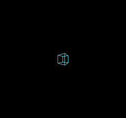
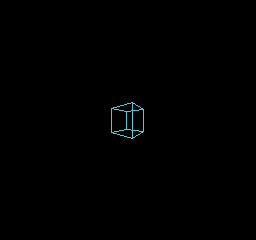
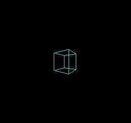
KUROSAKI checked lines, a cube and clearing at each size: nine image checks in total. These are emulator checks, not hardware measurements.
zx0
Decode ZX0-compatible assets into RAM or VRAM. Prepare assets with kitaqfc-zx0.exe on the PC, then decode only the data needed at runtime. --format=auto compares raw, RLE and ZX0 payloads and chooses the smallest; ties prefer raw, RLE, then ZX0. Keep the complete container within 65535 bytes including its nine-byte header, and split assets to fit actual CPU banks and RAM.
Einar Saukas designed the ZX0 format and original compression algorithm. The compressor and decompressor provided here are independent KITAQ implementations, copyright DAISUKE OBA, released under the MIT License.
Run these host commands from the repository root. Build the tool with tools/zx0/build.ps1.
.\kitaqfc-zx0.exe tiles.bin tiles.zx0
.\kitaqfc-zx0.exe tiles.bin tiles.h --header=tiles
.\kitaqfc-zx0.exe map.bin map.kqa --format=auto
.\kitaqfc-zx0.exe tiles.zx0 restored.bin --decompresszx0_decompress
Decode a ZX0 v2 stream into bounded RAM. Matches reference previously decoded bytes, so the destination must be readable and writable. Use this for tile maps or level tables that the CPU will process before use.
Syntax
u16 zx0_decompress(void* dst, u16 capacity, const void* src, u16 packed_size);Parameters
dstStart of writable destination RAM; must not be null. Express capacity in bytes, not array elements.
capacityNumber of writable destination bytes. An ordinary ZX0 stream needs at least one byte. An empty raw KQA1 asset can succeed with capacity zero.
srcStart of compressed data readable through the current bank mapping. Must not be null.
packed_sizeByte count of the complete input. A ZX0 stream includes its end marker and has no trailing bytes. A KQA1 container includes its nine-byte header. Maximum: 65535 bytes.
Return value
Return the decoded byte count on success, or zero on error. Always check zx0_error as well.
Conditions and limits
Include zx0.h and compile lib/zx0.c. These routines use shared scratch and are not reentrant from interrupts. Input and output must not overlap, wrap the CPU address space or cross currently mapped bank windows. The library does not switch asset banks.
Each call updates zx0_error: 0 success, 1 invalid argument, 2 truncated input, 3 malformed stream, 4 insufficient output space, 5 display active. A failure can leave partial output; do not use it. When multiple conditions are invalid, the first detected condition determines the code.
Accept forward ZX0 v2 streams. ZX0 v1, backward streams and external dictionaries are outside this interface. Know the decoded size of the host-generated asset and provide sufficient storage.
Usage example
count=zx0_decompress(decoded_map,16,packed_map,packed_map_SIZE);
if(count!=16||zx0_error!=ZX0_OK)failures++;This is a calling fragment. Follow the stated initialization and buffer requirements before using it in a complete program.
Expected result
The RAM MAP row repeats a square, diamond and checker tile. AUTO RLE MAP forms a horizontal bar from sixteen square tiles. VRAM TILES repeats the same three tiles after decoding their pixels into VRAM. On CGB and FC the square is white, the diamond red and the checker blue; DMG uses gray shades. CHECKS OK confirms that all three calls returned the expected decoded sizes without an error.
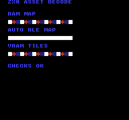
Build command
New-Item -ItemType Directory -Force .\out | Out-Null
.\kitaqfc\kitaqfc.exe .\kitaq-docs\samples\api-examples\fc\zx0_decode.c -I .\kitaqfc\lib -I .\kitaq-docs\samples -o .\out\zx0_decode.nes --mapper=nrom --nes-chr-ram --no-cache --no-disasmImplementation and source
kitaqfc/lib/zx0.h:16
Return decoded bytes, or zero on error (possibly after partial writes). Source and output must not overlap or cross their current CPU bank windows. Capacity and packed_size are byte counts. No prefix/backward/v1 streams.
kitaqfc/lib/zx0.c:52
u16 zx0_decompress(void* dst,u16 capacity,const void* src,u16 packed_size) {
u8 phase; u8 low; u8* out; u8* match;
u16 count; u16 distance; u16 used; u16 upper;
zx0_error=ZX0_OK;
if(!kq_zx_arguments(dst,capacity,src,packed_size)) { zx0_error=ZX0_BAD_ARGUMENT; return 0; }
kq_zx_input=(const u8*)src; kq_zx_left=packed_size;
kq_zx_mask=0; kq_zx_borrowed=0;
out=(u8*)dst; used=0; distance=1; phase=0;
// Phase 0 is literal, 1 reuses the last distance, 2 carries a new distance.
while(1) {
if(phase==2) {
upper=kq_zx_number(1);
if(zx0_error) return 0;
if(upper==256) {
if(kq_zx_left!=0) { zx0_error=ZX0_BAD_STREAM; return 0; }
return used;
}
if(upper>255) { zx0_error=ZX0_BAD_STREAM; return 0; }
low=kq_zx_byte();
distance=(u16)((upper<<7)-(low>>1));
kq_zx_borrowed=1; kq_zx_borrow_value=(u8)(low&1);
count=kq_zx_number(0);
if(count==65535) { zx0_error=ZX0_BAD_STREAM; return 0; }
count++;
} else count=kq_zx_number(0);
if(zx0_error) return 0;
if(count>capacity-used) { zx0_error=ZX0_OUTPUT_FULL; return 0; }
if(phase==0) {
if(count>kq_zx_left) { zx0_error=ZX0_TRUNCATED; return 0; }
kq_zx_left-=count; used+=count;
while(count!=0) { *out++=*kq_zx_input++; count--; }
phase=kq_zx_bit()?2:1;
} else {
if(distance>used) { zx0_error=ZX0_BAD_STREAM; return 0; }
match=out-distance; used+=count;
// Forward byte copying deliberately supports overlapping matches.
while(count!=0) { *out++=*match++; count--; }
phase=kq_zx_bit()?2:0;
}
if(zx0_error) return 0;
}
}asset_decompress
Read the codec and sizes from a KQA1 header generated by --format=auto, then copy raw bytes or decode RLE/ZX0 into RAM. Caller code does not need a separate branch for each codec.
Syntax
u16 asset_decompress(void* dst, u16 capacity, const void* src, u16 packed_size);Parameters
dstStart of writable destination RAM; must not be null. Express capacity in bytes, not array elements.
capacityNumber of writable destination bytes. An ordinary ZX0 stream needs at least one byte. An empty raw KQA1 asset can succeed with capacity zero.
srcStart of compressed data readable through the current bank mapping. Must not be null.
packed_sizeByte count of the complete input. A ZX0 stream includes its end marker and has no trailing bytes. A KQA1 container includes its nine-byte header. Maximum: 65535 bytes.
Return value
Return the decoded byte count on success, or zero on error. Always check zx0_error as well.
Conditions and limits
Include zx0.h and compile lib/zx0.c. These routines use shared scratch and are not reentrant from interrupts. Input and output must not overlap, wrap the CPU address space or cross currently mapped bank windows. The library does not switch asset banks.
Each call updates zx0_error: 0 success, 1 invalid argument, 2 truncated input, 3 malformed stream, 4 insufficient output space, 5 display active. A failure can leave partial output; do not use it. When multiple conditions are invalid, the first detected condition determines the code.
KQA1 is the KITAQ asset container: four-byte magic, one-byte codec (0 raw, 1 RLE, 2 ZX0), decoded size u16, payload size u16, then payload. The u16 fields are little-endian. RLE repeats count/value pairs, with counts 1..255 and a zero-count terminator. An empty raw asset succeeds with return value zero and error zero.
Usage example
count=asset_decompress(decoded_auto,16,packed_auto,packed_auto_SIZE);
if(count!=16||zx0_error!=ZX0_OK)failures++;This is a calling fragment. Follow the stated initialization and buffer requirements before using it in a complete program.
Expected result
The RAM MAP row repeats a square, diamond and checker tile. AUTO RLE MAP forms a horizontal bar from sixteen square tiles. VRAM TILES repeats the same three tiles after decoding their pixels into VRAM. On CGB and FC the square is white, the diamond red and the checker blue; DMG uses gray shades. CHECKS OK confirms that all three calls returned the expected decoded sizes without an error.
Build command
New-Item -ItemType Directory -Force .\out | Out-Null
.\kitaqfc\kitaqfc.exe .\kitaq-docs\samples\api-examples\fc\zx0_decode.c -I .\kitaqfc\lib -I .\kitaq-docs\samples -o .\out\zx0_decode.nes --mapper=nrom --nes-chr-ram --no-cache --no-disasmImplementation and source
kitaqfc/lib/zx0.h:19
Decode a KQA1 raw/RLE/ZX0 asset produced with --format=auto. Empty raw assets return zero with zx0_error==ZX0_OK.
kitaqfc/lib/zx0.c:95
u16 asset_decompress(void* dst,u16 capacity,const void* src,u16 packed_size) {
const u8* in; u8* out; u16 raw; u16 packed; u16 used;
u8 codec; u8 count; u8 value;
zx0_error=ZX0_OK;
if(packed_size<9||!kq_zx_arguments(dst,capacity,src,packed_size)) { zx0_error=ZX0_BAD_ARGUMENT; return 0; }
in=(const u8*)src; out=(u8*)dst;
if(in[0]!=75||in[1]!=81||in[2]!=65||in[3]!=49) { zx0_error=ZX0_BAD_STREAM; return 0; }
codec=in[4]; raw=(u16)((u16)in[5]|((u16)in[6]<<8));
packed=(u16)((u16)in[7]|((u16)in[8]<<8));
if(packed!=packed_size-9||codec>2) { zx0_error=ZX0_BAD_STREAM; return 0; }
if(raw>capacity) { zx0_error=ZX0_OUTPUT_FULL; return 0; }
in+=9;
if(codec==2) {
used=zx0_decompress(dst,raw,in,packed);
if(zx0_error==0&&used!=raw) zx0_error=ZX0_BAD_STREAM;
return zx0_error?0:used;
}
if(codec==0) {
if(raw!=packed) { zx0_error=ZX0_BAD_STREAM; return 0; }
used=raw; while(raw!=0) { *out++=*in++; raw--; } return used;
}
used=0;
while(packed!=0) {
count=*in++; packed--;
if(count==0) {
if(packed!=0||used!=raw) { zx0_error=ZX0_BAD_STREAM; return 0; }
return used;
}
if(packed==0) { zx0_error=ZX0_TRUNCATED; return 0; }
value=*in++; packed--;
if((u16)count>raw-used) { zx0_error=ZX0_OUTPUT_FULL; return 0; }
used+=count; while(count!=0) { *out++=value; count--; }
}
zx0_error=ZX0_TRUNCATED; return 0;
}zx0_decompress_vram
Decode the entire ZX0 asset into caller-owned RAM, then upload it to the PPU in chunks of at most 128 bytes. Match history stays in RAM because PPU memory is not directly readable through ordinary CPU pointers.
Syntax
u16 zx0_decompress_vram(u16 ppu_addr,void* workspace,u16 capacity,const void* src,u16 packed_size);Parameters
ppu_addrPPU destination, 0x0000..0x2FFF. The entire decoded extent must end before 0x3000. Pattern-table destinations require a cartridge configuration with CHR RAM.
workspaceStart of writable destination RAM; must not be null. Express capacity in bytes, not array elements.
capacityRAM workspace capacity. It must hold the whole decoded asset; the 128-byte PPU transfer chunk size does not reduce this requirement.
srcStart of compressed data readable through the current bank mapping. Must not be null.
packed_sizeByte count of the complete input. A ZX0 stream includes its end marker and has no trailing bytes. A KQA1 container includes its nine-byte header. Maximum: 65535 bytes.
Return value
Return the decoded byte count on success, or zero on error. Always check zx0_error as well.
Conditions and limits
Include zx0.h and compile lib/zx0.c. These routines use shared scratch and are not reentrant from interrupts. Input and output must not overlap, wrap the CPU address space or cross currently mapped bank windows. The library does not switch asset banks.
Each call updates zx0_error: 0 success, 1 invalid argument, 2 truncated input, 3 malformed stream, 4 insufficient output space, 5 display active. A failure can leave partial output; do not use it. When multiple conditions are invalid, the first detected condition determines the code.
Accept forward ZX0 v2 streams. ZX0 v1, backward streams and external dictionaries are outside this interface. Know the decoded size of the host-generated asset and provide sufficient storage.
Disable rendering with __ppu_mask_set(0) before calling. The routine temporarily selects PPU increment 1 and restores PPUCTRL afterward. PPUADDR/PPUDATA operations change PPU address and latch state; set scrolling before resuming rendering. Interrupt handlers must also avoid PPU access during the call. Do not use this for CHR ROM or palette transfers. Destination extent is checked after RAM decoding, so a range error may still modify the workspace.
Usage example
count=zx0_decompress_vram(0x0800,tile_workspace,48,packed_tiles,packed_tiles_SIZE);
if(count!=48||zx0_error!=ZX0_OK)failures++;This is a calling fragment. Follow the stated initialization and buffer requirements before using it in a complete program.
Expected result
The RAM MAP row repeats a square, diamond and checker tile. AUTO RLE MAP forms a horizontal bar from sixteen square tiles. VRAM TILES repeats the same three tiles after decoding their pixels into VRAM. On CGB and FC the square is white, the diamond red and the checker blue; DMG uses gray shades. CHECKS OK confirms that all three calls returned the expected decoded sizes without an error.
Build command
New-Item -ItemType Directory -Force .\out | Out-Null
.\kitaqfc\kitaqfc.exe .\kitaq-docs\samples\api-examples\fc\zx0_decode.c -I .\kitaqfc\lib -I .\kitaq-docs\samples -o .\out\zx0_decode.nes --mapper=nrom --nes-chr-ram --no-cache --no-disasmImplementation and source
kitaqfc/lib/zx0.h:23
Decode into caller-owned RAM, then transfer to CHR RAM or nametable memory. Rendering must be off. Preserve PPUCTRL; set scroll before enabling rendering. The workspace must hold the whole output. No palette upload or CHR ROM writes.
kitaqfc/lib/zx0.c:134
u16 zx0_decompress_vram(u16 ppu_addr,void* workspace,u16 capacity,const void* src,u16 packed_size) {
u16 size; u16 left; const u8* data; u8 chunk; u8 saved_ctrl;
zx0_error=ZX0_OK;
if(ppu_addr>=0x3000) { zx0_error=ZX0_BAD_ARGUMENT; return 0; }
if(__ppu_mask_get()&0x18) { zx0_error=ZX0_DISPLAY_ACTIVE; return 0; }
size=zx0_decompress(workspace,capacity,src,packed_size);
if(zx0_error) return 0;
if(size>0x3000-ppu_addr) { zx0_error=ZX0_OUTPUT_FULL; return 0; }
saved_ctrl=__ppu_ctrl_get(); __ppu_ctrl_set((u8)(saved_ctrl&0xFB));
left=size; data=(const u8*)workspace;
while(left!=0) {
chunk=left>128?128:(u8)left;
__vram_write(ppu_addr,data,chunk);
ppu_addr+=chunk; data+=chunk; left-=chunk;
}
__ppu_ctrl_set(saved_ctrl); return size;
}wire3d — Individual function reference
Wire3DFC_Init
Initialize CHR RAM, the background map, staging pixels and dirty-tile history, then enable background rendering with cyan lines. Existing screen contents are erased.
Syntax
void Wire3DFC_Init(void);Return value
No return value.
Conditions and limits
Requires 8 KiB of CHR RAM, writable cartridge PRG RAM at $6800–$70BF and zero-page scratch at $00–$0A. Build with --nes-chr-ram. Shared working storage makes the renderer non-reentrant.
Call Init, BeginFrame, drawing functions and EndFrame in that order. The library owns both background pattern tables, nametable zero, the background palette and scroll, and disables NMI. Do not run another PPU writer concurrently.
Choose 64×48 (default), 96×64 or 128×96 by defining both WIRE3D_FC_WIDTH and WIRE3D_FC_HEIGHT before including wire3d.c. The viewport is centered on screen. Smaller views reduce rendering and transfer work but reserve the same RAM capacity.
The images were captured in KUROSAKI at all three sizes. Checks compare every pixel of the 256×240 image, including color, and the numeric results in RAM. They are not hardware performance measurements.
Usage example
Wire3DFC_Init();This is a calling fragment. Follow the stated initialization and buffer requirements before using it in a complete program.
Expected result
The completed image has a cyan border, a central cube, an upper cross and a lower horizontal line on black. The border uses 2D coordinates; the cross uses point rotation and projection; the lower line uses camera-space endpoints; the cube uses vertex and edge arrays. These shapes let you compare the roles of the APIs on one screen.
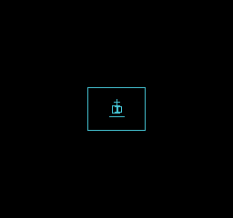
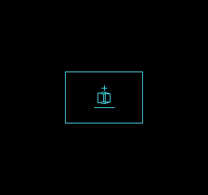
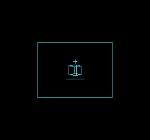
Build command
New-Item -ItemType Directory -Force .\out | Out-Null
.\kitaqfc\kitaqfc.exe .\kitaq-docs\samples\api-examples\fc\wire3d_projection.c -I .\kitaqfc\lib --mapper=nrom --nes-chr-ram -o .\out\wire3d_projection.nes --no-cache --no-disasm
.\kurosaki\kurosaki.exe run .\out\wire3d_projection.nes --headless --frames 180 --png .\out\wire3d_projection.pngImplementation and source
kitaqfc/lib/wire3d.h:34
Own both CHR-RAM pattern tables and nametable zero. Requires writable 8 KiB CHR RAM and PRG RAM 0x6800..0x70BF; reserves ZP 0x00..0x0A for drawing/transfer. Build with --nes-chr-ram and provide cartridge PRG RAM for the stage. Center the viewport, clear video memory, select cyan-on-dark colors and turn on background rendering with NMI disabled. Do not run another PPU writer.
kitaqfc/lib/wire3d.c:40
void Wire3DFC_Init(void) {
u16 address;u8 x,y,tile;
__ppu_mask_set(0);__ppu_ctrl_set(0);
// Both pattern tables have a zero high bitplane; all subsequent transfers
// update only low bitplanes in the currently hidden table.
for(address=0;address<8192;address+=128)__vram_fill(address,0,128);
for(address=0x2000;address<0x2400;address+=128)__vram_fill(address,255,128);
__vram_fill(0x23C0,0,64);__palette_bg_load(w3dfc_palette);
tile=0;
for(y=0;y<WIRE3D_FC_HEIGHT/8;y++) {
for(x=0;x<WIRE3D_FC_WIDTH/8;x++) {
address=(u16)(0x2000+(u16)(y+(30-WIRE3D_FC_HEIGHT/8)/2)*32+x+(32-WIRE3D_FC_WIDTH/8)/2);
__ppu_addr(address);__ppu_data(tile);tile++;
}
}
__memset(w3dfc_pixels,0,1536);
__memset(w3dfc_dirty,0,192);
__memset(w3dfc_bank0_dirty,0,192);
__memset(w3dfc_bank1_dirty,0,192);
w3dfc_front=0;w3dfc_batch_count=0;
wire3d_transfer_frames=0;wire3d_uploaded_tiles=0;
__scroll_set(0,0);__ppu_ctrl_set(0);__ppu_mask_set(0x0A);
}Wire3DFC_BeginFrame
Clear staged pixels in tiles touched by the previous drawing, preparing an empty frame. The displayed CHR table and visible image remain unchanged.
Syntax
void Wire3DFC_BeginFrame(void);Return value
No return value.
Conditions and limits
Call once at the start of each drawing. Calling again before EndFrame erases the lines staged so far.
Requires 8 KiB of CHR RAM, writable cartridge PRG RAM at $6800–$70BF and zero-page scratch at $00–$0A. Build with --nes-chr-ram. Shared working storage makes the renderer non-reentrant.
Call Init, BeginFrame, drawing functions and EndFrame in that order. The library owns both background pattern tables, nametable zero, the background palette and scroll, and disables NMI. Do not run another PPU writer concurrently.
Choose 64×48 (default), 96×64 or 128×96 by defining both WIRE3D_FC_WIDTH and WIRE3D_FC_HEIGHT before including wire3d.c. The viewport is centered on screen. Smaller views reduce rendering and transfer work but reserve the same RAM capacity.
The images were captured in KUROSAKI at all three sizes. Checks compare every pixel of the 256×240 image, including color, and the numeric results in RAM. They are not hardware performance measurements.
Usage example
Wire3DFC_BeginFrame();This is a calling fragment. Follow the stated initialization and buffer requirements before using it in a complete program.
Expected result
The completed image has a cyan border, a central cube, an upper cross and a lower horizontal line on black. The border uses 2D coordinates; the cross uses point rotation and projection; the lower line uses camera-space endpoints; the cube uses vertex and edge arrays. These shapes let you compare the roles of the APIs on one screen.
Build command
New-Item -ItemType Directory -Force .\out | Out-Null
.\kitaqfc\kitaqfc.exe .\kitaq-docs\samples\api-examples\fc\wire3d_projection.c -I .\kitaqfc\lib --mapper=nrom --nes-chr-ram -o .\out\wire3d_projection.nes --no-cache --no-disasm
.\kurosaki\kurosaki.exe run .\out\wire3d_projection.nes --headless --frames 180 --png .\out\wire3d_projection.pngImplementation and source
kitaqfc/lib/wire3d.h:36
Clear the previous staged drawing. The displayed front image remains intact.
kitaqfc/lib/wire3d.c:63
void Wire3DFC_BeginFrame(void) {
w3dfc_tile_count=WIRE3D_FC_TILES;
// Clear exactly eight bytes per previously touched tile, using the same
// zero-page pointer as upload. No nested C indexing runs in the inner loop.
__asm {
PHA
TXA
PHA
TYA
PHA
LDX #0
w3dfc_clear_next:
LDA w3dfc_dirty,X
BEQ w3dfc_clear_skip
TXA
ASL A
ASL A
ASL A
STA w3dfc_upload_ptr
TXA
LSR A
LSR A
LSR A
LSR A
LSR A
CLC
ADC #104
STA w3dfc_upload_ptr+1
LDA #0
STA w3dfc_dirty,X
LDY #7
w3dfc_clear_byte:
STA (w3dfc_upload_ptr),Y
DEY
BPL w3dfc_clear_byte
w3dfc_clear_skip:
INX
CPX w3dfc_tile_count
BNE w3dfc_clear_next
PLA
TAY
PLA
TAX
PLA
}
}Wire3DFC_DrawLine2D
Rasterize an inclusive line into staging memory and mark touched tiles for upload. No camera projection is performed.
Syntax
void Wire3DFC_DrawLine2D(s16 ax,s16 ay,s16 bx,s16 by);Parameters
axStart horizontal coordinate in viewport pixels, from −512 to 511. The viewport top left is (0,0).
ayStart vertical coordinate in viewport pixels, from −512 to 511. The viewport top left is (0,0).
bxEnd horizontal coordinate in viewport pixels, from −512 to 511. The viewport top left is (0,0).
byEnd vertical coordinate in viewport pixels, from −512 to 511. The viewport top left is (0,0).
Return value
No return value.
Conditions and limits
Reject the whole line if any endpoint coordinate is outside −512..511. Otherwise discard pixels outside the viewport. New pixels are ORed with staged lines and become visible through EndFrame.
Requires 8 KiB of CHR RAM, writable cartridge PRG RAM at $6800–$70BF and zero-page scratch at $00–$0A. Build with --nes-chr-ram. Shared working storage makes the renderer non-reentrant.
Call Init, BeginFrame, drawing functions and EndFrame in that order. The library owns both background pattern tables, nametable zero, the background palette and scroll, and disables NMI. Do not run another PPU writer concurrently.
Choose 64×48 (default), 96×64 or 128×96 by defining both WIRE3D_FC_WIDTH and WIRE3D_FC_HEIGHT before including wire3d.c. The viewport is centered on screen. Smaller views reduce rendering and transfer work but reserve the same RAM capacity.
The images were captured in KUROSAKI at all three sizes. Checks compare every pixel of the 256×240 image, including color, and the numeric results in RAM. They are not hardware performance measurements.
Usage example
Wire3DFC_DrawLine2D(0,0,WIRE3D_FC_WIDTH-1,0);This is a calling fragment. Follow the stated initialization and buffer requirements before using it in a complete program.
Expected result
The completed image has a cyan border, a central cube, an upper cross and a lower horizontal line on black. The border uses 2D coordinates; the cross uses point rotation and projection; the lower line uses camera-space endpoints; the cube uses vertex and edge arrays. These shapes let you compare the roles of the APIs on one screen.
Build command
New-Item -ItemType Directory -Force .\out | Out-Null
.\kitaqfc\kitaqfc.exe .\kitaq-docs\samples\api-examples\fc\wire3d_projection.c -I .\kitaqfc\lib --mapper=nrom --nes-chr-ram -o .\out\wire3d_projection.nes --no-cache --no-disasm
.\kurosaki\kurosaki.exe run .\out\wire3d_projection.nes --headless --frames 180 --png .\out\wire3d_projection.pngImplementation and source
kitaqfc/lib/wire3d.h:39
Draw a connected, inclusive segment. Endpoints must be -512..511. Pixels outside the viewport are clipped; completely outside bounding boxes return.
kitaqfc/lib/wire3d.c:193
void Wire3DFC_DrawLine2D(s16 ax,s16 ay,s16 bx,s16 by) {
s16 dx,dy,sx,sy,error,twice;u16 address;u8 tile;
if(ax < -512 || ax>511 || ay < -512 || ay>511 || bx < -512 || bx>511 || by < -512 || by>511)return;
if((ax<0 && bx<0)||(ay<0 && by<0)||(ax>=WIRE3D_FC_WIDTH && bx>=WIRE3D_FC_WIDTH)||(ay>=WIRE3D_FC_HEIGHT && by>=WIRE3D_FC_HEIGHT))return;
dx=bx-ax;if(dx<0)dx=0-dx;
dy=by-ay;if(dy<0)dy=0-dy;
if(ax>=0 && ay>=0 && bx>=0 && by>=0 && ax<WIRE3D_FC_WIDTH && bx<WIRE3D_FC_WIDTH && ay<WIRE3D_FC_HEIGHT && by<WIRE3D_FC_HEIGHT) {
w3dfc_lx=(u8)ax;w3dfc_ly=(u8)ay;
w3dfc_sx=ax<bx?1:255;w3dfc_sy=ay<by?1:255;
if(dx>=dy){w3dfc_major=(u8)dx;w3dfc_minor=(u8)dy;w3dfc_y_major=0;}
else{w3dfc_major=(u8)dy;w3dfc_minor=(u8)dx;w3dfc_y_major=1;}
w3dfc_error=(u8)(w3dfc_major>>1);w3dfc_remaining=(u8)(w3dfc_major+1);
w3dfc_line_inside();return;
}
sx=ax<bx?1:-1;sy=ay<by?1:-1;error=dx-dy;
while(1) {
if(ax>=0 && ax<WIRE3D_FC_WIDTH && ay>=0 && ay<WIRE3D_FC_HEIGHT) {
tile=(u8)(((u8)ay>>3)*(WIRE3D_FC_WIDTH/8)+((u8)ax>>3));
address=(u16)tile*8+((u8)ay&7);
w3dfc_pixels[address]=(u8)(w3dfc_pixels[address]|w3dfc_bits[(u8)ax&7]);
w3dfc_dirty[tile]=1;
}
if(ax==bx && ay==by)return;
twice=error*2;
if(twice > (0-dy)){error-=dy;ax+=sx;}
if(twice < dx){error+=dx;ay+=sy;}
}
}Wire3DFC_RotatePoint
Rotate one model-space point in place, without translation or perspective projection.
Syntax
void Wire3DFC_RotatePoint(s16* x,s16* y,s16* z,u8 rx,u8 ry,u8 rz);Parameters
xPointer to the writable s16 x component. Use three distinct locations and keep each input component in −63..63.
yPointer to the writable s16 y component. Use three distinct locations and keep each input component in −63..63.
zPointer to the writable s16 z component. Use three distinct locations and keep each input component in −63..63.
rxX-axis angle, in 32 steps per turn.
ryY-axis angle, in 32 steps per turn.
rzZ-axis angle, in 32 steps per turn.
Return value
No return value.
Conditions and limits
Angles use 32 steps per turn: 0 is no rotation, 8 is 90 degrees and 16 is 180 degrees. Only the low five bits are used. Rotations are applied in Y, X, Z order.
If any pointer is null, return without modifying coordinates. Q6 integer products truncate toward zero. Input components are not automatically clamped.
Requires 8 KiB of CHR RAM, writable cartridge PRG RAM at $6800–$70BF and zero-page scratch at $00–$0A. Build with --nes-chr-ram. Shared working storage makes the renderer non-reentrant.
Call Init, BeginFrame, drawing functions and EndFrame in that order. The library owns both background pattern tables, nametable zero, the background palette and scroll, and disables NMI. Do not run another PPU writer concurrently.
Choose 64×48 (default), 96×64 or 128×96 by defining both WIRE3D_FC_WIDTH and WIRE3D_FC_HEIGHT before including wire3d.c. The viewport is centered on screen. Smaller views reduce rendering and transfer work but reserve the same RAM capacity.
The images were captured in KUROSAKI at all three sizes. Checks compare every pixel of the 256×240 image, including color, and the numeric results in RAM. They are not hardware performance measurements.
Usage example
Wire3DFC_RotatePoint(&px,&py,&pz,0,0,8);This is a calling fragment. Follow the stated initialization and buffer requirements before using it in a complete program.
Expected result
The completed image has a cyan border, a central cube, an upper cross and a lower horizontal line on black. The border uses 2D coordinates; the cross uses point rotation and projection; the lower line uses camera-space endpoints; the cube uses vertex and edge arrays. These shapes let you compare the roles of the APIs on one screen.
In the sample, a 90-degree Z rotation changes (24,0,0) to (0,24,0); its projected cross appears above the cube.
Build command
New-Item -ItemType Directory -Force .\out | Out-Null
.\kitaqfc\kitaqfc.exe .\kitaq-docs\samples\api-examples\fc\wire3d_projection.c -I .\kitaqfc\lib --mapper=nrom --nes-chr-ram -o .\out\wire3d_projection.nes --no-cache --no-disasm
.\kurosaki\kurosaki.exe run .\out\wire3d_projection.nes --headless --frames 180 --png .\out\wire3d_projection.pngImplementation and source
kitaqfc/lib/wire3d.h:42
Rotate a small model-space point in Y/X/Z order. Angles wrap in 32 steps. Start with components in -63..63; supply three distinct writable pointers.
kitaqfc/lib/wire3d.c:227
void Wire3DFC_RotatePoint(s16* x,s16* y,s16* z,u8 rx,u8 ry,u8 rz) {
s16 a,b,s,c;
if(x==0 || y==0 || z==0)return;
ry=(u8)(ry&31);rx=(u8)(rx&31);rz=(u8)(rz&31);
if(ry!=0){a=*x;b=*z;s=w3dfc_sin[ry];c=w3dfc_sin[(u8)((ry+8)&31)];*x=w3dfc_q6(a*c+b*s);*z=w3dfc_q6(b*c-a*s);}
if(rx!=0){a=*y;b=*z;s=w3dfc_sin[rx];c=w3dfc_sin[(u8)((rx+8)&31)];*y=w3dfc_q6(a*c-b*s);*z=w3dfc_q6(a*s+b*c);}
if(rz!=0){a=*x;b=*y;s=w3dfc_sin[rz];c=w3dfc_sin[(u8)((rz+8)&31)];*x=w3dfc_q6(a*c-b*s);*y=w3dfc_q6(a*s+b*c);}
}Wire3DFC_ProjectPoint
Project one camera-space point to viewport pixels, using the viewport center as the projection center. This does not draw or change a mask.
Syntax
u8 Wire3DFC_ProjectPoint(s16 x,s16 y,s16 z,s16* sx,s16* sy);Parameters
xCamera-space X coordinate. Use −127..127. Positive X is right and positive Y is up.
yCamera-space Y coordinate. Use −127..127. Positive X is right and positive Y is up.
zCamera-space Z coordinate. Depth must be 32..255; larger values are farther away.
sxWritable s16 pointer for the projected horizontal pixel coordinate. Use distinct output locations.
syWritable s16 pointer for the projected vertical pixel coordinate. Use distinct output locations.
Return value
Return 1 on success, or 0 for out-of-range coordinates or null output pointers. Failed calls leave outputs untouched.
Conditions and limits
Valid depth does not guarantee an on-screen result. Output coordinates are not clamped to the viewport. Integer reciprocal approximation may differ by a few pixels from ideal floating-point projection.
Requires 8 KiB of CHR RAM, writable cartridge PRG RAM at $6800–$70BF and zero-page scratch at $00–$0A. Build with --nes-chr-ram. Shared working storage makes the renderer non-reentrant.
Call Init, BeginFrame, drawing functions and EndFrame in that order. The library owns both background pattern tables, nametable zero, the background palette and scroll, and disables NMI. Do not run another PPU writer concurrently.
Choose 64×48 (default), 96×64 or 128×96 by defining both WIRE3D_FC_WIDTH and WIRE3D_FC_HEIGHT before including wire3d.c. The viewport is centered on screen. Smaller views reduce rendering and transfer work but reserve the same RAM capacity.
The images were captured in KUROSAKI at all three sizes. Checks compare every pixel of the 256×240 image, including color, and the numeric results in RAM. They are not hardware performance measurements.
Usage example
projected=Wire3DFC_ProjectPoint(px,py,pz+96,&sx,&sy);This is a calling fragment. Follow the stated initialization and buffer requirements before using it in a complete program.
Expected result
The completed image has a cyan border, a central cube, an upper cross and a lower horizontal line on black. The border uses 2D coordinates; the cross uses point rotation and projection; the lower line uses camera-space endpoints; the cube uses vertex and edge arrays. These shapes let you compare the roles of the APIs on one screen.
The cross center is (32,16) at 64×48, (48,20) at 96×64 and (64,33) at 128×96, measured from the viewport top left.
Build command
New-Item -ItemType Directory -Force .\out | Out-Null
.\kitaqfc\kitaqfc.exe .\kitaq-docs\samples\api-examples\fc\wire3d_projection.c -I .\kitaqfc\lib --mapper=nrom --nes-chr-ram -o .\out\wire3d_projection.nes --no-cache --no-disasm
.\kurosaki\kurosaki.exe run .\out\wire3d_projection.nes --headless --frames 180 --png .\out\wire3d_projection.pngImplementation and source
kitaqfc/lib/wire3d.h:46
Project camera-space coordinates using an integer reciprocal table. Require x/y within -127..127 and z within 32..255. Return zero without touching outputs on invalid input; success returns one and writes unclipped screen coordinates.
kitaqfc/lib/wire3d.c:235
u8 Wire3DFC_ProjectPoint(s16 x,s16 y,s16 z,s16* sx,s16* sy) {
u8 scale;u16 magnitude;
if(sx==0 || sy==0 || x < -127 || x>127 || y < -127 || y>127 || z<32 || z>255)return 0;
// Focal length follows half the selected width. Use unsigned magnitude
// products and shifts so negative coordinates mirror positive ones exactly.
scale=w3dfc_recip[(u8)z];
if(x<0){magnitude=__mul16x8((u16)(0-x),scale);*sx=WIRE3D_FC_WIDTH/2-(s16)(magnitude>>7);}
else{magnitude=__mul16x8((u16)x,scale);*sx=WIRE3D_FC_WIDTH/2+(s16)(magnitude>>7);}
if(y<0){magnitude=__mul16x8((u16)(0-y),scale);*sy=WIRE3D_FC_HEIGHT/2+(s16)(magnitude>>7);}
else{magnitude=__mul16x8((u16)y,scale);*sy=WIRE3D_FC_HEIGHT/2-(s16)(magnitude>>7);}
return 1;
}Wire3DFC_DrawLine3D
Project two camera-space endpoints and draw the line when both are valid. Perform any model rotation or translation before calling.
Syntax
void Wire3DFC_DrawLine3D(s16 ax,s16 ay,s16 az,s16 bx,s16 by,s16 bz);Parameters
axStart camera-space X coordinate; use −127..127.
ayStart camera-space Y coordinate; use −127..127.
azStart camera-space Z coordinate; use depth 32..255.
bxEnd camera-space X coordinate; use −127..127.
byEnd camera-space Y coordinate; use −127..127.
bzEnd camera-space Z coordinate; use depth 32..255.
Return value
No return value.
Conditions and limits
If either endpoint fails projection, discard the whole segment. There is no intersection clipping at the near plane. DrawLine2D discards off-viewport pixels of accepted segments.
Requires 8 KiB of CHR RAM, writable cartridge PRG RAM at $6800–$70BF and zero-page scratch at $00–$0A. Build with --nes-chr-ram. Shared working storage makes the renderer non-reentrant.
Call Init, BeginFrame, drawing functions and EndFrame in that order. The library owns both background pattern tables, nametable zero, the background palette and scroll, and disables NMI. Do not run another PPU writer concurrently.
Choose 64×48 (default), 96×64 or 128×96 by defining both WIRE3D_FC_WIDTH and WIRE3D_FC_HEIGHT before including wire3d.c. The viewport is centered on screen. Smaller views reduce rendering and transfer work but reserve the same RAM capacity.
The images were captured in KUROSAKI at all three sizes. Checks compare every pixel of the 256×240 image, including color, and the numeric results in RAM. They are not hardware performance measurements.
Usage example
Wire3DFC_DrawLine3D(-24,-24,96,24,-24,96);This is a calling fragment. Follow the stated initialization and buffer requirements before using it in a complete program.
Expected result
The completed image has a cyan border, a central cube, an upper cross and a lower horizontal line on black. The border uses 2D coordinates; the cross uses point rotation and projection; the lower line uses camera-space endpoints; the cube uses vertex and edge arrays. These shapes let you compare the roles of the APIs on one screen.
Build command
New-Item -ItemType Directory -Force .\out | Out-Null
.\kitaqfc\kitaqfc.exe .\kitaq-docs\samples\api-examples\fc\wire3d_projection.c -I .\kitaqfc\lib --mapper=nrom --nes-chr-ram -o .\out\wire3d_projection.nes --no-cache --no-disasm
.\kurosaki\kurosaki.exe run .\out\wire3d_projection.nes --headless --frames 180 --png .\out\wire3d_projection.pngImplementation and source
kitaqfc/lib/wire3d.h:49
Draw when both endpoints pass the projection range. Near-plane crossings are rejected, not intersected with the near plane; screen pixels are clipped.
kitaqfc/lib/wire3d.c:247
void Wire3DFC_DrawLine3D(s16 ax,s16 ay,s16 az,s16 bx,s16 by,s16 bz) {
s16 x0,y0,x1,y1;
if(Wire3DFC_ProjectPoint(ax,ay,az,&x0,&y0)==0)return;
if(Wire3DFC_ProjectPoint(bx,by,bz,&x1,&y1)==0)return;
Wire3DFC_DrawLine2D(x0,y0,x1,y1);
}Wire3DFC_DrawModel
Rotate, translate and project vertices once, then reuse their screen coordinates while drawing indexed edges.
Syntax
void Wire3DFC_DrawModel(const Wire3DFC_Vec3* vertices,u8 vertex_count,const Wire3DFC_Edge* edges,u8 edge_count,s16 x,s16 y,s16 z,u8 rx,u8 ry,u8 rz);Parameters
verticesArray of Wire3DFC_Vec3 records with s8 x/y/z components. Keep components in −63..63 and supply the declared number of vertices.
vertex_countVertex count; values above 24 use only the first 24 vertices.
edgesArray of Wire3DFC_Edge records containing vertex indices a/b. Supply edge_count elements.
edge_countNumber of edges to process (0..255). Edges referencing vertices beyond the effective vertex count are skipped.
xX translation added after rotation. Transformed points must satisfy ProjectPoint input ranges.
yY translation added after rotation. Transformed points must satisfy ProjectPoint input ranges.
zZ translation added after rotation. Transformed points must satisfy ProjectPoint input ranges.
rxX-axis angle, in 32 steps per turn.
ryY-axis angle, in 32 steps per turn.
rzZ-axis angle, in 32 steps per turn.
Return value
No return value.
Conditions and limits
Angles use 32 steps per turn: 0 is no rotation, 8 is 90 degrees and 16 is 180 degrees. Only the low five bits are used. Rotations are applied in Y, X, Z order.
Null vertices or edges produce no drawing. Tables must remain readable in the current PRG mapping. This API uses no face data or depth mask and draws every valid edge, so rear cube edges remain visible.
Requires 8 KiB of CHR RAM, writable cartridge PRG RAM at $6800–$70BF and zero-page scratch at $00–$0A. Build with --nes-chr-ram. Shared working storage makes the renderer non-reentrant.
Call Init, BeginFrame, drawing functions and EndFrame in that order. The library owns both background pattern tables, nametable zero, the background palette and scroll, and disables NMI. Do not run another PPU writer concurrently.
Choose 64×48 (default), 96×64 or 128×96 by defining both WIRE3D_FC_WIDTH and WIRE3D_FC_HEIGHT before including wire3d.c. The viewport is centered on screen. Smaller views reduce rendering and transfer work but reserve the same RAM capacity.
The images were captured in KUROSAKI at all three sizes. Checks compare every pixel of the 256×240 image, including color, and the numeric results in RAM. They are not hardware performance measurements.
Usage example
Wire3DFC_DrawModel(example_vertices,8,example_edges,12,0,0,96,0,3,0);This is a calling fragment. Follow the stated initialization and buffer requirements before using it in a complete program.
Expected result
The completed image has a cyan border, a central cube, an upper cross and a lower horizontal line on black. The border uses 2D coordinates; the cross uses point rotation and projection; the lower line uses camera-space endpoints; the cube uses vertex and edge arrays. These shapes let you compare the roles of the APIs on one screen.
Build command
New-Item -ItemType Directory -Force .\out | Out-Null
.\kitaqfc\kitaqfc.exe .\kitaq-docs\samples\api-examples\fc\wire3d_projection.c -I .\kitaqfc\lib --mapper=nrom --nes-chr-ram -o .\out\wire3d_projection.nes --no-cache --no-disasm
.\kurosaki\kurosaki.exe run .\out\wire3d_projection.nes --headless --frames 180 --png .\out\wire3d_projection.pngImplementation and source
kitaqfc/lib/wire3d.h:53
Rotate, translate and project up to 24 vertices, then draw indexed edges. Invalid edge indices/depth endpoints are skipped. Model data must remain readable in the current PRG mapping. This draws all edges, without face culling.
kitaqfc/lib/wire3d.c:253
void Wire3DFC_DrawModel(const Wire3DFC_Vec3* vertices,u8 vertex_count,const Wire3DFC_Edge* edges,u8 edge_count,s16 x,s16 y,s16 z,u8 rx,u8 ry,u8 rz) {
u8 i,a,b;s16 px,py,pz;
if(vertices==0 || edges==0)return;
if(vertex_count>24)vertex_count=24;
for(i=0;i<vertex_count;i++) {
px=vertices[i].x;py=vertices[i].y;pz=vertices[i].z;
Wire3DFC_RotatePoint(&px,&py,&pz,rx,ry,rz);
w3dfc_valid[i]=Wire3DFC_ProjectPoint(px+x,py+y,pz+z,&w3dfc_projected_x[i],&w3dfc_projected_y[i]);
}
for(i=0;i<edge_count;i++) {
a=edges[i].a;b=edges[i].b;
if(a<vertex_count && b<vertex_count && w3dfc_valid[a]!=0 && w3dfc_valid[b]!=0)
Wire3DFC_DrawLine2D(w3dfc_projected_x[a],w3dfc_projected_y[a],w3dfc_projected_x[b],w3dfc_projected_y[b]);
}
}Wire3DFC_EndFrame
Upload touched tiles and tiles that must be erased from the hidden CHR table, then switch the displayed table at a fresh VBlank after completion.
Syntax
void Wire3DFC_EndFrame(void);Return value
No return value.
Conditions and limits
Each VBlank batch transfers at most 16 tiles, or 128 low-bitplane bytes. This synchronous call waits for as many batches as needed. wire3d_uploaded_tiles reports transferred tiles; wire3d_transfer_frames counts upload batches plus one swap wait, not total elapsed game frames.
History for the hidden table allows old lines to be erased after objects move. Tracking is based on tiles touched by drawing, rather than comparing every tile byte between frames.
Requires 8 KiB of CHR RAM, writable cartridge PRG RAM at $6800–$70BF and zero-page scratch at $00–$0A. Build with --nes-chr-ram. Shared working storage makes the renderer non-reentrant.
Call Init, BeginFrame, drawing functions and EndFrame in that order. The library owns both background pattern tables, nametable zero, the background palette and scroll, and disables NMI. Do not run another PPU writer concurrently.
Choose 64×48 (default), 96×64 or 128×96 by defining both WIRE3D_FC_WIDTH and WIRE3D_FC_HEIGHT before including wire3d.c. The viewport is centered on screen. Smaller views reduce rendering and transfer work but reserve the same RAM capacity.
The images were captured in KUROSAKI at all three sizes. Checks compare every pixel of the 256×240 image, including color, and the numeric results in RAM. They are not hardware performance measurements.
Usage example
Wire3DFC_EndFrame();This is a calling fragment. Follow the stated initialization and buffer requirements before using it in a complete program.
Expected result
The completed image has a cyan border, a central cube, an upper cross and a lower horizontal line on black. The border uses 2D coordinates; the cross uses point rotation and projection; the lower line uses camera-space endpoints; the cube uses vertex and edge arrays. These shapes let you compare the roles of the APIs on one screen.
Build command
New-Item -ItemType Directory -Force .\out | Out-Null
.\kitaqfc\kitaqfc.exe .\kitaq-docs\samples\api-examples\fc\wire3d_projection.c -I .\kitaqfc\lib --mapper=nrom --nes-chr-ram -o .\out\wire3d_projection.nes --no-cache --no-disasm
.\kurosaki\kurosaki.exe run .\out\wire3d_projection.nes --headless --frames 180 --png .\out\wire3d_projection.pngImplementation and source
kitaqfc/lib/wire3d.h:57
Upload changed tiles to the hidden CHR table in bounded VBlank batches and swap only after completion. Blocks across as many frames as needed. The two counters report this call's upload batches plus swap, and tile count.
kitaqfc/lib/wire3d.c:336
void Wire3DFC_EndFrame(void) {
u8 tile,back,old;u16 source,destination;
back=(u8)(w3dfc_front^16);wire3d_transfer_frames=0;wire3d_uploaded_tiles=0;w3dfc_batch_count=0;
for(tile=0;tile<WIRE3D_FC_TILES;tile++) {
if(back==0)old=w3dfc_bank0_dirty[tile];else old=w3dfc_bank1_dirty[tile];
if(old!=0 || w3dfc_dirty[tile]!=0) {
source=(u16)(0x6800+(u16)tile*8);
destination=(u16)((u16)back*256+(u16)tile*16);
w3dfc_src_lo[w3dfc_batch_count]=(u8)source;w3dfc_src_hi[w3dfc_batch_count]=(u8)(source>>8);
w3dfc_dst_lo[w3dfc_batch_count]=(u8)destination;w3dfc_dst_hi[w3dfc_batch_count]=(u8)(destination>>8);
w3dfc_batch_count++;wire3d_uploaded_tiles++;
if(back==0)w3dfc_bank0_dirty[tile]=w3dfc_dirty[tile];else w3dfc_bank1_dirty[tile]=w3dfc_dirty[tile];
if(w3dfc_batch_count==16)w3dfc_upload_batch();
}
}
if(w3dfc_batch_count!=0)w3dfc_upload_batch();
// Switch pattern tables only at a fresh VBlank, after every transfer finishes.
while((w3dfc_status&128)!=0){}
while((w3dfc_status&128)==0){}
w3dfc_front=back;__ppu_ctrl_set(back);__scroll_set(0,0);
wire3d_transfer_frames++;
}9. Assets, mappers and FDS
bank and asset describe PRG banks and assets. Whether an operation in mapper.h is effective depends on the mapper chosen at build time. Design scroll IRQ configuration, enable, acknowledgment and disable as one coherent sequence.
FDS services are divided among fds_file, fds_overlay, fds_save and fds_sound. Loading an overlay replaces code at an existing address, so pay attention to return targets and data lifetimes. Do not assume ordinary cartridge far-call behavior.
10. Reference entries and examples
The dictionary below follows public headers and distinguishes functions, function-like macros and aliases. Full headers also expose structures and constants. Declaration-only APIs, stored-only callbacks and specialized device interfaces are identified separately from verified ordinary operations. Source comments are retained verbatim for accurate comparison with the implementation.
vram_get_queue_capacity() returns the total command-buffer capacity (128 bytes). vram_get_queue_free() returns the remaining bytes: total capacity minus vram_get_queue_used(). These are encoded command bytes, including metadata, not available space in hardware VRAM. A single-tile write needs 4 bytes, a fill needs 5, and a pointer-based copy needs 6. Check space before committing; NMI can consume a committed queue asynchronously.
Complete sample programs
Each program, the shared headers, the supplied ascii.c and its converted assets are included. Names beginning with m_ are helpers written for these manuals. Read each build command together with its expected result and verification record. Run commands from the parent of the sibling repository folders.
Batch build script / Results and screenshots
Display the supplied character set fc_font.c
Purpose: See which letters, digits and punctuation marks the supplied original font contains and how to draw them.
How it works: m_init prepares the display and font. m_text draws each row; m_put draws the double quote using character code 34.
Controls and expected result: Look for 26 uppercase letters, 26 lowercase letters, 10 digits and 30 punctuation marks. Check that every glyph is legible. No input is required.

Download source / Verification status
.\kitaqfc\kitaqfc.exe kitaq-docs/samples/fc_font.c -I kitaqfc/lib -I kitaq-docs/samples -o out/fc_font.nes --mapper=nrom --nes-chr=kitaq-docs/samples/font.chr// Display the letters, digits and punctuation from the supplied ascii.c font.
// Expected: Uppercase, lowercase, numbers and all 30 supplied punctuation glyphs
#include "fc_common.h"
// Lay out every supplied character category, yielding between rows. The final
// m_put uses character code 34 to display the double quote separately.
void main(void) {
m_init();
m_text(2,3,"FONT");
m_text(2,5,"ABCDEFGHIJKLMNOP"); m_wait();
m_text(2,6,"QRSTUVWXYZ"); m_wait();
m_text(2,8,"0123456789"); m_wait();
m_text(2,10,"abcdefghijklmnop"); m_wait();
m_text(2,11,"qrstuvwxyz"); m_wait();
m_text(2,13,"!#$%&'()*+,-./"); m_wait();
m_text(2,14,":;<=>?@[]^_`{}~"); m_wait();
m_put(16,13,34); m_wait();
while (1) { m_wait(); }
}Your first text display fc_hello.c
Purpose: Learn the basic sequence for starting a ROM and drawing text and a number on the background.
How it works: After m_init, m_text draws the greeting and m_number formats 42. The final loop waits for frames while leaving the screen visible.
Controls and expected result: The screen shows HELLO WORLD and 042. The leading zero is three-digit decimal formatting.

Download source / Verification status
.\kitaqfc\kitaqfc.exe kitaq-docs/samples/fc_hello.c -I kitaqfc/lib -I kitaq-docs/samples -o out/fc_hello.nes --mapper=nrom --nes-chr=kitaq-docs/samples/font.chr// Display a first message on screen.
// Expected: HELLO WORLD and 042
#include "fc_common.h"
// Initialize the display/font, write HELLO WORLD and a three-digit 042,
// then wait for frames so the result remains visible.
void main(void) {
m_init();
m_text(2,3,"HELLO");
m_text(2,5,"HELLO WORLD");
m_number(42);
while (1) { m_wait(); }
}Arithmetic with a wider intermediate fc_arithmetic.c
Purpose: Learn to keep an intermediate result that does not fit in eight bits.
How it works: (u16)200 + 100 produces 300. The program divides it by 10, then converts the result to u8 for display. Notice that the widening cast precedes the addition.
Controls and expected result: 030 represents the calculated result, 30.

Download source / Verification status
.\kitaqfc\kitaqfc.exe kitaq-docs/samples/fc_arithmetic.c -I kitaqfc/lib -I kitaq-docs/samples -o out/fc_arithmetic.nes --mapper=nrom --nes-chr=kitaq-docs/samples/font.chr// Variables, arithmetic and type conversion.
// Expected: 030
#include "fc_common.h"
// Widen before adding 200 + 100, divide the 16-bit sum, and display 30.
// The cast demonstrates avoiding an 8-bit intermediate result.
void main(void) {
m_init();
m_text(2,3,"ARITHMETIC");
u16 sum;
sum = (u16)200 + 100;
m_number((u8)(sum / 10));
while (1) { m_wait(); }
}Branches and loops fc_control.c
Purpose: Try for, continue, while and if/else in a small calculation.
How it works: The for loop skips 3 while adding 0 through 7, producing 25. The while loop advances to 32; the following if assigns 42 when that value matches.
Controls and expected result: 042 is the final result. This program uses an if/else branch.

Download source / Verification status
.\kitaqfc\kitaqfc.exe kitaq-docs/samples/fc_control.c -I kitaqfc/lib -I kitaq-docs/samples -o out/fc_control.nes --mapper=nrom --nes-chr=kitaq-docs/samples/font.chr// Conditional branches and loops.
// Expected: 042
#include "fc_common.h"
// Exercise loop control and a final branch, then display the selected value 42.
void main(void) {
m_init();
m_text(2,3,"CONTROL");
u8 i; u8 sum; sum=0;
for (i=0;i<8;i++) { if (i==3) continue; sum=(u8)(sum+i); }
while (sum<32) { sum++; }
if (sum==32) sum=42; else sum=0;
m_number(sum);
while (1) { m_wait(); }
}Functions, arrays, structures and pointers fc_aggregate.c
Purpose: Learn to group values and access them through functions and pointers.
How it works: The program copies a Point containing (10,20), then writes 1 through 4 into an array through a pointer. It adds the function result 30 to array values 1, 2 and 4 and the constant 5.
Controls and expected result: The sum is displayed as 042. Follow the structure copy, the ptr[i] writes and the function return value.

Download source / Verification status
.\kitaqfc\kitaqfc.exe kitaq-docs/samples/fc_aggregate.c -I kitaqfc/lib -I kitaq-docs/samples -o out/fc_aggregate.nes --mapper=nrom --nes-chr=kitaq-docs/samples/font.chr// Functions, arrays, structures and pointers.
// Expected: 042
#include "fc_common.h"
typedef struct { u8 x; u8 y; } Point;
// Add two byte values and explicitly narrow the returned result to u8.
u8 add(u8 a,u8 b) { return (u8)(a+b); }
// Copy a structure, fill an array through a pointer, and combine selected values
// through add() to produce 42. Keep the final screen visible in the idle loop.
void main(void) {
m_init();
m_text(2,3,"AGGREGATE");
Point a; Point b; u8 i; u8 data[4]; u8* ptr;
a.x=10; a.y=20; b=a; ptr=data;
for(i=0;i<4;i++) ptr[i]=(u8)(i+1);
m_number((u8)(add(b.x,b.y)+ptr[0]+ptr[1]+ptr[3]+5));
while (1) { m_wait(); }
}Bit flags and buffer copying fc_bits_memory.c
Purpose: Pack flags into a byte and copy a buffer into separate storage.
How it works: __memset clears four bytes. The program sets bit 3, toggles bit 1, then copies all four bytes with __memcpy.
Controls and expected result: The first destination byte is displayed as 010: bit 3 contributes 8 and bit 1 contributes 2.

Download source / Verification status
.\kitaqfc\kitaqfc.exe kitaq-docs/samples/fc_bits_memory.c -I kitaqfc/lib -I kitaq-docs/samples -o out/fc_bits_memory.nes --mapper=nrom --nes-chr=kitaq-docs/samples/font.chr// Bit operations and memory copying.
// Expected: 010
#include "fc_common.h"
// Clear the source bytes, set bits 3 and 1, copy the buffer, and display 8 + 2 = 10.
void main(void) {
m_init();
m_text(2,3,"BITS MEMORY");
u8 data[4]; u8 copy[4];
__memset(data,0,4); __bit_set(data,3); __bit_toggle(data,1);
__memcpy(copy,data,4); m_number(copy[0]);
while (1) { m_wait(); }
}Count new button presses fc_input.c
Purpose: Distinguish a newly pressed button from one that remains held.
How it works: Each frame calls input_update. The counter advances only when input_pressed(BTN_A) is true.
Controls and expected result: The initial count is 000. Press A to get 001; holding it does not add more. Release and press again for 002. The byte counter wraps from 255 to 000.

Download source / Verification status
.\kitaqfc\kitaqfc.exe kitaqfc/lib/input.c kitaq-docs/samples/fc_input.c -I kitaqfc/lib -I kitaq-docs/samples -o out/fc_input.nes --mapper=nrom --nes-chr=kitaq-docs/samples/font.chr// Distinguish a new button press from a held button.
// Expected: 000 initially; A increments once per press
#include "fc_common.h"
#include "input.h"
u8 manual_count;
// Sample buttons once per frame and increment only on a new A press.
// Holding A does not repeatedly increment; the byte-sized counter wraps after 255.
void main(void) {
m_init();
m_text(2,3,"INPUT");
input_init();
m_number(0);
while (1) { m_wait(); input_update(); if(input_pressed(BTN_A)) { manual_count++; m_number(manual_count); } }
}Multiply Q8.8 fixed-point values fc_fixed.c
Purpose: Learn integer-to-Q8.8 conversion, multiplication and conversion back to an integer.
How it works: fix_from_int converts 3 and 4 to Q8.8. fix_mul multiplies them, and fix_to_int converts the product back.
Controls and expected result: 012 means 3 × 4 = 12. It is the converted integer, not the internal value scaled by 256.

Download source / Verification status
.\kitaqfc\kitaqfc.exe kitaqfc/lib/fixed.c kitaq-docs/samples/fc_fixed.c -I kitaqfc/lib -I kitaq-docs/samples -o out/fc_fixed.nes --mapper=nrom --nes-chr=kitaq-docs/samples/font.chr// Calculate with signed Q8.8 fixed-point values.
// Expected: 012
#include "fc_common.h"
#include "fixed.h"
// Convert 3 and 4 to Q8.8, multiply them, convert the result back to an
// integer, and display 12.
void main(void) {
m_init();
m_text(2,3,"FIXED");
fix8 a; fix8 b; a=fix_from_int(3); b=fix_from_int(4);
m_number((u8)fix_to_int(fix_mul(a,b)));
while (1) { m_wait(); }
}Allocate from a fixed object pool fc_entity.c
Purpose: Create an object from a fixed set of slots without dynamic allocation.
How it works: entity_init resets the pool. entity_create creates type 1 at (20,30); the program checks for the failure ID 0xFF before setting vx to 2.
Controls and expected result: 001 is the active object count, not an ID or coordinate. This example does not update or draw the object, so no moving character appears.

Download source / Verification status
.\kitaqfc\kitaqfc.exe kitaqfc/lib/entity.c kitaq-docs/samples/fc_entity.c -I kitaqfc/lib -I kitaq-docs/samples -o out/fc_entity.nes --mapper=nrom --nes-chr=kitaq-docs/samples/font.chr// Allocate an entity from a fixed-capacity object pool.
// Expected: 001
#include "fc_common.h"
#include "entity.h"
// Create one entity and check the 0xFF allocation-failure sentinel before
// accessing its velocity. Display the pool occupancy, not the entity ID.
void main(void) {
m_init();
m_text(2,3,"ENTITY");
u8 id; entity_init(); id=entity_create(1,20,30);
if(id!=0xFF) entity_get(id)->vx=2; m_number(entity_count_active());
while (1) { m_wait(); }
}Record a diagnostic value in RAM fc_debug.c
Purpose: Keep a named game value in a diagnostic buffer separately from the screen display.
How it works: The program initializes debugging, sets frame tag 1 and records the value 42 under the name HP.
Controls and expected result: 001 is the number of trace entries. HP=42 is stored in the diagnostic buffer; the screen alone does not show or verify that payload.

Download source / Verification status
.\kitaqfc\kitaqfc.exe kitaqfc/lib/debug.c kitaq-docs/samples/fc_debug.c -I kitaqfc/lib -I kitaq-docs/samples -o out/fc_debug.nes --mapper=nrom --nes-chr=kitaq-docs/samples/font.chr// Record diagnostic values in the debug trace.
// Expected: 001; trace log contains HP=42
#include "fc_common.h"
#include "debug.h"
// Record HP = 42 with frame tag 1 and display the number of trace entries.
// The trace buffer contains the value; the screen displays the count, not HP.
void main(void) {
m_init();
m_text(2,3,"DEBUG");
debug_init(); debug_set_frame(1); debug_trace_u8("HP",42);
m_number(debug_get_trace_count());
while (1) { m_wait(); }
}Store a position history fc_chain.c
Purpose: Learn how to store a trail of positions in a ring buffer.
How it works: chain_init attaches an array with room for four points. chain_push_head then records (20,30).
Controls and expected result: 042 is a fixed completion marker, not a coordinate or count. Inspect trail and points to check the stored history. This program does not draw a following body.

Download source / Verification status
.\kitaqfc\kitaqfc.exe kitaqfc/lib/chain.c kitaq-docs/samples/fc_chain.c -I kitaqfc/lib -I kitaq-docs/samples -o out/fc_chain.nes --mapper=nrom --nes-chr=kitaq-docs/samples/font.chr// Store a position history in a ring buffer.
// Expected: 042; history contains (20,30)
#include "fc_common.h"
#include "chain.h"
Chain trail; ChainPoint points[4];
// Attach four history slots and record one point. The displayed 42 is a fixed
// completion marker; inspect the chain to verify the stored (20,30) point.
void main(void) {
m_init();
m_text(2,3,"CHAIN");
chain_init(&trail,points,4); chain_push_head(&trail,20,30);
m_number(42);
while (1) { m_wait(); }
}Read the library frame counter fc_system.c
Purpose: See how counted frame waits affect the library frame counter.
How it works: After system_init, the program calls system_wait_vblank twice and displays system_get_frame8.
Controls and expected result: The result is 002. The idle loop uses the manual helper m_wait, so the displayed value does not keep increasing.

Download source / Verification status
.\kitaqfc\kitaqfc.exe kitaqfc/lib/system.c kitaq-docs/samples/fc_system.c -I kitaqfc/lib -I kitaq-docs/samples -o out/fc_system.nes --mapper=nrom --nes-chr=kitaq-docs/samples/font.chr// Count completed frame waits.
// Expected: 002
#include "fc_common.h"
#include "system.h"
// Reset the library frame count, perform two counted waits, and display 2.
// Subsequent m_wait calls leave that library counter unchanged.
void main(void) {
m_init();
m_text(2,3,"SYSTEM");
system_init(); system_wait_vblank(); system_wait_vblank();
m_number(system_get_frame8());
while (1) { m_wait(); }
}Select the current scene ID fc_scene.c
Purpose: Learn to select an ID that can distinguish scenes such as a title screen and gameplay.
How it works: The program registers two zero-initialized SceneDef entries and selects ID 1 with scene_change.
Controls and expected result: 001 is the current ID returned by scene_get_current. No scene callbacks or transition drawing are registered in this example.

Download source / Verification status
.\kitaqfc\kitaqfc.exe kitaqfc/lib/runtime.c kitaqfc/lib/scene.c kitaq-docs/samples/fc_scene.c -I kitaqfc/lib -I kitaq-docs/samples -o out/fc_scene.nes --mapper=nrom --nes-chr=kitaq-docs/samples/font.chr// The scene streaming module shares runtime.c queue symbols, even though this demo only changes IDs.
#define MANUAL_FC_RUNTIME 1
// Switch the current scene ID.
// Expected: 001; no callbacks registered
#include "fc_common.h"
#include "scene.h"
SceneDef manual_scenes[2];
// Register two zero-initialized scene entries, select ID 1 and display it.
// No callbacks are registered in this example.
void main(void) {
m_init();
m_text(2,3,"SCENE");
scene_init(manual_scenes,2); scene_change(1);
m_number(scene_get_current());
while (1) { m_wait(); }
}Accumulate fractional Q5.3 motion fc_subpixel.c
Purpose: Keep subpixel motion as a remainder and carry whole pixels into the position.
How it works: Starting at X=40, the loop adds 2/8 pixel eight times. A right shift extracts whole pixels; a mask retains the remainder.
Controls and expected result: The total motion is two pixels, so the screen shows X=42 as 042. This manual integration example handles positive motion; negative motion needs a matching borrow path.
Download source / Verification status
.\kitaqfc\kitaqfc.exe kitaq-docs/samples/fc_subpixel.c -I kitaqfc/lib -I kitaq-docs/samples -o out/fc_subpixel.nes --mapper=nrom --nes-chr=kitaq-docs/samples/font.chr// Accumulate Q5.3 eighth-pixel motion into an integer coordinate.
// Expected: 042; explicit game-side integration using header constants
#include "fc_common.h"
#include "physics2d.h"
// Integrate eight increments of 2/8 pixel. Carry whole pixels into X and
// retain the fractional remainder with the supplied mask, moving X from 40 to 42.
void main(void) {
m_init();
m_text(2,3,"SUBPIXEL");
KQ2DPosition x; KQ2DFraction frac; KQ2DSpeed speed; u8 i;
// This example demonstrates positive motion only; signed negative motion needs a matching carry/borrow path.
x=40; frac=0; speed=2;
for(i=0;i<8;i++) {
frac=(u8)(frac+speed);
x=(u8)(x+(frac>>KQ2D_SUBPIXEL_BITS));
frac=(u8)(frac & KQ2D_SUBPIXEL_MASK);
}
m_number(x);
while (1) { m_wait(); }
}Scroll the NES background fc_scroll.c
Purpose: Move the background by updating the PPU scroll position.
How it works: Starting at __scroll_set(0,0), the program increments phase once per frame and uses it as the horizontal position.
Controls and expected result: The word SCROLL changes horizontal position. phase wraps from 255 to 0. This is not a wide-map example spanning multiple nametables.

Download source / Verification status
.\kitaqfc\kitaqfc.exe kitaq-docs/samples/fc_scroll.c -I kitaqfc/lib -I kitaq-docs/samples -o out/fc_scroll.nes --mapper=nrom --nes-chr=kitaq-docs/samples/font.chr// Scroll the NES background horizontally.
// Expected: title scrolls horizontally
#include "fc_common.h"
u8 phase;
// Advance an 8-bit horizontal scroll position once per frame, wrapping naturally
// after 255. Background motion demonstrates the changing scroll register.
void main(void) {
m_init();
m_text(2,3,"SCROLL");
__scroll_set(0,0);
while (1) { m_wait(); phase++; __scroll_set(phase,0); }
}Apply a tile update through NMI fc_vram_queue.c
Purpose: Submit a PPU update from the main program for the NMI path to apply.
How it works: __vramq_put queues tile 52 at nametable address 0x2103, and __vramq_commit submits it. That address corresponds to tile coordinate (3,8).
Controls and expected result: A single 4 appears at background coordinate (3,8). Tile 52 is the digit 4 in the supplied font.

Download source / Verification status
.\kitaqfc\kitaqfc.exe kitaq-docs/samples/fc_vram_queue.c -I kitaqfc/lib -I kitaq-docs/samples -o out/fc_vram_queue.nes --mapper=nrom --nes-chr=kitaq-docs/samples/font.chr// Submit a VRAM update for the NMI handler.
// Expected: 4 at (3,8)
#include "fc_common.h"
// Queue tile 52 at nametable address 0x2103, corresponding to (3,8), and
// commit the queue so the NMI update path displays the digit 4.
void main(void) {
m_init();
m_text(2,3,"VRAM QUEUE");
__vramq_put(0x2103,52); __vramq_commit();
while (1) { m_wait(); }
}Display an NES OAM sprite fc_sprite.c
Purpose: Prepare sprite colors and OAM data to draw an image independently of the background.
How it works: The program loads the sprite palette, sets slot 0 to position (70,80), tile 65 and attributes 0, enables rendering and repeats OAM DMA.
Controls and expected result: A stationary letter A appears as a sprite. The example demonstrates OAM setup and transfer, not animation.
Download source / Verification status
.\kitaqfc\kitaqfc.exe kitaq-docs/samples/fc_sprite.c -I kitaqfc/lib -I kitaq-docs/samples -o out/fc_sprite.nes --mapper=nrom --nes-chr=kitaq-docs/samples/font.chr// Display a sprite using NES OAM.
// Expected: A sprite on screen
#include "fc_common.h"
// Load the sprite palette, assign font tile 65 to OAM slot zero, enable
// background/sprite display, and transfer OAM after each frame wait.
void main(void) {
m_init();
m_text(2,3,"SPRITE");
__palette_sp_load(manual_pal); __sprite_set(0,70,80,65,0);
__ppu_mask_set(0x1E);
while (1) { m_wait(); __oam_dma(); }
}Play an APU pulse tone fc_sound.c
Purpose: Set the built-in NES pulse channel control, timer and length values.
How it works: After nes_apu_init, the program calls nes_sfx_square1(0xBF,400,20). Control 0xBF selects constant volume and halts the length counter, so the tone sustains. The value 20 is a length-table index, not 20 frames.
Controls and expected result: A sustained pulse tone plays while 042 is displayed. Call nes_apu_silence_all to stop it. The displayed marker alone does not verify sound output.

Download source / Verification status
.\kitaqfc\kitaqfc.exe kitaqfc/lib/audio.c kitaq-docs/samples/fc_sound.c -I kitaqfc/lib -I kitaq-docs/samples -o out/fc_sound.nes --mapper=nrom --nes-chr=kitaq-docs/samples/font.chr// Play a pulse-channel effect on the built-in NES APU.
// Expected: 042 and a pulse tone
#include "fc_common.h"
#include "audio.h"
// Initialize the APU, trigger pulse channel 1 with the chosen timer/length
// values, and leave the screen displaying 42 while the hardware plays the tone.
void main(void) {
m_init();
m_text(2,3,"SOUND");
// Control BF selects constant volume and halts the length counter, so this tone sustains.
// Call nes_apu_silence_all when the game should stop it; 20 is a length-table index, not frames.
nes_apu_init(); nes_sfx_square1(0xBF,400,20);
m_number(42);
while (1) { m_wait(); }
}Library API dictionary
219 entries. Open an entry for its syntax, arguments, source notes and usage example. Calling fragments require surrounding initialization; they are not standalone ROMs. Argument-passing examples show how prepared values reach the API, and do not establish device-level verification.
Source excerpts and original declaration notes are reproduced verbatim, including comments in their original language. The English explanation precedes each declaration.
actor.h — Game actor arrays
NesActor groups world position, screen position and rectangle size. Helpers project through a camera, write metasprite OAM and test world-space overlap. The game owns velocity, offscreen culling and OAM DMA.
nes_actor_collide
Test overlap of axis-aligned actor rectangles in world coordinates.
Syntax
unsigned char nes_actor_collide(struct NesActor* a, struct NesActor* b);Parameters
aFirst actor.
bSecond actor.
Return value
Returns 1 for overlap; 0 for separation or edges that merely touch.
Conditions and limits
Use positive widths/heights and keep position+size≤65535. Screen coordinates, attr and flags are ignored.
Usage example
result[3]=nes_actor_collide(&a,&b);nes_actor_set_world(&b,315,95);result[4]=nes_actor_collide(&a,&b);This is a calling fragment. Follow the stated initialization and buffer requirements before using it in a complete program.
Expected result
Project world (300,95) through camera (268,32): red and blue 8×8 parts appear at (32,64) and (40,64). This demonstrates raw OAM Y=63 appearing at 64, and collision changing from zero for touching edges to one for a one-pixel overlap.
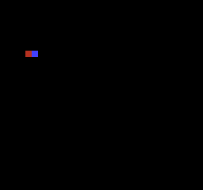
Build command
New-Item -ItemType Directory -Force .\out | Out-Null
.\kitaqfc\kitaqfc.exe .\kitaqfc\lib\runtime.c .\kitaq-docs\samples\api-examples\fc\batch3_actor.c -I .\kitaqfc\lib -I .\kitaq-docs\samples -o .\out\batch3_actor.nes --no-cache --no-disasm --mapper=nrom --nes-chr=.\kitaq-docs\samples\api-examples\fc\vram_shapes.chrImplementation and source
kitaqfc/lib/actor.h:29
Test overlap in world coordinates with exclusive right/bottom edges. Keep position-plus-size sums within u16; touching edges are not collisions. Require positive widths and heights; zero extents are not rejected before the edge tests.
kitaqfc/lib/actor.c:49
unsigned char nes_actor_collide(struct NesActor* a, struct NesActor* b)
{
unsigned short a_right;
unsigned short b_right;
unsigned short a_bottom;
unsigned short b_bottom;
a_right = (unsigned short)(a->world_x + a->width);
b_right = (unsigned short)(b->world_x + b->width);
a_bottom = (unsigned short)(a->world_y + a->height);
b_bottom = (unsigned short)(b->world_y + b->height);
if (a_right <= b->world_x)
{
return 0;
}
if (b_right <= a->world_x)
{
return 0;
}
if (a_bottom <= b->world_y)
{
return 0;
}
if (b_bottom <= a->world_y)
{
return 0;
}
return 1;
}nes_actor_draw_metasprite
Write a metasprite into shadow OAM using the actor’s cached screen coordinates.
Syntax
unsigned char nes_actor_draw_metasprite(struct NesActor* actor, unsigned char oam_index, unsigned char* metasprite);Parameters
actorPointer to a writable NesActor.
oam_indexFirst slot, 0..63; reserve room for every part.
metaspriteFour-byte records dx,dy,tile,attr; dx=255 terminates.
Return value
Returns the next OAM slot index, wrapping at the end of 64 slots.
Conditions and limits
Link runtime.c. The queue copies payloads for a later NMI or safe rendering-off flush. Serialize production against consumption. If a multirow operation runs out of capacity, earlier admitted rows remain queued.
Does not apply the actor’s attr/flags fields. Y is a raw OAM byte, so the visible top is one pixel lower. An OAM DMA is required to display the shadow.
Usage example
result[5]=nes_actor_draw_metasprite(&a,0,parts);result[6]=nes_oam_shadow[3];result[7]=nes_oam_shadow[7];nes_oam_dma(2);This is a calling fragment. Follow the stated initialization and buffer requirements before using it in a complete program.
Expected result
Project world (300,95) through camera (268,32): red and blue 8×8 parts appear at (32,64) and (40,64). This demonstrates raw OAM Y=63 appearing at 64, and collision changing from zero for touching edges to one for a one-pixel overlap.
Build command
New-Item -ItemType Directory -Force .\out | Out-Null
.\kitaqfc\kitaqfc.exe .\kitaqfc\lib\runtime.c .\kitaq-docs\samples\api-examples\fc\batch3_actor.c -I .\kitaqfc\lib -I .\kitaq-docs\samples -o .\out\batch3_actor.nes --no-cache --no-disasm --mapper=nrom --nes-chr=.\kitaq-docs\samples\api-examples\fc\vram_shapes.chrImplementation and source
kitaqfc/lib/actor.h:25
Draw the byte-stream metasprite at cached screen coordinates and return its next OAM index. Actor attr/flags are not applied by this wrapper.
kitaqfc/lib/actor.c:41
unsigned char nes_actor_draw_metasprite(struct NesActor* actor, unsigned char oam_index, unsigned char* metasprite)
{
return nes_metasprite_draw(oam_index, actor->screen_x, actor->screen_y, metasprite);
}nes_actor_set_world
Set an actor’s world X/Y.
Syntax
void nes_actor_set_world(struct NesActor* actor, unsigned short x, unsigned short y);Parameters
actorPointer to a writable NesActor.
xWorld X, 0..65535 pixels.
yWorld Y, 0..65535 pixels.
Return value
No return value.
Conditions and limits
Does not update screen_x/screen_y. Call update_screen to project through the camera.
Usage example
nes_actor_set_world(&a,300,95);nes_actor_set_world(&b,316,95);result[0]=a.world_x;This is a calling fragment. Follow the stated initialization and buffer requirements before using it in a complete program.
Expected result
Project world (300,95) through camera (268,32): red and blue 8×8 parts appear at (32,64) and (40,64). This demonstrates raw OAM Y=63 appearing at 64, and collision changing from zero for touching edges to one for a one-pixel overlap.
Build command
New-Item -ItemType Directory -Force .\out | Out-Null
.\kitaqfc\kitaqfc.exe .\kitaqfc\lib\runtime.c .\kitaq-docs\samples\api-examples\fc\batch3_actor.c -I .\kitaqfc\lib -I .\kitaq-docs\samples -o .\out\batch3_actor.nes --no-cache --no-disasm --mapper=nrom --nes-chr=.\kitaq-docs\samples\api-examples\fc\vram_shapes.chrImplementation and source
kitaqfc/lib/actor.h:19
Set the actor's 16-bit world position without updating cached screen coordinates.
kitaqfc/lib/actor.c:19
void nes_actor_set_world(struct NesActor* actor, unsigned short x, unsigned short y)
{
actor->world_x = x;
actor->world_y = y;
}nes_actor_update_screen
Subtract camera coordinates from world coordinates and cache the low bytes as screen coordinates.
Syntax
void nes_actor_update_screen(struct NesActor* actor, unsigned short camera_x, unsigned short camera_y);Parameters
actorPointer to a writable NesActor.
camera_xCamera world X.
camera_yCamera world Y.
Return value
No return value.
Conditions and limits
Negative or ≥256 results wrap. It does not hide offscreen actors; the game must cull before drawing.
Usage example
nes_actor_update_screen(&a,268,32);result[1]=a.screen_x;result[2]=a.screen_y;This is a calling fragment. Follow the stated initialization and buffer requirements before using it in a complete program.
Expected result
Project world (300,95) through camera (268,32): red and blue 8×8 parts appear at (32,64) and (40,64). This demonstrates raw OAM Y=63 appearing at 64, and collision changing from zero for touching edges to one for a one-pixel overlap.
Build command
New-Item -ItemType Directory -Force .\out | Out-Null
.\kitaqfc\kitaqfc.exe .\kitaqfc\lib\runtime.c .\kitaq-docs\samples\api-examples\fc\batch3_actor.c -I .\kitaqfc\lib -I .\kitaq-docs\samples -o .\out\batch3_actor.nes --no-cache --no-disasm --mapper=nrom --nes-chr=.\kitaq-docs\samples\api-examples\fc\vram_shapes.chrImplementation and source
kitaqfc/lib/actor.h:22
Subtract the camera and retain only the low coordinate bytes. This performs wrapping projection, not clipping; callers must hide actors outside the viewport.
kitaqfc/lib/actor.c:27
void nes_actor_update_screen(struct NesActor* actor, unsigned short camera_x, unsigned short camera_y)
{
unsigned short dx;
unsigned short dy;
dx = (unsigned short)(actor->world_x - camera_x);
dy = (unsigned short)(actor->world_y - camera_y);
actor->screen_x = (unsigned char)dx;
actor->screen_y = (unsigned char)dy;
}asset.h — Asset IDs and data descriptors
The asset library looks up banked ROM resources by an 8-bit ID. Include asset.c; FC also needs bank.c. Each packed, 6-byte AssetDesc stores a type byte, a payload-bank byte, a 16-bit address and a byte length. The descriptor table and payload may occupy different banks.
Register the table before looking up resources. Registration is shared global state: do not change it concurrently with a lookup. The library checks IDs and asset_get’s output pointer, but does not validate the registered table, payload addresses or cartridge contents.
Look up a RAW or TILES resource, select its ROM bank and upload all bytes with __vram_write in chunks of at most 128 bytes. Restore the bank saved by bank_get_current() afterwards. Chunking does not wait for another frame.
Use writable CHR RAM for pattern data and keep rendering off for long uploads. If uploading in VBlank, the complete operation must fit the available time; 128-byte chunks do not enforce that limit. This sample uses --mapper=mmc1 --board=surom512. With generic boards, omitting --nes-chr creates blank CHR ROM, not CHR RAM.
asset_get
Copy one AssetDesc from the registered table’s ROM bank into caller-provided storage. This retrieves the resource’s metadata, not its payload.
Syntax
u8 asset_get(u8 asset_id, AssetDesc* out_desc);Parameters
asset_idZero-based resource index. A valid ID satisfies
asset_id < countfor the registered table.out_descWritable storage for one 6-byte descriptor. A null pointer is rejected before accessing the table.
Return value
1 after copying the descriptor; 0 for a null output or an out-of-range ID. On these failures, output storage is unchanged.
Conditions and limits
Register the table before looking up resources. Registration is shared global state: do not change it concurrently with a lookup. The library checks IDs and asset_get’s output pointer, but does not validate the registered table, payload addresses or cartridge contents.
The samples place calling code in fixed bank 0 so source-bank changes cannot unmap the code being executed. These transfers are synchronous. Do not interrupt a transfer with another bank-changing copy or assume the helper makes a whole application interrupt-safe.
Usage example
loaded=asset_get(0,&descriptor);
expect(loaded==1,1);
expect(descriptor.type==ASSET_TYPE_TILES && descriptor.bank==2,2);
expect(descriptor.ptr==asset_shapes && descriptor.len==144,3);This is a calling fragment. Follow the stated initialization and buffer requirements before using it in a complete program.
Expected result
The example reads descriptor 0 and checks its TILES type, bank 2, payload pointer and 144-byte length. Invalid-ID and null-output calls must fail; a failed lookup leaves the previous output value intact.
Expected image: a red row starts at pixel (16,32) and spans 72×8 pixels. It repeats an 8×8 triangle, an 8×8 square outline with a one-pixel border, and a tile with its left four columns filled, three times. The triangle grows from one pixel at the top left to eight pixels on its bottom row.
On FC, a blue triangle and outline at (16,64) show __far_memcpy; a green pair at (16,96) shows asset_load_raw followed by a CHR upload. Each pair occupies 16×8 pixels on a black background. These rows demonstrate copied image bytes, not merely numeric status values.
Expected status: FAILED CHECKS 000 and FIRST FAILURE 00. The verification runs 300 frames and compares text, shape masks and colors against these expectations. This is emulator evidence, not a physical-hardware test.

Build command
New-Item -ItemType Directory -Force .\out | Out-Null
.\kitaqfc\kitaqfc.exe .\kitaq-docs\samples\api-examples\fc\asset_banks.c -I .\kitaqfc\lib -I .\kitaq-docs\samples -o .\out\asset_banks.nes --mapper=mmc1 --board=surom512 --no-cache --no-disasmImplementation and source
kitaqfc/lib/asset.h:25
Copy a descriptor from its ROM bank into caller storage. Null output or an out-of-range ID returns zero without reading the table.
kitaqfc/lib/asset.c:18
u8 asset_get(u8 asset_id, AssetDesc* out_desc)
{
if (out_desc == 0) return 0;
if (asset_id >= asset_table_count) return 0;
__far_memcpy((u8*)out_desc, asset_table_bank, (u16)(asset_table + asset_id), sizeof(AssetDesc));
return 1;
}asset_get_bank
Read the resource’s payload-bank number from its descriptor. This is not the bank containing the descriptor table, and the function does not leave the payload bank selected.
Syntax
u8 asset_get_bank(u8 asset_id);Parameters
asset_idZero-based resource index. A valid ID satisfies
asset_id < countfor the registered table.
Return value
The descriptor’s 8-bit bank, or 0 on lookup failure. Bank zero can also be valid; use asset_get() when success must be distinguished from a zero value.
Conditions and limits
Register the table before looking up resources. Registration is shared global state: do not change it concurrently with a lookup. The library checks IDs and asset_get’s output pointer, but does not validate the registered table, payload addresses or cartridge contents.
Each getter calls asset_get again and copies a descriptor. If you need bank, pointer and length together, call asset_get once and read its fields.
The samples place calling code in fixed bank 0 so source-bank changes cannot unmap the code being executed. These transfers are synchronous. Do not interrupt a transfer with another bank-changing copy or assume the helper makes a whole application interrupt-safe.
Usage example
payload_bank=asset_get_bank(0);
expect(payload_bank==2,17); // Payload bank, not descriptor-table bank 3.
expect(asset_get_bank(4)==0,18); // Failure sentinel; a valid descriptor may also use bank 0.This is a calling fragment. Follow the stated initialization and buffer requirements before using it in a complete program.
Expected result
The example expects payload bank 2 even though the descriptor table is in bank 3. It also checks that an invalid ID returns zero.
Expected image: a red row starts at pixel (16,32) and spans 72×8 pixels. It repeats an 8×8 triangle, an 8×8 square outline with a one-pixel border, and a tile with its left four columns filled, three times. The triangle grows from one pixel at the top left to eight pixels on its bottom row.
On FC, a blue triangle and outline at (16,64) show __far_memcpy; a green pair at (16,96) shows asset_load_raw followed by a CHR upload. Each pair occupies 16×8 pixels on a black background. These rows demonstrate copied image bytes, not merely numeric status values.
Expected status: FAILED CHECKS 000 and FIRST FAILURE 00. The verification runs 300 frames and compares text, shape masks and colors against these expectations. This is emulator evidence, not a physical-hardware test.
Build command
New-Item -ItemType Directory -Force .\out | Out-Null
.\kitaqfc\kitaqfc.exe .\kitaq-docs\samples\api-examples\fc\asset_banks.c -I .\kitaqfc\lib -I .\kitaq-docs\samples -o .\out\asset_banks.nes --mapper=mmc1 --board=surom512 --no-cache --no-disasmImplementation and source
kitaqfc/lib/asset.h:33
Return the asset bank or zero on lookup failure; bank zero may also be valid.
kitaqfc/lib/asset.c:74
u8 asset_get_bank(u8 asset_id)
{
AssetDesc desc;
if (asset_get(asset_id, &desc) == 0) return 0;
return desc.bank;
}asset_get_len
Read the resource length in bytes from its descriptor. The value is metadata; the function does not inspect the payload or convert bytes to a tile, element or frame count.
Syntax
u16 asset_get_len(u8 asset_id);Parameters
asset_idZero-based resource index. A valid ID satisfies
asset_id < countfor the registered table.
Return value
The 16-bit len in bytes, or 0 on lookup failure. An empty resource also has length zero; use asset_get() to distinguish the two cases.
Conditions and limits
Register the table before looking up resources. Registration is shared global state: do not change it concurrently with a lookup. The library checks IDs and asset_get’s output pointer, but does not validate the registered table, payload addresses or cartridge contents.
Each getter calls asset_get again and copies a descriptor. If you need bank, pointer and length together, call asset_get once and read its fields.
The samples place calling code in fixed bank 0 so source-bank changes cannot unmap the code being executed. These transfers are synchronous. Do not interrupt a transfer with another bank-changing copy or assume the helper makes a whole application interrupt-safe.
Usage example
expect(asset_get_len(0)==144,21); // Bytes, not tiles.
expect(asset_get_len(3)==0 && asset_get_len(4)==0,22); // Empty asset and invalid ID both yield zero.This is a calling fragment. Follow the stated initialization and buffer requirements before using it in a complete program.
Expected result
The nine-tile resource must report 144 bytes, not nine tiles. Both an empty resource and an invalid ID must report zero.
Expected image: a red row starts at pixel (16,32) and spans 72×8 pixels. It repeats an 8×8 triangle, an 8×8 square outline with a one-pixel border, and a tile with its left four columns filled, three times. The triangle grows from one pixel at the top left to eight pixels on its bottom row.
On FC, a blue triangle and outline at (16,64) show __far_memcpy; a green pair at (16,96) shows asset_load_raw followed by a CHR upload. Each pair occupies 16×8 pixels on a black background. These rows demonstrate copied image bytes, not merely numeric status values.
Expected status: FAILED CHECKS 000 and FIRST FAILURE 00. The verification runs 300 frames and compares text, shape masks and colors against these expectations. This is emulator evidence, not a physical-hardware test.
Build command
New-Item -ItemType Directory -Force .\out | Out-Null
.\kitaqfc\kitaqfc.exe .\kitaq-docs\samples\api-examples\fc\asset_banks.c -I .\kitaqfc\lib -I .\kitaq-docs\samples -o .\out\asset_banks.nes --mapper=mmc1 --board=surom512 --no-cache --no-disasmImplementation and source
kitaqfc/lib/asset.h:38
Return the descriptor byte length, or zero for an invalid ID.
kitaqfc/lib/asset.c:91
u16 asset_get_len(u8 asset_id)
{
AssetDesc desc;
if (asset_get(asset_id, &desc) == 0) return 0;
return desc.len;
}asset_get_ptr
Read the 16-bit payload address stored in the descriptor. The returned near pointer carries no bank number. Pair it with asset_get_bank() and a far-copy helper before reading a resource in another ROM bank.
Syntax
const u8* asset_get_ptr(u8 asset_id);Parameters
asset_idZero-based resource index. A valid ID satisfies
asset_id < countfor the registered table.
Return value
The stored const u8*, or null on lookup failure. The descriptor is not checked for a null payload pointer, so use asset_get() to distinguish lookup failure.
Conditions and limits
Register the table before looking up resources. Registration is shared global state: do not change it concurrently with a lookup. The library checks IDs and asset_get’s output pointer, but does not validate the registered table, payload addresses or cartridge contents.
Each getter calls asset_get again and copies a descriptor. If you need bank, pointer and length together, call asset_get once and read its fields.
The samples place calling code in fixed bank 0 so source-bank changes cannot unmap the code being executed. These transfers are synchronous. Do not interrupt a transfer with another bank-changing copy or assume the helper makes a whole application interrupt-safe.
Usage example
payload_pointer=asset_get_ptr(0);
expect(payload_pointer==asset_shapes,19);
expect(*asset_bank_marker==0xA1,20); // Getting the pointer leaves bank 1 selected.
// Use payload_bank together with payload_pointer for a far copy; do not dereference it here.This is a calling fragment. Follow the stated initialization and buffer requirements before using it in a complete program.
Expected result
The returned pointer must equal the resource’s linked ROM address, while a marker in bank 1 must remain readable. The example then supplies that pointer and payload bank 2 to a far-copy helper.
Expected image: a red row starts at pixel (16,32) and spans 72×8 pixels. It repeats an 8×8 triangle, an 8×8 square outline with a one-pixel border, and a tile with its left four columns filled, three times. The triangle grows from one pixel at the top left to eight pixels on its bottom row.
On FC, a blue triangle and outline at (16,64) show __far_memcpy; a green pair at (16,96) shows asset_load_raw followed by a CHR upload. Each pair occupies 16×8 pixels on a black background. These rows demonstrate copied image bytes, not merely numeric status values.
Expected status: FAILED CHECKS 000 and FIRST FAILURE 00. The verification runs 300 frames and compares text, shape masks and colors against these expectations. This is emulator evidence, not a physical-hardware test.
Build command
New-Item -ItemType Directory -Force .\out | Out-Null
.\kitaqfc\kitaqfc.exe .\kitaq-docs\samples\api-examples\fc\asset_banks.c -I .\kitaqfc\lib -I .\kitaq-docs\samples -o .\out\asset_banks.nes --mapper=mmc1 --board=surom512 --no-cache --no-disasmImplementation and source
kitaqfc/lib/asset.h:36
Return the stored address without switching banks. Pair it with the descriptor bank before reading banked ROM; a failed lookup returns null.
kitaqfc/lib/asset.c:83
const u8* asset_get_ptr(u8 asset_id)
{
AssetDesc desc;
if (asset_get(asset_id, &desc) == 0) return 0;
return desc.ptr;
}asset_load_raw
Look up a resource and copy min(desc.len, max_len) bytes from its ROM bank to writable memory. The type tag is ignored: tile, map and song data are copied as bytes without decoding or decompression.
Syntax
u8 asset_load_raw(u8 asset_id, void* dst, u16 max_len);Parameters
asset_idZero-based resource index. A valid ID satisfies
asset_id < countfor the registered table.dstDestination in writable memory. Reserve enough space for every byte copied. Except for a zero-byte transfer, a null or invalid destination is not checked.
max_lenMaximum number of bytes to copy, 0–65535. A smaller limit truncates the copy; zero copies no payload bytes.
Return value
0 if lookup fails; otherwise 1, including truncation, a zero limit or an empty resource. The return value is not a byte count and does not indicate that the entire resource fitted.
Conditions and limits
Register the table before looking up resources. Registration is shared global state: do not change it concurrently with a lookup. The library checks IDs and asset_get’s output pointer, but does not validate the registered table, payload addresses or cartridge contents.
Keep the full source range in the intended ROM mapping and the full destination range in writable memory. Copying does not select the next bank at a window boundary, handle overlapping ranges like memmove, or provide VRAM-safe writes. Use the graphics transfer APIs for VRAM.
The samples place calling code in fixed bank 0 so source-bank changes cannot unmap the code being executed. These transfers are synchronous. Do not interrupt a transfer with another bank-changing copy or assume the helper makes a whole application interrupt-safe.
Usage example
loaded=asset_load_raw(0,buffer,7); // Success with truncation: copy seven of 144 bytes.
expect(loaded==1 && buffer[7]==0x55,7);
for(i=0;i<7;i++) expect(buffer[(__safe_index u8)i]==expected_shape_byte(i),8);This is a calling fragment. Follow the stated initialization and buffer requirements before using it in a complete program.
Expected result
A seven-byte limit copies only the first seven bytes of a 144-byte resource and leaves the next byte at 0x55, yet returns success. The program also checks a full copy, a zero limit, an empty resource and raw copying of a MAP-tagged resource.
Expected image: a red row starts at pixel (16,32) and spans 72×8 pixels. It repeats an 8×8 triangle, an 8×8 square outline with a one-pixel border, and a tile with its left four columns filled, three times. The triangle grows from one pixel at the top left to eight pixels on its bottom row.
On FC, a blue triangle and outline at (16,64) show __far_memcpy; a green pair at (16,96) shows asset_load_raw followed by a CHR upload. Each pair occupies 16×8 pixels on a black background. These rows demonstrate copied image bytes, not merely numeric status values.
Expected status: FAILED CHECKS 000 and FIRST FAILURE 00. The verification runs 300 frames and compares text, shape masks and colors against these expectations. This is emulator evidence, not a physical-hardware test.
Build command
New-Item -ItemType Directory -Force .\out | Out-Null
.\kitaqfc\kitaqfc.exe .\kitaq-docs\samples\api-examples\fc\asset_banks.c -I .\kitaqfc\lib -I .\kitaq-docs\samples -o .\out\asset_banks.nes --mapper=mmc1 --board=surom512 --no-cache --no-disasmImplementation and source
kitaqfc/lib/asset.h:28
Copy the smaller of the asset length and max_len using a bank-aware transfer. Return one for a valid ID even when the payload is truncated.
kitaqfc/lib/asset.c:28
u8 asset_load_raw(u8 asset_id, void* dst, u16 max_len)
{
AssetDesc desc;
u16 len;
if (asset_get(asset_id, &desc) == 0) return 0;
len = desc.len;
if (len > max_len) len = max_len;
__far_memcpy((u8*)dst, desc.bank, (u16)desc.ptr, len);
return 1;
}asset_load_tiles
Look up a RAW or TILES resource, select its ROM bank and upload all bytes with __vram_write in chunks of at most 128 bytes. Restore the bank saved by bank_get_current() afterwards. Chunking does not wait for another frame.
Syntax
u8 asset_load_tiles(u8 asset_id, u16 vram_dst);Parameters
asset_idZero-based resource index. A valid ID satisfies
asset_id < countfor the registered table.vram_dstPPU byte address, not a CPU address or tile number. Tile-pattern uploads use writable CHR RAM at
$0000–$1FFF, with 16 bytes per tile. Keep the whole transfer in the intended PPU region.
Return value
0 for an invalid ID or a type other than RAW/TILES; 1 after an accepted transfer, including a zero-length resource. Success does not validate tile encoding or VRAM visibility.
Conditions and limits
Register the table before looking up resources. Registration is shared global state: do not change it concurrently with a lookup. The library checks IDs and asset_get’s output pointer, but does not validate the registered table, payload addresses or cartridge contents.
The samples place calling code in fixed bank 0 so source-bank changes cannot unmap the code being executed. These transfers are synchronous. Do not interrupt a transfer with another bank-changing copy or assume the helper makes a whole application interrupt-safe.
The upload only writes bytes; it does not place tiles on the map, assign colors or allocate VRAM. Arrange the tile map and palettes separately. The samples upload with rendering disabled and enable the display only after the image is ready.
asset_load_tiles restores bank.c’s software-tracked bank, not a mapper readback. Initialize and maintain that state with bank_switch; direct mapper writes or calls to __bankswitch alone do not update the library’s state. The far-copy intrinsic separately restores the compiler’s bank state.
Use writable CHR RAM for pattern data and keep rendering off for long uploads. If uploading in VBlank, the complete operation must fit the available time; 128-byte chunks do not enforce that limit. This sample uses --mapper=mmc1 --board=surom512. With generic boards, omitting --nes-chr creates blank CHR ROM, not CHR RAM.
Usage example
loaded=asset_load_tiles(0,0x0010); // 144 bytes: library uploads chunks of 128 and 16 bytes.
expect(loaded==1 && bank_get_current()==1 && *asset_bank_marker==0xA1,24);
// LCD and NMI are off; CHR RAM is writable. The library selects payload bank 2 and restores bank 1.This is a calling fragment. Follow the stated initialization and buffer requirements before using it in a complete program.
Expected result
The tile-upload example uses nine original 8×8 patterns, 144 bytes in total. It verifies that MAP and invalid IDs are rejected. On FC, 144 bytes exercise both the 128-byte chunk and the remaining 16 bytes.
Expected image: a red row starts at pixel (16,32) and spans 72×8 pixels. It repeats an 8×8 triangle, an 8×8 square outline with a one-pixel border, and a tile with its left four columns filled, three times. The triangle grows from one pixel at the top left to eight pixels on its bottom row.
On FC, a blue triangle and outline at (16,64) show __far_memcpy; a green pair at (16,96) shows asset_load_raw followed by a CHR upload. Each pair occupies 16×8 pixels on a black background. These rows demonstrate copied image bytes, not merely numeric status values.
Expected status: FAILED CHECKS 000 and FIRST FAILURE 00. The verification runs 300 frames and compares text, shape masks and colors against these expectations. This is emulator evidence, not a physical-hardware test.
Build command
New-Item -ItemType Directory -Force .\out | Out-Null
.\kitaqfc\kitaqfc.exe .\kitaq-docs\samples\api-examples\fc\asset_banks.c -I .\kitaqfc\lib -I .\kitaq-docs\samples -o .\out\asset_banks.nes --mapper=mmc1 --board=surom512 --no-cache --no-disasmImplementation and source
kitaqfc/lib/asset.h:31
Switch to the asset bank, upload tile/raw data in chunks of at most 128 bytes, then restore the bank recorded by this library. The caller supplies safe PPU timing.
kitaqfc/lib/asset.c:41
u8 asset_load_tiles(u8 asset_id, u16 vram_dst)
{
AssetDesc desc;
const u8* src;
u16 len;
u8 chunk;
u8 old_bank;
if (asset_get(asset_id, &desc) == 0) return 0;
if (desc.type != ASSET_TYPE_TILES && desc.type != ASSET_TYPE_RAW) return 0;
// Restoration uses the library shadow, not a mapper readback; initialize and maintain that shadow.
old_bank = bank_get_current();
bank_switch(desc.bank);
src = desc.ptr;
len = desc.len;
// This loop uploads the entire asset synchronously. Chunking does not wait for another frame.
// Use writable CHR RAM for tile data and keep the source bank visible throughout the transfer.
while (len != 0) {
if (len > 128) chunk = 128;
else chunk = (u8)len;
__vram_write(vram_dst, src, chunk);
vram_dst = (u16)(vram_dst + chunk);
src = src + chunk;
len = (u16)(len - chunk);
}
bank_switch(old_bank);
return 1;
}asset_set_table
Register the bank, address and entry count of the single active descriptor table. The function stores these three values; it does not copy the table, load any asset or allocate memory.
Syntax
void asset_set_table(u8 bank, const AssetDesc* table, u8 count);Parameters
bank8-bit ROM bank containing the descriptor table, not the payload.
tableNear pointer to
countconsecutiveAssetDescentries. Keep allcount * 6bytes readable in the selected table bank for as long as the table is registered.countNumber of entries, 0–255. Zero makes every ID invalid;
asset_set_table(0, 0, 0)safely registers an empty table.
Return value
None (void).
Conditions and limits
Register the table before looking up resources. Registration is shared global state: do not change it concurrently with a lookup. The library checks IDs and asset_get’s output pointer, but does not validate the registered table, payload addresses or cartridge contents.
Usage example
asset_set_table(3,asset_descriptors,4); // Four descriptors in bank 3, payloads in bank 2.This is a calling fragment. Follow the stated initialization and buffer requirements before using it in a complete program.
Expected result
This example registers four descriptors in bank 3 whose nonempty payloads are in bank 2. It also registers an empty table and verifies that lookup fails without reading address zero.
Expected image: a red row starts at pixel (16,32) and spans 72×8 pixels. It repeats an 8×8 triangle, an 8×8 square outline with a one-pixel border, and a tile with its left four columns filled, three times. The triangle grows from one pixel at the top left to eight pixels on its bottom row.
On FC, a blue triangle and outline at (16,64) show __far_memcpy; a green pair at (16,96) shows asset_load_raw followed by a CHR upload. Each pair occupies 16×8 pixels on a black background. These rows demonstrate copied image bytes, not merely numeric status values.
Expected status: FAILED CHECKS 000 and FIRST FAILURE 00. The verification runs 300 frames and compares text, shape masks and colors against these expectations. This is emulator evidence, not a physical-hardware test.
Build command
New-Item -ItemType Directory -Force .\out | Out-Null
.\kitaqfc\kitaqfc.exe .\kitaq-docs\samples\api-examples\fc\asset_banks.c -I .\kitaqfc\lib -I .\kitaq-docs\samples -o .\out\asset_banks.nes --mapper=mmc1 --board=surom512 --no-cache --no-disasmImplementation and source
kitaqfc/lib/asset.h:22
Retain a bank-qualified descriptor table; the caller keeps its storage valid.
kitaqfc/lib/asset.c:9
void asset_set_table(u8 bank, const AssetDesc* table, u8 count)
{
asset_table_bank = bank;
asset_table = table;
asset_table_count = count;
}attribute.h — Nametable attributes
The shared 64-byte attribute shadow occupies CPU RAM $03E0..$041F. Reserve that range. One attribute byte covers 4×4 tiles; each two-bit field selects a palette for a 2×2-tile quadrant.
Edits palette quadrants by rectangle and queues only the intersecting attribute bytes, checking 32×30 tile bounds. The palette_map input is a completed 64-byte attribute table rather than one color per tile.
nes_attr_queue_rect
Copy rows of attribute bytes covering a tile rectangle into the queue.
Syntax
unsigned char nes_attr_queue_rect(unsigned short nt_base, unsigned char tile_x, unsigned char tile_y, unsigned char width, unsigned char height);Parameters
nt_baseLogical nametable base $2000/$2400/$2800/$2C00; mirroring determines physical independence.
tile_xLeft tile column, visible range 0..31.
tile_yTop tile row, visible range 0..29.
widthWidth in tiles.
heightHeight in tiles.
Return value
Returns 1 for complete admission or an empty rectangle, 0 for invalid bounds or insufficient capacity. Invalid bounds enqueue nothing.
Conditions and limits
The shared 64-byte attribute shadow occupies CPU RAM $03E0..$041F. Reserve that range. One attribute byte covers 4×4 tiles; each two-bit field selects a palette for a 2×2-tile quadrant.
Link runtime.c. The queue copies payloads for a later NMI or safe rendering-off flush. Serialize production against consumption. If a multirow operation runs out of capacity, earlier admitted rows remain queued.
An attribute byte covers 4×4 tiles. Whole intersecting bytes are transferred, so preserve correct neighboring quadrant values in the shadow.
Usage example
result[5]=nes_attr_queue_rect(0x2000,2,4,4,4);result[6]=nes_vram_queue_used;result[7]=nes_attr_queue_rect(0x2000,10,4,4,4);result[8]=nes_attr_queue_rect(0x2000,30,28,2,2);nes_vram_queue_nmi_flush();This is a calling fragment. Follow the stated initialization and buffer requirements before using it in a complete program.
Expected result
Learn rectangular attribute uploads: red 32×32 at (16,32), blue 32×32 at (80,32), green 16×16 at bottom-right (240,224). The example preserves adjacent quadrants and reaches the final attribute byte correctly.
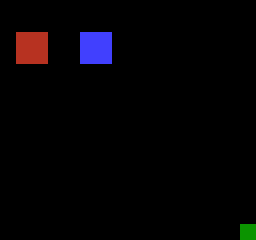
Build command
New-Item -ItemType Directory -Force .\out | Out-Null
.\kitaqfc\kitaqfc.exe .\kitaqfc\lib\runtime.c .\kitaq-docs\samples\api-examples\fc\batch3_attributes.c -I .\kitaqfc\lib -I .\kitaq-docs\samples -o .\out\batch3_attributes.nes --no-cache --no-disasm --mapper=nrom --nes-chr=.\kitaq-docs\samples\api-examples\fc\vram_shapes.chrImplementation and source
kitaqfc/lib/attribute.h:15
Queue the attribute bytes covering a tile rectangle within 32x30 tiles. Empty rectangles succeed; invalid bounds fail without queuing. Capacity failure may leave earlier rows queued.
kitaqfc/lib/attribute.c:81
unsigned char nes_attr_queue_rect(unsigned short nt_base, unsigned char tile_x, unsigned char tile_y, unsigned char width, unsigned char height)
{
unsigned char qx0;
unsigned char qy0;
unsigned char qx1;
unsigned char qy1;
unsigned char row;
unsigned char col;
// The runtime queue copies these local bytes before return; they are not retained pointers.
// Caller coordinates must keep each computed row length within eight bytes.
unsigned char line[8];
unsigned short ppu_addr;
unsigned char len;
if (width == 0 || height == 0) return 1;
if (tile_x >= 32 || tile_y >= 30) return 0;
if (width > (unsigned char)(32 - tile_x) || height > (unsigned char)(30 - tile_y)) return 0;
qx0 = (unsigned char)(tile_x >> 2);
qy0 = (unsigned char)(tile_y >> 2);
qx1 = (unsigned char)((tile_x + width - 1) >> 2);
qy1 = (unsigned char)((tile_y + height - 1) >> 2);
row = qy0;
while (1)
{
len = (unsigned char)(qx1 - qx0 + 1);
col = 0;
while (col != len)
{
line[col] = nes_attr_shadow[(unsigned char)(row * 8 + qx0 + col)];
col = (unsigned char)(col + 1);
}
ppu_addr = (unsigned short)(nes_attr_base_from_nt(nt_base) + (unsigned short)(row * 8 + qx0));
if (nes_vram_queue_try_write(ppu_addr, line, len) == 0)
{
return 0;
}
if (row == qy1)
{
break;
}
row = (unsigned char)(row + 1);
}
return 1;
}nes_attr_shadow_build_from_palette_map
Copy 64 already-packed attribute bytes into the shared shadow.
Syntax
void nes_attr_shadow_build_from_palette_map(unsigned char* src64);Parameters
src64Readable 64-byte packed attribute table, not an array of per-tile palette IDs.
Return value
No return value.
Conditions and limits
The shared 64-byte attribute shadow occupies CPU RAM $03E0..$041F. Reserve that range. One attribute byte covers 4×4 tiles; each two-bit field selects a palette for a 2×2-tile quadrant.
Usage example
for(i=0;i<64;i++)table[i]=0;table[0]=0xE4;nes_attr_shadow_build_from_palette_map(table);result[0]=nes_attr_shadow[0];This is a calling fragment. Follow the stated initialization and buffer requirements before using it in a complete program.
Expected result
Learn rectangular attribute uploads: red 32×32 at (16,32), blue 32×32 at (80,32), green 16×16 at bottom-right (240,224). The example preserves adjacent quadrants and reaches the final attribute byte correctly.
Build command
New-Item -ItemType Directory -Force .\out | Out-Null
.\kitaqfc\kitaqfc.exe .\kitaqfc\lib\runtime.c .\kitaq-docs\samples\api-examples\fc\batch3_attributes.c -I .\kitaqfc\lib -I .\kitaq-docs\samples -o .\out\batch3_attributes.nes --no-cache --no-disasm --mapper=nrom --nes-chr=.\kitaq-docs\samples\api-examples\fc\vram_shapes.chrImplementation and source
kitaqfc/lib/attribute.h:8
KITAQFC phase15 attribute patch helpers. / Copy 64 already-packed attribute bytes into shadow storage. This does not convert one palette ID per tile into NES attribute bitfields. The source must expose all 64 packed bytes and stay readable for the duration of this copy.
kitaqfc/lib/attribute.c:26
void nes_attr_shadow_build_from_palette_map(unsigned char* src64)
{
unsigned char i;
i = 0;
while (i != 64)
{
nes_attr_shadow[i] = (unsigned char)(src64[i] & 0xFF);
i = (unsigned char)(i + 1);
}
}nes_attr_shadow_fill_rect
Replace the palette fields of every 2×2-tile quadrant touched by a rectangle.
Syntax
void nes_attr_shadow_fill_rect(unsigned char tile_x, unsigned char tile_y, unsigned char width, unsigned char height, unsigned char pal_index);Parameters
tile_xLeft tile column, visible range 0..31.
tile_yTop tile row, visible range 0..29.
widthWidth in tiles.
heightHeight in tiles.
pal_indexPalette index; only the low two bits are used.
Return value
No return value.
Conditions and limits
The shared 64-byte attribute shadow occupies CPU RAM $03E0..$041F. Reserve that range. One attribute byte covers 4×4 tiles; each two-bit field selects a palette for a 2×2-tile quadrant.
Keep the entire rectangle within 32×30 tiles. Empty or invalid rectangles change nothing. Odd boundaries expand to quadrant boundaries, so neighboring tiles outside the rectangle can share the new palette.
Usage example
nes_attr_shadow_fill_rect(2,4,4,4,1);nes_attr_shadow_fill_rect(10,4,4,4,2);nes_attr_shadow_fill_rect(30,28,2,2,3);result[1]=nes_attr_shadow[8];result[2]=nes_attr_shadow[9];result[3]=nes_attr_shadow[15];result[4]=nes_attr_shadow[63];This is a calling fragment. Follow the stated initialization and buffer requirements before using it in a complete program.
Expected result
Learn rectangular attribute uploads: red 32×32 at (16,32), blue 32×32 at (80,32), green 16×16 at bottom-right (240,224). The example preserves adjacent quadrants and reaches the final attribute byte correctly.
Build command
New-Item -ItemType Directory -Force .\out | Out-Null
.\kitaqfc\kitaqfc.exe .\kitaqfc\lib\runtime.c .\kitaq-docs\samples\api-examples\fc\batch3_attributes.c -I .\kitaqfc\lib -I .\kitaq-docs\samples -o .\out\batch3_attributes.nes --no-cache --no-disasm --mapper=nrom --nes-chr=.\kitaq-docs\samples\api-examples\fc\vram_shapes.chrImplementation and source
kitaqfc/lib/attribute.h:11
Apply a palette to every two-by-two tile quadrant touched by the rectangle. Empty or out-of-range rectangles leave the shadow unchanged.
kitaqfc/lib/attribute.c:39
void nes_attr_shadow_fill_rect(unsigned char tile_x, unsigned char tile_y, unsigned char width, unsigned char height, unsigned char pal_index)
{
unsigned char qx0;
unsigned char qy0;
unsigned char qx1;
unsigned char qy1;
unsigned char qx;
unsigned char qy;
if (width == 0 || height == 0) return;
if (tile_x >= 32 || tile_y >= 30) return;
if (width > (unsigned char)(32 - tile_x) || height > (unsigned char)(30 - tile_y)) return;
qx0 = nes_attr_rect_left(tile_x);
qy0 = nes_attr_rect_top(tile_y);
qx1 = nes_attr_rect_left((unsigned char)(tile_x + width - 1));
qy1 = nes_attr_rect_top((unsigned char)(tile_y + height - 1));
qy = qy0;
while (1)
{
qx = qx0;
while (1)
{
nes_attr_shadow_set_quad((unsigned char)(qx << 1), (unsigned char)(qy << 1), pal_index);
if (qx == qx1)
{
break;
}
qx = (unsigned char)(qx + 1);
}
if (qy == qy1)
{
break;
}
qy = (unsigned char)(qy + 1);
}
}audio.h — Music, sound effects and audio control
Direct controls for the standard APU’s two pulses, triangle, noise and DMC. This is not a music sequencer or automatic mixer; the game manages timing and voice ownership.
This helper writes a single-channel APU_STATUS mask, disabling other voices. It is not a multivoice mixer. For pulse/triangle voices, period is a timer value: smaller values give higher pitches. Sample pitches and durations were checked with NTSC timing.
DMC reads ROM from a 64-byte boundary in $C000..$FFC0. Length is 16*n+1 bytes, 1..4081. These helpers neither validate alignment/ranges nor switch banks. The sample puts original data in fixed bank 0 with __aligned(64) and checks its placement at runtime.
nes_apu_channel_enable
Replace the enable state of all five APU channels with the supplied mask.
Syntax
void nes_apu_channel_enable(u8 mask);Parameters
maskComplete APU_STATUS enable mask. Bits 0..4 select pulse1, pulse2, triangle, noise and DMC; upper bits are discarded.
Return value
No return value. Changes sound registers or driver state.
Usage example
// NTSC: pulse A4 (~440 Hz), triangle A3 (~220 Hz), noise, then two short effects.
#include "fc_sound_example.h"
void main(void) {
sound_begin("APU CHANNELS AND BLIPS");
// Constant volume 12, length halt and 50% duty. Each helper replaces 4015.
nes_sfx_square1(0xBC,253,0);
sound_result[0]=(u8)(APU_STATUS&0x1F);
sound_wait(30);
nes_apu_channel_enable(0); sound_wait(15);
nes_sfx_square2(0x7C,253,0);
sound_result[1]=(u8)(APU_STATUS&0x1F);
sound_wait(30); nes_apu_silence_all(); sound_wait(15);
nes_sfx_triangle(0xFF,253,0);
sound_result[2]=(u8)(APU_STATUS&0x1F);
sound_wait(30); nes_apu_silence_all(); sound_wait(15);
nes_sfx_noise(0x3C,5,0);
sound_result[3]=(u8)(APU_STATUS&0x1F);
sound_wait(30); nes_apu_silence_all(); sound_wait(15);
nes_sfx_tick_blip(); sound_wait(30); nes_apu_silence_all(); sound_wait(15);
nes_sfx_move_blip(); sound_wait(30); nes_apu_silence_all(); sound_wait(15);
sound_end();
}Expected result
Hear pulse1, pulse2, triangle, noise, tick and move. Timer 253 gives roughly 440 Hz pulses and 220 Hz triangle under NTSC. Tick is about 111 Hz; move is about 174 Hz and ends sooner. The final interval is silent.
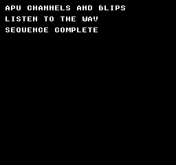
Build command
New-Item -ItemType Directory -Force .\out | Out-Null
.\kitaqfc\kitaqfc.exe .\kitaq-docs\samples\api-examples\fc\sound_channels.c -I .\kitaqfc\lib -I .\kitaq-docs\samples -o .\out\fc-channels.nes --mapper=nrom --nes-chr=.\kitaq-docs\samples\font.chr --no-cache --no-disasmImplementation and source
kitaqfc/lib/audio.h:17
Replace all five channel-enable bits in APU_STATUS; this is not an additive enable.
kitaqfc/lib/audio.c:43
void nes_apu_channel_enable(u8 mask)
{
APU_STATUS = (u8)(mask & 0x1F);
}nes_apu_init
Disable frame IRQ, enable four voices and install quiet controls. DMC remains disabled.
Syntax
void nes_apu_init(void);Return value
No return value. Changes sound registers or driver state.
Usage example
// NTSC: pulse A4 (~440 Hz), triangle A3 (~220 Hz), noise, then two short effects.
#include "fc_sound_example.h"
void main(void) {
sound_begin("APU CHANNELS AND BLIPS");
// Constant volume 12, length halt and 50% duty. Each helper replaces 4015.
nes_sfx_square1(0xBC,253,0);
sound_result[0]=(u8)(APU_STATUS&0x1F);
sound_wait(30);
nes_apu_channel_enable(0); sound_wait(15);
nes_sfx_square2(0x7C,253,0);
sound_result[1]=(u8)(APU_STATUS&0x1F);
sound_wait(30); nes_apu_silence_all(); sound_wait(15);
nes_sfx_triangle(0xFF,253,0);
sound_result[2]=(u8)(APU_STATUS&0x1F);
sound_wait(30); nes_apu_silence_all(); sound_wait(15);
nes_sfx_noise(0x3C,5,0);
sound_result[3]=(u8)(APU_STATUS&0x1F);
sound_wait(30); nes_apu_silence_all(); sound_wait(15);
nes_sfx_tick_blip(); sound_wait(30); nes_apu_silence_all(); sound_wait(15);
nes_sfx_move_blip(); sound_wait(30); nes_apu_silence_all(); sound_wait(15);
sound_end();
}Expected result
Hear pulse1, pulse2, triangle, noise, tick and move. Timer 253 gives roughly 440 Hz pulses and 220 Hz triangle under NTSC. Tick is about 111 Hz; move is about 174 Hz and ends sooner. The final interval is silent.
Build command
New-Item -ItemType Directory -Force .\out | Out-Null
.\kitaqfc\kitaqfc.exe .\kitaq-docs\samples\api-examples\fc\sound_channels.c -I .\kitaqfc\lib -I .\kitaq-docs\samples -o .\out\fc-channels.nes --mapper=nrom --nes-chr=.\kitaq-docs\samples\font.chr --no-cache --no-disasmImplementation and source
kitaqfc/lib/audio.h:15
Disable frame IRQs, enable the four tonal/noise channels and install quiet control defaults. DMC remains disabled.
kitaqfc/lib/audio.c:28
void nes_apu_init(void)
{
APU_FRAME = 0x40;
APU_STATUS = 0x0F;
SQ1_VOL = 0x10;
SQ1_SWEEP = 0x08;
SQ2_VOL = 0x10;
SQ2_SWEEP = 0x08;
TRI_LINEAR = 0x80;
NOISE_VOL = 0x10;
DMC_FREQ = 0x00;
DMC_RAW = 0x00;
}nes_apu_silence_all
Disable all channels and clear pulse/noise volume and DMC output.
Syntax
void nes_apu_silence_all(void);Return value
No return value. Changes sound registers or driver state.
Usage example
// NTSC: pulse A4 (~440 Hz), triangle A3 (~220 Hz), noise, then two short effects.
#include "fc_sound_example.h"
void main(void) {
sound_begin("APU CHANNELS AND BLIPS");
// Constant volume 12, length halt and 50% duty. Each helper replaces 4015.
nes_sfx_square1(0xBC,253,0);
sound_result[0]=(u8)(APU_STATUS&0x1F);
sound_wait(30);
nes_apu_channel_enable(0); sound_wait(15);
nes_sfx_square2(0x7C,253,0);
sound_result[1]=(u8)(APU_STATUS&0x1F);
sound_wait(30); nes_apu_silence_all(); sound_wait(15);
nes_sfx_triangle(0xFF,253,0);
sound_result[2]=(u8)(APU_STATUS&0x1F);
sound_wait(30); nes_apu_silence_all(); sound_wait(15);
nes_sfx_noise(0x3C,5,0);
sound_result[3]=(u8)(APU_STATUS&0x1F);
sound_wait(30); nes_apu_silence_all(); sound_wait(15);
nes_sfx_tick_blip(); sound_wait(30); nes_apu_silence_all(); sound_wait(15);
nes_sfx_move_blip(); sound_wait(30); nes_apu_silence_all(); sound_wait(15);
sound_end();
}Expected result
Hear pulse1, pulse2, triangle, noise, tick and move. Timer 253 gives roughly 440 Hz pulses and 220 Hz triangle under NTSC. Tick is about 111 Hz; move is about 174 Hz and ends sooner. The final interval is silent.
Build command
New-Item -ItemType Directory -Force .\out | Out-Null
.\kitaqfc\kitaqfc.exe .\kitaq-docs\samples\api-examples\fc\sound_channels.c -I .\kitaqfc\lib -I .\kitaq-docs\samples -o .\out\fc-channels.nes --mapper=nrom --nes-chr=.\kitaq-docs\samples\font.chr --no-cache --no-disasmImplementation and source
kitaqfc/lib/audio.h:19
Disable every channel and clear volume/DMC output settings used by this helper.
kitaqfc/lib/audio.c:49
void nes_apu_silence_all(void)
{
APU_STATUS = 0x00;
SQ1_VOL = 0x10;
SQ2_VOL = 0x10;
TRI_LINEAR = 0x80;
NOISE_VOL = 0x10;
DMC_FREQ = 0x00;
DMC_RAW = 0x00;
}nes_dmc_config
Configure DMC control/output and convert its sample address and length into register units.
Syntax
void nes_dmc_config(u8 flags_rate, u8 output_level, u16 sample_addr, u16 sample_len);Parameters
flags_rateDMC bit 7 IRQ, bit 6 looping, low nibble rate index. The sample does not enable IRQ.
output_levelInitial DMC output counter, 0..127; only the low seven bits are written.
sample_addrDMC data CPU address: a 64-byte boundary in $C000..$FFC0.
sample_lenByte length 16*n+1 in 1..4081. Do not pass zero or an unrepresentable length.
Return value
No return value. Changes sound registers or driver state.
Conditions and limits
DMC reads ROM from a 64-byte boundary in $C000..$FFC0. Length is 16*n+1 bytes, 1..4081. These helpers neither validate alignment/ranges nor switch banks. The sample puts original data in fixed bank 0 with __aligned(64) and checks its placement at runtime.
Usage example
// A 17-byte original delta pattern, aligned to a 64-byte DMC start boundary.
#include "fc_sound_example.h"
#pragma bank 0
__aligned(64) __prg_rom u8 delta[17]={0xFF,0xFF,0,0,0xFF,0xFF,0,0,0xFF,0xFF,0,0,0xFF,0xFF,0,0,0xAA};
void main(void) {
sound_begin("DMC ORIGINAL DELTAS");
sound_result[0]=(u8)(((u16)delta&63)==0);
sound_result[1]=(u8)((u16)delta>=0xC000);
// Loop at NTSC rate index 10; start the output accumulator at its midpoint.
nes_dmc_config(0x4A,64,(u16)delta,17);
nes_dmc_start();
sound_wait(60);
nes_dmc_stop(); sound_wait(30);
nes_dmc_play(0x4C,64,(u16)delta,17);
sound_wait(60);
nes_dmc_stop(); sound_wait(30);
sound_end();
}Expected result
An original delta pattern plays at rate 10, pauses, then plays faster at rate 12. DMC stop retains its output counter, so the gap may contain a transient. The final operation silences the whole APU.
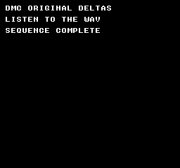
Build command
New-Item -ItemType Directory -Force .\out | Out-Null
.\kitaqfc\kitaqfc.exe .\kitaq-docs\samples\api-examples\fc\sound_dmc.c -I .\kitaqfc\lib -I .\kitaq-docs\samples -o .\out\fc-dmc.nes --mapper=nrom --nes-chr=.\kitaq-docs\samples\font.chr --no-cache --no-disasmImplementation and source
kitaqfc/lib/audio.h:38
Convert a CPU sample address and byte length to DMC register units. Supply an address in 0xC000-0xFFC0 aligned to 64 bytes and a representable length 16*n+1 in 1..4081; inputs are narrowed without validation or bank management.
kitaqfc/lib/audio.c:115
void nes_dmc_config(u8 flags_rate, u8 output_level, u16 sample_addr, u16 sample_len)
{
DMC_FREQ = flags_rate;
DMC_RAW = (u8)(output_level & 0x7F);
// Keep the sample bytes mapped at these CPU addresses during playback; this does not select a ROM bank.
DMC_START = (u8)((sample_addr - 0xC000) >> 6);
DMC_LEN = (u8)((sample_len - 1) >> 4);
}nes_dmc_play
Configure the DMC sample and immediately start playback.
Syntax
void nes_dmc_play(u8 flags_rate, u8 output_level, u16 sample_addr, u16 sample_len);Parameters
flags_rateDMC bit 7 IRQ, bit 6 looping, low nibble rate index. The sample does not enable IRQ.
output_levelInitial DMC output counter, 0..127; only the low seven bits are written.
sample_addrDMC data CPU address: a 64-byte boundary in $C000..$FFC0.
sample_lenByte length 16*n+1 in 1..4081. Do not pass zero or an unrepresentable length.
Return value
No return value. Changes sound registers or driver state.
Conditions and limits
DMC reads ROM from a 64-byte boundary in $C000..$FFC0. Length is 16*n+1 bytes, 1..4081. These helpers neither validate alignment/ranges nor switch banks. The sample puts original data in fixed bank 0 with __aligned(64) and checks its placement at runtime.
Usage example
// A 17-byte original delta pattern, aligned to a 64-byte DMC start boundary.
#include "fc_sound_example.h"
#pragma bank 0
__aligned(64) __prg_rom u8 delta[17]={0xFF,0xFF,0,0,0xFF,0xFF,0,0,0xFF,0xFF,0,0,0xFF,0xFF,0,0,0xAA};
void main(void) {
sound_begin("DMC ORIGINAL DELTAS");
sound_result[0]=(u8)(((u16)delta&63)==0);
sound_result[1]=(u8)((u16)delta>=0xC000);
// Loop at NTSC rate index 10; start the output accumulator at its midpoint.
nes_dmc_config(0x4A,64,(u16)delta,17);
nes_dmc_start();
sound_wait(60);
nes_dmc_stop(); sound_wait(30);
nes_dmc_play(0x4C,64,(u16)delta,17);
sound_wait(60);
nes_dmc_stop(); sound_wait(30);
sound_end();
}Expected result
An original delta pattern plays at rate 10, pauses, then plays faster at rate 12. DMC stop retains its output counter, so the gap may contain a transient. The final operation silences the whole APU.
Build command
New-Item -ItemType Directory -Force .\out | Out-Null
.\kitaqfc\kitaqfc.exe .\kitaq-docs\samples\api-examples\fc\sound_dmc.c -I .\kitaqfc\lib -I .\kitaq-docs\samples -o .\out\fc-dmc.nes --mapper=nrom --nes-chr=.\kitaq-docs\samples\font.chr --no-cache --no-disasmImplementation and source
kitaqfc/lib/audio.h:44
Install sample parameters, then start DMC using the full-channel enable mask.
kitaqfc/lib/audio.c:137
void nes_dmc_play(u8 flags_rate, u8 output_level, u16 sample_addr, u16 sample_len)
{
nes_dmc_config(flags_rate, output_level, sample_addr, sample_len);
nes_dmc_start();
}nes_dmc_start
Write APU_STATUS=0x1F, enabling DMC and all four other voices.
Syntax
void nes_dmc_start(void);Return value
No return value. Changes sound registers or driver state.
Conditions and limits
DMC reads ROM from a 64-byte boundary in $C000..$FFC0. Length is 16*n+1 bytes, 1..4081. These helpers neither validate alignment/ranges nor switch banks. The sample puts original data in fixed bank 0 with __aligned(64) and checks its placement at runtime.
Usage example
// A 17-byte original delta pattern, aligned to a 64-byte DMC start boundary.
#include "fc_sound_example.h"
#pragma bank 0
__aligned(64) __prg_rom u8 delta[17]={0xFF,0xFF,0,0,0xFF,0xFF,0,0,0xFF,0xFF,0,0,0xFF,0xFF,0,0,0xAA};
void main(void) {
sound_begin("DMC ORIGINAL DELTAS");
sound_result[0]=(u8)(((u16)delta&63)==0);
sound_result[1]=(u8)((u16)delta>=0xC000);
// Loop at NTSC rate index 10; start the output accumulator at its midpoint.
nes_dmc_config(0x4A,64,(u16)delta,17);
nes_dmc_start();
sound_wait(60);
nes_dmc_stop(); sound_wait(30);
nes_dmc_play(0x4C,64,(u16)delta,17);
sound_wait(60);
nes_dmc_stop(); sound_wait(30);
sound_end();
}Expected result
An original delta pattern plays at rate 10, pauses, then plays faster at rate 12. DMC stop retains its output counter, so the gap may contain a transient. The final operation silences the whole APU.
Build command
New-Item -ItemType Directory -Force .\out | Out-Null
.\kitaqfc\kitaqfc.exe .\kitaq-docs\samples\api-examples\fc\sound_dmc.c -I .\kitaqfc\lib -I .\kitaq-docs\samples -o .\out\fc-dmc.nes --mapper=nrom --nes-chr=.\kitaq-docs\samples\font.chr --no-cache --no-disasmImplementation and source
kitaqfc/lib/audio.h:40
Enable DMC together with all four other channels by replacing the status mask.
kitaqfc/lib/audio.c:125
void nes_dmc_start(void)
{
APU_STATUS = 0x1F;
}nes_dmc_stop
Write APU_STATUS=0x0F, stopping DMC while setting all four other voice-enable bits.
Syntax
void nes_dmc_stop(void);Return value
No return value. Changes sound registers or driver state.
Conditions and limits
DMC reads ROM from a 64-byte boundary in $C000..$FFC0. Length is 16*n+1 bytes, 1..4081. These helpers neither validate alignment/ranges nor switch banks. The sample puts original data in fixed bank 0 with __aligned(64) and checks its placement at runtime.
Usage example
// A 17-byte original delta pattern, aligned to a 64-byte DMC start boundary.
#include "fc_sound_example.h"
#pragma bank 0
__aligned(64) __prg_rom u8 delta[17]={0xFF,0xFF,0,0,0xFF,0xFF,0,0,0xFF,0xFF,0,0,0xFF,0xFF,0,0,0xAA};
void main(void) {
sound_begin("DMC ORIGINAL DELTAS");
sound_result[0]=(u8)(((u16)delta&63)==0);
sound_result[1]=(u8)((u16)delta>=0xC000);
// Loop at NTSC rate index 10; start the output accumulator at its midpoint.
nes_dmc_config(0x4A,64,(u16)delta,17);
nes_dmc_start();
sound_wait(60);
nes_dmc_stop(); sound_wait(30);
nes_dmc_play(0x4C,64,(u16)delta,17);
sound_wait(60);
nes_dmc_stop(); sound_wait(30);
sound_end();
}Expected result
An original delta pattern plays at rate 10, pauses, then plays faster at rate 12. DMC stop retains its output counter, so the gap may contain a transient. The final operation silences the whole APU.
Build command
New-Item -ItemType Directory -Force .\out | Out-Null
.\kitaqfc\kitaqfc.exe .\kitaq-docs\samples\api-examples\fc\sound_dmc.c -I .\kitaqfc\lib -I .\kitaq-docs\samples -o .\out\fc-dmc.nes --mapper=nrom --nes-chr=.\kitaq-docs\samples\font.chr --no-cache --no-disasmImplementation and source
kitaqfc/lib/audio.h:42
Disable DMC while leaving all four other channel-enable bits set.
kitaqfc/lib/audio.c:131
void nes_dmc_stop(void)
{
APU_STATUS = 0x0F;
}nes_sfx_move_blip
Trigger pulse 1 with control 0x5A, timer 0x0280 and length index 2 for a higher, shorter movement blip.
Syntax
void nes_sfx_move_blip(void);Return value
No return value. Changes sound registers or driver state.
Conditions and limits
This helper writes a single-channel APU_STATUS mask, disabling other voices. It is not a multivoice mixer. For pulse/triangle voices, period is a timer value: smaller values give higher pitches. Sample pitches and durations were checked with NTSC timing.
Usage example
// NTSC: pulse A4 (~440 Hz), triangle A3 (~220 Hz), noise, then two short effects.
#include "fc_sound_example.h"
void main(void) {
sound_begin("APU CHANNELS AND BLIPS");
// Constant volume 12, length halt and 50% duty. Each helper replaces 4015.
nes_sfx_square1(0xBC,253,0);
sound_result[0]=(u8)(APU_STATUS&0x1F);
sound_wait(30);
nes_apu_channel_enable(0); sound_wait(15);
nes_sfx_square2(0x7C,253,0);
sound_result[1]=(u8)(APU_STATUS&0x1F);
sound_wait(30); nes_apu_silence_all(); sound_wait(15);
nes_sfx_triangle(0xFF,253,0);
sound_result[2]=(u8)(APU_STATUS&0x1F);
sound_wait(30); nes_apu_silence_all(); sound_wait(15);
nes_sfx_noise(0x3C,5,0);
sound_result[3]=(u8)(APU_STATUS&0x1F);
sound_wait(30); nes_apu_silence_all(); sound_wait(15);
nes_sfx_tick_blip(); sound_wait(30); nes_apu_silence_all(); sound_wait(15);
nes_sfx_move_blip(); sound_wait(30); nes_apu_silence_all(); sound_wait(15);
sound_end();
}Expected result
Hear pulse1, pulse2, triangle, noise, tick and move. Timer 253 gives roughly 440 Hz pulses and 220 Hz triangle under NTSC. Tick is about 111 Hz; move is about 174 Hz and ends sooner. The final interval is silent.
Build command
New-Item -ItemType Directory -Force .\out | Out-Null
.\kitaqfc\kitaqfc.exe .\kitaq-docs\samples\api-examples\fc\sound_channels.c -I .\kitaqfc\lib -I .\kitaq-docs\samples -o .\out\fc-channels.nes --mapper=nrom --nes-chr=.\kitaq-docs\samples\font.chr --no-cache --no-disasmImplementation and source
kitaqfc/lib/audio.h:33
Trigger the predefined pulse-1 movement effect.
kitaqfc/lib/audio.c:107
void nes_sfx_move_blip(void)
{
nes_sfx_square1(0x5A, 0x0280, 2);
}nes_sfx_noise
Enable only noise and write envelope, period/mode and length index.
Syntax
void nes_sfx_noise(u8 volume, u8 period_mode, u8 length_index);Parameters
volumeRaw noise control: bit 5 length halt, bit 4 constant volume, low nibble volume or envelope period.
period_modeNoise register: bit 7 short mode, low nibble period-table index.
length_indexLength-table index 0..31, not a frame count. Only the low five bits reach the register.
Return value
No return value. Changes sound registers or driver state.
Conditions and limits
This helper writes a single-channel APU_STATUS mask, disabling other voices. It is not a multivoice mixer. For pulse/triangle voices, period is a timer value: smaller values give higher pitches. Sample pitches and durations were checked with NTSC timing.
Usage example
// NTSC: pulse A4 (~440 Hz), triangle A3 (~220 Hz), noise, then two short effects.
#include "fc_sound_example.h"
void main(void) {
sound_begin("APU CHANNELS AND BLIPS");
// Constant volume 12, length halt and 50% duty. Each helper replaces 4015.
nes_sfx_square1(0xBC,253,0);
sound_result[0]=(u8)(APU_STATUS&0x1F);
sound_wait(30);
nes_apu_channel_enable(0); sound_wait(15);
nes_sfx_square2(0x7C,253,0);
sound_result[1]=(u8)(APU_STATUS&0x1F);
sound_wait(30); nes_apu_silence_all(); sound_wait(15);
nes_sfx_triangle(0xFF,253,0);
sound_result[2]=(u8)(APU_STATUS&0x1F);
sound_wait(30); nes_apu_silence_all(); sound_wait(15);
nes_sfx_noise(0x3C,5,0);
sound_result[3]=(u8)(APU_STATUS&0x1F);
sound_wait(30); nes_apu_silence_all(); sound_wait(15);
nes_sfx_tick_blip(); sound_wait(30); nes_apu_silence_all(); sound_wait(15);
nes_sfx_move_blip(); sound_wait(30); nes_apu_silence_all(); sound_wait(15);
sound_end();
}Expected result
Hear pulse1, pulse2, triangle, noise, tick and move. Timer 253 gives roughly 440 Hz pulses and 220 Hz triangle under NTSC. Tick is about 111 Hz; move is about 174 Hz and ends sooner. The final interval is silent.
Build command
New-Item -ItemType Directory -Force .\out | Out-Null
.\kitaqfc\kitaqfc.exe .\kitaq-docs\samples\api-examples\fc\sound_channels.c -I .\kitaqfc\lib -I .\kitaq-docs\samples -o .\out\fc-channels.nes --mapper=nrom --nes-chr=.\kitaq-docs\samples\font.chr --no-cache --no-disasmImplementation and source
kitaqfc/lib/audio.h:29
Enable only noise and load envelope/control, period/mode and length fields.
kitaqfc/lib/audio.c:92
void nes_sfx_noise(u8 volume, u8 period_mode, u8 length_index)
{
APU_STATUS = 0x08;
NOISE_VOL = volume;
NOISE_LO = period_mode;
NOISE_HI = (u8)(length_index << 3);
}nes_sfx_square1
Enable only pulse 1, disable sweep and write control, timer and length index.
Syntax
void nes_sfx_square1(u8 duty_volume, u16 period, u8 length_index);Parameters
duty_volumeRaw pulse control: bits 7..6 duty, bit 5 length halt, bit 4 constant volume, low nibble volume or envelope period.
period11-bit timer 0..2047. Pulse frequency is CPU clock/[16*(period+1)]; triangle is CPU clock/[32*(period+1)].
length_indexLength-table index 0..31, not a frame count. Only the low five bits reach the register.
Return value
No return value. Changes sound registers or driver state.
Conditions and limits
This helper writes a single-channel APU_STATUS mask, disabling other voices. It is not a multivoice mixer. For pulse/triangle voices, period is a timer value: smaller values give higher pitches. Sample pitches and durations were checked with NTSC timing.
Usage example
// NTSC: pulse A4 (~440 Hz), triangle A3 (~220 Hz), noise, then two short effects.
#include "fc_sound_example.h"
void main(void) {
sound_begin("APU CHANNELS AND BLIPS");
// Constant volume 12, length halt and 50% duty. Each helper replaces 4015.
nes_sfx_square1(0xBC,253,0);
sound_result[0]=(u8)(APU_STATUS&0x1F);
sound_wait(30);
nes_apu_channel_enable(0); sound_wait(15);
nes_sfx_square2(0x7C,253,0);
sound_result[1]=(u8)(APU_STATUS&0x1F);
sound_wait(30); nes_apu_silence_all(); sound_wait(15);
nes_sfx_triangle(0xFF,253,0);
sound_result[2]=(u8)(APU_STATUS&0x1F);
sound_wait(30); nes_apu_silence_all(); sound_wait(15);
nes_sfx_noise(0x3C,5,0);
sound_result[3]=(u8)(APU_STATUS&0x1F);
sound_wait(30); nes_apu_silence_all(); sound_wait(15);
nes_sfx_tick_blip(); sound_wait(30); nes_apu_silence_all(); sound_wait(15);
nes_sfx_move_blip(); sound_wait(30); nes_apu_silence_all(); sound_wait(15);
sound_end();
}Expected result
Hear pulse1, pulse2, triangle, noise, tick and move. Timer 253 gives roughly 440 Hz pulses and 220 Hz triangle under NTSC. Tick is about 111 Hz; move is about 174 Hz and ends sooner. The final interval is silent.
Build command
New-Item -ItemType Directory -Force .\out | Out-Null
.\kitaqfc\kitaqfc.exe .\kitaq-docs\samples\api-examples\fc\sound_channels.c -I .\kitaqfc\lib -I .\kitaq-docs\samples -o .\out\fc-channels.nes --mapper=nrom --nes-chr=.\kitaq-docs\samples\font.chr --no-cache --no-disasmImplementation and source
kitaqfc/lib/audio.h:23
Enable only pulse 1, disable its sweep and load control, 11-bit timer and length-table index. Starting this effect disables the other APU channels.
kitaqfc/lib/audio.c:62
void nes_sfx_square1(u8 duty_volume, u16 period, u8 length_index)
{
APU_STATUS = 0x01;
SQ1_SWEEP = 0x08;
SQ1_VOL = duty_volume;
SQ1_LO = (u8)period;
// Only the low five length-index bits and low eleven timer bits reach the registers.
SQ1_HI = (u8)((u8)(length_index << 3) | (u8)((period >> 8) & 0x07));
}nes_sfx_square2
Enable only pulse 2, disable sweep and write control, timer and length index.
Syntax
void nes_sfx_square2(u8 duty_volume, u16 period, u8 length_index);Parameters
duty_volumeRaw pulse control: bits 7..6 duty, bit 5 length halt, bit 4 constant volume, low nibble volume or envelope period.
period11-bit timer 0..2047. Pulse frequency is CPU clock/[16*(period+1)]; triangle is CPU clock/[32*(period+1)].
length_indexLength-table index 0..31, not a frame count. Only the low five bits reach the register.
Return value
No return value. Changes sound registers or driver state.
Conditions and limits
This helper writes a single-channel APU_STATUS mask, disabling other voices. It is not a multivoice mixer. For pulse/triangle voices, period is a timer value: smaller values give higher pitches. Sample pitches and durations were checked with NTSC timing.
Usage example
// NTSC: pulse A4 (~440 Hz), triangle A3 (~220 Hz), noise, then two short effects.
#include "fc_sound_example.h"
void main(void) {
sound_begin("APU CHANNELS AND BLIPS");
// Constant volume 12, length halt and 50% duty. Each helper replaces 4015.
nes_sfx_square1(0xBC,253,0);
sound_result[0]=(u8)(APU_STATUS&0x1F);
sound_wait(30);
nes_apu_channel_enable(0); sound_wait(15);
nes_sfx_square2(0x7C,253,0);
sound_result[1]=(u8)(APU_STATUS&0x1F);
sound_wait(30); nes_apu_silence_all(); sound_wait(15);
nes_sfx_triangle(0xFF,253,0);
sound_result[2]=(u8)(APU_STATUS&0x1F);
sound_wait(30); nes_apu_silence_all(); sound_wait(15);
nes_sfx_noise(0x3C,5,0);
sound_result[3]=(u8)(APU_STATUS&0x1F);
sound_wait(30); nes_apu_silence_all(); sound_wait(15);
nes_sfx_tick_blip(); sound_wait(30); nes_apu_silence_all(); sound_wait(15);
nes_sfx_move_blip(); sound_wait(30); nes_apu_silence_all(); sound_wait(15);
sound_end();
}Expected result
Hear pulse1, pulse2, triangle, noise, tick and move. Timer 253 gives roughly 440 Hz pulses and 220 Hz triangle under NTSC. Tick is about 111 Hz; move is about 174 Hz and ends sooner. The final interval is silent.
Build command
New-Item -ItemType Directory -Force .\out | Out-Null
.\kitaqfc\kitaqfc.exe .\kitaq-docs\samples\api-examples\fc\sound_channels.c -I .\kitaqfc\lib -I .\kitaq-docs\samples -o .\out\fc-channels.nes --mapper=nrom --nes-chr=.\kitaq-docs\samples\font.chr --no-cache --no-disasmImplementation and source
kitaqfc/lib/audio.h:25
Enable only pulse 2 and load its control/timer/length fields, disabling other channels.
kitaqfc/lib/audio.c:73
void nes_sfx_square2(u8 duty_volume, u16 period, u8 length_index)
{
APU_STATUS = 0x02;
SQ2_SWEEP = 0x08;
SQ2_VOL = duty_volume;
SQ2_LO = (u8)period;
SQ2_HI = (u8)((u8)(length_index << 3) | (u8)((period >> 8) & 0x07));
}nes_sfx_tick_blip
Trigger pulse 1 with control 0x9A, timer 0x03F0 and length index 4 for a short low tick.
Syntax
void nes_sfx_tick_blip(void);Return value
No return value. Changes sound registers or driver state.
Conditions and limits
This helper writes a single-channel APU_STATUS mask, disabling other voices. It is not a multivoice mixer. For pulse/triangle voices, period is a timer value: smaller values give higher pitches. Sample pitches and durations were checked with NTSC timing.
Usage example
// NTSC: pulse A4 (~440 Hz), triangle A3 (~220 Hz), noise, then two short effects.
#include "fc_sound_example.h"
void main(void) {
sound_begin("APU CHANNELS AND BLIPS");
// Constant volume 12, length halt and 50% duty. Each helper replaces 4015.
nes_sfx_square1(0xBC,253,0);
sound_result[0]=(u8)(APU_STATUS&0x1F);
sound_wait(30);
nes_apu_channel_enable(0); sound_wait(15);
nes_sfx_square2(0x7C,253,0);
sound_result[1]=(u8)(APU_STATUS&0x1F);
sound_wait(30); nes_apu_silence_all(); sound_wait(15);
nes_sfx_triangle(0xFF,253,0);
sound_result[2]=(u8)(APU_STATUS&0x1F);
sound_wait(30); nes_apu_silence_all(); sound_wait(15);
nes_sfx_noise(0x3C,5,0);
sound_result[3]=(u8)(APU_STATUS&0x1F);
sound_wait(30); nes_apu_silence_all(); sound_wait(15);
nes_sfx_tick_blip(); sound_wait(30); nes_apu_silence_all(); sound_wait(15);
nes_sfx_move_blip(); sound_wait(30); nes_apu_silence_all(); sound_wait(15);
sound_end();
}Expected result
Hear pulse1, pulse2, triangle, noise, tick and move. Timer 253 gives roughly 440 Hz pulses and 220 Hz triangle under NTSC. Tick is about 111 Hz; move is about 174 Hz and ends sooner. The final interval is silent.
Build command
New-Item -ItemType Directory -Force .\out | Out-Null
.\kitaqfc\kitaqfc.exe .\kitaq-docs\samples\api-examples\fc\sound_channels.c -I .\kitaqfc\lib -I .\kitaq-docs\samples -o .\out\fc-channels.nes --mapper=nrom --nes-chr=.\kitaq-docs\samples\font.chr --no-cache --no-disasmImplementation and source
kitaqfc/lib/audio.h:31
Trigger the predefined pulse-1 tick effect; it inherits the exclusive-channel behavior.
kitaqfc/lib/audio.c:101
void nes_sfx_tick_blip(void)
{
nes_sfx_square1(0x9A, 0x03F0, 4);
}nes_sfx_triangle
Enable only triangle and write linear counter, timer and length index.
Syntax
void nes_sfx_triangle(u8 linear, u16 period, u8 length_index);Parameters
linearTriangle linear counter: bit 7 control/length halt, low seven bits reload value.
period11-bit timer 0..2047. Pulse frequency is CPU clock/[16*(period+1)]; triangle is CPU clock/[32*(period+1)].
length_indexLength-table index 0..31, not a frame count. Only the low five bits reach the register.
Return value
No return value. Changes sound registers or driver state.
Conditions and limits
This helper writes a single-channel APU_STATUS mask, disabling other voices. It is not a multivoice mixer. For pulse/triangle voices, period is a timer value: smaller values give higher pitches. Sample pitches and durations were checked with NTSC timing.
Usage example
// NTSC: pulse A4 (~440 Hz), triangle A3 (~220 Hz), noise, then two short effects.
#include "fc_sound_example.h"
void main(void) {
sound_begin("APU CHANNELS AND BLIPS");
// Constant volume 12, length halt and 50% duty. Each helper replaces 4015.
nes_sfx_square1(0xBC,253,0);
sound_result[0]=(u8)(APU_STATUS&0x1F);
sound_wait(30);
nes_apu_channel_enable(0); sound_wait(15);
nes_sfx_square2(0x7C,253,0);
sound_result[1]=(u8)(APU_STATUS&0x1F);
sound_wait(30); nes_apu_silence_all(); sound_wait(15);
nes_sfx_triangle(0xFF,253,0);
sound_result[2]=(u8)(APU_STATUS&0x1F);
sound_wait(30); nes_apu_silence_all(); sound_wait(15);
nes_sfx_noise(0x3C,5,0);
sound_result[3]=(u8)(APU_STATUS&0x1F);
sound_wait(30); nes_apu_silence_all(); sound_wait(15);
nes_sfx_tick_blip(); sound_wait(30); nes_apu_silence_all(); sound_wait(15);
nes_sfx_move_blip(); sound_wait(30); nes_apu_silence_all(); sound_wait(15);
sound_end();
}Expected result
Hear pulse1, pulse2, triangle, noise, tick and move. Timer 253 gives roughly 440 Hz pulses and 220 Hz triangle under NTSC. Tick is about 111 Hz; move is about 174 Hz and ends sooner. The final interval is silent.
Build command
New-Item -ItemType Directory -Force .\out | Out-Null
.\kitaqfc\kitaqfc.exe .\kitaq-docs\samples\api-examples\fc\sound_channels.c -I .\kitaqfc\lib -I .\kitaq-docs\samples -o .\out\fc-channels.nes --mapper=nrom --nes-chr=.\kitaq-docs\samples\font.chr --no-cache --no-disasmImplementation and source
kitaqfc/lib/audio.h:27
Enable only triangle and load linear-counter, timer and length fields.
kitaqfc/lib/audio.c:83
void nes_sfx_triangle(u8 linear, u16 period, u8 length_index)
{
APU_STATUS = 0x04;
TRI_LINEAR = linear;
TRI_LO = (u8)period;
TRI_HI = (u8)((u8)(length_index << 3) | (u8)((period >> 8) & 0x07));
}audio_vblank.h — Four-channel music driven by NMI
Four-channel music advances in NMI. Initialize, attach and prefill a song, enable NMI for playback, then refill from the foreground. NMI reads a RAM queue, letting a small amount of RAM serve a long stream as long as it is refilled. Each channel has independent HOLD/STOP commands.
A record contains five bytes: delay, CH1, CH2, CH3, CH4. Delay 1..255 is the number of NMI ticks for which the new state lasts. Zero terminates playback and ignores the other four bytes. Tonal notes 0..71 are C2..B7 (24=C4). Noise values 0..15 select a long-mode period, and 16..31 select short mode. For any channel, 255=NES_AUDIO_HOLD leaves it unchanged; 254=NES_AUDIO_STOP silences it.
This four-channel driver is tuned for NTSC: CH1=pulse 1, CH2=pulse 2, CH3=triangle, CH4=noise, indexed 0..3. It does not play DMC or expansion audio. Do not run it alongside direct APU writers such as the effects in audio.c. There is no PAL pitch table or tempo correction.
When the delay expires without another BGM record, stop the BGM notes and resume at an NMI after data arrives. An independent SFX continues. Count entries into starvation, not every empty frame. Enqueueing only HOLD values does not restore the old BGM notes. Normally refill each frame and queue enough playing time before lengthy work.
| Delay | CH1: pulse 1 | CH2: pulse 2 | CH3: triangle | CH4: noise |
|---|---|---|---|---|
| 24 | 24 (C4) | 12 (C3) | 0 (C2) | 2 |
NMI hook connected by the compiler
nes_audio_vblank_init
Initialize the APU and queue, resetting playback, feeder state and the starvation counter.
Syntax
void nes_audio_vblank_init(void);Return value
No return value.
Conditions and limits
Include audio_vblank.h and add audio_vblank.c to the build exactly once. The compiler calls its hook once from either the default or a custom NMI handler. Enable PPU NMI. The foreground loop does not call a music update routine.
This four-channel driver is tuned for NTSC: CH1=pulse 1, CH2=pulse 2, CH3=triangle, CH4=noise, indexed 0..3. It does not play DMC or expansion audio. Do not run it alongside direct APU writers such as the effects in audio.c. There is no PAL pitch table or tempo correction.
Disable APU frame IRQs, DMC and pulse sweep. Defaults are pulse 1 at 50% duty/volume 12, pulse 2 at 25%/volume 10, triangle enabled for notes, and noise volume 8. Initialization starts neither music nor NMI.
Usage example
nes_audio_vblank_init();This is a calling fragment. Follow the stated initialization and buffer requirements before using it in a complete program.
Expected result
The sample plays an original four-channel phrase once. Music continues while the foreground performs integer arithmetic without refilling for 90 frames. “PHRASE COMPLETE / SILENT” and “UNDERRUNS 0 / MATH OK” mean playback finished, no queue starvation occurred and arithmetic results matched. Listen to the captured audio for the pulse melody and accompaniment, triangle bass and noise. The end is silent. The image reports control results; use the audio to assess sound.
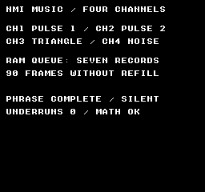
Build command
New-Item -ItemType Directory -Force .\out | Out-Null
.\kitaqfc\kitaqfc.exe .\kitaqfc\lib\audio_vblank.c .\kitaq-docs\samples\api-examples\fc\audio_vblank.c -I .\kitaqfc\lib -I .\kitaq-docs\samples --mapper=nrom --nes-chr=.\kitaq-docs\samples\font.chr -o .\out\audio_vblank.nes --no-cache --no-disasmImplementation and source
kitaqfc/lib/audio_vblank.h:19
Reset the queue, feeder and diagnostic counters; silence and initialize the APU. Owns the four basic channels and disables DMC and APU frame IRQs.
kitaqfc/lib/audio_vblank.c:67
void nes_audio_vblank_init(void){
nes_audio_vblank_stop();nav_underruns=0;nav_frame=0x40;
nav_sweep1=8;nav_sweep2=8;nav_dmc_flags=0;nav_dmc_level=0;
nav_timbre[0]=0xBC;nav_timbre[1]=0x7A;nav_timbre[2]=0xFF;nav_timbre[3]=0x38;
}nes_audio_vblank_enqueue
Validate and copy one record into the RAM queue. Use this to generate music in game code without the ROM feeder.
Syntax
u8 nes_audio_vblank_enqueue(const u8* record);Parameters
recordAddress of five readable bytes, valid until the call returns. The source array may then be reused. Null is rejected.
Return value
Return 1 when accepted. Full, null or invalid tonal/noise values return 0 without changing the queue. The four channel bytes of a terminator are not validated.
Conditions and limits
Include audio_vblank.h and add audio_vblank.c to the build exactly once. The compiler calls its hook once from either the default or a custom NMI handler. Enable PPU NMI. The foreground loop does not call a music update routine.
This four-channel driver is tuned for NTSC: CH1=pulse 1, CH2=pulse 2, CH3=triangle, CH4=noise, indexed 0..3. It does not play DMC or expansion audio. Do not run it alongside direct APU writers such as the effects in audio.c. There is no PAL pitch table or tempo correction.
The 40-byte RAM ring has eight physical slots, with one left empty to distinguish full from empty. Usable capacity is seven records. Use one foreground producer; do not enqueue, refill or initialize from NMI. The producer publishes a one-byte write position only after copying the complete record, so NMI cannot read a partial record.
A record contains five bytes: delay, CH1, CH2, CH3, CH4. Delay 1..255 is the number of NMI ticks for which the new state lasts. Zero terminates playback and ignores the other four bytes. Tonal notes 0..71 are C2..B7 (24=C4). Noise values 0..15 select a long-mode period, and 16..31 select short mode. For any channel, 255=NES_AUDIO_HOLD leaves it unchanged; 254=NES_AUDIO_STOP silences it.
Usage example
result[6]=nes_audio_vblank_enqueue(quiet_record); // Copy five bytes into RAM.This is a calling fragment. Follow the stated initialization and buffer requirements before using it in a complete program.
Expected result
The sample plays an original four-channel phrase once. Music continues while the foreground performs integer arithmetic without refilling for 90 frames. “PHRASE COMPLETE / SILENT” and “UNDERRUNS 0 / MATH OK” mean playback finished, no queue starvation occurred and arithmetic results matched. Listen to the captured audio for the pulse melody and accompaniment, triangle bass and noise. The end is silent. The image reports control results; use the audio to assess sound.
Build command
New-Item -ItemType Directory -Force .\out | Out-Null
.\kitaqfc\kitaqfc.exe .\kitaqfc\lib\audio_vblank.c .\kitaq-docs\samples\api-examples\fc\audio_vblank.c -I .\kitaqfc\lib -I .\kitaq-docs\samples --mapper=nrom --nes-chr=.\kitaq-docs\samples\font.chr -o .\out\audio_vblank.nes --no-cache --no-disasmImplementation and source
kitaqfc/lib/audio_vblank.h:22
Copy one complete validated record to RAM and publish it atomically last. Return 1 on success, 0 for null/invalid/full. Call from one foreground producer.
kitaqfc/lib/audio_vblank.c:74
u8 nes_audio_vblank_enqueue(const u8* record){
u8 next;u8 i;u8 value;
nav_invalid=0;
if(record==0){nav_invalid=1;return 0;}
next=nav_head+5;if(next==40)next=0;
if(next==nav_tail)return 0;
if(record[0]!=0){
for(i=1;i<5;i++){
value=record[i];
if(value<254){
if(i<4){if(value>71){nav_invalid=1;return 0;}}
else{if(value>31){nav_invalid=1;return 0;}}
}
}
}
for(i=0;i<5;i++)nav_queue[(__safe_index u8)(nav_head+i)]=record[i];
nav_head=next;return 1;
}nes_audio_vblank_queued
Return the number of records that NMI has not yet consumed.
Syntax
u8 nes_audio_vblank_queued(void);Return value
Return 0..7 queued BGM records, excluding the current delay and all SFX records. NMI advances consumption, so the result is a momentary observation.
Conditions and limits
Include audio_vblank.h and add audio_vblank.c to the build exactly once. The compiler calls its hook once from either the default or a custom NMI handler. Enable PPU NMI. The foreground loop does not call a music update routine.
This four-channel driver is tuned for NTSC: CH1=pulse 1, CH2=pulse 2, CH3=triangle, CH4=noise, indexed 0..3. It does not play DMC or expansion audio. Do not run it alongside direct APU writers such as the effects in audio.c. There is no PAL pitch table or tempo correction.
The 40-byte RAM ring has eight physical slots, with one left empty to distinguish full from empty. Usable capacity is seven records. Use one foreground producer; do not enqueue, refill or initialize from NMI. The producer publishes a one-byte write position only after copying the complete record, so NMI cannot read a partial record.
Usage example
result[1]=nes_audio_vblank_queued(); // Seven records after prefill.This is a calling fragment. Follow the stated initialization and buffer requirements before using it in a complete program.
Expected result
The sample plays an original four-channel phrase once. Music continues while the foreground performs integer arithmetic without refilling for 90 frames. “PHRASE COMPLETE / SILENT” and “UNDERRUNS 0 / MATH OK” mean playback finished, no queue starvation occurred and arithmetic results matched. Listen to the captured audio for the pulse melody and accompaniment, triangle bass and noise. The end is silent. The image reports control results; use the audio to assess sound.
Build command
New-Item -ItemType Directory -Force .\out | Out-Null
.\kitaqfc\kitaqfc.exe .\kitaqfc\lib\audio_vblank.c .\kitaq-docs\samples\api-examples\fc\audio_vblank.c -I .\kitaqfc\lib -I .\kitaq-docs\samples --mapper=nrom --nes-chr=.\kitaq-docs\samples\font.chr -o .\out\audio_vblank.nes --no-cache --no-disasmImplementation and source
kitaqfc/lib/audio_vblank.h:24
Return queued records (0..7), excluding the record whose delay is in progress.
kitaqfc/lib/audio_vblank.c:94
u8 nes_audio_vblank_queued(void){
u8 head;u8 tail;head=nav_head;tail=nav_tail;
if(head<tail)head=head+40;
return (head-tail)/5;
}nes_audio_vblank_free
Return the number of free record slots in the queue.
Syntax
u8 nes_audio_vblank_free(void);Return value
Return 0..7 BGM slots, equal to 7−queued(). This is a slot count, with five bytes per slot. The separate 35-byte SFX buffer is not part of this queue.
Conditions and limits
Include audio_vblank.h and add audio_vblank.c to the build exactly once. The compiler calls its hook once from either the default or a custom NMI handler. Enable PPU NMI. The foreground loop does not call a music update routine.
This four-channel driver is tuned for NTSC: CH1=pulse 1, CH2=pulse 2, CH3=triangle, CH4=noise, indexed 0..3. It does not play DMC or expansion audio. Do not run it alongside direct APU writers such as the effects in audio.c. There is no PAL pitch table or tempo correction.
The 40-byte RAM ring has eight physical slots, with one left empty to distinguish full from empty. Usable capacity is seven records. Use one foreground producer; do not enqueue, refill or initialize from NMI. The producer publishes a one-byte write position only after copying the complete record, so NMI cannot read a partial record.
Usage example
result[2]=nes_audio_vblank_free(); // No free slots immediately after prefill.This is a calling fragment. Follow the stated initialization and buffer requirements before using it in a complete program.
Expected result
The sample plays an original four-channel phrase once. Music continues while the foreground performs integer arithmetic without refilling for 90 frames. “PHRASE COMPLETE / SILENT” and “UNDERRUNS 0 / MATH OK” mean playback finished, no queue starvation occurred and arithmetic results matched. Listen to the captured audio for the pulse melody and accompaniment, triangle bass and noise. The end is silent. The image reports control results; use the audio to assess sound.
Build command
New-Item -ItemType Directory -Force .\out | Out-Null
.\kitaqfc\kitaqfc.exe .\kitaqfc\lib\audio_vblank.c .\kitaq-docs\samples\api-examples\fc\audio_vblank.c -I .\kitaqfc\lib -I .\kitaq-docs\samples --mapper=nrom --nes-chr=.\kitaq-docs\samples\font.chr -o .\out\audio_vblank.nes --no-cache --no-disasmImplementation and source
kitaqfc/lib/audio_vblank.h:26
Return available record slots (0..7), not bytes.
kitaqfc/lib/audio_vblank.c:99
u8 nes_audio_vblank_free(void){return 7-nes_audio_vblank_queued();}nes_audio_vblank_start
Enable RAM-queue consumption. The first record is taken at the next NMI.
Syntax
void nes_audio_vblank_start(void);Return value
No return value.
Conditions and limits
Include audio_vblank.h and add audio_vblank.c to the build exactly once. The compiler calls its hook once from either the default or a custom NMI handler. Enable PPU NMI. The foreground loop does not call a music update routine.
This four-channel driver is tuned for NTSC: CH1=pulse 1, CH2=pulse 2, CH3=triangle, CH4=noise, indexed 0..3. It does not play DMC or expansion audio. Do not run it alongside direct APU writers such as the effects in audio.c. There is no PAL pitch table or tempo correction.
Initialize and enqueue first. This neither enables NMI nor changes the current delay or read position. Resume a paused driver with pause(0); start alone does not unpause it.
When the delay expires without another BGM record, stop the BGM notes and resume at an NMI after data arrives. An independent SFX continues. Count entries into starvation, not every empty frame. Enqueueing only HOLD values does not restore the old BGM notes. Normally refill each frame and queue enough playing time before lengthy work.
Usage example
nes_audio_vblank_start(); // Consume the copied record on the next NMI.This is a calling fragment. Follow the stated initialization and buffer requirements before using it in a complete program.
Expected result
The sample plays an original four-channel phrase once. Music continues while the foreground performs integer arithmetic without refilling for 90 frames. “PHRASE COMPLETE / SILENT” and “UNDERRUNS 0 / MATH OK” mean playback finished, no queue starvation occurred and arithmetic results matched. Listen to the captured audio for the pulse melody and accompaniment, triangle bass and noise. The end is silent. The image reports control results; use the audio to assess sound.
Build command
New-Item -ItemType Directory -Force .\out | Out-Null
.\kitaqfc\kitaqfc.exe .\kitaqfc\lib\audio_vblank.c .\kitaq-docs\samples\api-examples\fc\audio_vblank.c -I .\kitaqfc\lib -I .\kitaq-docs\samples --mapper=nrom --nes-chr=.\kitaq-docs\samples\font.chr -o .\out\audio_vblank.nes --no-cache --no-disasmImplementation and source
kitaqfc/lib/audio_vblank.h:28
Enable consumption at the next NMI. Does not enable PPU NMI itself.
kitaqfc/lib/audio_vblank.c:100
void nes_audio_vblank_start(void){nav_active=1;}nes_audio_vblank_stop
Disable playback, silence the four channels and discard the queue and ROM feeder.
Syntax
void nes_audio_vblank_stop(void);Return value
No return value.
Conditions and limits
Include audio_vblank.h and add audio_vblank.c to the build exactly once. The compiler calls its hook once from either the default or a custom NMI handler. Enable PPU NMI. The foreground loop does not call a music update routine.
This four-channel driver is tuned for NTSC: CH1=pulse 1, CH2=pulse 2, CH3=triangle, CH4=noise, indexed 0..3. It does not play DMC or expansion audio. Do not run it alongside direct APU writers such as the effects in audio.c. There is no PAL pitch table or tempo correction.
Stop both BGM and SFX, discarding the queue, feeder, both playback positions and pause state. Retain timbres and the starvation counter; do not disable NMI. Use pause to preserve position. set_music and play_music also perform this stop internally, cancelling SFX.
Usage example
nes_audio_vblank_stop(); // Clear the feeder and queued records; silence now.This is a calling fragment. Follow the stated initialization and buffer requirements before using it in a complete program.
Expected result
The sample plays an original four-channel phrase once. Music continues while the foreground performs integer arithmetic without refilling for 90 frames. “PHRASE COMPLETE / SILENT” and “UNDERRUNS 0 / MATH OK” mean playback finished, no queue starvation occurred and arithmetic results matched. Listen to the captured audio for the pulse melody and accompaniment, triangle bass and noise. The end is silent. The image reports control results; use the audio to assess sound.
Build command
New-Item -ItemType Directory -Force .\out | Out-Null
.\kitaqfc\kitaqfc.exe .\kitaqfc\lib\audio_vblank.c .\kitaq-docs\samples\api-examples\fc\audio_vblank.c -I .\kitaqfc\lib -I .\kitaq-docs\samples --mapper=nrom --nes-chr=.\kitaq-docs\samples\font.chr -o .\out\audio_vblank.nes --no-cache --no-disasmImplementation and source
kitaqfc/lib/audio_vblank.h:30
Disable consumption, silence, discard queued records and clear the feeder.
kitaqfc/lib/audio_vblank.c:29
void nes_audio_vblank_stop(void){
u8 i;
nav_paused=1;nav_active=0;nav_sfx_active=0;nav_status=0;
nav_delay=0;nav_enabled=0;nav_head=0;nav_tail=0;
nav_source=0;nav_cursor=0;nav_count=0;nav_left=0;nav_starved=0;
nav_previous_mask=0;nav_effective_mask=0;nav_refresh=0;
for(i=0;i<4;i++){nav_notes[(__safe_index u8)i]=254;nav_sfx_notes[(__safe_index u8)i]=254;}
nav_paused=0;
}nes_audio_vblank_set_music
Stop playback and attach a stream as the feeder source. Copying into the queue and starting playback are separate operations.
Syntax
u8 nes_audio_vblank_set_music(const u8* records,u16 count,u8 loop);Parameters
recordsStart of the stream in readable ROM or RAM. Keep it alive until feeding finishes. No bank switching is performed: map the appropriate ROM bank while calling refill. NMI reads only the copied RAM records.
countNumber of readable five-byte records, 1..13107; not a byte count. All count×5 bytes must occupy a contiguous valid CPU address range.
loopZero selects one-shot playback; any nonzero value repeats from the start. Do not include a delay-zero terminator inside a looping stream.
Return value
Return 1 for a valid pointer/count, or 0 for null, zero count or a count above 13107. Even on failure, existing playback and queued data are stopped/discarded. Record contents are checked during refill.
Conditions and limits
Include audio_vblank.h and add audio_vblank.c to the build exactly once. The compiler calls its hook once from either the default or a custom NMI handler. Enable PPU NMI. The foreground loop does not call a music update routine.
This four-channel driver is tuned for NTSC: CH1=pulse 1, CH2=pulse 2, CH3=triangle, CH4=noise, indexed 0..3. It does not play DMC or expansion audio. Do not run it alongside direct APU writers such as the effects in audio.c. There is no PAL pitch table or tempo correction.
A record contains five bytes: delay, CH1, CH2, CH3, CH4. Delay 1..255 is the number of NMI ticks for which the new state lasts. Zero terminates playback and ignores the other four bytes. Tonal notes 0..71 are C2..B7 (24=C4). Noise values 0..15 select a long-mode period, and 16..31 select short mode. For any channel, 255=NES_AUDIO_HOLD leaves it unchanged; 254=NES_AUDIO_STOP silences it.
Usage example
result[5]=nes_audio_vblank_set_music(song,8,0); // Attach without starting.This is a calling fragment. Follow the stated initialization and buffer requirements before using it in a complete program.
Expected result
The sample plays an original four-channel phrase once. Music continues while the foreground performs integer arithmetic without refilling for 90 frames. “PHRASE COMPLETE / SILENT” and “UNDERRUNS 0 / MATH OK” mean playback finished, no queue starvation occurred and arithmetic results matched. Listen to the captured audio for the pulse melody and accompaniment, triangle bass and noise. The end is silent. The image reports control results; use the audio to assess sound.
Build command
New-Item -ItemType Directory -Force .\out | Out-Null
.\kitaqfc\kitaqfc.exe .\kitaqfc\lib\audio_vblank.c .\kitaq-docs\samples\api-examples\fc\audio_vblank.c -I .\kitaqfc\lib -I .\kitaq-docs\samples --mapper=nrom --nes-chr=.\kitaq-docs\samples\font.chr -o .\out\audio_vblank.nes --no-cache --no-disasmImplementation and source
kitaqfc/lib/audio_vblank.h:33
Stop and attach a readable five-byte-record stream; return 0 for null, zero count or a count above 13107. Nonzero loop repeats the stream. Does not start.
kitaqfc/lib/audio_vblank.c:110
u8 nes_audio_vblank_set_music(const u8* records,u16 count,u8 loop){
nes_audio_vblank_stop();
if(records==0||count==0||count>13107)return 0;
nav_source=records;nav_cursor=records;nav_count=count;nav_left=count;nav_loop=loop;
return 1;
}nes_audio_vblank_refill
Feed up to seven records from the attached stream into free slots. This foreground operation lets a small RAM queue play a long song.
Syntax
u8 nes_audio_vblank_refill(void);Return value
Return 0..7 accepted records, counting the automatically appended terminator for one-shot playback. No source or a full queue returns 0. Encountering an invalid record stops playback, discards the queue/feeder and returns 0.
Conditions and limits
Include audio_vblank.h and add audio_vblank.c to the build exactly once. The compiler calls its hook once from either the default or a custom NMI handler. Enable PPU NMI. The foreground loop does not call a music update routine.
This four-channel driver is tuned for NTSC: CH1=pulse 1, CH2=pulse 2, CH3=triangle, CH4=noise, indexed 0..3. It does not play DMC or expansion audio. Do not run it alongside direct APU writers such as the effects in audio.c. There is no PAL pitch table or tempo correction.
Start of the stream in readable ROM or RAM. Keep it alive until feeding finishes. No bank switching is performed: map the appropriate ROM bank while calling refill. NMI reads only the copied RAM records.
Zero selects one-shot playback; any nonzero value repeats from the start. Do not include a delay-zero terminator inside a looping stream.
When the delay expires without another BGM record, stop the BGM notes and resume at an NMI after data arrives. An independent SFX continues. Count entries into starvation, not every empty frame. Enqueueing only HOLD values does not restore the old BGM notes. Normally refill each frame and queue enough playing time before lengthy work.
The ROM feeder and direct enqueue share one queue; combine them only with an intentional ordering. Refilling does not play records or start the consumer. Its invalid-data stop does silence the APU.
Usage example
nes_audio_vblank_refill();This is a calling fragment. Follow the stated initialization and buffer requirements before using it in a complete program.
Expected result
The sample plays an original four-channel phrase once. Music continues while the foreground performs integer arithmetic without refilling for 90 frames. “PHRASE COMPLETE / SILENT” and “UNDERRUNS 0 / MATH OK” mean playback finished, no queue starvation occurred and arithmetic results matched. Listen to the captured audio for the pulse melody and accompaniment, triangle bass and noise. The end is silent. The image reports control results; use the audio to assess sound.
Build command
New-Item -ItemType Directory -Force .\out | Out-Null
.\kitaqfc\kitaqfc.exe .\kitaqfc\lib\audio_vblank.c .\kitaq-docs\samples\api-examples\fc\audio_vblank.c -I .\kitaqfc\lib -I .\kitaq-docs\samples --mapper=nrom --nes-chr=.\kitaq-docs\samples\font.chr -o .\out\audio_vblank.nes --no-cache --no-disasmImplementation and source
kitaqfc/lib/audio_vblank.h:37
Copy at most seven records from the attached stream. Return copies accepted. A one-shot feeder appends a delay-zero terminator after the last timed record. Keep the stream's ROM bank mapped during this foreground call only.
kitaqfc/lib/audio_vblank.c:118
u8 nes_audio_vblank_refill(void){
u8 copied;copied=0;
while(copied<7&&nav_source!=0){
if(nav_left==0){
if(nav_loop!=0){nav_cursor=nav_source;nav_left=nav_count;}
else {if(nes_audio_vblank_enqueue(nav_end)!=0){copied++;nav_source=0;}return copied;}
}
if(nes_audio_vblank_enqueue(nav_cursor)==0){
// The producer-only flag distinguishes malformed data from full.
// Re-reading occupancy here would race NMI freeing a full queue.
if(nav_invalid!=0){nes_audio_vblank_stop();return 0;}
return copied;
}
copied++;nav_cursor=nav_cursor+5;nav_left--;
}
return copied;
}nes_audio_vblank_play_music
Attach a song, prefill the queue and enable playback in one call. This is the usual entry point for starting a phrase.
Syntax
u8 nes_audio_vblank_play_music(const u8* records,u16 count,u8 loop);Parameters
recordsStart of the stream in readable ROM or RAM. Keep it alive until feeding finishes. No bank switching is performed: map the appropriate ROM bank while calling refill. NMI reads only the copied RAM records.
countNumber of readable five-byte records, 1..13107; not a byte count. All count×5 bytes must occupy a contiguous valid CPU address range.
loopZero selects one-shot playback; any nonzero value repeats from the start. Do not include a delay-zero terminator inside a looping stream.
Return value
Return 1 when setup and initial prefill succeed; return 0 for invalid setup or invalid data found during that prefill. Success does not validate the entire song: later malformed records are found by later refill calls.
Conditions and limits
Include audio_vblank.h and add audio_vblank.c to the build exactly once. The compiler calls its hook once from either the default or a custom NMI handler. Enable PPU NMI. The foreground loop does not call a music update routine.
This four-channel driver is tuned for NTSC: CH1=pulse 1, CH2=pulse 2, CH3=triangle, CH4=noise, indexed 0..3. It does not play DMC or expansion audio. Do not run it alongside direct APU writers such as the effects in audio.c. There is no PAL pitch table or tempo correction.
Call init once first. play_music retains timbres and the starvation counter. Continue calling refill periodically for long or looping streams.
Usage example
result[0]=nes_audio_vblank_play_music(song,8,0);This is a calling fragment. Follow the stated initialization and buffer requirements before using it in a complete program.
Expected result
The sample plays an original four-channel phrase once. Music continues while the foreground performs integer arithmetic without refilling for 90 frames. “PHRASE COMPLETE / SILENT” and “UNDERRUNS 0 / MATH OK” mean playback finished, no queue starvation occurred and arithmetic results matched. Listen to the captured audio for the pulse melody and accompaniment, triangle bass and noise. The end is silent. The image reports control results; use the audio to assess sound.
Build command
New-Item -ItemType Directory -Force .\out | Out-Null
.\kitaqfc\kitaqfc.exe .\kitaqfc\lib\audio_vblank.c .\kitaq-docs\samples\api-examples\fc\audio_vblank.c -I .\kitaqfc\lib -I .\kitaq-docs\samples --mapper=nrom --nes-chr=.\kitaq-docs\samples\font.chr -o .\out\audio_vblank.nes --no-cache --no-disasmImplementation and source
kitaqfc/lib/audio_vblank.h:39
Set the stream, prefill the queue and start. Return 0 for invalid setup/data.
kitaqfc/lib/audio_vblank.c:135
u8 nes_audio_vblank_play_music(const u8* records,u16 count,u8 loop){
if(nes_audio_vblank_set_music(records,count,loop)==0)return 0;
if(nes_audio_vblank_refill()==0)return 0;
nes_audio_vblank_start();return 1;
}nes_audio_vblank_is_playing
Report whether NMI queue consumption is enabled.
Syntax
u8 nes_audio_vblank_is_playing(void);Return value
Return 1 while the BGM consumer is enabled, including pause and starvation, or 0 after stop/end. An SFX playing alone still returns 0. This does not report audible output or SFX activity.
Conditions and limits
Include audio_vblank.h and add audio_vblank.c to the build exactly once. The compiler calls its hook once from either the default or a custom NMI handler. Enable PPU NMI. The foreground loop does not call a music update routine.
This four-channel driver is tuned for NTSC: CH1=pulse 1, CH2=pulse 2, CH3=triangle, CH4=noise, indexed 0..3. It does not play DMC or expansion audio. Do not run it alongside direct APU writers such as the effects in audio.c. There is no PAL pitch table or tempo correction.
When the delay expires without another BGM record, stop the BGM notes and resume at an NMI after data arrives. An independent SFX continues. Count entries into starvation, not every empty frame. Enqueueing only HOLD values does not restore the old BGM notes. Normally refill each frame and queue enough playing time before lengthy work.
Usage example
while(nes_audio_vblank_is_playing()!=0){
// example:nes_audio_vblank_refill:start
nes_audio_vblank_refill();
// example:nes_audio_vblank_refill:end
__nmi_wait();
}This is a calling fragment. Follow the stated initialization and buffer requirements before using it in a complete program.
Expected result
The sample plays an original four-channel phrase once. Music continues while the foreground performs integer arithmetic without refilling for 90 frames. “PHRASE COMPLETE / SILENT” and “UNDERRUNS 0 / MATH OK” mean playback finished, no queue starvation occurred and arithmetic results matched. Listen to the captured audio for the pulse melody and accompaniment, triangle bass and noise. The end is silent. The image reports control results; use the audio to assess sound.
Build command
New-Item -ItemType Directory -Force .\out | Out-Null
.\kitaqfc\kitaqfc.exe .\kitaqfc\lib\audio_vblank.c .\kitaq-docs\samples\api-examples\fc\audio_vblank.c -I .\kitaqfc\lib -I .\kitaq-docs\samples --mapper=nrom --nes-chr=.\kitaq-docs\samples\font.chr -o .\out\audio_vblank.nes --no-cache --no-disasmImplementation and source
kitaqfc/lib/audio_vblank.h:41
Return 1 while the BGM consumer is enabled, including a recoverable queue underrun.
kitaqfc/lib/audio_vblank.c:101
u8 nes_audio_vblank_is_playing(void){return nav_active;}nes_audio_vblank_underruns
Return the number of queue-starvation episodes, helping assess refill headroom.
Syntax
u8 nes_audio_vblank_underruns(void);Return value
Return 0..255, saturating at 255. Count starvation episodes, not every frame spent waiting. init clears it; stop and song changes retain it. A normal terminator is not starvation.
Conditions and limits
Include audio_vblank.h and add audio_vblank.c to the build exactly once. The compiler calls its hook once from either the default or a custom NMI handler. Enable PPU NMI. The foreground loop does not call a music update routine.
This four-channel driver is tuned for NTSC: CH1=pulse 1, CH2=pulse 2, CH3=triangle, CH4=noise, indexed 0..3. It does not play DMC or expansion audio. Do not run it alongside direct APU writers such as the effects in audio.c. There is no PAL pitch table or tempo correction.
When the delay expires without another BGM record, stop the BGM notes and resume at an NMI after data arrives. An independent SFX continues. Count entries into starvation, not every empty frame. Enqueueing only HOLD values does not restore the old BGM notes. Normally refill each frame and queue enough playing time before lengthy work.
Usage example
result[4]=nes_audio_vblank_underruns(); // Zero: queued time covered the busy section.This is a calling fragment. Follow the stated initialization and buffer requirements before using it in a complete program.
Expected result
The sample plays an original four-channel phrase once. Music continues while the foreground performs integer arithmetic without refilling for 90 frames. “PHRASE COMPLETE / SILENT” and “UNDERRUNS 0 / MATH OK” mean playback finished, no queue starvation occurred and arithmetic results matched. Listen to the captured audio for the pulse melody and accompaniment, triangle bass and noise. The end is silent. The image reports control results; use the audio to assess sound.
Build command
New-Item -ItemType Directory -Force .\out | Out-Null
.\kitaqfc\kitaqfc.exe .\kitaqfc\lib\audio_vblank.c .\kitaq-docs\samples\api-examples\fc\audio_vblank.c -I .\kitaqfc\lib -I .\kitaq-docs\samples --mapper=nrom --nes-chr=.\kitaq-docs\samples\font.chr -o .\out\audio_vblank.nes --no-cache --no-disasmImplementation and source
kitaqfc/lib/audio_vblank.h:43
Saturating count of starvation episodes, cleared by init; END is not starvation.
kitaqfc/lib/audio_vblank.c:102
u8 nes_audio_vblank_underruns(void){return nav_underruns;}nes_audio_vblank_set_timbre
Configure duty or level for the next note on a channel, without retriggering its current note.
Syntax
u8 nes_audio_vblank_set_timbre(u8 channel,u8 control);Parameters
channel0=CH1 pulse 1, 1=CH2 pulse 2, 2=CH3 triangle, 3=CH4 noise. Values of 4 or more are rejected.
controlFor pulses, bits 7..6 select duty (0=12.5%, 1=25%, 2=50%, 3=75%) and bits 3..0 set constant volume 0..15. Noise normally uses bits 3..0 as constant volume. OR in NES_AUDIO_NOISE_ENVELOPE (128) to use those bits as decay period 0..15: the next noise note starts at volume 15 and decays once. Larger periods are slower; 15 takes about one second. The noise length counter allows the decay to finish. Triangle uses zero for a silent next note and nonzero for an audible one.
Return value
Return 1 for a valid channel; values of 4 or more return 0 without changes.
Conditions and limits
Include audio_vblank.h and add audio_vblank.c to the build exactly once. The compiler calls its hook once from either the default or a custom NMI handler. Enable PPU NMI. The foreground loop does not call a music update routine.
This four-channel driver is tuned for NTSC: CH1=pulse 1, CH2=pulse 2, CH3=triangle, CH4=noise, indexed 0..3. It does not play DMC or expansion audio. Do not run it alongside direct APU writers such as the effects in audio.c. There is no PAL pitch table or tempo correction.
Usage example
nes_audio_vblank_set_timbre(3,NES_AUDIO_NOISE_ENVELOPE|15);
result[3]=nes_audio_vblank_play_sfx(noise,1,8); // Bit 3 owns CH4; no BGM needed.
// The slow one-shot envelope fades by itself. It does not loop at zero.This is a calling fragment. Follow the stated initialization and buffer requirements before using it in a complete program.
Expected result
No input is needed. CH1 plays BGM near 220 Hz, switches to an SFX near 880 Hz for 30 frames, then returns to the current BGM. After a 30-frame silent pause, BGM resumes. A second effect is explicitly cut short after 15 frames. Finally, CH4 noise decays slowly once. COMPLETE / ALL CHANNELS OFF marks the end. Listen to the attached recording for the pitch changes, silent pause and noise decay.
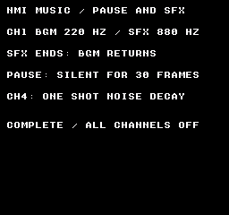
Build command
New-Item -ItemType Directory -Force .\out | Out-Null
.\kitaqfc\kitaqfc.exe .\kitaqfc\lib\audio_vblank.c .\kitaq-docs\samples\api-examples\fc\audio_vblank_effects.c -I .\kitaqfc\lib -I .\kitaq-docs\samples --mapper=nrom --nes-chr=.\kitaq-docs\samples\font.chr -o .\out\audio_vblank_effects.nes --no-cache --no-disasmImplementation and source
kitaqfc/lib/audio_vblank.h:50
Configure the next note: pulse bits 7..6 select duty and 3..0 select volume; noise uses volume 3..0, or NES_AUDIO_NOISE_ENVELOPE | decay_period (0..15) for a one-shot hardware envelope (larger periods decay more slowly). The next noise note starts at volume 15; its length permits a full decay. Triangle uses zero for silent, nonzero for full level. Return 0 for channel >=4. Hardware has no triangle volume control.
kitaqfc/lib/audio_vblank.c:103
u8 nes_audio_vblank_set_timbre(u8 channel,u8 control){
if(channel>=4)return 0;
if(channel<2)nav_timbre[(__safe_index u8)channel]=(control&0xCF)|0x30;
else if(channel==2){if(control==0)nav_timbre[2]=0x80;else nav_timbre[2]=0xFF;}
else {if((control&128)!=0)nav_timbre[3]=control&15;else nav_timbre[3]=(control&15)|0x30;}
return 1;
}nes_audio_vblank_pause
Pause or resume both BGM and SFX while preserving their playback positions.
Syntax
void nes_audio_vblank_pause(u8 on);Parameters
onNonzero pauses; zero resumes. Pausing immediately disables the four APU channels.
Return value
No return value.
Conditions and limits
Include audio_vblank.h and add audio_vblank.c to the build exactly once. The compiler calls its hook once from either the default or a custom NMI handler. Enable PPU NMI. The foreground loop does not call a music update routine.
This four-channel driver is tuned for NTSC: CH1=pulse 1, CH2=pulse 2, CH3=triangle, CH4=noise, indexed 0..3. It does not play DMC or expansion audio. Do not run it alongside direct APU writers such as the effects in audio.c. There is no PAL pitch table or tempo correction.
Call from the foreground. NMI consumes the copied SFX data. Let this library manage both BGM and SFX; do not run another APU driver concurrently.
During pause, neither BGM delay/queue position nor SFX delay/position advances. Foreground refill remains possible. The first NMI after resume retriggers the current notes and advances the normal tick. Waveform phase and a partially decayed envelope level are not saved. The BGM enable flag reported by is_playing is unchanged. Zero requests note restoration even when already running, so do not call it every frame.
Usage example
nes_audio_vblank_pause(1); // Freeze BGM and SFX, and mute immediately.
phase=3;wait_frames(30); // Refill may copy data; neither timeline advances.
nes_audio_vblank_pause(0); // Restore held notes on the next NMI.This is a calling fragment. Follow the stated initialization and buffer requirements before using it in a complete program.
Expected result
No input is needed. CH1 plays BGM near 220 Hz, switches to an SFX near 880 Hz for 30 frames, then returns to the current BGM. After a 30-frame silent pause, BGM resumes. A second effect is explicitly cut short after 15 frames. Finally, CH4 noise decays slowly once. COMPLETE / ALL CHANNELS OFF marks the end. Listen to the attached recording for the pitch changes, silent pause and noise decay.
Build command
New-Item -ItemType Directory -Force .\out | Out-Null
.\kitaqfc\kitaqfc.exe .\kitaqfc\lib\audio_vblank.c .\kitaq-docs\samples\api-examples\fc\audio_vblank_effects.c -I .\kitaqfc\lib -I .\kitaq-docs\samples --mapper=nrom --nes-chr=.\kitaq-docs\samples\font.chr -o .\out\audio_vblank_effects.nes --no-cache --no-disasmImplementation and source
kitaqfc/lib/audio_vblank.h:54
Any nonzero argument freezes both timelines and mutes immediately. Zero resumes from the stored delays and restores held notes on the next NMI. BGM is_playing remains enabled during pause. Refill may still fill the queue.
kitaqfc/lib/audio_vblank.c:40
void nes_audio_vblank_pause(u8 on){
if(on!=0){nav_paused=1;nav_status=0;}
else{nav_refresh=1;nav_paused=0;}
}nes_audio_vblank_play_sfx
Copy a short effect to RAM and temporarily take over selected channel outputs starting at the next NMI.
Syntax
u8 nes_audio_vblank_play_sfx(const u8* records,u8 count,u8 mask);Parameters
recordsStart of five-byte records. Keep count×5 bytes readable and mapped until the call returns. The source may be reused after the copy.
count1..7 records, at most 35 bytes. Every delay must be 1..255. SFX do not use delay-zero terminators; they end after the specified records.
maskLow four bits select channels: 1=CH1, 2=CH2, 4=CH3, 8=CH4. OR bits to select several. High bits are ignored; a zero low mask is rejected.
Return value
Return 1 after copying and enabling the effect. Return 0 for null, an invalid count, no selected channels, a zero delay or invalid tonal/noise values. Invalid input leaves the current effect unchanged. Values on unselected channels are validated too.
Conditions and limits
Include audio_vblank.h and add audio_vblank.c to the build exactly once. The compiler calls its hook once from either the default or a custom NMI handler. Enable PPU NMI. The foreground loop does not call a music update routine.
This four-channel driver is tuned for NTSC: CH1=pulse 1, CH2=pulse 2, CH3=triangle, CH4=noise, indexed 0..3. It does not play DMC or expansion audio. Do not run it alongside direct APU writers such as the effects in audio.c. There is no PAL pitch table or tempo correction.
Call from the foreground. NMI consumes the copied SFX data. Let this library manage both BGM and SFX; do not run another APU driver concurrently.
BGM keeps advancing underneath; when the effect ends, outputs return to its current notes. There is one SFX stream; a new call replaces it. HOLD/STOP values match BGM, but an effect starts with stopped held notes, so an initial HOLD does not inherit the BGM note. SFX can play without BGM. An effect queued while paused waits for resume. Timbres are shared with BGM.
Usage example
result[1]=nes_audio_vblank_play_sfx(effect,1,1); // Mask bit 0 owns CH1.
// The BGM timeline keeps advancing; its current CH1 note returns after 30 ticks.This is a calling fragment. Follow the stated initialization and buffer requirements before using it in a complete program.
Expected result
No input is needed. CH1 plays BGM near 220 Hz, switches to an SFX near 880 Hz for 30 frames, then returns to the current BGM. After a 30-frame silent pause, BGM resumes. A second effect is explicitly cut short after 15 frames. Finally, CH4 noise decays slowly once. COMPLETE / ALL CHANNELS OFF marks the end. Listen to the attached recording for the pitch changes, silent pause and noise decay.
Build command
New-Item -ItemType Directory -Force .\out | Out-Null
.\kitaqfc\kitaqfc.exe .\kitaqfc\lib\audio_vblank.c .\kitaq-docs\samples\api-examples\fc\audio_vblank_effects.c -I .\kitaqfc\lib -I .\kitaq-docs\samples --mapper=nrom --nes-chr=.\kitaq-docs\samples\font.chr -o .\out\audio_vblank_effects.nes --no-cache --no-disasmImplementation and source
kitaqfc/lib/audio_vblank.h:62
Copy 1..7 timed records. Bits 0..3 select channels temporarily owned by SFX. BGM continues underneath and its current notes return when the effect ends. Return 1 after copying; 0 for null, invalid count/data or an empty low mask. Ignore mask bits 4..7. All fields are validated, even unselected channels. Delay zero is not accepted for SFX. Invalid input preserves the current SFX. Replacement restarts the effect; the first HOLD starts from a stopped note. The source need only stay mapped/readable until this foreground call returns.
kitaqfc/lib/audio_vblank.c:47
u8 nes_audio_vblank_play_sfx(const u8* records,u8 count,u8 mask){
u8 i;u8 ch;u8 value;u8 bytes;
if(records==0||count==0||count>7||(mask&15)==0)return 0;
bytes=(u8)(count+count+count+count+count);
i=0;
while(i<bytes){
if(records[i]==0)return 0;
ch=1;while(ch<5){
value=records[i+ch];
if(value<254){if(ch<4){if(value>71)return 0;}else{if(value>31)return 0;}}
ch++;
}
i=i+5;
}
nav_sfx_active=0;
for(i=0;i<bytes;i++)nav_sfx_queue[(__safe_index u8)i]=records[i];
for(i=0;i<4;i++)nav_sfx_notes[(__safe_index u8)i]=254;
nav_sfx_mask=mask&15;nav_sfx_cursor=0;nav_sfx_length=bytes;nav_sfx_delay=0;
nav_sfx_active=1;return 1;
}nes_audio_vblank_stop_sfx
Cancel effect ownership so the next NMI restores the current BGM notes.
Syntax
void nes_audio_vblank_stop_sfx(void);Return value
No return value.
Conditions and limits
Include audio_vblank.h and add audio_vblank.c to the build exactly once. The compiler calls its hook once from either the default or a custom NMI handler. Enable PPU NMI. The foreground loop does not call a music update routine.
This four-channel driver is tuned for NTSC: CH1=pulse 1, CH2=pulse 2, CH3=triangle, CH4=noise, indexed 0..3. It does not play DMC or expansion audio. Do not run it alongside direct APU writers such as the effects in audio.c. There is no PAL pitch table or tempo correction.
Call from the foreground. NMI consumes the copied SFX data. Let this library manage both BGM and SFX; do not run another APU driver concurrently.
This call does not write APU registers. It retains the BGM queue, position and enabled state. If SFX was playing alone, the next NMI returns the channels to stopped notes. While paused, the change takes effect on resume. Use stop to mute immediately and discard both positions.
Usage example
nes_audio_vblank_stop_sfx(); // Release effect ownership at the next NMI.
// BGM continues at its current position; this does not restart the song.This is a calling fragment. Follow the stated initialization and buffer requirements before using it in a complete program.
Expected result
No input is needed. CH1 plays BGM near 220 Hz, switches to an SFX near 880 Hz for 30 frames, then returns to the current BGM. After a 30-frame silent pause, BGM resumes. A second effect is explicitly cut short after 15 frames. Finally, CH4 noise decays slowly once. COMPLETE / ALL CHANNELS OFF marks the end. Listen to the attached recording for the pitch changes, silent pause and noise decay.
Build command
New-Item -ItemType Directory -Force .\out | Out-Null
.\kitaqfc\kitaqfc.exe .\kitaqfc\lib\audio_vblank.c .\kitaq-docs\samples\api-examples\fc\audio_vblank_effects.c -I .\kitaqfc\lib -I .\kitaq-docs\samples --mapper=nrom --nes-chr=.\kitaq-docs\samples\font.chr -o .\out\audio_vblank_effects.nes --no-cache --no-disasmImplementation and source
kitaqfc/lib/audio_vblank.h:65
Release effect ownership at the next NMI, restoring current BGM notes. This does not stop or restart the BGM and does not write the APU immediately.
kitaqfc/lib/audio_vblank.c:44
void nes_audio_vblank_stop_sfx(void){nav_sfx_active=0;}bank.h — Bank-aware code and data access
A ROM bank is a block of cartridge storage mapped into the CPU's address space. Different banks can appear at the same CPU address, so a 16-bit pointer alone does not identify banked data. BankPtr is a packed three-byte descriptor containing a one-byte bank number and a two-byte pointer. Use farptr_make to construct it and farptr_read8, farptr_read16 or farptr_read to access its contents.
The FC example uses MMC3 logical banks: bank 0 contains common code at $C000–$FFFF, and the selected 16 KiB bank appears at $8000–$BFFF. These are compiler bank numbers, not the mapper's raw 8 KiB register values. Initialize the library record with bank_switch. FC far_call is a macro for a named-function call; pass the function's bank, preferably obtained with __bankof.
bank_get_current
Return the last bank number stored by bank_switch. This reads software bookkeeping, not cartridge registers.
Syntax
u8 bank_get_current(void);Return value
The u8 value most recently stored by bank_switch; zero before initialization.
Conditions and limits
The library record starts at zero and does not discover the cartridge's startup mapping. Initialize it with bank_switch. Direct intrinsics and raw mapper writes do not update this separate record; bank_get_current therefore cannot verify the actual hardware mapping.
Usage example
starting_bank=bank_get_current(); // Last value recorded by bank_switch.
bank_expect(starting_bank==2,1);This is a calling fragment. Follow the stated initialization and buffer requirements before using it in a complete program.
Expected result
The initial bank_switch(2) records and selects bank 2. Later, direct switching selects bank 1 and reads A1 from home1 while bank_get_current still reports 2; switching back makes home2 read B2 again.
The complete program teaches how a bank number and near address identify data, how callbacks cross banks, and how to distinguish the library's record from the actual mapping. All displayed numbers are hexadecimal. BANK IN and BANK OUT must show 02, BYTE HEX D3, WORD HEX 5C7A, and both FAILED CHECKS and FIRST FAILURE 00. CGB and FC display blue text; DMG displays black text.
CALL COUNT is 02: the far_call macro and __farcall each invoke the callback once.

Build command
New-Item -ItemType Directory -Force .\out | Out-Null
.\kitaqfc\kitaqfc.exe .\kitaq-docs\samples\api-examples\fc\banked_data_calls.c -I .\kitaqfc\lib -I .\kitaq-docs\samples -o .\out\banked_data_calls.nes --mapper=mmc3 --nes-chr=.\kitaq-docs\samples\font.chr --no-cache --no-disasmImplementation and source
kitaqfc/lib/bank.h:18
Read this wrapper's bank shadow; arbitrary mapper writes do not update it.
kitaqfc/lib/bank.c:14
u8 bank_get_current(void)
{
return kq_bank_current;
}bank_switch
Record the requested bank in the library, then select it through the compiler's mapper-specific PRG-bank helper.
Syntax
void bank_switch(u8 bank);Parameters
bankAn unsigned 8-bit ROM-bank number. For a call, it must agree with the function's placement; for a read, it selects the source mapping. Use the target cartridge's valid range.
Return value
None (void).
Conditions and limits
A permanent bank change must not unmap the executing code or its return address. Put this call, bank_switch itself when used, and the code that continues afterwards in common/fixed bank 0, as the sample does.
The library record starts at zero and does not discover the cartridge's startup mapping. Initialize it with bank_switch. Direct intrinsics and raw mapper writes do not update this separate record; bank_get_current therefore cannot verify the actual hardware mapping.
FC switch-bank numbers are logical compiler numbers. Zero denotes common ROM, not a switch target. The helper normalizes zero to bank 1. On SUROM512, only 1–30 are valid: an out-of-range constant passed directly to the switching intrinsic is a build error; an invalid runtime value falls back to 1 and sets the mapper-fault state. Read common ROM directly instead of requesting a bank-zero switch.
Usage example
bank_switch(2); // Select the payload window and update library bookkeeping.This is a calling fragment. Follow the stated initialization and buffer requirements before using it in a complete program.
Expected result
The initial bank_switch(2) records and selects bank 2. Later, direct switching selects bank 1 and reads A1 from home1 while bank_get_current still reports 2; switching back makes home2 read B2 again.
The complete program teaches how a bank number and near address identify data, how callbacks cross banks, and how to distinguish the library's record from the actual mapping. All displayed numbers are hexadecimal. BANK IN and BANK OUT must show 02, BYTE HEX D3, WORD HEX 5C7A, and both FAILED CHECKS and FIRST FAILURE 00. CGB and FC display blue text; DMG displays black text.
CALL COUNT is 02: the far_call macro and __farcall each invoke the callback once.
Build command
New-Item -ItemType Directory -Force .\out | Out-Null
.\kitaqfc\kitaqfc.exe .\kitaq-docs\samples\api-examples\fc\banked_data_calls.c -I .\kitaqfc\lib -I .\kitaq-docs\samples -o .\out\banked_data_calls.nes --mapper=mmc3 --nes-chr=.\kitaq-docs\samples\font.chr --no-cache --no-disasmImplementation and source
kitaqfc/lib/bank.h:16
Record the bank in the library shadow and invoke the mapper-aware compiler intrinsic.
kitaqfc/lib/bank.c:7
void bank_switch(u8 bank)
{
kq_bank_current = bank;
__bankswitch(bank);
}far_call
Expand to __farcall((bank), func). This macro keeps the target as a function name visible to the compiler; it is not an indirect callback-pointer call.
Syntax
#define far_call(bank, func) __farcall((bank), func)Parameters
bankAn unsigned 8-bit ROM-bank number. For a call, it must agree with the function's placement; for a read, it selects the source mapping. Use the target cartridge's valid range.
funcThe declared name of a function with no parameters. A variable holding a function address is not accepted by this named-call intrinsic. The bank argument is not forwarded as a callback parameter.
Return value
The called function's result type determines the result. A void callback yields no value; u8 and u16 callbacks return their scalar value. The displayed sample uses void callbacks.
Conditions and limits
These calls do not forward user arguments or make the callback interrupt-reentrant. Keep the callback's own data, stack and interrupt use valid. The bank-restoring call paths are tested with nested calls and repeated calls; physical hardware and arbitrary interrupt interleavings are not covered by this example.
FC switch-bank numbers are logical compiler numbers. Zero denotes common ROM, not a switch target. The helper normalizes zero to bank 1. On SUROM512, only 1–30 are valid: an out-of-range constant passed directly to the switching intrinsic is a build error; an invalid runtime value falls back to 1 and sets the mapper-fault state. Read common ROM directly instead of requesting a bank-zero switch.
Usage example
far_call(3,callback); // No arguments; callback reads payload[0] in bank 3.
bank_expect(callback_count==1 && callback_byte==0xD3,15);This is a calling fragment. Follow the stated initialization and buffer requirements before using it in a complete program.
Expected result
At this point in the complete program, far_call raises callback_count to 1. The callback reads D3 from bank 3. A later near read of B2 from home2 verifies that execution returned with bank 2 mapped.
The complete program teaches how a bank number and near address identify data, how callbacks cross banks, and how to distinguish the library's record from the actual mapping. All displayed numbers are hexadecimal. BANK IN and BANK OUT must show 02, BYTE HEX D3, WORD HEX 5C7A, and both FAILED CHECKS and FIRST FAILURE 00. CGB and FC display blue text; DMG displays black text.
CALL COUNT is 02: the far_call macro and __farcall each invoke the callback once.
Build command
New-Item -ItemType Directory -Force .\out | Out-Null
.\kitaqfc\kitaqfc.exe .\kitaq-docs\samples\api-examples\fc\banked_data_calls.c -I .\kitaqfc\lib -I .\kitaq-docs\samples -o .\out\banked_data_calls.nes --mapper=mmc3 --nes-chr=.\kitaq-docs\samples\font.chr --no-cache --no-disasmImplementation and source
kitaqfc/lib/bank.h:36
far_data_read
Copy len bytes from the specified ROM bank into caller-owned RAM through the far-memory intrinsic. Restore the previous bank before returning.
Syntax
void far_data_read(u8 bank, const void* addr, void* dst, u16 len);Parameters
bankAn unsigned 8-bit ROM-bank number. For a call, it must agree with the function's placement; for a read, it selects the source mapping. Use the target cartridge's valid range.
addrNear pointer to readable source bytes in the selected ROM bank. It does not contain a bank number.
dstDestination in writable memory. Reserve enough space for every byte copied. Except for a zero-byte transfer, a null or invalid destination is not checked.
lenByte count, 0–65535. Zero performs no memory copy, but the bank-selection and restoration steps still run.
Return value
None (void).
Conditions and limits
Keep the full source range in the intended ROM mapping and the full destination range in writable memory. Copying does not select the next bank at a window boundary, handle overlapping ranges like memmove, or provide VRAM-safe writes. Use the graphics transfer APIs for VRAM.
Far reads and copies are synchronous and use shared compiler scratch. Do not let an interrupt run another banked transfer over the same scratch while one is active. On GB, the copy helper also uses one shared HRAM slot for the saved bank. The sample performs these operations from fixed code with no competing banked-transfer handler.
FC switch-bank numbers are logical compiler numbers. Zero denotes common ROM, not a switch target. The helper normalizes zero to bank 1. On SUROM512, only 1–30 are valid: an out-of-range constant passed directly to the switching intrinsic is a build error; an invalid runtime value falls back to 1 and sets the mapper-fault state. Read common ROM directly instead of requesting a bank-zero switch.
Usage example
far_data_read(3,payload,buffer,4); // Copy into four writable RAM bytes.
bank_expect(buffer[0]==0xD3 && buffer[1]==0x7A && buffer[2]==0x5C && buffer[3]==0x96,7);This is a calling fragment. Follow the stated initialization and buffer requirements before using it in a complete program.
Expected result
This excerpt copies 4 bytes through far_data_read and checks the buffer against D3 7A 5C 96. The source descriptor or pointer is retained by the caller; the full program separately checks a zero-length copy and bank restoration.
The complete program teaches how a bank number and near address identify data, how callbacks cross banks, and how to distinguish the library's record from the actual mapping. All displayed numbers are hexadecimal. BANK IN and BANK OUT must show 02, BYTE HEX D3, WORD HEX 5C7A, and both FAILED CHECKS and FIRST FAILURE 00. CGB and FC display blue text; DMG displays black text.
CALL COUNT is 02: the far_call macro and __farcall each invoke the callback once.
Build command
New-Item -ItemType Directory -Force .\out | Out-Null
.\kitaqfc\kitaqfc.exe .\kitaq-docs\samples\api-examples\fc\banked_data_calls.c -I .\kitaqfc\lib -I .\kitaq-docs\samples -o .\out\banked_data_calls.nes --mapper=mmc3 --nes-chr=.\kitaq-docs\samples\font.chr --no-cache --no-disasmImplementation and source
kitaqfc/lib/bank.h:24
Copy len bytes from banked ROM to caller-owned writable storage.
kitaqfc/lib/bank.c:32
void far_data_read(u8 bank, const void* addr, void* dst, u16 len)
{
__far_memcpy((u8*)dst, bank, (u16)addr, len);
}far_data_read16
Read two consecutive bytes through __farpeek16 and combine them as a little-endian word. The first byte becomes the low eight bits.
Syntax
u16 far_data_read16(u8 bank, const void* addr);Parameters
bankAn unsigned 8-bit ROM-bank number. For a call, it must agree with the function's placement; for a read, it selects the source mapping. Use the target cartridge's valid range.
addrNear pointer to readable source bytes in the selected ROM bank. It does not contain a bank number.
Return value
The little-endian word read, as u16 (0–65535).
Conditions and limits
The complete byte or word must be readable in the selected CPU mapping. These reads do not validate pointers, clip addresses or advance automatically to another ROM bank at a window boundary. A word read needs two valid consecutive bytes.
Far reads and copies are synchronous and use shared compiler scratch. Do not let an interrupt run another banked transfer over the same scratch while one is active. On GB, the copy helper also uses one shared HRAM slot for the saved bank. The sample performs these operations from fixed code with no competing banked-transfer handler.
FC switch-bank numbers are logical compiler numbers. Zero denotes common ROM, not a switch target. The helper normalizes zero to bank 1. On SUROM512, only 1–30 are valid: an out-of-range constant passed directly to the switching intrinsic is a build error; an invalid runtime value falls back to 1 and sets the mapper-fault state. Read common ROM directly instead of requesting a bank-zero switch.
Usage example
word_value=far_data_read16(3,payload+1); // Little-endian 7A 5C -> 0x5C7A.
bank_expect(word_value==0x5C7A,6);This is a calling fragment. Follow the stated initialization and buffer requirements before using it in a complete program.
Expected result
This excerpt uses far_data_read16 to read payload+1 in bank 3 and checks 5C7A. In the full program, the near read from home2 also confirms that the bank-2 mapping is restored.
The complete program teaches how a bank number and near address identify data, how callbacks cross banks, and how to distinguish the library's record from the actual mapping. All displayed numbers are hexadecimal. BANK IN and BANK OUT must show 02, BYTE HEX D3, WORD HEX 5C7A, and both FAILED CHECKS and FIRST FAILURE 00. CGB and FC display blue text; DMG displays black text.
CALL COUNT is 02: the far_call macro and __farcall each invoke the callback once.
Build command
New-Item -ItemType Directory -Force .\out | Out-Null
.\kitaqfc\kitaqfc.exe .\kitaq-docs\samples\api-examples\fc\banked_data_calls.c -I .\kitaqfc\lib -I .\kitaq-docs\samples -o .\out\banked_data_calls.nes --mapper=mmc3 --nes-chr=.\kitaq-docs\samples\font.chr --no-cache --no-disasmImplementation and source
kitaqfc/lib/bank.h:22
Read a 16-bit value through the bank-aware compiler intrinsic.
kitaqfc/lib/bank.c:26
u16 far_data_read16(u8 bank, const void* addr)
{
return __farpeek16(bank, (u16)addr);
}far_data_read8
Read one byte from the supplied ROM bank and address through __farpeek8, then return the byte after restoring the previous bank.
Syntax
u8 far_data_read8(u8 bank, const void* addr);Parameters
bankAn unsigned 8-bit ROM-bank number. For a call, it must agree with the function's placement; for a read, it selects the source mapping. Use the target cartridge's valid range.
addrNear pointer to readable source bytes in the selected ROM bank. It does not contain a bank number.
Return value
The byte read, as u8 (0–255).
Conditions and limits
The complete byte or word must be readable in the selected CPU mapping. These reads do not validate pointers, clip addresses or advance automatically to another ROM bank at a window boundary. A word read needs two valid consecutive bytes.
Far reads and copies are synchronous and use shared compiler scratch. Do not let an interrupt run another banked transfer over the same scratch while one is active. On GB, the copy helper also uses one shared HRAM slot for the saved bank. The sample performs these operations from fixed code with no competing banked-transfer handler.
FC switch-bank numbers are logical compiler numbers. Zero denotes common ROM, not a switch target. The helper normalizes zero to bank 1. On SUROM512, only 1–30 are valid: an out-of-range constant passed directly to the switching intrinsic is a build error; an invalid runtime value falls back to 1 and sets the mapper-fault state. Read common ROM directly instead of requesting a bank-zero switch.
Usage example
byte_value=far_data_read8(3,payload); // One byte: 0xD3.
bank_expect(byte_value==0xD3,5);This is a calling fragment. Follow the stated initialization and buffer requirements before using it in a complete program.
Expected result
This excerpt uses far_data_read8 to read payload in bank 3 and checks D3. In the full program, the near read from home2 also confirms that the bank-2 mapping is restored.
The complete program teaches how a bank number and near address identify data, how callbacks cross banks, and how to distinguish the library's record from the actual mapping. All displayed numbers are hexadecimal. BANK IN and BANK OUT must show 02, BYTE HEX D3, WORD HEX 5C7A, and both FAILED CHECKS and FIRST FAILURE 00. CGB and FC display blue text; DMG displays black text.
CALL COUNT is 02: the far_call macro and __farcall each invoke the callback once.
Build command
New-Item -ItemType Directory -Force .\out | Out-Null
.\kitaqfc\kitaqfc.exe .\kitaq-docs\samples\api-examples\fc\banked_data_calls.c -I .\kitaqfc\lib -I .\kitaq-docs\samples -o .\out\banked_data_calls.nes --mapper=mmc3 --nes-chr=.\kitaq-docs\samples\font.chr --no-cache --no-disasmImplementation and source
kitaqfc/lib/bank.h:20
Read one byte from an explicit ROM bank and 16-bit CPU address.
kitaqfc/lib/bank.c:20
u8 far_data_read8(u8 bank, const void* addr)
{
return __farpeek8(bank, (u16)addr);
}farptr_make
Store a bank byte and a CPU-visible pointer in the caller's BankPtr. This constructs a descriptor; it does not switch banks or read the pointed-to bytes.
Syntax
void farptr_make(BankPtr* out, u8 bank, const u8* ptr);Parameters
outPointer to writable storage for one three-byte BankPtr. A null out pointer is ignored and causes no write.
bankAn unsigned 8-bit ROM-bank number. For a call, it must agree with the function's placement; for a read, it selects the source mapping. Use the target cartridge's valid range.
ptrThe 16-bit CPU-visible address to store in the descriptor. It is copied unchanged; this function does not check whether that address exists in the chosen bank.
Return value
None (void).
Usage example
farptr_make(&pointer,3,payload+1); // Store a bank and address; do not read ROM.
bank_expect(pointer.bank==3 && pointer.ptr==payload+1,8);
farptr_make(0,1,home1); // A null destination is ignored.This is a calling fragment. Follow the stated initialization and buffer requirements before using it in a complete program.
Expected result
The descriptor is set to bank 3 and payload+1. Its readers then obtain 7A, 5C7A and the three bytes 7A 5C 96. The null-output call must leave all state unchanged.
The complete program teaches how a bank number and near address identify data, how callbacks cross banks, and how to distinguish the library's record from the actual mapping. All displayed numbers are hexadecimal. BANK IN and BANK OUT must show 02, BYTE HEX D3, WORD HEX 5C7A, and both FAILED CHECKS and FIRST FAILURE 00. CGB and FC display blue text; DMG displays black text.
CALL COUNT is 02: the far_call macro and __farcall each invoke the callback once.
Build command
New-Item -ItemType Directory -Force .\out | Out-Null
.\kitaqfc\kitaqfc.exe .\kitaq-docs\samples\api-examples\fc\banked_data_calls.c -I .\kitaqfc\lib -I .\kitaq-docs\samples -o .\out\banked_data_calls.nes --mapper=mmc3 --nes-chr=.\kitaq-docs\samples\font.chr --no-cache --no-disasmImplementation and source
kitaqfc/lib/bank.h:26
Store a bank/address pair without reading memory; null output is ignored.
kitaqfc/lib/bank.c:38
void farptr_make(BankPtr* out, u8 bank, const u8* ptr)
{
if (out == 0) return;
out->bank = bank;
out->ptr = ptr;
}farptr_read
Copy len bytes from a BankPtr into writable RAM. The descriptor is passed by value, so the caller's pointer still identifies the start of the source.
Syntax
void farptr_read(BankPtr ptr, void* dst, u16 len);Parameters
ptrA BankPtr value containing both bank and ptr. Pass the descriptor itself, not its address. The caller's descriptor is not modified.
dstDestination in writable memory. Reserve enough space for every byte copied. Except for a zero-byte transfer, a null or invalid destination is not checked.
lenByte count, 0–65535. Zero performs no memory copy, but the bank-selection and restoration steps still run.
Return value
None (void).
Conditions and limits
Keep the full source range in the intended ROM mapping and the full destination range in writable memory. Copying does not select the next bank at a window boundary, handle overlapping ranges like memmove, or provide VRAM-safe writes. Use the graphics transfer APIs for VRAM.
Far reads and copies are synchronous and use shared compiler scratch. Do not let an interrupt run another banked transfer over the same scratch while one is active. On GB, the copy helper also uses one shared HRAM slot for the saved bank. The sample performs these operations from fixed code with no competing banked-transfer handler.
FC switch-bank numbers are logical compiler numbers. Zero denotes common ROM, not a switch target. The helper normalizes zero to bank 1. On SUROM512, only 1–30 are valid: an out-of-range constant passed directly to the switching intrinsic is a build error; an invalid runtime value falls back to 1 and sets the mapper-fault state. Read common ROM directly instead of requesting a bank-zero switch.
Usage example
farptr_read(pointer,buffer,3);
bank_expect(buffer[0]==0x7A && buffer[1]==0x5C && buffer[2]==0x96,11);
bank_expect(pointer.bank==3 && pointer.ptr==payload+1,23);This is a calling fragment. Follow the stated initialization and buffer requirements before using it in a complete program.
Expected result
This excerpt copies 3 bytes through farptr_read and checks the buffer against 7A 5C 96. The source descriptor or pointer is retained by the caller; the full program separately checks a zero-length copy and bank restoration.
The complete program teaches how a bank number and near address identify data, how callbacks cross banks, and how to distinguish the library's record from the actual mapping. All displayed numbers are hexadecimal. BANK IN and BANK OUT must show 02, BYTE HEX D3, WORD HEX 5C7A, and both FAILED CHECKS and FIRST FAILURE 00. CGB and FC display blue text; DMG displays black text.
CALL COUNT is 02: the far_call macro and __farcall each invoke the callback once.
Build command
New-Item -ItemType Directory -Force .\out | Out-Null
.\kitaqfc\kitaqfc.exe .\kitaq-docs\samples\api-examples\fc\banked_data_calls.c -I .\kitaqfc\lib -I .\kitaq-docs\samples -o .\out\banked_data_calls.nes --mapper=mmc3 --nes-chr=.\kitaq-docs\samples\font.chr --no-cache --no-disasmImplementation and source
kitaqfc/lib/bank.h:32
Copy len bytes from a far pointer; the caller provides a sufficiently large destination.
kitaqfc/lib/bank.c:58
void farptr_read(BankPtr ptr, void* dst, u16 len)
{
__far_memcpy((u8*)dst, ptr.bank, (u16)ptr.ptr, len);
}farptr_read16
Read a little-endian word from the bank and address held in a BankPtr. The descriptor is passed by value and is not advanced.
Syntax
u16 farptr_read16(BankPtr ptr);Parameters
ptrA BankPtr value containing both bank and ptr. Pass the descriptor itself, not its address. The caller's descriptor is not modified.
Return value
The little-endian word read, as u16 (0–65535).
Conditions and limits
The complete byte or word must be readable in the selected CPU mapping. These reads do not validate pointers, clip addresses or advance automatically to another ROM bank at a window boundary. A word read needs two valid consecutive bytes.
Far reads and copies are synchronous and use shared compiler scratch. Do not let an interrupt run another banked transfer over the same scratch while one is active. On GB, the copy helper also uses one shared HRAM slot for the saved bank. The sample performs these operations from fixed code with no competing banked-transfer handler.
FC switch-bank numbers are logical compiler numbers. Zero denotes common ROM, not a switch target. The helper normalizes zero to bank 1. On SUROM512, only 1–30 are valid: an out-of-range constant passed directly to the switching intrinsic is a build error; an invalid runtime value falls back to 1 and sets the mapper-fault state. Read common ROM directly instead of requesting a bank-zero switch.
Usage example
bank_expect(farptr_read16(pointer)==0x5C7A,10);This is a calling fragment. Follow the stated initialization and buffer requirements before using it in a complete program.
Expected result
This excerpt uses farptr_read16 to read pointer.ptr in bank 3 and checks 5C7A. In the full program, the near read from home2 also confirms that the bank-2 mapping is restored.
The complete program teaches how a bank number and near address identify data, how callbacks cross banks, and how to distinguish the library's record from the actual mapping. All displayed numbers are hexadecimal. BANK IN and BANK OUT must show 02, BYTE HEX D3, WORD HEX 5C7A, and both FAILED CHECKS and FIRST FAILURE 00. CGB and FC display blue text; DMG displays black text.
CALL COUNT is 02: the far_call macro and __farcall each invoke the callback once.
Build command
New-Item -ItemType Directory -Force .\out | Out-Null
.\kitaqfc\kitaqfc.exe .\kitaq-docs\samples\api-examples\fc\banked_data_calls.c -I .\kitaqfc\lib -I .\kitaq-docs\samples -o .\out\banked_data_calls.nes --mapper=mmc3 --nes-chr=.\kitaq-docs\samples\font.chr --no-cache --no-disasmImplementation and source
kitaqfc/lib/bank.h:30
Read a 16-bit value using both components of the far pointer.
kitaqfc/lib/bank.c:52
u16 farptr_read16(BankPtr ptr)
{
return __farpeek16(ptr.bank, (u16)ptr.ptr);
}farptr_read8
Read one byte using both fields of a BankPtr passed by value. The descriptor supplies the bank that an ordinary near pointer cannot carry.
Syntax
u8 farptr_read8(BankPtr ptr);Parameters
ptrA BankPtr value containing both bank and ptr. Pass the descriptor itself, not its address. The caller's descriptor is not modified.
Return value
The byte read, as u8 (0–255).
Conditions and limits
The complete byte or word must be readable in the selected CPU mapping. These reads do not validate pointers, clip addresses or advance automatically to another ROM bank at a window boundary. A word read needs two valid consecutive bytes.
Far reads and copies are synchronous and use shared compiler scratch. Do not let an interrupt run another banked transfer over the same scratch while one is active. On GB, the copy helper also uses one shared HRAM slot for the saved bank. The sample performs these operations from fixed code with no competing banked-transfer handler.
FC switch-bank numbers are logical compiler numbers. Zero denotes common ROM, not a switch target. The helper normalizes zero to bank 1. On SUROM512, only 1–30 are valid: an out-of-range constant passed directly to the switching intrinsic is a build error; an invalid runtime value falls back to 1 and sets the mapper-fault state. Read common ROM directly instead of requesting a bank-zero switch.
Usage example
bank_expect(farptr_read8(pointer)==0x7A,9);This is a calling fragment. Follow the stated initialization and buffer requirements before using it in a complete program.
Expected result
This excerpt uses farptr_read8 to read pointer.ptr in bank 3 and checks 7A. In the full program, the near read from home2 also confirms that the bank-2 mapping is restored.
The complete program teaches how a bank number and near address identify data, how callbacks cross banks, and how to distinguish the library's record from the actual mapping. All displayed numbers are hexadecimal. BANK IN and BANK OUT must show 02, BYTE HEX D3, WORD HEX 5C7A, and both FAILED CHECKS and FIRST FAILURE 00. CGB and FC display blue text; DMG displays black text.
CALL COUNT is 02: the far_call macro and __farcall each invoke the callback once.
Build command
New-Item -ItemType Directory -Force .\out | Out-Null
.\kitaqfc\kitaqfc.exe .\kitaq-docs\samples\api-examples\fc\banked_data_calls.c -I .\kitaqfc\lib -I .\kitaq-docs\samples -o .\out\banked_data_calls.nes --mapper=mmc3 --nes-chr=.\kitaq-docs\samples\font.chr --no-cache --no-disasmImplementation and source
kitaqfc/lib/bank.h:28
Read one byte using both the bank and address of the supplied far pointer.
kitaqfc/lib/bank.c:46
u8 farptr_read8(BankPtr ptr)
{
return __farpeek8(ptr.bank, (u16)ptr.ptr);
}chain.h — Joint following and position history
Use ChainBody for articulated snakes or ropes, and Chain for recorded position history. Each body joint stores its current position and one of 16 headings; bends travel backward one joint per update. Body operations support wrapped fields, growth by tail duplication and corrections of up to two pixels per axis.
chain_wrap_delta
Calculate the shortest signed displacement from the current position to a target on an axis whose ends join. Use it for following or distance comparisons across a field edge.
Syntax
s16 chain_wrap_delta(u8 target, u8 current, u16 size);Parameters
targetTarget coordinate, in 0..size−1.
currentCurrent coordinate, in 0..size−1.
sizeWrapped axis length, 1..256: width for X, height for Y. This is a 16-bit argument so that 256 is representable.
Return value
Return the shortest displacement as s16: positive toward increasing coordinates, negative toward decreasing coordinates, or zero at the same position. Valid inputs produce −128..+128. With screen coordinates, rightward and downward displacements are positive.
Conditions and limits
Include chain.h and compile chain.c exactly once. No Chain or ChainBody initialization is required. The function only calculates a displacement; it does not alter coordinate arrays, joint counts or the screen.
The function does not validate or normalize inputs. Do not pass size=0, size>256, or coordinates at least as large as size. Wrap coordinates from a larger coordinate system into 0..size−1 before calling.
If both routes have the same length, retain the sign of the direct target−current displacement. With size=160, 0→80 returns +80 and 80→0 returns −80. With size=1, zero is the only valid coordinate and the result is zero.
Usage example
distances[0]=chain_wrap_delta(1,159,160); // +2: cross the right edge.
distances[1]=chain_wrap_delta(159,1,160); // -2: cross the left edge.
distances[2]=chain_wrap_delta(80,0,160); // +80: keep the direct sign.
distances[3]=chain_wrap_delta(0,80,160); // -80: same-length routes.
distances[4]=chain_wrap_delta(0,0,1); // 0: the only valid position.This is a calling fragment. Follow the stated initialization and buffer requirements before using it in a complete program.
Expected result
This lesson demonstrates wrapped coordinates. Each arrow goes from the current position to the target. It displays computed results +02/−02 for crossing a width-160 edge, +80/−80 for half a field, and +00 for width 1. The leading zero is decimal padding. The lesson does not draw or move an object.
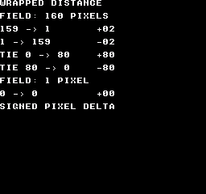
Build command
New-Item -ItemType Directory -Force .\out | Out-Null
.\kitaqfc\kitaqfc.exe .\kitaq-docs\samples\api-examples\fc\chain_wrap.c -I .\kitaqfc\lib -I .\kitaq-docs\samples -o .\out\chain_wrap.nes --mapper=nrom --nes-chr=.\kitaq-docs\samples\font.chr --no-cache --no-disasmImplementation and source
kitaqfc/lib/chain.h:39
Return target minus current along the shortest wrapped route. Supply size 1..256 and coordinates in 0..size-1; inputs are not normalized. Exactly half a field retains the direct displacement sign.
kitaqfc/lib/chain.c:103
s16 chain_wrap_delta(u8 target, u8 current, u16 size)
{
s16 delta;
s16 half;
delta = (s16)((s16)target - (s16)current);
half = (s16)(size >> 1);
// At exactly half a field, retain the sign of the direct displacement.
if (((u16)delta & 0x8000) != 0) {
if ((u16)(0 - delta) > (u16)half) delta = (s16)(delta + (s16)size);
} else if ((u16)delta > (u16)half) delta = (s16)(delta - (s16)size);
return delta;
}chain_body_init
Attach three caller-owned joint arrays and set the joint count to zero, without allocating memory.
Syntax
u8 chain_body_init(ChainBody* body, u8* x, u8* y, u8* heading, u8 capacity, u16 width, u16 height);Parameters
bodyTarget
ChainBody; null is ignored. Except for initialization, pass an initialized state.xArray of joint X coordinates.
yArray of joint Y coordinates.
headingArray of joint headings.
capacityAllocated array length, 1..255.
widthWrapped field width, 1..256.
heightWrapped field height, 1..256.
Return value
Return 1 on success or 0 for invalid arguments. Failure with a non-null body sets capacity and count to zero, disabling updates.
Conditions and limits
Include chain.h and compile chain.c exactly once. ChainBody holds each joint’s current position and heading. It is a separate state type from the Chain position-history ring.
Supply three separate writable arrays, x, y and heading, each containing capacity bytes. Keep them alive while the body is used. Index zero is the head, included in count. Do not alter storage pointers, capacity or field dimensions after initialization.
Headings use 16 clockwise sectors: 0=right, 4=down, 8=left, 12=up. Only the low four input bits are used. Screen coordinates increase rightward and downward; each dimension is 1..256 pixels.
Usage example
chain_body_init(&body,joint_x,joint_y,joint_heading,8,160,144);
// Eight caller-owned slots, including the head, on a wrapped 160x144 field.This is a calling fragment. Follow the stated initialization and buffer requirements before using it in a complete program.
Expected result
The image shows a straight body at the top, one update after a downward turn in the middle, and four updates after the turn below. Coordinates are drawn at twice their logical size. The bend travels backward from the head at the right. CGB and FC use red for the head, blue for the body and green for the tail; DMG uses black. Four settling updates separate the duplicated tail after growth. These are three views of the same eight joints, not one 24-joint body.
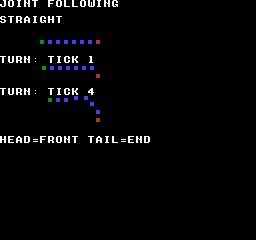
Build command
New-Item -ItemType Directory -Force .\out | Out-Null
.\kitaqfc\kitaqfc.exe .\kitaq-docs\samples\api-examples\fc\chain_body.c -I .\kitaqfc\lib -I .\kitaq-docs\samples -o .\out\chain_body.nes --mapper=nrom --nes-chr=.\kitaq-docs\samples\api-examples\fc\chain_body.chr --no-cache --no-disasmImplementation and source
kitaqfc/lib/chain.h:57
Attach three non-overlapping capacity-byte arrays. Return 1 on success. Invalid storage, zero capacity or dimensions outside 1..256 disable the body.
kitaqfc/lib/chain.c:127
u8 chain_body_init(ChainBody* body, u8* x, u8* y, u8* heading, u8 capacity, u16 width, u16 height)
{
if (body == 0) return 0;
body->x = x;
body->y = y;
body->heading = heading;
body->count = 0;
body->capacity = 0;
body->width = width;
body->height = height;
if (x == 0 || y == 0 || heading == 0 || capacity == 0) return 0;
if (width == 0 || width > 256 || height == 0 || height > 256) return 0;
body->capacity = capacity;
return 1;
}chain_body_reset
Build a straight initial pose by placing joints behind the specified head.
Syntax
u8 chain_body_reset(ChainBody* body, u8 count, u8 head_x, u8 head_y, u8 heading);Parameters
bodyTarget
ChainBody; null is ignored. Except for initialization, pass an initialized state.countJoint count including the head, 1..capacity.
head_xHead X coordinate, wrapped to the field width.
head_yHead Y coordinate, wrapped to the field height.
headingHead heading in the 16-sector system.
Return value
Return 1 on success. A zero or excessive count, or a null body, returns 0 without changing the pose.
Conditions and limits
Include chain.h and compile chain.c exactly once. ChainBody holds each joint’s current position and heading. It is a separate state type from the Chain position-history ring.
Supply three separate writable arrays, x, y and heading, each containing capacity bytes. Keep them alive while the body is used. Index zero is the head, included in count. Do not alter storage pointers, capacity or field dimensions after initialization.
Headings use 16 clockwise sectors: 0=right, 4=down, 8=left, 12=up. Only the low four input bits are used. Screen coordinates increase rightward and downward; each dimension is 1..256 pixels.
Cardinal spacing is four pixels. Intermediate headings use integer vectors such as (4,1), (3,3) and (1,4), so Euclidean distance is not exactly four pixels. The initial pose may cross a field edge.
Usage example
chain_body_reset(&body,7,48,16,0); // Seven joints, facing right.This is a calling fragment. Follow the stated initialization and buffer requirements before using it in a complete program.
Expected result
The image shows a straight body at the top, one update after a downward turn in the middle, and four updates after the turn below. Coordinates are drawn at twice their logical size. The bend travels backward from the head at the right. CGB and FC use red for the head, blue for the body and green for the tail; DMG uses black. Four settling updates separate the duplicated tail after growth. These are three views of the same eight joints, not one 24-joint body.
Build command
New-Item -ItemType Directory -Force .\out | Out-Null
.\kitaqfc\kitaqfc.exe .\kitaq-docs\samples\api-examples\fc\chain_body.c -I .\kitaqfc\lib -I .\kitaq-docs\samples -o .\out\chain_body.nes --mapper=nrom --nes-chr=.\kitaq-docs\samples\api-examples\fc\chain_body.chr --no-cache --no-disasmImplementation and source
kitaqfc/lib/chain.h:61
Seed count joints in a straight pose behind the head; count includes the head. Return 0 without changing the pose if count is zero or exceeds capacity. Coordinates wrap to the playfield and headings are masked to 0..15.
kitaqfc/lib/chain.c:143
u8 chain_body_reset(ChainBody* body, u8 count, u8 head_x, u8 head_y, u8 heading)
{
// Cache caller storage once; following math and old-heading propagation
// use these local values. Avoid decoding packed struct pointers per joint.
u8* coord_x;u8* coord_y;u8* directions;u16 width;u16 height;
u8 i;
u8 x;
u8 y;
s16 ox;
s16 oy;
if (body == 0) return 0;
if (count == 0 || count > body->capacity) return 0;
coord_x=body->x;coord_y=body->y;directions=body->heading;
width=body->width;height=body->height;
heading = (u8)(heading & 15);
x = chain_body_wrap((s16)head_x, width);
y = chain_body_wrap((s16)head_y, height);
ox = chain_body_offset_x(heading);
oy = chain_body_offset_y(heading);
i = 0;
while (i < count) {
coord_x[(__safe_index u8)i] = x;
coord_y[(__safe_index u8)i] = y;
directions[(__safe_index u8)i] = heading;
x = chain_body_wrap((s16)((s16)x - ox), width);
y = chain_body_wrap((s16)((s16)y - oy), height);
i = (u8)(i + 1);
}
body->count = count;
return 1;
}chain_body_step
Set the head pose and pull each joint gradually toward a socket behind its predecessor. Heading changes propagate by one joint per update.
Syntax
void chain_body_step(ChainBody* body, u8 head_x, u8 head_y, u8 heading);Parameters
bodyTarget
ChainBody; null is ignored. Except for initialization, pass an initialized state.head_xHead X coordinate, wrapped to the field width.
head_yHead Y coordinate, wrapped to the field height.
headingHead heading in the 16-sector system.
Return value
No return value.
Conditions and limits
Include chain.h and compile chain.c exactly once. ChainBody holds each joint’s current position and heading. It is a separate state type from the Chain position-history ring.
Supply three separate writable arrays, x, y and heading, each containing capacity bytes. Keep them alive while the body is used. Index zero is the head, included in count. Do not alter storage pointers, capacity or field dimensions after initialization.
Headings use 16 clockwise sectors: 0=right, 4=down, 8=left, 12=up. Only the low four input bits are used. Screen coordinates increase rightward and downward; each dimension is 1..256 pixels.
Use the predecessor’s updated position to find the target socket, then compute the shortest wrapped displacement on each axis. A zero displacement does not move; magnitude 1..4 moves one pixel, and magnitude 5 or more moves two. At exactly half a field, retain the original displacement sign.
Pass each joint’s saved, pre-update heading to the next joint, allowing a bend to travel through the body. An empty body is unchanged.
The caller handles head velocity, acceleration, collisions, rendering and waiting. Normally update the head first, then call chain_body_step once per simulation tick. This is joint following, not a rigid-body or exact length-constraint solver.
Usage example
chain_body_step(&body,48,20,4); // The head turns down; only joint 1 receives 4.
show_pose(8,34);
for(step=1;step<4;step++) {
chain_body_step(&body,48,(u8)(20+step),4);
}
// After four ticks, the new heading has reached joints 1 through 4.This is a calling fragment. Follow the stated initialization and buffer requirements before using it in a complete program.
Expected result
The image shows a straight body at the top, one update after a downward turn in the middle, and four updates after the turn below. Coordinates are drawn at twice their logical size. The bend travels backward from the head at the right. CGB and FC use red for the head, blue for the body and green for the tail; DMG uses black. Four settling updates separate the duplicated tail after growth. These are three views of the same eight joints, not one 24-joint body.
Build command
New-Item -ItemType Directory -Force .\out | Out-Null
.\kitaqfc\kitaqfc.exe .\kitaq-docs\samples\api-examples\fc\chain_body.c -I .\kitaqfc\lib -I .\kitaq-docs\samples -o .\out\chain_body.nes --mapper=nrom --nes-chr=.\kitaq-docs\samples\api-examples\fc\chain_body.chr --no-cache --no-disasmImplementation and source
kitaqfc/lib/chain.h:66
Install the caller's head pose, then pull joints from front to rear. Each joint aims four pixels behind its updated predecessor and receives that predecessor's OLD heading. Each axis moves 1 pixel, or 2 when error exceeds 4. Call once per simulation tick; this does not advance head physics or render.
kitaqfc/lib/chain.c:175
void chain_body_step(ChainBody* body, u8 head_x, u8 head_y, u8 heading)
{
// Cache caller storage once; following math and old-heading propagation
// use these local values. Avoid decoding packed struct pointers per joint.
u8* coord_x;u8* coord_y;u8* directions;u16 width;u16 height;
u8 i;
u8 previous;
u8 pull;
u8 old;
u8 x;
u8 y;
u8 tx;
u8 ty;
s16 sx;
s16 sy;
if (body == 0) return;
if (body->count == 0) return;
coord_x=body->x;coord_y=body->y;directions=body->heading;
width=body->width;height=body->height;
heading = (u8)(heading & 15);
coord_x[0] = chain_body_wrap((s16)head_x, width);
coord_y[0] = chain_body_wrap((s16)head_y, height);
directions[0] = heading;
pull = heading;
i = 1;
while (i < body->count) {
previous = (u8)(i - 1);
old = directions[(__safe_index u8)i];
x = coord_x[(__safe_index u8)i];
y = coord_y[(__safe_index u8)i];
tx = chain_body_wrap((s16)((s16)coord_x[(__safe_index u8)previous] - chain_body_offset_x(pull)), width);
ty = chain_body_wrap((s16)((s16)coord_y[(__safe_index u8)previous] - chain_body_offset_y(pull)), height);
sx = chain_body_correction(chain_wrap_delta(tx, x, width));
sy = chain_body_correction(chain_wrap_delta(ty, y, height));
directions[(__safe_index u8)i] = pull;
coord_x[(__safe_index u8)i] = chain_body_wrap((s16)((s16)x + sx), width);
coord_y[(__safe_index u8)i] = chain_body_wrap((s16)((s16)y + sy), height);
// Save before overwriting: a bend advances by one joint per update.
pull = old;
i = (u8)(i + 1);
}
}chain_body_grow
Copy the tail’s current position and heading into the next free slot and increase the count by one.
Syntax
u8 chain_body_grow(ChainBody* body);Parameters
bodyTarget
ChainBody; null is ignored. Except for initialization, pass an initialized state.
Return value
Return 1 if a joint was appended; return 0 for an empty, full, disabled or null body.
Conditions and limits
Include chain.h and compile chain.c exactly once. ChainBody holds each joint’s current position and heading. It is a separate state type from the Chain position-history ring.
Supply three separate writable arrays, x, y and heading, each containing capacity bytes. Keep them alive while the body is used. Index zero is the head, included in count. Do not alter storage pointers, capacity or field dimensions after initialization.
Headings use 16 clockwise sectors: 0=right, 4=down, 8=left, 12=up. Only the low four input bits are used. Screen coordinates increase rightward and downward; each dimension is 1..256 pixels.
The new tail initially overlaps the previous tail, then separates during subsequent chain_body_step calls. Growth itself does not move the head or other joints.
Usage example
chain_body_grow(&body); // Copy the tail pose into the eighth slot.
chain_body_step(&body,48,16,0);
chain_body_step(&body,48,16,0);
chain_body_step(&body,48,16,0);
chain_body_step(&body,48,16,0); // Allow the duplicated tail to separate.This is a calling fragment. Follow the stated initialization and buffer requirements before using it in a complete program.
Expected result
The image shows a straight body at the top, one update after a downward turn in the middle, and four updates after the turn below. Coordinates are drawn at twice their logical size. The bend travels backward from the head at the right. CGB and FC use red for the head, blue for the body and green for the tail; DMG uses black. Four settling updates separate the duplicated tail after growth. These are three views of the same eight joints, not one 24-joint body.
Build command
New-Item -ItemType Directory -Force .\out | Out-Null
.\kitaqfc\kitaqfc.exe .\kitaq-docs\samples\api-examples\fc\chain_body.c -I .\kitaqfc\lib -I .\kitaq-docs\samples -o .\out\chain_body.nes --mapper=nrom --nes-chr=.\kitaq-docs\samples\api-examples\fc\chain_body.chr --no-cache --no-disasmImplementation and source
kitaqfc/lib/chain.h:69
Append a copy of the current tail; later steps separate the new joint. Return 1 on growth, or 0 for an empty, disabled or full body.
kitaqfc/lib/chain.c:218
u8 chain_body_grow(ChainBody* body)
{
u8 tail;
u8 next;
if (body == 0) return 0;
next = body->count;
if (next == 0 || next >= body->capacity) return 0;
tail = (u8)(next - 1);
body->x[(__safe_index u8)next] = body->x[(__safe_index u8)tail];
body->y[(__safe_index u8)next] = body->y[(__safe_index u8)tail];
body->heading[(__safe_index u8)next] = body->heading[(__safe_index u8)tail];
body->count = (u8)(next + 1);
return 1;
}chain_body_clear
Set the joint count to zero while retaining the arrays and field settings.
Syntax
void chain_body_clear(ChainBody* body);Parameters
bodyTarget
ChainBody; null is ignored. Except for initialization, pass an initialized state.
Return value
No return value.
Conditions and limits
Include chain.h and compile chain.c exactly once. ChainBody holds each joint’s current position and heading. It is a separate state type from the Chain position-history ring.
Supply three separate writable arrays, x, y and heading, each containing capacity bytes. Keep them alive while the body is used. Index zero is the head, included in count. Do not alter storage pointers, capacity or field dimensions after initialization.
Headings use 16 clockwise sectors: 0=right, 4=down, 8=left, 12=up. Only the low four input bits are used. Screen coordinates increase rightward and downward; each dimension is 1..256 pixels.
Array bytes are not erased. Use chain_body_reset to start again; calling chain_body_grow immediately after clearing does not append a joint.
Usage example
chain_body_clear(&body); // Forget the pose; the three arrays remain owned by us.This is a calling fragment. Follow the stated initialization and buffer requirements before using it in a complete program.
Expected result
The image shows a straight body at the top, one update after a downward turn in the middle, and four updates after the turn below. Coordinates are drawn at twice their logical size. The bend travels backward from the head at the right. CGB and FC use red for the head, blue for the body and green for the tail; DMG uses black. Four settling updates separate the duplicated tail after growth. These are three views of the same eight joints, not one 24-joint body.
Build command
New-Item -ItemType Directory -Force .\out | Out-Null
.\kitaqfc\kitaqfc.exe .\kitaq-docs\samples\api-examples\fc\chain_body.c -I .\kitaqfc\lib -I .\kitaq-docs\samples -o .\out\chain_body.nes --mapper=nrom --nes-chr=.\kitaq-docs\samples\api-examples\fc\chain_body.chr --no-cache --no-disasmImplementation and source
kitaqfc/lib/chain.h:71
Remove all joints while retaining caller-owned storage and playfield settings.
kitaqfc/lib/chain.c:233
void chain_body_clear(ChainBody* body)
{
if (body == 0) return;
body->count = 0;
}chain_clear
Forget the recorded history so the same backing array can be reused.
Syntax
void chain_clear(Chain* chain);Parameters
chainPointer to the initialized
Chain.
Return value
No return value.
Conditions and limits
Resets the count and head to zero without erasing or freeing the backing array. The caller owns both Chain and its point array and must keep them alive. Use a capacity no greater than 128 to avoid overflow in the reader’s eight-bit index addition.
The FC version does nothing when chain == 0.
Usage example
chain_clear(&trail);result[11]=chain_get_count(&trail);This is a calling fragment. Follow the stated initialization and buffer requirements before using it in a complete program.
Expected result
The sample clears a four-point history and verifies that its count becomes zero.
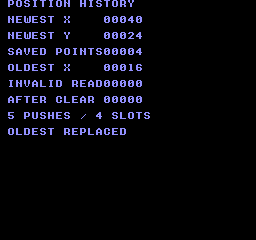
Build command
New-Item -ItemType Directory -Force .\out | Out-Null
.\kitaqfc\kitaqfc.exe .\kitaq-docs\samples\api-examples\fc\batch_chain.c -I .\kitaqfc\lib -I .\kitaq-docs\samples -o .\out\batch_chain.nes --no-cache --no-disasm --mapper=nrom --nes-chr=.\kitaq-docs\samples\font.chrImplementation and source
kitaqfc/lib/chain.h:24
Forget the recorded points without clearing or freeing the backing storage.
kitaqfc/lib/chain.c:16
void chain_clear(Chain* chain)
{
if (chain == 0) return;
chain->count = 0;
chain->head = 0;
}chain_get_count
Read the number of positions currently available in the history.
Syntax
u8 chain_get_count(const Chain* chain);Parameters
chainPointer to the initialized
Chain.
Return value
Returns a count from zero through capacity, or zero for a null chain.
Conditions and limits
The caller owns both Chain and its point array and must keep them alive. Use a capacity no greater than 128 to avoid overflow in the reader’s eight-bit index addition.
Usage example
result[4]=chain_get_count(&trail);This is a calling fragment. Follow the stated initialization and buffer requirements before using it in a complete program.
Expected result
After five pushes into four slots the count remains four. It becomes zero after clearing and stays zero for a zero-capacity history.
Build command
New-Item -ItemType Directory -Force .\out | Out-Null
.\kitaqfc\kitaqfc.exe .\kitaq-docs\samples\api-examples\fc\batch_chain.c -I .\kitaqfc\lib -I .\kitaq-docs\samples -o .\out\batch_chain.nes --no-cache --no-disasm --mapper=nrom --nes-chr=.\kitaq-docs\samples\font.chrImplementation and source
kitaqfc/lib/chain.h:33
Return the number of stored points, or zero for a null chain.
kitaqfc/lib/chain.c:66
u8 chain_get_count(const Chain* chain)
{
if (chain == 0) return 0;
return chain->count;
}chain_get_segment
Read a stored position by its age in the history.
Syntax
u8 chain_get_segment(const Chain* chain, u8 index, ChainPoint* out);Parameters
chainPointer to the initialized
Chain.indexPoint age: 0 is newest and
count - 1is oldest retained.outSeparate writable
ChainPointfor the result; null causes failure.
Return value
Returns 1 on success or 0 for an invalid request. A non-null out is cleared to (0,0) before validation.
Conditions and limits
Do not alias out with the backing array or Chain: clearing the output would destroy source data. The caller owns both Chain and its point array and must keep them alive. Use a capacity no greater than 128 to avoid overflow in the reader’s eight-bit index addition.
Usage example
result[1]=chain_get_segment(&trail,0,&point);result[2]=point.x;result[3]=point.y;This is a calling fragment. Follow the stated initialization and buffer requirements before using it in a complete program.
Expected result
Index 0 reads newest (40,24), index 3 reads oldest (16,8), and invalid index 4 returns failure with output (0,0).
Build command
New-Item -ItemType Directory -Force .\out | Out-Null
.\kitaqfc\kitaqfc.exe .\kitaq-docs\samples\api-examples\fc\batch_chain.c -I .\kitaqfc\lib -I .\kitaq-docs\samples -o .\out\batch_chain.nes --no-cache --no-disasm --mapper=nrom --nes-chr=.\kitaq-docs\samples\font.chrImplementation and source
kitaqfc/lib/chain.h:31
Read a point by age, with index zero denoting the newest point. Return zero for an invalid request and clear a non-null output first. Keep head + index within the 8-bit range: addition is narrowed before the capacity wrap.
kitaqfc/lib/chain.c:42
u8 chain_get_segment(const Chain* chain, u8 index, ChainPoint* out)
{
u8 pos;
// Do not alias out with the backing ring: it is cleared before the requested point is read.
if (out != 0) {
out->x = 0;
out->y = 0;
}
if (out == 0) return 0;
if (chain == 0) return 0;
if (chain->capacity == 0) return 0;
if (index >= chain->count) return 0;
pos = (u8)(chain->head + index);
while (pos >= chain->capacity) {
pos = (u8)(pos - chain->capacity);
}
out->x = chain->points[(__safe_index u8)pos].x;
out->y = chain->points[(__safe_index u8)pos].y;
return 1;
}chain_init
Attach storage to a circular position history and start with no recorded points.
Syntax
void chain_init(Chain* chain, ChainPoint* storage, u8 capacity);Parameters
chainWritable
Chainto initialize.storageArray with room for
capacityChainPointentries.capacityNumber of point slots. Use 1–128 for a usable history; zero disables recording.
Return value
No return value.
Conditions and limits
The caller owns both Chain and its point array and must keep them alive. Use a capacity no greater than 128 to avoid overflow in the reader’s eight-bit index addition.
The FC version does nothing when chain == 0.
Usage example
chain_init(&trail,storage,4);result[0]=chain_get_count(&trail);This is a calling fragment. Follow the stated initialization and buffer requirements before using it in a complete program.
Expected result
The example attaches four point slots and checks that the initial count is zero.
Build command
New-Item -ItemType Directory -Force .\out | Out-Null
.\kitaqfc\kitaqfc.exe .\kitaq-docs\samples\api-examples\fc\batch_chain.c -I .\kitaqfc\lib -I .\kitaq-docs\samples -o .\out\batch_chain.nes --no-cache --no-disasm --mapper=nrom --nes-chr=.\kitaq-docs\samples\font.chrImplementation and source
kitaqfc/lib/chain.h:22
Attach caller-owned ring storage and start with no recorded points. The storage must remain valid for the lifetime of the chain.
kitaqfc/lib/chain.c:5
void chain_init(Chain* chain, ChainPoint* storage, u8 capacity)
{
if (chain == 0) return;
// A nonzero capacity requires writable storage for that many complete ChainPoint records.
chain->points = storage;
chain->capacity = capacity;
chain->count = 0;
chain->head = 0;
}chain_push_head
Add the newest position at the head of the history, replacing the oldest point when full.
Syntax
void chain_push_head(Chain* chain, s16 x, s16 y);Parameters
chainPointer to the initialized
Chain.xSigned X coordinate of the new point.
ySigned Y coordinate of the new point.
Return value
No return value.
Conditions and limits
A null chain or zero capacity is a no-op. The caller owns both Chain and its point array and must keep them alive. Use a capacity no greater than 128 to avoid overflow in the reader’s eight-bit index addition.
Usage example
chain_push_head(&trail,8,8);chain_push_head(&trail,16,8);chain_push_head(&trail,24,16);chain_push_head(&trail,32,16);chain_push_head(&trail,40,24);This is a calling fragment. Follow the stated initialization and buffer requirements before using it in a complete program.
Expected result
Five pushes into four slots leave (40,24) as the newest point and (16,8) as the oldest retained point; the original (8,8) is replaced.
Build command
New-Item -ItemType Directory -Force .\out | Out-Null
.\kitaqfc\kitaqfc.exe .\kitaq-docs\samples\api-examples\fc\batch_chain.c -I .\kitaqfc\lib -I .\kitaq-docs\samples -o .\out\batch_chain.nes --no-cache --no-disasm --mapper=nrom --nes-chr=.\kitaq-docs\samples\font.chrImplementation and source
kitaqfc/lib/chain.h:27
Move the ring head backward and store the newest point. Once full, each push replaces the oldest point; zero capacity is a no-op.
kitaqfc/lib/chain.c:25
void chain_push_head(Chain* chain, s16 x, s16 y)
{
if (chain == 0) return;
if (chain->capacity == 0) return;
if (chain->head == 0) chain->head = (u8)(chain->capacity - 1);
else chain->head = (u8)(chain->head - 1);
chain->points[(__safe_index u8)chain->head].x = x;
chain->points[(__safe_index u8)chain->head].y = y;
if (chain->count < chain->capacity) chain->count = (u8)(chain->count + 1);
}collision.h — Rectangle and other collision tests
Test box/box and box/point overlap in FC world coordinates using unsigned 16-bit positions.
nes_box16_contains_point
Test whether a point is inside an FC rectangle, including left/top edges and excluding right/bottom edges.
Syntax
unsigned char nes_box16_contains_point(struct NesBox16* box, unsigned short px, unsigned short py);Parameters
boxReadable
NesBox16; do not pass null.pxUnsigned 16-bit point X coordinate.
pyUnsigned 16-bit point Y coordinate.
Return value
Returns 1 inside, 0 outside.
Conditions and limits
x, y are unsigned 16-bit coordinates; width and height are bytes. Use positive dimensions and keep edge sums no greater than 65535. This does not handle rectangles crossing coordinate wraparound.
Usage example
result[6]=nes_box16_contains_point(&na,9,1);This is a calling fragment. Follow the stated initialization and buffer requirements before using it in a complete program.
Expected result
Each coordinate unit occupies one tile. Rectangles A at (1,1) and B at (5,4) are both 8×6. A-only cells show A, B-only cells show B, and the 4×3 overlap shows 12 O cells. A’s right edge x=9 is excluded. On CGB, A is red, B blue and O green.
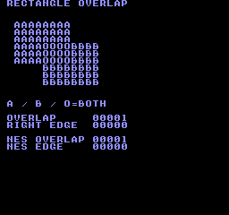
Build command
New-Item -ItemType Directory -Force .\out | Out-Null
.\kitaqfc\kitaqfc.exe .\kitaq-docs\samples\api-examples\fc\batch_geometry.c -I .\kitaqfc\lib -I .\kitaq-docs\samples -o .\out\batch_geometry.nes --no-cache --no-disasm --mapper=nrom --nes-chr=.\kitaq-docs\samples\font.chrImplementation and source
kitaqfc/lib/collision.h:18
Test a half-open box: left/top edges are included and right/bottom edges excluded. Callers provide valid pointers and non-overflowing edge coordinates.
kitaqfc/lib/collision.c:49
unsigned char nes_box16_contains_point(struct NesBox16* box, unsigned short px, unsigned short py)
{
unsigned short right;
unsigned short bottom;
right = (unsigned short)(box->x + box->w);
bottom = (unsigned short)(box->y + box->h);
if (px < box->x)
{
return 0;
}
if (py < box->y)
{
return 0;
}
if (px >= right)
{
return 0;
}
if (py >= bottom)
{
return 0;
}
return 1;
}nes_box16_intersects
Test positive-area overlap between two FC rectangles passed by pointer.
Syntax
unsigned char nes_box16_intersects(struct NesBox16* a, struct NesBox16* b);Parameters
aReadable first
NesBox16; do not pass null.bReadable second
NesBox16.
Return value
Returns 1 for overlap and 0 for separation or edge contact.
Conditions and limits
x, y are unsigned 16-bit coordinates; width and height are bytes. Use positive dimensions and keep edge sums no greater than 65535. This does not handle rectangles crossing coordinate wraparound.
Usage example
result[5]=nes_box16_intersects(&na,&nb);This is a calling fragment. Follow the stated initialization and buffer requirements before using it in a complete program.
Expected result
Each coordinate unit occupies one tile. Rectangles A at (1,1) and B at (5,4) are both 8×6. A-only cells show A, B-only cells show B, and the 4×3 overlap shows 12 O cells. A’s right edge x=9 is excluded. On CGB, A is red, B blue and O green.
Build command
New-Item -ItemType Directory -Force .\out | Out-Null
.\kitaqfc\kitaqfc.exe .\kitaq-docs\samples\api-examples\fc\batch_geometry.c -I .\kitaqfc\lib -I .\kitaq-docs\samples -o .\out\batch_geometry.nes --no-cache --no-disasm --mapper=nrom --nes-chr=.\kitaq-docs\samples\font.chrImplementation and source
kitaqfc/lib/collision.h:15
Test two axis-aligned world boxes using exclusive right/bottom edges. Coordinate-plus-size sums must fit u16; touching edges return false. Both boxes must have positive dimensions; the overlap test has no separate empty-box guard.
kitaqfc/lib/collision.c:15
unsigned char nes_box16_intersects(struct NesBox16* a, struct NesBox16* b)
{
unsigned short a_right;
unsigned short b_right;
unsigned short a_bottom;
unsigned short b_bottom;
a_right = (unsigned short)(a->x + a->w);
b_right = (unsigned short)(b->x + b->w);
a_bottom = (unsigned short)(a->y + a->h);
b_bottom = (unsigned short)(b->y + b->h);
if (a_right <= b->x)
{
return 0;
}
if (b_right <= a->x)
{
return 0;
}
if (a_bottom <= b->y)
{
return 0;
}
if (b_bottom <= a->y)
{
return 0;
}
return 1;
}danmaku — A 64-bullet pool
danmaku is a 64-bullet fixed-point pool. Initialize it, spawn bullets, call step for movement and collisions, call draw to build OAM, then perform DMA in VBlank. Handle player input, damage, scoring and audio in game code. The sample uploads an original diamond tile to CHR RAM; the library itself can also use CHR ROM sprites.
danmaku_reset
Deactivate every bullet and reset hit/graze events, peak and lifetime counts, and allocation/draw-order cursors.
Syntax
void danmaku_reset(void);Return value
No return value.
Conditions and limits
Player position and dm_invulnerable are preserved. OAM and the display are not cleared; draw the empty pool and perform DMA, or hide OAM separately, to remove visible bullets.
Reserve writable cartridge PRG RAM at $6000–$627F (640 bytes) for 64 bullets. Enable that RAM in the cartridge mapper. Shared state makes this library non-reentrant.
dm_count is the live bullet count and dm_peak its high-water mark. The 16-bit dm_spawned and dm_rejected counters track successful and failed spawns and wrap after 65535. dm_x and dm_y are center coordinates; ignore their values when dm_active is zero.
KUROSAKI checks four compiler configurations against all pixels, bullet counts and positions, reserved OAM and rotating draw order. Separate numeric checks cover hits, grazing, offscreen removal and a full pool. Hardware has not been tested.
Usage example
danmaku_reset();This is a calling fragment. Follow the stated initialization and buffer requirements before using it in a complete program.
Expected result
The four yellow bullets on the left have moved 16 pixels in the cardinal directions from (48,64). The sixteen yellow bullets on the right form a ring roughly 32 pixels from (160,104). The cyan player at (112,192) owns reserved OAM slot zero. This example holds the image after sixteen logic updates.
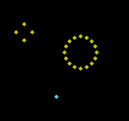
Build command
New-Item -ItemType Directory -Force .\out | Out-Null
.\kitaqfc\kitaqfc.exe .\kitaq-docs\samples\api-examples\fc\danmaku_patterns.c -I .\kitaqfc\lib --mapper=nrom --nes-chr-ram -o .\out\danmaku_patterns.nes --no-cache --no-disasm
.\kurosaki\kurosaki.exe run .\out\danmaku_patterns.nes --headless --frames 180 --png .\out\danmaku_patterns.pngImplementation and source
kitaqfc/lib/danmaku.h:26
Reset the pool, counters and rotating OAM priority. Player settings survive.
kitaqfc/lib/danmaku.c:40
void danmaku_reset(void) {
danmaku_clear();
dm_peak=0;dm_spawned=0;dm_rejected=0;dm_cursor=0;dm_draw_phase=0;
}danmaku_clear
Deactivate every bullet and zero dm_count, dm_hit and dm_graze. Use this to remove bullets during play.
Syntax
void danmaku_clear(void);Return value
No return value.
Conditions and limits
Preserve dm_peak, dm_spawned, dm_rejected, allocation and draw-order cursors, and player settings. The sample spawns one bullet and clears it: the live count becomes zero while the lifetime spawn count remains one. Update OAM separately.
Reserve writable cartridge PRG RAM at $6000–$627F (640 bytes) for 64 bullets. Enable that RAM in the cartridge mapper. Shared state makes this library non-reentrant.
dm_count is the live bullet count and dm_peak its high-water mark. The 16-bit dm_spawned and dm_rejected counters track successful and failed spawns and wrap after 65535. dm_x and dm_y are center coordinates; ignore their values when dm_active is zero.
KUROSAKI checks four compiler configurations against all pixels, bullet counts and positions, reserved OAM and rotating draw order. Separate numeric checks cover hits, grazing, offscreen removal and a full pool. Hardware has not been tested.
Usage example
danmaku_clear();This is a calling fragment. Follow the stated initialization and buffer requirements before using it in a complete program.
Expected result
The four yellow bullets on the left have moved 16 pixels in the cardinal directions from (48,64). The sixteen yellow bullets on the right form a ring roughly 32 pixels from (160,104). The cyan player at (112,192) owns reserved OAM slot zero. This example holds the image after sixteen logic updates.
Build command
New-Item -ItemType Directory -Force .\out | Out-Null
.\kitaqfc\kitaqfc.exe .\kitaq-docs\samples\api-examples\fc\danmaku_patterns.c -I .\kitaqfc\lib --mapper=nrom --nes-chr-ram -o .\out\danmaku_patterns.nes --no-cache --no-disasm
.\kurosaki\kurosaki.exe run .\out\danmaku_patterns.nes --headless --frames 180 --png .\out\danmaku_patterns.pngImplementation and source
kitaqfc/lib/danmaku.h:28
Remove all bullets and step events; preserve lifetime/peak counters.
kitaqfc/lib/danmaku.c:35
void danmaku_clear(void) {
u8 i;
for(i=0;i<64;i++)dm_active[i]=0;
dm_count=0;dm_hit=0;dm_graze=0;
}danmaku_spawn
Search the pool cyclically for one free slot and initialize its position, velocity and ungrazed state. Spawning alone does not move it or test collisions.
Syntax
u8 danmaku_spawn(u8 x, u8 y, s8 vx, s8 vy);Parameters
xHorizontal center in pixels; accepted values are 8 through 247.
yVertical center in pixels; accepted values are 24 through 231.
vxHorizontal velocity in signed Q4.4. A value of 16 moves one pixel per update; −16 moves one pixel in the opposite direction. Values −128..127 represent −8..+7.9375 pixels.
vyVertical velocity in signed Q4.4. A value of 16 moves one pixel per update; −16 moves one pixel in the opposite direction. Values −128..127 represent −8..+7.9375 pixels.
Return value
Return 1 on success, or 0 for an invalid position or a full 64-slot pool. Success increments dm_count and dm_spawned and updates dm_peak as needed; failure increments dm_rejected.
Conditions and limits
Reserve writable cartridge PRG RAM at $6000–$627F (640 bytes) for 64 bullets. Enable that RAM in the cartridge mapper. Shared state makes this library non-reentrant.
dm_count is the live bullet count and dm_peak its high-water mark. The 16-bit dm_spawned and dm_rejected counters track successful and failed spawns and wrap after 65535. dm_x and dm_y are center coordinates; ignore their values when dm_active is zero.
KUROSAKI checks four compiler configurations against all pixels, bullet counts and positions, reserved OAM and rotating draw order. Separate numeric checks cover hits, grazing, offscreen removal and a full pool. Hardware has not been tested.
Usage example
danmaku_spawn(48,64,16,0);This is a calling fragment. Follow the stated initialization and buffer requirements before using it in a complete program.
Expected result
The four yellow bullets on the left have moved 16 pixels in the cardinal directions from (48,64). The sixteen yellow bullets on the right form a ring roughly 32 pixels from (160,104). The cyan player at (112,192) owns reserved OAM slot zero. This example holds the image after sixteen logic updates.
Build command
New-Item -ItemType Directory -Force .\out | Out-Null
.\kitaqfc\kitaqfc.exe .\kitaq-docs\samples\api-examples\fc\danmaku_patterns.c -I .\kitaqfc\lib --mapper=nrom --nes-chr-ram -o .\out\danmaku_patterns.nes --no-cache --no-disasm
.\kurosaki\kurosaki.exe run .\out\danmaku_patterns.nes --headless --frames 180 --png .\out\danmaku_patterns.pngImplementation and source
kitaqfc/lib/danmaku.h:31
Allocate a bullet at pixel-center x/y with signed 1/16-pixel velocities. Return one on success, zero outside the playfield or when all 64 slots are full.
kitaqfc/lib/danmaku.c:44
u8 danmaku_spawn(u8 x,u8 y,s8 vx,s8 vy) {
u8 i,n;
if(x<8 || x>=248 || y<24 || y>=232){dm_rejected++;return 0;}
i=dm_cursor;
for(n=0;n<64;n++) {
if(dm_active[i]==0) {
dm_x[i]=x;dm_y[i]=y;dm_fraction_x[i]=0;dm_fraction_y[i]=0;
// Expand signed Q4.4 to a two-byte two's-complement Q8.8 step.
dm_vx_integer[i]=(u8)((s16)vx>>4);dm_vx_fraction[i]=(u8)((u8)vx<<4);
dm_vy_integer[i]=(u8)((s16)vy>>4);dm_vy_fraction[i]=(u8)((u8)vy<<4);
dm_grazed[i]=0;dm_active[i]=1;dm_cursor=(u8)((i+1)&63);
dm_count++;if(dm_count>dm_peak)dm_peak=dm_count;
dm_spawned++;return 1;
}
i=(u8)((i+1)&63);
}
dm_rejected++;return 0;
}danmaku_fan
Spawn bullets while advancing direction by a fixed step. The step and count can produce a fan or a full ring.
Syntax
void danmaku_fan(u8 x, u8 y, u8 direction, u8 step, u8 count, u8 speed);Parameters
xHorizontal center in pixels; accepted values are 8 through 247.
yVertical center in pixels; accepted values are 24 through 231.
directionInitial direction in 32 steps per turn: 0 right, 8 down, 16 left, 24 up. Only the low five bits are used.
stepDirection increment after each bullet, wrapping modulo 32. Zero sends every bullet in the same direction.
countNumber of spawn attempts. Values above 64 are clamped to 64; zero does nothing.
speedSpeed magnitude in sixteenths of a pixel per update: 16 is one pixel and 32 is two. Values above 64 are clamped to 64.
Return value
No return value.
Conditions and limits
Velocities come from an integer sine table and truncate toward zero, so diagonal speeds and radii are quantized. A full pool does not cancel remaining attempts; each failure increments dm_rejected.
Reserve writable cartridge PRG RAM at $6000–$627F (640 bytes) for 64 bullets. Enable that RAM in the cartridge mapper. Shared state makes this library non-reentrant.
dm_count is the live bullet count and dm_peak its high-water mark. The 16-bit dm_spawned and dm_rejected counters track successful and failed spawns and wrap after 65535. dm_x and dm_y are center coordinates; ignore their values when dm_active is zero.
KUROSAKI checks four compiler configurations against all pixels, bullet counts and positions, reserved OAM and rotating draw order. Separate numeric checks cover hits, grazing, offscreen removal and a full pool. Hardware has not been tested.
Usage example
danmaku_fan(160,104,0,2,16,32);This is a calling fragment. Follow the stated initialization and buffer requirements before using it in a complete program.
Expected result
The four yellow bullets on the left have moved 16 pixels in the cardinal directions from (48,64). The sixteen yellow bullets on the right form a ring roughly 32 pixels from (160,104). The cyan player at (112,192) owns reserved OAM slot zero. This example holds the image after sixteen logic updates.
Build command
New-Item -ItemType Directory -Force .\out | Out-Null
.\kitaqfc\kitaqfc.exe .\kitaq-docs\samples\api-examples\fc\danmaku_patterns.c -I .\kitaqfc\lib --mapper=nrom --nes-chr-ram -o .\out\danmaku_patterns.nes --no-cache --no-disasm
.\kurosaki\kurosaki.exe run .\out\danmaku_patterns.nes --headless --frames 180 --png .\out\danmaku_patterns.pngImplementation and source
kitaqfc/lib/danmaku.h:34
Emit up to 64 bullets. Angles wrap in 32 steps: 0 right, 8 down, 16 left, 24 up. Speed is in 1/16 pixel, clamped to 64. Each failed allocation counts.
kitaqfc/lib/danmaku.c:62
void danmaku_fan(u8 x,u8 y,u8 direction,u8 step,u8 count,u8 speed) {
u8 i,angle;s16 vx,vy;
if(count>64)count=64;if(speed>64)speed=64;
angle=(u8)(direction&31);
for(i=0;i<count;i++) {
vx=(s16)Danmaku_Sin[(u8)((angle+8)&31)]*(s16)speed;
vy=(s16)Danmaku_Sin[angle]*(s16)speed;
danmaku_spawn(x,y,(s8)(vx/64),(s8)(vy/64));
angle=(u8)((angle+step)&31);
}
}danmaku_step
Advance each live bullet once, remove offscreen bullets and evaluate player hits and grazing. Bullet time advances with calls, not elapsed wall-clock time.
Syntax
void danmaku_step(void);Return value
No return value.
Conditions and limits
Set dm_player_x and dm_player_y to the player center before calling. After movement, distances of at most three pixels on both axes count as a hit. If dm_invulnerable is zero, set dm_hit to one and remove the bullet; invulnerability leaves it alive.
Outside the hit box, distances of at most eleven pixels on both axes produce one graze per bullet. dm_hit and dm_graze are reset at entry and describe only this update. A bullet inside the hit box while the player is invulnerable does not count as a graze.
This function neither writes OAM nor calls damage or sound callbacks. Read dm_hit and dm_graze and update player state or scoring in game code.
Reserve writable cartridge PRG RAM at $6000–$627F (640 bytes) for 64 bullets. Enable that RAM in the cartridge mapper. Shared state makes this library non-reentrant.
dm_count is the live bullet count and dm_peak its high-water mark. The 16-bit dm_spawned and dm_rejected counters track successful and failed spawns and wrap after 65535. dm_x and dm_y are center coordinates; ignore their values when dm_active is zero.
KUROSAKI checks four compiler configurations against all pixels, bullet counts and positions, reserved OAM and rotating draw order. Separate numeric checks cover hits, grazing, offscreen removal and a full pool. Hardware has not been tested.
Usage example
danmaku_step();This is a calling fragment. Follow the stated initialization and buffer requirements before using it in a complete program.
Expected result
The four yellow bullets on the left have moved 16 pixels in the cardinal directions from (48,64). The sixteen yellow bullets on the right form a ring roughly 32 pixels from (160,104). The cyan player at (112,192) owns reserved OAM slot zero. This example holds the image after sixteen logic updates.
Build command
New-Item -ItemType Directory -Force .\out | Out-Null
.\kitaqfc\kitaqfc.exe .\kitaq-docs\samples\api-examples\fc\danmaku_patterns.c -I .\kitaqfc\lib --mapper=nrom --nes-chr-ram -o .\out\danmaku_patterns.nes --no-cache --no-disasm
.\kurosaki\kurosaki.exe run .\out\danmaku_patterns.nes --headless --frames 180 --png .\out\danmaku_patterns.pngImplementation and source
kitaqfc/lib/danmaku.h:38
Move all live bullets once. Remove offscreen/hitting bullets. Hit uses a +/-3-pixel box; graze uses +/-11, once per bullet. Events describe this step. This updates logic only; it neither writes OAM nor calls a game damage handler.
kitaqfc/lib/danmaku.c:73
void danmaku_step(void) {
// Byte arrays let the 6502 move every slot without multiplying a structure
// index. Carry propagates fractional motion into the signed integer step.
__asm {
LDX #0
STX dm_count
STX dm_hit
STX dm_graze
dm_tick_loop:
LDA dm_active,X
BNE dm_tick_live
JMP dm_tick_next
dm_tick_live:
CLC
LDA dm_fraction_x,X
ADC dm_vx_fraction,X
STA dm_fraction_x,X
LDA dm_x,X
ADC dm_vx_integer,X
STA dm_x,X
CMP #8
BCC dm_tick_kill
CMP #248
BCS dm_tick_kill
CLC
LDA dm_fraction_y,X
ADC dm_vy_fraction,X
STA dm_fraction_y,X
LDA dm_y,X
ADC dm_vy_integer,X
STA dm_y,X
CMP #24
BCC dm_tick_kill
CMP #232
BCS dm_tick_kill
// Unsigned absolute distances avoid false collisions across screen wrap.
LDA dm_x,X
SEC
SBC dm_player_x
BCS dm_tick_dx
EOR #255
CLC
ADC #1
dm_tick_dx:
STA dm_distance_x
LDA dm_y,X
SEC
SBC dm_player_y
BCS dm_tick_dy
EOR #255
CLC
ADC #1
dm_tick_dy:
STA dm_distance_y
CMP #4
BCS dm_tick_graze
LDA dm_distance_x
CMP #4
BCS dm_tick_graze
LDA dm_invulnerable
BNE dm_tick_count
LDA #1
STA dm_hit
dm_tick_kill:
LDA #0
STA dm_active,X
JMP dm_tick_next
dm_tick_graze:
LDA dm_grazed,X
BNE dm_tick_count
LDA dm_distance_x
CMP #12
BCS dm_tick_count
LDA dm_distance_y
CMP #12
BCS dm_tick_count
LDA #1
STA dm_grazed,X
INC dm_graze
dm_tick_count:
INC dm_count
dm_tick_next:
INX
CPX #64
BEQ dm_tick_done
JMP dm_tick_loop
dm_tick_done:
}
}danmaku_draw
Build 8×8 sprites from bullet centers and write the requested shadow-OAM range, without moving bullets or testing collisions.
Syntax
u8 danmaku_draw(u8 first_oam, u8 slots, u8 tile, u8 attributes);Parameters
first_oamFirst OAM slot (0..63). Values of 64 or more return zero without writing. The sample starts at one to reserve slot zero for the player.
slotsNumber of consecutive available slots, clamped to 64−first_oam. Zero writes nothing but still advances draw priority.
tile8×8 pattern tile shared by all bullets. Configure 8×8 sprite mode; this call uses the same shape for every bullet.
attributesNES sprite attributes shared by all bullets: bits 0–1 palette, bit 5 behind background, bit 6 horizontal flip, bit 7 vertical flip.
Return value
Return the number of bullets written to OAM: the smaller of the live count and available slots.
Conditions and limits
Advance the starting bullet slot by 13 modulo 64 on each call so fixed bullets do not always get priority. Hide unused slots within the requested range with Y=240, preserving OAM outside that range.
Subtract four from center X and five from center Y; the hardware adds one to OAM Y, centering the sprite. Call __oam_dma during VBlank yourself. The hardware limit of eight sprites per scanline still applies.
Reserve writable cartridge PRG RAM at $6000–$627F (640 bytes) for 64 bullets. Enable that RAM in the cartridge mapper. Shared state makes this library non-reentrant.
dm_count is the live bullet count and dm_peak its high-water mark. The 16-bit dm_spawned and dm_rejected counters track successful and failed spawns and wrap after 65535. dm_x and dm_y are center coordinates; ignore their values when dm_active is zero.
KUROSAKI checks four compiler configurations against all pixels, bullet counts and positions, reserved OAM and rotating draw order. Separate numeric checks cover hits, grazing, offscreen removal and a full pool. Hardware has not been tested.
Usage example
bullet_result[9]=danmaku_draw(1,24,1,0);This is a calling fragment. Follow the stated initialization and buffer requirements before using it in a complete program.
Expected result
The four yellow bullets on the left have moved 16 pixels in the cardinal directions from (48,64). The sixteen yellow bullets on the right form a ring roughly 32 pixels from (160,104). The cyan player at (112,192) owns reserved OAM slot zero. This example holds the image after sixteen logic updates.
Build command
New-Item -ItemType Directory -Force .\out | Out-Null
.\kitaqfc\kitaqfc.exe .\kitaq-docs\samples\api-examples\fc\danmaku_patterns.c -I .\kitaqfc\lib --mapper=nrom --nes-chr-ram -o .\out\danmaku_patterns.nes --no-cache --no-disasm
.\kurosaki\kurosaki.exe run .\out\danmaku_patterns.nes --headless --frames 180 --png .\out\danmaku_patterns.pngImplementation and source
kitaqfc/lib/danmaku.h:43
Write up to slots consecutive shadow-OAM entries starting at first_oam. Rotate bullet priority by 13 modulo 64 and hide unused entries in that range. tile is an 8x8 sprite centered at (4,4). Return the number emitted. DMA is caller-owned and belongs in VBlank. Hardware's eight-per-scanline limit remains.
kitaqfc/lib/danmaku.c:162
u8 danmaku_draw(u8 first_oam,u8 slots,u8 tile,u8 attributes) {
u8 i,n,drawn;
if(first_oam>=64)return 0;
if(slots>(u8)(64-first_oam))slots=(u8)(64-first_oam);
dm_draw_phase=(u8)((dm_draw_phase+13)&63);i=dm_draw_phase;drawn=0;
for(n=0;n<64;n++) {
if(dm_active[i]!=0 && drawn<slots) {
__sprite_set((u8)(first_oam+drawn),(u8)(dm_x[i]-4),(u8)(dm_y[i]-5),tile,attributes);
drawn++;
}
i=(u8)((i+1)&63);
}
for(n=drawn;n<slots;n++)__sprite_hide((u8)(first_oam+n));
return drawn;
}debug.h — RAM records and assertions
Record names, values and frame tags in a fixed-capacity RAM log. Assertions retain diagnostic information and allow execution to continue.
debug_assert_fail
Retain an assertion failure code and attempt to append an ASSERT entry.
Syntax
void debug_assert_fail(u16 code);Parameters
code16-bit error identifier to retain.
Return value
No return value.
Conditions and limits
Execution continues. The last assertion code updates even when the log is full. The log holds 32 entries by default and drops new entries when full. If overriding DEBUG_TRACE_MAX, use 1–255 consistently in every translation unit. Names are retained as pointers rather than copied; keep their storage readable until inspection finishes. Serialize interrupt and main-thread writers yourself.
Usage example
debug_assert_fail(42);This is a calling fragment. Follow the stated initialization and buffer requirements before using it in a complete program.
Expected result
The sample records code 42, fills the log, then records code 999. The count stays 32 while the last code becomes 999.
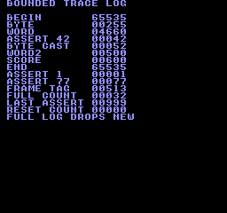
Build command
New-Item -ItemType Directory -Force .\out | Out-Null
.\kitaqfc\kitaqfc.exe .\kitaq-docs\samples\api-examples\fc\batch_debug.c -I .\kitaqfc\lib -I .\kitaq-docs\samples -o .\out\batch_debug.nes --no-cache --no-disasm --mapper=nrom --nes-chr=.\kitaq-docs\samples\font.chrImplementation and source
kitaqfc/lib/debug.h:36
Store the assertion code even if the log is full, then attempt an ASSERT entry. The helper records failure but does not stop execution.
kitaqfc/lib/debug.c:67
void debug_assert_fail(u16 code)
{
kq_debug_last_assert = code;
debug_push(debug_assert_label, code);
}debug_get_last_assert
Read the latest assertion code independently of available log space.
Syntax
u16 debug_get_last_assert(void);Return value
Returns the latest 16-bit code, initially zero after initialization.
Conditions and limits
Zero is also the initial value and cannot distinguish a failure recorded with code zero. Reading does not clear the code.
Usage example
result[22]=debug_get_last_assert();This is a calling fragment. Follow the stated initialization and buffer requirements before using it in a complete program.
Expected result
The sample checks 77 from the assertion macro, 999 after the log fills, and zero after reinitialization.
Build command
New-Item -ItemType Directory -Force .\out | Out-Null
.\kitaqfc\kitaqfc.exe .\kitaq-docs\samples\api-examples\fc\batch_debug.c -I .\kitaqfc\lib -I .\kitaq-docs\samples -o .\out\batch_debug.nes --no-cache --no-disasm --mapper=nrom --nes-chr=.\kitaq-docs\samples\font.chrImplementation and source
kitaqfc/lib/debug.h:42
Read the latest assertion code, initially zero after debug_init.
kitaqfc/lib/debug.c:86
u16 debug_get_last_assert(void)
{
return kq_debug_last_assert;
}debug_get_trace_count
Read the number of valid entries in the trace array.
Syntax
u8 debug_get_trace_count(void);Return value
Returns a count from zero through DEBUG_TRACE_MAX.
Conditions and limits
The log holds 32 entries by default and drops new entries when full. If overriding DEBUG_TRACE_MAX, use 1–255 consistently in every translation unit. Names are retained as pointers rather than copied; keep their storage readable until inspection finishes. Serialize interrupt and main-thread writers yourself.
Usage example
result[1]=debug_get_trace_count();This is a calling fragment. Follow the stated initialization and buffer requirements before using it in a complete program.
Expected result
The sample verifies ten initial entries and the limit of 32 after further writes; the count does not wrap when full.
Build command
New-Item -ItemType Directory -Force .\out | Out-Null
.\kitaqfc\kitaqfc.exe .\kitaq-docs\samples\api-examples\fc\batch_debug.c -I .\kitaqfc\lib -I .\kitaq-docs\samples -o .\out\batch_debug.nes --no-cache --no-disasm --mapper=nrom --nes-chr=.\kitaq-docs\samples\font.chrImplementation and source
kitaqfc/lib/debug.h:38
Read the number of valid entries in the fixed trace buffer.
kitaqfc/lib/debug.c:74
u8 debug_get_trace_count(void)
{
return kq_debug_trace_count;
}debug_get_trace_log
Obtain a reference to the internal array to inspect recorded names, values and frame tags.
Syntax
const DebugTraceEntry* debug_get_trace_log(void);Return value
Returns a read-only pointer to the internal DebugTraceEntry array.
Conditions and limits
This is not a copy. Read only the number of entries reported by debug_get_trace_count(). Stale bytes left after initialization are not valid records. The log holds 32 entries by default and drops new entries when full. If overriding DEBUG_TRACE_MAX, use 1–255 consistently in every translation unit. Names are retained as pointers rather than copied; keep their storage readable until inspection finishes. Serialize interrupt and main-thread writers yourself.
Usage example
entries=debug_get_trace_log();for(i=0;i<10;i++){result[2+i]=entries[i].value;result[12+i]=entries[i].frame;}This is a calling fragment. Follow the stated initialization and buffer requirements before using it in a complete program.
Expected result
The sample reads all ten value and frame fields and checks the leading B in the BEGIN label.
Build command
New-Item -ItemType Directory -Force .\out | Out-Null
.\kitaqfc\kitaqfc.exe .\kitaq-docs\samples\api-examples\fc\batch_debug.c -I .\kitaqfc\lib -I .\kitaq-docs\samples -o .\out\batch_debug.nes --no-cache --no-disasm --mapper=nrom --nes-chr=.\kitaq-docs\samples\font.chrImplementation and source
kitaqfc/lib/debug.h:40
Borrow the internal trace array; bound inspection by debug_get_trace_count.
kitaqfc/lib/debug.c:80
const DebugTraceEntry* debug_get_trace_log(void)
{
return kq_debug_trace_log;
}debug_init
Initialize the valid log length, frame tag and last assertion code.
Syntax
void debug_init(void);Return value
No return value.
Conditions and limits
Existing entry bytes are not erased. Call this before recording the first entry. The log holds 32 entries by default and drops new entries when full. If overriding DEBUG_TRACE_MAX, use 1–255 consistently in every translation unit. Names are retained as pointers rather than copied; keep their storage readable until inspection finishes. Serialize interrupt and main-thread writers yourself.
Usage example
debug_init();result[0]=debug_get_trace_count();This is a calling fragment. Follow the stated initialization and buffer requirements before using it in a complete program.
Expected result
The sample checks an initial count of zero, then resets a populated log and verifies that count and assertion code clear while old array values remain.
Build command
New-Item -ItemType Directory -Force .\out | Out-Null
.\kitaqfc\kitaqfc.exe .\kitaq-docs\samples\api-examples\fc\batch_debug.c -I .\kitaqfc\lib -I .\kitaq-docs\samples -o .\out\batch_debug.nes --no-cache --no-disasm --mapper=nrom --nes-chr=.\kitaq-docs\samples\font.chrImplementation and source
kitaqfc/lib/debug.h:25
Build the RAM-resident ASSERT label and reset log length, frame tag and last assertion code. Old log storage bytes are not erased.
kitaqfc/lib/debug.c:14
void debug_init(void)
{
debug_assert_label[0] = 'A';
debug_assert_label[1] = 'S';
debug_assert_label[2] = 'S';
debug_assert_label[3] = 'E';
debug_assert_label[4] = 'R';
debug_assert_label[5] = 'T';
debug_assert_label[6] = 0;
kq_debug_trace_count = 0;
kq_debug_frame = 0;
kq_debug_last_assert = 0;
}debug_mark_frame
Record a named frame marker to identify a point in the workflow.
Syntax
void debug_mark_frame(const u8* label);Parameters
labelZero-terminated label stored in memory that remains readable until inspection.
Return value
No return value.
Conditions and limits
The log holds 32 entries by default and drops new entries when full. If overriding DEBUG_TRACE_MAX, use 1–255 consistently in every translation unit. Names are retained as pointers rather than copied; keep their storage readable until inspection finishes. Serialize interrupt and main-thread writers yourself.
Usage example
debug_mark_frame("BEGIN");This is a calling fragment. Follow the stated initialization and buffer requirements before using it in a complete program.
Expected result
Adding the BEGIN marker records value 65535 (0xFFFF) with frame tag 513.
Build command
New-Item -ItemType Directory -Force .\out | Out-Null
.\kitaqfc\kitaqfc.exe .\kitaq-docs\samples\api-examples\fc\batch_debug.c -I .\kitaqfc\lib -I .\kitaq-docs\samples -o .\out\batch_debug.nes --no-cache --no-disasm --mapper=nrom --nes-chr=.\kitaq-docs\samples\font.chrImplementation and source
kitaqfc/lib/debug.h:29
Append a named marker with the reserved marker value 0xFFFF.
kitaqfc/lib/debug.c:48
void debug_mark_frame(const u8* label)
{
debug_push(label, 0xFFFF);
}debug_set_frame
Set the frame tag copied into subsequent log entries.
Syntax
void debug_set_frame(u16 frame);Parameters
frame16-bit frame number for subsequent entries.
Return value
No return value.
Conditions and limits
This neither waits for a frame nor increments the tag automatically. Pass the game’s frame counter explicitly. The log holds 32 entries by default and drops new entries when full. If overriding DEBUG_TRACE_MAX, use 1–255 consistently in every translation unit. Names are retained as pointers rather than copied; keep their storage readable until inspection finishes. Serialize interrupt and main-thread writers yourself.
Usage example
debug_set_frame(513);This is a calling fragment. Follow the stated initialization and buffer requirements before using it in a complete program.
Expected result
The sample sets 513, records ten entries and reads back all ten frame fields to verify the tag.
Build command
New-Item -ItemType Directory -Force .\out | Out-Null
.\kitaqfc\kitaqfc.exe .\kitaq-docs\samples\api-examples\fc\batch_debug.c -I .\kitaqfc\lib -I .\kitaq-docs\samples -o .\out\batch_debug.nes --no-cache --no-disasm --mapper=nrom --nes-chr=.\kitaq-docs\samples\font.chrImplementation and source
kitaqfc/lib/debug.h:27
Choose the frame tag stored in subsequent debug entries.
kitaqfc/lib/debug.c:29
void debug_set_frame(u16 frame)
{
kq_debug_frame = frame;
}debug_trace_u16
Log a named 16-bit score or counter.
Syntax
void debug_trace_u16(const u8* name, u16 value);Parameters
nameZero-terminated label stored in memory that remains readable until inspection.
valueValue from 0 through 65535 to record.
Return value
No return value.
Conditions and limits
The log holds 32 entries by default and drops new entries when full. If overriding DEBUG_TRACE_MAX, use 1–255 consistently in every translation unit. Names are retained as pointers rather than copied; keep their storage readable until inspection finishes. Serialize interrupt and main-thread writers yourself.
Usage example
debug_trace_u16("WORD",4660);This is a calling fragment. Follow the stated initialization and buffer requirements before using it in a complete program.
Expected result
The WORD entry stores 4660 (0x1234), and the sample reads it back to check both bytes.
Build command
New-Item -ItemType Directory -Force .\out | Out-Null
.\kitaqfc\kitaqfc.exe .\kitaq-docs\samples\api-examples\fc\batch_debug.c -I .\kitaqfc\lib -I .\kitaq-docs\samples -o .\out\batch_debug.nes --no-cache --no-disasm --mapper=nrom --nes-chr=.\kitaq-docs\samples\font.chrImplementation and source
kitaqfc/lib/debug.h:33
Append a 16-bit value with the current frame tag.
kitaqfc/lib/debug.c:60
void debug_trace_u16(const u8* name, u16 value)
{
debug_push(name, value);
}debug_trace_u8
Log an eight-bit state value with its name and current frame tag.
Syntax
void debug_trace_u8(const u8* name, u8 value);Parameters
nameZero-terminated label stored in memory that remains readable until inspection.
valueValue from 0 through 255, zero-extended into the log’s 16-bit field.
Return value
No return value.
Conditions and limits
The log holds 32 entries by default and drops new entries when full. If overriding DEBUG_TRACE_MAX, use 1–255 consistently in every translation unit. Names are retained as pointers rather than copied; keep their storage readable until inspection finishes. Serialize interrupt and main-thread writers yourself.
Usage example
debug_trace_u8("BYTE",255);This is a calling fragment. Follow the stated initialization and buffer requirements before using it in a complete program.
Expected result
The BYTE entry records 255 and verifies that the log’s 16-bit value field contains 255.
Build command
New-Item -ItemType Directory -Force .\out | Out-Null
.\kitaqfc\kitaqfc.exe .\kitaq-docs\samples\api-examples\fc\batch_debug.c -I .\kitaqfc\lib -I .\kitaq-docs\samples -o .\out\batch_debug.nes --no-cache --no-disasm --mapper=nrom --nes-chr=.\kitaq-docs\samples\font.chrImplementation and source
kitaqfc/lib/debug.h:31
Widen a byte value into the trace entry's 16-bit value field.
kitaqfc/lib/debug.c:54
void debug_trace_u8(const u8* name, u8 value)
{
debug_push(name, (u16)value);
}KITAQGB_ASSERT
A statement-like macro that records assertion code 1 when its condition is false.
Syntax
#define KITAQGB_ASSERT(cond) do { if (!(cond)) debug_assert_fail((u16)1); } while (0)Parameters
condCondition expected to hold; zero means failure.
Return value
No return value.
Conditions and limits
The condition is evaluated once. True records nothing; false records a failure without stopping execution. Its do…while (0) form makes it usable as one statement in an if…else.
Usage example
KITAQGB_ASSERT(1);KITAQGB_ASSERT(0);This is a calling fragment. Follow the stated initialization and buffer requirements before using it in a complete program.
Expected result
One true and one false assertion produce exactly one entry with code 1.
Build command
New-Item -ItemType Directory -Force .\out | Out-Null
.\kitaqfc\kitaqfc.exe .\kitaq-docs\samples\api-examples\fc\batch_debug.c -I .\kitaqfc\lib -I .\kitaq-docs\samples -o .\out\batch_debug.nes --no-cache --no-disasm --mapper=nrom --nes-chr=.\kitaq-docs\samples\font.chrImplementation and source
kitaqfc/lib/debug.h:48
#define KITAQGB_ASSERT(cond) do { if (!(cond)) debug_assert_fail((u16)1); } while (0)KITAQGB_ASSERT_CODE
Record a chosen assertion code only when the condition is false.
Syntax
#define KITAQGB_ASSERT_CODE(cond, code) do { if (!(cond)) debug_assert_fail((u16)(code)); } while (0)Parameters
condCondition expected to hold.
codeCode expression evaluated on failure and converted to 16 bits.
Return value
No return value.
Conditions and limits
The condition is evaluated once; the code expression is evaluated only on failure. Execution continues after recording.
Usage example
KITAQGB_ASSERT_CODE(1,++side_effect);KITAQGB_ASSERT_CODE(0,77);This is a calling fragment. Follow the stated initialization and buffer requirements before using it in a complete program.
Expected result
With a true condition, the code expression ++side_effect is not evaluated and the variable stays zero. A false condition records code 77.
Build command
New-Item -ItemType Directory -Force .\out | Out-Null
.\kitaqfc\kitaqfc.exe .\kitaq-docs\samples\api-examples\fc\batch_debug.c -I .\kitaqfc\lib -I .\kitaq-docs\samples -o .\out\batch_debug.nes --no-cache --no-disasm --mapper=nrom --nes-chr=.\kitaq-docs\samples\font.chrImplementation and source
kitaqfc/lib/debug.h:49
#define KITAQGB_ASSERT_CODE(cond, code) do { if (!(cond)) debug_assert_fail((u16)(code)); } while (0)KITAQGB_MARK_FRAME
Cast a label to a string pointer and append a frame marker with value 0xFFFF.
Syntax
#define KITAQGB_MARK_FRAME(label) debug_mark_frame((const u8*)(label))Parameters
labelZero-terminated label stored in memory that remains readable until inspection.
Return value
No return value.
Conditions and limits
The log holds 32 entries by default and drops new entries when full. If overriding DEBUG_TRACE_MAX, use 1–255 consistently in every translation unit. Names are retained as pointers rather than copied; keep their storage readable until inspection finishes. Serialize interrupt and main-thread writers yourself.
Usage example
KITAQGB_MARK_FRAME("END");This is a calling fragment. Follow the stated initialization and buffer requirements before using it in a complete program.
Expected result
The END marker is verified with value 65535 and frame tag 513.
Build command
New-Item -ItemType Directory -Force .\out | Out-Null
.\kitaqfc\kitaqfc.exe .\kitaq-docs\samples\api-examples\fc\batch_debug.c -I .\kitaqfc\lib -I .\kitaq-docs\samples -o .\out\batch_debug.nes --no-cache --no-disasm --mapper=nrom --nes-chr=.\kitaq-docs\samples\font.chrImplementation and source
kitaqfc/lib/debug.h:47
#define KITAQGB_MARK_FRAME(label) debug_mark_frame((const u8*)(label))KITAQGB_TRACE
Log a named value after explicitly converting it to 16 bits.
Syntax
#define KITAQGB_TRACE(name, value) debug_trace_u16((const u8*)(name), (u16)(value))Parameters
nameZero-terminated label stored in memory that remains readable until inspection.
valueExpression converted to 16 bits before recording.
Return value
No return value.
Conditions and limits
The macro is always active; build settings do not automatically disable it. It has the same 16-bit logging behavior as KITAQGB_TRACE_U16. The log holds 32 entries by default and drops new entries when full. If overriding DEBUG_TRACE_MAX, use 1–255 consistently in every translation unit. Names are retained as pointers rather than copied; keep their storage readable until inspection finishes. Serialize interrupt and main-thread writers yourself.
Usage example
KITAQGB_TRACE("SCORE",600);This is a calling fragment. Follow the stated initialization and buffer requirements before using it in a complete program.
Expected result
The example records 600. The value is read back from the log for verification.
Build command
New-Item -ItemType Directory -Force .\out | Out-Null
.\kitaqfc\kitaqfc.exe .\kitaq-docs\samples\api-examples\fc\batch_debug.c -I .\kitaqfc\lib -I .\kitaq-docs\samples -o .\out\batch_debug.nes --no-cache --no-disasm --mapper=nrom --nes-chr=.\kitaq-docs\samples\font.chrImplementation and source
kitaqfc/lib/debug.h:46
#define KITAQGB_TRACE(name, value) debug_trace_u16((const u8*)(name), (u16)(value))KITAQGB_TRACE_U16
Log a named value after explicitly converting it to 16 bits.
Syntax
#define KITAQGB_TRACE_U16(name, value) debug_trace_u16((const u8*)(name), (u16)(value))Parameters
nameZero-terminated label stored in memory that remains readable until inspection.
valueExpression converted to 16 bits before recording.
Return value
No return value.
Conditions and limits
The macro is always active; build settings do not automatically disable it. The log holds 32 entries by default and drops new entries when full. If overriding DEBUG_TRACE_MAX, use 1–255 consistently in every translation unit. Names are retained as pointers rather than copied; keep their storage readable until inspection finishes. Serialize interrupt and main-thread writers yourself.
Usage example
KITAQGB_TRACE_U16("WORD2",500);This is a calling fragment. Follow the stated initialization and buffer requirements before using it in a complete program.
Expected result
The example records 500. The value is read back from the log for verification.
Build command
New-Item -ItemType Directory -Force .\out | Out-Null
.\kitaqfc\kitaqfc.exe .\kitaq-docs\samples\api-examples\fc\batch_debug.c -I .\kitaqfc\lib -I .\kitaq-docs\samples -o .\out\batch_debug.nes --no-cache --no-disasm --mapper=nrom --nes-chr=.\kitaq-docs\samples\font.chrImplementation and source
kitaqfc/lib/debug.h:45
#define KITAQGB_TRACE_U16(name, value) debug_trace_u16((const u8*)(name), (u16)(value))KITAQGB_TRACE_U8
Log a named value after explicitly converting it to 8 bits.
Syntax
#define KITAQGB_TRACE_U8(name, value) debug_trace_u8((const u8*)(name), (u8)(value))Parameters
nameZero-terminated label stored in memory that remains readable until inspection.
valueExpression converted to 8 bits before recording.
Return value
No return value.
Conditions and limits
The macro is always active; build settings do not automatically disable it. The log holds 32 entries by default and drops new entries when full. If overriding DEBUG_TRACE_MAX, use 1–255 consistently in every translation unit. Names are retained as pointers rather than copied; keep their storage readable until inspection finishes. Serialize interrupt and main-thread writers yourself.
Usage example
KITAQGB_TRACE_U8("CAST",0x1234);This is a calling fragment. Follow the stated initialization and buffer requirements before using it in a complete program.
Expected result
The example records 52. Only the low byte 0x34 of 0x1234 is retained.
Build command
New-Item -ItemType Directory -Force .\out | Out-Null
.\kitaqfc\kitaqfc.exe .\kitaq-docs\samples\api-examples\fc\batch_debug.c -I .\kitaqfc\lib -I .\kitaq-docs\samples -o .\out\batch_debug.nes --no-cache --no-disasm --mapper=nrom --nes-chr=.\kitaq-docs\samples\font.chrImplementation and source
kitaqfc/lib/debug.h:44
#define KITAQGB_TRACE_U8(name, value) debug_trace_u8((const u8*)(name), (u8)(value))entity.h — Object pools backed by fixed arrays
entity_clear_all
Release all entities and reset their fields, including the no-sprite marker.
Syntax
void entity_clear_all(void);Return value
None (void).
Conditions and limits
The pool is a fixed array: no heap allocation occurs. ENTITY_MAX defaults to 16 and must be 1–255, defined identically in every compilation unit. Slot IDs start at zero; 0xFF is reserved for failure.
Reset active,type,x,y,vx,vy,state,timer to zero and sprite to 0xFF for every slot. This does not hide or free hardware sprites; clean up rendering resources separately.
Usage example
entity_clear_all();
after_clear = entity_count_active();
if (after_clear != 0 || entity_get(reused) != 0) { failures++; }This is a calling fragment. Follow the stated initialization and buffer requirements before using it in a complete program.
Expected result
The complete program teaches the lifetime of a reusable pool slot. Read the labels with the numbers: CREATED 002 after two allocations; AFTER FREE 001 after freeing the first; REUSED ID 000 when the lowest free ID is reused; AFTER CLEAR 000 after clearing the pool. It checks null lookup after release and reset fields after reuse. FAILED CHECKS 000 means these checks matched the expected values.
The FC traversal calls each callback for the two active entities: UPDATE CALLS 002 and DRAW CALLS 002. The sample's update callback moves both one tile to the right. Its drawing callback places A at tile (3,12) and B at (7,12), representing the two objects. These are background font tiles drawn by the callback, not automatically allocated sprites.

Build command
New-Item -ItemType Directory -Force .\out | Out-Null
.\kitaqfc\kitaqfc.exe .\kitaqfc\lib\entity.c .\kitaq-docs\samples\api-examples\fc\entity_pool.c -I .\kitaqfc\lib -I .\kitaq-docs\samples -o .\out\entity_pool.nes --mapper=nrom --nes-chr=.\kitaq-docs\samples\font.chr --no-disasmImplementation and source
kitaqfc/lib/entity.h:47
Release every entity and restore deterministic defaults, including the no-sprite sentinel.
kitaqfc/lib/entity.c:14
void entity_clear_all(void)
{
u8 i;
i = 0;
while (i < ENTITY_MAX) {
entity_pool[(__safe_index u8)i].active = 0;
entity_pool[(__safe_index u8)i].type = 0;
entity_pool[(__safe_index u8)i].x = 0;
entity_pool[(__safe_index u8)i].y = 0;
entity_pool[(__safe_index u8)i].vx = 0;
entity_pool[(__safe_index u8)i].vy = 0;
entity_pool[(__safe_index u8)i].state = 0;
entity_pool[(__safe_index u8)i].timer = 0;
entity_pool[(__safe_index u8)i].sprite = 0xFF;
i = (u8)(i + 1);
}
}entity_count_active
Count the occupied entity slots without modifying them.
Syntax
u8 entity_count_active(void);Return value
Number of slots whose active byte is nonzero, from 0 to ENTITY_MAX. This is occupancy, not the highest allocated ID or the number of sprites on screen.
Conditions and limits
The pool is a fixed array: no heap allocation occurs. ENTITY_MAX defaults to 16 and must be 1–255, defined identically in every compilation unit. Slot IDs start at zero; 0xFF is reserved for failure.
Usage example
created = entity_count_active();
if (created != 2) { failures++; }This is a calling fragment. Follow the stated initialization and buffer requirements before using it in a complete program.
Expected result
The complete program teaches the lifetime of a reusable pool slot. Read the labels with the numbers: CREATED 002 after two allocations; AFTER FREE 001 after freeing the first; REUSED ID 000 when the lowest free ID is reused; AFTER CLEAR 000 after clearing the pool. It checks null lookup after release and reset fields after reuse. FAILED CHECKS 000 means these checks matched the expected values.
The FC traversal calls each callback for the two active entities: UPDATE CALLS 002 and DRAW CALLS 002. The sample's update callback moves both one tile to the right. Its drawing callback places A at tile (3,12) and B at (7,12), representing the two objects. These are background font tiles drawn by the callback, not automatically allocated sprites.
Build command
New-Item -ItemType Directory -Force .\out | Out-Null
.\kitaqfc\kitaqfc.exe .\kitaqfc\lib\entity.c .\kitaq-docs\samples\api-examples\fc\entity_pool.c -I .\kitaqfc\lib -I .\kitaq-docs\samples -o .\out\entity_pool.nes --mapper=nrom --nes-chr=.\kitaq-docs\samples\font.chr --no-disasmImplementation and source
kitaqfc/lib/entity.h:45
Count occupied slots without changing entity state.
kitaqfc/lib/entity.c:94
u8 entity_count_active(void)
{
u8 i;
u8 count;
i = 0;
count = 0;
while (i < ENTITY_MAX) {
if (entity_pool[(__safe_index u8)i].active != 0) count = (u8)(count + 1);
i = (u8)(i + 1);
}
return count;
}entity_create
Allocate an entity with the supplied type and position; return its reusable ID, or 0xFF when full.
Syntax
u8 entity_create(u8 type, s16 x, s16 y);Parameters
typeApplication-defined type tag, 0–255. The pool stores it but does not choose behavior or drawing routines from it.
x, ySigned 16-bit coordinates (
-32768–32767). Their unit is chosen by the game, such as pixels or Q8.8; the pool does not convert units, clip positions or apply velocity automatically.
Return value
The lowest free slot ID (0–ENTITY_MAX-1), or 0xFF when none is free. A successful allocation sets active=1, stores the supplied type and position, clears velocity/state/timer, and sets sprite=0xFF.
Conditions and limits
The pool is a fixed array: no heap allocation occurs. ENTITY_MAX defaults to 16 and must be 1–255, defined identically in every compilation unit. Slot IDs start at zero; 0xFF is reserved for failure.
Usage example
first = entity_create(1, 2, 12);
second = entity_create(2, 6, 12);
if (first == 0xFF || second == 0xFF) { failures++; }This is a calling fragment. Follow the stated initialization and buffer requirements before using it in a complete program.
Expected result
The complete program teaches the lifetime of a reusable pool slot. Read the labels with the numbers: CREATED 002 after two allocations; AFTER FREE 001 after freeing the first; REUSED ID 000 when the lowest free ID is reused; AFTER CLEAR 000 after clearing the pool. It checks null lookup after release and reset fields after reuse. FAILED CHECKS 000 means these checks matched the expected values.
The FC traversal calls each callback for the two active entities: UPDATE CALLS 002 and DRAW CALLS 002. The sample's update callback moves both one tile to the right. Its drawing callback places A at tile (3,12) and B at (7,12), representing the two objects. These are background font tiles drawn by the callback, not automatically allocated sprites.
Build command
New-Item -ItemType Directory -Force .\out | Out-Null
.\kitaqfc\kitaqfc.exe .\kitaqfc\lib\entity.c .\kitaq-docs\samples\api-examples\fc\entity_pool.c -I .\kitaqfc\lib -I .\kitaq-docs\samples -o .\out\entity_pool.nes --mapper=nrom --nes-chr=.\kitaq-docs\samples\font.chr --no-disasmImplementation and source
kitaqfc/lib/entity.h:32
Returns a reusable slot ID, or 0xFF if no slot is free.
kitaqfc/lib/entity.c:34
u8 entity_create(u8 type, s16 x, s16 y)
{
u8 i;
i = 0;
while (i < ENTITY_MAX) {
if (entity_pool[(__safe_index u8)i].active == 0) {
entity_pool[(__safe_index u8)i].active = 1;
entity_pool[(__safe_index u8)i].type = type;
entity_pool[(__safe_index u8)i].x = x;
entity_pool[(__safe_index u8)i].y = y;
entity_pool[(__safe_index u8)i].vx = 0;
entity_pool[(__safe_index u8)i].vy = 0;
entity_pool[(__safe_index u8)i].state = 0;
entity_pool[(__safe_index u8)i].timer = 0;
entity_pool[(__safe_index u8)i].sprite = 0xFF;
return i;
}
i = (u8)(i + 1);
}
return 0xFF;
}entity_destroy
Release the entity slot identified by id; its stored payload is not cleared until reallocation.
Syntax
void entity_destroy(u8 id);Parameters
idReusable slot index from 0 to
ENTITY_MAX-1. Values outside that range are invalid. Destroying an invalid ID has no effect; looking it up returns null.
Return value
None (void).
Conditions and limits
The pool is a fixed array: no heap allocation occurs. ENTITY_MAX defaults to 16 and must be 1–255, defined identically in every compilation unit. Slot IDs start at zero; 0xFF is reserved for failure.
Destroy only clears active; it does not erase the other fields, free a sprite, or release assets. A later create can reuse the same ID and address for a different entity. Arrange associated resource cleanup in the game.
Usage example
entity_destroy(first);
after_free = entity_count_active();
if (entity_get(first) != 0 || after_free != 1) { failures++; }This is a calling fragment. Follow the stated initialization and buffer requirements before using it in a complete program.
Expected result
The complete program teaches the lifetime of a reusable pool slot. Read the labels with the numbers: CREATED 002 after two allocations; AFTER FREE 001 after freeing the first; REUSED ID 000 when the lowest free ID is reused; AFTER CLEAR 000 after clearing the pool. It checks null lookup after release and reset fields after reuse. FAILED CHECKS 000 means these checks matched the expected values.
The FC traversal calls each callback for the two active entities: UPDATE CALLS 002 and DRAW CALLS 002. The sample's update callback moves both one tile to the right. Its drawing callback places A at tile (3,12) and B at (7,12), representing the two objects. These are background font tiles drawn by the callback, not automatically allocated sprites.
Build command
New-Item -ItemType Directory -Force .\out | Out-Null
.\kitaqfc\kitaqfc.exe .\kitaqfc\lib\entity.c .\kitaq-docs\samples\api-examples\fc\entity_pool.c -I .\kitaqfc\lib -I .\kitaq-docs\samples -o .\out\entity_pool.nes --mapper=nrom --nes-chr=.\kitaq-docs\samples\font.chr --no-disasmImplementation and source
kitaqfc/lib/entity.h:35
Release a valid slot without clearing its payload. Reallocation resets the payload; a saved pointer or ID must not be treated as a persistent entity identity.
kitaqfc/lib/entity.c:58
void entity_destroy(u8 id)
{
if (id >= ENTITY_MAX) return;
entity_pool[(__safe_index u8)id].active = 0;
}entity_draw_all
Traverse active entities and call the supplied drawing callback with each ID. This uses the same traversal as entity_update_all; no sprite or pixel is drawn unless the callback submits drawing data.
Syntax
void entity_draw_all(EntityFn fn);Parameters
fnFunction pointer with signature
void fn(u8 id). It receives a slot ID; useentity_get(id)to access fields. Null is accepted and causes no calls.
Return value
None (void).
Conditions and limits
The pool is a fixed array: no heap allocation occurs. ENTITY_MAX defaults to 16 and must be 1–255, defined identically in every compilation unit. Slot IDs start at zero; 0xFF is reserved for failure.
The scan tests activity when it reaches a slot. A callback can deactivate a later slot so it is skipped, or activate a later slot so it is visited in this pass. This is not a snapshot of the initial active set.
Place the callback in common PRG bank 0, or keep its bank mapped throughout the call. A function pointer contains a 16-bit CPU address and does not select a bank. FC function parameters and local variables use static storage: do not call an entity traversal recursively or reenter it from an interrupt.
Usage example
void demo_draw(u8 id) {
Entity* entity;
entity = entity_get(id);
if (entity != 0) {
m_put((u8)entity->x, (u8)entity->y, (u8)('A' + entity->type - 1));
draw_calls++;
}
}
// From main(), after creating two entities:
draw_calls = 0;
entity_draw_all(demo_draw);
automatic_draws = draw_calls;
if (automatic_draws != 2) { failures++; }This is a calling fragment. Follow the stated initialization and buffer requirements before using it in a complete program.
Expected result
The complete program teaches the lifetime of a reusable pool slot. Read the labels with the numbers: CREATED 002 after two allocations; AFTER FREE 001 after freeing the first; REUSED ID 000 when the lowest free ID is reused; AFTER CLEAR 000 after clearing the pool. It checks null lookup after release and reset fields after reuse. FAILED CHECKS 000 means these checks matched the expected values.
The FC traversal calls each callback for the two active entities: UPDATE CALLS 002 and DRAW CALLS 002. The sample's update callback moves both one tile to the right. Its drawing callback places A at tile (3,12) and B at (7,12), representing the two objects. These are background font tiles drawn by the callback, not automatically allocated sprites.
Build command
New-Item -ItemType Directory -Force .\out | Out-Null
.\kitaqfc\kitaqfc.exe .\kitaqfc\lib\entity.c .\kitaq-docs\samples\api-examples\fc\entity_pool.c -I .\kitaqfc\lib -I .\kitaq-docs\samples -o .\out\entity_pool.nes --mapper=nrom --nes-chr=.\kitaq-docs\samples\font.chr --no-disasmImplementation and source
kitaqfc/lib/entity.h:43
Call the drawing callback for each active slot, using the same traversal rules as update. The callback submits drawing data; the pool does not allocate sprites.
kitaqfc/lib/entity.c:88
void entity_draw_all(EntityFn fn)
{
entity_update_all(fn);
}entity_get
Return a pointer to the active entity, or null for an invalid or inactive ID. The pointer refers to reusable pool storage.
Syntax
Entity* entity_get(u8 id);Parameters
idReusable slot index from 0 to
ENTITY_MAX-1. Values outside that range are invalid. Destroying an invalid ID has no effect; looking it up returns null.
Return value
A writable pointer to the active pool slot, or null if the ID is invalid or inactive. The storage belongs to the pool; do not free it or use it as a permanent identity across destroy/recreate operations.
Conditions and limits
The pool is a fixed array: no heap allocation occurs. ENTITY_MAX defaults to 16 and must be 1–255, defined identically in every compilation unit. Slot IDs start at zero; 0xFF is reserved for failure.
Destroy only clears active; it does not erase the other fields, free a sprite, or release assets. A later create can reuse the same ID and address for a different entity. Arrange associated resource cleanup in the game.
Usage example
current_entity = entity_get(first);
if (current_entity != 0) { current_entity->vx = 5; }
else { failures++; }This is a calling fragment. Follow the stated initialization and buffer requirements before using it in a complete program.
Expected result
The complete program teaches the lifetime of a reusable pool slot. Read the labels with the numbers: CREATED 002 after two allocations; AFTER FREE 001 after freeing the first; REUSED ID 000 when the lowest free ID is reused; AFTER CLEAR 000 after clearing the pool. It checks null lookup after release and reset fields after reuse. FAILED CHECKS 000 means these checks matched the expected values.
The FC traversal calls each callback for the two active entities: UPDATE CALLS 002 and DRAW CALLS 002. The sample's update callback moves both one tile to the right. Its drawing callback places A at tile (3,12) and B at (7,12), representing the two objects. These are background font tiles drawn by the callback, not automatically allocated sprites.
Build command
New-Item -ItemType Directory -Force .\out | Out-Null
.\kitaqfc\kitaqfc.exe .\kitaqfc\lib\entity.c .\kitaq-docs\samples\api-examples\fc\entity_pool.c -I .\kitaqfc\lib -I .\kitaq-docs\samples -o .\out\entity_pool.nes --mapper=nrom --nes-chr=.\kitaq-docs\samples\font.chr --no-disasmImplementation and source
kitaqfc/lib/entity.h:37
Returns null for an invalid or inactive ID; the returned pointer aliases reusable pool storage.
kitaqfc/lib/entity.c:66
Entity* entity_get(u8 id)
{
if (id >= ENTITY_MAX) return 0;
if (entity_pool[(__safe_index u8)id].active == 0) return 0;
return &entity_pool[(__safe_index u8)id];
}entity_init
Initialize the entity pool by resetting every slot.
Syntax
void entity_init(void);Return value
None (void).
Conditions and limits
The pool is a fixed array: no heap allocation occurs. ENTITY_MAX defaults to 16 and must be 1–255, defined identically in every compilation unit. Slot IDs start at zero; 0xFF is reserved for failure.
Reset active,type,x,y,vx,vy,state,timer to zero and sprite to 0xFF for every slot. This does not hide or free hardware sprites; clean up rendering resources separately.
Usage example
entity_init();
if (entity_count_active() != 0) { failures++; }This is a calling fragment. Follow the stated initialization and buffer requirements before using it in a complete program.
Expected result
The complete program teaches the lifetime of a reusable pool slot. Read the labels with the numbers: CREATED 002 after two allocations; AFTER FREE 001 after freeing the first; REUSED ID 000 when the lowest free ID is reused; AFTER CLEAR 000 after clearing the pool. It checks null lookup after release and reset fields after reuse. FAILED CHECKS 000 means these checks matched the expected values.
The FC traversal calls each callback for the two active entities: UPDATE CALLS 002 and DRAW CALLS 002. The sample's update callback moves both one tile to the right. Its drawing callback places A at tile (3,12) and B at (7,12), representing the two objects. These are background font tiles drawn by the callback, not automatically allocated sprites.
Build command
New-Item -ItemType Directory -Force .\out | Out-Null
.\kitaqfc\kitaqfc.exe .\kitaqfc\lib\entity.c .\kitaq-docs\samples\api-examples\fc\entity_pool.c -I .\kitaqfc\lib -I .\kitaq-docs\samples -o .\out\entity_pool.nes --mapper=nrom --nes-chr=.\kitaq-docs\samples\font.chr --no-disasmImplementation and source
kitaqfc/lib/entity.h:30
Reset every slot before the game starts using the pool.
kitaqfc/lib/entity.c:8
void entity_init(void)
{
entity_clear_all();
}entity_update_all
Visit active slots in ascending ID order and call fn(id) once for each. The callback implements movement, collisions or timers; the pool does not supply that logic. A null callback does nothing.
Syntax
void entity_update_all(EntityFn fn);Parameters
fnFunction pointer with signature
void fn(u8 id). It receives a slot ID; useentity_get(id)to access fields. Null is accepted and causes no calls.
Return value
None (void).
Conditions and limits
The pool is a fixed array: no heap allocation occurs. ENTITY_MAX defaults to 16 and must be 1–255, defined identically in every compilation unit. Slot IDs start at zero; 0xFF is reserved for failure.
The scan tests activity when it reaches a slot. A callback can deactivate a later slot so it is skipped, or activate a later slot so it is visited in this pass. This is not a snapshot of the initial active set.
Place the callback in common PRG bank 0, or keep its bank mapped throughout the call. A function pointer contains a 16-bit CPU address and does not select a bank. FC function parameters and local variables use static storage: do not call an entity traversal recursively or reenter it from an interrupt.
Usage example
void demo_update(u8 id) {
Entity* entity;
entity = entity_get(id);
if (entity != 0) { entity->x = entity->x + 1; update_calls++; }
}
// From main(), after creating two entities:
update_calls = 0;
entity_update_all(demo_update);
automatic_updates = update_calls;
if (automatic_updates != 2) { failures++; }This is a calling fragment. Follow the stated initialization and buffer requirements before using it in a complete program.
Expected result
The complete program teaches the lifetime of a reusable pool slot. Read the labels with the numbers: CREATED 002 after two allocations; AFTER FREE 001 after freeing the first; REUSED ID 000 when the lowest free ID is reused; AFTER CLEAR 000 after clearing the pool. It checks null lookup after release and reset fields after reuse. FAILED CHECKS 000 means these checks matched the expected values.
The FC traversal calls each callback for the two active entities: UPDATE CALLS 002 and DRAW CALLS 002. The sample's update callback moves both one tile to the right. Its drawing callback places A at tile (3,12) and B at (7,12), representing the two objects. These are background font tiles drawn by the callback, not automatically allocated sprites.
Build command
New-Item -ItemType Directory -Force .\out | Out-Null
.\kitaqfc\kitaqfc.exe .\kitaqfc\lib\entity.c .\kitaq-docs\samples\api-examples\fc\entity_pool.c -I .\kitaqfc\lib -I .\kitaq-docs\samples -o .\out\entity_pool.nes --mapper=nrom --nes-chr=.\kitaq-docs\samples\font.chr --no-disasmImplementation and source
kitaqfc/lib/entity.h:40
Call fn(id) for each active slot in ascending order. A null callback does nothing. Changes to later slots take effect during the same traversal. Do not reenter this traversal.
kitaqfc/lib/entity.c:75
void entity_update_all(EntityFn fn)
{
u8 i;
if (fn == 0) return;
i = 0;
while (i < ENTITY_MAX) {
if (entity_pool[(__safe_index u8)i].active != 0) fn(i);
i = (u8)(i + 1);
}
}FDS files and fixed-size save slots
fds_file.h provides file loading into game buffers and writing to a reserved disk save slot. fds_save.h includes the same declarations. Use fds_overlay.h for calls into overlay code.
__fds_load_file() / __fds_save_file()
fds_file_io.c fds_file_io_manifest.json fds_file_io_payload.bin
fds_sound.h
Declares compiler intrinsics for the 64-step waveform, modulation table, pitch, volume and envelopes. KITAQFC generates their implementations.
Build a .fds image with --mapper=fds. This lesson operates sound without disk I/O. The recording uses KUROSAKI’s direct RAM boot and audio model. Its empty test firmware backing implements no BIOS routines and is not distributed. Normal disk boot and physical hardware require an appropriate boot environment.
Function reference: __fds_sound_enable, __fds_wave_load, __fds_mod_load, __fds_freq_set, __fds_volume_set, __fds_env_set
fixed.h — Q8.8 fixed-point arithmetic and rectangles
Q8.8 arithmetic represents fractional coordinates and speeds using integers, alongside rectangle/point collision tests. Check each operation’s precision and range limits.
fix_div
Divide Q8.8 values after reducing the operands.
Syntax
fix8 fix_div(fix8 a, fix8 b);Parameters
aLeft operand in Q8.8.
bRight operand in Q8.8.
Return value
Returns a Q8.8 quotient, or zero when b == 0.
Conditions and limits
The expression is ((a >> 4) * 256) / (b >> 4). A nonzero divisor must remain nonzero after the shift: do not pass positive raw values 1–15. The scaled numerator must also fit in 16 bits.
Usage example
result[3]=fix_div(768,512);This is a calling fragment. Follow the stated initialization and buffer requirements before using it in a complete program.
Expected result
Dividing 3.0 by 2.0 yields 1.5 (raw 384). A separate check verifies the explicit zero-divisor return.
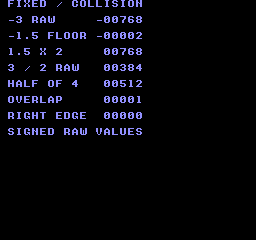
Build command
New-Item -ItemType Directory -Force .\out | Out-Null
.\kitaqfc\kitaqfc.exe .\kitaq-docs\samples\api-examples\fc\batch_math.c -I .\kitaqfc\lib -I .\kitaq-docs\samples -o .\out\batch_math.nes --no-cache --no-disasm --mapper=nrom --nes-chr=.\kitaq-docs\samples\font.chrImplementation and source
kitaqfc/lib/fixed.h:35
Scale the reduced-precision quotient back to 8.8 and return zero for b == 0. Callers must also ensure (b >> 4) is nonzero; the explicit check only tests b. The intermediate product must fit the compiler's integer arithmetic.
kitaqfc/lib/fixed.c:26
fix8 fix_div(fix8 a, fix8 b)
{
if (b == 0) return 0;
return (fix8)(((a >> 4) * 256) / (b >> 4));
}fix_from_int
Convert an integer coordinate or speed to Q8.8 so subsequent calculations can retain fractional parts.
Syntax
fix8 fix_from_int(s16 n);Parameters
nInteger to convert, from −128 through 127.
Return value
Returns the raw value n × 256.
Conditions and limits
fix8 is signed Q8.8: a raw value of 256 represents 1.0. Keep intermediate values and results within the 16-bit range.
Usage example
result[0]=fix_from_int(-3);This is a calling fragment. Follow the stated initialization and buffer requirements before using it in a complete program.
Expected result
The example converts −3. The displayed −00768 is the raw Q8.8 result −768.
Build command
New-Item -ItemType Directory -Force .\out | Out-Null
.\kitaqfc\kitaqfc.exe .\kitaq-docs\samples\api-examples\fc\batch_math.c -I .\kitaqfc\lib -I .\kitaq-docs\samples -o .\out\batch_math.nes --no-cache --no-disasm --mapper=nrom --nes-chr=.\kitaq-docs\samples\font.chrImplementation and source
kitaqfc/lib/fixed.h:26
Convert an integer to signed 8.8 fixed point by moving it into the high byte. The caller must keep the result within the representable 16-bit range.
kitaqfc/lib/fixed.c:5
fix8 fix_from_int(s16 n)
{
return (fix8)(n << 8);
}fix_lerp
Interpolate from one Q8.8 value toward another using an eight-bit weight.
Syntax
fix8 fix_lerp(fix8 a, fix8 b, u8 t_q8);Parameters
aLeft operand in Q8.8.
bRight operand in Q8.8.
t_q8Interpolation weight from 0 through 255.
Return value
Returns the approximated interpolated Q8.8 value.
Conditions and limits
The difference and weight are each shifted right by four bits. This gives 16 weight levels, so even 255 need not reach the endpoint. Keep b - a and the final result within 16 bits.
Usage example
result[4]=fix_lerp(0,1024,128);This is a calling fragment. Follow the stated initialization and buffer requirements before using it in a complete program.
Expected result
A weight of 128 between 0 and 4.0 yields 2.0 (raw 512). Weight 255 produces 3.75 (raw 960), demonstrating that the endpoint is not reached.
Build command
New-Item -ItemType Directory -Force .\out | Out-Null
.\kitaqfc\kitaqfc.exe .\kitaq-docs\samples\api-examples\fc\batch_math.c -I .\kitaqfc\lib -I .\kitaq-docs\samples -o .\out\batch_math.nes --no-cache --no-disasm --mapper=nrom --nes-chr=.\kitaq-docs\samples\font.chrImplementation and source
kitaqfc/lib/fixed.h:38
Interpolate toward b using a quantized Q0.8 weight. Both shifts discard low bits, so small changes may vanish and a weight of 255 need not reach b.
kitaqfc/lib/fixed.c:34
fix8 fix_lerp(fix8 a, fix8 b, u8 t_q8)
{
fix8 d;
// The endpoint difference must fit s16 before the reduced-precision interpolation.
d = (fix8)(b - a);
return (fix8)(a + (fix8)((d >> 4) * (s16)(t_q8 >> 4)));
}fix_mul
Multiply two Q8.8 values using a low-cost approximation.
Syntax
fix8 fix_mul(fix8 a, fix8 b);Parameters
aLeft operand in Q8.8.
bRight operand in Q8.8.
Return value
Returns the product in Q8.8.
Conditions and limits
Each operand is shifted right by four bits before multiplication, discarding four low bits from each. This is less precise than a full 16-by-16-bit product. fix8 is signed Q8.8: a raw value of 256 represents 1.0. Keep intermediate values and results within the 16-bit range.
Usage example
result[2]=fix_mul(384,512);This is a calling fragment. Follow the stated initialization and buffer requirements before using it in a complete program.
Expected result
Multiplying 1.5 by 2.0 yields 3.0 (raw 768). The program also checks the quantization case where raw 271 multiplied by raw 271 yields 256.
Build command
New-Item -ItemType Directory -Force .\out | Out-Null
.\kitaqfc\kitaqfc.exe .\kitaq-docs\samples\api-examples\fc\batch_math.c -I .\kitaqfc\lib -I .\kitaq-docs\samples -o .\out\batch_math.nes --no-cache --no-disasm --mapper=nrom --nes-chr=.\kitaq-docs\samples\font.chrImplementation and source
kitaqfc/lib/fixed.h:31
Approximate 8.8 multiplication by discarding four low bits from each operand before multiplying. This trades precision for a smaller intermediate product.
kitaqfc/lib/fixed.c:18
fix8 fix_mul(fix8 a, fix8 b)
{
return (fix8)((a >> 4) * (b >> 4));
}fix_to_int
Extract an integer coordinate from Q8.8 by discarding its fractional bits. Negative values round toward negative infinity.
Syntax
s16 fix_to_int(fix8 x);Parameters
xQ8.8 value to convert to an integer.
Return value
Returns a signed integer.
Conditions and limits
fix8 is signed Q8.8: a raw value of 256 represents 1.0. Keep intermediate values and results within the 16-bit range.
Usage example
result[1]=fix_to_int(-384);This is a calling fragment. Follow the stated initialization and buffer requirements before using it in a complete program.
Expected result
Passing raw −384 (−1.5) produces −2, displayed as −00002. A boundary check also confirms that raw −1 becomes −1.
Build command
New-Item -ItemType Directory -Force .\out | Out-Null
.\kitaqfc\kitaqfc.exe .\kitaq-docs\samples\api-examples\fc\batch_math.c -I .\kitaqfc\lib -I .\kitaq-docs\samples -o .\out\batch_math.nes --no-cache --no-disasm --mapper=nrom --nes-chr=.\kitaq-docs\samples\font.chrImplementation and source
kitaqfc/lib/fixed.h:28
Discard the eight fractional bits using a signed right shift.
kitaqfc/lib/fixed.c:11
s16 fix_to_int(fix8 x)
{
return (s16)(x >> 8);
}kq_abs_s16
Find the magnitude of a signed 16-bit value.
Syntax
s16 kq_abs_s16(s16 v);Parameters
vSigned 16-bit value whose magnitude is needed.
Return value
Returns a nonnegative magnitude, except for the unrepresentable magnitude of −32768.
Conditions and limits
The positive magnitude 32768 does not fit in s16. Exclude −32768 when a nonnegative result is required.
Usage example
result[0]=kq_abs_s16(-123);This is a calling fragment. Follow the stated initialization and buffer requirements before using it in a complete program.
Expected result
The sample turns −123 into 123, as when measuring the magnitude of a coordinate difference.
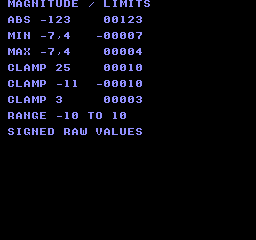
Build command
New-Item -ItemType Directory -Force .\out | Out-Null
.\kitaqfc\kitaqfc.exe .\kitaq-docs\samples\api-examples\fc\batch_math_limits.c -I .\kitaqfc\lib -I .\kitaq-docs\samples -o .\out\batch_math_limits.nes --no-cache --no-disasm --mapper=nrom --nes-chr=.\kitaq-docs\samples\font.chrImplementation and source
kitaqfc/lib/fixed.h:41
Return the magnitude in s16. The most-negative s16 has no positive s16 representation and must be excluded by callers needing a nonnegative result.
kitaqfc/lib/fixed.c:44
s16 kq_abs_s16(s16 v)
{
if (v < 0) return (s16)(0 - v);
return v;
}kq_clamp_s16
Restrict a coordinate or speed to an inclusive interval.
Syntax
s16 kq_clamp_s16(s16 v, s16 lo, s16 hi);Parameters
vSigned value to limit.
loInclusive lower limit.
hiInclusive upper limit.
Return value
Returns lo below the interval, hi above it, or v within it.
Conditions and limits
Supply a valid interval with lo <= hi.
Usage example
result[3]=kq_clamp_s16(25,-10,10);This is a calling fragment. Follow the stated initialization and buffer requirements before using it in a complete program.
Expected result
Clamping 25 to −10…10 yields 10. Checks also cover −11→−10 at the lower edge and 3→3 inside the interval.
Build command
New-Item -ItemType Directory -Force .\out | Out-Null
.\kitaqfc\kitaqfc.exe .\kitaq-docs\samples\api-examples\fc\batch_math_limits.c -I .\kitaqfc\lib -I .\kitaq-docs\samples -o .\out\batch_math_limits.nes --no-cache --no-disasm --mapper=nrom --nes-chr=.\kitaq-docs\samples\font.chrImplementation and source
kitaqfc/lib/fixed.h:47
Clamp to an inclusive interval; callers must provide lo <= hi.
kitaqfc/lib/fixed.c:65
s16 kq_clamp_s16(s16 v, s16 lo, s16 hi)
{
if (v < lo) return lo;
if (v > hi) return hi;
return v;
}kq_max_s16
Select the larger of two signed 16-bit values.
Syntax
s16 kq_max_s16(s16 a, s16 b);Parameters
aFirst signed value to compare.
bSecond signed value to compare.
Return value
Returns the selected operand.
Conditions and limits
Comparison is signed. Equal operands produce that same value; neither input is modified.
Usage example
result[2]=kq_max_s16(-7,4);This is a calling fragment. Follow the stated initialization and buffer requirements before using it in a complete program.
Expected result
Comparing −7 and 4 yields 4. Negative results are displayed with a minus sign.
Build command
New-Item -ItemType Directory -Force .\out | Out-Null
.\kitaqfc\kitaqfc.exe .\kitaq-docs\samples\api-examples\fc\batch_math_limits.c -I .\kitaqfc\lib -I .\kitaq-docs\samples -o .\out\batch_math_limits.nes --no-cache --no-disasm --mapper=nrom --nes-chr=.\kitaq-docs\samples\font.chrImplementation and source
kitaqfc/lib/fixed.h:45
Select the larger signed value.
kitaqfc/lib/fixed.c:58
s16 kq_max_s16(s16 a, s16 b)
{
if (a > b) return a;
return b;
}kq_min_s16
Select the smaller of two signed 16-bit values.
Syntax
s16 kq_min_s16(s16 a, s16 b);Parameters
aFirst signed value to compare.
bSecond signed value to compare.
Return value
Returns the selected operand.
Conditions and limits
Comparison is signed. Equal operands produce that same value; neither input is modified.
Usage example
result[1]=kq_min_s16(-7,4);This is a calling fragment. Follow the stated initialization and buffer requirements before using it in a complete program.
Expected result
Comparing −7 and 4 yields -7. Negative results are displayed with a minus sign.
Build command
New-Item -ItemType Directory -Force .\out | Out-Null
.\kitaqfc\kitaqfc.exe .\kitaq-docs\samples\api-examples\fc\batch_math_limits.c -I .\kitaqfc\lib -I .\kitaq-docs\samples -o .\out\batch_math_limits.nes --no-cache --no-disasm --mapper=nrom --nes-chr=.\kitaq-docs\samples\font.chrImplementation and source
kitaqfc/lib/fixed.h:43
Select the smaller signed value.
kitaqfc/lib/fixed.c:51
s16 kq_min_s16(s16 a, s16 b)
{
if (a < b) return a;
return b;
}kq_point_in_rect
Test whether a point lies in a rectangle, including its left and top edges.
Syntax
u8 kq_point_in_rect(s16 x, s16 y, KQRect r);Parameters
xPoint X coordinate in the rectangle’s coordinate system.
yPoint Y coordinate.
rRectangle to test, passed by value.
Return value
Returns 1 inside and 0 outside.
Conditions and limits
Use positive dimensions and keep coordinate-plus-size sums representable as s16. Right and bottom edges are excluded. Zero-area rectangles are not explicitly rejected.
Usage example
result[1]=kq_point_in_rect(9,1,a);
for(gy=0;gy<11;gy++){for(gx=0;gx<15;gx++){
inside_a=kq_point_in_rect(gx,gy,a);inside_b=kq_point_in_rect(gx,gy,b);
tile=0;if(inside_a){tile=65;result[3]=result[3]+1;}if(inside_b)tile=66;if(inside_a && inside_b){tile=79;result[4]=result[4]+1;}
m_put(1+gx,2+gy,tile);__vramq_commit();__vramq_exec();
}}This is a calling fragment. Follow the stated initialization and buffer requirements before using it in a complete program.
Expected result
Each coordinate unit occupies one tile. Rectangles A at (1,1) and B at (5,4) are both 8×6. A-only cells show A, B-only cells show B, and the 4×3 overlap shows 12 O cells. A’s right edge x=9 is excluded. On CGB, A is red, B blue and O green.
Build command
New-Item -ItemType Directory -Force .\out | Out-Null
.\kitaqfc\kitaqfc.exe .\kitaq-docs\samples\api-examples\fc\batch_geometry.c -I .\kitaqfc\lib -I .\kitaq-docs\samples -o .\out\batch_geometry.nes --no-cache --no-disasm --mapper=nrom --nes-chr=.\kitaq-docs\samples\font.chrImplementation and source
kitaqfc/lib/fixed.h:54
Test a half-open rectangle: left/top edges are included, right/bottom excluded. The coordinate-plus-size sums must remain representable as s16.
kitaqfc/lib/fixed.c:86
u8 kq_point_in_rect(s16 x, s16 y, KQRect r)
{
if (x < r.x) return 0;
if (y < r.y) return 0;
if (x >= (s16)(r.x + r.w)) return 0;
if (y >= (s16)(r.y + r.h)) return 0;
return 1;
}kq_rect_intersect
Test whether two axis-aligned rectangles overlap with positive area.
Syntax
u8 kq_rect_intersect(KQRect a, KQRect b);Parameters
aFirst rectangle, passed by value:
x, ylocate its top-left corner;w, hare its width and height.bSecond rectangle in the same coordinate system as A.
Return value
Returns 1 for overlap and 0 for separation or mere edge contact.
Conditions and limits
Use positive dimensions and keep coordinate-plus-size sums representable as s16. Right and bottom edges are excluded. Zero-area rectangles are not explicitly rejected.
Usage example
result[0]=kq_rect_intersect(a,b);result[2]=kq_rect_intersect(a,touch);This is a calling fragment. Follow the stated initialization and buffer requirements before using it in a complete program.
Expected result
Each coordinate unit occupies one tile. Rectangles A at (1,1) and B at (5,4) are both 8×6. A-only cells show A, B-only cells show B, and the 4×3 overlap shows 12 O cells. A’s right edge x=9 is excluded. On CGB, A is red, B blue and O green.
Build command
New-Item -ItemType Directory -Force .\out | Out-Null
.\kitaqfc\kitaqfc.exe .\kitaq-docs\samples\api-examples\fc\batch_geometry.c -I .\kitaqfc\lib -I .\kitaq-docs\samples -o .\out\batch_geometry.nes --no-cache --no-disasm --mapper=nrom --nes-chr=.\kitaq-docs\samples\font.chrImplementation and source
kitaqfc/lib/fixed.h:51
Test overlap using exclusive right/bottom edges; touching edges do not collide. Require positive dimensions and edge sums that fit s16; zero-sized rectangles are not explicitly rejected and may be reported as overlapping.
kitaqfc/lib/fixed.c:75
u8 kq_rect_intersect(KQRect a, KQRect b)
{
if ((s16)(a.x + a.w) <= b.x) return 0;
if ((s16)(b.x + b.w) <= a.x) return 0;
if ((s16)(a.y + a.h) <= b.y) return 0;
if ((s16)(b.y + b.h) <= a.y) return 0;
return 1;
}input.h — Button state, press, release and repeat
Use this library to separate continuous movement (input_down), one-shot actions (input_pressed), stopping on release (input_released) and menu repetition (input_repeat). Initialize once, update once per input tick, then query as often as needed. btn_down, btn_pressed, btn_released and btn_repeat are aliases for those four queries.
Read controller 1 with __pad_read1_safe, translate the NES bit order to the shared BTN_* layout, save the previous mask, and calculate pressed, released and repeat masks. Controller 2 is not included. Call once per input tick.
Shared masks: BTN_RIGHT=0x01, BTN_LEFT=0x02, BTN_UP=0x04, BTN_DOWN=0x08, BTN_A=0x10, BTN_B=0x20, BTN_SELECT=0x40, BTN_START=0x80. A set bit means held. This layout applies to input_* on both GB and FC; raw FC pad functions use a different order.
Repeat timing counts updates, not milliseconds. A new press emits immediately. With defaults INPUT_REPEAT_DELAY=18 and INPUT_REPEAT_RATE=5, the next pulse is 19 updates later, followed by pulses every 6 updates. Each button has its own counter. Define these macros consistently when compiling input.c; changing only the caller's header does not reconfigure the library.
input_current
Return the complete held-button mask from the most recent input update.
Syntax
u8 input_current(void);Return value
An 8-bit mask in the shared BTN_* layout. Several buttons may be set simultaneously; 0 means none.
Conditions and limits
Shared masks: BTN_RIGHT=0x01, BTN_LEFT=0x02, BTN_UP=0x04, BTN_DOWN=0x08, BTN_A=0x10, BTN_B=0x20, BTN_SELECT=0x40, BTN_START=0x80. A set bit means held. This layout applies to input_* on both GB and FC; raw FC pad functions use a different order.
Getters observe the most recent input_update() without polling, consuming an edge or advancing a repeat timer. Repeated getter calls in the same tick give the same answer. Calling input_update() twice while a button stays down clears its press edge on the second call.
Usage example
first_current=input_current(); // Only A held: BTN_A, or decimal 16.This is a calling fragment. Follow the stated initialization and buffer requirements before using it in a complete program.
Expected result
This program demonstrates the difference between held state, a new press, release and automatic repeat. Hold A for 40 updates, then release it. FIRST DOWN, FIRST PRESS and FIRST REPEAT are 1; FIRST CURRENT is 16. HELD TICKS is 40, PRESS COUNT is 1 and REPEAT COUNT is 5. On release, RELEASE is 1, LAST CURRENT is 0 and LAST PREVIOUS is 16. FAILED CHECKS must be 0. Holding A for a different duration changes the counts; the program checks the repeat timing against the duration it actually observed.

Build command
New-Item -ItemType Directory -Force .\out | Out-Null
.\kitaqfc\kitaqfc.exe .\kitaqfc\lib\input.c .\kitaq-docs\samples\api-examples\fc\input_edges.c -I .\kitaqfc\lib -I .\kitaq-docs\samples -o .\out\input_edges.nes --mapper=nrom --nes-chr=.\kitaq-docs\samples\font.chr --no-disasm --no-cacheImplementation and source
kitaqfc/lib/input.h:49
Read the complete translated held-button mask.
kitaqfc/lib/input.c:93
u8 input_current(void) { return kq_input_keys; }input_down
Test whether any button selected by mask is currently held.
Syntax
u8 input_down(u8 mask);Parameters
maskOne
BTN_*mask or several joined with|. The test succeeds if any selected button matches;BTN_A | BTN_Bdoes not require both. Mask 0 always gives 0. To require every button, compare(input_current() & mask) == mask.
Return value
Exactly 1 if any selected button matches the queried condition; otherwise 0. The return value is not a button mask.
Conditions and limits
Shared masks: BTN_RIGHT=0x01, BTN_LEFT=0x02, BTN_UP=0x04, BTN_DOWN=0x08, BTN_A=0x10, BTN_B=0x20, BTN_SELECT=0x40, BTN_START=0x80. A set bit means held. This layout applies to input_* on both GB and FC; raw FC pad functions use a different order.
Getters observe the most recent input_update() without polling, consuming an edge or advancing a repeat timer. Repeated getter calls in the same tick give the same answer. Calling input_update() twice while a button stays down clears its press edge on the second call.
Usage example
if (input_down(BTN_A)!=0) held_ticks++;This is a calling fragment. Follow the stated initialization and buffer requirements before using it in a complete program.
Expected result
This program demonstrates the difference between held state, a new press, release and automatic repeat. Hold A for 40 updates, then release it. FIRST DOWN, FIRST PRESS and FIRST REPEAT are 1; FIRST CURRENT is 16. HELD TICKS is 40, PRESS COUNT is 1 and REPEAT COUNT is 5. On release, RELEASE is 1, LAST CURRENT is 0 and LAST PREVIOUS is 16. FAILED CHECKS must be 0. Holding A for a different duration changes the counts; the program checks the repeat timing against the duration it actually observed.
Build command
New-Item -ItemType Directory -Force .\out | Out-Null
.\kitaqfc\kitaqfc.exe .\kitaqfc\lib\input.c .\kitaq-docs\samples\api-examples\fc\input_edges.c -I .\kitaqfc\lib -I .\kitaq-docs\samples -o .\out\input_edges.nes --mapper=nrom --nes-chr=.\kitaq-docs\samples\font.chr --no-disasm --no-cacheImplementation and source
kitaqfc/lib/input.h:41
Return true when any masked logical button is held.
kitaqfc/lib/input.c:85
u8 input_down(u8 mask) { return (u8)((kq_input_keys & mask) != 0); }input_init
Clear the current, previous, pressed, released and repeat masks, and reset all eight repeat timers to INPUT_REPEAT_DELAY. This initializes the input library without reading the controller. A button held during the first subsequent update is detected as a new press.
Syntax
void input_init(void);Return value
None (void).
Conditions and limits
Shared masks: BTN_RIGHT=0x01, BTN_LEFT=0x02, BTN_UP=0x04, BTN_DOWN=0x08, BTN_A=0x10, BTN_B=0x20, BTN_SELECT=0x40, BTN_START=0x80. A set bit means held. This layout applies to input_* on both GB and FC; raw FC pad functions use a different order.
Repeat timing counts updates, not milliseconds. A new press emits immediately. With defaults INPUT_REPEAT_DELAY=18 and INPUT_REPEAT_RATE=5, the next pulse is 19 updates later, followed by pulses every 6 updates. Each button has its own counter. Define these macros consistently when compiling input.c; changing only the caller's header does not reconfigure the library.
Usage example
input_init();
if (input_current()!=0 || input_previous()!=0) failures++;This is a calling fragment. Follow the stated initialization and buffer requirements before using it in a complete program.
Expected result
This program demonstrates the difference between held state, a new press, release and automatic repeat. Hold A for 40 updates, then release it. FIRST DOWN, FIRST PRESS and FIRST REPEAT are 1; FIRST CURRENT is 16. HELD TICKS is 40, PRESS COUNT is 1 and REPEAT COUNT is 5. On release, RELEASE is 1, LAST CURRENT is 0 and LAST PREVIOUS is 16. FAILED CHECKS must be 0. Holding A for a different duration changes the counts; the program checks the repeat timing against the duration it actually observed.
Build command
New-Item -ItemType Directory -Force .\out | Out-Null
.\kitaqfc\kitaqfc.exe .\kitaqfc\lib\input.c .\kitaq-docs\samples\api-examples\fc\input_edges.c -I .\kitaqfc\lib -I .\kitaq-docs\samples -o .\out\input_edges.nes --mapper=nrom --nes-chr=.\kitaq-docs\samples\font.chr --no-disasm --no-cacheImplementation and source
kitaqfc/lib/input.h:35
Clear held/edge/repeat masks and reset each independent repeat countdown.
kitaqfc/lib/input.c:34
void input_init(void)
{
u8 i;
kq_input_prev_keys = 0;
kq_input_keys = 0;
kq_input_press_keys = 0;
kq_input_release_keys = 0;
kq_input_repeat_keys = 0;
i = 0;
while (i < 8) {
input_repeat_timer[i] = INPUT_REPEAT_DELAY;
i = (u8)(i + 1);
}
}input_pressed
Test whether a masked button changed from released to pressed in the latest input update.
Syntax
u8 input_pressed(u8 mask);Parameters
maskOne
BTN_*mask or several joined with|. The test succeeds if any selected button matches;BTN_A | BTN_Bdoes not require both. Mask 0 always gives 0. To require every button, compare(input_current() & mask) == mask.
Return value
Exactly 1 if any selected button matches the queried condition; otherwise 0. The return value is not a button mask.
Conditions and limits
Shared masks: BTN_RIGHT=0x01, BTN_LEFT=0x02, BTN_UP=0x04, BTN_DOWN=0x08, BTN_A=0x10, BTN_B=0x20, BTN_SELECT=0x40, BTN_START=0x80. A set bit means held. This layout applies to input_* on both GB and FC; raw FC pad functions use a different order.
Getters observe the most recent input_update() without polling, consuming an edge or advancing a repeat timer. Repeated getter calls in the same tick give the same answer. Calling input_update() twice while a button stays down clears its press edge on the second call.
Usage example
if (input_pressed(BTN_A)!=0) {
press_count++; seen_press=1;
first_down=input_down(BTN_A); first_press=input_pressed(BTN_A);
first_repeat=input_repeat(BTN_A);
first_current=input_current(); // Only A held: BTN_A, or decimal 16.
first_previous=input_previous(); // No buttons in the preceding sample: 0.
if (first_down!=1 || first_press!=1 || first_repeat!=1) failures++;
if (first_current!=BTN_A || first_previous!=0) failures++;
if (input_down(BTN_A|BTN_B)!=1 || input_down(0)!=0) failures++;
}This is a calling fragment. Follow the stated initialization and buffer requirements before using it in a complete program.
Expected result
This program demonstrates the difference between held state, a new press, release and automatic repeat. Hold A for 40 updates, then release it. FIRST DOWN, FIRST PRESS and FIRST REPEAT are 1; FIRST CURRENT is 16. HELD TICKS is 40, PRESS COUNT is 1 and REPEAT COUNT is 5. On release, RELEASE is 1, LAST CURRENT is 0 and LAST PREVIOUS is 16. FAILED CHECKS must be 0. Holding A for a different duration changes the counts; the program checks the repeat timing against the duration it actually observed.
Build command
New-Item -ItemType Directory -Force .\out | Out-Null
.\kitaqfc\kitaqfc.exe .\kitaqfc\lib\input.c .\kitaq-docs\samples\api-examples\fc\input_edges.c -I .\kitaqfc\lib -I .\kitaq-docs\samples -o .\out\input_edges.nes --mapper=nrom --nes-chr=.\kitaq-docs\samples\font.chr --no-disasm --no-cacheImplementation and source
kitaqfc/lib/input.h:43
Return true when any masked button became pressed in the latest input update.
kitaqfc/lib/input.c:87
u8 input_pressed(u8 mask) { return (u8)((kq_input_press_keys & mask) != 0); }input_previous
Return the held-button mask saved before the most recent input update.
Syntax
u8 input_previous(void);Return value
An 8-bit mask in the shared BTN_* layout. Several buttons may be set simultaneously; 0 means none.
Conditions and limits
Shared masks: BTN_RIGHT=0x01, BTN_LEFT=0x02, BTN_UP=0x04, BTN_DOWN=0x08, BTN_A=0x10, BTN_B=0x20, BTN_SELECT=0x40, BTN_START=0x80. A set bit means held. This layout applies to input_* on both GB and FC; raw FC pad functions use a different order.
Getters observe the most recent input_update() without polling, consuming an edge or advancing a repeat timer. Repeated getter calls in the same tick give the same answer. Calling input_update() twice while a button stays down clears its press edge on the second call.
Usage example
first_previous=input_previous(); // No buttons in the preceding sample: 0.This is a calling fragment. Follow the stated initialization and buffer requirements before using it in a complete program.
Expected result
This program demonstrates the difference between held state, a new press, release and automatic repeat. Hold A for 40 updates, then release it. FIRST DOWN, FIRST PRESS and FIRST REPEAT are 1; FIRST CURRENT is 16. HELD TICKS is 40, PRESS COUNT is 1 and REPEAT COUNT is 5. On release, RELEASE is 1, LAST CURRENT is 0 and LAST PREVIOUS is 16. FAILED CHECKS must be 0. Holding A for a different duration changes the counts; the program checks the repeat timing against the duration it actually observed.
Build command
New-Item -ItemType Directory -Force .\out | Out-Null
.\kitaqfc\kitaqfc.exe .\kitaqfc\lib\input.c .\kitaq-docs\samples\api-examples\fc\input_edges.c -I .\kitaqfc\lib -I .\kitaq-docs\samples -o .\out\input_edges.nes --mapper=nrom --nes-chr=.\kitaq-docs\samples\font.chr --no-disasm --no-cacheImplementation and source
kitaqfc/lib/input.h:51
Read the translated held-button mask from before the latest update.
kitaqfc/lib/input.c:95
u8 input_previous(void) { return kq_input_prev_keys; }input_released
Test whether a masked button changed from pressed to released in the latest input update.
Syntax
u8 input_released(u8 mask);Parameters
maskOne
BTN_*mask or several joined with|. The test succeeds if any selected button matches;BTN_A | BTN_Bdoes not require both. Mask 0 always gives 0. To require every button, compare(input_current() & mask) == mask.
Return value
Exactly 1 if any selected button matches the queried condition; otherwise 0. The return value is not a button mask.
Conditions and limits
Shared masks: BTN_RIGHT=0x01, BTN_LEFT=0x02, BTN_UP=0x04, BTN_DOWN=0x08, BTN_A=0x10, BTN_B=0x20, BTN_SELECT=0x40, BTN_START=0x80. A set bit means held. This layout applies to input_* on both GB and FC; raw FC pad functions use a different order.
Getters observe the most recent input_update() without polling, consuming an edge or advancing a repeat timer. Repeated getter calls in the same tick give the same answer. Calling input_update() twice while a button stays down clears its press edge on the second call.
Usage example
if (input_released(BTN_A)!=0) {
release_result=input_released(BTN_A);
last_current=input_current(); last_previous=input_previous();
if (input_down(BTN_A)!=0 || input_pressed(BTN_A)!=0 || input_repeat(BTN_A)!=0) failures++;
break;
}This is a calling fragment. Follow the stated initialization and buffer requirements before using it in a complete program.
Expected result
This program demonstrates the difference between held state, a new press, release and automatic repeat. Hold A for 40 updates, then release it. FIRST DOWN, FIRST PRESS and FIRST REPEAT are 1; FIRST CURRENT is 16. HELD TICKS is 40, PRESS COUNT is 1 and REPEAT COUNT is 5. On release, RELEASE is 1, LAST CURRENT is 0 and LAST PREVIOUS is 16. FAILED CHECKS must be 0. Holding A for a different duration changes the counts; the program checks the repeat timing against the duration it actually observed.
Build command
New-Item -ItemType Directory -Force .\out | Out-Null
.\kitaqfc\kitaqfc.exe .\kitaqfc\lib\input.c .\kitaq-docs\samples\api-examples\fc\input_edges.c -I .\kitaqfc\lib -I .\kitaq-docs\samples -o .\out\input_edges.nes --mapper=nrom --nes-chr=.\kitaq-docs\samples\font.chr --no-disasm --no-cacheImplementation and source
kitaqfc/lib/input.h:45
Return true when any masked button became released in the latest update.
kitaqfc/lib/input.c:89
u8 input_released(u8 mask) { return (u8)((kq_input_release_keys & mask) != 0); }input_repeat
Test for an initial press or a scheduled repeat pulse from a masked button.
Syntax
u8 input_repeat(u8 mask);Parameters
maskOne
BTN_*mask or several joined with|. The test succeeds if any selected button matches;BTN_A | BTN_Bdoes not require both. Mask 0 always gives 0. To require every button, compare(input_current() & mask) == mask.
Return value
Exactly 1 if any selected button matches the queried condition; otherwise 0. The return value is not a button mask.
Conditions and limits
Shared masks: BTN_RIGHT=0x01, BTN_LEFT=0x02, BTN_UP=0x04, BTN_DOWN=0x08, BTN_A=0x10, BTN_B=0x20, BTN_SELECT=0x40, BTN_START=0x80. A set bit means held. This layout applies to input_* on both GB and FC; raw FC pad functions use a different order.
Getters observe the most recent input_update() without polling, consuming an edge or advancing a repeat timer. Repeated getter calls in the same tick give the same answer. Calling input_update() twice while a button stays down clears its press edge on the second call.
Repeat timing counts updates, not milliseconds. A new press emits immediately. With defaults INPUT_REPEAT_DELAY=18 and INPUT_REPEAT_RATE=5, the next pulse is 19 updates later, followed by pulses every 6 updates. Each button has its own counter. Define these macros consistently when compiling input.c; changing only the caller's header does not reconfigure the library.
Usage example
if (input_repeat(BTN_A)!=0) {
// The initial press is pulse 1. Defaults then wait 19 updates, followed by 6.
if (repeat_count==1 && held_ticks-previous_pulse!=19) failures++;
if (repeat_count>1 && held_ticks-previous_pulse!=6) failures++;
previous_pulse=held_ticks; repeat_count++;
if (input_repeat(BTN_A)!=1) failures++; // Reading again does not consume it.
}This is a calling fragment. Follow the stated initialization and buffer requirements before using it in a complete program.
Expected result
This program demonstrates the difference between held state, a new press, release and automatic repeat. Hold A for 40 updates, then release it. FIRST DOWN, FIRST PRESS and FIRST REPEAT are 1; FIRST CURRENT is 16. HELD TICKS is 40, PRESS COUNT is 1 and REPEAT COUNT is 5. On release, RELEASE is 1, LAST CURRENT is 0 and LAST PREVIOUS is 16. FAILED CHECKS must be 0. Holding A for a different duration changes the counts; the program checks the repeat timing against the duration it actually observed.
Build command
New-Item -ItemType Directory -Force .\out | Out-Null
.\kitaqfc\kitaqfc.exe .\kitaqfc\lib\input.c .\kitaq-docs\samples\api-examples\fc\input_edges.c -I .\kitaqfc\lib -I .\kitaq-docs\samples -o .\out\input_edges.nes --mapper=nrom --nes-chr=.\kitaq-docs\samples\font.chr --no-disasm --no-cacheImplementation and source
kitaqfc/lib/input.h:47
Return true for a masked initial press or scheduled repeat pulse.
kitaqfc/lib/input.c:91
u8 input_repeat(u8 mask) { return (u8)((kq_input_repeat_keys & mask) != 0); }input_update
Read controller 1 with __pad_read1_safe, translate the NES bit order to the shared BTN_* layout, save the previous mask, and calculate pressed, released and repeat masks. Controller 2 is not included. Call once per input tick.
Syntax
void input_update(void);Return value
None (void).
Conditions and limits
Shared masks: BTN_RIGHT=0x01, BTN_LEFT=0x02, BTN_UP=0x04, BTN_DOWN=0x08, BTN_A=0x10, BTN_B=0x20, BTN_SELECT=0x40, BTN_START=0x80. A set bit means held. This layout applies to input_* on both GB and FC; raw FC pad functions use a different order.
Repeat timing counts updates, not milliseconds. A new press emits immediately. With defaults INPUT_REPEAT_DELAY=18 and INPUT_REPEAT_RATE=5, the next pulse is 19 updates later, followed by pulses every 6 updates. Each button has its own counter. Define these macros consistently when compiling input.c; changing only the caller's header does not reconfigure the library.
The safe reader performs pairs of complete reads until the two masks match. Each read strobes $4016, restarting both controllers' serial streams. There is no retry limit. This consistency check does not establish compatibility with every DMC/peripheral combination.
Usage example
input_update(); // One update per input tick, followed by any number of queries.This is a calling fragment. Follow the stated initialization and buffer requirements before using it in a complete program.
Expected result
This program demonstrates the difference between held state, a new press, release and automatic repeat. Hold A for 40 updates, then release it. FIRST DOWN, FIRST PRESS and FIRST REPEAT are 1; FIRST CURRENT is 16. HELD TICKS is 40, PRESS COUNT is 1 and REPEAT COUNT is 5. On release, RELEASE is 1, LAST CURRENT is 0 and LAST PREVIOUS is 16. FAILED CHECKS must be 0. Holding A for a different duration changes the counts; the program checks the repeat timing against the duration it actually observed.
Build command
New-Item -ItemType Directory -Force .\out | Out-Null
.\kitaqfc\kitaqfc.exe .\kitaqfc\lib\input.c .\kitaq-docs\samples\api-examples\fc\input_edges.c -I .\kitaqfc\lib -I .\kitaq-docs\samples -o .\out\input_edges.nes --mapper=nrom --nes-chr=.\kitaq-docs\samples\font.chr --no-disasm --no-cacheImplementation and source
kitaqfc/lib/input.h:39
Read controller 1 through the safe intrinsic, translate its bit order and derive press/release edges. Repeat delays count calls to this function, so call it once per intended input tick.
kitaqfc/lib/input.c:52
void input_update(void)
{
u8 i;
u8 raw;
kq_input_prev_keys = kq_input_keys;
raw = __pad_read1_safe();
kq_input_keys = input_translate_pad(raw);
kq_input_press_keys = (u8)(kq_input_keys & (u8)(kq_input_keys ^ kq_input_prev_keys));
kq_input_release_keys = (u8)(kq_input_prev_keys & (u8)(kq_input_keys ^ kq_input_prev_keys));
kq_input_repeat_keys = kq_input_press_keys;
i = 0;
while (i < 8) {
u8 mask;
mask = input_mask_for_index(i);
if ((kq_input_keys & mask) != 0) {
if ((kq_input_press_keys & mask) != 0) {
input_repeat_timer[i] = INPUT_REPEAT_DELAY;
} else if (input_repeat_timer[i] != 0) {
input_repeat_timer[i] = (u8)(input_repeat_timer[i] - 1);
} else {
kq_input_repeat_keys = (u8)(kq_input_repeat_keys | mask);
input_repeat_timer[i] = INPUT_REPEAT_RATE;
}
} else {
input_repeat_timer[i] = INPUT_REPEAT_DELAY;
}
i = (u8)(i + 1);
}
}input_repeat.h — Held-button repeat
This companion to pad.c adds independent repeat counters for controller 1. Configure the delay and interval at runtime, poll the pad, then advance the repeat state once per tick. The trigger, release and held getters use the pad snapshot; only the repeat getter depends on nes_pad_repeat_step().
Initial countdown, 0–255. After the immediate new-press pulse, the next pulse occurs delay + 1 repeat steps later. The value counts calls to nes_pad_repeat_step(), not video frames unless you call it exactly once per frame.
Countdown between later pulses, 0–255. The actual interval is interval + 1 repeat steps; 0 emits on every held step after the initial delay. Counters run independently for all eight buttons.
nes_pad_held
Filter the latest controller-1 held mask. Use it for continuous actions while selected buttons stay down. It reads the cached state and does not poll the hardware again.
Syntax
unsigned char nes_pad_held(unsigned char mask);Parameters
maskButtons to retain in the NES raw bit order, combined with
|if needed. Zero selects nothing. This argument is a filter; it does not choose a controller port.
Return value
The matching bits of the cached mask, preserving their original bit positions. This can be a value other than 1; 0 means no matching button. Reading does not consume the event.
Conditions and limits
NES raw layout: A=0x01, B=0x02, SELECT=0x04, START=0x08, UP=0x10, DOWN=0x20, LEFT=0x40, RIGHT=0x80. A set bit means pressed. Use these values with nes_pad_* and raw __pad_* results, not the shared BTN_* masks from input.h.
Initialize the four nes_pad1_* state bytes to 0 before the first poll. Thereafter poll once per input tick. pressed = current & ~previous and released = previous & ~current; both describe the latest poll. Repeat state is updated separately with nes_pad_repeat_step().
Usage example
if (nes_pad_held(0x02)!=0) held_ticks++; // B is bit 1 in NES raw format.This is a calling fragment. Follow the stated initialization and buffer requirements before using it in a complete program.
Expected result
This program teaches the poll → repeat-step → query order and shows that the NES helpers return masked bits, not Boolean 1. With nes_pad_repeat_config(3, 1), hold B for 40 updates, then release it. FIRST HELD, FIRST TRIGGER and FIRST REPEAT are 2. HELD TICKS is 40, PULSE COUNT is 19 and RELEASE BITS is 2. The first held repeat follows four updates after the initial pulse; later pulses are two updates apart. FAILED CHECKS must be 0. A different hold duration changes the pulse count.

Build command
New-Item -ItemType Directory -Force .\out | Out-Null
.\kitaqfc\kitaqfc.exe .\kitaqfc\lib\pad.c .\kitaqfc\lib\input_repeat.c .\kitaq-docs\samples\api-examples\fc\pad_repeat.c -I .\kitaqfc\lib -I .\kitaq-docs\samples -o .\out\pad_repeat.nes --mapper=nrom --nes-chr=.\kitaq-docs\samples\font.chr --no-disasm --no-cacheImplementation and source
kitaqfc/lib/input_repeat.h:28
Return the requested currently-held bits in the NES pad layout.
kitaqfc/lib/input_repeat.c:103
unsigned char nes_pad_held(unsigned char mask)
{
return (unsigned char)(nes_pad1_cur & mask);
}nes_pad_release
Filter the latest controller-1 release mask. It identifies selected buttons that were held in the preceding poll but are up in the current poll; continuing to leave them up does not create another release edge.
Syntax
unsigned char nes_pad_release(unsigned char mask);Parameters
maskButtons to retain in the NES raw bit order, combined with
|if needed. Zero selects nothing. This argument is a filter; it does not choose a controller port.
Return value
The matching bits of the cached mask, preserving their original bit positions. This can be a value other than 1; 0 means no matching button. Reading does not consume the event.
Conditions and limits
NES raw layout: A=0x01, B=0x02, SELECT=0x04, START=0x08, UP=0x10, DOWN=0x20, LEFT=0x40, RIGHT=0x80. A set bit means pressed. Use these values with nes_pad_* and raw __pad_* results, not the shared BTN_* masks from input.h.
Initialize the four nes_pad1_* state bytes to 0 before the first poll. Thereafter poll once per input tick. pressed = current & ~previous and released = previous & ~current; both describe the latest poll. Repeat state is updated separately with nes_pad_repeat_step().
Usage example
if (nes_pad_release(0x02)!=0) {
release_bits=nes_pad_release(0x02); // Returns the released B bit, 2.
if (nes_pad_held(0x02)!=0 || nes_pad_trigger(0x02)!=0 || nes_pad_repeat(0x02)!=0) failures++;
break;
}This is a calling fragment. Follow the stated initialization and buffer requirements before using it in a complete program.
Expected result
This program teaches the poll → repeat-step → query order and shows that the NES helpers return masked bits, not Boolean 1. With nes_pad_repeat_config(3, 1), hold B for 40 updates, then release it. FIRST HELD, FIRST TRIGGER and FIRST REPEAT are 2. HELD TICKS is 40, PULSE COUNT is 19 and RELEASE BITS is 2. The first held repeat follows four updates after the initial pulse; later pulses are two updates apart. FAILED CHECKS must be 0. A different hold duration changes the pulse count.
Build command
New-Item -ItemType Directory -Force .\out | Out-Null
.\kitaqfc\kitaqfc.exe .\kitaqfc\lib\pad.c .\kitaqfc\lib\input_repeat.c .\kitaq-docs\samples\api-examples\fc\pad_repeat.c -I .\kitaqfc\lib -I .\kitaq-docs\samples -o .\out\pad_repeat.nes --mapper=nrom --nes-chr=.\kitaq-docs\samples\font.chr --no-disasm --no-cacheImplementation and source
kitaqfc/lib/input_repeat.h:26
Return the requested newly-released bits from the latest pad poll.
kitaqfc/lib/input_repeat.c:97
unsigned char nes_pad_release(unsigned char mask)
{
return (unsigned char)(nes_pad1_released & mask);
}nes_pad_repeat
Filter the repeat pulses produced by the latest nes_pad_repeat_step(). A new press and a scheduled held repeat are both included; calling this getter does not advance the schedule.
Syntax
unsigned char nes_pad_repeat(unsigned char mask);Parameters
maskButtons to retain in the NES raw bit order, combined with
|if needed. Zero selects nothing. This argument is a filter; it does not choose a controller port.
Return value
The matching bits of the cached mask, preserving their original bit positions. This can be a value other than 1; 0 means no matching button. Reading does not consume the event.
Conditions and limits
NES raw layout: A=0x01, B=0x02, SELECT=0x04, START=0x08, UP=0x10, DOWN=0x20, LEFT=0x40, RIGHT=0x80. A set bit means pressed. Use these values with nes_pad_* and raw __pad_* results, not the shared BTN_* masks from input.h.
Initialize the four nes_pad1_* state bytes to 0 before the first poll. Thereafter poll once per input tick. pressed = current & ~previous and released = previous & ~current; both describe the latest poll. Repeat state is updated separately with nes_pad_repeat_step().
Usage example
if (nes_pad_repeat(0x02)!=0) {
if (pulse_count==1 && held_ticks-previous_pulse!=4) failures++;
if (pulse_count>1 && held_ticks-previous_pulse!=2) failures++;
previous_pulse=held_ticks; pulse_count++;
if (nes_pad_repeat(0x02)!=2) failures++; // Querying again preserves the pulse.
}This is a calling fragment. Follow the stated initialization and buffer requirements before using it in a complete program.
Expected result
This program teaches the poll → repeat-step → query order and shows that the NES helpers return masked bits, not Boolean 1. With nes_pad_repeat_config(3, 1), hold B for 40 updates, then release it. FIRST HELD, FIRST TRIGGER and FIRST REPEAT are 2. HELD TICKS is 40, PULSE COUNT is 19 and RELEASE BITS is 2. The first held repeat follows four updates after the initial pulse; later pulses are two updates apart. FAILED CHECKS must be 0. A different hold duration changes the pulse count.
Build command
New-Item -ItemType Directory -Force .\out | Out-Null
.\kitaqfc\kitaqfc.exe .\kitaqfc\lib\pad.c .\kitaqfc\lib\input_repeat.c .\kitaq-docs\samples\api-examples\fc\pad_repeat.c -I .\kitaqfc\lib -I .\kitaq-docs\samples -o .\out\pad_repeat.nes --mapper=nrom --nes-chr=.\kitaq-docs\samples\font.chr --no-disasm --no-cacheImplementation and source
kitaqfc/lib/input_repeat.h:24
Return the requested repeat-pulse bits from the latest repeat step.
kitaqfc/lib/input_repeat.c:91
unsigned char nes_pad_repeat(unsigned char mask)
{
return (unsigned char)(nes_pad1_repeat & mask);
}nes_pad_repeat_config
Set the runtime initial-delay and repeat-interval values, clear nes_pad1_repeat, and reset all eight per-button counters to delay. This does not poll the controller or clear the held/pressed/released masks.
Syntax
void nes_pad_repeat_config(unsigned char delay, unsigned char interval);Parameters
delayInitial countdown, 0–255. After the immediate new-press pulse, the next pulse occurs
delay + 1repeat steps later. The value counts calls tones_pad_repeat_step(), not video frames unless you call it exactly once per frame.intervalCountdown between later pulses, 0–255. The actual interval is
interval + 1repeat steps; 0 emits on every held step after the initial delay. Counters run independently for all eight buttons.
Return value
None (void).
Conditions and limits
NES raw layout: A=0x01, B=0x02, SELECT=0x04, START=0x08, UP=0x10, DOWN=0x20, LEFT=0x40, RIGHT=0x80. A set bit means pressed. Use these values with nes_pad_* and raw __pad_* results, not the shared BTN_* masks from input.h.
Usage example
nes_pad_repeat_config(3,1); // Next pulse after 4 held updates, then every 2.This is a calling fragment. Follow the stated initialization and buffer requirements before using it in a complete program.
Expected result
This program teaches the poll → repeat-step → query order and shows that the NES helpers return masked bits, not Boolean 1. With nes_pad_repeat_config(3, 1), hold B for 40 updates, then release it. FIRST HELD, FIRST TRIGGER and FIRST REPEAT are 2. HELD TICKS is 40, PULSE COUNT is 19 and RELEASE BITS is 2. The first held repeat follows four updates after the initial pulse; later pulses are two updates apart. FAILED CHECKS must be 0. A different hold duration changes the pulse count.
Build command
New-Item -ItemType Directory -Force .\out | Out-Null
.\kitaqfc\kitaqfc.exe .\kitaqfc\lib\pad.c .\kitaqfc\lib\input_repeat.c .\kitaq-docs\samples\api-examples\fc\pad_repeat.c -I .\kitaqfc\lib -I .\kitaq-docs\samples -o .\out\pad_repeat.nes --mapper=nrom --nes-chr=.\kitaq-docs\samples\font.chr --no-disasm --no-cacheImplementation and source
kitaqfc/lib/input_repeat.h:16
Set initial/repeat countdowns and clear repeat output. Zero countdowns are allowed and cause a repeat on the next held-button step. A fresh press emits immediately. Held repeats follow after delay+1 and then interval+1 steps. These are call counts, not milliseconds; use one fresh pad poll before each step.
kitaqfc/lib/input_repeat.c:21
void nes_pad_repeat_config(unsigned char delay, unsigned char interval)
{
unsigned char i;
nes_pad_repeat_delay = delay;
nes_pad_repeat_interval = interval;
nes_pad1_repeat = 0;
i = 0;
while (i != 8)
{
nes_pad1_repeat_counter[i] = delay;
i = i + 1;
}
}nes_pad_repeat_step
Rebuild nes_pad1_repeat from the most recently polled held and pressed masks, advancing each button's countdown once. Poll with nes_pad_poll() first, then call this once. Reusing a stale pressed mask repeatedly restarts the initial delay and emits repeated initial presses.
Syntax
void nes_pad_repeat_step(void);Return value
None (void).
Conditions and limits
NES raw layout: A=0x01, B=0x02, SELECT=0x04, START=0x08, UP=0x10, DOWN=0x20, LEFT=0x40, RIGHT=0x80. A set bit means pressed. Use these values with nes_pad_* and raw __pad_* results, not the shared BTN_* masks from input.h.
Initialize the four nes_pad1_* state bytes to 0 before the first poll. Thereafter poll once per input tick. pressed = current & ~previous and released = previous & ~current; both describe the latest poll. Repeat state is updated separately with nes_pad_repeat_step().
Usage example
nes_pad_repeat_step(); // Once after each fresh poll; getters do not advance time.This is a calling fragment. Follow the stated initialization and buffer requirements before using it in a complete program.
Expected result
This program teaches the poll → repeat-step → query order and shows that the NES helpers return masked bits, not Boolean 1. With nes_pad_repeat_config(3, 1), hold B for 40 updates, then release it. FIRST HELD, FIRST TRIGGER and FIRST REPEAT are 2. HELD TICKS is 40, PULSE COUNT is 19 and RELEASE BITS is 2. The first held repeat follows four updates after the initial pulse; later pulses are two updates apart. FAILED CHECKS must be 0. A different hold duration changes the pulse count.
Build command
New-Item -ItemType Directory -Force .\out | Out-Null
.\kitaqfc\kitaqfc.exe .\kitaqfc\lib\pad.c .\kitaqfc\lib\input_repeat.c .\kitaq-docs\samples\api-examples\fc\pad_repeat.c -I .\kitaqfc\lib -I .\kitaq-docs\samples -o .\out\pad_repeat.nes --mapper=nrom --nes-chr=.\kitaq-docs\samples\font.chr --no-disasm --no-cacheImplementation and source
kitaqfc/lib/input_repeat.h:20
Generate per-button repeat bits from the most recently polled pad state. Poll first, then call once per tick; a countdown reaching zero emits on the following step, so an interval N leaves N decrement steps between pulses.
kitaqfc/lib/input_repeat.c:40
void nes_pad_repeat_step(void)
{
unsigned char bit_index;
unsigned char mask;
unsigned char counter;
nes_pad1_repeat = 0;
bit_index = 0;
mask = 1;
while (mask != 0)
{
if ((nes_pad1_cur & mask) == 0)
{
nes_pad1_repeat_counter[bit_index] = nes_pad_repeat_delay;
}
else
{
if ((nes_pad1_pressed & mask) != 0)
{
nes_pad1_repeat = nes_pad1_repeat | mask;
nes_pad1_repeat_counter[bit_index] = nes_pad_repeat_delay;
}
else
{
counter = nes_pad1_repeat_counter[bit_index];
if (counter == 0)
{
nes_pad1_repeat = nes_pad1_repeat | mask;
nes_pad1_repeat_counter[bit_index] = nes_pad_repeat_interval;
}
else
{
nes_pad1_repeat_counter[bit_index] = counter - 1;
}
}
}
bit_index = bit_index + 1;
// Byte overflow terminates the scan after the eighth button; each button has its own countdown.
mask = mask + mask;
}
}nes_pad_trigger
Filter the latest controller-1 new-press mask by mask. Use it for one action when a selected button changes from up to down.
Syntax
unsigned char nes_pad_trigger(unsigned char mask);Parameters
maskButtons to retain in the NES raw bit order, combined with
|if needed. Zero selects nothing. This argument is a filter; it does not choose a controller port.
Return value
The matching bits of the cached mask, preserving their original bit positions. This can be a value other than 1; 0 means no matching button. Reading does not consume the event.
Conditions and limits
NES raw layout: A=0x01, B=0x02, SELECT=0x04, START=0x08, UP=0x10, DOWN=0x20, LEFT=0x40, RIGHT=0x80. A set bit means pressed. Use these values with nes_pad_* and raw __pad_* results, not the shared BTN_* masks from input.h.
Initialize the four nes_pad1_* state bytes to 0 before the first poll. Thereafter poll once per input tick. pressed = current & ~previous and released = previous & ~current; both describe the latest poll. Repeat state is updated separately with nes_pad_repeat_step().
Usage example
if (nes_pad_trigger(0x02)!=0) {
first_trigger=nes_pad_trigger(0x02); // Returns 2, not Boolean 1.
first_held=nes_pad_held(0x02); first_repeat=nes_pad_repeat(0x02);
if (first_trigger!=2 || first_held!=2 || first_repeat!=2) failures++;
}This is a calling fragment. Follow the stated initialization and buffer requirements before using it in a complete program.
Expected result
This program teaches the poll → repeat-step → query order and shows that the NES helpers return masked bits, not Boolean 1. With nes_pad_repeat_config(3, 1), hold B for 40 updates, then release it. FIRST HELD, FIRST TRIGGER and FIRST REPEAT are 2. HELD TICKS is 40, PULSE COUNT is 19 and RELEASE BITS is 2. The first held repeat follows four updates after the initial pulse; later pulses are two updates apart. FAILED CHECKS must be 0. A different hold duration changes the pulse count.
Build command
New-Item -ItemType Directory -Force .\out | Out-Null
.\kitaqfc\kitaqfc.exe .\kitaqfc\lib\pad.c .\kitaqfc\lib\input_repeat.c .\kitaq-docs\samples\api-examples\fc\pad_repeat.c -I .\kitaqfc\lib -I .\kitaq-docs\samples -o .\out\pad_repeat.nes --mapper=nrom --nes-chr=.\kitaq-docs\samples\font.chr --no-disasm --no-cacheImplementation and source
kitaqfc/lib/input_repeat.h:22
Return the requested newly-pressed bits, not a normalized Boolean.
kitaqfc/lib/input_repeat.c:85
unsigned char nes_pad_trigger(unsigned char mask)
{
return (unsigned char)(nes_pad1_pressed & mask);
}metasprite.h — Images composed of several sprites
Available as a C function in metasprite.c and as a macro in nes_game.h that expands to __metasprite_draw. Both consume the same terminated stream and write the same four-byte OAM entries. The examples compile each form separately.
The C metasprite functions require nes_oam_shadow[256]. runtime.c defines it at 0x0200, also reserves 0x0300–0x03BF for its VRAM queue and supplies __nes_nmi. Include each implementation once and coordinate the interrupt handler with the rest of the program.
nes_metasprite_draw
Available as a C function in metasprite.c and as a macro in nes_game.h that expands to __metasprite_draw. Both consume the same terminated stream and write the same four-byte OAM entries. The examples compile each form separately.
Expand a terminated stream of sprite parts into consecutive entries in the page-02 shadow buffer. Each part adds byte-sized X/Y offsets to the base position and supplies its own tile and attributes. Return the next OAM index.
Syntax
unsigned char nes_metasprite_draw(unsigned char oam_index, unsigned char base_x, unsigned char base_y, unsigned char* metasprite);
// Macro from nes_game.h:
#define nes_metasprite_draw(i,x,y,data) __metasprite_draw((i),(x),(y),(data))Parameters
oam_index / iSprite entry number, 0–63, not a byte offset. The implementation multiplies it by four using an 8-bit cursor; out-of-range values wrap modulo 64 and can overwrite another entry. No allocation check is performed.
base_x / xHorizontal position in pixels, stored as an unsigned byte. This is a pixel coordinate, not a tile coordinate.
base_y / yRaw OAM Y byte. Use visible_top-1 for a visible top below scanline zero; values 239..255 are outside the visible 240-line area.
metasprite / dataPointer to readable four-byte records:
dx, dy, tile, attr. A byte0xFFin the next dx position ends the stream; no other bytes are needed after it. Offsets add modulo 256:0xFErepresents −2 and dy=0xFFcan represent −1, but dx=0xFFis reserved and cannot represent −1. The pointer must remain valid in the currently mapped memory.
Return value
Next OAM entry number, (oam_index + parts_written) modulo 64. This is a cursor, not the number of parts drawn. For an empty stream it is oam_index modulo 64.
Conditions and limits
Choose the header set explicitly: nes_game.h and the umbrella header fc.h define the macros. For the C forms, include runtime.h or metasprite.h and link their implementation files without those macros, or remove the conflicting macros with #undef first. A zero-argument DMA macro cannot accept the C function’s page argument.
The C metasprite functions require nes_oam_shadow[256]. runtime.c defines it at 0x0200, also reserves 0x0300–0x03BF for its VRAM queue and supplies __nes_nmi. Include each implementation once and coordinate the interrupt handler with the rest of the program.
These operations edit CPU RAM at 0x0200–0x02FF; they do not immediately change hardware OAM. Transfer the completed page with __oam_dma. They do not maintain the sprite library’s allocation flags, coordinate arrays or active count. Keep interrupt handlers from editing or transferring a partially prepared page.
There is no part count, clipping or capacity check. Include a terminator and use at most 64−oam_index parts. Both coordinates wrap modulo 256; after slot 63 the write cursor wraps to slot 0. An empty stream changes no entries. This stream format differs from the counted MetaSpritePart array used by the sprite library’s metasprite_draw.
Usage example
demo_next=nes_metasprite_draw(4,144,31,demo_parts); // C function: returns 6.This is a calling fragment. Follow the stated initialization and buffer requirements before using it in a complete program.
Expected result
C-RUNTIME exercises the C functions together. PAIR shows two 8×8 arrows at (144,32) and (152,32); the second is mirrored horizontally. A second pair at y=64 is hidden, so HIDE RANGE must be empty. Successive draws use slots 4–5 and 6–7, producing NEXT 08. Page 04 copies page 02, then changes slot 8 from arrow tile 128 to square tile 129. nes_oam_dma(4) must show a green square at (144,96) beside PAGE 04 while page 02 retains tile 128.
Arrows use red edges, green shafts and blue tip details; square tile 129 is green. Verification compares 8,704 colored pixels and all 256 transferred OAM bytes per image, plus the displayed labels. Physical hardware is untested.

Build command
New-Item -ItemType Directory -Force .\out | Out-Null
.\kitaqfc\kitaqfc.exe .\kitaq-docs\samples\api-examples\fc\oam_c_helpers.c -I .\kitaqfc\lib -I .\kitaq-docs\samples --nes-chr=.\kitaq-docs\samples\sprite_example.chr -o .\out\oam_c_helpers.nes --no-cache --no-disasmUsage example
fc_oam_next=nes_metasprite_draw(5,136,95,fc_oam_pair); // Returns 7 after two entries.This is a calling fragment. Follow the stated initialization and buffer requirements before using it in a complete program.
Expected result
The example separates each operation into a labeled row. SET and MOVE show 8×8 right arrows at (144,16) and (144,32); TILE shows a green square at (144,48); ATTR shows the arrow flipped both ways at (144,64). HIDE at (144,80) and CLEAR at (144,112) must stay empty. META shows a pair at (136,96) and (144,96), with the second arrow mirrored horizontally. NEXT 07 is the next write position after writing slots 5 and 6. Arrows have red edges, green shafts and blue tip details. Verification compares 8,704 pixels per image and checks the transferred OAM bytes; physical hardware is untested.
The ALIASES program uses nes_game.h macros to prepare the labeled rows and sends page 02 with nes_oam_dma(). TRANSFER shows the 8×8 arrow at (144,128). This demonstrates the macro form without linking runtime.c or metasprite.c.

Build command
New-Item -ItemType Directory -Force .\out | Out-Null
.\kitaqfc\kitaqfc.exe .\kitaq-docs\samples\api-examples\fc\oam_aliases.c -I .\kitaqfc\lib -I .\kitaq-docs\samples --nes-chr=.\kitaq-docs\samples\sprite_example.chr -o .\out\oam_aliases.nes --no-cache --no-disasmImplementation and source
kitaqfc/lib/metasprite.h:12
Optional declarations for the phase 10 NES metasprite helper. Metasprite data layout: [dx, dy, tile, attr] repeated, terminated by dx=0xFF / Read four-byte records [dx,dy,tile,attr] until dx=0xFF, writing them to shadow OAM. Coordinates and destination offsets wrap as bytes. The caller must supply a terminator and enough unused slots; there is no capacity guard. Return the next slot index derived from the final wrapped byte offset.
kitaqfc/lib/metasprite.c:18
unsigned char nes_metasprite_draw(unsigned char oam_index, unsigned char base_x, unsigned char base_y, unsigned char* metasprite)
{
unsigned char dst;
unsigned char dx;
dst = oam_index + oam_index;
dst = dst + dst;
while (1)
{
dx = metasprite[0];
if (dx == 0xFF)
{
break;
}
// These are raw OAM Y bytes, not a corrected screen-top coordinate; no allocation bookkeeping is updated.
nes_oam_shadow[dst] = (unsigned char)(base_y + metasprite[1]);
nes_oam_shadow[(unsigned char)(dst + 1)] = metasprite[2];
nes_oam_shadow[(unsigned char)(dst + 2)] = metasprite[3];
nes_oam_shadow[(unsigned char)(dst + 3)] = (unsigned char)(base_x + dx);
dst = (unsigned char)(dst + 4);
metasprite = metasprite + 4;
}
return (unsigned char)(dst >> 2);
}nes_metasprite_hide_from
Hide a consecutive range of shadow OAM entries by writing 0xF8 to each Y byte. Tile, attributes and X remain intact. This C function neither transfers OAM nor frees sprite-library allocations.
Syntax
void nes_metasprite_hide_from(unsigned char oam_index, unsigned char sprite_count);Parameters
oam_indexSprite entry number, 0–63, not a byte offset. The implementation multiplies it by four using an 8-bit cursor; out-of-range values wrap modulo 64 and can overwrite another entry. No allocation check is performed.
sprite_countNumber of entries to hide, from 0 to
64−oam_index. Zero does nothing. Larger counts wrap the byte cursor and can hide entries at the beginning of OAM; the function does not check the range.
Return value
None (void).
Conditions and limits
The C metasprite functions require nes_oam_shadow[256]. runtime.c defines it at 0x0200, also reserves 0x0300–0x03BF for its VRAM queue and supplies __nes_nmi. Include each implementation once and coordinate the interrupt handler with the rest of the program.
These operations edit CPU RAM at 0x0200–0x02FF; they do not immediately change hardware OAM. Transfer the completed page with __oam_dma. They do not maintain the sprite library’s allocation flags, coordinate arrays or active count. Keep interrupt handlers from editing or transferring a partially prepared page.
Usage example
nes_metasprite_hide_from(6,2); // Hide slots 6 and 7; the pair at slots 4 and 5 remains.This is a calling fragment. Follow the stated initialization and buffer requirements before using it in a complete program.
Expected result
C-RUNTIME exercises the C functions together. PAIR shows two 8×8 arrows at (144,32) and (152,32); the second is mirrored horizontally. A second pair at y=64 is hidden, so HIDE RANGE must be empty. Successive draws use slots 4–5 and 6–7, producing NEXT 08. Page 04 copies page 02, then changes slot 8 from arrow tile 128 to square tile 129. nes_oam_dma(4) must show a green square at (144,96) beside PAGE 04 while page 02 retains tile 128.
Arrows use red edges, green shafts and blue tip details; square tile 129 is green. Verification compares 8,704 colored pixels and all 256 transferred OAM bytes per image, plus the displayed labels. Physical hardware is untested.
Build command
New-Item -ItemType Directory -Force .\out | Out-Null
.\kitaqfc\kitaqfc.exe .\kitaq-docs\samples\api-examples\fc\oam_c_helpers.c -I .\kitaqfc\lib -I .\kitaq-docs\samples --nes-chr=.\kitaq-docs\samples\sprite_example.chr -o .\out\oam_c_helpers.nes --no-cache --no-disasmImplementation and source
kitaqfc/lib/metasprite.h:17
Hide consecutive shadow slots by setting Y to 0xF8. Keep the requested range within 64 slots to avoid wrapping and hiding earlier entries.
kitaqfc/lib/metasprite.c:49
void nes_metasprite_hide_from(unsigned char oam_index, unsigned char sprite_count)
{
unsigned char dst;
dst = oam_index + oam_index;
dst = dst + dst;
while (sprite_count != 0)
{
nes_oam_shadow[dst] = 0xF8;
dst = (unsigned char)(dst + 4);
sprite_count = sprite_count - 1;
}
}nametable_asset.h — Nametable assets and placement
Uploads 32-tile rows, pitched rectangles, fills and complete 960+64-byte screens; also edits and uploads attribute shadow data. Choose immediate transfers or deferred queue consumption for the situation.
For direct transfers, set PPUCTRL increment to one and use rendering-off setup or a VBlank long enough for the upload. These helpers neither disable rendering nor wait.
Link runtime.c. The queue copies payloads for a later NMI or safe rendering-off flush. Serialize production against consumption. If a multirow operation runs out of capacity, earlier admitted rows remain queued.
nes_attr_apply_now
Immediately upload all 64 shadow bytes to a nametable’s attribute table.
Syntax
void nes_attr_apply_now(unsigned short nt_base);Parameters
nt_baseLogical nametable base $2000/$2400/$2800/$2C00; mirroring determines physical independence.
Return value
No return value.
Conditions and limits
The shared 64-byte attribute shadow occupies CPU RAM $03E0..$041F. Reserve that range. One attribute byte covers 4×4 tiles; each two-bit field selects a palette for a 2×2-tile quadrant.
For direct transfers, set PPUCTRL increment to one and use rendering-off setup or a VBlank long enough for the upload. These helpers neither disable rendering nor wait.
Usage example
nes_attr_apply_now(0x2000);This is a calling fragment. Follow the stated initialization and buffer requirements before using it in a complete program.
Expected result
Combine row, pitched rectangle, fill and full-table uploads. Two red 32×8 bars appear above a blue 16×16 square and red 16×24/32×24 rectangles. Direct and queued transfers draw at distinct positions.
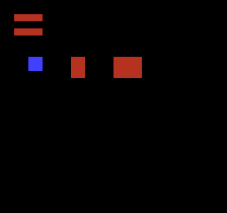
Build command
New-Item -ItemType Directory -Force .\out | Out-Null
.\kitaqfc\kitaqfc.exe .\kitaqfc\lib\runtime.c .\kitaq-docs\samples\api-examples\fc\batch3_nametable.c -I .\kitaqfc\lib -I .\kitaq-docs\samples -o .\out\batch3_nametable.nes --no-cache --no-disasm --mapper=nrom --nes-chr=.\kitaq-docs\samples\api-examples\fc\vram_shapes.chrImplementation and source
kitaqfc/lib/nametable_asset.h:20
Upload all attribute shadow bytes immediately; the caller provides safe PPU timing.
kitaqfc/lib/nametable_asset.c:90
void nes_attr_apply_now(unsigned short nt_base)
{
nes_ppu_stream_write(nes_attr_base_from_nt(nt_base), nes_attr_shadow, 64);
}nes_attr_base_from_nt
Add $3C0 to a nametable base to locate its attribute table.
Syntax
unsigned short nes_attr_base_from_nt(unsigned short nt_base);Parameters
nt_baseLogical nametable base $2000/$2400/$2800/$2C00; mirroring determines physical independence.
Return value
Returns nt_base+$3C0 without validating the input.
Usage example
result[1]=nes_attr_base_from_nt(0x2400);This is a calling fragment. Follow the stated initialization and buffer requirements before using it in a complete program.
Expected result
Combine row, pitched rectangle, fill and full-table uploads. Two red 32×8 bars appear above a blue 16×16 square and red 16×24/32×24 rectangles. Direct and queued transfers draw at distinct positions.
Build command
New-Item -ItemType Directory -Force .\out | Out-Null
.\kitaqfc\kitaqfc.exe .\kitaqfc\lib\runtime.c .\kitaq-docs\samples\api-examples\fc\batch3_nametable.c -I .\kitaqfc\lib -I .\kitaq-docs\samples -o .\out\batch3_nametable.nes --no-cache --no-disasm --mapper=nrom --nes-chr=.\kitaq-docs\samples\api-examples\fc\vram_shapes.chrImplementation and source
kitaqfc/lib/nametable_asset.h:11
Locate the 64-byte attribute table at offset 0x03C0 from a nametable base.
kitaqfc/lib/nametable_asset.c:30
unsigned short nes_attr_base_from_nt(unsigned short nt_base)
{
return (unsigned short)(nt_base + 0x03C0);
}nes_attr_queue_all
Copy the entire attribute shadow into the queue.
Syntax
unsigned char nes_attr_queue_all(unsigned short nt_base);Parameters
nt_baseLogical nametable base $2000/$2400/$2800/$2C00; mirroring determines physical independence.
Return value
Returns 1 on admission, 0 if full; one record uses 67 queue bytes.
Conditions and limits
The shared 64-byte attribute shadow occupies CPU RAM $03E0..$041F. Reserve that range. One attribute byte covers 4×4 tiles; each two-bit field selects a palette for a 2×2-tile quadrant.
Link runtime.c. The queue copies payloads for a later NMI or safe rendering-off flush. Serialize production against consumption. If a multirow operation runs out of capacity, earlier admitted rows remain queued.
Usage example
result[5]=nes_attr_queue_all(0x2000);result[6]=nes_vram_queue_used;nes_vram_queue_nmi_flush();This is a calling fragment. Follow the stated initialization and buffer requirements before using it in a complete program.
Expected result
Combine row, pitched rectangle, fill and full-table uploads. Two red 32×8 bars appear above a blue 16×16 square and red 16×24/32×24 rectangles. Direct and queued transfers draw at distinct positions.
Build command
New-Item -ItemType Directory -Force .\out | Out-Null
.\kitaqfc\kitaqfc.exe .\kitaqfc\lib\runtime.c .\kitaq-docs\samples\api-examples\fc\batch3_nametable.c -I .\kitaqfc\lib -I .\kitaq-docs\samples -o .\out\batch3_nametable.nes --no-cache --no-disasm --mapper=nrom --nes-chr=.\kitaq-docs\samples\api-examples\fc\vram_shapes.chrImplementation and source
kitaqfc/lib/nametable_asset.h:22
Copy all shadow attribute bytes into the runtime queue and return its admission result.
kitaqfc/lib/nametable_asset.c:97
unsigned char nes_attr_queue_all(unsigned short nt_base)
{
return nes_vram_queue_try_write(nes_attr_base_from_nt(nt_base), nes_attr_shadow, 64);
}nes_attr_shadow_clear
Fill all 64 shadow bytes with the same packed value.
Syntax
void nes_attr_shadow_clear(unsigned char value);Parameters
valuePacked attribute byte; e.g. 0x55 selects palette 1 in all quadrants, 0xAA selects 2.
Return value
No return value.
Conditions and limits
The shared 64-byte attribute shadow occupies CPU RAM $03E0..$041F. Reserve that range. One attribute byte covers 4×4 tiles; each two-bit field selects a palette for a 2×2-tile quadrant.
Usage example
nes_attr_shadow_clear(0x55);result[2]=nes_attr_shadow[63];This is a calling fragment. Follow the stated initialization and buffer requirements before using it in a complete program.
Expected result
Combine row, pitched rectangle, fill and full-table uploads. Two red 32×8 bars appear above a blue 16×16 square and red 16×24/32×24 rectangles. Direct and queued transfers draw at distinct positions.
Build command
New-Item -ItemType Directory -Force .\out | Out-Null
.\kitaqfc\kitaqfc.exe .\kitaqfc\lib\runtime.c .\kitaq-docs\samples\api-examples\fc\batch3_nametable.c -I .\kitaqfc\lib -I .\kitaq-docs\samples -o .\out\batch3_nametable.nes --no-cache --no-disasm --mapper=nrom --nes-chr=.\kitaq-docs\samples\api-examples\fc\vram_shapes.chrImplementation and source
kitaqfc/lib/nametable_asset.h:13
Fill all 64 shadow bytes with an already-packed attribute value.
kitaqfc/lib/nametable_asset.c:36
void nes_attr_shadow_clear(unsigned char value)
{
__memset(nes_attr_shadow, value, 64);
}nes_attr_shadow_copy
Copy a complete attribute table into RAM as the starting point for edits.
Syntax
void nes_attr_shadow_copy(unsigned char* src64);Parameters
src64Readable 64-byte packed attribute table, not an array of per-tile palette IDs.
Return value
No return value.
Conditions and limits
The shared 64-byte attribute shadow occupies CPU RAM $03E0..$041F. Reserve that range. One attribute byte covers 4×4 tiles; each two-bit field selects a palette for a 2×2-tile quadrant.
Usage example
for(i=0;i<64;i++)table[i]=0x55;nes_attr_shadow_copy(table);result[3]=nes_attr_shadow[0];This is a calling fragment. Follow the stated initialization and buffer requirements before using it in a complete program.
Expected result
Combine row, pitched rectangle, fill and full-table uploads. Two red 32×8 bars appear above a blue 16×16 square and red 16×24/32×24 rectangles. Direct and queued transfers draw at distinct positions.
Build command
New-Item -ItemType Directory -Force .\out | Out-Null
.\kitaqfc\kitaqfc.exe .\kitaqfc\lib\runtime.c .\kitaq-docs\samples\api-examples\fc\batch3_nametable.c -I .\kitaqfc\lib -I .\kitaq-docs\samples -o .\out\batch3_nametable.nes --no-cache --no-disasm --mapper=nrom --nes-chr=.\kitaq-docs\samples\api-examples\fc\vram_shapes.chrImplementation and source
kitaqfc/lib/nametable_asset.h:15
Copy an entire packed attribute table into shadow RAM without writing the PPU.
kitaqfc/lib/nametable_asset.c:42
void nes_attr_shadow_copy(unsigned char* src64)
{
__memcpy(nes_attr_shadow, src64, 64);
}nes_attr_shadow_set_quad
Replace one 2×2-tile quadrant’s palette while preserving the other fields in its byte.
Syntax
void nes_attr_shadow_set_quad(unsigned char tile_x, unsigned char tile_y, unsigned char pal_index);Parameters
tile_xLeft tile column, visible range 0..31.
tile_yTop tile row, visible range 0..29.
pal_indexLow two bits of the palette index.
Return value
No return value.
Conditions and limits
The shared 64-byte attribute shadow occupies CPU RAM $03E0..$041F. Reserve that range. One attribute byte covers 4×4 tiles; each two-bit field selects a palette for a 2×2-tile quadrant.
Keep coordinates below 32. Odd coordinates select their containing 2×2 quadrant. Visible rows are 0..29.
Usage example
nes_attr_shadow_set_quad(4,8,2);result[4]=nes_attr_shadow[17];This is a calling fragment. Follow the stated initialization and buffer requirements before using it in a complete program.
Expected result
Combine row, pitched rectangle, fill and full-table uploads. Two red 32×8 bars appear above a blue 16×16 square and red 16×24/32×24 rectangles. Direct and queued transfers draw at distinct positions.
Build command
New-Item -ItemType Directory -Force .\out | Out-Null
.\kitaqfc\kitaqfc.exe .\kitaqfc\lib\runtime.c .\kitaq-docs\samples\api-examples\fc\batch3_nametable.c -I .\kitaqfc\lib -I .\kitaq-docs\samples -o .\out\batch3_nametable.nes --no-cache --no-disasm --mapper=nrom --nes-chr=.\kitaq-docs\samples\api-examples\fc\vram_shapes.chrImplementation and source
kitaqfc/lib/nametable_asset.h:18
Replace only the chosen quadrant's palette bits, preserving its neighbors. Palette IDs are masked to two bits; tile coordinates must fit the shadow table.
kitaqfc/lib/nametable_asset.c:72
void nes_attr_shadow_set_quad(unsigned char tile_x, unsigned char tile_y, unsigned char pal_index)
{
unsigned char idx;
unsigned char shift;
unsigned char mask;
unsigned char value;
idx = nes_attr_index(tile_x, tile_y);
shift = nes_attr_shift(tile_x, tile_y);
pal_index = (unsigned char)(pal_index & 3);
value = nes_attr_shadow[idx];
mask = (unsigned char)(3 << shift);
value = (unsigned char)(value & (unsigned char)(~mask));
value = (unsigned char)(value | (unsigned char)(pal_index << shift));
nes_attr_shadow[idx] = value;
}nes_nametable_apply_now
Upload 960 tile IDs followed by a 64-byte attribute table.
Syntax
void nes_nametable_apply_now(unsigned short nt_base, unsigned char* nam960, unsigned char* attr64);Parameters
nt_baseLogical nametable base $2000/$2400/$2800/$2C00; mirroring determines physical independence.
nam960Row-major 32×30 tile array.
attr64Sixty-four packed attribute bytes; need not be the shared shadow.
Return value
No return value.
Conditions and limits
For direct transfers, set PPUCTRL increment to one and use rendering-off setup or a VBlank long enough for the upload. These helpers neither disable rendering nor wait.
A synchronous 1024-byte upload normally belongs in rendering-off setup. The helper does not spread it across frames.
Usage example
nes_nametable_apply_now(0x2000,empty,table);This is a calling fragment. Follow the stated initialization and buffer requirements before using it in a complete program.
Expected result
Combine row, pitched rectangle, fill and full-table uploads. Two red 32×8 bars appear above a blue 16×16 square and red 16×24/32×24 rectangles. Direct and queued transfers draw at distinct positions.
Build command
New-Item -ItemType Directory -Force .\out | Out-Null
.\kitaqfc\kitaqfc.exe .\kitaqfc\lib\runtime.c .\kitaq-docs\samples\api-examples\fc\batch3_nametable.c -I .\kitaqfc\lib -I .\kitaq-docs\samples -o .\out\batch3_nametable.nes --no-cache --no-disasm --mapper=nrom --nes-chr=.\kitaq-docs\samples\api-examples\fc\vram_shapes.chrImplementation and source
kitaqfc/lib/nametable_asset.h:41
Upload 960 tile bytes followed by 64 attribute bytes. This bulk operation does not disable rendering or wait for VBlank on its own.
kitaqfc/lib/nametable_asset.c:178
void nes_nametable_apply_now(unsigned short nt_base, unsigned char* nam960, unsigned char* attr64)
{
nes_ppu_stream_write(nt_base, nam960, 960);
nes_ppu_stream_write(nes_attr_base_from_nt(nt_base), attr64, 64);
}nes_nt_base_from_index
Compute a logical nametable base from the low two index bits.
Syntax
unsigned short nes_nt_base_from_index(unsigned char index);Parameters
indexIndex; 0..3 select tables, larger values wrap to the low two bits.
Return value
Returns $2000 + (index & 3)*$400.
Usage example
result[0]=nes_nt_base_from_index(5);This is a calling fragment. Follow the stated initialization and buffer requirements before using it in a complete program.
Expected result
Combine row, pitched rectangle, fill and full-table uploads. Two red 32×8 bars appear above a blue 16×16 square and red 16×24/32×24 rectangles. Direct and queued transfers draw at distinct positions.
Build command
New-Item -ItemType Directory -Force .\out | Out-Null
.\kitaqfc\kitaqfc.exe .\kitaqfc\lib\runtime.c .\kitaq-docs\samples\api-examples\fc\batch3_nametable.c -I .\kitaqfc\lib -I .\kitaq-docs\samples -o .\out\batch3_nametable.nes --no-cache --no-disasm --mapper=nrom --nes-chr=.\kitaq-docs\samples\api-examples\fc\vram_shapes.chrImplementation and source
kitaqfc/lib/nametable_asset.h:9
Mask the index to the four logical nametables and return its PPU base. Physical storage still depends on the cartridge's mirroring configuration.
kitaqfc/lib/nametable_asset.c:22
unsigned short nes_nt_base_from_index(unsigned char index)
{
index = (unsigned char)(index & 3);
return (unsigned short)(0x2000 + ((unsigned short)index << 10));
}nes_nt_queue_fill_rect
For each rectangle row, queue a fill with one tile ID.
Syntax
unsigned char nes_nt_queue_fill_rect(unsigned short nt_base, unsigned char tile_x, unsigned char tile_y, unsigned char width, unsigned char height, unsigned char value);Parameters
nt_baseLogical nametable base $2000/$2400/$2800/$2C00; mirroring determines physical independence.
tile_xLeft tile column, visible range 0..31.
tile_yTop tile row, visible range 0..29.
widthWidth in tiles.
heightHeight in tiles.
valueFill tile ID, 0..255.
Return value
Returns 1 after all rows or for zero height, 0 on admission failure.
Conditions and limits
Link runtime.c. The queue copies payloads for a later NMI or safe rendering-off flush. Serialize production against consumption. If a multirow operation runs out of capacity, earlier admitted rows remain queued.
Keep coordinates and extents within the visible nametable; normally pitch≥width. No clipping is performed. Queued row lengths must be at most 127; a normal nametable rectangle is at most 32 tiles wide.
Usage example
result[10]=nes_nt_queue_fill_rect(0x2000,16,8,4,3,1);result[11]=nes_vram_queue_used;nes_vram_queue_nmi_flush();This is a calling fragment. Follow the stated initialization and buffer requirements before using it in a complete program.
Expected result
Combine row, pitched rectangle, fill and full-table uploads. Two red 32×8 bars appear above a blue 16×16 square and red 16×24/32×24 rectangles. Direct and queued transfers draw at distinct positions.
Build command
New-Item -ItemType Directory -Force .\out | Out-Null
.\kitaqfc\kitaqfc.exe .\kitaqfc\lib\runtime.c .\kitaq-docs\samples\api-examples\fc\batch3_nametable.c -I .\kitaqfc\lib -I .\kitaq-docs\samples -o .\out\batch3_nametable.nes --no-cache --no-disasm --mapper=nrom --nes-chr=.\kitaq-docs\samples\api-examples\fc\vram_shapes.chrImplementation and source
kitaqfc/lib/nametable_asset.h:38
Queue one fill record per row, stopping on failure while retaining previously queued rows. The runtime fill-length and rectangle bounds requirements apply.
kitaqfc/lib/nametable_asset.c:157
unsigned char nes_nt_queue_fill_rect(unsigned short nt_base, unsigned char tile_x, unsigned char tile_y, unsigned char width, unsigned char height, unsigned char value)
{
unsigned char row;
unsigned short ppu_addr;
row = 0;
while (row != height)
{
ppu_addr = (unsigned short)(nt_base + ((unsigned short)(tile_y + row) << 5) + tile_x);
if (nes_vram_queue_try_fill(ppu_addr, value, width) == 0)
{
return 0;
}
row = (unsigned char)(row + 1);
}
return 1;
}nes_nt_queue_rect
For each rectangle row, copy the source into the queue.
Syntax
unsigned char nes_nt_queue_rect(unsigned short nt_base, unsigned char tile_x, unsigned char tile_y, unsigned char width, unsigned char height, unsigned char pitch, unsigned char* src);Parameters
nt_baseLogical nametable base $2000/$2400/$2800/$2C00; mirroring determines physical independence.
tile_xLeft tile column, visible range 0..31.
tile_yTop tile row, visible range 0..29.
widthWidth in tiles.
heightHeight in tiles.
pitchSource byte stride between row starts; can skip trailing padding.
srcReadable source spanning at least (height−1)*pitch+width bytes.
Return value
Returns 1 after all rows or for zero height, 0 on admission failure.
Conditions and limits
Link runtime.c. The queue copies payloads for a later NMI or safe rendering-off flush. Serialize production against consumption. If a multirow operation runs out of capacity, earlier admitted rows remain queued.
Keep coordinates and extents within the visible nametable; normally pitch≥width. No clipping is performed. Queued row lengths must be at most 127; a normal nametable rectangle is at most 32 tiles wide.
Usage example
result[8]=nes_nt_queue_rect(0x2000,10,8,2,3,4,patch);result[9]=nes_vram_queue_used;nes_vram_queue_nmi_flush();This is a calling fragment. Follow the stated initialization and buffer requirements before using it in a complete program.
Expected result
Combine row, pitched rectangle, fill and full-table uploads. Two red 32×8 bars appear above a blue 16×16 square and red 16×24/32×24 rectangles. Direct and queued transfers draw at distinct positions.
Build command
New-Item -ItemType Directory -Force .\out | Out-Null
.\kitaqfc\kitaqfc.exe .\kitaqfc\lib\runtime.c .\kitaq-docs\samples\api-examples\fc\batch3_nametable.c -I .\kitaqfc\lib -I .\kitaq-docs\samples -o .\out\batch3_nametable.nes --no-cache --no-disasm --mapper=nrom --nes-chr=.\kitaq-docs\samples\api-examples\fc\vram_shapes.chrImplementation and source
kitaqfc/lib/nametable_asset.h:35
Copy rows into the runtime queue until complete or full. Failure leaves earlier rows queued; it does not roll back a partially admitted rectangle. Widths must respect the queue literal-record limit. Pitch is source bytes per row. Each copied literal record costs width+3 queue bytes; check total admission needs when partial updates are unacceptable.
kitaqfc/lib/nametable_asset.c:137
unsigned char nes_nt_queue_rect(unsigned short nt_base, unsigned char tile_x, unsigned char tile_y, unsigned char width, unsigned char height, unsigned char pitch, unsigned char* src)
{
unsigned char row;
unsigned short ppu_addr;
row = 0;
while (row != height)
{
ppu_addr = (unsigned short)(nt_base + ((unsigned short)(tile_y + row) << 5) + tile_x);
if (nes_vram_queue_try_write(ppu_addr, src, width) == 0)
{
return 0;
}
src = src + pitch;
row = (unsigned char)(row + 1);
}
return 1;
}nes_nt_queue_row
Copy one complete 32-tile row into the queue.
Syntax
unsigned char nes_nt_queue_row(unsigned short nt_base, unsigned char row, unsigned char* src32);Parameters
nt_baseLogical nametable base $2000/$2400/$2800/$2C00; mirroring determines physical independence.
rowRow 0..29; not bounds-checked.
src32Thirty-two readable tile IDs.
Return value
Returns 1 on admission, 0 if full; uses 35 queue bytes.
Conditions and limits
Link runtime.c. The queue copies payloads for a later NMI or safe rendering-off flush. Serialize production against consumption. If a multirow operation runs out of capacity, earlier admitted rows remain queued.
Usage example
result[7]=nes_nt_queue_row(0x2000,4,row);nes_vram_queue_nmi_flush();This is a calling fragment. Follow the stated initialization and buffer requirements before using it in a complete program.
Expected result
Combine row, pitched rectangle, fill and full-table uploads. Two red 32×8 bars appear above a blue 16×16 square and red 16×24/32×24 rectangles. Direct and queued transfers draw at distinct positions.
Build command
New-Item -ItemType Directory -Force .\out | Out-Null
.\kitaqfc\kitaqfc.exe .\kitaqfc\lib\runtime.c .\kitaq-docs\samples\api-examples\fc\batch3_nametable.c -I .\kitaqfc\lib -I .\kitaq-docs\samples -o .\out\batch3_nametable.nes --no-cache --no-disasm --mapper=nrom --nes-chr=.\kitaq-docs\samples\api-examples\fc\vram_shapes.chrImplementation and source
kitaqfc/lib/nametable_asset.h:26
Copy one complete nametable row into the runtime queue.
kitaqfc/lib/nametable_asset.c:111
unsigned char nes_nt_queue_row(unsigned short nt_base, unsigned char row, unsigned char* src32)
{
unsigned short ppu_addr;
ppu_addr = (unsigned short)(nt_base + ((unsigned short)row << 5));
return nes_vram_queue_try_write(ppu_addr, src32, 32);
}nes_nt_stream_rect
For each rectangle row, read at the source pitch and upload directly to the PPU.
Syntax
void nes_nt_stream_rect(unsigned short nt_base, unsigned char tile_x, unsigned char tile_y, unsigned char width, unsigned char height, unsigned char pitch, unsigned char* src);Parameters
nt_baseLogical nametable base $2000/$2400/$2800/$2C00; mirroring determines physical independence.
tile_xLeft tile column, visible range 0..31.
tile_yTop tile row, visible range 0..29.
widthWidth in tiles.
heightHeight in tiles.
pitchSource byte stride between row starts; can skip trailing padding.
srcReadable source spanning at least (height−1)*pitch+width bytes.
Return value
No return value.
Conditions and limits
For direct transfers, set PPUCTRL increment to one and use rendering-off setup or a VBlank long enough for the upload. These helpers neither disable rendering nor wait.
Keep coordinates and extents within the visible nametable; normally pitch≥width. No clipping is performed. Queued row lengths must be at most 127; a normal nametable rectangle is at most 32 tiles wide.
Usage example
// A pitch of four skips two source bytes at the end of each row.
nes_nt_stream_rect(0x2000,4,8,2,2,4,patch);This is a calling fragment. Follow the stated initialization and buffer requirements before using it in a complete program.
Expected result
Combine row, pitched rectangle, fill and full-table uploads. Two red 32×8 bars appear above a blue 16×16 square and red 16×24/32×24 rectangles. Direct and queued transfers draw at distinct positions.
Build command
New-Item -ItemType Directory -Force .\out | Out-Null
.\kitaqfc\kitaqfc.exe .\kitaqfc\lib\runtime.c .\kitaq-docs\samples\api-examples\fc\batch3_nametable.c -I .\kitaqfc\lib -I .\kitaq-docs\samples -o .\out\batch3_nametable.nes --no-cache --no-disasm --mapper=nrom --nes-chr=.\kitaq-docs\samples\api-examples\fc\vram_shapes.chrImplementation and source
kitaqfc/lib/nametable_asset.h:29
Write each rectangle row immediately, advancing source by pitch rather than width. Caller-provided coordinates, storage and timing are not clipped or checked.
kitaqfc/lib/nametable_asset.c:120
void nes_nt_stream_rect(unsigned short nt_base, unsigned char tile_x, unsigned char tile_y, unsigned char width, unsigned char height, unsigned char pitch, unsigned char* src)
{
unsigned char row;
unsigned short ppu_addr;
row = 0;
while (row != height)
{
ppu_addr = (unsigned short)(nt_base + ((unsigned short)(tile_y + row) << 5) + tile_x);
nes_ppu_stream_write(ppu_addr, src, width);
src = src + pitch;
row = (unsigned char)(row + 1);
}
}nes_nt_stream_row
Copy one complete 32-tile row directly to the PPU.
Syntax
void nes_nt_stream_row(unsigned short nt_base, unsigned char row, unsigned char* src32);Parameters
nt_baseLogical nametable base $2000/$2400/$2800/$2C00; mirroring determines physical independence.
rowRow 0..29; not bounds-checked.
src32Thirty-two readable tile IDs.
Return value
No return value.
Conditions and limits
For direct transfers, set PPUCTRL increment to one and use rendering-off setup or a VBlank long enough for the upload. These helpers neither disable rendering nor wait.
Usage example
nes_nt_stream_row(0x2000,2,row);This is a calling fragment. Follow the stated initialization and buffer requirements before using it in a complete program.
Expected result
Combine row, pitched rectangle, fill and full-table uploads. Two red 32×8 bars appear above a blue 16×16 square and red 16×24/32×24 rectangles. Direct and queued transfers draw at distinct positions.
Build command
New-Item -ItemType Directory -Force .\out | Out-Null
.\kitaqfc\kitaqfc.exe .\kitaqfc\lib\runtime.c .\kitaq-docs\samples\api-examples\fc\batch3_nametable.c -I .\kitaqfc\lib -I .\kitaq-docs\samples -o .\out\batch3_nametable.nes --no-cache --no-disasm --mapper=nrom --nes-chr=.\kitaq-docs\samples\api-examples\fc\vram_shapes.chrImplementation and source
kitaqfc/lib/nametable_asset.h:24
Write one complete 32-tile row directly. The caller validates the row and PPU timing.
kitaqfc/lib/nametable_asset.c:103
void nes_nt_stream_row(unsigned short nt_base, unsigned char row, unsigned char* src32)
{
unsigned short ppu_addr;
ppu_addr = (unsigned short)(nt_base + ((unsigned short)row << 5));
nes_ppu_stream_write(ppu_addr, src32, 32);
}nes_game.h — Game-oriented operation macros
nes_game.h provides readable macro names for VRAM queues, OAM and metasprites, controller reads, mapper interrupts, split scrolling and FDS operations. Each macro expands to a compiler intrinsic so diagnostics and KUROSAKI metadata retain the underlying hardware operation. Its queue macros use the intrinsic queue; its OAM DMA macro has no arguments.
Choose the header set explicitly: nes_game.h and the umbrella header fc.h define the macros. For the C forms, include runtime.h or metasprite.h and link their implementation files without those macros, or remove the conflicting macros with #undef first. A zero-argument DMA macro cannot accept the C function’s page argument.
nes_fds_farcall
The FDS far-call convenience macro in nes_game.h. Expands to __fds_overlay_farcall((bank), (func)).
Syntax
#define nes_fds_farcall(bank, func) __fds_overlay_farcall((bank), (func))Parameters
bankAn expression representing the bank. It is evaluated once before the call, but the bank actually loaded comes from func’s linked placement. This does not dispatch an address into an arbitrary runtime-selected bank. Pass a matching value, such as
__bankof(func).funcName of a declared function with no parameters. The sample passes
u8 overlay_answer(void). Numeric addresses, runtime function pointers and functions requiring arguments are rejected. Use an ordinarytarget(a, b)call when arguments are needed.
Return value
The target function’s eight-bit result. If loading fails and the previous bank can be restored, the target is not called and the load error byte is returned instead. Design the result convention so an error can be distinguished from a normal result.
Conditions and limits
Use with --mapper=fds --fds-layout=fds32. Bank 0 is common code at $A000–$DFFF. Bank 1 occupies $6000–$9FFF at startup; banks 2 and above are overlays loaded into that same 16 KiB window. Place overlay code or data with directives such as #pragma fixed_bank 2.
Bank 1 is restored from a separate 16,384-byte boot PRG file at $6000. Without a manifest, the default files are ID 0 for bank 1, ID 1 for common code and ID 2 for CHR. A custom manifest must split the boot PRG into 16,384-byte files at $6000 and $A000. For banks 2 and above, the file ID is --fds-overlay-start-id (32 by default) + bank number - 2.
For a different-bank call, the previous bank is saved and restored before returning. Nested calls follow the same rule. Restoration is also attempted after a partially failed transfer. If restoration itself fails, execution stops in common code rather than returning to overwritten code. Common-bank targets and same-bank calls avoid unnecessary transfers.
BIOS calls are synchronous; this API does not keep the game loop advancing once per frame during a load. Use it from ordinary control code in the common bank, not from an interrupt handler. Display/audio continuity and coexistence with the real BIOS require separate verification.
These captures use an original LoadFiles calling-convention fixture to check compiled CPU code, memory transfers and every display pixel. They do not verify the real BIOS, disk-transfer timing, CRC or hardware boot. KUROSAKI has a partial FDS controller model; ordinary execution without this fixture does not establish the same transfer results.
The first compiler command below builds the downloadable sample. The Python checker builds all five lessons with and without optimization, then checks them in KUROSAKI. It creates and removes a temporary fixture from scripts/fds_abi_fixture.py; no external BIOS is needed for these checks. The fixture is not a BIOS for normal games.
Usage example
#pragma fixed_bank 0
#include "fc_fds_scene.h"
u8 choose_overlay(void){fds_result[2]++;return 2;}
#pragma fixed_bank 2
u8 overlay_answer(void){fds_result[1]++;fds_result[3]=__fds_current_bank();return 42;}
#pragma fixed_bank 0
void main(void) {
__irq_disable();fds_result[1]=0;fds_result[2]=0;
fds_result[0]=nes_fds_farcall(choose_overlay(),overlay_answer);
fds_result[4]=__fds_current_bank();fds_result[15]=165;
fds_call_screen();while(1){m_wait();}
}This is a calling fragment. Follow the stated initialization and buffer requirements before using it in a complete program.
Expected result
With the original LoadFiles ABI fixture, RETURN VALUE is 042; CALLBACK COUNT and BANK EXPR COUNT are both 001; BANK IN CALLBACK is 002; BANK AFTER RETURN is 001. The function and bank expression ran once each, and bank 1 was restored after calling bank 2. This is not a capture of a real disk-transfer test.

Build command
New-Item -ItemType Directory -Force .\out | Out-Null
.\kitaqfc\kitaqfc.exe .\kitaq-docs\samples\api-examples\fc\fds_call_alias.c -I .\kitaqfc\lib -I .\kitaq-docs\samples -o .\out\fds_call_alias.fds --mapper=fds --fds-layout=fds32 --fds-no-license-bypass --fds-overlay-trim --nes-chr=.\kitaq-docs\samples\font.chr --no-cache --no-disasm
python .\kitaq-docs\tools\check_fds_load_examples.pyImplementation and source
kitaqfc/lib/nes_game.h:41
nes_fds_load_bank
The nes_game.h macro spelling of __fds_load_bank(), for explicitly loading a logical bank through the game convenience header.
Syntax
#define nes_fds_load_bank(bank) __fds_load_bank((bank))Parameters
bankLogical bank to load, 1..254. Bank 0 is common code, not a loadable window; 255 is reserved for unknown residency. For bank 2 and above, the calculated file ID must also fit in 0..254.
Return value
Zero on success. Returns 255 for bank 0 or 255, a file-ID overflow, or bank 1 without a restore file. A failed BIOS transfer returns its error byte. Argument failures before a transfer preserve the residency record; failed BIOS transfers mark it 255 (unknown).
Conditions and limits
Use with --mapper=fds --fds-layout=fds32. Bank 0 is common code at $A000–$DFFF. Bank 1 occupies $6000–$9FFF at startup; banks 2 and above are overlays loaded into that same 16 KiB window. Place overlay code or data with directives such as #pragma fixed_bank 2.
Expands to __fds_load_bank((bank)) without duplicating evaluation of bank. Argument limits, residency guarding and error behavior are those of the intrinsic.
Bank 1 is restored from a separate 16,384-byte boot PRG file at $6000. Without a manifest, the default files are ID 0 for bank 1, ID 1 for common code and ID 2 for CHR. A custom manifest must split the boot PRG into 16,384-byte files at $6000 and $A000. For banks 2 and above, the file ID is --fds-overlay-start-id (32 by default) + bank number - 2.
With the default residency guard, an already-recorded bank returns zero without a disk read. --fds-no-overlay-guard disables this shortcut in __fds_load_bank(). A successful load records the requested bank. The record is not a validation of memory contents.
Loading a different bank directly from code in the $6000–$9FFF window can overwrite the executing function or its return address. This sample places the caller and display code in #pragma fixed_bank 0. To call a function in another bank and return, use __fds_overlay_farcall() or an ordinary typed function call.
BIOS calls are synchronous; this API does not keep the game loop advancing once per frame during a load. Use it from ordinary control code in the common bank, not from an interrupt handler. Display/audio continuity and coexistence with the real BIOS require separate verification.
These captures use an original LoadFiles calling-convention fixture to check compiled CPU code, memory transfers and every display pixel. They do not verify the real BIOS, disk-transfer timing, CRC or hardware boot. KUROSAKI has a partial FDS controller model; ordinary execution without this fixture does not establish the same transfer results.
The first compiler command below builds the downloadable sample. The Python checker builds all five lessons with and without optimization, then checks them in KUROSAKI. It creates and removes a temporary fixture from scripts/fds_abi_fixture.py; no external BIOS is needed for these checks. The fixture is not a BIOS for normal games.
Usage example
#pragma fixed_bank 0
#include "fc_fds_scene.h"
#pragma fixed_bank 2
__prg_rom u8 bank_payload[4]={11,22,33,44};
#pragma fixed_bank 0
void main(void) {
__irq_disable();
fds_result[0]=__fds_load_bank(2);
fds_result[1]=__fds_current_bank();
fds_result[2]=__fds_require_bank(2);
fds_result[3]=bank_payload[0];fds_result[4]=bank_payload[3];
fds_result[5]=nes_fds_load_bank(1);
fds_result[6]=__fds_current_bank();
fds_result[7]=__fds_require_bank(1);
fds_result[8]=__fds_load_bank(0);
fds_result[9]=__fds_load_bank(255);
fds_result[15]=165;
m_init();m_text(2,2,"FDS DATA WINDOW");m_wait();
m_text(2,5,"LOAD BANK 2 STATUS");fds_number(25,5,fds_result[0]);m_wait();
m_text(2,7,"FIRST / LAST BYTE");fds_number(21,7,fds_result[3]);fds_number(25,7,fds_result[4]);m_wait();
m_text(2,9,"REQUIRE SAME BANK");fds_number(25,9,fds_result[2]);m_wait();
m_text(2,11,"RESTORE BANK 1");fds_number(25,11,fds_result[5]);m_wait();
m_text(2,13,"RESIDENT BANK");fds_number(25,13,fds_result[6]);m_wait();
m_text(2,16,"INVALID BANKS 0 / 255");m_wait();
fds_number(2,18,fds_result[8]);fds_number(8,18,fds_result[9]);m_wait();
while(1){m_wait();}
}This is a calling fragment. Follow the stated initialization and buffer requirements before using it in a complete program.
Expected result
With the original LoadFiles ABI fixture, LOAD BANK 2 STATUS, REQUIRE SAME BANK and RESTORE BANK 1 are all 000. FIRST / LAST BYTE shows 011 and 044 from the transferred four-byte payload; RESIDENT BANK is 001 after restoration. Invalid banks 0 and 255 each return 255. Requiring the same bank issues no extra load: the checked file requests are 32 then 0.
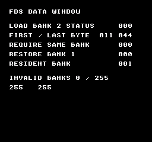
Build command
New-Item -ItemType Directory -Force .\out | Out-Null
.\kitaqfc\kitaqfc.exe .\kitaq-docs\samples\api-examples\fc\fds_bank_load.c -I .\kitaqfc\lib -I .\kitaq-docs\samples -o .\out\fds_bank_load.fds --mapper=fds --fds-layout=fds32 --fds-no-license-bypass --fds-overlay-trim --nes-chr=.\kitaq-docs\samples\font.chr --no-cache --no-disasm
python .\kitaq-docs\tools\check_fds_load_examples.pyImplementation and source
kitaqfc/lib/nes_game.h:40
nes_fds_wave_load
Macro forwarding its array to __fds_wave_load to load a 64-byte wave.
Syntax
#define nes_fds_wave_load(wave64) __fds_wave_load((wave64))Parameters
wave64Sixty-four FDS wave bytes, each a 6-bit amplitude 0..63. NULL is not checked.
Return value
No return value. Changes sound registers or driver state.
Conditions and limits
Build a .fds image with --mapper=fds. This lesson operates sound without disk I/O. The recording uses KUROSAKI’s direct RAM boot and audio model. Its empty test firmware backing implements no BIOS routines and is not distributed. Normal disk boot and physical hardware require an appropriate boot environment.
Usage example
// Mapper 20 sound lesson: original 64-step triangle and two sustained pitches.
#include "fc_sound_example.h"
#include "fds_sound.h"
#include "nes_game.h"
__location(0x4087) u8 mod_control;
__location(0x4085) u8 mod_counter;
u8 triangle[64]; u8 modulation[32];
void main(void) {
u8 i;
sound_begin("FDS WAVE AND VOLUME");
for(i=0;i<32;i++) { triangle[i]=(u8)(i*2); triangle[63-i]=(u8)(i*2); modulation[i]=0; }
__fds_sound_enable();
// Halt/reset modulation before writing the 32 values (each writes two slots).
mod_control=0x80; mod_counter=0;
__fds_mod_load(modulation);
__fds_wave_load(triangle);
sound_result[0]=*((u8*)0x4040); sound_result[1]=*((u8*)0x405F);
__fds_freq_set(1031);
__fds_volume_set(24);
sound_wait(60);
__fds_volume_set(0); sound_wait(30);
// This macro forwards the same 64-byte load. Use raw envelope registers.
nes_fds_wave_load(triangle);
__fds_env_set(0x98,0x80,0);
__fds_freq_set(1545);
sound_wait(60);
__fds_volume_set(0); sound_wait(30);
sound_end();
}Expected result
An original 64-step triangle plays at about 440 Hz, pauses, plays at about 660 Hz, then stops. The second note uses nes_fds_wave_load and raw envelope settings. This verifies the audio model and direct boot, not BIOS-driven disk startup.
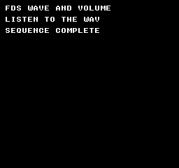
Build command
New-Item -ItemType Directory -Force .\out | Out-Null
.\kitaqfc\kitaqfc.exe .\kitaq-docs\samples\api-examples\fc\sound_fds.c -I .\kitaqfc\lib -I .\kitaq-docs\samples -o .\out\fc-fds.fds --mapper=fds --nes-chr=.\kitaq-docs\samples\font.chr --no-cache --no-disasmImplementation and source
kitaqfc/lib/nes_game.h:39
#define nes_fds_wave_load(wave64) __fds_wave_load((wave64))nes_mapper_irq_ack
Handler acknowledgment macro from nes_game.h. Expands to __mapper_irq_ack(), clearing the request and disabling it at the same time.
Syntax
#define nes_mapper_irq_ack() __mapper_irq_ack()Return value
No return value.
Conditions and limits
Intrinsic declarations are in intrinsics.h. Include nes_game.h for the nes_mapper_irq_* macros. Select the board at build time with --mapper.
MMC3 only. Supply a __nes_irq handler, qualified PPU A12 transitions, mapper IRQ enable and CPU __irq_enable(). The sample enables rendering with background patterns at $0000 and sprite patterns at $1000. This lesson does not verify synchronization to an exact line on physical hardware.
MMC3 acknowledgment and disable both write $E000. This clears the current request and disables subsequent requests. Call __mapper_irq_enable() again at the intended time to arm another interrupt. Neither operation changes the CPU interrupt mask or NMI enable.
The compiler emits RTI for a custom interrupt handler, but the handler must preserve any A/X/Y registers and shared scratch that it changes. The sample saves A/X/Y and uses only a byte increment and argument-free acknowledgment. If you add C calls, also inspect the shared storage they use.
Usage example
void __nes_irq(void) {
__asm {
PHA
TXA
PHA
TYA
PHA
}
irq_count++;
if (irq_phase == 1) { nes_mapper_irq_ack(); }
else { __mapper_irq_ack(); }
__asm {
PLA
TAY
PLA
TAX
PLA
}
}This is a calling fragment. Follow the stated initialization and buffer requirements before using it in a complete program.
Expected result
The MMC3 sample displays CHR markers 19/20, 21/22 and 23/24. CIRAM reads show A B A B for vertical mirroring and A A B B for horizontal mirroring. IRQ counts are 01→02→03→03: each of the first three explicit enables permits one interrupt; the count stays unchanged after disable. Each stage waits six frames.
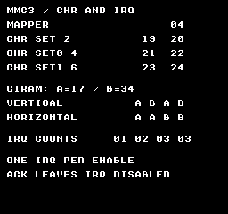
Build command
New-Item -ItemType Directory -Force .\out | Out-Null
.\kitaqfc\kitaqfc.exe .\kitaq-docs\samples\api-examples\fc\mapper_controls.c -I .\kitaqfc\lib -I .\kitaq-docs\samples -o .\out\mapper_controls.nes --mapper=mmc3 --nes-chr=.\kitaq-docs\samples\mapper_banks.chr --no-cache --no-disasmImplementation and source
kitaqfc/lib/nes_game.h:36
nes_mapper_irq_disable
Disable MMC3 IRQ and clear its pending request through nes_game.h. Expands to __mapper_irq_disable().
Syntax
#define nes_mapper_irq_disable() __mapper_irq_disable()Return value
No return value.
Conditions and limits
Intrinsic declarations are in intrinsics.h. Include nes_game.h for the nes_mapper_irq_* macros. Select the board at build time with --mapper.
MMC3 only. Supply a __nes_irq handler, qualified PPU A12 transitions, mapper IRQ enable and CPU __irq_enable(). The sample enables rendering with background patterns at $0000 and sprite patterns at $1000. This lesson does not verify synchronization to an exact line on physical hardware.
MMC3 acknowledgment and disable both write $E000. This clears the current request and disables subsequent requests. Call __mapper_irq_enable() again at the intended time to arm another interrupt. Neither operation changes the CPU interrupt mask or NMI enable.
The compiler emits RTI for a custom interrupt handler, but the handler must preserve any A/X/Y registers and shared scratch that it changes. The sample saves A/X/Y and uses only a byte increment and argument-free acknowledgment. If you add C calls, also inspect the shared storage they use.
Usage example
nes_mapper_irq_disable();
for (i=0;i<6;i++) { m_wait(); }
mapper_result[18]=irq_count;This is a calling fragment. Follow the stated initialization and buffer requirements before using it in a complete program.
Expected result
The MMC3 sample displays CHR markers 19/20, 21/22 and 23/24. CIRAM reads show A B A B for vertical mirroring and A A B B for horizontal mirroring. IRQ counts are 01→02→03→03: each of the first three explicit enables permits one interrupt; the count stays unchanged after disable. Each stage waits six frames.
Build command
New-Item -ItemType Directory -Force .\out | Out-Null
.\kitaqfc\kitaqfc.exe .\kitaq-docs\samples\api-examples\fc\mapper_controls.c -I .\kitaqfc\lib -I .\kitaq-docs\samples -o .\out\mapper_controls.nes --mapper=mmc3 --nes-chr=.\kitaq-docs\samples\mapper_banks.chr --no-cache --no-disasmImplementation and source
kitaqfc/lib/nes_game.h:35
nes_mapper_irq_enable
Enable MMC3 IRQ through nes_game.h. Expands to __mapper_irq_enable() without changing the CPU interrupt mask.
Syntax
#define nes_mapper_irq_enable() __mapper_irq_enable()Return value
No return value.
Conditions and limits
Intrinsic declarations are in intrinsics.h. Include nes_game.h for the nes_mapper_irq_* macros. Select the board at build time with --mapper.
MMC3 only. Supply a __nes_irq handler, qualified PPU A12 transitions, mapper IRQ enable and CPU __irq_enable(). The sample enables rendering with background patterns at $0000 and sprite patterns at $1000. This lesson does not verify synchronization to an exact line on physical hardware.
MMC3 acknowledgment and disable both write $E000. This clears the current request and disables subsequent requests. Call __mapper_irq_enable() again at the intended time to arm another interrupt. Neither operation changes the CPU interrupt mask or NMI enable.
The compiler emits RTI for a custom interrupt handler, but the handler must preserve any A/X/Y registers and shared scratch that it changes. The sample saves A/X/Y and uses only a byte increment and argument-free acknowledgment. If you add C calls, also inspect the shared storage they use.
Usage example
nes_mapper_irq_set(15); nes_mapper_irq_enable();
for (i=0;i<6;i++) { m_wait(); }
mapper_result[16]=irq_count;This is a calling fragment. Follow the stated initialization and buffer requirements before using it in a complete program.
Expected result
The MMC3 sample displays CHR markers 19/20, 21/22 and 23/24. CIRAM reads show A B A B for vertical mirroring and A A B B for horizontal mirroring. IRQ counts are 01→02→03→03: each of the first three explicit enables permits one interrupt; the count stays unchanged after disable. Each stage waits six frames.
Build command
New-Item -ItemType Directory -Force .\out | Out-Null
.\kitaqfc\kitaqfc.exe .\kitaq-docs\samples\api-examples\fc\mapper_controls.c -I .\kitaqfc\lib -I .\kitaq-docs\samples -o .\out\mapper_controls.nes --mapper=mmc3 --nes-chr=.\kitaq-docs\samples\mapper_banks.chr --no-cache --no-disasmImplementation and source
kitaqfc/lib/nes_game.h:34
nes_mapper_irq_set
MMC3 latch-setting macro from nes_game.h. It passes its argument once to __mapper_irq_set and requests reload.
Syntax
#define nes_mapper_irq_set(scanline) __mapper_irq_set((scanline))Parameters
scanlineAn 8-bit counter latch value, 0..255, not an absolute screen Y coordinate. Reload timing and qualified PPU A12 transitions determine when it fires. Zero is valid and does not mean “disable interrupts.”
Return value
No return value.
Conditions and limits
Intrinsic declarations are in intrinsics.h. Include nes_game.h for the nes_mapper_irq_* macros. Select the board at build time with --mapper.
MMC3 only. Supply a __nes_irq handler, qualified PPU A12 transitions, mapper IRQ enable and CPU __irq_enable(). The sample enables rendering with background patterns at $0000 and sprite patterns at $1000. This lesson does not verify synchronization to an exact line on physical hardware.
MMC3 acknowledgment and disable both write $E000. This clears the current request and disables subsequent requests. Call __mapper_irq_enable() again at the intended time to arm another interrupt. Neither operation changes the CPU interrupt mask or NMI enable.
The compiler emits RTI for a custom interrupt handler, but the handler must preserve any A/X/Y registers and shared scratch that it changes. The sample saves A/X/Y and uses only a byte increment and argument-free acknowledgment. If you add C calls, also inspect the shared storage they use.
Usage example
nes_mapper_irq_set(15); nes_mapper_irq_enable();
for (i=0;i<6;i++) { m_wait(); }
mapper_result[16]=irq_count;This is a calling fragment. Follow the stated initialization and buffer requirements before using it in a complete program.
Expected result
The MMC3 sample displays CHR markers 19/20, 21/22 and 23/24. CIRAM reads show A B A B for vertical mirroring and A A B B for horizontal mirroring. IRQ counts are 01→02→03→03: each of the first three explicit enables permits one interrupt; the count stays unchanged after disable. Each stage waits six frames.
Build command
New-Item -ItemType Directory -Force .\out | Out-Null
.\kitaqfc\kitaqfc.exe .\kitaq-docs\samples\api-examples\fc\mapper_controls.c -I .\kitaqfc\lib -I .\kitaq-docs\samples -o .\out\mapper_controls.nes --mapper=mmc3 --nes-chr=.\kitaq-docs\samples\mapper_banks.chr --no-cache --no-disasmImplementation and source
kitaqfc/lib/nes_game.h:33
nes_oam_clear
Macro from nes_game.h: expands to the intrinsic shown in the syntax. Include this header; no C implementation file is needed for this operation.
Hide all 64 sprites in the page-02 shadow buffer by setting each Y byte to 0xF0. Tile numbers, attributes and X coordinates remain unchanged.
Syntax
#define nes_oam_clear() __oam_clear()Return value
None (void).
Conditions and limits
These operations edit CPU RAM at 0x0200–0x02FF; they do not immediately change hardware OAM. Transfer the completed page with __oam_dma. They do not maintain the sprite library’s allocation flags, coordinate arrays or active count. Keep interrupt handlers from editing or transferring a partially prepared page.
Usage example
nes_sprite_set(63,144,111,128,0); // Seed the CLEAR row with a visible entry.
nes_oam_clear(); // Set every Y byte to 240; tile, attributes and X are retained.This is a calling fragment. Follow the stated initialization and buffer requirements before using it in a complete program.
Expected result
The example separates each operation into a labeled row. SET and MOVE show 8×8 right arrows at (144,16) and (144,32); TILE shows a green square at (144,48); ATTR shows the arrow flipped both ways at (144,64). HIDE at (144,80) and CLEAR at (144,112) must stay empty. META shows a pair at (136,96) and (144,96), with the second arrow mirrored horizontally. NEXT 07 is the next write position after writing slots 5 and 6. Arrows have red edges, green shafts and blue tip details. Verification compares 8,704 pixels per image and checks the transferred OAM bytes; physical hardware is untested.
The ALIASES program uses nes_game.h macros to prepare the labeled rows and sends page 02 with nes_oam_dma(). TRANSFER shows the 8×8 arrow at (144,128). This demonstrates the macro form without linking runtime.c or metasprite.c.
Build command
New-Item -ItemType Directory -Force .\out | Out-Null
.\kitaqfc\kitaqfc.exe .\kitaq-docs\samples\api-examples\fc\oam_aliases.c -I .\kitaqfc\lib -I .\kitaq-docs\samples --nes-chr=.\kitaq-docs\samples\sprite_example.chr -o .\out\oam_aliases.nes --no-cache --no-disasmImplementation and source
kitaqfc/lib/nes_game.h:21
#define nes_oam_clear() __oam_clear()nes_oam_dma
This name has two forms. The zero-argument macro nes_oam_dma() sends page 02 through __oam_dma(). The C function nes_oam_dma(page) sends the selected 256-byte CPU page. Both reset OAMADDR to zero and transfer the complete page without changing the source.
Syntax
#define nes_oam_dma() __oam_dma()
// C function declared in runtime.h:
void nes_oam_dma(unsigned char page);Parameters
page (C)High byte of the source CPU address: pass
4for0x0400–0x04FF, not0x0400. Supply a complete readable 256-byte page and keep any required bank mapped. Avoid pages containing I/O registers, whose reads can have side effects. No source validation is performed.
Return value
None (void).
Conditions and limits
Choose the header set explicitly: nes_game.h and the umbrella header fc.h define the macros. For the C forms, include runtime.h or metasprite.h and link their implementation files without those macros, or remove the conflicting macros with #undef first. A zero-argument DMA macro cannot accept the C function’s page argument.
The C metasprite functions require nes_oam_shadow[256]. runtime.c defines it at 0x0200, also reserves 0x0300–0x03BF for its VRAM queue and supplies __nes_nmi. Include each implementation once and coordinate the interrupt handler with the rest of the program.
Call DMA during VBlank or with rendering disabled. Neither form waits for VBlank. Prepare the whole source page first, then transfer it; do not let an interrupt change that page midway through preparation.
Usage example
m_wait();nes_oam_dma(); // Expand to the page-02 compiler intrinsic.This is a calling fragment. Follow the stated initialization and buffer requirements before using it in a complete program.
Expected result
The example separates each operation into a labeled row. SET and MOVE show 8×8 right arrows at (144,16) and (144,32); TILE shows a green square at (144,48); ATTR shows the arrow flipped both ways at (144,64). HIDE at (144,80) and CLEAR at (144,112) must stay empty. META shows a pair at (136,96) and (144,96), with the second arrow mirrored horizontally. NEXT 07 is the next write position after writing slots 5 and 6. Arrows have red edges, green shafts and blue tip details. Verification compares 8,704 pixels per image and checks the transferred OAM bytes; physical hardware is untested.
The ALIASES program uses nes_game.h macros to prepare the labeled rows and sends page 02 with nes_oam_dma(). TRANSFER shows the 8×8 arrow at (144,128). This demonstrates the macro form without linking runtime.c or metasprite.c.
Build command
New-Item -ItemType Directory -Force .\out | Out-Null
.\kitaqfc\kitaqfc.exe .\kitaq-docs\samples\api-examples\fc\oam_aliases.c -I .\kitaqfc\lib -I .\kitaq-docs\samples --nes-chr=.\kitaq-docs\samples\sprite_example.chr -o .\out\oam_aliases.nes --no-cache --no-disasmUsage example
m_wait();nes_oam_dma(4); // C function: source address high byte, 0x0400 -> 4.This is a calling fragment. Follow the stated initialization and buffer requirements before using it in a complete program.
Expected result
C-RUNTIME exercises the C functions together. PAIR shows two 8×8 arrows at (144,32) and (152,32); the second is mirrored horizontally. A second pair at y=64 is hidden, so HIDE RANGE must be empty. Successive draws use slots 4–5 and 6–7, producing NEXT 08. Page 04 copies page 02, then changes slot 8 from arrow tile 128 to square tile 129. nes_oam_dma(4) must show a green square at (144,96) beside PAGE 04 while page 02 retains tile 128.
Arrows use red edges, green shafts and blue tip details; square tile 129 is green. Verification compares 8,704 colored pixels and all 256 transferred OAM bytes per image, plus the displayed labels. Physical hardware is untested.
Build command
New-Item -ItemType Directory -Force .\out | Out-Null
.\kitaqfc\kitaqfc.exe .\kitaq-docs\samples\api-examples\fc\oam_c_helpers.c -I .\kitaqfc\lib -I .\kitaq-docs\samples --nes-chr=.\kitaq-docs\samples\sprite_example.chr -o .\out\oam_c_helpers.nes --no-cache --no-disasmImplementation and source
kitaqfc/lib/nes_game.h:23
kitaqfc/lib/runtime.c:245
void nes_oam_dma(unsigned char page)
{
OAMADDR = 0;
OAMDMA = page;
}nes_pad1
Function-like macro that expands exactly to __pad_read1_safe(). It reads controller 1 and returns its raw NES mask; it is not an alias for the cached input_current() state.
Syntax
#define nes_pad1() __pad_read1_safe()Return value
An 8-bit held-button mask in NES raw order. Each set bit identifies a pressed button; 0 means none. It is not a normalized Boolean.
Conditions and limits
NES raw layout: A=0x01, B=0x02, SELECT=0x04, START=0x08, UP=0x10, DOWN=0x20, LEFT=0x40, RIGHT=0x80. A set bit means pressed. Use these values with nes_pad_* and raw __pad_* results, not the shared BTN_* masks from input.h.
This call reads a fresh hardware snapshot; it does not update input_* or nes_pad1_* cached state and does not generate pressed/released edges or repeats. Read once, save the result, and derive edges against your saved previous mask when needed.
The safe reader performs pairs of complete reads until the two masks match. Each read strobes $4016, restarting both controllers' serial streams. There is no retry limit. This consistency check does not establish compatibility with every DMC/peripheral combination.
Usage example
alias1=nes_pad1(); // Macro for __pad_read1_safe(), using NES raw bits.This is a calling fragment. Follow the stated initialization and buffer requirements before using it in a complete program.
Expected result
This program compares both controller ports, ordinary and repeated reads, mask filters and the shorthand macros. Hold A + Right on controller 1 and B + Left on controller 2. RAW P1, SAFE P1 and ALIAS P1 are 129; the three P2 values are 66. BUTTONS P1 is 1 and DIRS P1 is 128: filtering directions preserves their high-bit positions. FAILED CHECKS must be 0. The captured values remain on screen.

Build command
New-Item -ItemType Directory -Force .\out | Out-Null
.\kitaqfc\kitaqfc.exe .\kitaq-docs\samples\api-examples\fc\input_raw.c -I .\kitaqfc\lib -I .\kitaq-docs\samples -o .\out\input_raw.nes --mapper=nrom --nes-chr=.\kitaq-docs\samples\font.chr --no-disasm --no-cacheImplementation and source
kitaqfc/lib/nes_game.h:30
nes_pad2
Function-like macro that expands exactly to __pad_read2_safe(). It reads controller 2 and returns its raw NES mask; it is not an alias for the cached input_current() state.
Syntax
#define nes_pad2() __pad_read2_safe()Return value
An 8-bit held-button mask in NES raw order. Each set bit identifies a pressed button; 0 means none. It is not a normalized Boolean.
Conditions and limits
NES raw layout: A=0x01, B=0x02, SELECT=0x04, START=0x08, UP=0x10, DOWN=0x20, LEFT=0x40, RIGHT=0x80. A set bit means pressed. Use these values with nes_pad_* and raw __pad_* results, not the shared BTN_* masks from input.h.
This call reads a fresh hardware snapshot; it does not update input_* or nes_pad1_* cached state and does not generate pressed/released edges or repeats. Read once, save the result, and derive edges against your saved previous mask when needed.
The safe reader performs pairs of complete reads until the two masks match. Each read strobes $4016, restarting both controllers' serial streams. There is no retry limit. This consistency check does not establish compatibility with every DMC/peripheral combination.
Usage example
alias2=nes_pad2(); // Macro for __pad_read2_safe(), using NES raw bits.This is a calling fragment. Follow the stated initialization and buffer requirements before using it in a complete program.
Expected result
This program compares both controller ports, ordinary and repeated reads, mask filters and the shorthand macros. Hold A + Right on controller 1 and B + Left on controller 2. RAW P1, SAFE P1 and ALIAS P1 are 129; the three P2 values are 66. BUTTONS P1 is 1 and DIRS P1 is 128: filtering directions preserves their high-bit positions. FAILED CHECKS must be 0. The captured values remain on screen.
Build command
New-Item -ItemType Directory -Force .\out | Out-Null
.\kitaqfc\kitaqfc.exe .\kitaq-docs\samples\api-examples\fc\input_raw.c -I .\kitaqfc\lib -I .\kitaq-docs\samples -o .\out\input_raw.nes --mapper=nrom --nes-chr=.\kitaq-docs\samples\font.chr --no-disasm --no-cacheImplementation and source
kitaqfc/lib/nes_game.h:31
nes_split_scroll_sprite0
Screen-split macro from nes_game.h. It passes X and Y once each to __split_scroll_sprite0, performing the same wait and scroll writes.
Syntax
#define nes_split_scroll_sprite0(x,y) __split_scroll_sprite0((x),(y))Parameters
xHorizontal scroll value, 0..255, not an object’s screen X coordinate. The sample uses 32 to display the lower part of the same background shifted left by 32 pixels.
yTemporary vertical scroll setting, 0..255; the usual visible range is 0..239. This helper writes $2005, so it does not immediately change the live vertical position during rendering. The horizontal-split sample passes zero.
Return value
No return value.
Conditions and limits
Overlap an opaque pixel of OAM sprite 0 with an opaque background pixel, with both layers enabled. The behind-background priority flag still permits a hit. The leftmost eight pixels require the corresponding layer enables; overlap at X=255 cannot trigger a hit.
Poll PPUSTATUS ($2002) bit 6 until it is clear, then until it is set. If a hit has already occurred when called, wait for a fresh hit in the next frame. Reading the flag does not acknowledge it; the PPU clears it during pre-render.
There is no timeout or failure return. A hidden sprite 0, transparent background, disabled rendering or another setup without overlap leaves the call blocked. Guarantee a hit before calling. CPU IRQ enable is not required, and this function does not enable NMI. The sample enables NMI for its separate frame wait.
Reads of $2002 also affect the shared PPU address/scroll write latch and the VBlank flag. Do not split a two-write $2005/$2006 operation around this call. Use it from the foreground, not from an NMI/IRQ handler.
After the hit, read $2002 and write X then Y to $2005. Fine X changes immediately; coarse X takes effect at the next horizontal reload. Y normally takes effect at the next pre-render reload, unless another scroll write replaces it first. This is not an immediate arbitrary-X/Y raster repositioning operation.
Polling and instruction execution delay the writes. KUROSAKI renders by scanline, so these captures do not establish a dot-exact hardware boundary. The sample places the change inside the white band at Y=96..103, keeping boundary uncertainty away from the blue and red bars.
The shared header fc_sprite0_scene.h prepares original blue/red bars and a white horizontal band. Sprite 0 sits at screen (16,96), hidden behind the background; its raw OAM Y is 95 because display Y is OAM Y+1. Each frame restores the top scroll to zero during VBlank before waiting for the hit.
NESdev: PPU programmer reference
Usage example
void main(void) {
s0_prepare();
while (1) {
s0_frame();
nes_split_scroll_sprite0(32,0);
s0_completed++;
}
}This is a calling fragment. Follow the stated initialization and buffer requirements before using it in a complete program.
Expected result
Above the white band, blue is at X=64..95 and red at X=160..191. Below it, from Y=104 onward, blue moves to X=32..63 and red to X=128..159: only the lower area shifts left by 32 pixels. The horizontal band is at Y=96..103 and the bars end at Y=207. Verification checks one completion per frame and every image pixel’s position and color.
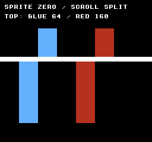
Build command
New-Item -ItemType Directory -Force .\out | Out-Null
.\kitaqfc\kitaqfc.exe .\kitaq-docs\samples\api-examples\fc\sprite0_split_alias.c -I .\kitaqfc\lib -I .\kitaq-docs\samples -o .\out\sprite0_split_alias.nes --mapper=nrom --nes-chr=.\kitaq-docs\samples\sprite0_scene.chr --no-cache --no-disasmImplementation and source
kitaqfc/lib/nes_game.h:37
nes_sprite_hide
Macro from nes_game.h: expands to the intrinsic shown in the syntax. Include this header; no C implementation file is needed for this operation.
Hide one shadow sprite by setting its Y byte to 0xF0. Its X, tile and attributes remain available for reuse. The function does not free an allocation or change the sprite library’s active count.
Syntax
#define nes_sprite_hide(i) __sprite_hide((i))Parameters
iSprite entry number, 0–63, not a byte offset. The implementation multiplies it by four using an 8-bit cursor; out-of-range values wrap modulo 64 and can overwrite another entry. No allocation check is performed.
Return value
None (void).
Conditions and limits
These operations edit CPU RAM at 0x0200–0x02FF; they do not immediately change hardware OAM. Transfer the completed page with __oam_dma. They do not maintain the sprite library’s allocation flags, coordinate arrays or active count. Keep interrupt handlers from editing or transferring a partially prepared page.
Usage example
nes_sprite_hide(4); // The HIDE row remains empty after DMA.This is a calling fragment. Follow the stated initialization and buffer requirements before using it in a complete program.
Expected result
The example separates each operation into a labeled row. SET and MOVE show 8×8 right arrows at (144,16) and (144,32); TILE shows a green square at (144,48); ATTR shows the arrow flipped both ways at (144,64). HIDE at (144,80) and CLEAR at (144,112) must stay empty. META shows a pair at (136,96) and (144,96), with the second arrow mirrored horizontally. NEXT 07 is the next write position after writing slots 5 and 6. Arrows have red edges, green shafts and blue tip details. Verification compares 8,704 pixels per image and checks the transferred OAM bytes; physical hardware is untested.
The ALIASES program uses nes_game.h macros to prepare the labeled rows and sends page 02 with nes_oam_dma(). TRANSFER shows the 8×8 arrow at (144,128). This demonstrates the macro form without linking runtime.c or metasprite.c.
Build command
New-Item -ItemType Directory -Force .\out | Out-Null
.\kitaqfc\kitaqfc.exe .\kitaq-docs\samples\api-examples\fc\oam_aliases.c -I .\kitaqfc\lib -I .\kitaq-docs\samples --nes-chr=.\kitaq-docs\samples\sprite_example.chr -o .\out\oam_aliases.nes --no-cache --no-disasmImplementation and source
kitaqfc/lib/nes_game.h:26
#define nes_sprite_hide(i) __sprite_hide((i))nes_sprite_move
Macro from nes_game.h: expands to the intrinsic shown in the syntax. Include this header; no C implementation file is needed for this operation.
Change only the X and Y bytes of one shadow sprite. Its tile number and attributes stay intact, so the same graphic moves without changing its palette or flips.
Syntax
#define nes_sprite_move(i,x,y) __sprite_move((i),(x),(y))Parameters
iSprite entry number, 0–63, not a byte offset. The implementation multiplies it by four using an 8-bit cursor; out-of-range values wrap modulo 64 and can overwrite another entry. No allocation check is performed.
xHorizontal position in pixels, stored as an unsigned byte. This is a pixel coordinate, not a tile coordinate.
yRaw OAM Y byte. Use visible_top-1 for a visible top below scanline zero; values 239..255 are outside the visible 240-line area.
Return value
None (void).
Conditions and limits
These operations edit CPU RAM at 0x0200–0x02FF; they do not immediately change hardware OAM. Transfer the completed page with __oam_dma. They do not maintain the sprite library’s allocation flags, coordinate arrays or active count. Keep interrupt handlers from editing or transferring a partially prepared page.
Usage example
nes_sprite_move(1,144,31); // Move to (144,32), retaining tile 128 and attributes 0.This is a calling fragment. Follow the stated initialization and buffer requirements before using it in a complete program.
Expected result
The example separates each operation into a labeled row. SET and MOVE show 8×8 right arrows at (144,16) and (144,32); TILE shows a green square at (144,48); ATTR shows the arrow flipped both ways at (144,64). HIDE at (144,80) and CLEAR at (144,112) must stay empty. META shows a pair at (136,96) and (144,96), with the second arrow mirrored horizontally. NEXT 07 is the next write position after writing slots 5 and 6. Arrows have red edges, green shafts and blue tip details. Verification compares 8,704 pixels per image and checks the transferred OAM bytes; physical hardware is untested.
The ALIASES program uses nes_game.h macros to prepare the labeled rows and sends page 02 with nes_oam_dma(). TRANSFER shows the 8×8 arrow at (144,128). This demonstrates the macro form without linking runtime.c or metasprite.c.
Build command
New-Item -ItemType Directory -Force .\out | Out-Null
.\kitaqfc\kitaqfc.exe .\kitaq-docs\samples\api-examples\fc\oam_aliases.c -I .\kitaqfc\lib -I .\kitaq-docs\samples --nes-chr=.\kitaq-docs\samples\sprite_example.chr -o .\out\oam_aliases.nes --no-cache --no-disasmImplementation and source
kitaqfc/lib/nes_game.h:25
#define nes_sprite_move(i,x,y) __sprite_move((i),(x),(y))nes_sprite_set
Macro from nes_game.h: expands to the intrinsic shown in the syntax. Include this header; no C implementation file is needed for this operation.
Write all four fields of one sprite into the page-02 shadow buffer. Arguments are index, X, Y, tile and attributes; the stored byte order is Y, tile, attributes, X.
Syntax
#define nes_sprite_set(i,x,y,t,a) __sprite_set((i),(x),(y),(t),(a))Parameters
iSprite entry number, 0–63, not a byte offset. The implementation multiplies it by four using an 8-bit cursor; out-of-range values wrap modulo 64 and can overwrite another entry. No allocation check is performed.
xHorizontal position in pixels, stored as an unsigned byte. This is a pixel coordinate, not a tile coordinate.
yRaw OAM Y byte. Use visible_top-1 for a visible top below scanline zero; values 239..255 are outside the visible 240-line area.
tEight-bit tile number. Load its graphics first. Hardware rules for 8×16 sprites still apply; this function does not adjust the number for paired tiles.
aComplete attribute byte: bits 0–1 select sprite palette 0–3; bit 5 places opaque sprite pixels behind opaque background pixels; bits 6 and 7 flip horizontally and vertically. Keep bits 2–4 zero. Combine flags with bitwise OR; the supplied byte replaces all previous attributes.
Return value
None (void).
Conditions and limits
These operations edit CPU RAM at 0x0200–0x02FF; they do not immediately change hardware OAM. Transfer the completed page with __oam_dma. They do not maintain the sprite library’s allocation flags, coordinate arrays or active count. Keep interrupt handlers from editing or transferring a partially prepared page.
Usage example
nes_sprite_set(0,144,15,128,0); // An 8x8 arrow at visible position (144,16).This is a calling fragment. Follow the stated initialization and buffer requirements before using it in a complete program.
Expected result
The example separates each operation into a labeled row. SET and MOVE show 8×8 right arrows at (144,16) and (144,32); TILE shows a green square at (144,48); ATTR shows the arrow flipped both ways at (144,64). HIDE at (144,80) and CLEAR at (144,112) must stay empty. META shows a pair at (136,96) and (144,96), with the second arrow mirrored horizontally. NEXT 07 is the next write position after writing slots 5 and 6. Arrows have red edges, green shafts and blue tip details. Verification compares 8,704 pixels per image and checks the transferred OAM bytes; physical hardware is untested.
The ALIASES program uses nes_game.h macros to prepare the labeled rows and sends page 02 with nes_oam_dma(). TRANSFER shows the 8×8 arrow at (144,128). This demonstrates the macro form without linking runtime.c or metasprite.c.
Build command
New-Item -ItemType Directory -Force .\out | Out-Null
.\kitaqfc\kitaqfc.exe .\kitaq-docs\samples\api-examples\fc\oam_aliases.c -I .\kitaqfc\lib -I .\kitaq-docs\samples --nes-chr=.\kitaq-docs\samples\sprite_example.chr -o .\out\oam_aliases.nes --no-cache --no-disasmImplementation and source
kitaqfc/lib/nes_game.h:24
#define nes_sprite_set(i,x,y,t,a) __sprite_set((i),(x),(y),(t),(a))nes_vram_clear_queue
Macro from nes_game.h: expands to the intrinsic shown in the syntax. Include this header; no C implementation file is needed for this operation.
Discard all pending intrinsic-queue records and cancel readiness by setting both length and ready to 0. It does not write VRAM or clear the overflow latch. To reset that latch, call __vramq_clear_overflow separately.
Syntax
#define nes_vram_clear_queue() __vramq_clear()Return value
None (void).
Conditions and limits
FC counts bytes of encoded commands in a fixed 128-byte intrinsic buffer. A tile write costs 4 bytes, a fill record 5 and a pointer-copy record 6, including metadata. A ready queue can be consumed by NMI; inspect or build it before committing, and coordinate the producer with the consumer.
These macros use the compiler’s intrinsic command queue, also used by lib/vram.c. They do not select the C runtime’s nes_vram_queue_* buffer. Inspect pending encoded bytes with __vramq_len() and capacity failures with __vramq_overflow(); use __vramq_clear_overflow() to acknowledge the failure flag.
Build and consume the queue in coordinated phases. Do not append while an interrupt executes it, change its bookkeeping directly, or overwrite retained source data unintentionally. These APIs provide neither locking nor double buffering. Capacity describes the command buffer, not free bytes in hardware VRAM.
Usage example
nes_vram_clear_queue();
if (__vramq_len()!=0 || __vramq_overflow()!=1) failures++;
// Clearing queued work deliberately leaves the overflow latch set.This is a calling fragment. Follow the stated initialization and buffer requirements before using it in a complete program.
Expected result
The complete program uses nes_game.h macros for put, copy, fill, commit and queue clearing. It also uses __vramq_* inspection and execution intrinsics to check their effects. The title is VRAM QUEUE MACROS. The large transfers execute with rendering disabled; committing a large transfer does not make it fit within VBlank.
The complete program teaches queue capacity, retained pointers, independent reset flags and immediate versus NMI execution. Expect CAPACITY 128, ENCODED BYTES 030, AFTER EXEC 000, OVERFLOW SEEN 001 and FAILED CHECKS 000. Six records use 30 buffer bytes but perform 512 byte writes. OVERFLOW SEEN preserves the earlier intentional rejection; it is not a claim that the final latch remains set.
The blue copy starts at pixel (0,16), and the green fill at (0,88). Each covers seven full 256-pixel rows of tiles, then 248 pixels of the eighth tile row: 255 tiles total. The final 8 × 8 cell stays black. The copy repeats solid, left-half and triangular 8 × 8 patterns; its first tile is a triangle because the source changed after enqueueing. The fill stays solid even after its caller variable changes. Both shape and color are checked.
At y=160, expect a red solid square at x=16, a red left-half tile at x=224 and a red solid square at x=240. The first survives zero-length copy/fill records; the middle proves default-NMI consumption; the last is a single put. The cancelled cell at (248,160) must remain black. The long transfers run with rendering and NMI off; only the final small write uses NMI. This is NROM emulator evidence, not a real-hardware test.

Build command
New-Item -ItemType Directory -Force .\out | Out-Null
.\kitaqfc\kitaqfc.exe .\kitaq-docs\samples\api-examples\fc\vram_queue_macros.c -I .\kitaqfc\lib -I .\kitaq-docs\samples -o .\out\vram_queue_macros.nes --mapper=nrom --nes-chr=.\kitaq-docs\samples\api-examples\fc\vram_shapes.chr --no-cache --no-disasmImplementation and source
kitaqfc/lib/nes_game.h:19
#define nes_vram_clear_queue() __vramq_clear()nes_vram_commit
Macro from nes_game.h: expands to the intrinsic shown in the syntax. Include this header; no C implementation file is needed for this operation.
Set the queue's ready flag to 1 so the executor may consume it. This does not copy payloads, execute PPU writes or wait for NMI. Once committed, keep the queue and retained sources stable until execution finishes. With NMI enabled, the default handler can consume it asynchronously.
Syntax
#define nes_vram_commit() __vramq_commit()Return value
None (void).
Conditions and limits
FC counts bytes of encoded commands in a fixed 128-byte intrinsic buffer. A tile write costs 4 bytes, a fill record 5 and a pointer-copy record 6, including metadata. A ready queue can be consumed by NMI; inspect or build it before committing, and coordinate the producer with the consumer.
These macros use the compiler’s intrinsic command queue, also used by lib/vram.c. They do not select the C runtime’s nes_vram_queue_* buffer. Inspect pending encoded bytes with __vramq_len() and capacity failures with __vramq_overflow(); use __vramq_clear_overflow() to acknowledge the failure flag.
Build and consume the queue in coordinated phases. Do not append while an interrupt executes it, change its bookkeeping directly, or overwrite retained source data unintentionally. These APIs provide neither locking nor double buffering. Capacity describes the command buffer, not free bytes in hardware VRAM.
Usage example
nes_vram_commit(); // NMI is disabled here: this only marks the queue ready.
if (__vramq_len()!=30) failures++;This is a calling fragment. Follow the stated initialization and buffer requirements before using it in a complete program.
Expected result
The complete program uses nes_game.h macros for put, copy, fill, commit and queue clearing. It also uses __vramq_* inspection and execution intrinsics to check their effects. The title is VRAM QUEUE MACROS. The large transfers execute with rendering disabled; committing a large transfer does not make it fit within VBlank.
The complete program teaches queue capacity, retained pointers, independent reset flags and immediate versus NMI execution. Expect CAPACITY 128, ENCODED BYTES 030, AFTER EXEC 000, OVERFLOW SEEN 001 and FAILED CHECKS 000. Six records use 30 buffer bytes but perform 512 byte writes. OVERFLOW SEEN preserves the earlier intentional rejection; it is not a claim that the final latch remains set.
The blue copy starts at pixel (0,16), and the green fill at (0,88). Each covers seven full 256-pixel rows of tiles, then 248 pixels of the eighth tile row: 255 tiles total. The final 8 × 8 cell stays black. The copy repeats solid, left-half and triangular 8 × 8 patterns; its first tile is a triangle because the source changed after enqueueing. The fill stays solid even after its caller variable changes. Both shape and color are checked.
At y=160, expect a red solid square at x=16, a red left-half tile at x=224 and a red solid square at x=240. The first survives zero-length copy/fill records; the middle proves default-NMI consumption; the last is a single put. The cancelled cell at (248,160) must remain black. The long transfers run with rendering and NMI off; only the final small write uses NMI. This is NROM emulator evidence, not a real-hardware test.
Build command
New-Item -ItemType Directory -Force .\out | Out-Null
.\kitaqfc\kitaqfc.exe .\kitaq-docs\samples\api-examples\fc\vram_queue_macros.c -I .\kitaqfc\lib -I .\kitaq-docs\samples -o .\out\vram_queue_macros.nes --mapper=nrom --nes-chr=.\kitaq-docs\samples\api-examples\fc\vram_shapes.chr --no-cache --no-disasmImplementation and source
kitaqfc/lib/nes_game.h:18
#define nes_vram_commit() __vramq_commit()nes_vram_copy
Macro from nes_game.h: expands to the intrinsic shown in the syntax. Include this header; no C implementation file is needed for this operation.
Append one six-byte record that copies len bytes from src to ppu_addr at execution time. The queue retains the source pointer, not the payload. A 255-byte copy still occupies only six command-buffer bytes. Bytes are streamed in increasing source order; select PPU increment 1 for a contiguous destination.
Syntax
#define nes_vram_copy(addr, src, len) __vramq_copy((addr), (src), (len))Parameters
addrPPU byte address (
0x0000–0x3FFF), not a CPU pointer. The target must be writable: pattern changes need CHR RAM, not CHR ROM. PPU mapping and mirroring apply. Select increment 1 in PPUCTRL for contiguous copies and fills. Execute during safe PPU timing, then restore the desired scroll state; the executor writes PPUADDR and PPUDATA without restoring scroll settings.srcNear pointer to readable bytes, retained until execution. Keep the required bytes alive and their memory/ROM bank mapped for the entire flush; no bank number or payload copy is stored. A nonempty transfer requires a valid source. Do not use an expired local array.
lenNumber of bytes, from 0 to 255. One record handles the full count; it is not split into 127-byte chunks. Zero still occupies a copy/fill record. On execution, a zero count sets the PPU address but writes no PPUDATA bytes. A value of 256 is outside this argument's range.
Return value
None (void).
Conditions and limits
The append returns no success value. If the whole record does not fit, it sets __vramq_overflow() to 1 and leaves existing records and length intact. Exact fits are accepted. An old overflow flag does not block an append that fits, so handle or reset the latch before using it to judge a new batch. A sequence of appends is not transactional.
FC counts bytes of encoded commands in a fixed 128-byte intrinsic buffer. A tile write costs 4 bytes, a fill record 5 and a pointer-copy record 6, including metadata. A ready queue can be consumed by NMI; inspect or build it before committing, and coordinate the producer with the consumer.
These macros use the compiler’s intrinsic command queue, also used by lib/vram.c. They do not select the C runtime’s nes_vram_queue_* buffer. Inspect pending encoded bytes with __vramq_len() and capacity failures with __vramq_overflow(); use __vramq_clear_overflow() to acknowledge the failure flag.
Build and consume the queue in coordinated phases. Do not append while an interrupt executes it, change its bookkeeping directly, or overwrite retained source data unintentionally. These APIs provide neither locking nor double buffering. Capacity describes the command buffer, not free bytes in hardware VRAM.
Usage example
nes_vram_copy(0x2040,source_bytes,255);
source_bytes[0]=3; // The executor must see this change through its retained pointer.This is a calling fragment. Follow the stated initialization and buffer requirements before using it in a complete program.
Expected result
The complete program uses nes_game.h macros for put, copy, fill, commit and queue clearing. It also uses __vramq_* inspection and execution intrinsics to check their effects. The title is VRAM QUEUE MACROS. The large transfers execute with rendering disabled; committing a large transfer does not make it fit within VBlank.
The complete program teaches queue capacity, retained pointers, independent reset flags and immediate versus NMI execution. Expect CAPACITY 128, ENCODED BYTES 030, AFTER EXEC 000, OVERFLOW SEEN 001 and FAILED CHECKS 000. Six records use 30 buffer bytes but perform 512 byte writes. OVERFLOW SEEN preserves the earlier intentional rejection; it is not a claim that the final latch remains set.
The blue copy starts at pixel (0,16), and the green fill at (0,88). Each covers seven full 256-pixel rows of tiles, then 248 pixels of the eighth tile row: 255 tiles total. The final 8 × 8 cell stays black. The copy repeats solid, left-half and triangular 8 × 8 patterns; its first tile is a triangle because the source changed after enqueueing. The fill stays solid even after its caller variable changes. Both shape and color are checked.
At y=160, expect a red solid square at x=16, a red left-half tile at x=224 and a red solid square at x=240. The first survives zero-length copy/fill records; the middle proves default-NMI consumption; the last is a single put. The cancelled cell at (248,160) must remain black. The long transfers run with rendering and NMI off; only the final small write uses NMI. This is NROM emulator evidence, not a real-hardware test.
Build command
New-Item -ItemType Directory -Force .\out | Out-Null
.\kitaqfc\kitaqfc.exe .\kitaq-docs\samples\api-examples\fc\vram_queue_macros.c -I .\kitaqfc\lib -I .\kitaq-docs\samples -o .\out\vram_queue_macros.nes --mapper=nrom --nes-chr=.\kitaq-docs\samples\api-examples\fc\vram_shapes.chr --no-cache --no-disasmImplementation and source
kitaqfc/lib/nes_game.h:16
#define nes_vram_copy(addr, src, len) __vramq_copy((addr), (src), (len))nes_vram_fill
Macro from nes_game.h: expands to the intrinsic shown in the syntax. Include this header; no C implementation file is needed for this operation.
Append one five-byte record that repeats the byte value for len PPU writes. The value is stored in the record, so changing a caller variable later does not change the queued fill. This repeats a byte, not a multi-byte tile pattern.
Syntax
#define nes_vram_fill(addr, value, len) __vramq_fill((addr), (value), (len))Parameters
addrPPU byte address (
0x0000–0x3FFF), not a CPU pointer. The target must be writable: pattern changes need CHR RAM, not CHR ROM. PPU mapping and mirroring apply. Select increment 1 in PPUCTRL for contiguous copies and fills. Execute during safe PPU timing, then restore the desired scroll state; the executor writes PPUADDR and PPUDATA without restoring scroll settings.valueOne byte, 0–255, written repeatedly. Its visible meaning depends on whether the destination contains tile indices, pixel planes or another byte-based structure.
lenNumber of bytes, from 0 to 255. One record handles the full count; it is not split into 127-byte chunks. Zero still occupies a copy/fill record. On execution, a zero count sets the PPU address but writes no PPUDATA bytes. A value of 256 is outside this argument's range.
Return value
None (void).
Conditions and limits
The append returns no success value. If the whole record does not fit, it sets __vramq_overflow() to 1 and leaves existing records and length intact. Exact fits are accepted. An old overflow flag does not block an append that fits, so handle or reset the latch before using it to judge a new batch. A sequence of appends is not transactional.
FC counts bytes of encoded commands in a fixed 128-byte intrinsic buffer. A tile write costs 4 bytes, a fill record 5 and a pointer-copy record 6, including metadata. A ready queue can be consumed by NMI; inspect or build it before committing, and coordinate the producer with the consumer.
These macros use the compiler’s intrinsic command queue, also used by lib/vram.c. They do not select the C runtime’s nes_vram_queue_* buffer. Inspect pending encoded bytes with __vramq_len() and capacity failures with __vramq_overflow(); use __vramq_clear_overflow() to acknowledge the failure flag.
Build and consume the queue in coordinated phases. Do not append while an interrupt executes it, change its bookkeeping directly, or overwrite retained source data unintentionally. These APIs provide neither locking nor double buffering. Capacity describes the command buffer, not free bytes in hardware VRAM.
Usage example
nes_vram_fill(0x2160,fill_value,255); // Seven complete rows and 31 tiles in the eighth.
fill_value=3; // The queued value stays 1, so the green block remains solid.This is a calling fragment. Follow the stated initialization and buffer requirements before using it in a complete program.
Expected result
The complete program uses nes_game.h macros for put, copy, fill, commit and queue clearing. It also uses __vramq_* inspection and execution intrinsics to check their effects. The title is VRAM QUEUE MACROS. The large transfers execute with rendering disabled; committing a large transfer does not make it fit within VBlank.
The complete program teaches queue capacity, retained pointers, independent reset flags and immediate versus NMI execution. Expect CAPACITY 128, ENCODED BYTES 030, AFTER EXEC 000, OVERFLOW SEEN 001 and FAILED CHECKS 000. Six records use 30 buffer bytes but perform 512 byte writes. OVERFLOW SEEN preserves the earlier intentional rejection; it is not a claim that the final latch remains set.
The blue copy starts at pixel (0,16), and the green fill at (0,88). Each covers seven full 256-pixel rows of tiles, then 248 pixels of the eighth tile row: 255 tiles total. The final 8 × 8 cell stays black. The copy repeats solid, left-half and triangular 8 × 8 patterns; its first tile is a triangle because the source changed after enqueueing. The fill stays solid even after its caller variable changes. Both shape and color are checked.
At y=160, expect a red solid square at x=16, a red left-half tile at x=224 and a red solid square at x=240. The first survives zero-length copy/fill records; the middle proves default-NMI consumption; the last is a single put. The cancelled cell at (248,160) must remain black. The long transfers run with rendering and NMI off; only the final small write uses NMI. This is NROM emulator evidence, not a real-hardware test.
Build command
New-Item -ItemType Directory -Force .\out | Out-Null
.\kitaqfc\kitaqfc.exe .\kitaq-docs\samples\api-examples\fc\vram_queue_macros.c -I .\kitaqfc\lib -I .\kitaq-docs\samples -o .\out\vram_queue_macros.nes --mapper=nrom --nes-chr=.\kitaq-docs\samples\api-examples\fc\vram_shapes.chr --no-cache --no-disasmImplementation and source
kitaqfc/lib/nes_game.h:17
#define nes_vram_fill(addr, value, len) __vramq_fill((addr), (value), (len))nes_vram_put
Macro from nes_game.h: expands to the intrinsic shown in the syntax. Include this header; no C implementation file is needed for this operation.
Append one PPU address and byte value as a four-byte record. The value is copied into the queue now, and written when the queue executes. A single nametable tile update is one use; the address may instead name another writable PPU byte.
Syntax
#define nes_vram_put(addr, value) __vramq_put((addr), (value))Parameters
addrPPU byte address (
0x0000–0x3FFF), not a CPU pointer. The target must be writable: pattern changes need CHR RAM, not CHR ROM. PPU mapping and mirroring apply. Select increment 1 in PPUCTRL for contiguous copies and fills. Execute during safe PPU timing, then restore the desired scroll state; the executor writes PPUADDR and PPUDATA without restoring scroll settings.valueOne byte, 0–255, written repeatedly. Its visible meaning depends on whether the destination contains tile indices, pixel planes or another byte-based structure.
Return value
None (void).
Conditions and limits
The append returns no success value. If the whole record does not fit, it sets __vramq_overflow() to 1 and leaves existing records and length intact. Exact fits are accepted. An old overflow flag does not block an append that fits, so handle or reset the latch before using it to judge a new batch. A sequence of appends is not transactional.
FC counts bytes of encoded commands in a fixed 128-byte intrinsic buffer. A tile write costs 4 bytes, a fill record 5 and a pointer-copy record 6, including metadata. A ready queue can be consumed by NMI; inspect or build it before committing, and coordinate the producer with the consumer.
These macros use the compiler’s intrinsic command queue, also used by lib/vram.c. They do not select the C runtime’s nes_vram_queue_* buffer. Inspect pending encoded bytes with __vramq_len() and capacity failures with __vramq_overflow(); use __vramq_clear_overflow() to acknowledge the failure flag.
Build and consume the queue in coordinated phases. Do not append while an interrupt executes it, change its bookkeeping directly, or overwrite retained source data unintentionally. These APIs provide neither locking nor double buffering. Capacity describes the command buffer, not free bytes in hardware VRAM.
Usage example
nes_vram_put(0x2282,1); // Red 8x8 sentinel at pixel (16,160).This is a calling fragment. Follow the stated initialization and buffer requirements before using it in a complete program.
Expected result
The complete program uses nes_game.h macros for put, copy, fill, commit and queue clearing. It also uses __vramq_* inspection and execution intrinsics to check their effects. The title is VRAM QUEUE MACROS. The large transfers execute with rendering disabled; committing a large transfer does not make it fit within VBlank.
The complete program teaches queue capacity, retained pointers, independent reset flags and immediate versus NMI execution. Expect CAPACITY 128, ENCODED BYTES 030, AFTER EXEC 000, OVERFLOW SEEN 001 and FAILED CHECKS 000. Six records use 30 buffer bytes but perform 512 byte writes. OVERFLOW SEEN preserves the earlier intentional rejection; it is not a claim that the final latch remains set.
The blue copy starts at pixel (0,16), and the green fill at (0,88). Each covers seven full 256-pixel rows of tiles, then 248 pixels of the eighth tile row: 255 tiles total. The final 8 × 8 cell stays black. The copy repeats solid, left-half and triangular 8 × 8 patterns; its first tile is a triangle because the source changed after enqueueing. The fill stays solid even after its caller variable changes. Both shape and color are checked.
At y=160, expect a red solid square at x=16, a red left-half tile at x=224 and a red solid square at x=240. The first survives zero-length copy/fill records; the middle proves default-NMI consumption; the last is a single put. The cancelled cell at (248,160) must remain black. The long transfers run with rendering and NMI off; only the final small write uses NMI. This is NROM emulator evidence, not a real-hardware test.
Build command
New-Item -ItemType Directory -Force .\out | Out-Null
.\kitaqfc\kitaqfc.exe .\kitaq-docs\samples\api-examples\fc\vram_queue_macros.c -I .\kitaqfc\lib -I .\kitaq-docs\samples -o .\out\vram_queue_macros.nes --mapper=nrom --nes-chr=.\kitaq-docs\samples\api-examples\fc\vram_shapes.chr --no-cache --no-disasmImplementation and source
kitaqfc/lib/nes_game.h:15
#define nes_vram_put(addr, value) __vramq_put((addr), (value))oam_fair.h — Sprite rotation with priorities
Append active entries from a 64-entry software pool to an OAM shadow buffer. Before each call’s scan, advance the starting entry by 13 modulo 64. This rotates OAM priority so repeated calls can distribute sprite flicker; it does not increase the hardware sprite limit.
Define the X, Y, active and shadow arrays and the used cursor yourself; include oam_fair_impl.h once in a fixed PRG bank. Call from the main loop in 8×8 sprite mode. Coordinates wrap modulo 256 without clipping. The routine does not transfer OAM; use a DMA page matching the shadow buffer. Hardware still permits only 64 OAM sprites and eight sprites per scanline.
OAM_FairDraw
Append active entries from a 64-entry software pool to an OAM shadow buffer. Before each call’s scan, advance the starting entry by 13 modulo 64. This rotates OAM priority so repeated calls can distribute sprite flicker; it does not increase the hardware sprite limit.
Syntax
void OAM_FairDraw(void);Return value
No C return value. oam_fair_drawn is the number appended by this call, oam_fair_used is the updated byte cursor, and oam_fair_phase is the scan’s starting index. Phase advances even when no entry is drawn; oam_fair_drawn becomes zero in that case.
Conditions and limits
There are no function arguments; configure the shared variables. oam_fair_x[64] and oam_fair_y[64] hold 8×8 sprite centers in pixels; raw OAM X is center X−4 and raw Y is center Y−5. oam_fair_active[64] selects entries with nonzero bytes. oam_fair_tile and oam_fair_attr supply one common tile and attribute byte for all emitted entries.
Set oam_fair_used to the next free byte offset in oam_fair_shadow[256], aligned to four bytes. oam_fair_limit limits how many entries this call may append. The scan visits at most 64 pool entries and stops writing at byte offset 252, leaving slot 63 unused. Existing entries before the cursor are preserved; hide unused trailing entries separately.
Define the X, Y, active and shadow arrays and the used cursor yourself; include oam_fair_impl.h once in a fixed PRG bank. Call from the main loop in 8×8 sprite mode. Coordinates wrap modulo 256 without clipping. The routine does not transfer OAM; use a DMA page matching the shadow buffer. Hardware still permits only 64 OAM sprites and eight sprites per scanline.
Usage example
oam_fair_used=4; // Byte cursor: reserve the already prepared slot 0.
OAM_FairDraw(); // Phase becomes 13; append pool entries 13, 14 and 15.This is a calling fragment. Follow the stated initialization and buffer requirements before using it in a complete program.
Expected result
FAIR-POOL keeps a green 8×8 square at (144,32) in slot 0 and appends three arrows centered at (148,68), (164,68) and (180,68). Their visible top-left positions must be (144,64), (160,64) and (176,64). Starting with phase 0 and used=4 produces PHASE 13, DRAWN 03 and BYTES 16. This static image proves placement and preservation; the separate 64-call state test verifies that every pool entry becomes the starting entry once.
Arrows use red edges, green shafts and blue tip details; square tile 129 is green. Verification compares 8,704 colored pixels and all 256 transferred OAM bytes per image, plus the displayed labels. Physical hardware is untested.

Build command
New-Item -ItemType Directory -Force .\out | Out-Null
.\kitaqfc\kitaqfc.exe .\kitaq-docs\samples\api-examples\fc\oam_fair.c -I .\kitaqfc\lib -I .\kitaq-docs\samples --nes-chr=.\kitaq-docs\samples\sprite_example.chr -o .\out\oam_fair.nes --no-cache --no-disasmImplementation and source
kitaqfc/lib/oam_fair.h:24
Append active pool entries using the configured common tile/attributes. The emitter stops at byte cursor 252, leaving slot 63 unused to avoid cursor wrap. Hide unused trailing OAM entries separately before DMA.
kitaqfc/lib/oam_fair_impl.h:12
void OAM_FairDraw(void) {
__asm {
LDA oam_fair_phase
CLC
ADC #13
AND #63
STA oam_fair_phase
TAX
LDY oam_fair_used
LDA #0
STA oam_fair_drawn
STA oam_fair_scanned
// Visit each pool entry at most once, preserving already-written OAM entries
// and sharing the configured tile/attribute values across emitted sprites.
kq_fair_loop:
LDA oam_fair_active,X
BEQ kq_fair_next
LDA oam_fair_drawn
CMP oam_fair_limit
BCS kq_fair_done
// Reserve the final four-byte slot so advancing this byte cursor cannot wrap to zero.
CPY #252
BCS kq_fair_done
// Convert the 8x8 center to raw OAM coordinates; Y also needs the hardware minus-one bias.
LDA oam_fair_y,X
SEC
SBC #5
STA oam_fair_shadow,Y
LDA oam_fair_tile
STA oam_fair_shadow+1,Y
LDA oam_fair_attr
STA oam_fair_shadow+2,Y
LDA oam_fair_x,X
SEC
SBC #4
STA oam_fair_shadow+3,Y
INY
INY
INY
INY
INC oam_fair_drawn
// Advance cyclically and stop after returning to this frame's starting entry.
kq_fair_next:
TXA
CLC
ADC #1
AND #63
TAX
CPX oam_fair_phase
BNE kq_fair_loop
// Publish the updated byte cursor for later OAM writers and the VBlank DMA path.
kq_fair_done:
STY oam_fair_used
}
}pad.h — NES controller input
pad.h and pad.c provide controller-1 snapshots in NES bit order. Polling calculates the previous, held, new-press and release masks, but does not schedule repeats. Link input_repeat.c as well for configurable per-button repetition. To read controller 2, use a raw port-2 intrinsic and maintain its previous state in your game.
NES raw layout: A=0x01, B=0x02, SELECT=0x04, START=0x08, UP=0x10, DOWN=0x20, LEFT=0x40, RIGHT=0x80. A set bit means pressed. Use these values with nes_pad_* and raw __pad_* results, not the shared BTN_* masks from input.h.
Initialize the four nes_pad1_* state bytes to 0 before the first poll. Thereafter poll once per input tick. pressed = current & ~previous and released = previous & ~current; both describe the latest poll. Repeat state is updated separately with nes_pad_repeat_step().
nes_pad_poll
Strobe $4016, read controller 1's eight serial D0 bits, and update nes_pad1_prev, nes_pad1_cur, nes_pad1_pressed and nes_pad1_released. This is a single raw read, without the matching-read retry used by safe intrinsics. A final read of $4017 does not populate controller-2 state.
Syntax
void nes_pad_poll(void);Return value
None (void).
Conditions and limits
NES raw layout: A=0x01, B=0x02, SELECT=0x04, START=0x08, UP=0x10, DOWN=0x20, LEFT=0x40, RIGHT=0x80. A set bit means pressed. Use these values with nes_pad_* and raw __pad_* results, not the shared BTN_* masks from input.h.
Initialize the four nes_pad1_* state bytes to 0 before the first poll. Thereafter poll once per input tick. pressed = current & ~previous and released = previous & ~current; both describe the latest poll. Repeat state is updated separately with nes_pad_repeat_step().
Usage example
nes_pad_poll(); // Read controller 1 and update its held/pressed/released snapshots.This is a calling fragment. Follow the stated initialization and buffer requirements before using it in a complete program.
Expected result
This program teaches the poll → repeat-step → query order and shows that the NES helpers return masked bits, not Boolean 1. With nes_pad_repeat_config(3, 1), hold B for 40 updates, then release it. FIRST HELD, FIRST TRIGGER and FIRST REPEAT are 2. HELD TICKS is 40, PULSE COUNT is 19 and RELEASE BITS is 2. The first held repeat follows four updates after the initial pulse; later pulses are two updates apart. FAILED CHECKS must be 0. A different hold duration changes the pulse count.
Build command
New-Item -ItemType Directory -Force .\out | Out-Null
.\kitaqfc\kitaqfc.exe .\kitaqfc\lib\pad.c .\kitaqfc\lib\input_repeat.c .\kitaq-docs\samples\api-examples\fc\pad_repeat.c -I .\kitaqfc\lib -I .\kitaq-docs\samples -o .\out\pad_repeat.nes --mapper=nrom --nes-chr=.\kitaq-docs\samples\font.chr --no-disasm --no-cacheImplementation and source
kitaqfc/lib/pad.h:16
Latch controller input with a 1-to-0 strobe and shift eight controller-1 bits into held/pressed/released masks. This direct path does not perform repeated reads for DMC interference; the final JOY2 read does not populate player-2 state.
kitaqfc/lib/pad.c:21
void nes_pad_poll(void)
{
unsigned char state;
unsigned char mask;
unsigned char sample;
nes_pad1_prev = nes_pad1_cur;
JOY1 = 1;
JOY1 = 0;
state = 0;
mask = 1;
while (mask != 0)
{
sample = JOY1;
if ((sample & 1) != 0)
{
state = state | mask;
}
mask = mask + mask;
}
nes_pad1_cur = state;
nes_pad1_pressed = (unsigned char)(state & (unsigned char)(state ^ nes_pad1_prev));
nes_pad1_released = (unsigned char)(nes_pad1_prev & (unsigned char)(state ^ nes_pad1_prev));
sample = JOY2;
sample = sample;
}palette.h — NES palettes
Manage background and sprite colors with a 32-byte CPU shadow and immediate or queued uploads. PPU palette addresses include aliases.
nes_palette_apply_now
Copy 32 colors into the shadow, then upload them directly to the PPU.
Syntax
void nes_palette_apply_now(unsigned char* src32);Parameters
src32Readable 32-byte palette: 16 background colors followed by 16 sprite colors; use color codes 0–63.
Return value
No return value. The affected state and when it takes effect are described in this entry.
Conditions and limits
The shadow reserves CPU addresses 0x03C0–0x03DF. PPU addresses 0x3F10/14/18/1C alias 0x3F00/04/08/0C, so the 32 raw shadow bytes need not match 32 independent PPU readback values. Use PPU increment one during a safe VBlank interval or with rendering off. The helper does not wait, mask interrupts or restore scrolling.
Usage example
nes_palette_apply_now(colors);This is a calling fragment. Follow the stated initialization and buffer requirements before using it in a complete program.
Expected result
Show red, blue and green 32×32 background rectangles at (16,32), (80,32) and (144,32), plus 8×8 sprite squares at (16,96), (80,96) and (144,96) in the same color order. Separate background/sprite palettes demonstrate direct and queued uploads.
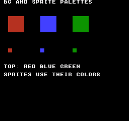
Build command
New-Item -ItemType Directory -Force .\out | Out-Null
.\kitaqfc\kitaqfc.exe .\kitaqfc\lib\runtime.c .\kitaq-docs\samples\api-examples\fc\batch2_palette.c -I .\kitaqfc\lib -I .\kitaq-docs\samples -o .\out\batch2_palette.nes --no-cache --no-disasm --mapper=nrom --nes-chr=.\kitaq-docs\samples\api-examples\fc\vram_shapes.chrImplementation and source
kitaqfc/lib/palette.h:11
Replace shadow palette data and upload all 32 bytes immediately. The caller provides a safe PPU access period; this helper does not wait for VBlank.
kitaqfc/lib/palette.c:28
void nes_palette_apply_now(unsigned char* src32)
{
nes_palette_copy(src32);
nes_ppu_stream_write(0x3F00, nes_palette_shadow, 32);
}nes_palette_apply_shadow_now
Upload the current 32 shadow colors directly to the PPU.
Syntax
void nes_palette_apply_shadow_now(void);Return value
No return value. The affected state and when it takes effect are described in this entry.
Conditions and limits
The shadow reserves CPU addresses 0x03C0–0x03DF. PPU addresses 0x3F10/14/18/1C alias 0x3F00/04/08/0C, so the 32 raw shadow bytes need not match 32 independent PPU readback values. Use PPU increment one during a safe VBlank interval or with rendering off. The helper does not wait, mask interrupts or restore scrolling.
Usage example
nes_palette_apply_shadow_now();This is a calling fragment. Follow the stated initialization and buffer requirements before using it in a complete program.
Expected result
Show red, blue and green 32×32 background rectangles at (16,32), (80,32) and (144,32), plus 8×8 sprite squares at (16,96), (80,96) and (144,96) in the same color order. Separate background/sprite palettes demonstrate direct and queued uploads.
Build command
New-Item -ItemType Directory -Force .\out | Out-Null
.\kitaqfc\kitaqfc.exe .\kitaqfc\lib\runtime.c .\kitaq-docs\samples\api-examples\fc\batch2_palette.c -I .\kitaqfc\lib -I .\kitaq-docs\samples -o .\out\batch2_palette.nes --no-cache --no-disasm --mapper=nrom --nes-chr=.\kitaq-docs\samples\api-examples\fc\vram_shapes.chrImplementation and source
kitaqfc/lib/palette.h:13
Upload the current palette shadow directly, with timing controlled by the caller.
kitaqfc/lib/palette.c:35
void nes_palette_apply_shadow_now(void)
{
nes_ppu_stream_write(0x3F00, nes_palette_shadow, 32);
}nes_palette_copy
Copy 32 palette bytes into the CPU shadow without transferring them to the PPU.
Syntax
void nes_palette_copy(unsigned char* src32);Parameters
src32Readable 32-byte palette: 16 background colors followed by 16 sprite colors; use color codes 0–63.
Return value
No return value. The affected state and when it takes effect are described in this entry.
Conditions and limits
The shadow reserves CPU addresses 0x03C0–0x03DF. PPU addresses 0x3F10/14/18/1C alias 0x3F00/04/08/0C, so the 32 raw shadow bytes need not match 32 independent PPU readback values.
Usage example
nes_palette_copy(colors);result[0]=nes_palette_shadow[5];This is a calling fragment. Follow the stated initialization and buffer requirements before using it in a complete program.
Expected result
Show red, blue and green 32×32 background rectangles at (16,32), (80,32) and (144,32), plus 8×8 sprite squares at (16,96), (80,96) and (144,96) in the same color order. Separate background/sprite palettes demonstrate direct and queued uploads.
Build command
New-Item -ItemType Directory -Force .\out | Out-Null
.\kitaqfc\kitaqfc.exe .\kitaqfc\lib\runtime.c .\kitaq-docs\samples\api-examples\fc\batch2_palette.c -I .\kitaqfc\lib -I .\kitaq-docs\samples -o .\out\batch2_palette.nes --no-cache --no-disasm --mapper=nrom --nes-chr=.\kitaq-docs\samples\api-examples\fc\vram_shapes.chrImplementation and source
kitaqfc/lib/palette.h:8
Copy exactly 32 palette bytes to the fixed shadow buffer without writing the PPU.
kitaqfc/lib/palette.c:19
void nes_palette_copy(unsigned char* src32)
{
__memcpy(nes_palette_shadow, src32, 32);
}nes_palette_queue_all
Replace all 32 shadow colors and copy them into the runtime VRAM queue.
Syntax
unsigned char nes_palette_queue_all(unsigned char* src32);Parameters
src32Readable 32-byte palette: 16 background colors followed by 16 sprite colors; use color codes 0–63.
Return value
1 if queued, 0 if the queue lacks capacity. The new shadow values remain even on failure. Success does not mean the PPU has been updated.
Conditions and limits
The shadow reserves CPU addresses 0x03C0–0x03DF. PPU addresses 0x3F10/14/18/1C alias 0x3F00/04/08/0C, so the 32 raw shadow bytes need not match 32 independent PPU readback values. The queue copies values, so the source may change after successful admission. Prevent races between queue production and its NMI consumer.
Usage example
nes_vram_queue_clear();result[1]=nes_palette_queue_all(colors);result[2]=nes_vram_queue_used;nes_vram_queue_nmi_flush();This is a calling fragment. Follow the stated initialization and buffer requirements before using it in a complete program.
Expected result
Show red, blue and green 32×32 background rectangles at (16,32), (80,32) and (144,32), plus 8×8 sprite squares at (16,96), (80,96) and (144,96) in the same color order. Separate background/sprite palettes demonstrate direct and queued uploads.
Build command
New-Item -ItemType Directory -Force .\out | Out-Null
.\kitaqfc\kitaqfc.exe .\kitaqfc\lib\runtime.c .\kitaq-docs\samples\api-examples\fc\batch2_palette.c -I .\kitaqfc\lib -I .\kitaq-docs\samples -o .\out\batch2_palette.nes --no-cache --no-disasm --mapper=nrom --nes-chr=.\kitaq-docs\samples\api-examples\fc\vram_shapes.chrImplementation and source
kitaqfc/lib/palette.h:18
Update the shadow and copy all colors into the runtime queue. A queue failure leaves the new shadow contents in place. Return one if the runtime queue accepted the copied payload, zero if it was full. Admission does not mean the NMI consumer has already updated the PPU.
kitaqfc/lib/palette.c:42
unsigned char nes_palette_queue_all(unsigned char* src32)
{
nes_palette_copy(src32);
return nes_vram_queue_try_write(0x3F00, nes_palette_shadow, 32);
}nes_palette_queue_bg4
Update four colors of one background palette in the shadow and copy them into the VRAM queue.
Syntax
unsigned char nes_palette_queue_bg4(unsigned char pal_index, unsigned char* src4);Parameters
pal_indexPalette index 0–3; the function does not validate it.
src4Four bytes for the selected palette; use color codes 0–63.
Return value
1 if queued, 0 if the queue lacks capacity. The new shadow values remain even on failure. Success does not mean the PPU has been updated.
Conditions and limits
The shadow reserves CPU addresses 0x03C0–0x03DF. PPU addresses 0x3F10/14/18/1C alias 0x3F00/04/08/0C, so the 32 raw shadow bytes need not match 32 independent PPU readback values. The queue copies values, so the source may change after successful admission. Prevent races between queue production and its NMI consumer.
Usage example
result[3]=nes_palette_queue_bg4(3,four);nes_vram_queue_nmi_flush();This is a calling fragment. Follow the stated initialization and buffer requirements before using it in a complete program.
Expected result
Show red, blue and green 32×32 background rectangles at (16,32), (80,32) and (144,32), plus 8×8 sprite squares at (16,96), (80,96) and (144,96) in the same color order. Separate background/sprite palettes demonstrate direct and queued uploads.
Build command
New-Item -ItemType Directory -Force .\out | Out-Null
.\kitaqfc\kitaqfc.exe .\kitaqfc\lib\runtime.c .\kitaq-docs\samples\api-examples\fc\batch2_palette.c -I .\kitaqfc\lib -I .\kitaq-docs\samples -o .\out\batch2_palette.nes --no-cache --no-disasm --mapper=nrom --nes-chr=.\kitaq-docs\samples\api-examples\fc\vram_shapes.chrImplementation and source
kitaqfc/lib/palette.h:21
Update and queue four background palette bytes. pal_index must be 0..3; there is no range check before writing the shadow.
kitaqfc/lib/palette.c:50
unsigned char nes_palette_queue_bg4(unsigned char pal_index, unsigned char* src4)
{
unsigned char dst;
dst = pal_index + pal_index;
dst = dst + dst;
__memcpy(nes_palette_shadow + dst, src4, 4);
return nes_vram_queue_try_write((unsigned short)(0x3F00 + dst), nes_palette_shadow + dst, 4);
}nes_palette_queue_sprite4
Update four colors of one sprite palette in the shadow and copy them into the VRAM queue.
Syntax
unsigned char nes_palette_queue_sprite4(unsigned char pal_index, unsigned char* src4);Parameters
pal_indexPalette index 0–3; the function does not validate it.
src4Four bytes for the selected palette; use color codes 0–63.
Return value
1 if queued, 0 if the queue lacks capacity. The new shadow values remain even on failure. Success does not mean the PPU has been updated.
Conditions and limits
The shadow reserves CPU addresses 0x03C0–0x03DF. PPU addresses 0x3F10/14/18/1C alias 0x3F00/04/08/0C, so the 32 raw shadow bytes need not match 32 independent PPU readback values. The queue copies values, so the source may change after successful admission. Prevent races between queue production and its NMI consumer.
Usage example
result[4]=nes_palette_queue_sprite4(2,four);nes_vram_queue_nmi_flush();This is a calling fragment. Follow the stated initialization and buffer requirements before using it in a complete program.
Expected result
Show red, blue and green 32×32 background rectangles at (16,32), (80,32) and (144,32), plus 8×8 sprite squares at (16,96), (80,96) and (144,96) in the same color order. Separate background/sprite palettes demonstrate direct and queued uploads.
Build command
New-Item -ItemType Directory -Force .\out | Out-Null
.\kitaqfc\kitaqfc.exe .\kitaqfc\lib\runtime.c .\kitaq-docs\samples\api-examples\fc\batch2_palette.c -I .\kitaqfc\lib -I .\kitaq-docs\samples -o .\out\batch2_palette.nes --no-cache --no-disasm --mapper=nrom --nes-chr=.\kitaq-docs\samples\api-examples\fc\vram_shapes.chrImplementation and source
kitaqfc/lib/palette.h:24
Update and queue four sprite palette bytes at the 0x3F10 region. The caller supplies pal_index 0..3; NES palette mirroring still applies.
kitaqfc/lib/palette.c:61
unsigned char nes_palette_queue_sprite4(unsigned char pal_index, unsigned char* src4)
{
unsigned char dst;
dst = pal_index + pal_index;
dst = dst + dst;
__memcpy(nes_palette_shadow + (unsigned char)(0x10 + dst), src4, 4);
return nes_vram_queue_try_write((unsigned short)(0x3F10 + dst), nes_palette_shadow + (unsigned char)(0x10 + dst), 4);
}Custom movement using Q5.3 data types
Alongside the world/body functions, physics2d.h defines types and constants for custom fractional movement. This lesson implements game_step using the Q5.3 data convention. It is a separate approach from world/body integration.
KQ2DPosition stores an integer pixel position (0..255), KQ2DFraction a remainder (0..7), KQ2DSpeed a displacement magnitude per tick in eighths of a pixel (0..255), and KQ2DDirection the direction. All four types are u8. Direction is stored separately from speed rather than encoded as a sign.
Use KQ2D_SUBPIXEL_BITS=3, ONE=8 and MASK=7 to combine position*8+fraction in a 16-bit intermediate. Direction NONE=0 means no movement, NEGATIVE=1 means subtraction and POSITIVE=2 means addition. The game must handle boundaries so subtraction stays nonnegative and the resulting integer position remains within 0..255.
KQ2D_DRAG_BRAKE=1, STUN=2, COAST=3 and THRUST=4 are identifiers for game-defined braking, stun, coasting and thrust behavior. Assigning one does not apply acceleration or drag. Define each effect and its duration in your update routine.
Example: accumulating half-pixel movement
The upper red 16x16-pixel box starts at X=24; the lower box shows X=32 after 16 ticks. Speed 4 means 4/8=0.5 pixels per tick, giving eight pixels over 16 ticks. The different Y positions separate the two views for comparison. A subsequent numerical check moves back for eight ticks and obtains X=28 with fraction 0.
void game_step() {
u16 total;
total=(u16)position*KQ2D_SUBPIXEL_ONE+fraction;
if(direction==KQ2D_DIR_POSITIVE) total=total+speed;
else if(direction==KQ2D_DIR_NEGATIVE) total=total-speed;
position=(KQ2DPosition)(total>>KQ2D_SUBPIXEL_BITS);
fraction=(KQ2DFraction)(total&KQ2D_SUBPIXEL_MASK);
}
// Initial state: position=24; fraction=0; speed=4;
// direction=KQ2D_DIR_POSITIVE; call game_step() 16 times.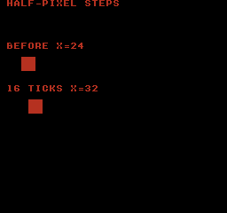
Build
New-Item -ItemType Directory -Force .\out | Out-Null
.\kitaqfc\kitaqfc.exe .\kitaq-docs\samples\api-examples\fc\physics_subpixel.c -I .\kitaqfc\lib -I .\kitaq-docs\samples -o .\out\physics_subpixel.nes --mapper=nrom --nes-chr=.\kitaq-docs\samples\api-examples\fc\vram_shapes.chr --no-cache --no-disasmphysics2d
Provides box integration/AABB contacts and an optional surface-response solver. Bodies use centers and half extents; active=0 excludes a slot and inv_mass_q8<=0 makes it static. KQRect instead uses top-left coordinates and width/height. Box-pair contacts do not use the body restitution field; surface responses use KQSurface2D coefficients.
Choose consistent integer units for positions, radii, half extents, velocities and gravity. One step is one simulation tick. The samples use one unit per pixel. These routines neither convert positions to Q8.8 automatically nor render them.
A world borrows its array. The caller allocates and owns body storage and keeps it alive. Initializing a world does not initialize its array elements.
Compile implementation files as well as including headers. For 2D use fixed.c and physics2d.c; for 3D also include physics3d.c. The examples use MMC3, CHR RAM and drawing storage at PRG RAM $6800–$6FFF. That drawing buffer is not a requirement of the physics library itself.
kq2d_world_init
Attach an array to a 2D world and set gravity (0,32), four contact iterations and a per-axis speed limit of 512.
Syntax
void kq2d_world_init(KQWorld2D* world, KQBody2D* bodies, u8 body_count);Parameters
worldPointer to the world holding the body array and simulation settings.
bodiesStart of a caller-owned body array containing body_count elements.
body_countNumber of array slots, 0..255, including inactive entries.
Return value
No return value. This entry describes the fields updated and when they take effect.
Conditions and limits
Choose consistent integer units for positions, radii, half extents, velocities and gravity. One step is one simulation tick. The samples use one unit per pixel. These routines neither convert positions to Q8.8 automatically nor render them.
A world borrows its array. The caller allocates and owns body storage and keeps it alive. Initializing a world does not initialize its array elements.
Compile implementation files as well as including headers. For 2D use fixed.c and physics2d.c; for 3D also include physics3d.c. The examples use MMC3, CHR RAM and drawing storage at PRG RAM $6800–$6FFF. That drawing buffer is not a requirement of the physics library itself.
Usage example
kq2d_world_init(&world,bodies,2);
result[0]=world.gravity_y; result[1]=world.solver_iterations; result[2]=world.max_speed;This is a calling fragment. Follow the stated initialization and buffer requirements before using it in a complete program.
Expected result
Left shows the initial state; right shows one tick later. A red 16×16 box with center (24,24) and velocity (4,16) reaches (28,36), with Y velocity zero on the blue floor. Panel origins are screen (8,48) and (88,48). RAM checks also cover initialization, setters, integration, rectangle/point queries and signed scaling.
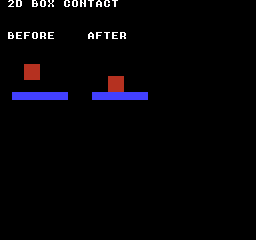
Build command
New-Item -ItemType Directory -Force .\out | Out-Null
.\kitaqfc\kitaqfc.exe .\kitaq-docs\samples\api-examples\fc\physics_body2d.c -I .\kitaqfc\lib -I .\kitaq-docs\samples --mapper=mmc3 --nes-chr-ram -o .\out\physics_body2d.nes --no-cache --no-disasmImplementation and source
kitaqfc/lib/physics2d.h:36
Retain the caller-owned body array without initializing its elements. Set gravity to (0,32), four contact iterations and a per-axis speed limit of 512. A null world is ignored; the array must outlive subsequent world operations.
kitaqfc/lib/physics2d.c:351
void kq2d_world_init(KQWorld2D* world, KQBody2D* bodies, u8 body_count)
{
if (world == 0) return;
world->bodies = bodies;
world->body_count = body_count;
world->gravity_x = 0;
world->gravity_y = 32;
world->solver_iterations = 4;
world->max_speed = 512;
}kq2d_step
Integrate active dynamic bodies, then resolve contacts among active array entries.
Syntax
void kq2d_step(KQWorld2D* world);Parameters
worldPointer to the world holding the body array and simulation settings.
Return value
No return value. This entry describes the fields updated and when they take effect.
Conditions and limits
Choose consistent integer units for positions, radii, half extents, velocities and gravity. One step is one simulation tick. The samples use one unit per pixel. These routines neither convert positions to Q8.8 automatically nor render them.
A world borrows its array. The caller allocates and owns body storage and keeps it alive. Initializing a world does not initialize its array elements.
Keep sums, differences, combined half extents and contact-correction products within signed 16-bit range. Velocity limits apply after addition and cannot prevent overflow during that addition.
Contacts resolve along the shallower penetration axis, choosing Y on a tie. Position correction uses inverse masses, but two dynamic bodies receive their simple average axis velocity; collision with a static body zeros that component. This solver does not use restitution_q8. It is discrete collision handling and can miss fast crossings.
Box integration and collision routines use shared scratch storage. Do not re-enter these physics routines from an interrupt.
A NULL world or array is ignored. A zero solver_iterations value still performs one contact pass.
Compile implementation files as well as including headers. For 2D use fixed.c and physics2d.c; for 3D also include physics3d.c. The examples use MMC3, CHR RAM and drawing storage at PRG RAM $6800–$6FFF. That drawing buffer is not a requirement of the physics library itself.
Usage example
kq2d_step(&world);
result[22]=bodies[0].x; result[23]=bodies[0].y;
result[24]=bodies[0].vx; result[25]=bodies[0].vy;This is a calling fragment. Follow the stated initialization and buffer requirements before using it in a complete program.
Expected result
Left shows the initial state; right shows one tick later. A red 16×16 box with center (24,24) and velocity (4,16) reaches (28,36), with Y velocity zero on the blue floor. Panel origins are screen (8,48) and (88,48). RAM checks also cover initialization, setters, integration, rectangle/point queries and signed scaling.
Build command
New-Item -ItemType Directory -Force .\out | Out-Null
.\kitaqfc\kitaqfc.exe .\kitaq-docs\samples\api-examples\fc\physics_body2d.c -I .\kitaqfc\lib -I .\kitaq-docs\samples --mapper=mmc3 --nes-chr-ram -o .\out\physics_body2d.nes --no-cache --no-disasmImplementation and source
kitaqfc/lib/physics2d.h:41
Advance active dynamic bodies, then visit each active unordered pair for the configured contact passes (zero means one). Static bodies still participate as obstacles. The world borrows its array and uses non-reentrant helper scratch. This is discrete integration; fast bodies can pass through thin obstacles.
kitaqfc/lib/physics2d.c:581
void kq2d_step(KQWorld2D* world)
{
if (world == 0) return;
if (world->bodies == 0) return;
KQBody2D* bodies = world->bodies;
u8 count = world->body_count;
// Integrate dynamic bodies.
u8 i;
for (i = 0; i < count; i++)
{
KQBody2D* b = &bodies[(u8)i];
if (b->active == 0) continue;
if (b->inv_mass_q8 <= 0) continue;
kq2d_asm_value = b->vx;
kq2d_asm_operand = world->gravity_x;
kq2d__add_value();
kq2d_asm_limit = world->max_speed;
kq2d__clamp_value();
b->vx = kq2d_asm_value;
kq2d_asm_value = b->vy;
kq2d_asm_operand = world->gravity_y;
kq2d__add_value();
kq2d_asm_limit = world->max_speed;
kq2d__clamp_value();
b->vy = kq2d_asm_value;
kq2d_asm_value = b->x;
kq2d_asm_operand = b->vx;
kq2d__add_value();
b->x = kq2d_asm_value;
kq2d_asm_value = b->y;
kq2d_asm_operand = b->vy;
kq2d__add_value();
b->y = kq2d_asm_value;
}
// Solve contacts with a small fixed iteration count.
u8 iterations = world->solver_iterations;
if (iterations == 0) iterations = 1;
u8 it;
for (it = 0; it < iterations; it++)
{
for (i = 0; i < count; i++)
{
KQBody2D* a = &bodies[(u8)i];
if (a->active == 0) continue;
u8 j;
for (j = (u8)(i + 1); j < count; j++)
{
KQBody2D* b = &bodies[(u8)j];
if (b->active == 0) continue;
kq2d__resolve_pair(a, b);
}
}
}
}kq2d_integrate_body
Apply world gravity and per-axis speed limits to one dynamic body, then add its velocity to position.
Syntax
void kq2d_integrate_body(KQWorld2D* world, KQBody2D* body);Parameters
worldPointer to the world holding the body array and simulation settings.
bodyPointer to the body to modify. Fields not used by this operation are retained.
Return value
No return value. This entry describes the fields updated and when they take effect.
Conditions and limits
Choose consistent integer units for positions, radii, half extents, velocities and gravity. One step is one simulation tick. The samples use one unit per pixel. These routines neither convert positions to Q8.8 automatically nor render them.
Keep sums, differences, combined half extents and contact-correction products within signed 16-bit range. Velocity limits apply after addition and cannot prevent overflow during that addition.
Box integration and collision routines use shared scratch storage. Do not re-enter these physics routines from an interrupt.
Ignore NULL, inactive and nonpositive-inverse-mass bodies. Supply a nonnegative speed limit.
This call does not resolve contacts with other bodies. A NULL world is also ignored.
Compile implementation files as well as including headers. For 2D use fixed.c and physics2d.c; for 3D also include physics3d.c. The examples use MMC3, CHR RAM and drawing storage at PRG RAM $6800–$6FFF. That drawing buffer is not a requirement of the physics library itself.
Usage example
kq2d_integrate_body(&world,&temp);
result[18]=temp.x; result[19]=temp.y;This is a calling fragment. Follow the stated initialization and buffer requirements before using it in a complete program.
Expected result
Left shows the initial state; right shows one tick later. A red 16×16 box with center (24,24) and velocity (4,16) reaches (28,36), with Y velocity zero on the blue floor. Panel origins are screen (8,48) and (88,48). RAM checks also cover initialization, setters, integration, rectangle/point queries and signed scaling.
Build command
New-Item -ItemType Directory -Force .\out | Out-Null
.\kitaqfc\kitaqfc.exe .\kitaq-docs\samples\api-examples\fc\physics_body2d.c -I .\kitaqfc\lib -I .\kitaq-docs\samples --mapper=mmc3 --nes-chr-ram -o .\out\physics_body2d.nes --no-cache --no-disasmImplementation and source
kitaqfc/lib/physics2d.h:45
For one active dynamic body, add gravity, clamp each velocity axis and then add velocity to position. Null inputs are ignored; no contacts are solved. Use a nonnegative speed limit and keep additions in signed 16-bit range.
kitaqfc/lib/physics2d.c:451
void kq2d_integrate_body(KQWorld2D* world, KQBody2D* body)
{
if (world == 0) return;
if (body == 0) return;
if (body->active == 0) return;
if (body->inv_mass_q8 <= 0) return;
kq2d_asm_value = body->vx;
kq2d_asm_operand = world->gravity_x;
kq2d__add_value();
kq2d_asm_limit = world->max_speed;
kq2d__clamp_value();
body->vx = kq2d_asm_value;
kq2d_asm_value = body->vy;
kq2d_asm_operand = world->gravity_y;
kq2d__add_value();
kq2d_asm_limit = world->max_speed;
kq2d__clamp_value();
body->vy = kq2d_asm_value;
kq2d_asm_value = body->x;
kq2d_asm_operand = body->vx;
kq2d__add_value();
body->x = kq2d_asm_value;
kq2d_asm_value = body->y;
kq2d_asm_operand = body->vy;
kq2d__add_value();
body->y = kq2d_asm_value;
}kq2d_overlap_aabb
Test strict overlap of two centered boxes on both X and Y.
Syntax
u8 kq2d_overlap_aabb(const KQBody2D* a, const KQBody2D* b);Parameters
aValid body pointer; the query ignores activity, mass and flags.
bValid body pointer; the query ignores activity, mass and flags.
Return value
Returns 1 for interior overlap and 0 for touching or separated shapes.
Conditions and limits
Choose consistent integer units for positions, radii, half extents, velocities and gravity. One step is one simulation tick. The samples use one unit per pixel. These routines neither convert positions to Q8.8 automatically nor render them.
Keep sums, differences, combined half extents and contact-correction products within signed 16-bit range. Velocity limits apply after addition and cannot prevent overflow during that addition.
Compile implementation files as well as including headers. For 2D use fixed.c and physics2d.c; for 3D also include physics3d.c. The examples use MMC3, CHR RAM and drawing storage at PRG RAM $6800–$6FFF. That drawing buffer is not a requirement of the physics library itself.
Usage example
result[20]=kq2d_overlap_aabb(&bodies[0],&bodies[1]);
bodies[1].x=40; result[21]=kq2d_overlap_aabb(&bodies[0],&bodies[1]);This is a calling fragment. Follow the stated initialization and buffer requirements before using it in a complete program.
Expected result
Left shows the initial state; right shows one tick later. A red 16×16 box with center (24,24) and velocity (4,16) reaches (28,36), with Y velocity zero on the blue floor. Panel origins are screen (8,48) and (88,48). RAM checks also cover initialization, setters, integration, rectangle/point queries and signed scaling.
Build command
New-Item -ItemType Directory -Force .\out | Out-Null
.\kitaqfc\kitaqfc.exe .\kitaq-docs\samples\api-examples\fc\physics_body2d.c -I .\kitaqfc\lib -I .\kitaq-docs\samples --mapper=mmc3 --nes-chr-ram -o .\out\physics_body2d.nes --no-cache --no-disasmImplementation and source
kitaqfc/lib/physics2d.h:49
Test strict overlap of two centered boxes; touching edges return false. Both pointers must be valid. Active/mass flags are ignored, and coordinate differences and extent sums must fit the signed 16-bit calculations.
kitaqfc/lib/physics2d.c:366
u8 kq2d_overlap_aabb(const KQBody2D* a, const KQBody2D* b)
{
s16 dx = (s16)(b->x - a->x);
s16 dy = (s16)(b->y - a->y);
s16 adx = kq2d__abs_s16(dx);
s16 ady = kq2d__abs_s16(dy);
s16 sx = (s16)(a->half_x + b->half_x);
s16 sy = (s16)(a->half_y + b->half_y);
if (adx >= sx) return 0;
if (ady >= sy) return 0;
return 1;
}kq2d_body_init
Initialize a centered box with the supplied half extents, zero velocity, inverse mass 256 and active status.
Syntax
void kq2d_body_init(KQBody2D* body, s16 x, s16 y, s16 half_x, s16 half_y);Parameters
bodyPointer to the body to modify. Fields not used by this operation are retained.
xX coordinate of the center or point, in pixels in the sample.
yY coordinate of the center or point; positive is downward in the sample.
half_xHalf extent along X; the full box width is twice this value.
half_yHalf extent along Y; the full box height is twice this value.
Return value
No return value. This entry describes the fields updated and when they take effect.
Conditions and limits
Choose consistent integer units for positions, radii, half extents, velocities and gravity. One step is one simulation tick. The samples use one unit per pixel. These routines neither convert positions to Q8.8 automatically nor render them.
Sets restitution_q8 to zero. A NULL body is ignored. Supply positive half extents.
Compile implementation files as well as including headers. For 2D use fixed.c and physics2d.c; for 3D also include physics3d.c. The examples use MMC3, CHR RAM and drawing storage at PRG RAM $6800–$6FFF. That drawing buffer is not a requirement of the physics library itself.
Usage example
kq2d_body_init(&temp,10,20,8,8);
result[3]=temp.inv_mass_q8; result[4]=temp.active;This is a calling fragment. Follow the stated initialization and buffer requirements before using it in a complete program.
Expected result
Left shows the initial state; right shows one tick later. A red 16×16 box with center (24,24) and velocity (4,16) reaches (28,36), with Y velocity zero on the blue floor. Panel origins are screen (8,48) and (88,48). RAM checks also cover initialization, setters, integration, rectangle/point queries and signed scaling.
Build command
New-Item -ItemType Directory -Force .\out | Out-Null
.\kitaqfc\kitaqfc.exe .\kitaq-docs\samples\api-examples\fc\physics_body2d.c -I .\kitaqfc\lib -I .\kitaq-docs\samples --mapper=mmc3 --nes-chr-ram -o .\out\physics_body2d.nes --no-cache --no-disasmImplementation and source
kitaqfc/lib/physics2d.h:52
Initialize an active unit-inverse-mass body at the supplied center and half extents, with zero velocity and reserved restitution set to zero. Null is ignored.
kitaqfc/lib/physics2d.c:384
void kq2d_body_init(KQBody2D* body, s16 x, s16 y, s16 half_x, s16 half_y)
{
if (body == 0) return;
body->x = x;
body->y = y;
body->vx = 0;
body->vy = 0;
body->half_x = half_x;
body->half_y = half_y;
body->inv_mass_q8 = 256;
body->restitution_q8 = 0;
body->active = 1;
}kq2d_body_set_pos
Replace only the body center, retaining velocity, extents and activity.
Syntax
void kq2d_body_set_pos(KQBody2D* body, s16 x, s16 y);Parameters
bodyPointer to the body to modify. Fields not used by this operation are retained.
xX coordinate of the center or point, in pixels in the sample.
yY coordinate of the center or point; positive is downward in the sample.
Return value
No return value. This entry describes the fields updated and when they take effect.
Conditions and limits
Choose consistent integer units for positions, radii, half extents, velocities and gravity. One step is one simulation tick. The samples use one unit per pixel. These routines neither convert positions to Q8.8 automatically nor render them.
NULL is ignored. Inactive and static bodies are still changed when the pointer is valid.
Compile implementation files as well as including headers. For 2D use fixed.c and physics2d.c; for 3D also include physics3d.c. The examples use MMC3, CHR RAM and drawing storage at PRG RAM $6800–$6FFF. That drawing buffer is not a requirement of the physics library itself.
Usage example
kq2d_body_set_pos(&temp,-12,20);
result[5]=temp.x; result[6]=temp.y;This is a calling fragment. Follow the stated initialization and buffer requirements before using it in a complete program.
Expected result
Left shows the initial state; right shows one tick later. A red 16×16 box with center (24,24) and velocity (4,16) reaches (28,36), with Y velocity zero on the blue floor. Panel origins are screen (8,48) and (88,48). RAM checks also cover initialization, setters, integration, rectangle/point queries and signed scaling.
Build command
New-Item -ItemType Directory -Force .\out | Out-Null
.\kitaqfc\kitaqfc.exe .\kitaq-docs\samples\api-examples\fc\physics_body2d.c -I .\kitaqfc\lib -I .\kitaq-docs\samples --mapper=mmc3 --nes-chr-ram -o .\out\physics_body2d.nes --no-cache --no-disasmImplementation and source
kitaqfc/lib/physics2d.h:54
Replace the center without altering velocity, extents or activity. Null is ignored.
kitaqfc/lib/physics2d.c:399
void kq2d_body_set_pos(KQBody2D* body, s16 x, s16 y)
{
if (body == 0) return;
body->x = x;
body->y = y;
}kq2d_body_set_velocity
Set velocity directly without clamping it or updating position.
Syntax
void kq2d_body_set_velocity(KQBody2D* body, s16 vx, s16 vy);Parameters
bodyPointer to the body to modify. Fields not used by this operation are retained.
vxX displacement per simulation tick, in the same units as position.
vyY displacement per simulation tick, in the same units as position.
Return value
No return value. This entry describes the fields updated and when they take effect.
Conditions and limits
Choose consistent integer units for positions, radii, half extents, velocities and gravity. One step is one simulation tick. The samples use one unit per pixel. These routines neither convert positions to Q8.8 automatically nor render them.
NULL is ignored. Inactive and static bodies are still changed when the pointer is valid.
Compile implementation files as well as including headers. For 2D use fixed.c and physics2d.c; for 3D also include physics3d.c. The examples use MMC3, CHR RAM and drawing storage at PRG RAM $6800–$6FFF. That drawing buffer is not a requirement of the physics library itself.
Usage example
kq2d_body_set_velocity(&temp,40,-30);
result[7]=temp.vx; result[8]=temp.vy;This is a calling fragment. Follow the stated initialization and buffer requirements before using it in a complete program.
Expected result
Left shows the initial state; right shows one tick later. A red 16×16 box with center (24,24) and velocity (4,16) reaches (28,36), with Y velocity zero on the blue floor. Panel origins are screen (8,48) and (88,48). RAM checks also cover initialization, setters, integration, rectangle/point queries and signed scaling.
Build command
New-Item -ItemType Directory -Force .\out | Out-Null
.\kitaqfc\kitaqfc.exe .\kitaq-docs\samples\api-examples\fc\physics_body2d.c -I .\kitaqfc\lib -I .\kitaq-docs\samples --mapper=mmc3 --nes-chr-ram -o .\out\physics_body2d.nes --no-cache --no-disasmImplementation and source
kitaqfc/lib/physics2d.h:56
Replace velocity without clamping or checking activity/mass. Null is ignored.
kitaqfc/lib/physics2d.c:407
void kq2d_body_set_velocity(KQBody2D* body, s16 vx, s16 vy)
{
if (body == 0) return;
body->vx = vx;
body->vy = vy;
}kq2d_body_apply_gravity
Add gravity to an active dynamic body and clamp each axis to +/-max_speed without updating position.
Syntax
void kq2d_body_apply_gravity(KQBody2D* body, s16 gravity_x, s16 gravity_y, s16 max_speed);Parameters
bodyPointer to the body to modify. Fields not used by this operation are retained.
gravity_xAcceleration added to X velocity by this call.
gravity_yAcceleration added to Y velocity by this call.
max_speedSpeed limit; the entry specifies whether this limits each axis or the combined vector.
Return value
No return value. This entry describes the fields updated and when they take effect.
Conditions and limits
Choose consistent integer units for positions, radii, half extents, velocities and gravity. One step is one simulation tick. The samples use one unit per pixel. These routines neither convert positions to Q8.8 automatically nor render them.
Keep sums, differences, combined half extents and contact-correction products within signed 16-bit range. Velocity limits apply after addition and cannot prevent overflow during that addition.
Box integration and collision routines use shared scratch storage. Do not re-enter these physics routines from an interrupt.
Ignore NULL, inactive and nonpositive-inverse-mass bodies. Supply a nonnegative speed limit.
Compile implementation files as well as including headers. For 2D use fixed.c and physics2d.c; for 3D also include physics3d.c. The examples use MMC3, CHR RAM and drawing storage at PRG RAM $6800–$6FFF. That drawing buffer is not a requirement of the physics library itself.
Usage example
kq2d_body_apply_gravity(&temp,5,-10,32);
result[9]=temp.vx; result[10]=temp.vy;This is a calling fragment. Follow the stated initialization and buffer requirements before using it in a complete program.
Expected result
Left shows the initial state; right shows one tick later. A red 16×16 box with center (24,24) and velocity (4,16) reaches (28,36), with Y velocity zero on the blue floor. Panel origins are screen (8,48) and (88,48). RAM checks also cover initialization, setters, integration, rectangle/point queries and signed scaling.
Build command
New-Item -ItemType Directory -Force .\out | Out-Null
.\kitaqfc\kitaqfc.exe .\kitaq-docs\samples\api-examples\fc\physics_body2d.c -I .\kitaqfc\lib -I .\kitaq-docs\samples --mapper=mmc3 --nes-chr-ram -o .\out\physics_body2d.nes --no-cache --no-disasmImplementation and source
kitaqfc/lib/physics2d.h:60
Add gravity and clamp each velocity axis separately for an active dynamic body. Null, inactive and static bodies are ignored. Supply a nonnegative limit and avoid overflow in the additions before clamping; position is unchanged.
kitaqfc/lib/physics2d.c:417
void kq2d_body_apply_gravity(KQBody2D* body, s16 gravity_x, s16 gravity_y, s16 max_speed)
{
if (body == 0) return;
if (body->active == 0) return;
if (body->inv_mass_q8 <= 0) return;
kq2d_asm_value = body->vx;
kq2d_asm_operand = gravity_x;
kq2d__add_value();
kq2d_asm_limit = max_speed;
kq2d__clamp_value();
body->vx = kq2d_asm_value;
kq2d_asm_value = body->vy;
kq2d_asm_operand = gravity_y;
kq2d__add_value();
kq2d_asm_limit = max_speed;
kq2d__clamp_value();
body->vy = kq2d_asm_value;
}kq2d_body_apply_friction
Scale both velocity components by a signed-byte coefficient divided by 256 without checking position or activity.
Syntax
void kq2d_body_apply_friction(KQBody2D* body, u8 friction_q8);Parameters
bodyPointer to the body to modify. Fields not used by this operation are retained.
friction_q8Velocity multiplier retained by this function. It is converted to s8, so 128..255 become negative coefficients.
Return value
No return value. This entry describes the fields updated and when they take effect.
Conditions and limits
Values 0..127 give multipliers 0..127/256. Values 128..255 become negative after the s8 conversion and reverse velocity. For positive damping across 0..255, use kq2d_scale_q8 on each velocity instead. Products truncate toward zero. NULL is ignored.
Compile implementation files as well as including headers. For 2D use fixed.c and physics2d.c; for 3D also include physics3d.c. The examples use MMC3, CHR RAM and drawing storage at PRG RAM $6800–$6FFF. That drawing buffer is not a requirement of the physics library itself.
Usage example
kq2d_body_apply_friction(&temp,64);
result[11]=temp.vx; result[12]=temp.vy;This is a calling fragment. Follow the stated initialization and buffer requirements before using it in a complete program.
Expected result
Left shows the initial state; right shows one tick later. A red 16×16 box with center (24,24) and velocity (4,16) reaches (28,36), with Y velocity zero on the blue floor. Panel origins are screen (8,48) and (88,48). RAM checks also cover initialization, setters, integration, rectangle/point queries and signed scaling.
Build command
New-Item -ItemType Directory -Force .\out | Out-Null
.\kitaqfc\kitaqfc.exe .\kitaq-docs\samples\api-examples\fc\physics_body2d.c -I .\kitaqfc\lib -I .\kitaq-docs\samples --mapper=mmc3 --nes-chr-ram -o .\out\physics_body2d.nes --no-cache --no-disasmImplementation and source
kitaqfc/lib/physics2d.h:64
Scale both velocities by a signed eight-bit coefficient divided by 256. Despite the unsigned parameter, values 128..255 become negative coefficients; this is not a full-range unsigned Q8 damping helper. Null is ignored.
kitaqfc/lib/physics2d.c:441
void kq2d_body_apply_friction(KQBody2D* body, u8 friction_q8)
{
if (body == 0) return;
body->vx = kq2d_scale_q8(body->vx, (s16)(s8)friction_q8);
body->vy = kq2d_scale_q8(body->vy, (s16)(s8)friction_q8);
}kq2d_rect_intersect
Test interior overlap of two rectangles represented by top-left positions and sizes.
Syntax
u8 kq2d_rect_intersect(KQRect a, KQRect b);Parameters
aKQRect value with top-left coordinates and positive width and height.
bKQRect value with top-left coordinates and positive width and height.
Return value
Returns 1 for interior overlap and 0 for touching or separated shapes.
Conditions and limits
Keep sums, differences, combined half extents and contact-correction products within signed 16-bit range. Velocity limits apply after addition and cannot prevent overflow during that addition.
Nonpositive dimensions are not explicitly rejected. Do not copy a body center and half extents directly into a KQRect.
Compile implementation files as well as including headers. For 2D use fixed.c and physics2d.c; for 3D also include physics3d.c. The examples use MMC3, CHR RAM and drawing storage at PRG RAM $6800–$6FFF. That drawing buffer is not a requirement of the physics library itself.
Usage example
result[14]=kq2d_rect_intersect(r1,r2);
r2.x=16; result[15]=kq2d_rect_intersect(r1,r2);This is a calling fragment. Follow the stated initialization and buffer requirements before using it in a complete program.
Expected result
Left shows the initial state; right shows one tick later. A red 16×16 box with center (24,24) and velocity (4,16) reaches (28,36), with Y velocity zero on the blue floor. Panel origins are screen (8,48) and (88,48). RAM checks also cover initialization, setters, integration, rectangle/point queries and signed scaling.
Build command
New-Item -ItemType Directory -Force .\out | Out-Null
.\kitaqfc\kitaqfc.exe .\kitaq-docs\samples\api-examples\fc\physics_body2d.c -I .\kitaqfc\lib -I .\kitaq-docs\samples --mapper=mmc3 --nes-chr-ram -o .\out\physics_body2d.nes --no-cache --no-disasmImplementation and source
kitaqfc/lib/physics2d.h:67
Delegate strict rectangle overlap to the fixed-point utility; edge-only contact is false. Coordinate-plus-size sums must remain representable as s16.
kitaqfc/lib/physics2d.c:485
u8 kq2d_rect_intersect(KQRect a, KQRect b)
{
return kq_rect_intersect(a, b);
}kq2d_point_in_rect
Test whether a point lies in a rectangle including its left/top edges but excluding right/bottom.
Syntax
u8 kq2d_point_in_rect(s16 x, s16 y, KQRect r);Parameters
xX coordinate of the center or point, in pixels in the sample.
yY coordinate of the center or point; positive is downward in the sample.
rKQRect value containing a top-left x/y position and width/height w/h.
Return value
Returns 1 inside and 0 outside.
Conditions and limits
Keep sums, differences, combined half extents and contact-correction products within signed 16-bit range. Velocity limits apply after addition and cannot prevent overflow during that addition.
Compile implementation files as well as including headers. For 2D use fixed.c and physics2d.c; for 3D also include physics3d.c. The examples use MMC3, CHR RAM and drawing storage at PRG RAM $6800–$6FFF. That drawing buffer is not a requirement of the physics library itself.
Usage example
result[16]=kq2d_point_in_rect(0,0,r1);
result[17]=kq2d_point_in_rect(16,0,r1);This is a calling fragment. Follow the stated initialization and buffer requirements before using it in a complete program.
Expected result
Left shows the initial state; right shows one tick later. A red 16×16 box with center (24,24) and velocity (4,16) reaches (28,36), with Y velocity zero on the blue floor. Panel origins are screen (8,48) and (88,48). RAM checks also cover initialization, setters, integration, rectangle/point queries and signed scaling.
Build command
New-Item -ItemType Directory -Force .\out | Out-Null
.\kitaqfc\kitaqfc.exe .\kitaq-docs\samples\api-examples\fc\physics_body2d.c -I .\kitaqfc\lib -I .\kitaq-docs\samples --mapper=mmc3 --nes-chr-ram -o .\out\physics_body2d.nes --no-cache --no-disasmImplementation and source
kitaqfc/lib/physics2d.h:70
Delegate the half-open point test: include left/top and exclude right/bottom. Coordinate-plus-size sums must remain representable as s16.
kitaqfc/lib/physics2d.c:492
u8 kq2d_point_in_rect(s16 x, s16 y, KQRect r)
{
return kq_point_in_rect(x, y, r);
}kq2d_scale_q8
Multiply by a signed coefficient divided by 256, truncating toward zero for either sign.
Syntax
s16 kq2d_scale_q8(s16 value, s16 coefficient);Parameters
valueSigned 16-bit value to scale.
coefficientSigned coefficient in -256..256, with 256 representing 1.0.
Return value
Returns the signed 16-bit result truncated toward zero.
Conditions and limits
Use coefficients only in -256..256; +/-256 gives +/-1. The mathematical result for value=-32768 and coefficient=-256 is 32768 and cannot fit s16.
Compile implementation files as well as including headers. For 2D use fixed.c and physics2d.c; for 3D also include physics3d.c. The examples use MMC3, CHR RAM and drawing storage at PRG RAM $6800–$6FFF. That drawing buffer is not a requirement of the physics library itself.
Usage example
result[0]=kq2d_scale_q8(-257,128);
result[1]=kq2d_scale_q8(300,-256);This is a calling fragment. Follow the stated initialization and buffer requirements before using it in a complete program.
Expected result
The red body stays in place. Its green velocity line changes from (8,16) on the left to (2,−8) on the right, showing bounce and tangential friction against the blue surface. Panel origins are screen (8,48) and (88,48); the body center is local (24,40). Incoming speed is 16 and the crossing-time example returns 192/256. A separate speed-limit call reduces (300,400) to (147,196).
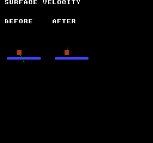
Build command
New-Item -ItemType Directory -Force .\out | Out-Null
.\kitaqfc\kitaqfc.exe .\kitaq-docs\samples\api-examples\fc\physics_surface.c -I .\kitaqfc\lib -I .\kitaq-docs\samples --mapper=mmc3 --nes-chr-ram -o .\out\physics_surface.nes --no-cache --no-disasmImplementation and source
kitaqfc/lib/physics2d.h:86
Truncates toward zero, including negative values; coefficient is -256..256.
kitaqfc/lib/physics2d.c:8
s16 kq2d_scale_q8(s16 value,s16 coefficient) {
u16 magnitude;u16 product;u8 factor;u8 negative;
__asm {
LDA value
ORA value+1
BEQ kqfc_scale_zero
LDA coefficient
BNE kqfc_scale_fraction
LDA coefficient+1
BEQ kqfc_scale_zero
BMI kqfc_scale_negate_value
LDA value
LDX value+1
RTS
kqfc_scale_negate_value:
SEC
LDA #0
SBC value
STA product
LDA #0
SBC value+1
TAX
LDA product
RTS
kqfc_scale_zero:
LDA #0
LDX #0
RTS
kqfc_scale_fraction:
LDA value+1
EOR coefficient+1
AND #128
STA negative
LDA value
STA magnitude
LDA value+1
STA magnitude+1
BPL kqfc_scale_value_positive
SEC
LDA #0
SBC magnitude
STA magnitude
LDA #0
SBC magnitude+1
STA magnitude+1
kqfc_scale_value_positive:
LDA coefficient
STA factor
LDA coefficient+1
BPL kqfc_scale_factor_positive
SEC
LDA #0
SBC factor
STA factor
kqfc_scale_factor_positive:
LDA #0
STA product
STA product+1
// Process coefficient bit 0; carry is the product's seventeenth bit.
LSR factor
BCC kqfc_scale_shift_0
CLC
LDA product
ADC magnitude
STA product
LDA product+1
ADC magnitude+1
STA product+1
kqfc_scale_shift_0:
ROR product+1
ROR product
// Process coefficient bit 1; carry is the product's seventeenth bit.
LSR factor
BCC kqfc_scale_shift_1
CLC
LDA product
ADC magnitude
STA product
LDA product+1
ADC magnitude+1
STA product+1
kqfc_scale_shift_1:
ROR product+1
ROR product
// Process coefficient bit 2; carry is the product's seventeenth bit.
LSR factor
BCC kqfc_scale_shift_2
CLC
LDA product
ADC magnitude
STA product
LDA product+1
ADC magnitude+1
STA product+1
kqfc_scale_shift_2:
ROR product+1
ROR product
// Process coefficient bit 3; carry is the product's seventeenth bit.
LSR factor
BCC kqfc_scale_shift_3
CLC
LDA product
ADC magnitude
STA product
LDA product+1
ADC magnitude+1
STA product+1
kqfc_scale_shift_3:
ROR product+1
ROR product
// Process coefficient bit 4; carry is the product's seventeenth bit.
LSR factor
BCC kqfc_scale_shift_4
CLC
LDA product
ADC magnitude
STA product
LDA product+1
ADC magnitude+1
STA product+1
kqfc_scale_shift_4:
ROR product+1
ROR product
// Process coefficient bit 5; carry is the product's seventeenth bit.
LSR factor
BCC kqfc_scale_shift_5
CLC
LDA product
ADC magnitude
STA product
LDA product+1
ADC magnitude+1
STA product+1
kqfc_scale_shift_5:
ROR product+1
ROR product
// Process coefficient bit 6; carry is the product's seventeenth bit.
LSR factor
BCC kqfc_scale_shift_6
CLC
LDA product
ADC magnitude
STA product
LDA product+1
ADC magnitude+1
STA product+1
kqfc_scale_shift_6:
ROR product+1
ROR product
// Process coefficient bit 7; carry is the product's seventeenth bit.
LSR factor
BCC kqfc_scale_shift_7
CLC
LDA product
ADC magnitude
STA product
LDA product+1
ADC magnitude+1
STA product+1
kqfc_scale_shift_7:
ROR product+1
ROR product
LDA negative
BEQ kqfc_scale_positive
SEC
LDA #0
SBC product
STA product
LDA #0
SBC product+1
TAX
LDA product
RTS
kqfc_scale_positive:
LDA product
LDX product+1
RTS
}
}kq2d_body_limit_speed
Estimate vector length conservatively and scale both axes together to limit combined speed.
Syntax
void kq2d_body_limit_speed(KQBody2D* body, s16 max_speed);Parameters
bodyPointer to the body to modify. Fields not used by this operation are retained.
max_speedSpeed limit; the entry specifies whether this limits each axis or the combined vector.
Return value
No return value. This entry describes the fields updated and when they take effect.
Conditions and limits
Keep velocity magnitudes and a positive max_speed within 16383. A nonpositive limit zeros velocity. NULL is ignored, but activity and mass do not suppress modification. Integer quantization can undershoot the limit and tiny scale factors can produce zero.
Compile implementation files as well as including headers. For 2D use fixed.c and physics2d.c; for 3D also include physics3d.c. The examples use MMC3, CHR RAM and drawing storage at PRG RAM $6800–$6FFF. That drawing buffer is not a requirement of the physics library itself.
Usage example
kq2d_body_limit_speed(&body,250);
result[2]=body.vx; result[3]=body.vy;This is a calling fragment. Follow the stated initialization and buffer requirements before using it in a complete program.
Expected result
The red body stays in place. Its green velocity line changes from (8,16) on the left to (2,−8) on the right, showing bounce and tangential friction against the blue surface. Panel origins are screen (8,48) and (88,48); the body center is local (24,40). Incoming speed is 16 and the crossing-time example returns 192/256. A separate speed-limit call reduces (300,400) to (147,196).
Build command
New-Item -ItemType Directory -Force .\out | Out-Null
.\kitaqfc\kitaqfc.exe .\kitaq-docs\samples\api-examples\fc\physics_surface.c -I .\kitaqfc\lib -I .\kitaq-docs\samples --mapper=mmc3 --nes-chr-ram -o .\out\physics_surface.nes --no-cache --no-disasmImplementation and source
kitaqfc/lib/physics2d.h:90
Conservative circular bound, with a shared Q8 scale for both components. Quantizes toward zero; very small limits relative to input may yield zero. Components and positive max_speed must be <= 16383 in magnitude.
kitaqfc/lib/physics2d.c:214
void kq2d_body_limit_speed(KQBody2D* body, s16 max_speed)
{
u16 x;
u16 y;
u16 swap;
u16 ratio;
u16 length;
if (body == 0) return;
if (max_speed <= 0) { body->vx = 0; body->vy = 0; return; }
x = (u16)body->vx;
y = (u16)body->vy;
if (body->vx < 0) x = (u16)(0 - body->vx);
if (body->vy < 0) y = (u16)(0 - body->vy);
if (x + y <= (u16)max_speed) return;
if (x < y) { swap = x; x = y; y = swap; }
// major + minor/2 bounds hypot from above for 0 <= minor <= major.
if (x + (y >> 1) + 1 <= (u16)max_speed) return;
// Round the minor/major ratio upward for the 65-entry upper-bound table.
// The extra unit covers truncation when converting the estimate back to speed.
ratio = (kq2d__fraction_q8(y, x) + 4) >> 2;
if (ratio > 64) ratio = 64;
length = x + (u16)kq2d_scale_q8((s16)x, (s16)kq2d_hypot_extra[(u8)ratio]) + 1;
if (length <= (u16)max_speed) return;
ratio = kq2d__fraction_q8((u16)max_speed, length);
body->vx = kq2d_scale_q8(body->vx, (s16)ratio);
body->vy = kq2d_scale_q8(body->vy, (s16)ratio);
}kq2d_body_resolve_surface
Use velocity relative to a moving surface to apply normal bounce, minimum bounce speed and tangential friction.
Syntax
s16 kq2d_body_resolve_surface(KQBody2D* body, const KQSurface2D* surface);Parameters
bodyPointer to the body to modify. Fields not used by this operation are retained.
surfacePointer to a KQSurface2D containing its normal, velocity, bounce and friction settings.
Return value
Returns the positive incoming normal speed, or 0 for NULL inputs or separating motion.
Conditions and limits
Use a Q8 unit normal with length 256. Keep relative components within +/-8191, threshold/kick nonnegative and coefficients in 0..255. Restitution applies only strictly above the threshold, with kick as a minimum rebound speed. NULL inputs or separating motion leave velocity unchanged. Contact detection and penetration correction are separate; activity and mass are not checked.
Compile implementation files as well as including headers. For 2D use fixed.c and physics2d.c; for 3D also include physics3d.c. The examples use MMC3, CHR RAM and drawing storage at PRG RAM $6800–$6FFF. That drawing buffer is not a requirement of the physics library itself.
Usage example
result[6]=kq2d_body_resolve_surface(&body,&surface);
result[7]=body.vx; result[8]=body.vy; result[9]=body.y;This is a calling fragment. Follow the stated initialization and buffer requirements before using it in a complete program.
Expected result
The red body stays in place. Its green velocity line changes from (8,16) on the left to (2,−8) on the right, showing bounce and tangential friction against the blue surface. Panel origins are screen (8,48) and (88,48); the body center is local (24,40). Incoming speed is 16 and the crossing-time example returns 192/256. A separate speed-limit call reduces (300,400) to (147,196).
Build command
New-Item -ItemType Directory -Force .\out | Out-Null
.\kitaqfc\kitaqfc.exe .\kitaq-docs\samples\api-examples\fc\physics_surface.c -I .\kitaqfc\lib -I .\kitaq-docs\samples --mapper=mmc3 --nes-chr-ram -o .\out\physics_surface.nes --no-cache --no-disasmImplementation and source
kitaqfc/lib/physics2d.h:93
Kinematic surface response; returns incoming normal speed, or zero if separating. Caller resolves penetration separately. Relative components must fit +/-8191.
kitaqfc/lib/physics2d.c:268
s16 kq2d_body_resolve_surface(KQBody2D* body, const KQSurface2D* surface)
{
s16 vx;
s16 vy;
s16 speed;
s16 tangent;
s16 bounce = 0;
s16 impulse;
s16 friction;
if (body == 0 || surface == 0) return 0;
vx = (s16)(body->vx - surface->vx);
vy = (s16)(body->vy - surface->vy);
speed = (s16)(kq2d_scale_q8(vx,surface->nx_q8) + kq2d_scale_q8(vy,surface->ny_q8));
if (speed >= 0) return 0;
speed = (s16)(0 - speed);
if (speed > surface->bounce_threshold) bounce = kq2d_scale_q8(speed,(s16)surface->restitution_q8);
if (bounce < surface->kick) bounce = surface->kick;
impulse = (s16)(speed + bounce);
// A resting contact is a tangent constraint, not a tiny rounded bounce.
if (bounce == 0) {
tangent = (s16)(kq2d__rest_component(vy,surface->nx_q8) - kq2d__rest_component(vx,surface->ny_q8));
friction = kq2d_scale_q8(impulse,(s16)surface->friction_q8);
if (tangent > friction) tangent = (s16)(tangent - friction);
else if (tangent < (s16)(0 - friction)) tangent = (s16)(tangent + friction);
else tangent = 0;
body->vx = (s16)(surface->vx - kq2d__rest_component(tangent,surface->ny_q8));
body->vy = (s16)(surface->vy + kq2d__rest_component(tangent,surface->nx_q8));
return speed;
}
body->vx = (s16)(body->vx + kq2d_scale_q8(impulse,surface->nx_q8));
body->vy = (s16)(body->vy + kq2d_scale_q8(impulse,surface->ny_q8));
if (surface->friction_q8 != 0) {
tangent = (s16)(kq2d_scale_q8(vy,surface->nx_q8) - kq2d_scale_q8(vx,surface->ny_q8));
friction = kq2d_scale_q8(impulse,(s16)surface->friction_q8);
if (tangent > friction) tangent = friction;
if (tangent < (s16)(0 - friction)) tangent = (s16)(0 - friction);
body->vx = (s16)(body->vx + kq2d_scale_q8(tangent,surface->ny_q8));
body->vy = (s16)(body->vy - kq2d_scale_q8(tangent,surface->nx_q8));
}
return speed;
}kq2d_surface_toi_q8
Estimate the within-tick crossing time from signed start/end gaps under linear motion.
Syntax
u16 kq2d_surface_toi_q8(s16 start_gap, s16 end_gap);Parameters
start_gapSigned gap at the start of the tick; positive means outside the surface.
end_gapSigned gap at the end of the tick; negative means past the surface.
Return value
Returns Q8 time in 0..256; 192 is 75% of the tick.
Conditions and limits
Keep gaps within +/-8191. A nonpositive start returns 0; a nonnegative end returns 256. Initial overlap and time zero share a return value, as do no crossing and contact exactly at the endpoint. No position is changed.
Compile implementation files as well as including headers. For 2D use fixed.c and physics2d.c; for 3D also include physics3d.c. The examples use MMC3, CHR RAM and drawing storage at PRG RAM $6800–$6FFF. That drawing buffer is not a requirement of the physics library itself.
Usage example
result[4]=kq2d_surface_toi_q8(6,-2);
result[5]=kq2d_surface_toi_q8(6,0);This is a calling fragment. Follow the stated initialization and buffer requirements before using it in a complete program.
Expected result
The red body stays in place. Its green velocity line changes from (8,16) on the left to (2,−8) on the right, showing bounce and tangential friction against the blue surface. Panel origins are screen (8,48) and (88,48); the body center is local (24,40). Incoming speed is 16 and the crossing-time example returns 192/256. A separate speed-limit call reduces (300,400) to (147,196).
Build command
New-Item -ItemType Directory -Force .\out | Out-Null
.\kitaqfc\kitaqfc.exe .\kitaq-docs\samples\api-examples\fc\physics_surface.c -I .\kitaqfc\lib -I .\kitaq-docs\samples --mapper=mmc3 --nes-chr-ram -o .\out\physics_surface.nes --no-cache --no-disasmImplementation and source
kitaqfc/lib/physics2d.h:96
Linear crossing time in Q8 (0..256); positive separation is outside. Returns 0 for initial overlap, 256 for no crossing. Gaps must fit +/-8191.
kitaqfc/lib/physics2d.c:245
u16 kq2d_surface_toi_q8(s16 start_gap, s16 end_gap)
{
if (start_gap <= 0) return 0;
if (end_gap >= 0) return 256;
return kq2d__fraction_q8((u16)start_gap, (u16)(start_gap - end_gap));
}physics3d
Physics for nonrotating 3D boxes represented by centers and per-axis half extents. Mass/inverse mass weight contacts, restitution_q8 controls bounce and ax/ay/az provide persistent acceleration. Rendering is separate. The sample draws front and top views of the same body to show depth movement and wall bounce.
Choose consistent integer units for positions, radii, half extents, velocities and gravity. One step is one simulation tick. The samples use one unit per pixel. These routines neither convert positions to Q8.8 automatically nor render them.
last_impact_speed records the maximum closing speed along a contact axis. Integration clears it for active dynamic bodies; static and inactive bodies retain it. Neither break_speed nor KQ3D_BODY_BROKEN triggers automatic destruction. The game decides when to break a body and changes flags/active itself.
Compile implementation files as well as including headers. For 2D use fixed.c and physics2d.c; for 3D also include physics3d.c. The examples use MMC3, CHR RAM and drawing storage at PRG RAM $6800–$6FFF. That drawing buffer is not a requirement of the physics library itself.
kq3d_world_init
Attach a body array to a 3D world with gravity (0,24,0), four passes and per-axis speed limit 512.
Syntax
void kq3d_world_init(KQWorld3D* world, KQBody3D* bodies, u8 body_count);Parameters
worldPointer to the world holding the body array and simulation settings.
bodiesStart of a caller-owned body array containing body_count elements.
body_countNumber of array slots, 0..255, including inactive entries.
Return value
No return value. This entry describes the fields updated and when they take effect.
Conditions and limits
Choose consistent integer units for positions, radii, half extents, velocities and gravity. One step is one simulation tick. The samples use one unit per pixel. These routines neither convert positions to Q8.8 automatically nor render them.
A world borrows its array. The caller allocates and owns body storage and keeps it alive. Initializing a world does not initialize its array elements.
Compile implementation files as well as including headers. For 2D use fixed.c and physics2d.c; for 3D also include physics3d.c. The examples use MMC3, CHR RAM and drawing storage at PRG RAM $6800–$6FFF. That drawing buffer is not a requirement of the physics library itself.
Usage example
kq3d_world_init(&world,bodies,2);
result[0]=world.gravity_y; result[1]=world.solver_iterations; result[2]=world.max_speed;This is a calling fragment. Follow the stated initialization and buffer requirements before using it in a complete program.
Expected result
Left is the X/Y front view; right is the X/Z top view. Green outlines mark the initial (24,24,16), red boxes show (36,24,24) after one tick, and blue regions are the static obstacle. X velocity changes from 16 to −14 while Z velocity stays 8. Impact is 16, but flags remain zero even with break_speed=1. Panel origins are screen (8,48) and (88,48).
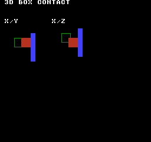
Build command
New-Item -ItemType Directory -Force .\out | Out-Null
.\kitaqfc\kitaqfc.exe .\kitaq-docs\samples\api-examples\fc\physics_body3d.c -I .\kitaqfc\lib -I .\kitaq-docs\samples --mapper=mmc3 --nes-chr-ram -o .\out\physics_body3d.nes --no-cache --no-disasmImplementation and source
kitaqfc/lib/physics3d.h:47
Borrow the body array without initializing it. Set gravity (0,24,0), four contact passes and a per-axis speed limit of 512. Null world is ignored; the caller retains ownership and must keep the array alive.
kitaqfc/lib/physics3d.c:125
void kq3d_world_init(KQWorld3D* world, KQBody3D* bodies, u8 body_count)
{
if (world == 0) return;
world->bodies = bodies;
world->body_count = body_count;
world->gravity_x = 0;
world->gravity_y = 24;
world->gravity_z = 0;
world->solver_iterations = 4;
world->max_speed = 512;
}kq3d_body_init
Initialize 3D center, half extents and mass; zero velocity, acceleration, impact and flags, and activate the body.
Syntax
void kq3d_body_init(KQBody3D* body, s16 x, s16 y, s16 z, s16 half_x, s16 half_y, s16 half_z, s16 mass_q8);Parameters
bodyPointer to the body to modify. Fields not used by this operation are retained.
xX coordinate of the center or point, in pixels in the sample.
yY coordinate of the center or point; positive is downward in the sample.
zZ coordinate of the center, shown vertically in the sample top view.
half_xHalf extent along X; the full box width is twice this value.
half_yHalf extent along Y; the full box height is twice this value.
half_zHalf extent along Z; full depth is twice this value.
mass_q8Mass value with 256 representing 1.0; nonpositive values create a static body.
Return value
No return value. This entry describes the fields updated and when they take effect.
Conditions and limits
Choose consistent integer units for positions, radii, half extents, velocities and gravity. One step is one simulation tick. The samples use one unit per pixel. These routines neither convert positions to Q8.8 automatically nor render them.
Restitution is 224 and break_speed is zero. Mass follows kq3d_body_set_mass rules. NULL is ignored; the caller supplies valid half extents.
Compile implementation files as well as including headers. For 2D use fixed.c and physics2d.c; for 3D also include physics3d.c. The examples use MMC3, CHR RAM and drawing storage at PRG RAM $6800–$6FFF. That drawing buffer is not a requirement of the physics library itself.
Usage example
kq3d_body_init(&temp,10,20,30,8,8,8,256);
result[3]=temp.inv_mass_q8; result[4]=temp.restitution_q8; result[5]=temp.active;This is a calling fragment. Follow the stated initialization and buffer requirements before using it in a complete program.
Expected result
Left is the X/Y front view; right is the X/Z top view. Green outlines mark the initial (24,24,16), red boxes show (36,24,24) after one tick, and blue regions are the static obstacle. X velocity changes from 16 to −14 while Z velocity stays 8. Impact is 16, but flags remain zero even with break_speed=1. Panel origins are screen (8,48) and (88,48).
Build command
New-Item -ItemType Directory -Force .\out | Out-Null
.\kitaqfc\kitaqfc.exe .\kitaq-docs\samples\api-examples\fc\physics_body3d.c -I .\kitaqfc\lib -I .\kitaq-docs\samples --mapper=mmc3 --nes-chr-ram -o .\out\physics_body3d.nes --no-cache --no-disasmImplementation and source
kitaqfc/lib/physics3d.h:51
Initialize an active centered box with zero velocity/acceleration, restitution 224, cleared impact/flags and mass set through the weight helper. The caller supplies valid half extents. Null body is ignored.
kitaqfc/lib/physics3d.c:161
void kq3d_body_init(KQBody3D* body, s16 x, s16 y, s16 z, s16 half_x, s16 half_y, s16 half_z, s16 mass_q8)
{
if (body == 0) return;
body->x = x;
body->y = y;
body->z = z;
body->vx = 0;
body->vy = 0;
body->vz = 0;
body->ax = 0;
body->ay = 0;
body->az = 0;
body->half_x = half_x;
body->half_y = half_y;
body->half_z = half_z;
body->restitution_q8 = 224;
body->break_speed = 0;
body->last_impact_speed = 0;
body->active = 1;
body->flags = 0;
kq3d_body_set_mass(body, mass_q8);
}kq3d_body_set_mass
Store the requested mass and compute an inverse-mass weight for correction and bounce.
Syntax
void kq3d_body_set_mass(KQBody3D* body, s16 mass_q8);Parameters
bodyPointer to the body to modify. Fields not used by this operation are retained.
mass_q8Mass value with 256 representing 1.0; nonpositive values create a static body.
Return value
No return value. This entry describes the fields updated and when they take effect.
Conditions and limits
Nonpositive mass gives inverse mass zero (static). Positive mass uses integer 32767/max(mass,64), with a minimum of 1. Stored mass retains the requested value: the weight is not an exact Q8 reciprocal. Mass 256 gives inverse mass 127. Velocity/activity stay unchanged; NULL is ignored.
Compile implementation files as well as including headers. For 2D use fixed.c and physics2d.c; for 3D also include physics3d.c. The examples use MMC3, CHR RAM and drawing storage at PRG RAM $6800–$6FFF. That drawing buffer is not a requirement of the physics library itself.
Usage example
kq3d_body_set_mass(&temp,32); result[6]=temp.mass_q8; result[7]=temp.inv_mass_q8;
kq3d_body_set_mass(&temp,0); result[8]=temp.inv_mass_q8;
kq3d_body_set_mass(&temp,256);This is a calling fragment. Follow the stated initialization and buffer requirements before using it in a complete program.
Expected result
Left is the X/Y front view; right is the X/Z top view. Green outlines mark the initial (24,24,16), red boxes show (36,24,24) after one tick, and blue regions are the static obstacle. X velocity changes from 16 to −14 while Z velocity stays 8. Impact is 16, but flags remain zero even with break_speed=1. Panel origins are screen (8,48) and (88,48).
Build command
New-Item -ItemType Directory -Force .\out | Out-Null
.\kitaqfc\kitaqfc.exe .\kitaq-docs\samples\api-examples\fc\physics_body3d.c -I .\kitaqfc\lib -I .\kitaq-docs\samples --mapper=mmc3 --nes-chr-ram -o .\out\physics_body3d.nes --no-cache --no-disasmImplementation and source
kitaqfc/lib/physics3d.h:56
Store the requested mass; nonpositive mass makes the body static. For positive mass compute inverse weight as max(1,32767/max(mass,64)). The stored mass retains the original input; this is a relative solver weight, not an exact Q8 reciprocal. Null body is ignored.
kitaqfc/lib/physics3d.c:142
void kq3d_body_set_mass(KQBody3D* body, s16 mass_q8)
{
if (body == 0) return;
body->mass_q8 = mass_q8;
if (mass_q8 <= 0)
{
body->inv_mass_q8 = 0;
return;
}
if (mass_q8 < 64) mass_q8 = 64;
body->inv_mass_q8 = (s16)(32767 / mass_q8);
if (body->inv_mass_q8 <= 0) body->inv_mass_q8 = 1;
}kq3d_step
Integrate active dynamic bodies and resolve contact correction, bounce and impact records among active world entries.
Syntax
void kq3d_step(KQWorld3D* world);Parameters
worldPointer to the world holding the body array and simulation settings.
Return value
No return value. This entry describes the fields updated and when they take effect.
Conditions and limits
Choose consistent integer units for positions, radii, half extents, velocities and gravity. One step is one simulation tick. The samples use one unit per pixel. These routines neither convert positions to Q8.8 automatically nor render them.
A world borrows its array. The caller allocates and owns body storage and keeps it alive. Initializing a world does not initialize its array elements.
Keep sums, differences, combined half extents and contact-correction products within signed 16-bit range. Velocity limits apply after addition and cannot prevent overflow during that addition.
Box integration and collision routines use shared scratch storage. Do not re-enter these physics routines from an interrupt.
Contacts use the least-penetrating axis, preferring X, then Y, then Z on ties. Only closing motion produces a bounce, using inverse masses and the average restitution clamped to 0..256. Fast tunnelling, rotation, angular momentum and friction are not handled.
last_impact_speed records the maximum closing speed along a contact axis. Integration clears it for active dynamic bodies; static and inactive bodies retain it. Neither break_speed nor KQ3D_BODY_BROKEN triggers automatic destruction. The game decides when to break a body and changes flags/active itself.
A NULL world or array is ignored. A zero solver_iterations value still performs one contact pass.
The intermediate impact*(256+restitution) and correction*inverse-mass products are also s16. Keep products within 32767; for example, with restitution 256 keep impact at most 63.
Compile implementation files as well as including headers. For 2D use fixed.c and physics2d.c; for 3D also include physics3d.c. The examples use MMC3, CHR RAM and drawing storage at PRG RAM $6800–$6FFF. That drawing buffer is not a requirement of the physics library itself.
Usage example
kq3d_step(&world);
result[16]=bodies[0].x; result[17]=bodies[0].y; result[18]=bodies[0].z;
result[19]=bodies[0].vx; result[20]=bodies[0].vz;
result[21]=bodies[0].last_impact_speed; result[22]=bodies[0].flags;This is a calling fragment. Follow the stated initialization and buffer requirements before using it in a complete program.
Expected result
Left is the X/Y front view; right is the X/Z top view. Green outlines mark the initial (24,24,16), red boxes show (36,24,24) after one tick, and blue regions are the static obstacle. X velocity changes from 16 to −14 while Z velocity stays 8. Impact is 16, but flags remain zero even with break_speed=1. Panel origins are screen (8,48) and (88,48).
Build command
New-Item -ItemType Directory -Force .\out | Out-Null
.\kitaqfc\kitaqfc.exe .\kitaq-docs\samples\api-examples\fc\physics_body3d.c -I .\kitaqfc\lib -I .\kitaq-docs\samples --mapper=mmc3 --nes-chr-ram -o .\out\physics_body3d.nes --no-cache --no-disasmImplementation and source
kitaqfc/lib/physics3d.h:62
Integrate active dynamic bodies and reset their impact values, then solve each active unordered pair for the configured passes (zero means one). Static bodies retain previous impact maxima until the game clears them. Acceleration persists; flags and break thresholds remain game-owned. This discrete solver uses non-reentrant helper scratch and can miss fast crossings.
kitaqfc/lib/physics3d.c:323
void kq3d_step(KQWorld3D* world)
{
if (world == 0) return;
if (world->bodies == 0) return;
KQBody3D* bodies = world->bodies;
u8 count = world->body_count;
u8 i;
for (i = 0; i < count; i++)
{
KQBody3D* b = &bodies[(u8)i];
if (b->active == 0) continue;
if (b->inv_mass_q8 <= 0) continue;
b->last_impact_speed = 0;
kq3d_asm_value = b->vx;
kq3d_asm_operand = world->gravity_x;
kq3d__add_value();
kq3d_asm_operand = b->ax;
kq3d__add_value();
kq3d_asm_limit = world->max_speed;
kq3d__clamp_value();
b->vx = kq3d_asm_value;
kq3d_asm_value = b->vy;
kq3d_asm_operand = world->gravity_y;
kq3d__add_value();
kq3d_asm_operand = b->ay;
kq3d__add_value();
kq3d_asm_limit = world->max_speed;
kq3d__clamp_value();
b->vy = kq3d_asm_value;
kq3d_asm_value = b->vz;
kq3d_asm_operand = world->gravity_z;
kq3d__add_value();
kq3d_asm_operand = b->az;
kq3d__add_value();
kq3d_asm_limit = world->max_speed;
kq3d__clamp_value();
b->vz = kq3d_asm_value;
kq3d_asm_value = b->x;
kq3d_asm_operand = b->vx;
kq3d__add_value();
b->x = kq3d_asm_value;
kq3d_asm_value = b->y;
kq3d_asm_operand = b->vy;
kq3d__add_value();
b->y = kq3d_asm_value;
kq3d_asm_value = b->z;
kq3d_asm_operand = b->vz;
kq3d__add_value();
b->z = kq3d_asm_value;
}
u8 iterations = world->solver_iterations;
if (iterations == 0) iterations = 1;
u8 it;
for (it = 0; it < iterations; it++)
{
for (i = 0; i < count; i++)
{
KQBody3D* a = &bodies[(u8)i];
if (a->active == 0) continue;
u8 j;
for (j = (u8)(i + 1); j < count; j++)
{
KQBody3D* b = &bodies[(u8)j];
if (b->active == 0) continue;
kq3d__resolve_pair(a, b);
}
}
}
}kq3d_integrate_body
Clear one active dynamic body’s impact, add world gravity and body acceleration, clamp each velocity axis and advance position.
Syntax
void kq3d_integrate_body(KQWorld3D* world, KQBody3D* body);Parameters
worldPointer to the world holding the body array and simulation settings.
bodyPointer to the body to modify. Fields not used by this operation are retained.
Return value
No return value. This entry describes the fields updated and when they take effect.
Conditions and limits
Choose consistent integer units for positions, radii, half extents, velocities and gravity. One step is one simulation tick. The samples use one unit per pixel. These routines neither convert positions to Q8.8 automatically nor render them.
Keep sums, differences, combined half extents and contact-correction products within signed 16-bit range. Velocity limits apply after addition and cannot prevent overflow during that addition.
Box integration and collision routines use shared scratch storage. Do not re-enter these physics routines from an interrupt.
last_impact_speed records the maximum closing speed along a contact axis. Integration clears it for active dynamic bodies; static and inactive bodies retain it. Neither break_speed nor KQ3D_BODY_BROKEN triggers automatic destruction. The game decides when to break a body and changes flags/active itself.
ax/ay/az persist and apply again on the next integration. This function alone does not resolve contacts. NULL, inactive and static bodies are not modified.
Compile implementation files as well as including headers. For 2D use fixed.c and physics2d.c; for 3D also include physics3d.c. The examples use MMC3, CHR RAM and drawing storage at PRG RAM $6800–$6FFF. That drawing buffer is not a requirement of the physics library itself.
Usage example
kq3d_integrate_body(&world,&temp);
result[9]=temp.x; result[10]=temp.y; result[11]=temp.z; result[12]=temp.last_impact_speed;This is a calling fragment. Follow the stated initialization and buffer requirements before using it in a complete program.
Expected result
Left is the X/Y front view; right is the X/Z top view. Green outlines mark the initial (24,24,16), red boxes show (36,24,24) after one tick, and blue regions are the static obstacle. X velocity changes from 16 to −14 while Z velocity stays 8. Impact is 16, but flags remain zero even with break_speed=1. Panel origins are screen (8,48) and (88,48).
Build command
New-Item -ItemType Directory -Force .\out | Out-Null
.\kitaqfc\kitaqfc.exe .\kitaq-docs\samples\api-examples\fc\physics_body3d.c -I .\kitaqfc\lib -I .\kitaq-docs\samples --mapper=mmc3 --nes-chr-ram -o .\out\physics_body3d.nes --no-cache --no-disasmImplementation and source
kitaqfc/lib/physics3d.h:67
Reset impact for one active dynamic body, add gravity and persistent body acceleration, clamp velocity per axis and advance position. Static/inactive bodies retain impact state. Null inputs are ignored; no contacts are solved. Use a nonnegative speed limit and avoid overflow before clamping.
kitaqfc/lib/physics3d.c:267
void kq3d_integrate_body(KQWorld3D* world, KQBody3D* body)
{
if (world == 0) return;
if (body == 0) return;
if (body->active == 0) return;
if (body->inv_mass_q8 <= 0) return;
body->last_impact_speed = 0;
kq3d_asm_value = body->vx;
kq3d_asm_operand = world->gravity_x;
kq3d__add_value();
kq3d_asm_operand = body->ax;
kq3d__add_value();
kq3d_asm_limit = world->max_speed;
kq3d__clamp_value();
body->vx = kq3d_asm_value;
kq3d_asm_value = body->vy;
kq3d_asm_operand = world->gravity_y;
kq3d__add_value();
kq3d_asm_operand = body->ay;
kq3d__add_value();
kq3d_asm_limit = world->max_speed;
kq3d__clamp_value();
body->vy = kq3d_asm_value;
kq3d_asm_value = body->vz;
kq3d_asm_operand = world->gravity_z;
kq3d__add_value();
kq3d_asm_operand = body->az;
kq3d__add_value();
kq3d_asm_limit = world->max_speed;
kq3d__clamp_value();
body->vz = kq3d_asm_value;
kq3d_asm_value = body->x;
kq3d_asm_operand = body->vx;
kq3d__add_value();
body->x = kq3d_asm_value;
kq3d_asm_value = body->y;
kq3d_asm_operand = body->vy;
kq3d__add_value();
body->y = kq3d_asm_value;
kq3d_asm_value = body->z;
kq3d_asm_operand = body->vz;
kq3d__add_value();
body->z = kq3d_asm_value;
}kq3d_overlap_aabb
Test strict overlap of two centered boxes on all three axes.
Syntax
u8 kq3d_overlap_aabb(const KQBody3D* a, const KQBody3D* b);Parameters
aValid body pointer; the query ignores activity, mass and flags.
bValid body pointer; the query ignores activity, mass and flags.
Return value
Returns 1 for interior overlap and 0 for touching or separated shapes.
Conditions and limits
Choose consistent integer units for positions, radii, half extents, velocities and gravity. One step is one simulation tick. The samples use one unit per pixel. These routines neither convert positions to Q8.8 automatically nor render them.
Keep sums, differences, combined half extents and contact-correction products within signed 16-bit range. Velocity limits apply after addition and cannot prevent overflow during that addition.
Compile implementation files as well as including headers. For 2D use fixed.c and physics2d.c; for 3D also include physics3d.c. The examples use MMC3, CHR RAM and drawing storage at PRG RAM $6800–$6FFF. That drawing buffer is not a requirement of the physics library itself.
Usage example
result[14]=kq3d_overlap_aabb(&bodies[0],&bodies[1]);
bodies[1].z=32; result[15]=kq3d_overlap_aabb(&bodies[0],&bodies[1]);This is a calling fragment. Follow the stated initialization and buffer requirements before using it in a complete program.
Expected result
Left is the X/Y front view; right is the X/Z top view. Green outlines mark the initial (24,24,16), red boxes show (36,24,24) after one tick, and blue regions are the static obstacle. X velocity changes from 16 to −14 while Z velocity stays 8. Impact is 16, but flags remain zero even with break_speed=1. Panel origins are screen (8,48) and (88,48).
Build command
New-Item -ItemType Directory -Force .\out | Out-Null
.\kitaqfc\kitaqfc.exe .\kitaq-docs\samples\api-examples\fc\physics_body3d.c -I .\kitaqfc\lib -I .\kitaq-docs\samples --mapper=mmc3 --nes-chr-ram -o .\out\physics_body3d.nes --no-cache --no-disasmImplementation and source
kitaqfc/lib/physics3d.h:71
Test strict overlap on all three axes; face-only contact returns false. Valid pointers are required and flags are ignored. Center differences and extent sums must fit the signed 16-bit magnitude calculations.
kitaqfc/lib/physics3d.c:188
u8 kq3d_overlap_aabb(const KQBody3D* a, const KQBody3D* b)
{
s16 dx = kq3d__abs_s16((s16)(b->x - a->x));
s16 dy = kq3d__abs_s16((s16)(b->y - a->y));
s16 dz = kq3d__abs_s16((s16)(b->z - a->z));
s16 sx = (s16)(a->half_x + b->half_x);
s16 sy = (s16)(a->half_y + b->half_y);
s16 sz = (s16)(a->half_z + b->half_z);
if (dx >= sx) return 0;
if (dy >= sy) return 0;
if (dz >= sz) return 0;
return 1;
}kq3d_dot_q8_8
Divide each of three signed products by 256, truncate each toward zero, then add the terms.
Syntax
s16 kq3d_dot_q8_8(s16 x, s16 y, s16 z, s8 ax, s8 ay, s8 az);Parameters
xSigned 16-bit component to multiply by the matching coefficient; it may represent position or velocity.
ySigned 16-bit component to multiply by the matching coefficient; it may represent position or velocity.
zSigned 16-bit component to multiply by the matching coefficient; it may represent position or velocity.
axSigned byte coefficient for this axis (-128..127), scaled by 1/256.
aySigned byte coefficient for this axis (-128..127), scaled by 1/256.
azSigned byte coefficient for this axis (-128..127), scaled by 1/256.
Return value
Returns the sum of three quantized terms as s16.
Conditions and limits
Truncating each term toward zero first can differ from shifting the full sum once. A coefficient cannot store 1.0=256. The final sum is not saturated.
Compile implementation files as well as including headers. For 2D use fixed.c and physics2d.c; for 3D also include physics3d.c. The examples use MMC3, CHR RAM and drawing storage at PRG RAM $6800–$6FFF. That drawing buffer is not a requirement of the physics library itself.
Usage example
result[13]=kq3d_dot_q8_8(256,128,0,64,-64,127);This is a calling fragment. Follow the stated initialization and buffer requirements before using it in a complete program.
Expected result
Left is the X/Y front view; right is the X/Z top view. Green outlines mark the initial (24,24,16), red boxes show (36,24,24) after one tick, and blue regions are the static obstacle. X velocity changes from 16 to −14 while Z velocity stays 8. Impact is 16, but flags remain zero even with break_speed=1. Panel origins are screen (8,48) and (88,48).
Build command
New-Item -ItemType Directory -Force .\out | Out-Null
.\kitaqfc\kitaqfc.exe .\kitaq-docs\samples\api-examples\fc\physics_body3d.c -I .\kitaqfc\lib -I .\kitaq-docs\samples --mapper=mmc3 --nes-chr-ram -o .\out\physics_body3d.nes --no-cache --no-disasmImplementation and source
kitaqfc/lib/physics3d.h:75
Sum three signed products, dividing each by 256 (toward zero) before addition. Coefficients are signed bytes scaled by 1/256; the 16-bit sum is not saturated.
kitaqfc/lib/physics3d.c:407
s16 kq3d_dot_q8_8(s16 x, s16 y, s16 z, s8 ax, s8 ay, s8 az)
{
return (s16)(kq2d_scale_q8(x,(s16)ax) + kq2d_scale_q8(y,(s16)ay) + kq2d_scale_q8(z,(s16)az));
}ppu.h / ppu.c
nes_ppu_seek_bytes
Reset the shared PPU address latch by reading PPUSTATUS, then set the address from separate hi and lo bytes. This form is useful when the game already stores the address as two bytes.
Syntax
void nes_ppu_seek_bytes(unsigned char hi, unsigned char lo);Parameters
hi / lohiandloare the upper and lower bytes of a PPU address: for example,0x23, 0x42means0x2342. They are address bytes, not tile coordinates. Normal PPU address masking and mirroring apply.
Return value
None (void).
Conditions and limits
Include ppu.h and compile ppu.c once. The byte-pair helpers reset the shared address latch themselves. They can be linked with runtime.c; the word-address helper is nes_ppu_seek and the byte-pair helper is nes_ppu_seek_bytes.
Direct PPU access requires rendering to be off or the entire operation to fit a safe VBlank interval. These functions do not wait, queue, mask NMI or restore scroll. Prevent an interrupt from changing the shared latch/address during the call. PPUCTRL bit 2 selects a destination step of 1 or 32 per data byte. The PPU handles mirroring and address wrapping; CHR-ROM cannot be written. Set the intended scroll state after access and before rendering.
Usage example
nes_ppu_seek_bytes(0x23,0x42);
PPUDATA=1; // Red 8x8 marker at pixel (16,208).This is a calling fragment. Follow the stated initialization and buffer requirements before using it in a complete program.
Expected result
The high/low-address example shows latch reset and eight-bit transfer counts. Its blue copied patterns and green filled regions each use 255 bytes, leaving the last cells at (248,72) and (248,152) black. Red markers at y=208 show seek and zero-length transfers. FAILED CHECKS is 0.

Build command
New-Item -ItemType Directory -Force .\out | Out-Null
.\kitaqfc\kitaqfc.exe .\kitaq-docs\samples\api-examples\fc\ppu_address_pair.c -I .\kitaqfc\lib -I .\kitaq-docs\samples -o .\out\ppu_address_pair.nes --mapper=nrom --nes-chr=.\kitaq-docs\samples\api-examples\fc\vram_shapes.chr --no-cache --no-disasmImplementation and source
kitaqfc/lib/ppu.c:8
Reset the shared scroll/address latch before writing the address byte pair.
kitaqfc/lib/ppu.c:8
void nes_ppu_seek_bytes(unsigned char hi, unsigned char lo)
{
__ppu_read_status();
kq_ppu_addr_register = hi;
kq_ppu_addr_register = lo;
}Include or compile ppu.c once, without runtime.c. Call __ppu_read_status() before its address-pair helpers to reset the shared latch. ppu.h does not declare these functions: its four screen/palette/nametable declarations have no implementations in this distribution. Including ppu.c supplies the functions shown here; including ppu.h alone does not.
nes_ppu_fill
Reset the address latch, set hi/lo and write value to PPUDATA count times. This immediate fill uses an eight-bit count and does not clip to rows or rectangles.
Syntax
void nes_ppu_fill(unsigned char hi, unsigned char lo, unsigned char value, unsigned char count);Parameters
hi / lohiandloare the upper and lower bytes of a PPU address: for example,0x23, 0x42means0x2342. They are address bytes, not tile coordinates. Normal PPU address masking and mirroring apply.valueOne byte, 0–255, written repeatedly. Its visible meaning depends on whether the destination contains tile indices, pixel planes or another byte-based structure.
countByte count 0..255. Zero still resets the address latch and sets the address, without writing PPUDATA.
Return value
None (void).
Conditions and limits
Include ppu.h and compile ppu.c once. The byte-pair helpers reset the shared address latch themselves. They can be linked with runtime.c; the word-address helper is nes_ppu_seek and the byte-pair helper is nes_ppu_seek_bytes.
Direct PPU access requires rendering to be off or the entire operation to fit a safe VBlank interval. These functions do not wait, queue, mask NMI or restore scroll. Prevent an interrupt from changing the shared latch/address during the call. PPUCTRL bit 2 selects a destination step of 1 or 32 per data byte. The PPU handles mirroring and address wrapping; CHR-ROM cannot be written. Set the intended scroll state after access and before rendering.
Usage example
__ppu_read_status();nes_ppu_fill(0x21,0x80,1,255);This is a calling fragment. Follow the stated initialization and buffer requirements before using it in a complete program.
Expected result
The high/low-address example shows latch reset and eight-bit transfer counts. Its blue copied patterns and green filled regions each use 255 bytes, leaving the last cells at (248,72) and (248,152) black. Red markers at y=208 show seek and zero-length transfers. FAILED CHECKS is 0.
Build command
New-Item -ItemType Directory -Force .\out | Out-Null
.\kitaqfc\kitaqfc.exe .\kitaq-docs\samples\api-examples\fc\ppu_address_pair.c -I .\kitaqfc\lib -I .\kitaq-docs\samples -o .\out\ppu_address_pair.nes --mapper=nrom --nes-chr=.\kitaq-docs\samples\api-examples\fc\vram_shapes.chr --no-cache --no-disasmImplementation and source
kitaqfc/lib/ppu.c:27
Set the address and issue count identical PPUDATA writes without waiting for VBlank.
kitaqfc/lib/ppu.c:27
void nes_ppu_fill(unsigned char hi, unsigned char lo, unsigned char value, unsigned char count)
{
unsigned char i;
nes_ppu_seek_bytes(hi, lo);
for (i = 0; i != count; ++i)
kq_ppu_data_register = value;
}nes_ppu_write_bytes
Reset the address latch, set hi/lo and write count source bytes directly to PPUDATA. The eight-bit count limits a call to 255 bytes. Transfer finishes before return without a queue.
Syntax
void nes_ppu_write_bytes(unsigned char hi, unsigned char lo, const unsigned char* src, unsigned char count);Parameters
hi / lohiandloare the upper and lower bytes of a PPU address: for example,0x23, 0x42means0x2342. They are address bytes, not tile coordinates. Normal PPU address masking and mirroring apply.srcCPU pointer to at least the requested number of readable bytes. Keep the source mapped and stable until this synchronous transfer returns. There is no bank switching, retained queue pointer or source-length check; a zero count does not dereference the pointer.
countByte count 0..255. Zero still resets the address latch and sets the address, without writing PPUDATA.
Return value
None (void).
Conditions and limits
Include ppu.h and compile ppu.c once. The byte-pair helpers reset the shared address latch themselves. They can be linked with runtime.c; the word-address helper is nes_ppu_seek and the byte-pair helper is nes_ppu_seek_bytes.
Direct PPU access requires rendering to be off or the entire operation to fit a safe VBlank interval. These functions do not wait, queue, mask NMI or restore scroll. Prevent an interrupt from changing the shared latch/address during the call. PPUCTRL bit 2 selects a destination step of 1 or 32 per data byte. The PPU handles mirroring and address wrapping; CHR-ROM cannot be written. Set the intended scroll state after access and before rendering.
Usage example
__ppu_read_status();nes_ppu_write_bytes(0x20,0x40,source_bytes,255);
source_bytes[0]=3; // The completed transfer retains tile 1.This is a calling fragment. Follow the stated initialization and buffer requirements before using it in a complete program.
Expected result
The high/low-address example shows latch reset and eight-bit transfer counts. Its blue copied patterns and green filled regions each use 255 bytes, leaving the last cells at (248,72) and (248,152) black. Red markers at y=208 show seek and zero-length transfers. FAILED CHECKS is 0.
Build command
New-Item -ItemType Directory -Force .\out | Out-Null
.\kitaqfc\kitaqfc.exe .\kitaq-docs\samples\api-examples\fc\ppu_address_pair.c -I .\kitaqfc\lib -I .\kitaq-docs\samples -o .\out\ppu_address_pair.nes --mapper=nrom --nes-chr=.\kitaq-docs\samples\api-examples\fc\vram_shapes.chr --no-cache --no-disasmImplementation and source
kitaqfc/lib/ppu.c:18
Set the address and write count bytes directly through PPUDATA. The current PPUCTRL increment mode determines how the destination advances. count is 0..255; zero still changes PPU address/latch state. No bank switch or payload copy is performed.
kitaqfc/lib/ppu.c:18
void nes_ppu_write_bytes(unsigned char hi, unsigned char lo, const unsigned char* src, unsigned char count)
{
unsigned char i;
nes_ppu_seek_bytes(hi, lo);
for (i = 0; i != count; ++i)
kq_ppu_data_register = src[i];
}nes_ppu_clear_nt
Fill all 960 tile bytes and 64 packed attribute bytes of one logical nametable. Temporarily select address increment 1, then restore PPUCTRL. Invalid base addresses do nothing.
Syntax
void nes_ppu_clear_nt(unsigned short nt_base, unsigned char tile, unsigned char attr);Parameters
nt_base / tile / attrnt_base must be 0x2000, 0x2400, 0x2800 or 0x2C00. tile is the tile number for all 960 entries; attr is the packed four-quadrant palette byte for all 64 attribute entries. Cartridge mirroring determines which logical tables share memory.
Return value
No return value. Writes complete synchronously.
Conditions and limits
Compile ppu.c and include ppu.h. Bulk transfers require rendering off; these routines do not wait for VBlank or queue writes. Prevent concurrent PPU access and restore scroll before displaying. Set control/mask through library or intrinsic setters so their software shadows remain correct; direct register writes bypass those shadows.
Usage example
nes_ppu_clear_nt(0x2000,0,0); // All 960 tiles and 64 packed attribute bytes.
// Nametable reads are buffered: discard one read, then inspect all 1024 bytes.
__ppu_addr(0x2000);discarded_read=sample_ppudata;
for(i=0;i<1024;i++)if(sample_ppudata!=0)failures=1;This is a calling fragment. Follow the stated initialization and buffer requirements before using it in a complete program.
Expected result
The four library calls turn rendering off, load both palettes, clear a full nametable and turn rendering on. The sample reads the palette and cleared table back before drawing. Expect blue copied squares, bars and triangles at y=16, green filled tiles at y=96, and red square/bar/triangle markers at y=208. Each large block uses 255 tiles, leaving the last cell black. FAILED CHECKS is 0.

Build command
New-Item -ItemType Directory -Force .\out | Out-Null
.\kitaqfc\kitaqfc.exe .\kitaq-docs\samples\api-examples\fc\ppu_implemented.c -I .\kitaqfc\lib -I .\kitaq-docs\samples -o .\out\ppu_implemented.nes --mapper=nrom --nes-chr=.\kitaq-docs\samples\api-examples\fc\vram_shapes.chr --no-cache --no-disasmImplementation and source
kitaqfc/lib/ppu.h:14
Fill 960 tiles and 64 packed attributes; preserve PPUCTRL. Accept exactly $2000/$2400/$2800/$2C00; invalid bases are ignored.
kitaqfc/lib/ppu.c:60
void nes_ppu_clear_nt(unsigned short nt_base, unsigned char tile, unsigned char attr)
{
unsigned char table;
unsigned char saved_ctrl;
if (nt_base != 0x2000 && nt_base != 0x2400 && nt_base != 0x2800 && nt_base != 0x2C00) return;
table = (unsigned char)((nt_base - 0x2000) >> 10);
saved_ctrl=__ppu_ctrl_get();
__ppu_ctrl_set((u8)(saved_ctrl & 0xFB));
__nametable_rect_nt(table,0,0,32,30,tile);
__vram_fill((u16)(nt_base+0x3C0),attr,64);
__ppu_ctrl_set(saved_ctrl);
}nes_ppu_load_palette
Transfer 16 background palette bytes followed by 16 sprite palette bytes from one 32-byte array. Temporarily select address increment 1 and restore PPUCTRL afterward. A null pointer does nothing.
Syntax
void nes_ppu_load_palette(unsigned char* pal32);Parameters
pal32Pointer to 32 readable color-code bytes: background first, then sprites. Keep the source bank mapped until return. Palette mirroring applies, including the universal background color aliases.
Return value
No return value. Writes complete synchronously.
Conditions and limits
Compile ppu.c and include ppu.h. Bulk transfers require rendering off; these routines do not wait for VBlank or queue writes. Prevent concurrent PPU access and restore scroll before displaying. Set control/mask through library or intrinsic setters so their software shadows remain correct; direct register writes bypass those shadows.
Usage example
nes_ppu_load_palette(stream_palette); // Sixteen BG bytes followed by sixteen sprite bytes.
// Palette reads are immediate; both halves use the same original sample palette.
__ppu_addr(0x3F00);
for(i=0;i<32;i++)if(sample_ppudata!=stream_palette[(u8)(i&15)])failures=1;This is a calling fragment. Follow the stated initialization and buffer requirements before using it in a complete program.
Expected result
The four library calls turn rendering off, load both palettes, clear a full nametable and turn rendering on. The sample reads the palette and cleared table back before drawing. Expect blue copied squares, bars and triangles at y=16, green filled tiles at y=96, and red square/bar/triangle markers at y=208. Each large block uses 255 tiles, leaving the last cell black. FAILED CHECKS is 0.
Build command
New-Item -ItemType Directory -Force .\out | Out-Null
.\kitaqfc\kitaqfc.exe .\kitaq-docs\samples\api-examples\fc\ppu_implemented.c -I .\kitaqfc\lib -I .\kitaq-docs\samples -o .\out\ppu_implemented.nes --mapper=nrom --nes-chr=.\kitaq-docs\samples\api-examples\fc\vram_shapes.chr --no-cache --no-disasmImplementation and source
kitaqfc/lib/ppu.h:11
Copy 32 bytes into $3F00..$3F1F with increment one; preserve PPUCTRL. Null is ignored. Hardware palette mirrors apply; source bank must stay mapped.
kitaqfc/lib/ppu.c:48
void nes_ppu_load_palette(unsigned char* pal32)
{
u8 saved_ctrl;
if (pal32 == 0) return;
saved_ctrl=__ppu_ctrl_get();
__ppu_ctrl_set((u8)(saved_ctrl & 0xFB));
__palette_bg_load(pal32);
__palette_sp_load(pal32 + 16);
__ppu_ctrl_set(saved_ctrl);
}nes_ppu_screen_off
Clear the background and sprite rendering bits in the PPUMASK software shadow and write the result. Other mask bits and PPUCTRL are preserved.
Syntax
void nes_ppu_screen_off(void);Return value
No return value. Writes complete synchronously.
Conditions and limits
Compile ppu.c and include ppu.h. Bulk transfers require rendering off; these routines do not wait for VBlank or queue writes. Prevent concurrent PPU access and restore scroll before displaying. Set control/mask through library or intrinsic setters so their software shadows remain correct; direct register writes bypass those shadows.
Usage example
nes_ppu_screen_off();__ppu_ctrl_set(0); // Disable NMI during this bulk preparation.This is a calling fragment. Follow the stated initialization and buffer requirements before using it in a complete program.
Expected result
The four library calls turn rendering off, load both palettes, clear a full nametable and turn rendering on. The sample reads the palette and cleared table back before drawing. Expect blue copied squares, bars and triangles at y=16, green filled tiles at y=96, and red square/bar/triangle markers at y=208. Each large block uses 255 tiles, leaving the last cell black. FAILED CHECKS is 0.
Build command
New-Item -ItemType Directory -Force .\out | Out-Null
.\kitaqfc\kitaqfc.exe .\kitaq-docs\samples\api-examples\fc\ppu_implemented.c -I .\kitaqfc\lib -I .\kitaq-docs\samples -o .\out\ppu_implemented.nes --mapper=nrom --nes-chr=.\kitaq-docs\samples\api-examples\fc\vram_shapes.chr --no-cache --no-disasmImplementation and source
kitaqfc/lib/ppu.h:6
Link ppu.c. Bulk palette/nametable transfers require rendering to be disabled. Disable background and sprite rendering, preserving other PPUMASK bits.
kitaqfc/lib/ppu.c:36
void nes_ppu_screen_off(void) { __ppu_mask_set((u8)(__ppu_mask_get() & 0xE7)); }nes_ppu_screen_on
Reset the shared PPU latch, set scroll to (0,0), then apply the requested PPUCTRL and PPUMASK values. Rendering and NMI are controlled by those values.
Syntax
void nes_ppu_screen_on(unsigned char ctrl, unsigned char mask);Parameters
ctrl / maskRaw PPUCTRL and PPUMASK bytes. For example, ctrl=0x80 enables NMI with background pattern table zero; mask=0x0A enables the background including its leftmost eight pixels.
Return value
No return value. Writes complete synchronously.
Conditions and limits
Compile ppu.c and include ppu.h. Bulk transfers require rendering off; these routines do not wait for VBlank or queue writes. Prevent concurrent PPU access and restore scroll before displaying. Set control/mask through library or intrinsic setters so their software shadows remain correct; direct register writes bypass those shadows.
Usage example
nes_ppu_screen_on(0x80,0x0A);
// NMI and background rendering are now enabled, with left-edge background visible.This is a calling fragment. Follow the stated initialization and buffer requirements before using it in a complete program.
Expected result
The four library calls turn rendering off, load both palettes, clear a full nametable and turn rendering on. The sample reads the palette and cleared table back before drawing. Expect blue copied squares, bars and triangles at y=16, green filled tiles at y=96, and red square/bar/triangle markers at y=208. Each large block uses 255 tiles, leaving the last cell black. FAILED CHECKS is 0.
Build command
New-Item -ItemType Directory -Force .\out | Out-Null
.\kitaqfc\kitaqfc.exe .\kitaq-docs\samples\api-examples\fc\ppu_implemented.c -I .\kitaqfc\lib -I .\kitaq-docs\samples -o .\out\ppu_implemented.nes --mapper=nrom --nes-chr=.\kitaq-docs\samples\api-examples\fc\vram_shapes.chr --no-cache --no-disasmImplementation and source
kitaqfc/lib/ppu.h:8
Set scroll to (0,0), then apply the requested PPUCTRL and PPUMASK values.
kitaqfc/lib/ppu.c:39
void nes_ppu_screen_on(unsigned char ctrl, unsigned char mask)
{
__ppu_read_status();
__scroll_set(0,0);
__ppu_ctrl_set(ctrl);
__ppu_mask_set(mask);
}runtime.h — C helpers for NMI, OAM and PPU transfer
Use declarations from runtime.h and include or compile runtime.c exactly once. It supplies __nes_nmi, the runtime frame counter, direct PPU helpers and page-02 OAM storage as well as this queue. Coordinate its NMI handler with your program; declaring a function alone does not link its implementation.
This is a separate 192-byte queue in runtime.c, at CPU addresses 0x0300–0x03BF. A literal record costs 3+len bytes; a fill costs four. nes_vram_queue_used measures encoded bytes, not pending PPU writes or free VRAM. The intrinsic __vramq_* queue has a different format and is not cleared, queried or executed by these functions.
Build and consume batches in separate phases; no locking or double buffering is provided. For deterministic preparation, disable NMI while appending, then execute with rendering off or enable NMI for a batch that fits VBlank. runtime.c automatically flushes a nonempty queue from __nes_nmi without a commit call. The flush has no time budget, splitting or scroll restoration. Queue space alone does not guarantee safe VBlank timing.
nes_ppu_seek
Set the PPU address for subsequent PPUDATA access. Read PPUSTATUS to reset the shared latch, then write the high and low bytes of the 16-bit ppu_addr. This runtime.c function can be linked with the byte-pair helper nes_ppu_seek_bytes in ppu.c.
Syntax
void nes_ppu_seek(unsigned short ppu_addr);Parameters
ppu_addrPPU byte address (
0x0000–0x3FFF), not a CPU pointer. The target must be writable: pattern changes need CHR RAM, not CHR ROM. PPU mapping and mirroring apply. Select increment 1 in PPUCTRL for contiguous copies and fills. Execute during safe PPU timing, then restore the desired scroll state; the executor writes PPUADDR and PPUDATA without restoring scroll settings.
Return value
None (void).
Conditions and limits
Use declarations from runtime.h and include or compile runtime.c exactly once. It supplies __nes_nmi, the runtime frame counter, direct PPU helpers and page-02 OAM storage as well as this queue. Coordinate its NMI handler with your program; declaring a function alone does not link its implementation.
Direct PPU access requires rendering to be off or the entire operation to fit a safe VBlank interval. These functions do not wait, queue, mask NMI or restore scroll. Prevent an interrupt from changing the shared latch/address during the call. PPUCTRL bit 2 selects a destination step of 1 or 32 per data byte. The PPU handles mirroring and address wrapping; CHR-ROM cannot be written. Set the intended scroll state after access and before rendering.
Usage example
PPUADDR=0x21; // Deliberately leave the shared address latch half-written.
nes_ppu_seek(0x2342); // This runtime function resets the latch itself.
PPUDATA=1; // Red 8x8 marker at pixel (16,208).This is a calling fragment. Follow the stated initialization and buffer requirements before using it in a complete program.
Expected result
The runtime example teaches direct transfer and the two wait methods. Expect a blue pattern of solid tiles, left-half bars and triangles at (0,16), and a solid green block at (0,96); each block is 256×64 pixels, from 256 tile bytes. The first blue tile remains solid after changing the source. At y=208, red markers at x=16, 224 and 240 show seek, zero-length write and zero-length fill; they are a solid 8×8 square, a 4×8 left-half bar and an eight-row triangle. Both wait indicators read 1 and FAILED CHECKS reads 0.

Build command
New-Item -ItemType Directory -Force .\out | Out-Null
.\kitaqfc\kitaqfc.exe .\kitaq-docs\samples\api-examples\fc\runtime_ppu.c -I .\kitaqfc\lib -I .\kitaq-docs\samples -o .\out\runtime_ppu.nes --mapper=nrom --nes-chr=.\kitaq-docs\samples\api-examples\fc\vram_shapes.chr --no-cache --no-disasmImplementation and source
kitaqfc/lib/runtime.h:28
Reset the PPU address latch with a status read, then write the high/low address bytes.
kitaqfc/lib/runtime.c:207
void nes_ppu_seek(unsigned short ppu_addr)
{
unsigned char latch;
latch = PPUSTATUS;
PPUADDR = (unsigned char)(ppu_addr >> 8);
PPUADDR = (unsigned char)ppu_addr;
latch = latch;
}nes_ppu_stream_fill
Set ppu_addr, then write the same byte value to PPUDATA exactly len times. This is a direct fill, completed before return. It does not interpret tile dimensions, attributes or rectangular boundaries.
Syntax
void nes_ppu_stream_fill(unsigned short ppu_addr, unsigned char value, unsigned short len);Parameters
ppu_addrPPU byte address (
0x0000–0x3FFF), not a CPU pointer. The target must be writable: pattern changes need CHR RAM, not CHR ROM. PPU mapping and mirroring apply. Select increment 1 in PPUCTRL for contiguous copies and fills. Execute during safe PPU timing, then restore the desired scroll state; the executor writes PPUADDR and PPUDATA without restoring scroll settings.valueOne byte, 0–255, written repeatedly. Its visible meaning depends on whether the destination contains tile indices, pixel planes or another byte-based structure.
lenByte count,
0..65535(unsigned 16-bit). Zero still seeks the PPU address and resets the latch, but performs no PPUDATA writes. No destination-size check or transfer splitting is provided; large counts can wrap through the PPU address space.
Return value
None (void).
Conditions and limits
Use declarations from runtime.h and include or compile runtime.c exactly once. It supplies __nes_nmi, the runtime frame counter, direct PPU helpers and page-02 OAM storage as well as this queue. Coordinate its NMI handler with your program; declaring a function alone does not link its implementation.
Direct PPU access requires rendering to be off or the entire operation to fit a safe VBlank interval. These functions do not wait, queue, mask NMI or restore scroll. Prevent an interrupt from changing the shared latch/address during the call. PPUCTRL bit 2 selects a destination step of 1 or 32 per data byte. The PPU handles mirroring and address wrapping; CHR-ROM cannot be written. Set the intended scroll state after access and before rendering.
Usage example
nes_ppu_stream_fill(0x2180,1,256); // Eight complete rows of solid green tiles.This is a calling fragment. Follow the stated initialization and buffer requirements before using it in a complete program.
Expected result
The runtime example teaches direct transfer and the two wait methods. Expect a blue pattern of solid tiles, left-half bars and triangles at (0,16), and a solid green block at (0,96); each block is 256×64 pixels, from 256 tile bytes. The first blue tile remains solid after changing the source. At y=208, red markers at x=16, 224 and 240 show seek, zero-length write and zero-length fill; they are a solid 8×8 square, a 4×8 left-half bar and an eight-row triangle. Both wait indicators read 1 and FAILED CHECKS reads 0.
Build command
New-Item -ItemType Directory -Force .\out | Out-Null
.\kitaqfc\kitaqfc.exe .\kitaq-docs\samples\api-examples\fc\runtime_ppu.c -I .\kitaqfc\lib -I .\kitaq-docs\samples -o .\out\runtime_ppu.nes --mapper=nrom --nes-chr=.\kitaq-docs\samples\api-examples\fc\vram_shapes.chr --no-cache --no-disasmImplementation and source
kitaqfc/lib/runtime.h:34
Write value repeatedly through PPUDATA, using the current PPU address increment mode. This routine does not wait for VBlank or disable rendering.
kitaqfc/lib/runtime.c:232
void nes_ppu_stream_fill(unsigned short ppu_addr, unsigned char value, unsigned short len)
{
nes_ppu_seek(ppu_addr);
while (len != 0)
{
PPUDATA = value;
len = len - 1;
}
}nes_ppu_stream_write
Write len consecutive source bytes directly to PPUDATA, starting at ppu_addr. The runtime seeks once and advances its local source pointer after each write. Transfer finishes before the function returns; later source changes do not change VRAM. The caller's pointer variable is unchanged.
Syntax
void nes_ppu_stream_write(unsigned short ppu_addr, unsigned char* src, unsigned short len);Parameters
ppu_addrPPU byte address (
0x0000–0x3FFF), not a CPU pointer. The target must be writable: pattern changes need CHR RAM, not CHR ROM. PPU mapping and mirroring apply. Select increment 1 in PPUCTRL for contiguous copies and fills. Execute during safe PPU timing, then restore the desired scroll state; the executor writes PPUADDR and PPUDATA without restoring scroll settings.srcCPU pointer to at least the requested number of readable bytes. Keep the source mapped and stable until this synchronous transfer returns. There is no bank switching, retained queue pointer or source-length check; a zero count does not dereference the pointer.
lenByte count,
0..65535(unsigned 16-bit). Zero still seeks the PPU address and resets the latch, but performs no PPUDATA writes. No destination-size check or transfer splitting is provided; large counts can wrap through the PPU address space.
Return value
None (void).
Conditions and limits
Use declarations from runtime.h and include or compile runtime.c exactly once. It supplies __nes_nmi, the runtime frame counter, direct PPU helpers and page-02 OAM storage as well as this queue. Coordinate its NMI handler with your program; declaring a function alone does not link its implementation.
Direct PPU access requires rendering to be off or the entire operation to fit a safe VBlank interval. These functions do not wait, queue, mask NMI or restore scroll. Prevent an interrupt from changing the shared latch/address during the call. PPUCTRL bit 2 selects a destination step of 1 or 32 per data byte. The PPU handles mirroring and address wrapping; CHR-ROM cannot be written. Set the intended scroll state after access and before rendering.
Usage example
// Rendering/NMI are off; PPUCTRL increment is 1. Transfer 256 bytes now.
nes_ppu_stream_write(0x2040,source_bytes,256);
source_bytes[0]=3; // VRAM already holds tile 1 at the first blue cell.This is a calling fragment. Follow the stated initialization and buffer requirements before using it in a complete program.
Expected result
The runtime example teaches direct transfer and the two wait methods. Expect a blue pattern of solid tiles, left-half bars and triangles at (0,16), and a solid green block at (0,96); each block is 256×64 pixels, from 256 tile bytes. The first blue tile remains solid after changing the source. At y=208, red markers at x=16, 224 and 240 show seek, zero-length write and zero-length fill; they are a solid 8×8 square, a 4×8 left-half bar and an eight-row triangle. Both wait indicators read 1 and FAILED CHECKS reads 0.
Build command
New-Item -ItemType Directory -Force .\out | Out-Null
.\kitaqfc\kitaqfc.exe .\kitaq-docs\samples\api-examples\fc\runtime_ppu.c -I .\kitaqfc\lib -I .\kitaq-docs\samples -o .\out\runtime_ppu.nes --mapper=nrom --nes-chr=.\kitaq-docs\samples\api-examples\fc\vram_shapes.chr --no-cache --no-disasmImplementation and source
kitaqfc/lib/runtime.h:31
Write len source bytes directly through PPUDATA. Call only during an appropriate PPU access period; the address increment mode comes from the current PPUCTRL.
kitaqfc/lib/runtime.c:219
void nes_ppu_stream_write(unsigned short ppu_addr, unsigned char* src, unsigned short len)
{
nes_ppu_seek(ppu_addr);
while (len != 0)
{
PPUDATA = *src;
src = src + 1;
len = len - 1;
}
}nes_vblank_wait
Poll PPUSTATUS bit 7 for a fresh VBlank indication, first consuming any already-set indication. This works with NMI disabled and does not call a queue consumer or change the runtime NMI counter. Every status read clears the VBlank flag and resets the shared scroll/address write latch. Use this polling method separately from NMI-driven scheduling: status reads can affect NMI timing. There is no timeout, transfer or scroll restoration.
Syntax
void nes_vblank_wait(void);Return value
None (void).
Conditions and limits
Use declarations from runtime.h and include or compile runtime.c exactly once. It supplies __nes_nmi, the runtime frame counter, direct PPU helpers and page-02 OAM storage as well as this queue. Coordinate its NMI handler with your program; declaring a function alone does not link its implementation.
Usage example
// With NMI disabled, poll a new PPU VBlank flag. No queued work is flushed.
nes_vblank_wait();blank_seen=1;
if((PPUSTATUS&0x80)!=0)failures++; // The wait's status read cleared the flag.This is a calling fragment. Follow the stated initialization and buffer requirements before using it in a complete program.
Expected result
The runtime example teaches direct transfer and the two wait methods. Expect a blue pattern of solid tiles, left-half bars and triangles at (0,16), and a solid green block at (0,96); each block is 256×64 pixels, from 256 tile bytes. The first blue tile remains solid after changing the source. At y=208, red markers at x=16, 224 and 240 show seek, zero-length write and zero-length fill; they are a solid 8×8 square, a 4×8 left-half bar and an eight-row triangle. Both wait indicators read 1 and FAILED CHECKS reads 0.
Build command
New-Item -ItemType Directory -Force .\out | Out-Null
.\kitaqfc\kitaqfc.exe .\kitaq-docs\samples\api-examples\fc\runtime_ppu.c -I .\kitaqfc\lib -I .\kitaq-docs\samples -o .\out\runtime_ppu.nes --mapper=nrom --nes-chr=.\kitaq-docs\samples\api-examples\fc\vram_shapes.chr --no-cache --no-disasmImplementation and source
kitaqfc/lib/runtime.h:26
Wait for the current VBlank to end, then for the next one to begin. Each PPUSTATUS read has hardware side effects, including clearing the VBlank flag.
kitaqfc/lib/runtime.c:196
void nes_vblank_wait(void)
{
while ((PPUSTATUS & 0x80) != 0)
{
}
while ((PPUSTATUS & 0x80) == 0)
{
}
}nes_vram_queue_clear
Discard every pending C runtime queue record and reset both nes_vram_queue_used and nes_vram_queue_overflow to zero. No PPU writes occur; stored payload bytes are not erased. The compiler’s intrinsic queue is unaffected.
Syntax
void nes_vram_queue_clear(void);Return value
None (void).
Conditions and limits
This is a separate 192-byte queue in runtime.c, at CPU addresses 0x0300–0x03BF. A literal record costs 3+len bytes; a fill costs four. nes_vram_queue_used measures encoded bytes, not pending PPU writes or free VRAM. The intrinsic __vramq_* queue has a different format and is not cleared, queried or executed by these functions.
Use declarations from runtime.h and include or compile runtime.c exactly once. It supplies __nes_nmi, the runtime frame counter, direct PPU helpers and page-02 OAM storage as well as this queue. Coordinate its NMI handler with your program; declaring a function alone does not link its implementation.
Build and consume batches in separate phases; no locking or double buffering is provided. For deterministic preparation, disable NMI while appending, then execute with rendering off or enable NMI for a batch that fits VBlank. runtime.c automatically flushes a nonempty queue from __nes_nmi without a commit call. The flush has no time budget, splitting or scroll restoration. Queue space alone does not guarantee safe VBlank timing.
Usage example
nes_vram_queue_clear(); // Discard all records AND clear the overflow latch.
if(nes_vram_queue_used!=0 || nes_vram_queue_overflow!=0)failures++;This is a calling fragment. Follow the stated initialization and buffer requirements before using it in a complete program.
Expected result
The sample first fills all 192 queue bytes and deliberately rejects another record. It clears that batch, rejects length 128, then queues five records using 145 bytes for 255 PPU writes. Expect CAPACITY 192, ENCODED BYTES 145, AFTER FLUSH 000, REJECTED LENGTH 001, OVERFLOW SEEN 001 and FAILED CHECKS 000. The rejection counters preserve observations made earlier in this program; they do not describe the final latch state.
Blue copied tiles begin at (0,16); green filled tiles begin at (0,64). Each area contains 127 tiles: three full rows and 31 tiles in the fourth, with the last 8×8 cell black. The blue sequence repeats solid, half-width and triangular tiles; its first tile stays solid even after the source changes. At y=112, the red square at x=16 survives zero-length records, the red half-tile at x=224 proves automatic NMI flushing, and the cancelled cell at x=248 stays black. Verification compares 18,432 pixels and checks zero VRAM writes during active rendering. Physical hardware is untested.

Build command
New-Item -ItemType Directory -Force .\out | Out-Null
.\kitaqfc\kitaqfc.exe .\kitaq-docs\samples\api-examples\fc\runtime_queue.c -I .\kitaqfc\lib -I .\kitaq-docs\samples -o .\out\runtime_queue.nes --mapper=nrom --nes-chr=.\kitaq-docs\samples\api-examples\fc\vram_shapes.chr --no-cache --no-disasmImplementation and source
kitaqfc/lib/runtime.h:40
Discard pending VRAM commands and clear the overflow latch; no PPU writes occur.
kitaqfc/lib/runtime.c:31
void nes_vram_queue_clear(void)
{
nes_vram_queue_used = 0;
nes_vram_queue_overflow = 0;
}nes_vram_queue_nmi_flush
Execute all pending C runtime queue records in order, without a commit flag. Seek the PPU address for each record and copy its stored payload or repeat its fill byte. On completion, set nes_vram_queue_used to zero while preserving the overflow latch. An empty queue causes no PPU access.
Syntax
void nes_vram_queue_nmi_flush(void);Return value
None (void).
Conditions and limits
This is a separate 192-byte queue in runtime.c, at CPU addresses 0x0300–0x03BF. A literal record costs 3+len bytes; a fill costs four. nes_vram_queue_used measures encoded bytes, not pending PPU writes or free VRAM. The intrinsic __vramq_* queue has a different format and is not cleared, queried or executed by these functions.
Use declarations from runtime.h and include or compile runtime.c exactly once. It supplies __nes_nmi, the runtime frame counter, direct PPU helpers and page-02 OAM storage as well as this queue. Coordinate its NMI handler with your program; declaring a function alone does not link its implementation.
Build and consume batches in separate phases; no locking or double buffering is provided. For deterministic preparation, disable NMI while appending, then execute with rendering off or enable NMI for a batch that fits VBlank. runtime.c automatically flushes a nonempty queue from __nes_nmi without a commit call. The flush has no time budget, splitting or scroll restoration. Queue space alone does not guarantee safe VBlank timing.
PPU byte address (0x0000–0x3FFF), not a CPU pointer. The target must be writable: pattern changes need CHR RAM, not CHR ROM. PPU mapping and mirroring apply. Select increment 1 in PPUCTRL for contiguous copies and fills. Execute during safe PPU timing, then restore the desired scroll state; the executor writes PPUADDR and PPUDATA without restoring scroll settings.
Usage example
// Rendering and NMI are disabled; PPUCTRL selects increment 1.
nes_vram_queue_nmi_flush(); // No commit flag: consume all queued records now.
after_flush=nes_vram_queue_used;
if(after_flush!=0)failures++;This is a calling fragment. Follow the stated initialization and buffer requirements before using it in a complete program.
Expected result
The sample first fills all 192 queue bytes and deliberately rejects another record. It clears that batch, rejects length 128, then queues five records using 145 bytes for 255 PPU writes. Expect CAPACITY 192, ENCODED BYTES 145, AFTER FLUSH 000, REJECTED LENGTH 001, OVERFLOW SEEN 001 and FAILED CHECKS 000. The rejection counters preserve observations made earlier in this program; they do not describe the final latch state.
Blue copied tiles begin at (0,16); green filled tiles begin at (0,64). Each area contains 127 tiles: three full rows and 31 tiles in the fourth, with the last 8×8 cell black. The blue sequence repeats solid, half-width and triangular tiles; its first tile stays solid even after the source changes. At y=112, the red square at x=16 survives zero-length records, the red half-tile at x=224 proves automatic NMI flushing, and the cancelled cell at x=248 stays black. Verification compares 18,432 pixels and checks zero VRAM writes during active rendering. Physical hardware is untested.
Build command
New-Item -ItemType Directory -Force .\out | Out-Null
.\kitaqfc\kitaqfc.exe .\kitaq-docs\samples\api-examples\fc\runtime_queue.c -I .\kitaqfc\lib -I .\kitaq-docs\samples -o .\out\runtime_queue.nes --mapper=nrom --nes-chr=.\kitaq-docs\samples\api-examples\fc\vram_shapes.chr --no-cache --no-disasmImplementation and source
kitaqfc/lib/runtime.h:51
Consume complete records in order during a safe PPU access period. Reading PPUSTATUS resets the shared address latch before each address pair. The caller is responsible for ensuring the transfer fits its NMI/VBlank time budget.
kitaqfc/lib/runtime.c:127
void nes_vram_queue_nmi_flush(void)
{
unsigned char i;
unsigned char cmd;
unsigned char len;
unsigned char data_index;
unsigned char latch;
i = 0;
while (i != nes_vram_queue_used)
{
latch = PPUSTATUS;
PPUADDR = nes_vram_queue_data[i];
PPUADDR = nes_vram_queue_data[(unsigned char)(i + 1)];
cmd = nes_vram_queue_data[(unsigned char)(i + 2)];
if ((cmd & 0x80) != 0)
{
len = (unsigned char)(cmd & 0x7F);
data_index = nes_vram_queue_data[(unsigned char)(i + 3)];
while (len != 0)
{
PPUDATA = data_index;
len = len - 1;
}
i = (unsigned char)(i + 4);
}
else
{
len = cmd;
data_index = (unsigned char)(i + 3);
while (len != 0)
{
PPUDATA = nes_vram_queue_data[data_index];
data_index = data_index + 1;
len = len - 1;
}
i = data_index;
}
latch = latch;
}
nes_vram_queue_used = 0;
}nes_vram_queue_try_fill
Append a four-byte fill record to the C runtime queue. At execution, it writes value to PPUDATA len times. The record stores the byte value immediately; later changes to the caller’s variable do not affect the fill. It repeats one byte, not a tile pattern.
Syntax
unsigned char nes_vram_queue_try_fill(unsigned short ppu_addr, unsigned char value, unsigned char len);Parameters
ppu_addrPPU byte address (
0x0000–0x3FFF), not a CPU pointer. The target must be writable: pattern changes need CHR RAM, not CHR ROM. PPU mapping and mirroring apply. Select increment 1 in PPUCTRL for contiguous copies and fills. Execute during safe PPU timing, then restore the desired scroll state; the executor writes PPUADDR and PPUDATA without restoring scroll settings.valueOne byte, 0–255, written repeatedly. Its visible meaning depends on whether the destination contains tile indices, pixel planes or another byte-based structure.
lenNumber of PPU bytes, 0–127. The record uses bit 7 of its length byte to distinguish fills, so 128–255 are rejected. A zero-length write still uses three queue bytes; a zero-length fill uses four. Both set the PPU address when flushed but perform no PPUDATA writes.
Return value
Return 1 if the complete record was accepted, or 0 if its length or required space is invalid. Rejection sets nes_vram_queue_overflow to 1 and leaves existing records and used length unchanged. The error latch stays set until cleared; it does not prevent a later append that fits. Check each return value.
Conditions and limits
This is a separate 192-byte queue in runtime.c, at CPU addresses 0x0300–0x03BF. A literal record costs 3+len bytes; a fill costs four. nes_vram_queue_used measures encoded bytes, not pending PPU writes or free VRAM. The intrinsic __vramq_* queue has a different format and is not cleared, queried or executed by these functions.
Use declarations from runtime.h and include or compile runtime.c exactly once. It supplies __nes_nmi, the runtime frame counter, direct PPU helpers and page-02 OAM storage as well as this queue. Coordinate its NMI handler with your program; declaring a function alone does not link its implementation.
Build and consume batches in separate phases; no locking or double buffering is provided. For deterministic preparation, disable NMI while appending, then execute with rendering off or enable NMI for a batch that fits VBlank. runtime.c automatically flushes a nonempty queue from __nes_nmi without a commit call. The flush has no time budget, splitting or scroll restoration. Queue space alone does not guarantee safe VBlank timing.
Usage example
if(nes_vram_queue_try_fill(0x2100,fill_value,127)!=1)failures++;
fill_value=3; // The queued fill remains the solid tile 1.This is a calling fragment. Follow the stated initialization and buffer requirements before using it in a complete program.
Expected result
The sample first fills all 192 queue bytes and deliberately rejects another record. It clears that batch, rejects length 128, then queues five records using 145 bytes for 255 PPU writes. Expect CAPACITY 192, ENCODED BYTES 145, AFTER FLUSH 000, REJECTED LENGTH 001, OVERFLOW SEEN 001 and FAILED CHECKS 000. The rejection counters preserve observations made earlier in this program; they do not describe the final latch state.
Blue copied tiles begin at (0,16); green filled tiles begin at (0,64). Each area contains 127 tiles: three full rows and 31 tiles in the fourth, with the last 8×8 cell black. The blue sequence repeats solid, half-width and triangular tiles; its first tile stays solid even after the source changes. At y=112, the red square at x=16 survives zero-length records, the red half-tile at x=224 proves automatic NMI flushing, and the cancelled cell at x=248 stays black. Verification compares 18,432 pixels and checks zero VRAM writes during active rendering. Physical hardware is untested.
Build command
New-Item -ItemType Directory -Force .\out | Out-Null
.\kitaqfc\kitaqfc.exe .\kitaq-docs\samples\api-examples\fc\runtime_queue.c -I .\kitaqfc\lib -I .\kitaq-docs\samples -o .\out\runtime_queue.nes --mapper=nrom --nes-chr=.\kitaq-docs\samples\api-examples\fc\vram_shapes.chr --no-cache --no-disasmImplementation and source
kitaqfc/lib/runtime.h:47
Queue a four-byte fill record: address high/low, length with bit 7 set, value. Reject lengths above 127 and latch overflow on any capacity/format failure.
kitaqfc/lib/runtime.c:90
unsigned char nes_vram_queue_try_fill(unsigned short ppu_addr, unsigned char value, unsigned char len)
{
unsigned char used;
unsigned char need;
used = nes_vram_queue_used;
need = 4;
if ((unsigned char)(used + need) < used)
{
nes_vram_queue_overflow = 1;
return 0;
}
if ((unsigned char)(used + need) > 192)
{
nes_vram_queue_overflow = 1;
return 0;
}
if ((len & 0x80) != 0)
{
nes_vram_queue_overflow = 1;
return 0;
}
nes_vram_queue_data[used] = (unsigned char)(ppu_addr >> 8);
nes_vram_queue_data[(unsigned char)(used + 1)] = (unsigned char)ppu_addr;
nes_vram_queue_data[(unsigned char)(used + 2)] = (unsigned char)(len | 0x80);
nes_vram_queue_data[(unsigned char)(used + 3)] = value;
nes_vram_queue_used = (unsigned char)(used + need);
return 1;
}nes_vram_queue_try_write
Append a literal-data record to the C runtime queue. Copy len source bytes into the queue during this call, then publish the new used length. The PPU transfer happens when the queue is flushed. Changing or reusing the source after a successful call does not change the queued data.
Syntax
unsigned char nes_vram_queue_try_write(unsigned short ppu_addr, unsigned char* src, unsigned char len);Parameters
ppu_addrPPU byte address (
0x0000–0x3FFF), not a CPU pointer. The target must be writable: pattern changes need CHR RAM, not CHR ROM. PPU mapping and mirroring apply. Select increment 1 in PPUCTRL for contiguous copies and fills. Execute during safe PPU timing, then restore the desired scroll state; the executor writes PPUADDR and PPUDATA without restoring scroll settings.srcPointer to at least
lenreadable bytes in currently mapped memory. Only this call needs the source to remain valid; it copies the payload and never writes to the source. A zero length reads no source bytes.lenNumber of PPU bytes, 0–127. The record uses bit 7 of its length byte to distinguish fills, so 128–255 are rejected. A zero-length write still uses three queue bytes; a zero-length fill uses four. Both set the PPU address when flushed but perform no PPUDATA writes.
Return value
Return 1 if the complete record was accepted, or 0 if its length or required space is invalid. Rejection sets nes_vram_queue_overflow to 1 and leaves existing records and used length unchanged. The error latch stays set until cleared; it does not prevent a later append that fits. Check each return value.
Conditions and limits
This is a separate 192-byte queue in runtime.c, at CPU addresses 0x0300–0x03BF. A literal record costs 3+len bytes; a fill costs four. nes_vram_queue_used measures encoded bytes, not pending PPU writes or free VRAM. The intrinsic __vramq_* queue has a different format and is not cleared, queried or executed by these functions.
Use declarations from runtime.h and include or compile runtime.c exactly once. It supplies __nes_nmi, the runtime frame counter, direct PPU helpers and page-02 OAM storage as well as this queue. Coordinate its NMI handler with your program; declaring a function alone does not link its implementation.
Build and consume batches in separate phases; no locking or double buffering is provided. For deterministic preparation, disable NMI while appending, then execute with rendering off or enable NMI for a batch that fits VBlank. runtime.c automatically flushes a nonempty queue from __nes_nmi without a commit call. The flush has no time budget, splitting or scroll restoration. Queue space alone does not guarantee safe VBlank timing.
Usage example
if(nes_vram_queue_try_write(0x2040,source_bytes,127)!=1)failures++;
source_bytes[0]=3; // The queued first tile stays 1: payload was copied immediately.This is a calling fragment. Follow the stated initialization and buffer requirements before using it in a complete program.
Expected result
The sample first fills all 192 queue bytes and deliberately rejects another record. It clears that batch, rejects length 128, then queues five records using 145 bytes for 255 PPU writes. Expect CAPACITY 192, ENCODED BYTES 145, AFTER FLUSH 000, REJECTED LENGTH 001, OVERFLOW SEEN 001 and FAILED CHECKS 000. The rejection counters preserve observations made earlier in this program; they do not describe the final latch state.
Blue copied tiles begin at (0,16); green filled tiles begin at (0,64). Each area contains 127 tiles: three full rows and 31 tiles in the fourth, with the last 8×8 cell black. The blue sequence repeats solid, half-width and triangular tiles; its first tile stays solid even after the source changes. At y=112, the red square at x=16 survives zero-length records, the red half-tile at x=224 proves automatic NMI flushing, and the cancelled cell at x=248 stays black. Verification compares 18,432 pixels and checks zero VRAM writes during active rendering. Physical hardware is untested.
Build command
New-Item -ItemType Directory -Force .\out | Out-Null
.\kitaqfc\kitaqfc.exe .\kitaq-docs\samples\api-examples\fc\runtime_queue.c -I .\kitaqfc\lib -I .\kitaq-docs\samples -o .\out\runtime_queue.nes --mapper=nrom --nes-chr=.\kitaq-docs\samples\api-examples\fc\vram_shapes.chr --no-cache --no-disasmImplementation and source
kitaqfc/lib/runtime.h:44
Copy a literal payload into the queue and publish its new used length last. Accept lengths 0..127; reject larger lengths and latch overflow without changing the queue. The caller must ensure queue production cannot race its NMI consumer.
kitaqfc/lib/runtime.c:40
unsigned char nes_vram_queue_try_write(unsigned short ppu_addr, unsigned char* src, unsigned char len)
{
unsigned char used;
unsigned char need;
unsigned char i;
unsigned char dst_index;
// Bit 7 selects a fill record; accepting it here would misdecode a literal
// and lengths 253..255 would also wrap the byte-sized allocation cost.
if ((len & 0x80) != 0)
{
nes_vram_queue_overflow = 1;
return 0;
}
used = nes_vram_queue_used;
// Each literal record costs three header bytes plus len payload bytes.
need = (unsigned char)(len + 3);
if ((unsigned char)(used + need) < used)
{
nes_vram_queue_overflow = 1;
return 0;
}
if ((unsigned char)(used + need) > 192)
{
nes_vram_queue_overflow = 1;
return 0;
}
nes_vram_queue_data[used] = (unsigned char)(ppu_addr >> 8);
nes_vram_queue_data[(unsigned char)(used + 1)] = (unsigned char)ppu_addr;
nes_vram_queue_data[(unsigned char)(used + 2)] = len;
i = 0;
dst_index = (unsigned char)(used + 3);
while (i != len)
{
nes_vram_queue_data[dst_index] = src[i];
dst_index = dst_index + 1;
i = i + 1;
}
nes_vram_queue_used = (unsigned char)(used + need);
return 1;
}nes_wait_nmi
Wait until nes_nmi_counter differs from the value captured on entry. The eight-bit counter is advanced by runtime.c's __nes_nmi after flushing its pending queue; wrap from 255 to 0 is handled by the inequality comparison. Enable NMI and use that handler, or provide an equivalent counter update. This polling loop has no timeout and does not enable NMI, restore scrolling or enforce an exact elapsed frame duration.
Syntax
void nes_wait_nmi(void);Return value
None (void).
Conditions and limits
Use declarations from runtime.h and include or compile runtime.c exactly once. It supplies __nes_nmi, the runtime frame counter, direct PPU helpers and page-02 OAM storage as well as this queue. Coordinate its NMI handler with your program; declaring a function alone does not link its implementation.
Usage example
__scroll_set(0,0);start_counter=nes_nmi_counter;
__ppu_ctrl_set(0x80); // Enable runtime.c's NMI handler before waiting.
nes_wait_nmi(); // Returns after the runtime completion counter changes.
nmi_seen=(u8)(nes_nmi_counter!=start_counter);
if(nmi_seen!=1)failures++;This is a calling fragment. Follow the stated initialization and buffer requirements before using it in a complete program.
Expected result
The runtime example teaches direct transfer and the two wait methods. Expect a blue pattern of solid tiles, left-half bars and triangles at (0,16), and a solid green block at (0,96); each block is 256×64 pixels, from 256 tile bytes. The first blue tile remains solid after changing the source. At y=208, red markers at x=16, 224 and 240 show seek, zero-length write and zero-length fill; they are a solid 8×8 square, a 4×8 left-half bar and an eight-row triangle. Both wait indicators read 1 and FAILED CHECKS reads 0.
Build command
New-Item -ItemType Directory -Force .\out | Out-Null
.\kitaqfc\kitaqfc.exe .\kitaq-docs\samples\api-examples\fc\runtime_ppu.c -I .\kitaqfc\lib -I .\kitaq-docs\samples -o .\out\runtime_ppu.nes --mapper=nrom --nes-chr=.\kitaq-docs\samples\api-examples\fc\vram_shapes.chr --no-cache --no-disasmImplementation and source
kitaqfc/lib/runtime.h:23
Wait until the NMI handler advances its counter. NMI must already be enabled and able to execute; this polling loop has no timeout.
kitaqfc/lib/runtime.c:185
void nes_wait_nmi(void)
{
unsigned char start;
start = nes_nmi_counter;
while (nes_nmi_counter == start)
{
}
}scene.h — Scene registration, changes and updates
Stream scene graphics into the VRAM queue through one shared transfer state. Distinguish completion of step from completion of the queue consumer’s PPU writes.
Dispatch a scene table’s enter, update, draw and exit handlers to switch between screens such as a title and gameplay.
nes_scene_stream_begin
Store the destination, source, length and chunk size and mark the shared stream active.
Syntax
void nes_scene_stream_begin(unsigned short ppu_addr, unsigned char* src, unsigned short len, unsigned char chunk);Parameters
ppu_addrDestination PPU address, not a CPU address.
srcSource containing
lenbytes; keep it readable until all bytes have been queued.lenByte count, 0–65535; the caller also checks destination-region bounds.
chunkMaximum payload per queue record: zero means 32 and values above 127 are capped at 127. This is not the total limit for one step.
Return value
No return value. The affected state and when it takes effect are described in this entry.
Conditions and limits
Only one stream is tracked. A begin call replaces it but does not cancel data already copied into the queue. Keep source storage and ROM mapping valid, and drive step calls and queue consumption from the caller.
Usage example
nes_scene_stream_begin(0x2100,small,4,2);result[0]=nes_scene_stream_state.remaining;This is a calling fragment. Follow the stated initialization and buffer requirements before using it in a complete program.
Expected result
Learn to copy a stream into queue chunks and then consume the queue into the PPU. Transfer 960 tile bytes, 64 attribute bytes and 32 palette bytes to show a red 64×32 rectangle at (16,32). Calling begin alone does not update the display.
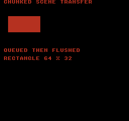
Build command
New-Item -ItemType Directory -Force .\out | Out-Null
.\kitaqfc\kitaqfc.exe .\kitaqfc\lib\runtime.c .\kitaq-docs\samples\api-examples\fc\batch2_stream.c -I .\kitaqfc\lib -I .\kitaq-docs\samples -o .\out\batch2_stream.nes --no-cache --no-disasm --mapper=nrom --nes-chr=.\kitaq-docs\samples\api-examples\fc\vram_shapes.chrImplementation and source
kitaqfc/lib/scene.h:47
Replace the single active transfer and retain its source pointer. Keep the source storage and any required ROM bank readable until all bytes are queued.
kitaqfc/lib/scene.c:86
void nes_scene_stream_begin(unsigned short ppu_addr, unsigned char* src, unsigned short len, unsigned char chunk)
{
nes_scene_stream_state.ppu_addr = ppu_addr;
nes_scene_stream_state.src = src;
nes_scene_stream_state.remaining = len;
nes_scene_stream_state.chunk = chunk;
nes_scene_stream_state.active = 1;
}nes_scene_stream_begin_attr
Prepare 64 attribute bytes for nametable base+0x03C0 using 16-byte queue records.
Syntax
void nes_scene_stream_begin_attr(unsigned short nt_base, unsigned char* src64);Parameters
nt_baseNametable base PPU address, such as 0x2000.
src6464 attribute bytes; retain them until fully queued.
Return value
No return value. The affected state and when it takes effect are described in this entry.
Conditions and limits
Only one stream is tracked. A begin call replaces it but does not cancel data already copied into the queue. Keep source storage and ROM mapping valid, and drive step calls and queue consumption from the caller.
Usage example
nes_scene_stream_begin_attr(0x2000,attrs);while(nes_scene_stream_step()!=0){nes_vram_queue_nmi_flush();}nes_vram_queue_nmi_flush();This is a calling fragment. Follow the stated initialization and buffer requirements before using it in a complete program.
Expected result
Learn to copy a stream into queue chunks and then consume the queue into the PPU. Transfer 960 tile bytes, 64 attribute bytes and 32 palette bytes to show a red 64×32 rectangle at (16,32). Calling begin alone does not update the display.
Build command
New-Item -ItemType Directory -Force .\out | Out-Null
.\kitaqfc\kitaqfc.exe .\kitaqfc\lib\runtime.c .\kitaq-docs\samples\api-examples\fc\batch2_stream.c -I .\kitaqfc\lib -I .\kitaq-docs\samples -o .\out\batch2_stream.nes --no-cache --no-disasm --mapper=nrom --nes-chr=.\kitaq-docs\samples\api-examples\fc\vram_shapes.chrImplementation and source
kitaqfc/lib/scene.h:51
Prepare the 64-byte attribute table at nametable base + 0x03C0.
kitaqfc/lib/scene.c:102
void nes_scene_stream_begin_attr(unsigned short nt_base, unsigned char* src64)
{
nes_scene_stream_begin((unsigned short)(nt_base + 0x03C0), src64, 64, 16);
}nes_scene_stream_begin_nametable
Prepare a 960-byte nametable tile transfer using 32-byte queue records.
Syntax
void nes_scene_stream_begin_nametable(unsigned short nt_base, unsigned char* src960);Parameters
nt_baseNametable base PPU address, such as 0x2000.
src960960 tile bytes for a nametable, excluding its 64 attribute bytes.
Return value
No return value. The affected state and when it takes effect are described in this entry.
Conditions and limits
Only one stream is tracked. A begin call replaces it but does not cancel data already copied into the queue. Keep source storage and ROM mapping valid, and drive step calls and queue consumption from the caller.
Usage example
nes_scene_stream_begin_nametable(0x2000,tiles960);while(nes_scene_stream_step()!=0){nes_vram_queue_nmi_flush();}nes_vram_queue_nmi_flush();result[4]=nes_scene_stream_state.remaining;This is a calling fragment. Follow the stated initialization and buffer requirements before using it in a complete program.
Expected result
Learn to copy a stream into queue chunks and then consume the queue into the PPU. Transfer 960 tile bytes, 64 attribute bytes and 32 palette bytes to show a red 64×32 rectangle at (16,32). Calling begin alone does not update the display.
Build command
New-Item -ItemType Directory -Force .\out | Out-Null
.\kitaqfc\kitaqfc.exe .\kitaqfc\lib\runtime.c .\kitaq-docs\samples\api-examples\fc\batch2_stream.c -I .\kitaqfc\lib -I .\kitaq-docs\samples -o .\out\batch2_stream.nes --no-cache --no-disasm --mapper=nrom --nes-chr=.\kitaq-docs\samples\api-examples\fc\vram_shapes.chrImplementation and source
kitaqfc/lib/scene.h:49
Prepare the 960-byte tile portion of a nametable using 32-byte queue records.
kitaqfc/lib/scene.c:96
void nes_scene_stream_begin_nametable(unsigned short nt_base, unsigned char* src960)
{
nes_scene_stream_begin(nt_base, src960, 960, 32);
}nes_scene_stream_begin_palette
Prepare 32 palette bytes for PPU address 0x3F00 using 16-byte queue records.
Syntax
void nes_scene_stream_begin_palette(unsigned char* src32);Parameters
src3232 palette bytes: 16 background and 16 sprite colors; observe palette-code limits and PPU mirroring.
Return value
No return value. The affected state and when it takes effect are described in this entry.
Conditions and limits
Only one stream is tracked. A begin call replaces it but does not cancel data already copied into the queue. Keep source storage and ROM mapping valid, and drive step calls and queue consumption from the caller.
Usage example
nes_scene_stream_begin_palette(colors);while(nes_scene_stream_step()!=0){nes_vram_queue_nmi_flush();}nes_vram_queue_nmi_flush();This is a calling fragment. Follow the stated initialization and buffer requirements before using it in a complete program.
Expected result
Learn to copy a stream into queue chunks and then consume the queue into the PPU. Transfer 960 tile bytes, 64 attribute bytes and 32 palette bytes to show a red 64×32 rectangle at (16,32). Calling begin alone does not update the display.
Build command
New-Item -ItemType Directory -Force .\out | Out-Null
.\kitaqfc\kitaqfc.exe .\kitaqfc\lib\runtime.c .\kitaq-docs\samples\api-examples\fc\batch2_stream.c -I .\kitaqfc\lib -I .\kitaq-docs\samples -o .\out\batch2_stream.nes --no-cache --no-disasm --mapper=nrom --nes-chr=.\kitaq-docs\samples\api-examples\fc\vram_shapes.chrImplementation and source
kitaqfc/lib/scene.h:53
Prepare a 32-byte palette transfer to PPU address 0x3F00.
kitaqfc/lib/scene.c:108
void nes_scene_stream_begin_palette(unsigned char* src32)
{
nes_scene_stream_begin(0x3F00, src32, 32, 16);
}nes_scene_stream_step
Copy remaining data into as many chunks as the runtime VRAM queue can accept.
Syntax
unsigned char nes_scene_stream_step(void);Return value
1 if queue capacity leaves data pending; 0 when everything is queued or the stream is inactive. A failed chunk does not advance the source/destination, allowing retry. Zero may still leave PPU transfers pending.
Conditions and limits
Only one stream is tracked. A begin call replaces it but does not cancel data already copied into the queue. Keep source storage and ROM mapping valid, and drive step calls and queue consumption from the caller.
Usage example
result[1]=nes_scene_stream_step();result[2]=nes_scene_stream_state.active;result[3]=nes_vram_queue_used;nes_vram_queue_nmi_flush();This is a calling fragment. Follow the stated initialization and buffer requirements before using it in a complete program.
Expected result
Learn to copy a stream into queue chunks and then consume the queue into the PPU. Transfer 960 tile bytes, 64 attribute bytes and 32 palette bytes to show a red 64×32 rectangle at (16,32). Calling begin alone does not update the display.
Build command
New-Item -ItemType Directory -Force .\out | Out-Null
.\kitaqfc\kitaqfc.exe .\kitaqfc\lib\runtime.c .\kitaq-docs\samples\api-examples\fc\batch2_stream.c -I .\kitaqfc\lib -I .\kitaq-docs\samples -o .\out\batch2_stream.nes --no-cache --no-disasm --mapper=nrom --nes-chr=.\kitaq-docs\samples\api-examples\fc\vram_shapes.chrImplementation and source
kitaqfc/lib/scene.h:57
Queue as many chunks as available capacity allows, capped at 127 bytes each. Return one when queue exhaustion requires a later retry, zero when all data has been queued. Zero does not mean the NMI consumer has already written the PPU.
kitaqfc/lib/scene.c:116
unsigned char nes_scene_stream_step(void)
{
unsigned char chunk;
while (nes_scene_stream_state.active != 0)
{
if (nes_scene_stream_state.remaining == 0)
{
nes_scene_stream_state.active = 0;
return 0;
}
// A step may enqueue several chunks; chunk limits record size, not the total bytes or time per frame.
chunk = nes_scene_stream_state.chunk;
if (chunk == 0)
{
chunk = 32;
}
if ((unsigned short)chunk > nes_scene_stream_state.remaining)
{
chunk = (unsigned char)nes_scene_stream_state.remaining;
}
if (chunk > 127)
{
chunk = 127;
}
// A failed enqueue leaves this chunk pending so a later step can retry after the queue drains.
if (nes_vram_queue_try_write(nes_scene_stream_state.ppu_addr, nes_scene_stream_state.src, chunk) == 0)
{
return 1;
}
nes_scene_stream_state.ppu_addr = (unsigned short)(nes_scene_stream_state.ppu_addr + chunk);
nes_scene_stream_state.src = nes_scene_stream_state.src + chunk;
nes_scene_stream_state.remaining = (unsigned short)(nes_scene_stream_state.remaining - chunk);
}
return 0;
}scene_change
Exit the current scene, if any, and enter the requested scene.
Syntax
void scene_change(u8 scene_id);Parameters
scene_idIndex of the scene to enter, from 0 through count−1.
Return value
No return value.
Conditions and limits
Out-of-range IDs are ignored. A valid change runs exit, stores the new ID and change flag, then runs enter. Selecting the same ID still runs exit and enter. The caller owns the scene table. Keep it and the targets of its ordinary function pointers valid while in use. Null callbacks are skipped. Do not recursively change scenes or replace the table from enter/exit callbacks.
Usage example
scene_change(0);scene_change(9);result[11]=events;result[12]=scene_was_changed();This is a calling fragment. Follow the stated initialization and buffer requirements before using it in a complete program.
Expected result
The program activates 0, ignores invalid ID 9, transitions 0→1 and re-enters 1→1, checking callback order.
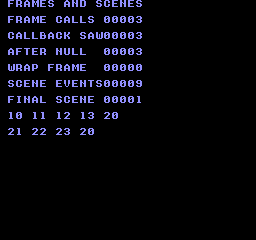
Build command
New-Item -ItemType Directory -Force .\out | Out-Null
.\kitaqfc\kitaqfc.exe .\kitaqfc\lib\runtime.c .\kitaq-docs\samples\api-examples\fc\batch_services.c -I .\kitaqfc\lib -I .\kitaq-docs\samples -o .\out\batch_services.nes --no-cache --no-disasm --mapper=nrom --nes-chr=.\kitaq-docs\samples\font.chrImplementation and source
kitaqfc/lib/scene.h:33
Ignore invalid IDs; otherwise exit the current scene and enter the requested one. Selecting the current ID still performs exit/enter. Callbacks run synchronously.
kitaqfc/lib/scene.c:28
void scene_change(u8 scene_id)
{
SceneFunc fn;
if (scene_id >= kq_scene_count) return;
// Exit/enter handlers must not recursively change scenes or replace this shared table.
if (kq_scene_has_current != 0) {
fn = kq_scene_table[(__safe_index u8)kq_scene_current].exit;
if (fn != 0) fn();
}
kq_scene_current = scene_id;
kq_scene_has_current = 1;
kq_scene_changed = 1;
fn = kq_scene_table[(__safe_index u8)kq_scene_current].enter;
if (fn != 0) fn();
}scene_draw
Invoke the active scene’s draw callback once.
Syntax
void scene_draw();Return value
No return value.
Conditions and limits
No active scene or a null draw callback is a no-op. The change flag is not cleared. Plan display transfers and frame timing in the callback or surrounding game loop. The caller owns the scene table. Keep it and the targets of its ordinary function pointers valid while in use. Null callbacks are skipped. Do not recursively change scenes or replace the table from enter/exit callbacks.
Usage example
scene_draw();result[15]=events;This is a calling fragment. Follow the stated initialization and buffer requirements before using it in a complete program.
Expected result
The event sequence contains 12 from scene 0’s draw and 22 from scene 1’s draw.
Build command
New-Item -ItemType Directory -Force .\out | Out-Null
.\kitaqfc\kitaqfc.exe .\kitaqfc\lib\runtime.c .\kitaq-docs\samples\api-examples\fc\batch_services.c -I .\kitaqfc\lib -I .\kitaq-docs\samples -o .\out\batch_services.nes --no-cache --no-disasm --mapper=nrom --nes-chr=.\kitaq-docs\samples\font.chrImplementation and source
kitaqfc/lib/scene.h:38
Call the active scene's draw handler if one exists; no current scene is a no-op.
kitaqfc/lib/scene.c:61
void scene_draw()
{
SceneFunc fn;
if (kq_scene_has_current == 0) return;
fn = kq_scene_table[(__safe_index u8)kq_scene_current].draw;
if (fn != 0) fn();
}scene_get_current
Read the stored current scene ID.
Syntax
u8 scene_get_current();Return value
Returns the stored eight-bit ID; initialization also leaves it at zero.
Conditions and limits
A return value of zero alone does not prove that scene 0 is active. Track whether the first scene_change() has occurred after initialization.
Usage example
result[16]=scene_get_current();This is a calling fragment. Follow the stated initialization and buffer requirements before using it in a complete program.
Expected result
The sample reads zero after activating scene 0 and one after changing to scene 1.
Build command
New-Item -ItemType Directory -Force .\out | Out-Null
.\kitaqfc\kitaqfc.exe .\kitaqfc\lib\runtime.c .\kitaq-docs\samples\api-examples\fc\batch_services.c -I .\kitaqfc\lib -I .\kitaq-docs\samples -o .\out\batch_services.nes --no-cache --no-disasm --mapper=nrom --nes-chr=.\kitaq-docs\samples\font.chrImplementation and source
kitaqfc/lib/scene.h:40
Return the stored scene ID; zero is also returned before the first transition.
kitaqfc/lib/scene.c:71
u8 scene_get_current()
{
return kq_scene_current;
}scene_init
Attach a scene table with no scene active yet.
Syntax
void scene_init(const SceneDef* scenes, u8 count);Parameters
scenesArray of
SceneDefentries with enter, update, draw and exit callbacks.countNumber of entries; zero provides no valid scene IDs.
Return value
No return value.
Conditions and limits
Resets the stored ID and change flag to zero. It does not call enter; use scene_change() to activate a scene. The caller owns the scene table. Keep it and the targets of its ordinary function pointers valid while in use. Null callbacks are skipped. Do not recursively change scenes or replace the table from enter/exit callbacks.
Usage example
scene_init(scenes,2);scene_update();scene_draw();result[9]=events;result[10]=scene_was_changed();This is a calling fragment. Follow the stated initialization and buffer requirements before using it in a complete program.
Expected result
The sample registers two scenes and verifies that update/draw before activation produce no events.
Build command
New-Item -ItemType Directory -Force .\out | Out-Null
.\kitaqfc\kitaqfc.exe .\kitaqfc\lib\runtime.c .\kitaq-docs\samples\api-examples\fc\batch_services.c -I .\kitaqfc\lib -I .\kitaq-docs\samples -o .\out\batch_services.nes --no-cache --no-disasm --mapper=nrom --nes-chr=.\kitaq-docs\samples\font.chrImplementation and source
kitaqfc/lib/scene.h:28
Attach the caller-owned scene table and clear current-scene state without invoking callbacks.
kitaqfc/lib/scene.c:11
void scene_init(const SceneDef* scenes, u8 count)
{
kq_scene_table = scenes;
kq_scene_count = count;
kq_scene_current = 0;
kq_scene_changed = 0;
kq_scene_has_current = 0;
}scene_set_table
Replace the scene table and leave no scene active.
Syntax
void scene_set_table(const SceneDef* scenes, u8 count);Parameters
scenesArray of
SceneDefentries with enter, update, draw and exit callbacks.countNumber of entries; zero provides no valid scene IDs.
Return value
No return value.
Conditions and limits
Resets state like scene_init(), calling neither the old exit callback nor a new enter callback. The caller owns the scene table. Keep it and the targets of its ordinary function pointers valid while in use. Null callbacks are skipped. Do not recursively change scenes or replace the table from enter/exit callbacks.
Usage example
scene_set_table(scenes,2);result[23]=events;result[24]=scene_was_changed();scene_draw();result[25]=events;This is a calling fragment. Follow the stated initialization and buffer requirements before using it in a complete program.
Expected result
Replacing the table after nine events leaves the count at nine, resets the change flag to zero, and makes the following draw a no-op.
Build command
New-Item -ItemType Directory -Force .\out | Out-Null
.\kitaqfc\kitaqfc.exe .\kitaqfc\lib\runtime.c .\kitaq-docs\samples\api-examples\fc\batch_services.c -I .\kitaqfc\lib -I .\kitaq-docs\samples -o .\out\batch_services.nes --no-cache --no-disasm --mapper=nrom --nes-chr=.\kitaq-docs\samples\font.chrImplementation and source
kitaqfc/lib/scene.h:30
Replace the table by resetting scene state; this does not call the old scene's exit handler.
kitaqfc/lib/scene.c:21
void scene_set_table(const SceneDef* scenes, u8 count)
{
scene_init(scenes, count);
}scene_update
Invoke the active scene’s update callback once.
Syntax
void scene_update();Return value
No return value.
Conditions and limits
Without an active scene this is a no-op. Otherwise it clears the change flag before dispatch, so a transition made inside update remains visible afterward. The caller owns the scene table. Keep it and the targets of its ordinary function pointers valid while in use. Null callbacks are skipped. Do not recursively change scenes or replace the table from enter/exit callbacks.
Usage example
scene_update();result[13]=events;result[14]=scene_was_changed();This is a calling fragment. Follow the stated initialization and buffer requirements before using it in a complete program.
Expected result
Scene 0’s update records event 11. The change flag, previously one, becomes zero after this ordinary update.
Build command
New-Item -ItemType Directory -Force .\out | Out-Null
.\kitaqfc\kitaqfc.exe .\kitaqfc\lib\runtime.c .\kitaq-docs\samples\api-examples\fc\batch_services.c -I .\kitaqfc\lib -I .\kitaq-docs\samples -o .\out\batch_services.nes --no-cache --no-disasm --mapper=nrom --nes-chr=.\kitaq-docs\samples\font.chrImplementation and source
kitaqfc/lib/scene.h:36
Clear the change flag before calling the active scene's update handler, so a transition made during that handler is visible afterward.
kitaqfc/lib/scene.c:50
void scene_update()
{
SceneFunc fn;
if (kq_scene_has_current == 0) return;
kq_scene_changed = 0;
fn = kq_scene_table[(__safe_index u8)kq_scene_current].update;
if (fn != 0) fn();
}scene_was_changed
Read whether a scene transition is currently recorded.
Syntax
u8 scene_was_changed();Return value
Returns 1 when the transition flag is set, otherwise 0.
Conditions and limits
Reading does not clear the flag. Initialization, table replacement and the start of an active update clear it. An invalid scene ID leaves it unchanged.
Usage example
result[17]=scene_was_changed();This is a calling fragment. Follow the stated initialization and buffer requirements before using it in a complete program.
Expected result
Checks cover one immediately after a transition, zero after an ordinary update, and zero after replacing the table.
Build command
New-Item -ItemType Directory -Force .\out | Out-Null
.\kitaqfc\kitaqfc.exe .\kitaqfc\lib\runtime.c .\kitaq-docs\samples\api-examples\fc\batch_services.c -I .\kitaqfc\lib -I .\kitaq-docs\samples -o .\out\batch_services.nes --no-cache --no-disasm --mapper=nrom --nes-chr=.\kitaq-docs\samples\font.chrImplementation and source
kitaqfc/lib/scene.h:42
Read the transition flag, which is cleared at the start of an active scene update.
kitaqfc/lib/scene.c:77
u8 scene_was_changed()
{
return kq_scene_changed;
}scroll.h — Background, window and split scrolling
Build PPUCTRL nametable selection and PPUSCROLL from 16-bit world coordinates. Y is split into 256-unit ranges too, so account for the 240-pixel screen height.
nes_camera_follow_center
Subtract the screen anchor from the target’s world position and store the result as camera coordinates.
Syntax
void nes_camera_follow_center(unsigned short target_x, unsigned short target_y, unsigned char center_x, unsigned char center_y);Parameters
target_xTarget world X in pixels, 0–65535.
target_yTarget world Y in pixels, 0–65535.
center_xDesired target screen X, 0–255.
center_yDesired target screen Y, 0–255.
Return value
No return value. The affected state and when it takes effect are described in this entry.
Conditions and limits
One coordinate pair is shared. Call nes_scroll_apply to update hardware. Negative subtraction results wrap in u16; clamp world edges in the game.
Usage example
nes_camera_follow_center(300,260,128,120);result[4]=nes_scroll_camera_x;result[5]=nes_scroll_camera_y;This is a calling fragment. Follow the stated initialization and buffer requirements before using it in a complete program.
Expected result
Learn how saved 16-bit coordinates produce PPUCTRL and scrolling. Base control is 144; applying (264,272) produces control 147. Following target (300,260) at anchor (128,120) gives camera (172,140). Separate state checks inspect actual PPU writes.
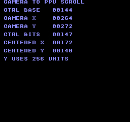
Build command
New-Item -ItemType Directory -Force .\out | Out-Null
.\kitaqfc\kitaqfc.exe .\kitaq-docs\samples\api-examples\fc\batch2_scroll.c -I .\kitaqfc\lib -I .\kitaq-docs\samples -o .\out\batch2_scroll.nes --no-cache --no-disasm --mapper=nrom --nes-chr=.\kitaq-docs\samples\font.chrUsage example
nes_scroll_set_base_ctrl(0);
nes_scroll_set(264,16);
nes_scroll_apply();This is a calling fragment. Follow the stated initialization and buffer requirements before using it in a complete program.
Expected result
With vertical mirroring on NROM, display nametable 1. A red 32×16 rectangle at world (288,32) appears at screen (24,16) with camera (264,16), demonstrating bit-8 table selection and low-byte scrolling.
Build command
New-Item -ItemType Directory -Force .\out | Out-Null
.\kitaqfc\kitaqfc.exe .\kitaq-docs\samples\api-examples\fc\batch2_scroll_view.c -I .\kitaqfc\lib -I .\kitaq-docs\samples -o .\out\batch2_scroll_view.nes --no-cache --no-disasm --mapper=nrom --nes-chr=.\kitaq-docs\samples\api-examples\fc\vram_shapes.chr --mirroring=verticalImplementation and source
kitaqfc/lib/scroll.h:21
Subtract the screen anchor from the world point into unsigned camera coordinates. Underflow wraps; world-edge clamping belongs to the game.
kitaqfc/lib/scroll.c:56
void nes_camera_follow_center(unsigned short target_x, unsigned short target_y, unsigned char center_x, unsigned char center_y)
{
nes_scroll_camera_x = target_x - center_x;
nes_scroll_camera_y = target_y - center_y;
}nes_scroll_apply
Combine the saved coordinates with base PPUCTRL, reset the latch and write PPUCTRL and X/Y scroll.
Syntax
void nes_scroll_apply(void);Return value
No return value. The affected state and when it takes effect are described in this entry.
Conditions and limits
Bit 8 of each axis selects a nametable; the low byte supplies scroll. Y values 240–255 are not ordinary vertical scrolling positions. The entire PPUCTRL register is replaced, so initialize NMI and other base bits deliberately. There is no VBlank wait; the PPUSTATUS read also affects the VBlank flag and shared latch.
Usage example
nes_scroll_apply();result[3]=nes_scroll_ctrl_base|((nes_scroll_camera_x>>8)&1)|((nes_scroll_camera_y>>7)&2);This is a calling fragment. Follow the stated initialization and buffer requirements before using it in a complete program.
Expected result
Learn how saved 16-bit coordinates produce PPUCTRL and scrolling. Base control is 144; applying (264,272) produces control 147. Following target (300,260) at anchor (128,120) gives camera (172,140). Separate state checks inspect actual PPU writes.
Build command
New-Item -ItemType Directory -Force .\out | Out-Null
.\kitaqfc\kitaqfc.exe .\kitaq-docs\samples\api-examples\fc\batch2_scroll.c -I .\kitaqfc\lib -I .\kitaq-docs\samples -o .\out\batch2_scroll.nes --no-cache --no-disasm --mapper=nrom --nes-chr=.\kitaq-docs\samples\font.chrUsage example
nes_scroll_set_base_ctrl(0);
nes_scroll_set(264,16);
nes_scroll_apply();This is a calling fragment. Follow the stated initialization and buffer requirements before using it in a complete program.
Expected result
With vertical mirroring on NROM, display nametable 1. A red 32×16 rectangle at world (288,32) appears at screen (24,16) with camera (264,16), demonstrating bit-8 table selection and low-byte scrolling.
Build command
New-Item -ItemType Directory -Force .\out | Out-Null
.\kitaqfc\kitaqfc.exe .\kitaq-docs\samples\api-examples\fc\batch2_scroll_view.c -I .\kitaqfc\lib -I .\kitaq-docs\samples -o .\out\batch2_scroll_view.nes --no-cache --no-disasm --mapper=nrom --nes-chr=.\kitaq-docs\samples\api-examples\fc\vram_shapes.chr --mirroring=verticalImplementation and source
kitaqfc/lib/scroll.h:18
Combine bit 8 of each camera coordinate with base PPUCTRL, reset the latch by reading PPUSTATUS, and write low-byte X/Y scroll. This uses 256-unit wrapping on both axes rather than normalizing Y to a 240-pixel nametable height. Initialize base control to the intended PPUCTRL value, including NMI enable, before applying. Only coordinate bits 0..8 are used; arrange safe PPU timing in the caller.
kitaqfc/lib/scroll.c:34
void nes_scroll_apply(void)
{
unsigned char ctrl;
unsigned char x_hi;
unsigned char y_hi;
unsigned char latch;
x_hi = (unsigned char)((nes_scroll_camera_x >> 8) & 1);
y_hi = (unsigned char)((nes_scroll_camera_y >> 8) & 1);
ctrl = (unsigned char)(nes_scroll_ctrl_base | x_hi | (unsigned char)(y_hi << 1));
// Replace the whole control register, so the saved base also determines NMI and increment mode.
PPUCTRL = ctrl;
latch = PPUSTATUS;
PPUSCROLL = (unsigned char)nes_scroll_camera_x;
PPUSCROLL = (unsigned char)nes_scroll_camera_y;
latch = latch;
}nes_scroll_set
Store 16-bit camera coordinates without writing the PPU.
Syntax
void nes_scroll_set(unsigned short camera_x, unsigned short camera_y);Parameters
camera_xHorizontal integer pixel coordinate; application uses its low nine bits.
camera_yVertical coordinate; application uses the low nine bits without normalizing to 240-pixel nametable height.
Return value
No return value. The affected state and when it takes effect are described in this entry.
Conditions and limits
One coordinate pair is shared. Call nes_scroll_apply to update hardware. Negative subtraction results wrap in u16; clamp world edges in the game.
Usage example
nes_scroll_set(264,272);result[1]=nes_scroll_camera_x;result[2]=nes_scroll_camera_y;This is a calling fragment. Follow the stated initialization and buffer requirements before using it in a complete program.
Expected result
Learn how saved 16-bit coordinates produce PPUCTRL and scrolling. Base control is 144; applying (264,272) produces control 147. Following target (300,260) at anchor (128,120) gives camera (172,140). Separate state checks inspect actual PPU writes.
Build command
New-Item -ItemType Directory -Force .\out | Out-Null
.\kitaqfc\kitaqfc.exe .\kitaq-docs\samples\api-examples\fc\batch2_scroll.c -I .\kitaqfc\lib -I .\kitaq-docs\samples -o .\out\batch2_scroll.nes --no-cache --no-disasm --mapper=nrom --nes-chr=.\kitaq-docs\samples\font.chrUsage example
nes_scroll_set_base_ctrl(0);
nes_scroll_set(264,16);
nes_scroll_apply();This is a calling fragment. Follow the stated initialization and buffer requirements before using it in a complete program.
Expected result
With vertical mirroring on NROM, display nametable 1. A red 32×16 rectangle at world (288,32) appears at screen (24,16) with camera (264,16), demonstrating bit-8 table selection and low-byte scrolling.
Build command
New-Item -ItemType Directory -Force .\out | Out-Null
.\kitaqfc\kitaqfc.exe .\kitaq-docs\samples\api-examples\fc\batch2_scroll_view.c -I .\kitaqfc\lib -I .\kitaq-docs\samples -o .\out\batch2_scroll_view.nes --no-cache --no-disasm --mapper=nrom --nes-chr=.\kitaq-docs\samples\api-examples\fc\vram_shapes.chr --mirroring=verticalImplementation and source
kitaqfc/lib/scroll.h:12
Store camera coordinates without touching hardware registers.
kitaqfc/lib/scroll.c:25
void nes_scroll_set(unsigned short camera_x, unsigned short camera_y)
{
nes_scroll_camera_x = camera_x;
nes_scroll_camera_y = camera_y;
}nes_scroll_set_base_ctrl
Store the base PPUCTRL value with its two nametable-selection bits cleared.
Syntax
void nes_scroll_set_base_ctrl(unsigned char ctrl);Parameters
ctrlPPUCTRL value including NMI, pattern-table and increment settings; its low two bits will be derived from coordinates.
Return value
No return value. The affected state and when it takes effect are described in this entry.
Conditions and limits
One coordinate pair is shared. Call nes_scroll_apply to update hardware. Negative subtraction results wrap in u16; clamp world edges in the game.
Usage example
nes_scroll_set_base_ctrl(0x93);result[0]=nes_scroll_ctrl_base;This is a calling fragment. Follow the stated initialization and buffer requirements before using it in a complete program.
Expected result
Learn how saved 16-bit coordinates produce PPUCTRL and scrolling. Base control is 144; applying (264,272) produces control 147. Following target (300,260) at anchor (128,120) gives camera (172,140). Separate state checks inspect actual PPU writes.
Build command
New-Item -ItemType Directory -Force .\out | Out-Null
.\kitaqfc\kitaqfc.exe .\kitaq-docs\samples\api-examples\fc\batch2_scroll.c -I .\kitaqfc\lib -I .\kitaq-docs\samples -o .\out\batch2_scroll.nes --no-cache --no-disasm --mapper=nrom --nes-chr=.\kitaq-docs\samples\font.chrUsage example
nes_scroll_set_base_ctrl(0);
nes_scroll_set(264,16);
nes_scroll_apply();This is a calling fragment. Follow the stated initialization and buffer requirements before using it in a complete program.
Expected result
With vertical mirroring on NROM, display nametable 1. A red 32×16 rectangle at world (288,32) appears at screen (24,16) with camera (264,16), demonstrating bit-8 table selection and low-byte scrolling.
Build command
New-Item -ItemType Directory -Force .\out | Out-Null
.\kitaqfc\kitaqfc.exe .\kitaq-docs\samples\api-examples\fc\batch2_scroll_view.c -I .\kitaqfc\lib -I .\kitaq-docs\samples -o .\out\batch2_scroll_view.nes --no-cache --no-disasm --mapper=nrom --nes-chr=.\kitaq-docs\samples\api-examples\fc\vram_shapes.chr --mirroring=verticalImplementation and source
kitaqfc/lib/scroll.h:10
Store PPUCTRL bits other than the two nametable-selection bits for later application.
kitaqfc/lib/scroll.c:19
void nes_scroll_set_base_ctrl(unsigned char ctrl)
{
nes_scroll_ctrl_base = (unsigned char)(ctrl & 0xFC);
}sprite.h — OBJ allocation, positioning, metasprites and animation
Sprites are movable hardware objects, normally 8×8 or 8×16 pixels, described by entries in Object Attribute Memory (OAM). Allocate slots, set their position, tile and attributes in shadow OAM, then transfer that data. A metasprite combines several slots into one object. GB provides 40 slots with a 10-per-scanline limit; FC provides 64 with an 8-per-scanline limit.
FC attributes: bits 0..1 select one of four sprite palettes; bit 5 places the sprite behind nonzero background pixels; bits 6/7 flip X/Y. Keep unused bits 2..4 clear. GB and FC flag values are different, so use each platform's constants.
anim_update
Advance a SpriteAnim timer and return the selected tile number. After ticks_per_frame calls, move to the next consecutive tile; wrap to the first frame after frame_count frames. The caller applies the result with sprite_set_tile.
Syntax
u8 anim_update(SpriteAnim* anim);Parameters
animWritable SpriteAnim state with first_tile, frame_count, frame, ticks and ticks_per_frame. Keep frame below frame_count and ticks below ticks_per_frame when those counts are nonzero.
Return value
Selected eight-bit tile number; 0 for a null state pointer. The function does not write OAM.
Conditions and limits
A zero frame_count returns first_tile without advancing; zero ticks_per_frame freezes the current frame. Calls, not video frames, advance the timer. Tile arithmetic wraps at 256 and does not skip alternate tiles in 8×16 mode.
Usage example
sprite_example_animation.first_tile=128;sprite_example_animation.frame_count=2;
sprite_example_animation.frame=0;sprite_example_animation.ticks=0;
sprite_example_animation.ticks_per_frame=2;
sprite_example_expect(anim_update(&sprite_example_animation)==128);
tile=anim_update(&sprite_example_animation);
sprite_example_expect(tile==129);sprite_set_tile(5,tile);This is a calling fragment. Follow the stated initialization and buffer requirements before using it in a complete program.
Expected result
With first_tile=128, two frames and two calls per frame, the first update returns arrow tile 128 and the second returns square tile 129. The square shown beside ANIMATION proves that the returned tile was applied to OAM.
This program teaches sprite allocation, positioning, flips, composite objects, overlap, animation and the scanline limit. The two digits at the upper right must be 00: every in-program check passed. Each arrow and square occupies an 8×8 tile.
NORMAL shows a right-pointing arrow at (88,16). FLIP X points left at (88,32); FLIP Y vertically mirrors the arrow at (88,48). META places two arrows at (88,64) and (96,64). OVERLAP puts the arrow at (88,80) in front of the square at (92,80), with the square visible through transparent arrow pixels. ANIMATION shows the square at (88,96). The areas at (120,16) and (120,32) remain empty after hiding and freeing their slots.
CGB and FC arrows use a green shaft, red outline and blue tip details; the square is green. Transparent pixels reveal the white GB background or black FC background. DMG uses light gray, dark gray and black instead of red, green and blue.
The row below SCAN LIMIT starts at (8,128). The program submits 11 GB sprites or 9 FC sprites on that line, deliberately one too many. Expect 10 visible arrows on GB and 8 on FC; the final submitted arrow is absent. The software peak and warning checks must still report 11/9 and 1.

Build command
New-Item -ItemType Directory -Force .\out | Out-Null
.\kitaqfc\kitaqfc.exe .\kitaq-docs\samples\api-examples\fc\sprite_shapes.c -I .\kitaqfc\lib -I .\kitaq-docs\samples -o .\out\sprite_shapes.nes --nes-chr=.\kitaq-docs\samples\sprite_example.chr --no-cache --no-disasmImplementation and source
kitaqfc/lib/sprite.h:74
Advance animation ticks and wrap the frame index, returning the selected tile. Zero ticks-per-frame freezes advancement; null state returns zero.
kitaqfc/lib/sprite.c:174
u8 anim_update(SpriteAnim* anim)
{
if (anim == 0) return 0;
if (anim->frame_count == 0) return anim->first_tile;
if (anim->ticks_per_frame == 0) return (u8)(anim->first_tile + anim->frame);
anim->ticks = (u8)(anim->ticks + 1);
if (anim->ticks >= anim->ticks_per_frame) {
anim->ticks = 0;
anim->frame = (u8)(anim->frame + 1);
if (anim->frame >= anim->frame_count) anim->frame = 0;
}
return (u8)(anim->first_tile + anim->frame);
}metasprite_draw
Place a counted array of sprite parts in consecutive slots. Each part supplies a signed offset, tile and attributes. The routine activates new slots, overwrites existing active slots and stops at the slot limit.
Syntax
u8 metasprite_draw(u8 first_id, u8 x, u8 y, const MetaSpritePart* parts, u8 count);Parameters
first_idSlot ID in 0..SPRITE_MAX-1: 0..39 by default on GB, 0..63 on FC. Out-of-range IDs are ignored.
xHorizontal position in pixels, stored as an unsigned byte. This is a pixel coordinate, not a tile coordinate.
yRaw OAM Y byte. Use visible_top-1 for a visible top below scanline zero; values 239..255 are outside the visible 240-line area.
partsReadable array containing at least count MetaSpritePart records. Each four-byte record contains signed dx/dy offsets followed by tile and flags; there is no terminator.
countNumber of parts, as an unsigned byte. Zero performs no writes. Fewer parts are written if the consecutive slot range reaches SPRITE_MAX.
Return value
Number of parts written, from 0 to count. Check this result to detect truncation at the slot limit.
Conditions and limits
Position, tile, attribute and hide operations change shadow data. They do not allocate a slot or immediately change the hardware OAM; transfer the completed frame with sprite_flush_oam.
Offsets are signed bytes added to the supplied origin, then wrapped to eight bits. Keep the part array readable for the whole call. Writing an active slot replaces its contents; the function does not protect another object's slots.
Usage example
sprite_example_expect(metasprite_draw(10,88,SPRITE_EXAMPLE_Y(64),sprite_example_pair,2)==2);
sprite_example_expect(sprite_count_used()==9); // Sparse IDs count actual active slots.This is a calling fragment. Follow the stated initialization and buffer requirements before using it in a complete program.
Expected result
Initialization yields zero allocated slots. Eight allocations return IDs 0..7. Hiding slot 6 keeps the count at 8; freeing slot 7 twice leaves 7. Placing the pair in slots 10 and 11 raises the count to 9.
This program teaches sprite allocation, positioning, flips, composite objects, overlap, animation and the scanline limit. The two digits at the upper right must be 00: every in-program check passed. Each arrow and square occupies an 8×8 tile.
NORMAL shows a right-pointing arrow at (88,16). FLIP X points left at (88,32); FLIP Y vertically mirrors the arrow at (88,48). META places two arrows at (88,64) and (96,64). OVERLAP puts the arrow at (88,80) in front of the square at (92,80), with the square visible through transparent arrow pixels. ANIMATION shows the square at (88,96). The areas at (120,16) and (120,32) remain empty after hiding and freeing their slots.
CGB and FC arrows use a green shaft, red outline and blue tip details; the square is green. Transparent pixels reveal the white GB background or black FC background. DMG uses light gray, dark gray and black instead of red, green and blue.
The row below SCAN LIMIT starts at (8,128). The program submits 11 GB sprites or 9 FC sprites on that line, deliberately one too many. Expect 10 visible arrows on GB and 8 on FC; the final submitted arrow is absent. The software peak and warning checks must still report 11/9 and 1.
Build command
New-Item -ItemType Directory -Force .\out | Out-Null
.\kitaqfc\kitaqfc.exe .\kitaq-docs\samples\api-examples\fc\sprite_shapes.c -I .\kitaqfc\lib -I .\kitaq-docs\samples -o .\out\sprite_shapes.nes --nes-chr=.\kitaq-docs\samples\sprite_example.chr --no-cache --no-disasmImplementation and source
kitaqfc/lib/sprite.h:71
Place consecutive parts, counting each newly activated slot once. Existing active slots are overwritten without increasing the allocation count. Return the number written; an invalid first slot or zero count writes nothing.
kitaqfc/lib/sprite.c:152
u8 metasprite_draw(u8 first_id, u8 x, u8 y, const MetaSpritePart* parts, u8 count)
{
u8 i;
i = 0;
while (i < count) {
u8 id;
id = (u8)(first_id + i);
if (id >= SPRITE_MAX) return i;
if (kq_sprite_active[id] == 0) {
kq_sprite_active[id] = 1;
kq_sprite_used = (u8)(kq_sprite_used + 1);
}
__sprite_set(id, (u8)(x + parts[i].dx), (u8)(y + parts[i].dy), parts[i].tile, parts[i].flags);
kq_sprite_x[id] = (u8)(x + parts[i].dx);
kq_sprite_y[id] = (u8)(y + parts[i].dy);
i = (u8)(i + 1);
}
return count;
}sprite_alloc
Reserve the first free sprite slot and hide it until you position it. The slot remains allocated even while hidden; set its tile and attributes before displaying it.
Syntax
u8 sprite_alloc(void);Return value
Allocated slot ID, or 0xFF if every slot is active.
Conditions and limits
Position, tile, attribute and hide operations change shadow data. They do not allocate a slot or immediately change the hardware OAM; transfer the completed frame with sprite_flush_oam.
Usage example
for(i=0;i<8;i++) sprite_example_expect(sprite_alloc()==i);
sprite_example_expect(sprite_count_used()==8);This is a calling fragment. Follow the stated initialization and buffer requirements before using it in a complete program.
Expected result
Initialization yields zero allocated slots. Eight allocations return IDs 0..7. Hiding slot 6 keeps the count at 8; freeing slot 7 twice leaves 7. Placing the pair in slots 10 and 11 raises the count to 9.
This program teaches sprite allocation, positioning, flips, composite objects, overlap, animation and the scanline limit. The two digits at the upper right must be 00: every in-program check passed. Each arrow and square occupies an 8×8 tile.
NORMAL shows a right-pointing arrow at (88,16). FLIP X points left at (88,32); FLIP Y vertically mirrors the arrow at (88,48). META places two arrows at (88,64) and (96,64). OVERLAP puts the arrow at (88,80) in front of the square at (92,80), with the square visible through transparent arrow pixels. ANIMATION shows the square at (88,96). The areas at (120,16) and (120,32) remain empty after hiding and freeing their slots.
CGB and FC arrows use a green shaft, red outline and blue tip details; the square is green. Transparent pixels reveal the white GB background or black FC background. DMG uses light gray, dark gray and black instead of red, green and blue.
The row below SCAN LIMIT starts at (8,128). The program submits 11 GB sprites or 9 FC sprites on that line, deliberately one too many. Expect 10 visible arrows on GB and 8 on FC; the final submitted arrow is absent. The software peak and warning checks must still report 11/9 and 1.
Build command
New-Item -ItemType Directory -Force .\out | Out-Null
.\kitaqfc\kitaqfc.exe .\kitaq-docs\samples\api-examples\fc\sprite_shapes.c -I .\kitaqfc\lib -I .\kitaq-docs\samples -o .\out\sprite_shapes.nes --nes-chr=.\kitaq-docs\samples\sprite_example.chr --no-cache --no-disasmImplementation and source
kitaqfc/lib/sprite.h:45
Claim and hide the first free slot, or return 0xFF if all slots are active.
kitaqfc/lib/sprite.c:35
u8 sprite_alloc(void)
{
u8 i;
i = 0;
while (i < SPRITE_MAX) {
if (kq_sprite_active[i] == 0) {
kq_sprite_active[i] = 1;
kq_sprite_used = (u8)(kq_sprite_used + 1);
sprite_hide(i);
return i;
}
i = (u8)(i + 1);
}
return 0xFF;
}sprite_count_used
Return the number of allocated slots, including hidden sprites and slots activated by metasprite_draw. This is an allocation count, not the number of sprites visible on screen.
Syntax
u8 sprite_count_used(void);Return value
An unsigned byte from 0 to SPRITE_MAX.
Usage example
sprite_example_expect(sprite_count_used()==9); // After hiding, freeing and drawing the pair.This is a calling fragment. Follow the stated initialization and buffer requirements before using it in a complete program.
Expected result
Initialization yields zero allocated slots. Eight allocations return IDs 0..7. Hiding slot 6 keeps the count at 8; freeing slot 7 twice leaves 7. Placing the pair in slots 10 and 11 raises the count to 9.
This program teaches sprite allocation, positioning, flips, composite objects, overlap, animation and the scanline limit. The two digits at the upper right must be 00: every in-program check passed. Each arrow and square occupies an 8×8 tile.
NORMAL shows a right-pointing arrow at (88,16). FLIP X points left at (88,32); FLIP Y vertically mirrors the arrow at (88,48). META places two arrows at (88,64) and (96,64). OVERLAP puts the arrow at (88,80) in front of the square at (92,80), with the square visible through transparent arrow pixels. ANIMATION shows the square at (88,96). The areas at (120,16) and (120,32) remain empty after hiding and freeing their slots.
CGB and FC arrows use a green shaft, red outline and blue tip details; the square is green. Transparent pixels reveal the white GB background or black FC background. DMG uses light gray, dark gray and black instead of red, green and blue.
The row below SCAN LIMIT starts at (8,128). The program submits 11 GB sprites or 9 FC sprites on that line, deliberately one too many. Expect 10 visible arrows on GB and 8 on FC; the final submitted arrow is absent. The software peak and warning checks must still report 11/9 and 1.
Build command
New-Item -ItemType Directory -Force .\out | Out-Null
.\kitaqfc\kitaqfc.exe .\kitaq-docs\samples\api-examples\fc\sprite_shapes.c -I .\kitaqfc\lib -I .\kitaq-docs\samples -o .\out\sprite_shapes.nes --nes-chr=.\kitaq-docs\samples\sprite_example.chr --no-cache --no-disasmImplementation and source
kitaqfc/lib/sprite.h:62
Return the number of active slots, including slots activated by metasprite_draw. Hidden allocated slots remain active until sprite_free releases them.
kitaqfc/lib/sprite.c:108
u8 sprite_count_used(void)
{
return kq_sprite_used;
}sprite_flush_oam
Wait for the NMI frame counter to advance, then transfer the 256-byte shadow OAM page. NMI must be enabled and its handler must update that counter.
Syntax
void sprite_flush_oam(void);Return value
None (void).
Conditions and limits
The FC routine sets OAMADDR to zero and starts DMA from CPU page $02 ($0200–$02FF). Use it during VBlank or with rendering disabled; avoid modifying the same shadow page while an interrupt also uses it.
Usage example
while(1) { sprite_flush_oam(); } // Transfer prepared sprites at the next frame boundary.This is a calling fragment. Follow the stated initialization and buffer requirements before using it in a complete program.
Expected result
NORMAL shows a right-pointing arrow at (88,16). FLIP X points left at (88,32); FLIP Y vertically mirrors the arrow at (88,48). META places two arrows at (88,64) and (96,64). OVERLAP puts the arrow at (88,80) in front of the square at (92,80), with the square visible through transparent arrow pixels. ANIMATION shows the square at (88,96). The areas at (120,16) and (120,32) remain empty after hiding and freeing their slots.
This program teaches sprite allocation, positioning, flips, composite objects, overlap, animation and the scanline limit. The two digits at the upper right must be 00: every in-program check passed. Each arrow and square occupies an 8×8 tile.
CGB and FC arrows use a green shaft, red outline and blue tip details; the square is green. Transparent pixels reveal the white GB background or black FC background. DMG uses light gray, dark gray and black instead of red, green and blue.
The row below SCAN LIMIT starts at (8,128). The program submits 11 GB sprites or 9 FC sprites on that line, deliberately one too many. Expect 10 visible arrows on GB and 8 on FC; the final submitted arrow is absent. The software peak and warning checks must still report 11/9 and 1.
Build command
New-Item -ItemType Directory -Force .\out | Out-Null
.\kitaqfc\kitaqfc.exe .\kitaq-docs\samples\api-examples\fc\sprite_shapes.c -I .\kitaqfc\lib -I .\kitaq-docs\samples -o .\out\sprite_shapes.nes --nes-chr=.\kitaq-docs\samples\sprite_example.chr --no-cache --no-disasmImplementation and source
kitaqfc/lib/sprite.h:59
Wait for NMI before requesting OAM DMA.
kitaqfc/lib/sprite.c:100
void sprite_flush_oam(void)
{
__nmi_wait();
__oam_dma();
}sprite_flush_oam_now
Transfer shadow OAM to hardware immediately. This routine does not wait for a safe display interval; the caller chooses when to run it.
Syntax
void sprite_flush_oam_now(void);Return value
None (void).
Conditions and limits
The FC routine sets OAMADDR to zero and starts DMA from CPU page $02 ($0200–$02FF). Use it during VBlank or with rendering disabled; avoid modifying the same shadow page while an interrupt also uses it.
Usage example
// Rendering is disabled here; all shadow entries have been prepared.
sprite_flush_oam_now();This is a calling fragment. Follow the stated initialization and buffer requirements before using it in a complete program.
Expected result
NORMAL shows a right-pointing arrow at (88,16). FLIP X points left at (88,32); FLIP Y vertically mirrors the arrow at (88,48). META places two arrows at (88,64) and (96,64). OVERLAP puts the arrow at (88,80) in front of the square at (92,80), with the square visible through transparent arrow pixels. ANIMATION shows the square at (88,96). The areas at (120,16) and (120,32) remain empty after hiding and freeing their slots.
This program teaches sprite allocation, positioning, flips, composite objects, overlap, animation and the scanline limit. The two digits at the upper right must be 00: every in-program check passed. Each arrow and square occupies an 8×8 tile.
CGB and FC arrows use a green shaft, red outline and blue tip details; the square is green. Transparent pixels reveal the white GB background or black FC background. DMG uses light gray, dark gray and black instead of red, green and blue.
The row below SCAN LIMIT starts at (8,128). The program submits 11 GB sprites or 9 FC sprites on that line, deliberately one too many. Expect 10 visible arrows on GB and 8 on FC; the final submitted arrow is absent. The software peak and warning checks must still report 11/9 and 1.
Build command
New-Item -ItemType Directory -Force .\out | Out-Null
.\kitaqfc\kitaqfc.exe .\kitaq-docs\samples\api-examples\fc\sprite_shapes.c -I .\kitaqfc\lib -I .\kitaq-docs\samples -o .\out\sprite_shapes.nes --nes-chr=.\kitaq-docs\samples\sprite_example.chr --no-cache --no-disasmImplementation and source
kitaqfc/lib/sprite.h:57
Transfer intrinsic shadow OAM immediately; this wrapper does not wait for VBlank.
kitaqfc/lib/sprite.c:94
void sprite_flush_oam_now(void)
{
__oam_dma();
}sprite_free
Release an allocated slot, hide it and decrease the active-slot count. An invalid ID or a slot that is already free has no effect.
Syntax
void sprite_free(u8 id);Parameters
idSlot ID in 0..SPRITE_MAX-1: 0..39 by default on GB, 0..63 on FC. Out-of-range IDs are ignored.
Return value
None (void).
Conditions and limits
Position, tile, attribute and hide operations change shadow data. They do not allocate a slot or immediately change the hardware OAM; transfer the completed frame with sprite_flush_oam.
Usage example
sprite_free(7);sprite_free(7);
sprite_example_expect(sprite_count_used()==7); // Repeated release is ignored.This is a calling fragment. Follow the stated initialization and buffer requirements before using it in a complete program.
Expected result
Initialization yields zero allocated slots. Eight allocations return IDs 0..7. Hiding slot 6 keeps the count at 8; freeing slot 7 twice leaves 7. Placing the pair in slots 10 and 11 raises the count to 9.
This program teaches sprite allocation, positioning, flips, composite objects, overlap, animation and the scanline limit. The two digits at the upper right must be 00: every in-program check passed. Each arrow and square occupies an 8×8 tile.
NORMAL shows a right-pointing arrow at (88,16). FLIP X points left at (88,32); FLIP Y vertically mirrors the arrow at (88,48). META places two arrows at (88,64) and (96,64). OVERLAP puts the arrow at (88,80) in front of the square at (92,80), with the square visible through transparent arrow pixels. ANIMATION shows the square at (88,96). The areas at (120,16) and (120,32) remain empty after hiding and freeing their slots.
CGB and FC arrows use a green shaft, red outline and blue tip details; the square is green. Transparent pixels reveal the white GB background or black FC background. DMG uses light gray, dark gray and black instead of red, green and blue.
The row below SCAN LIMIT starts at (8,128). The program submits 11 GB sprites or 9 FC sprites on that line, deliberately one too many. Expect 10 visible arrows on GB and 8 on FC; the final submitted arrow is absent. The software peak and warning checks must still report 11/9 and 1.
Build command
New-Item -ItemType Directory -Force .\out | Out-Null
.\kitaqfc\kitaqfc.exe .\kitaq-docs\samples\api-examples\fc\sprite_shapes.c -I .\kitaqfc\lib -I .\kitaq-docs\samples -o .\out\sprite_shapes.nes --nes-chr=.\kitaq-docs\samples\sprite_example.chr --no-cache --no-disasmImplementation and source
kitaqfc/lib/sprite.h:47
Release an active valid slot and hide it; invalid/repeated frees are ignored.
kitaqfc/lib/sprite.c:52
void sprite_free(u8 id)
{
if (sprite_valid(id) == 0) return;
if (kq_sprite_active[id] == 0) return;
kq_sprite_active[id] = 0;
if (kq_sprite_used != 0) kq_sprite_used = (u8)(kq_sprite_used - 1);
sprite_hide(id);
}sprite_hide
Hide a sprite by changing its shadow position. Keep its allocation, tile and attributes, so setting a visible position can show it again without another allocation.
Syntax
void sprite_hide(u8 id);Parameters
idSlot ID in 0..SPRITE_MAX-1: 0..39 by default on GB, 0..63 on FC. Out-of-range IDs are ignored.
Return value
None (void).
Conditions and limits
Position, tile, attribute and hide operations change shadow data. They do not allocate a slot or immediately change the hardware OAM; transfer the completed frame with sprite_flush_oam.
Usage example
sprite_hide(6);
sprite_example_expect(sprite_count_used()==8); // Hiding retains allocation.This is a calling fragment. Follow the stated initialization and buffer requirements before using it in a complete program.
Expected result
Initialization yields zero allocated slots. Eight allocations return IDs 0..7. Hiding slot 6 keeps the count at 8; freeing slot 7 twice leaves 7. Placing the pair in slots 10 and 11 raises the count to 9.
This program teaches sprite allocation, positioning, flips, composite objects, overlap, animation and the scanline limit. The two digits at the upper right must be 00: every in-program check passed. Each arrow and square occupies an 8×8 tile.
NORMAL shows a right-pointing arrow at (88,16). FLIP X points left at (88,32); FLIP Y vertically mirrors the arrow at (88,48). META places two arrows at (88,64) and (96,64). OVERLAP puts the arrow at (88,80) in front of the square at (92,80), with the square visible through transparent arrow pixels. ANIMATION shows the square at (88,96). The areas at (120,16) and (120,32) remain empty after hiding and freeing their slots.
CGB and FC arrows use a green shaft, red outline and blue tip details; the square is green. Transparent pixels reveal the white GB background or black FC background. DMG uses light gray, dark gray and black instead of red, green and blue.
The row below SCAN LIMIT starts at (8,128). The program submits 11 GB sprites or 9 FC sprites on that line, deliberately one too many. Expect 10 visible arrows on GB and 8 on FC; the final submitted arrow is absent. The software peak and warning checks must still report 11/9 and 1.
Build command
New-Item -ItemType Directory -Force .\out | Out-Null
.\kitaqfc\kitaqfc.exe .\kitaq-docs\samples\api-examples\fc\sprite_shapes.c -I .\kitaqfc\lib -I .\kitaq-docs\samples -o .\out\sprite_shapes.nes --nes-chr=.\kitaq-docs\samples\sprite_example.chr --no-cache --no-disasmImplementation and source
kitaqfc/lib/sprite.h:55
Mark the software position off screen and hide its OAM entry without freeing it.
kitaqfc/lib/sprite.c:85
void sprite_hide(u8 id)
{
if (sprite_valid(id) == 0) return;
kq_sprite_x[id] = 0;
kq_sprite_y[id] = 0xF0;
__sprite_hide(id);
}sprite_init
Reset the sprite allocator and hide every slot in shadow OAM. Set the software sprite height to 8 pixels; configuring the hardware sprite size and transferring OAM are separate steps.
Syntax
void sprite_init(void);Return value
None (void).
Conditions and limits
FC initialization resets allocation and tracked coordinates, but hiding OAM entries preserves their tile and attribute bytes. SPRITE_MAX must stay in 1..64.
Usage example
sprite_init();
sprite_example_expect(sprite_count_used()==0);This is a calling fragment. Follow the stated initialization and buffer requirements before using it in a complete program.
Expected result
Initialization yields zero allocated slots. Eight allocations return IDs 0..7. Hiding slot 6 keeps the count at 8; freeing slot 7 twice leaves 7. Placing the pair in slots 10 and 11 raises the count to 9.
This program teaches sprite allocation, positioning, flips, composite objects, overlap, animation and the scanline limit. The two digits at the upper right must be 00: every in-program check passed. Each arrow and square occupies an 8×8 tile.
NORMAL shows a right-pointing arrow at (88,16). FLIP X points left at (88,32); FLIP Y vertically mirrors the arrow at (88,48). META places two arrows at (88,64) and (96,64). OVERLAP puts the arrow at (88,80) in front of the square at (92,80), with the square visible through transparent arrow pixels. ANIMATION shows the square at (88,96). The areas at (120,16) and (120,32) remain empty after hiding and freeing their slots.
CGB and FC arrows use a green shaft, red outline and blue tip details; the square is green. Transparent pixels reveal the white GB background or black FC background. DMG uses light gray, dark gray and black instead of red, green and blue.
The row below SCAN LIMIT starts at (8,128). The program submits 11 GB sprites or 9 FC sprites on that line, deliberately one too many. Expect 10 visible arrows on GB and 8 on FC; the final submitted arrow is absent. The software peak and warning checks must still report 11/9 and 1.
Build command
New-Item -ItemType Directory -Force .\out | Out-Null
.\kitaqfc\kitaqfc.exe .\kitaq-docs\samples\api-examples\fc\sprite_shapes.c -I .\kitaqfc\lib -I .\kitaq-docs\samples -o .\out\sprite_shapes.nes --nes-chr=.\kitaq-docs\samples\sprite_example.chr --no-cache --no-disasmImplementation and source
kitaqfc/lib/sprite.h:43
Reset allocation/position state and hide each OAM slot through the intrinsic. The software height defaults to eight; hardware sprite size is configured elsewhere.
kitaqfc/lib/sprite.c:19
void sprite_init(void)
{
u8 i;
kq_sprite_used = 0;
kq_sprite_height = 8;
i = 0;
while (i < SPRITE_MAX) {
kq_sprite_active[i] = 0;
kq_sprite_x[i] = 0;
kq_sprite_y[i] = 0;
__sprite_hide(i);
i = (u8)(i + 1);
}
}sprite_max_scanline_count
Estimate the largest number of active sprites overlapping one visible scanline from their tracked vertical positions and kq_sprite_height.
Syntax
u8 sprite_max_scanline_count(void);Return value
An unsigned byte from 0 to SPRITE_MAX.
Conditions and limits
Set kq_sprite_height to the hardware height, 8 or 16. This estimate ignores transparency, horizontal visibility and hardware priority. FC reads the library's tracked coordinates, so direct OAM intrinsic edits are not reflected.
Usage example
sprite_example_expect(sprite_max_scanline_count()==SPRITE_EXAMPLE_LINE_COUNT);This is a calling fragment. Follow the stated initialization and buffer requirements before using it in a complete program.
Expected result
The row below SCAN LIMIT starts at (8,128). The program submits 11 GB sprites or 9 FC sprites on that line, deliberately one too many. Expect 10 visible arrows on GB and 8 on FC; the final submitted arrow is absent. The software peak and warning checks must still report 11/9 and 1.
This program teaches sprite allocation, positioning, flips, composite objects, overlap, animation and the scanline limit. The two digits at the upper right must be 00: every in-program check passed. Each arrow and square occupies an 8×8 tile.
NORMAL shows a right-pointing arrow at (88,16). FLIP X points left at (88,32); FLIP Y vertically mirrors the arrow at (88,48). META places two arrows at (88,64) and (96,64). OVERLAP puts the arrow at (88,80) in front of the square at (92,80), with the square visible through transparent arrow pixels. ANIMATION shows the square at (88,96). The areas at (120,16) and (120,32) remain empty after hiding and freeing their slots.
CGB and FC arrows use a green shaft, red outline and blue tip details; the square is green. Transparent pixels reveal the white GB background or black FC background. DMG uses light gray, dark gray and black instead of red, green and blue.
Build command
New-Item -ItemType Directory -Force .\out | Out-Null
.\kitaqfc\kitaqfc.exe .\kitaq-docs\samples\api-examples\fc\sprite_shapes.c -I .\kitaqfc\lib -I .\kitaq-docs\samples -o .\out\sprite_shapes.nes --nes-chr=.\kitaq-docs\samples\sprite_example.chr --no-cache --no-disasmImplementation and source
kitaqfc/lib/sprite.h:67
Estimate peak overlap across 240 lines from software Y/height values. This does not model pixel transparency, OAM priority or every hardware overflow quirk.
kitaqfc/lib/sprite.c:117
u8 sprite_max_scanline_count(void)
{
u8 line;
u8 best;
line = 0;
best = 0;
while (line < 240) {
u8 i;
u8 count;
i = 0;
count = 0;
while (i < SPRITE_MAX) {
if (kq_sprite_active[i] != 0) {
if (line > kq_sprite_y[i] && (u8)(line - kq_sprite_y[i]) <= kq_sprite_height) {
count = (u8)(count + 1);
}
}
i = (u8)(i + 1);
}
if (count > best) best = count;
line = (u8)(line + 1);
}
return best;
}sprite_set_flags
Replace the entire sprite attribute byte. Combine the platform's flag constants to select flips, palette and background priority; omitted bits are cleared.
Syntax
void sprite_set_flags(u8 id, u8 flags);Parameters
idSlot ID in 0..SPRITE_MAX-1: 0..39 by default on GB, 0..63 on FC. Out-of-range IDs are ignored.
flagsComplete hardware attribute byte, built with the SPRITE_FLAG_* constants for this platform. Combine flags with bitwise OR (|).
Return value
None (void).
Conditions and limits
Position, tile, attribute and hide operations change shadow data. They do not allocate a slot or immediately change the hardware OAM; transfer the completed frame with sprite_flush_oam.
FC attributes: bits 0..1 select one of four sprite palettes; bit 5 places the sprite behind nonzero background pixels; bits 6/7 flip X/Y. Keep unused bits 2..4 clear. GB and FC flag values are different, so use each platform's constants.
Usage example
sprite_set_flags(1,SPRITE_FLAG_XFLIP);
sprite_set_flags(2,SPRITE_FLAG_YFLIP);This is a calling fragment. Follow the stated initialization and buffer requirements before using it in a complete program.
Expected result
NORMAL shows a right-pointing arrow at (88,16). FLIP X points left at (88,32); FLIP Y vertically mirrors the arrow at (88,48). META places two arrows at (88,64) and (96,64). OVERLAP puts the arrow at (88,80) in front of the square at (92,80), with the square visible through transparent arrow pixels. ANIMATION shows the square at (88,96). The areas at (120,16) and (120,32) remain empty after hiding and freeing their slots.
This program teaches sprite allocation, positioning, flips, composite objects, overlap, animation and the scanline limit. The two digits at the upper right must be 00: every in-program check passed. Each arrow and square occupies an 8×8 tile.
CGB and FC arrows use a green shaft, red outline and blue tip details; the square is green. Transparent pixels reveal the white GB background or black FC background. DMG uses light gray, dark gray and black instead of red, green and blue.
The row below SCAN LIMIT starts at (8,128). The program submits 11 GB sprites or 9 FC sprites on that line, deliberately one too many. Expect 10 visible arrows on GB and 8 on FC; the final submitted arrow is absent. The software peak and warning checks must still report 11/9 and 1.
Build command
New-Item -ItemType Directory -Force .\out | Out-Null
.\kitaqfc\kitaqfc.exe .\kitaq-docs\samples\api-examples\fc\sprite_shapes.c -I .\kitaqfc\lib -I .\kitaq-docs\samples -o .\out\sprite_shapes.nes --nes-chr=.\kitaq-docs\samples\sprite_example.chr --no-cache --no-disasmImplementation and source
kitaqfc/lib/sprite.h:53
Replace the hardware attribute byte of a valid OAM slot.
kitaqfc/lib/sprite.c:78
void sprite_set_flags(u8 id, u8 flags)
{
if (sprite_valid(id) == 0) return;
__sprite_attr(id, flags);
}sprite_set_pos
Update the FC sprite's tracked position and shadow OAM coordinates. X is the screen position; Y is the raw OAM byte, so a visible top at pixel 32 requires Y=31.
Syntax
void sprite_set_pos(u8 id, u8 x, u8 y);Parameters
idSlot ID in 0..SPRITE_MAX-1: 0..39 by default on GB, 0..63 on FC. Out-of-range IDs are ignored.
xHorizontal position in pixels, stored as an unsigned byte. This is a pixel coordinate, not a tile coordinate.
yRaw OAM Y byte. Use visible_top-1 for a visible top below scanline zero; values 239..255 are outside the visible 240-line area.
Return value
None (void).
Conditions and limits
Position, tile, attribute and hide operations change shadow data. They do not allocate a slot or immediately change the hardware OAM; transfer the completed frame with sprite_flush_oam.
Coordinate additions use eight-bit arithmetic and wrap modulo 256; the library does not clip to the screen. A valid slot may be edited even when its allocation flag is clear.
Usage example
sprite_set_pos(0,88,SPRITE_EXAMPLE_Y(16)); // Visible top-left: (88,16).This is a calling fragment. Follow the stated initialization and buffer requirements before using it in a complete program.
Expected result
NORMAL shows a right-pointing arrow at (88,16). FLIP X points left at (88,32); FLIP Y vertically mirrors the arrow at (88,48). META places two arrows at (88,64) and (96,64). OVERLAP puts the arrow at (88,80) in front of the square at (92,80), with the square visible through transparent arrow pixels. ANIMATION shows the square at (88,96). The areas at (120,16) and (120,32) remain empty after hiding and freeing their slots.
This program teaches sprite allocation, positioning, flips, composite objects, overlap, animation and the scanline limit. The two digits at the upper right must be 00: every in-program check passed. Each arrow and square occupies an 8×8 tile.
CGB and FC arrows use a green shaft, red outline and blue tip details; the square is green. Transparent pixels reveal the white GB background or black FC background. DMG uses light gray, dark gray and black instead of red, green and blue.
The row below SCAN LIMIT starts at (8,128). The program submits 11 GB sprites or 9 FC sprites on that line, deliberately one too many. Expect 10 visible arrows on GB and 8 on FC; the final submitted arrow is absent. The software peak and warning checks must still report 11/9 and 1.
Build command
New-Item -ItemType Directory -Force .\out | Out-Null
.\kitaqfc\kitaqfc.exe .\kitaq-docs\samples\api-examples\fc\sprite_shapes.c -I .\kitaqfc\lib -I .\kitaq-docs\samples -o .\out\sprite_shapes.nes --nes-chr=.\kitaq-docs\samples\sprite_example.chr --no-cache --no-disasmImplementation and source
kitaqfc/lib/sprite.h:49
Update software coordinates and the intrinsic OAM position for a valid slot.
kitaqfc/lib/sprite.c:62
void sprite_set_pos(u8 id, u8 x, u8 y)
{
if (sprite_valid(id) == 0) return;
kq_sprite_x[id] = x;
kq_sprite_y[id] = y;
__sprite_move(id, x, y);
}sprite_set_tile
Replace the tile number of one shadow OAM entry. This selects graphics already in tile memory; it neither uploads graphics nor allocates a sprite.
Syntax
void sprite_set_tile(u8 id, u8 tile);Parameters
idSlot ID in 0..SPRITE_MAX-1: 0..39 by default on GB, 0..63 on FC. Out-of-range IDs are ignored.
tileEight-bit tile number. Load its graphics first. Hardware rules for 8×16 sprites still apply; this function does not adjust the number for paired tiles.
Return value
None (void).
Conditions and limits
Position, tile, attribute and hide operations change shadow data. They do not allocate a slot or immediately change the hardware OAM; transfer the completed frame with sprite_flush_oam.
Usage example
sprite_set_tile(5,129); // Select the green square beside ANIMATION.This is a calling fragment. Follow the stated initialization and buffer requirements before using it in a complete program.
Expected result
With first_tile=128, two frames and two calls per frame, the first update returns arrow tile 128 and the second returns square tile 129. The square shown beside ANIMATION proves that the returned tile was applied to OAM.
This program teaches sprite allocation, positioning, flips, composite objects, overlap, animation and the scanline limit. The two digits at the upper right must be 00: every in-program check passed. Each arrow and square occupies an 8×8 tile.
NORMAL shows a right-pointing arrow at (88,16). FLIP X points left at (88,32); FLIP Y vertically mirrors the arrow at (88,48). META places two arrows at (88,64) and (96,64). OVERLAP puts the arrow at (88,80) in front of the square at (92,80), with the square visible through transparent arrow pixels. ANIMATION shows the square at (88,96). The areas at (120,16) and (120,32) remain empty after hiding and freeing their slots.
CGB and FC arrows use a green shaft, red outline and blue tip details; the square is green. Transparent pixels reveal the white GB background or black FC background. DMG uses light gray, dark gray and black instead of red, green and blue.
The row below SCAN LIMIT starts at (8,128). The program submits 11 GB sprites or 9 FC sprites on that line, deliberately one too many. Expect 10 visible arrows on GB and 8 on FC; the final submitted arrow is absent. The software peak and warning checks must still report 11/9 and 1.
Build command
New-Item -ItemType Directory -Force .\out | Out-Null
.\kitaqfc\kitaqfc.exe .\kitaq-docs\samples\api-examples\fc\sprite_shapes.c -I .\kitaqfc\lib -I .\kitaq-docs\samples -o .\out\sprite_shapes.nes --nes-chr=.\kitaq-docs\samples\sprite_example.chr --no-cache --no-disasmImplementation and source
kitaqfc/lib/sprite.h:51
Replace the tile byte of a valid OAM slot without changing allocation state.
kitaqfc/lib/sprite.c:71
void sprite_set_tile(u8 id, u8 tile)
{
if (sprite_valid(id) == 0) return;
__sprite_tile(id, tile);
}sprite_warn_scanline_overflow
Compare sprite_max_scanline_count with the hardware's per-line sprite limit: 10 on GB and 8 on FC. This reports a software estimate; it does not read the hardware overflow flag.
Syntax
u8 sprite_warn_scanline_overflow(void);Return value
1 when the estimate exceeds the per-line limit; otherwise 0.
Conditions and limits
Set kq_sprite_height to the hardware height, 8 or 16. This estimate ignores transparency, horizontal visibility and hardware priority. FC reads the library's tracked coordinates, so direct OAM intrinsic edits are not reflected.
Usage example
sprite_example_expect(sprite_warn_scanline_overflow()==1);This is a calling fragment. Follow the stated initialization and buffer requirements before using it in a complete program.
Expected result
The row below SCAN LIMIT starts at (8,128). The program submits 11 GB sprites or 9 FC sprites on that line, deliberately one too many. Expect 10 visible arrows on GB and 8 on FC; the final submitted arrow is absent. The software peak and warning checks must still report 11/9 and 1.
This program teaches sprite allocation, positioning, flips, composite objects, overlap, animation and the scanline limit. The two digits at the upper right must be 00: every in-program check passed. Each arrow and square occupies an 8×8 tile.
NORMAL shows a right-pointing arrow at (88,16). FLIP X points left at (88,32); FLIP Y vertically mirrors the arrow at (88,48). META places two arrows at (88,64) and (96,64). OVERLAP puts the arrow at (88,80) in front of the square at (92,80), with the square visible through transparent arrow pixels. ANIMATION shows the square at (88,96). The areas at (120,16) and (120,32) remain empty after hiding and freeing their slots.
CGB and FC arrows use a green shaft, red outline and blue tip details; the square is green. Transparent pixels reveal the white GB background or black FC background. DMG uses light gray, dark gray and black instead of red, green and blue.
Build command
New-Item -ItemType Directory -Force .\out | Out-Null
.\kitaqfc\kitaqfc.exe .\kitaq-docs\samples\api-examples\fc\sprite_shapes.c -I .\kitaqfc\lib -I .\kitaq-docs\samples -o .\out\sprite_shapes.nes --nes-chr=.\kitaq-docs\samples\sprite_example.chr --no-cache --no-disasmImplementation and source
kitaqfc/lib/sprite.h:64
Flag software overlap estimates above eight sprites on one scanline.
kitaqfc/lib/sprite.c:143
u8 sprite_warn_scanline_overflow(void)
{
return (u8)(sprite_max_scanline_count() > 8);
}system.h — Startup, frame counts, waits and interrupts
Manage frame-wait counts, callbacks after waits, and maskable CPU interrupt control.
system_disable_interrupts
Disable maskable CPU interrupts.
Syntax
void system_disable_interrupts(void);Return value
No return value.
Conditions and limits
Keep protected updates short and restore interrupts appropriately afterward. Interrupt masking is separate from the conditions needed by a frame-wait routine.
FC initialization enables NMI. Waiting requires functioning NMI delivery. Masking CPU IRQs does not stop NMI.
Usage example
system_disable_interrupts();This is a calling fragment. Follow the stated initialization and buffer requirements before using it in a complete program.
Expected result
The example pairs disabling with enabling. Dedicated verification programs also inspect the CPU interrupt state.
Build command
New-Item -ItemType Directory -Force .\out | Out-Null
.\kitaqfc\kitaqfc.exe .\kitaqfc\lib\runtime.c .\kitaq-docs\samples\api-examples\fc\batch_services.c -I .\kitaqfc\lib -I .\kitaq-docs\samples -o .\out\batch_services.nes --no-cache --no-disasm --mapper=nrom --nes-chr=.\kitaq-docs\samples\font.chrImplementation and source
kitaqfc/lib/system.h:25
Disable maskable CPU IRQs; this does not disable the PPU's NMI source.
kitaqfc/lib/system.c:48
void system_disable_interrupts(void)
{
__irq_disable();
}system_enable_interrupts
Enable maskable CPU interrupts.
Syntax
void system_enable_interrupts(void);Return value
No return value.
Conditions and limits
Prepare interrupt sources and handlers before enabling them. On FC this is independent of enabling or disabling NMI.
FC initialization enables NMI. Waiting requires functioning NMI delivery. Masking CPU IRQs does not stop NMI.
Usage example
system_enable_interrupts();This is a calling fragment. Follow the stated initialization and buffer requirements before using it in a complete program.
Expected result
The example restores interrupts. The FC program first disables APU frame and DMC IRQ sources to avoid repeatedly servicing an unacknowledged IRQ.
Build command
New-Item -ItemType Directory -Force .\out | Out-Null
.\kitaqfc\kitaqfc.exe .\kitaqfc\lib\runtime.c .\kitaq-docs\samples\api-examples\fc\batch_services.c -I .\kitaqfc\lib -I .\kitaq-docs\samples -o .\out\batch_services.nes --no-cache --no-disasm --mapper=nrom --nes-chr=.\kitaq-docs\samples\font.chrImplementation and source
kitaqfc/lib/system.h:23
Enable maskable CPU IRQs through the intrinsic; NMI is controlled separately.
kitaqfc/lib/system.c:42
void system_enable_interrupts(void)
{
__irq_enable();
}system_get_frame
Read the frame-wait wrapper’s 16-bit counter.
Syntax
u16 system_get_frame(void);Return value
Returns the current counter from 0 through 65535.
Conditions and limits
The counter counts waits through this wrapper; it does not automatically measure elapsed hardware frames. It wraps at 16 bits.
FC initialization enables NMI. Waiting requires functioning NMI delivery. Masking CPU IRQs does not stop NMI.
Usage example
result[3]=system_get_frame();This is a calling fragment. Follow the stated initialization and buffer requirements before using it in a complete program.
Expected result
The sample reads three after three waits. For a wraparound check it explicitly sets the counter to 65535 and verifies zero after the next wait.
Build command
New-Item -ItemType Directory -Force .\out | Out-Null
.\kitaqfc\kitaqfc.exe .\kitaqfc\lib\runtime.c .\kitaq-docs\samples\api-examples\fc\batch_services.c -I .\kitaqfc\lib -I .\kitaq-docs\samples -o .\out\batch_services.nes --no-cache --no-disasm --mapper=nrom --nes-chr=.\kitaq-docs\samples\font.chrImplementation and source
kitaqfc/lib/system.h:19
Return the wrapping 16-bit count of completed waits through this wrapper.
kitaqfc/lib/system.c:30
u16 system_get_frame(void)
{
return kq_system_frame;
}system_get_frame8
Read the low eight bits of the frame counter for short repeating intervals.
Syntax
u8 system_get_frame8(void);Return value
Returns the low byte, from 0 through 255.
Conditions and limits
The counter counts waits through this wrapper; it does not automatically measure elapsed hardware frames. It wraps at 16 bits.
FC initialization enables NMI. Waiting requires functioning NMI delivery. Masking CPU IRQs does not stop NMI.
Usage example
result[4]=system_get_frame8();This is a calling fragment. Follow the stated initialization and buffer requirements before using it in a complete program.
Expected result
The sample reads three after three waits and zero when the 16-bit counter wraps.
Build command
New-Item -ItemType Directory -Force .\out | Out-Null
.\kitaqfc\kitaqfc.exe .\kitaqfc\lib\runtime.c .\kitaq-docs\samples\api-examples\fc\batch_services.c -I .\kitaqfc\lib -I .\kitaq-docs\samples -o .\out\batch_services.nes --no-cache --no-disasm --mapper=nrom --nes-chr=.\kitaq-docs\samples\font.chrImplementation and source
kitaqfc/lib/system.h:21
Return the low byte of the software frame counter.
kitaqfc/lib/system.c:36
u8 system_get_frame8(void)
{
return (u8)kq_system_frame;
}system_init
Initialize frame management by clearing the counter and registered callback.
Syntax
void system_init(void);Return value
No return value.
Conditions and limits
The counter counts waits through this wrapper; it does not automatically measure elapsed hardware frames. It wraps at 16 bits.
FC initialization enables NMI. Waiting requires functioning NMI delivery. Masking CPU IRQs does not stop NMI.
Usage example
system_init();result[0]=system_get_frame();This is a calling fragment. Follow the stated initialization and buffer requirements before using it in a complete program.
Expected result
The sample confirms an initial frame number of zero before registering its callback.
Build command
New-Item -ItemType Directory -Force .\out | Out-Null
.\kitaqfc\kitaqfc.exe .\kitaqfc\lib\runtime.c .\kitaq-docs\samples\api-examples\fc\batch_services.c -I .\kitaqfc\lib -I .\kitaq-docs\samples -o .\out\batch_services.nes --no-cache --no-disasm --mapper=nrom --nes-chr=.\kitaq-docs\samples\font.chrImplementation and source
kitaqfc/lib/system.h:13
Reset the software frame counter and callback storage, then enable NMI.
kitaqfc/lib/system.c:7
void system_init(void)
{
kq_system_frame = 0;
system_vblank_callback = 0;
// NMI waits require a running PPU and its enabled NMI source, independently of the CPU IRQ mask.
__nmi_enable();
}system_set_vblank_callback
Register, replace or remove the function called after a frame wait.
Syntax
void system_set_vblank_callback(SystemCallback callback);Parameters
callbackFunction to invoke; 0 removes the callback.
Return value
No return value.
Conditions and limits
This is an ordinary pointer to a function with no arguments and no return value. It carries no bank number; keep the target code mapped while it can be called.
FC initialization enables NMI. Waiting requires functioning NMI delivery. Masking CPU IRQs does not stop NMI.
Usage example
system_set_vblank_callback(on_frame);This is a calling fragment. Follow the stated initialization and buffer requirements before using it in a complete program.
Expected result
After three callback invocations, registering 0 disables dispatch. The next wait advances the frame to four while the callback count stays three.
Build command
New-Item -ItemType Directory -Force .\out | Out-Null
.\kitaqfc\kitaqfc.exe .\kitaqfc\lib\runtime.c .\kitaq-docs\samples\api-examples\fc\batch_services.c -I .\kitaqfc\lib -I .\kitaq-docs\samples -o .\out\batch_services.nes --no-cache --no-disasm --mapper=nrom --nes-chr=.\kitaq-docs\samples\font.chrImplementation and source
kitaqfc/lib/system.h:17
Replace the per-wait callback; null disables callback dispatch.
kitaqfc/lib/system.c:24
void system_set_vblank_callback(SystemCallback callback)
{
system_vblank_callback = callback;
}system_wait_vblank
Wait for the next frame, increment the counter, then invoke the registered callback.
Syntax
void system_wait_vblank(void);Return value
No return value.
Conditions and limits
The callback runs synchronously inside this function; registration does not install an interrupt handler. The counter counts waits through this wrapper; it does not automatically measure elapsed hardware frames. It wraps at 16 bits.
FC initialization enables NMI. Waiting requires functioning NMI delivery. Masking CPU IRQs does not stop NMI.
Usage example
system_wait_vblank();system_wait_vblank();system_wait_vblank();result[1]=frame_calls;result[2]=frame_seen;This is a calling fragment. Follow the stated initialization and buffer requirements before using it in a complete program.
Expected result
Three waits invoke the callback three times, and the last counter value observed inside it is three.
Build command
New-Item -ItemType Directory -Force .\out | Out-Null
.\kitaqfc\kitaqfc.exe .\kitaqfc\lib\runtime.c .\kitaq-docs\samples\api-examples\fc\batch_services.c -I .\kitaqfc\lib -I .\kitaq-docs\samples -o .\out\batch_services.nes --no-cache --no-disasm --mapper=nrom --nes-chr=.\kitaq-docs\samples\font.chrImplementation and source
kitaqfc/lib/system.h:15
Wait for NMI, count the completed wait, then invoke the registered callback.
kitaqfc/lib/system.c:16
void system_wait_vblank(void)
{
__nmi_wait();
kq_system_frame = (u16)(kq_system_frame + 1);
if (system_vblank_callback != 0) system_vblank_callback();
}tilemap.h — Rectangular tilemap operations
Read a row-major tile array and test solidity using a tile-ID threshold. Box tests inspect only the four corners rather than scanning the whole interior.
nes_tilemap_get
Read the tile ID, returning 255 for coordinates outside the map.
Syntax
unsigned char nes_tilemap_get(struct NesTilemap* map, unsigned char tx, unsigned char ty);Parameters
mapValid map with a row-major tile array, dimensions and solidity threshold; keep its storage readable during the call.
txTile X coordinate; one unit is eight pixels.
tyTile Y coordinate; one unit is eight pixels.
Return value
The tile byte or 255; a stored 255 is indistinguishable from an out-of-bounds result.
Conditions and limits
A valid map and readable nonempty array are required. Solidity is a tile-ID threshold, not a separate collision mask.
Usage example
result[1]=nes_tilemap_get(&map,2,1);result[2]=nes_tilemap_get(&map,5,1);This is a calling fragment. Follow the stated initialization and buffer requirements before using it in a complete program.
Expected result
Put solid tile 5 at (2,1) in a 5×3 map: its array index is 7 and an outside read returns 255. A corner touching the obstacle returns 1; a 40×24 box enclosing it only in its interior returns 0, demonstrating the corner-only limitation.
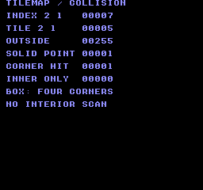
Build command
New-Item -ItemType Directory -Force .\out | Out-Null
.\kitaqfc\kitaqfc.exe .\kitaq-docs\samples\api-examples\fc\batch2_tilemap.c -I .\kitaqfc\lib -I .\kitaq-docs\samples -o .\out\batch2_tilemap.nes --no-cache --no-disasm --mapper=nrom --nes-chr=.\kitaq-docs\samples\font.chrImplementation and source
kitaqfc/lib/tilemap.h:19
Return a tile byte, or 0xFF when coordinates exceed map dimensions. The map/storage pointers must be valid; 0xFF may also be an actual stored tile.
kitaqfc/lib/tilemap.c:32
unsigned char nes_tilemap_get(struct NesTilemap* map, unsigned char tx, unsigned char ty)
{
if (tx >= map->width)
{
return 0xFF;
}
if (ty >= map->height)
{
return 0xFF;
}
return map->tiles[nes_tilemap_index(map, tx, ty)];
}nes_tilemap_index
Convert tile coordinates to the row-major byte offset ty*width+tx.
Syntax
unsigned short nes_tilemap_index(struct NesTilemap* map, unsigned char tx, unsigned char ty);Parameters
mapValid map with a row-major tile array, dimensions and solidity threshold; keep its storage readable during the call.
txTile X coordinate; one unit is eight pixels.
tyTile Y coordinate; one unit is eight pixels.
Return value
Computed 16-bit offset; coordinates are not bounds-checked.
Conditions and limits
A valid map and readable nonempty array are required. Solidity is a tile-ID threshold, not a separate collision mask.
Usage example
result[0]=nes_tilemap_index(&map,2,1);This is a calling fragment. Follow the stated initialization and buffer requirements before using it in a complete program.
Expected result
Put solid tile 5 at (2,1) in a 5×3 map: its array index is 7 and an outside read returns 255. A corner touching the obstacle returns 1; a 40×24 box enclosing it only in its interior returns 0, demonstrating the corner-only limitation.
Build command
New-Item -ItemType Directory -Force .\out | Out-Null
.\kitaqfc\kitaqfc.exe .\kitaq-docs\samples\api-examples\fc\batch2_tilemap.c -I .\kitaqfc\lib -I .\kitaq-docs\samples -o .\out\batch2_tilemap.nes --no-cache --no-disasm --mapper=nrom --nes-chr=.\kitaq-docs\samples\font.chrImplementation and source
kitaqfc/lib/tilemap.h:16
Compute a row-major byte offset by adding the row stride ty times. This internal arithmetic helper does not validate coordinates.
kitaqfc/lib/tilemap.c:14
unsigned short nes_tilemap_index(struct NesTilemap* map, unsigned char tx, unsigned char ty)
{
unsigned short index;
unsigned char y;
index = tx;
y = 0;
while (y != ty)
{
index = (unsigned short)(index + map->width);
y = y + 1;
}
return index;
}nes_tilemap_point_solid
Test a tile against solid_from; tile 255 and out-of-bounds coordinates are always solid.
Syntax
unsigned char nes_tilemap_point_solid(struct NesTilemap* map, unsigned char tx, unsigned char ty);Parameters
mapValid map with a row-major tile array, dimensions and solidity threshold; keep its storage readable during the call.
txTile X coordinate; one unit is eight pixels.
tyTile Y coordinate; one unit is eight pixels.
Return value
1 for solid, otherwise 0.
Conditions and limits
A valid map and readable nonempty array are required. Solidity is a tile-ID threshold, not a separate collision mask.
Usage example
result[3]=nes_tilemap_point_solid(&map,2,1);result[4]=nes_tilemap_point_solid(&map,0,0);result[5]=nes_tilemap_point_solid(&map,5,0);This is a calling fragment. Follow the stated initialization and buffer requirements before using it in a complete program.
Expected result
Put solid tile 5 at (2,1) in a 5×3 map: its array index is 7 and an outside read returns 255. A corner touching the obstacle returns 1; a 40×24 box enclosing it only in its interior returns 0, demonstrating the corner-only limitation.
Build command
New-Item -ItemType Directory -Force .\out | Out-Null
.\kitaqfc\kitaqfc.exe .\kitaq-docs\samples\api-examples\fc\batch2_tilemap.c -I .\kitaqfc\lib -I .\kitaq-docs\samples -o .\out\batch2_tilemap.nes --no-cache --no-disasm --mapper=nrom --nes-chr=.\kitaq-docs\samples\font.chrImplementation and source
kitaqfc/lib/tilemap.h:22
Treat out-of-bounds/0xFF tiles as solid, then compare other tile IDs with the map's solid_from threshold.
kitaqfc/lib/tilemap.c:47
unsigned char nes_tilemap_point_solid(struct NesTilemap* map, unsigned char tx, unsigned char ty)
{
unsigned char tile;
tile = nes_tilemap_get(map, tx, ty);
if (tile == 0xFF)
{
return 1;
}
if (tile >= map->solid_from)
{
return 1;
}
return 0;
}nes_tilemap_world_box_solid
Test the top-left, top-right, bottom-left and bottom-right corners of a world box.
Syntax
unsigned char nes_tilemap_world_box_solid(struct NesTilemap* map, unsigned short world_x, unsigned short world_y, unsigned char width, unsigned char height);Parameters
mapValid map with a row-major tile array, dimensions and solidity threshold; keep its storage readable during the call.
world_xWorld X in integer pixels; keep below 2048 to avoid wrapping.
world_yWorld Y in integer pixels; keep below 2048 to avoid wrapping.
widthBox width, 1–255 pixels; keep its far edge
world_x+width-1below 2048.heightBox height, 1–255 pixels; keep its far edge
world_y+height-1below 2048.
Return value
1 if any corner is solid, otherwise 0.
Conditions and limits
Width and height must be nonzero. Edges between corners and the interior are not scanned, so large boxes can miss obstacles. The sample returns zero for a central obstacle when all four corners are empty.
Usage example
result[12]=nes_tilemap_world_box_solid(&map,8,8,16,8);result[13]=nes_tilemap_world_box_solid(&map,0,0,40,24);This is a calling fragment. Follow the stated initialization and buffer requirements before using it in a complete program.
Expected result
Put solid tile 5 at (2,1) in a 5×3 map: its array index is 7 and an outside read returns 255. A corner touching the obstacle returns 1; a 40×24 box enclosing it only in its interior returns 0, demonstrating the corner-only limitation.
Build command
New-Item -ItemType Directory -Force .\out | Out-Null
.\kitaqfc\kitaqfc.exe .\kitaq-docs\samples\api-examples\fc\batch2_tilemap.c -I .\kitaqfc\lib -I .\kitaq-docs\samples -o .\out\batch2_tilemap.nes --no-cache --no-disasm --mapper=nrom --nes-chr=.\kitaq-docs\samples\font.chrImplementation and source
kitaqfc/lib/tilemap.h:33
Test only the four corners of a nonempty world box. Interior/edge tiles between the corners are not scanned, so large boxes can miss obstacles. Width/height must be nonzero and endpoint arithmetic must not overflow.
kitaqfc/lib/tilemap.c:86
unsigned char nes_tilemap_world_box_solid(struct NesTilemap* map, unsigned short world_x, unsigned short world_y, unsigned char width, unsigned char height)
{
unsigned short x2;
unsigned short y2;
x2 = (unsigned short)(world_x + width - 1);
y2 = (unsigned short)(world_y + height - 1);
if (nes_tilemap_world_point_solid(map, world_x, world_y) != 0)
{
return 1;
}
if (nes_tilemap_world_point_solid(map, x2, world_y) != 0)
{
return 1;
}
if (nes_tilemap_world_point_solid(map, world_x, y2) != 0)
{
return 1;
}
if (nes_tilemap_world_point_solid(map, x2, y2) != 0)
{
return 1;
}
return 0;
}nes_tilemap_world_point_solid
Convert a world point to eight-pixel tile coordinates and test solidity.
Syntax
unsigned char nes_tilemap_world_point_solid(struct NesTilemap* map, unsigned short world_x, unsigned short world_y);Parameters
mapValid map with a row-major tile array, dimensions and solidity threshold; keep its storage readable during the call.
world_xWorld X in integer pixels; keep below 2048 to avoid wrapping.
world_yWorld Y in integer pixels; keep below 2048 to avoid wrapping.
Return value
1 if the corresponding tile is solid, otherwise 0.
Conditions and limits
A valid map and readable nonempty array are required. Solidity is a tile-ID threshold, not a separate collision mask.
Usage example
result[10]=nes_tilemap_world_point_solid(&map,16,8);result[11]=nes_tilemap_world_point_solid(&map,0,0);This is a calling fragment. Follow the stated initialization and buffer requirements before using it in a complete program.
Expected result
Put solid tile 5 at (2,1) in a 5×3 map: its array index is 7 and an outside read returns 255. A corner touching the obstacle returns 1; a 40×24 box enclosing it only in its interior returns 0, demonstrating the corner-only limitation.
Build command
New-Item -ItemType Directory -Force .\out | Out-Null
.\kitaqfc\kitaqfc.exe .\kitaq-docs\samples\api-examples\fc\batch2_tilemap.c -I .\kitaqfc\lib -I .\kitaq-docs\samples -o .\out\batch2_tilemap.nes --no-cache --no-disasm --mapper=nrom --nes-chr=.\kitaq-docs\samples\font.chrImplementation and source
kitaqfc/lib/tilemap.h:29
Convert a world point to tile coordinates and apply the tile solidity rule.
kitaqfc/lib/tilemap.c:77
unsigned char nes_tilemap_world_point_solid(struct NesTilemap* map, unsigned short world_x, unsigned short world_y)
{
return nes_tilemap_point_solid(map, nes_world_to_tile8_x(world_x), nes_world_to_tile8_y(world_y));
}nes_world_to_tile8_x
Divide world X by eight and narrow it to a tile-coordinate byte.
Syntax
unsigned char nes_world_to_tile8_x(unsigned short world_x);Parameters
world_xWorld X in integer pixels; keep below 2048 to avoid wrapping.
Return value
The low eight bits of world_x >> 3; wraps every 2048 pixels.
Conditions and limits
A valid map and readable nonempty array are required. Solidity is a tile-ID threshold, not a separate collision mask.
Usage example
result[6]=nes_world_to_tile8_x(23);result[7]=nes_world_to_tile8_x(24);This is a calling fragment. Follow the stated initialization and buffer requirements before using it in a complete program.
Expected result
Put solid tile 5 at (2,1) in a 5×3 map: its array index is 7 and an outside read returns 255. A corner touching the obstacle returns 1; a 40×24 box enclosing it only in its interior returns 0, demonstrating the corner-only limitation.
Build command
New-Item -ItemType Directory -Force .\out | Out-Null
.\kitaqfc\kitaqfc.exe .\kitaq-docs\samples\api-examples\fc\batch2_tilemap.c -I .\kitaqfc\lib -I .\kitaq-docs\samples -o .\out\batch2_tilemap.nes --no-cache --no-disasm --mapper=nrom --nes-chr=.\kitaq-docs\samples\font.chrImplementation and source
kitaqfc/lib/tilemap.h:25
Convert pixels to eight-pixel tile X and narrow to a byte. Keep world X below 2048 when wraparound is not intended.
kitaqfc/lib/tilemap.c:65
unsigned char nes_world_to_tile8_x(unsigned short world_x)
{
return (unsigned char)(world_x >> 3);
}nes_world_to_tile8_y
Divide world Y by eight and narrow it to a tile-coordinate byte.
Syntax
unsigned char nes_world_to_tile8_y(unsigned short world_y);Parameters
world_yWorld Y in integer pixels; keep below 2048 to avoid wrapping.
Return value
The low eight bits of world_y >> 3; wraps every 2048 pixels.
Conditions and limits
A valid map and readable nonempty array are required. Solidity is a tile-ID threshold, not a separate collision mask.
Usage example
result[8]=nes_world_to_tile8_y(15);result[9]=nes_world_to_tile8_y(16);This is a calling fragment. Follow the stated initialization and buffer requirements before using it in a complete program.
Expected result
Put solid tile 5 at (2,1) in a 5×3 map: its array index is 7 and an outside read returns 255. A corner touching the obstacle returns 1; a 40×24 box enclosing it only in its interior returns 0, demonstrating the corner-only limitation.
Build command
New-Item -ItemType Directory -Force .\out | Out-Null
.\kitaqfc\kitaqfc.exe .\kitaq-docs\samples\api-examples\fc\batch2_tilemap.c -I .\kitaqfc\lib -I .\kitaq-docs\samples -o .\out\batch2_tilemap.nes --no-cache --no-disasm --mapper=nrom --nes-chr=.\kitaq-docs\samples\font.chrImplementation and source
kitaqfc/lib/tilemap.h:27
Convert pixels to eight-pixel tile Y with the same byte-coordinate limit.
kitaqfc/lib/tilemap.c:71
unsigned char nes_world_to_tile8_y(unsigned short world_y)
{
return (unsigned char)(world_y >> 3);
}vram.h — Queued VRAM updates and transfer
Initialize the deferred VRAM command queue to empty and clear its overflow latch. This does not erase the screen, upload tile graphics or allocate hardware VRAM.
FC counts bytes of encoded commands in a fixed 128-byte intrinsic buffer. A tile write costs 4 bytes, a fill record 5 and a pointer-copy record 6, including metadata. A ready queue can be consumed by NMI; inspect or build it before committing, and coordinate the producer with the consumer.
Commit the intrinsic queue with __vramq_commit, then wait with __nmi_wait for the NMI path. The default handler consumes a ready queue. Keep NMI enabled and its handler functional; this call does not split a large transfer across successive VBlanks.
Build and consume the queue in coordinated phases. Do not append while an interrupt executes it, change its bookkeeping directly, or overwrite retained source data unintentionally. These APIs provide neither locking nor double buffering. Capacity describes the command buffer, not free bytes in hardware VRAM.
vram_clear_queue
Discard pending VRAM commands and clear the overflow flag without performing their writes.
Syntax
void vram_clear_queue(void);Return value
None (void).
Conditions and limits
FC counts bytes of encoded commands in a fixed 128-byte intrinsic buffer. A tile write costs 4 bytes, a fill record 5 and a pointer-copy record 6, including metadata. A ready queue can be consumed by NMI; inspect or build it before committing, and coordinate the producer with the consumer.
Build and consume the queue in coordinated phases. Do not append while an interrupt executes it, change its bookkeeping directly, or overwrite retained source data unintentionally. These APIs provide neither locking nor double buffering. Capacity describes the command buffer, not free bytes in hardware VRAM.
Usage example
vram_clear_queue();
if (vram_get_queue_used()!=0 || vram_get_overflowed()!=0) failures++;This is a calling fragment. Follow the stated initialization and buffer requirements before using it in a complete program.
Expected result
This complete program demonstrates deferred writes, queue accounting and overflow recovery. Seven drawing calls use 7 of 32 command slots on GB, or 52 of 128 command bytes on FC: CAPACITY/USED/FREE reads 032/007/025 or 128/052/076. AFTER FLUSH and FAILED CHECKS must be 000; OVERFLOW SEEN must be 001. An intentional full-queue rejection tests the latch. Reading or flushing does not clear it; clearing the queue does. On FC, an uncommitted direct flush must leave the pending queue intact.
Image coordinates are pixels from the upper-left corner. Expect solid 8 × 8 squares at (16,16) and (32,16), a solid 32 × 24 rectangle at (16,32), and a 40 × 8 horizontal bar at (80,64). The final VBlank write adds an 8 × 8 square at (144,80). The discarded write at (144,24) must leave that cell blank. DMG uses black shapes on white, CGB uses red, blue and green shapes on white, and FC uses red, blue and green shapes on black. These emulator images do not constitute real-hardware verification.
Three original 8 × 8 patterns distinguish the copy operations: tile 1 is solid; tile 2 fills its left four columns; tile 3 is a left-aligned triangle widening from one pixel at the top to eight at the bottom. At (80,32), the 3 × 2 tile block must read [1,2,3] / [3,0,2], where 0 is blank. Its first source byte changes after queuing, so a solid tile there proves that the source pointer is retained. At (16,64), the copy shows [1,2,3]; at (48,64), the tiles alias shows [2,3]. Their dimensions are 24 × 16, 24 × 8 and 16 × 8 pixels respectively.
On FC, red identifies the two upper squares, the three-pattern copy and the final VBlank square. Blue identifies the 32 × 24 rectangle and the two-pattern copy. Green identifies the 3 × 2 tile block and the 40 × 8 bar. The background is black; each drawn pixel is checked for both position and color.

Build command
New-Item -ItemType Directory -Force .\out | Out-Null
.\kitaqfc\kitaqfc.exe .\kitaqfc\lib\vram.c .\kitaq-docs\samples\api-examples\fc\vram_queue_shapes.c -I .\kitaqfc\lib -I .\kitaq-docs\samples -o .\out\vram_queue_shapes.nes --mapper=nrom --nes-chr=.\kitaq-docs\samples\api-examples\fc\vram_shapes.chr --no-cache --no-disasmImplementation and source
kitaqfc/lib/vram.h:15
Discard queued commands and explicitly reset the overflow latch.
kitaqfc/lib/vram.c:17
void vram_clear_queue(void)
{
__vramq_clear();
__vramq_clear_overflow();
}vram_flush
Commit the intrinsic queue with __vramq_commit, then wait with __nmi_wait for the NMI path. The default handler consumes a ready queue. Keep NMI enabled and its handler functional; this call does not split a large transfer across successive VBlanks.
Syntax
void vram_flush(void);Return value
None (void).
Conditions and limits
FC counts bytes of encoded commands in a fixed 128-byte intrinsic buffer. A tile write costs 4 bytes, a fill record 5 and a pointer-copy record 6, including metadata. A ready queue can be consumed by NMI; inspect or build it before committing, and coordinate the producer with the consumer.
Build and consume the queue in coordinated phases. Do not append while an interrupt executes it, change its bookkeeping directly, or overwrite retained source data unintentionally. These APIs provide neither locking nor double buffering. Capacity describes the command buffer, not free bytes in hardware VRAM.
PPU byte address (0x0000–0x3FFF), not a CPU pointer. The target must be writable: pattern changes need CHR RAM, not CHR ROM. PPU mapping and mirroring apply. Select increment 1 in PPUCTRL for contiguous copies and fills. Execute during safe PPU timing, then restore the desired scroll state; the executor writes PPUADDR and PPUDATA without restoring scroll settings.
Usage example
vram_flush(); // One small write through the VBlank/NMI path.
__scroll_set(0,0);
if (vram_get_queue_used()!=0) failures++;This is a calling fragment. Follow the stated initialization and buffer requirements before using it in a complete program.
Expected result
This complete program demonstrates deferred writes, queue accounting and overflow recovery. Seven drawing calls use 7 of 32 command slots on GB, or 52 of 128 command bytes on FC: CAPACITY/USED/FREE reads 032/007/025 or 128/052/076. AFTER FLUSH and FAILED CHECKS must be 000; OVERFLOW SEEN must be 001. An intentional full-queue rejection tests the latch. Reading or flushing does not clear it; clearing the queue does. On FC, an uncommitted direct flush must leave the pending queue intact.
Image coordinates are pixels from the upper-left corner. Expect solid 8 × 8 squares at (16,16) and (32,16), a solid 32 × 24 rectangle at (16,32), and a 40 × 8 horizontal bar at (80,64). The final VBlank write adds an 8 × 8 square at (144,80). The discarded write at (144,24) must leave that cell blank. DMG uses black shapes on white, CGB uses red, blue and green shapes on white, and FC uses red, blue and green shapes on black. These emulator images do not constitute real-hardware verification.
Three original 8 × 8 patterns distinguish the copy operations: tile 1 is solid; tile 2 fills its left four columns; tile 3 is a left-aligned triangle widening from one pixel at the top to eight at the bottom. At (80,32), the 3 × 2 tile block must read [1,2,3] / [3,0,2], where 0 is blank. Its first source byte changes after queuing, so a solid tile there proves that the source pointer is retained. At (16,64), the copy shows [1,2,3]; at (48,64), the tiles alias shows [2,3]. Their dimensions are 24 × 16, 24 × 8 and 16 × 8 pixels respectively.
On FC, red identifies the two upper squares, the three-pattern copy and the final VBlank square. Blue identifies the 32 × 24 rectangle and the two-pattern copy. Green identifies the 3 × 2 tile block and the 40 × 8 bar. The background is black; each drawn pixel is checked for both position and color.
Build command
New-Item -ItemType Directory -Force .\out | Out-Null
.\kitaqfc\kitaqfc.exe .\kitaqfc\lib\vram.c .\kitaq-docs\samples\api-examples\fc\vram_queue_shapes.c -I .\kitaqfc\lib -I .\kitaq-docs\samples -o .\out\vram_queue_shapes.nes --mapper=nrom --nes-chr=.\kitaq-docs\samples\api-examples\fc\vram_shapes.chr --no-cache --no-disasmImplementation and source
kitaqfc/lib/vram.h:41
Commit queued records for consumption and wait for the NMI path.
kitaqfc/lib/vram.c:115
void vram_flush(void)
{
__vramq_commit();
__nmi_wait();
}vram_flush_now
Call __vramq_exec immediately. It executes only when the ready flag has been set by __vramq_commit; an uncommitted queue remains untouched. A completed execution clears the length and ready flag, but preserves overflow. This function neither commits the queue nor waits for safe PPU timing.
Syntax
void vram_flush_now(void);Return value
None (void).
Conditions and limits
FC counts bytes of encoded commands in a fixed 128-byte intrinsic buffer. A tile write costs 4 bytes, a fill record 5 and a pointer-copy record 6, including metadata. A ready queue can be consumed by NMI; inspect or build it before committing, and coordinate the producer with the consumer.
Build and consume the queue in coordinated phases. Do not append while an interrupt executes it, change its bookkeeping directly, or overwrite retained source data unintentionally. These APIs provide neither locking nor double buffering. Capacity describes the command buffer, not free bytes in hardware VRAM.
PPU byte address (0x0000–0x3FFF), not a CPU pointer. The target must be writable: pattern changes need CHR RAM, not CHR ROM. PPU mapping and mirroring apply. Select increment 1 in PPUCTRL for contiguous copies and fills. Execute during safe PPU timing, then restore the desired scroll state; the executor writes PPUADDR and PPUDATA without restoring scroll settings.
Usage example
// Rendering is stopped here. On FC, commit readiness before direct execution.
__vramq_commit();
vram_flush_now();
after_flush=vram_get_queue_used();
if (after_flush!=0) failures++;This is a calling fragment. Follow the stated initialization and buffer requirements before using it in a complete program.
Expected result
This complete program demonstrates deferred writes, queue accounting and overflow recovery. Seven drawing calls use 7 of 32 command slots on GB, or 52 of 128 command bytes on FC: CAPACITY/USED/FREE reads 032/007/025 or 128/052/076. AFTER FLUSH and FAILED CHECKS must be 000; OVERFLOW SEEN must be 001. An intentional full-queue rejection tests the latch. Reading or flushing does not clear it; clearing the queue does. On FC, an uncommitted direct flush must leave the pending queue intact.
Image coordinates are pixels from the upper-left corner. Expect solid 8 × 8 squares at (16,16) and (32,16), a solid 32 × 24 rectangle at (16,32), and a 40 × 8 horizontal bar at (80,64). The final VBlank write adds an 8 × 8 square at (144,80). The discarded write at (144,24) must leave that cell blank. DMG uses black shapes on white, CGB uses red, blue and green shapes on white, and FC uses red, blue and green shapes on black. These emulator images do not constitute real-hardware verification.
Three original 8 × 8 patterns distinguish the copy operations: tile 1 is solid; tile 2 fills its left four columns; tile 3 is a left-aligned triangle widening from one pixel at the top to eight at the bottom. At (80,32), the 3 × 2 tile block must read [1,2,3] / [3,0,2], where 0 is blank. Its first source byte changes after queuing, so a solid tile there proves that the source pointer is retained. At (16,64), the copy shows [1,2,3]; at (48,64), the tiles alias shows [2,3]. Their dimensions are 24 × 16, 24 × 8 and 16 × 8 pixels respectively.
On FC, red identifies the two upper squares, the three-pattern copy and the final VBlank square. Blue identifies the 32 × 24 rectangle and the two-pattern copy. Green identifies the 3 × 2 tile block and the 40 × 8 bar. The background is black; each drawn pixel is checked for both position and color.
Build command
New-Item -ItemType Directory -Force .\out | Out-Null
.\kitaqfc\kitaqfc.exe .\kitaqfc\lib\vram.c .\kitaq-docs\samples\api-examples\fc\vram_queue_shapes.c -I .\kitaqfc\lib -I .\kitaq-docs\samples -o .\out\vram_queue_shapes.nes --mapper=nrom --nes-chr=.\kitaq-docs\samples\api-examples\fc\vram_shapes.chr --no-cache --no-disasmImplementation and source
kitaqfc/lib/vram.h:39
Invoke the queue executor directly. Its ready flag must already be set by commit, and the caller supplies appropriate PPU timing.
kitaqfc/lib/vram.c:109
void vram_flush_now(void)
{
__vramq_exec();
}vram_get_overflowed
Read the queue-overflow flag without clearing it; it can retain an earlier failure.
Syntax
u8 vram_get_overflowed(void);Return value
0 if no overflow is currently latched; 1 after a rejected append until explicit reset. Flushing does not clear this latch.
Conditions and limits
FC counts bytes of encoded commands in a fixed 128-byte intrinsic buffer. A tile write costs 4 bytes, a fill record 5 and a pointer-copy record 6, including metadata. A ready queue can be consumed by NMI; inspect or build it before committing, and coordinate the producer with the consumer.
Build and consume the queue in coordinated phases. Do not append while an interrupt executes it, change its bookkeeping directly, or overwrite retained source data unintentionally. These APIs provide neither locking nor double buffering. Capacity describes the command buffer, not free bytes in hardware VRAM.
Usage example
overflow_seen=vram_get_overflowed();
if (overflow_seen!=1) failures++;
// Reading the latch again does not clear it.
if (vram_get_overflowed()!=1) failures++;This is a calling fragment. Follow the stated initialization and buffer requirements before using it in a complete program.
Expected result
This complete program demonstrates deferred writes, queue accounting and overflow recovery. Seven drawing calls use 7 of 32 command slots on GB, or 52 of 128 command bytes on FC: CAPACITY/USED/FREE reads 032/007/025 or 128/052/076. AFTER FLUSH and FAILED CHECKS must be 000; OVERFLOW SEEN must be 001. An intentional full-queue rejection tests the latch. Reading or flushing does not clear it; clearing the queue does. On FC, an uncommitted direct flush must leave the pending queue intact.
Image coordinates are pixels from the upper-left corner. Expect solid 8 × 8 squares at (16,16) and (32,16), a solid 32 × 24 rectangle at (16,32), and a 40 × 8 horizontal bar at (80,64). The final VBlank write adds an 8 × 8 square at (144,80). The discarded write at (144,24) must leave that cell blank. DMG uses black shapes on white, CGB uses red, blue and green shapes on white, and FC uses red, blue and green shapes on black. These emulator images do not constitute real-hardware verification.
Three original 8 × 8 patterns distinguish the copy operations: tile 1 is solid; tile 2 fills its left four columns; tile 3 is a left-aligned triangle widening from one pixel at the top to eight at the bottom. At (80,32), the 3 × 2 tile block must read [1,2,3] / [3,0,2], where 0 is blank. Its first source byte changes after queuing, so a solid tile there proves that the source pointer is retained. At (16,64), the copy shows [1,2,3]; at (48,64), the tiles alias shows [2,3]. Their dimensions are 24 × 16, 24 × 8 and 16 × 8 pixels respectively.
On FC, red identifies the two upper squares, the three-pattern copy and the final VBlank square. Blue identifies the 32 × 24 rectangle and the two-pattern copy. Green identifies the 3 × 2 tile block and the 40 × 8 bar. The background is black; each drawn pixel is checked for both position and color.
Build command
New-Item -ItemType Directory -Force .\out | Out-Null
.\kitaqfc\kitaqfc.exe .\kitaqfc\lib\vram.c .\kitaq-docs\samples\api-examples\fc\vram_queue_shapes.c -I .\kitaqfc\lib -I .\kitaq-docs\samples -o .\out\vram_queue_shapes.nes --mapper=nrom --nes-chr=.\kitaq-docs\samples\api-examples\fc\vram_shapes.chr --no-cache --no-disasmImplementation and source
kitaqfc/lib/vram.h:52
Read the overflow latch without clearing it.
kitaqfc/lib/vram.c:144
u8 vram_get_overflowed(void)
{
return __vramq_overflow();
}vram_get_queue_capacity
Return the total capacity of the command buffer, regardless of how much is currently used.
Syntax
u8 vram_get_queue_capacity(void);Return value
An unsigned byte in the platform-specific units described here. Reading it does not modify or execute the queue.
Conditions and limits
FC counts bytes of encoded commands in a fixed 128-byte intrinsic buffer. A tile write costs 4 bytes, a fill record 5 and a pointer-copy record 6, including metadata. A ready queue can be consumed by NMI; inspect or build it before committing, and coordinate the producer with the consumer.
Build and consume the queue in coordinated phases. Do not append while an interrupt executes it, change its bookkeeping directly, or overwrite retained source data unintentionally. These APIs provide neither locking nor double buffering. Capacity describes the command buffer, not free bytes in hardware VRAM.
Usage example
capacity=vram_get_queue_capacity();This is a calling fragment. Follow the stated initialization and buffer requirements before using it in a complete program.
Expected result
This complete program demonstrates deferred writes, queue accounting and overflow recovery. Seven drawing calls use 7 of 32 command slots on GB, or 52 of 128 command bytes on FC: CAPACITY/USED/FREE reads 032/007/025 or 128/052/076. AFTER FLUSH and FAILED CHECKS must be 000; OVERFLOW SEEN must be 001. An intentional full-queue rejection tests the latch. Reading or flushing does not clear it; clearing the queue does. On FC, an uncommitted direct flush must leave the pending queue intact.
Image coordinates are pixels from the upper-left corner. Expect solid 8 × 8 squares at (16,16) and (32,16), a solid 32 × 24 rectangle at (16,32), and a 40 × 8 horizontal bar at (80,64). The final VBlank write adds an 8 × 8 square at (144,80). The discarded write at (144,24) must leave that cell blank. DMG uses black shapes on white, CGB uses red, blue and green shapes on white, and FC uses red, blue and green shapes on black. These emulator images do not constitute real-hardware verification.
Three original 8 × 8 patterns distinguish the copy operations: tile 1 is solid; tile 2 fills its left four columns; tile 3 is a left-aligned triangle widening from one pixel at the top to eight at the bottom. At (80,32), the 3 × 2 tile block must read [1,2,3] / [3,0,2], where 0 is blank. Its first source byte changes after queuing, so a solid tile there proves that the source pointer is retained. At (16,64), the copy shows [1,2,3]; at (48,64), the tiles alias shows [2,3]. Their dimensions are 24 × 16, 24 × 8 and 16 × 8 pixels respectively.
On FC, red identifies the two upper squares, the three-pattern copy and the final VBlank square. Blue identifies the 32 × 24 rectangle and the two-pattern copy. Green identifies the 3 × 2 tile block and the 40 × 8 bar. The background is black; each drawn pixel is checked for both position and color.
Build command
New-Item -ItemType Directory -Force .\out | Out-Null
.\kitaqfc\kitaqfc.exe .\kitaqfc\lib\vram.c .\kitaq-docs\samples\api-examples\fc\vram_queue_shapes.c -I .\kitaqfc\lib -I .\kitaq-docs\samples -o .\out\vram_queue_shapes.nes --mapper=nrom --nes-chr=.\kitaq-docs\samples\api-examples\fc\vram_shapes.chr --no-cache --no-disasmImplementation and source
kitaqfc/lib/vram.h:50
Return the queue's total capacity in bytes, independent of its current usage. This describes the command buffer, not free space in PPU VRAM.
kitaqfc/lib/vram.c:138
u8 vram_get_queue_capacity(void)
{
return __vramq_capacity();
}vram_get_queue_free
Return total command-buffer capacity minus current usage. Check whether the entire next record or batch fits before appending it; this getter does not reserve space.
Syntax
u8 vram_get_queue_free(void);Return value
An unsigned byte in the platform-specific units described here. Reading it does not modify or execute the queue.
Conditions and limits
FC counts bytes of encoded commands in a fixed 128-byte intrinsic buffer. A tile write costs 4 bytes, a fill record 5 and a pointer-copy record 6, including metadata. A ready queue can be consumed by NMI; inspect or build it before committing, and coordinate the producer with the consumer.
Build and consume the queue in coordinated phases. Do not append while an interrupt executes it, change its bookkeeping directly, or overwrite retained source data unintentionally. These APIs provide neither locking nor double buffering. Capacity describes the command buffer, not free bytes in hardware VRAM.
Usage example
available=vram_get_queue_free();
if (used+available!=capacity) failures++;This is a calling fragment. Follow the stated initialization and buffer requirements before using it in a complete program.
Expected result
This complete program demonstrates deferred writes, queue accounting and overflow recovery. Seven drawing calls use 7 of 32 command slots on GB, or 52 of 128 command bytes on FC: CAPACITY/USED/FREE reads 032/007/025 or 128/052/076. AFTER FLUSH and FAILED CHECKS must be 000; OVERFLOW SEEN must be 001. An intentional full-queue rejection tests the latch. Reading or flushing does not clear it; clearing the queue does. On FC, an uncommitted direct flush must leave the pending queue intact.
Image coordinates are pixels from the upper-left corner. Expect solid 8 × 8 squares at (16,16) and (32,16), a solid 32 × 24 rectangle at (16,32), and a 40 × 8 horizontal bar at (80,64). The final VBlank write adds an 8 × 8 square at (144,80). The discarded write at (144,24) must leave that cell blank. DMG uses black shapes on white, CGB uses red, blue and green shapes on white, and FC uses red, blue and green shapes on black. These emulator images do not constitute real-hardware verification.
Three original 8 × 8 patterns distinguish the copy operations: tile 1 is solid; tile 2 fills its left four columns; tile 3 is a left-aligned triangle widening from one pixel at the top to eight at the bottom. At (80,32), the 3 × 2 tile block must read [1,2,3] / [3,0,2], where 0 is blank. Its first source byte changes after queuing, so a solid tile there proves that the source pointer is retained. At (16,64), the copy shows [1,2,3]; at (48,64), the tiles alias shows [2,3]. Their dimensions are 24 × 16, 24 × 8 and 16 × 8 pixels respectively.
On FC, red identifies the two upper squares, the three-pattern copy and the final VBlank square. Blue identifies the 32 × 24 rectangle and the two-pattern copy. Green identifies the 3 × 2 tile block and the 40 × 8 bar. The background is black; each drawn pixel is checked for both position and color.
Build command
New-Item -ItemType Directory -Force .\out | Out-Null
.\kitaqfc\kitaqfc.exe .\kitaqfc\lib\vram.c .\kitaq-docs\samples\api-examples\fc\vram_queue_shapes.c -I .\kitaqfc\lib -I .\kitaq-docs\samples -o .\out\vram_queue_shapes.nes --mapper=nrom --nes-chr=.\kitaq-docs\samples\api-examples\fc\vram_shapes.chr --no-cache --no-disasmImplementation and source
kitaqfc/lib/vram.h:47
Return the remaining command-buffer capacity in bytes. A command requires space for its complete encoded record, including its address and metadata. Read before committing: NMI may consume a committed queue asynchronously.
kitaqfc/lib/vram.c:131
u8 vram_get_queue_free(void)
{
return (u8)(__vramq_capacity() - __vramq_len());
}vram_get_queue_used
Return the amount of command-buffer storage currently occupied by pending commands. This is not the number of bytes that will be written to video memory.
Syntax
u8 vram_get_queue_used(void);Return value
An unsigned byte in the platform-specific units described here. Reading it does not modify or execute the queue.
Conditions and limits
FC counts bytes of encoded commands in a fixed 128-byte intrinsic buffer. A tile write costs 4 bytes, a fill record 5 and a pointer-copy record 6, including metadata. A ready queue can be consumed by NMI; inspect or build it before committing, and coordinate the producer with the consumer.
Build and consume the queue in coordinated phases. Do not append while an interrupt executes it, change its bookkeeping directly, or overwrite retained source data unintentionally. These APIs provide neither locking nor double buffering. Capacity describes the command buffer, not free bytes in hardware VRAM.
Usage example
used=vram_get_queue_used();This is a calling fragment. Follow the stated initialization and buffer requirements before using it in a complete program.
Expected result
This complete program demonstrates deferred writes, queue accounting and overflow recovery. Seven drawing calls use 7 of 32 command slots on GB, or 52 of 128 command bytes on FC: CAPACITY/USED/FREE reads 032/007/025 or 128/052/076. AFTER FLUSH and FAILED CHECKS must be 000; OVERFLOW SEEN must be 001. An intentional full-queue rejection tests the latch. Reading or flushing does not clear it; clearing the queue does. On FC, an uncommitted direct flush must leave the pending queue intact.
Image coordinates are pixels from the upper-left corner. Expect solid 8 × 8 squares at (16,16) and (32,16), a solid 32 × 24 rectangle at (16,32), and a 40 × 8 horizontal bar at (80,64). The final VBlank write adds an 8 × 8 square at (144,80). The discarded write at (144,24) must leave that cell blank. DMG uses black shapes on white, CGB uses red, blue and green shapes on white, and FC uses red, blue and green shapes on black. These emulator images do not constitute real-hardware verification.
Three original 8 × 8 patterns distinguish the copy operations: tile 1 is solid; tile 2 fills its left four columns; tile 3 is a left-aligned triangle widening from one pixel at the top to eight at the bottom. At (80,32), the 3 × 2 tile block must read [1,2,3] / [3,0,2], where 0 is blank. Its first source byte changes after queuing, so a solid tile there proves that the source pointer is retained. At (16,64), the copy shows [1,2,3]; at (48,64), the tiles alias shows [2,3]. Their dimensions are 24 × 16, 24 × 8 and 16 × 8 pixels respectively.
On FC, red identifies the two upper squares, the three-pattern copy and the final VBlank square. Blue identifies the 32 × 24 rectangle and the two-pattern copy. Green identifies the 3 × 2 tile block and the 40 × 8 bar. The background is black; each drawn pixel is checked for both position and color.
Build command
New-Item -ItemType Directory -Force .\out | Out-Null
.\kitaqfc\kitaqfc.exe .\kitaqfc\lib\vram.c .\kitaq-docs\samples\api-examples\fc\vram_queue_shapes.c -I .\kitaqfc\lib -I .\kitaq-docs\samples -o .\out\vram_queue_shapes.nes --mapper=nrom --nes-chr=.\kitaq-docs\samples\api-examples\fc\vram_shapes.chr --no-cache --no-disasmImplementation and source
kitaqfc/lib/vram.h:43
Return the encoded queue length in bytes, not the number of commands.
kitaqfc/lib/vram.c:122
u8 vram_get_queue_used(void)
{
return __vramq_len();
}vram_init
Initialize the deferred VRAM command queue to empty and clear its overflow latch. This does not erase the screen, upload tile graphics or allocate hardware VRAM.
Syntax
void vram_init(void);Return value
None (void).
Conditions and limits
FC counts bytes of encoded commands in a fixed 128-byte intrinsic buffer. A tile write costs 4 bytes, a fill record 5 and a pointer-copy record 6, including metadata. A ready queue can be consumed by NMI; inspect or build it before committing, and coordinate the producer with the consumer.
Build and consume the queue in coordinated phases. Do not append while an interrupt executes it, change its bookkeeping directly, or overwrite retained source data unintentionally. These APIs provide neither locking nor double buffering. Capacity describes the command buffer, not free bytes in hardware VRAM.
Usage example
vram_init();
if (vram_get_queue_used()!=0 || vram_get_overflowed()!=0) failures++;This is a calling fragment. Follow the stated initialization and buffer requirements before using it in a complete program.
Expected result
This complete program demonstrates deferred writes, queue accounting and overflow recovery. Seven drawing calls use 7 of 32 command slots on GB, or 52 of 128 command bytes on FC: CAPACITY/USED/FREE reads 032/007/025 or 128/052/076. AFTER FLUSH and FAILED CHECKS must be 000; OVERFLOW SEEN must be 001. An intentional full-queue rejection tests the latch. Reading or flushing does not clear it; clearing the queue does. On FC, an uncommitted direct flush must leave the pending queue intact.
Image coordinates are pixels from the upper-left corner. Expect solid 8 × 8 squares at (16,16) and (32,16), a solid 32 × 24 rectangle at (16,32), and a 40 × 8 horizontal bar at (80,64). The final VBlank write adds an 8 × 8 square at (144,80). The discarded write at (144,24) must leave that cell blank. DMG uses black shapes on white, CGB uses red, blue and green shapes on white, and FC uses red, blue and green shapes on black. These emulator images do not constitute real-hardware verification.
Three original 8 × 8 patterns distinguish the copy operations: tile 1 is solid; tile 2 fills its left four columns; tile 3 is a left-aligned triangle widening from one pixel at the top to eight at the bottom. At (80,32), the 3 × 2 tile block must read [1,2,3] / [3,0,2], where 0 is blank. Its first source byte changes after queuing, so a solid tile there proves that the source pointer is retained. At (16,64), the copy shows [1,2,3]; at (48,64), the tiles alias shows [2,3]. Their dimensions are 24 × 16, 24 × 8 and 16 × 8 pixels respectively.
On FC, red identifies the two upper squares, the three-pattern copy and the final VBlank square. Blue identifies the 32 × 24 rectangle and the two-pattern copy. Green identifies the 3 × 2 tile block and the 40 × 8 bar. The background is black; each drawn pixel is checked for both position and color.
Build command
New-Item -ItemType Directory -Force .\out | Out-Null
.\kitaqfc\kitaqfc.exe .\kitaqfc\lib\vram.c .\kitaq-docs\samples\api-examples\fc\vram_queue_shapes.c -I .\kitaqfc\lib -I .\kitaq-docs\samples -o .\out\vram_queue_shapes.nes --mapper=nrom --nes-chr=.\kitaq-docs\samples\api-examples\fc\vram_shapes.chr --no-cache --no-disasmImplementation and source
kitaqfc/lib/vram.h:13
Clear the intrinsic queue and its overflow latch.
kitaqfc/lib/vram.c:10
void vram_init(void)
{
__vramq_clear();
__vramq_clear_overflow();
}vram_queue_bg_block
Queue a w × h rectangle of tile numbers from src into the map at base. Source rows are tightly packed with w bytes each; destination rows are 32 bytes apart. The command retains the source pointer, so edits to the source before execution affect the displayed block.
Syntax
u8 vram_queue_bg_block(u16 base, u8 x, u8 y, u8 w, u8 h, const u8* src);Parameters
baseTile and rectangle commands use
VRAM_NT_BASE, defaulting to0x2000at compilation. A block uses its explicit nametable base (0x2000,0x2400,0x2800or0x2C00). Nametable mirroring applies. Addresses are computed when queued, with 32 bytes per row; stay within the 32 × 30 tile area to avoid attribute bytes.x, yTop-left coordinates in 8×8 tiles, not pixels. No clipping is performed. Keep the affected rectangle inside the intended map:
x + w <= 32, andy + h <= 32on GB or<= 30in an FC nametable's tile area. For a single tile, use width and height 1.w, hUnsigned byte width and height in tiles. The source block contains
w * hbytes in row order. Zero dimensions perform no visible writes, but queue-storage use follows the platform's record rules.srcNear pointer to readable bytes, retained until execution. Keep the required bytes alive and their memory/ROM bank mapped for the entire flush; no bank number or payload copy is stored. A nonempty transfer requires a valid source. Do not use an expired local array.
Return value
1 if the overflow latch is clear after the attempted operation; otherwise 0. This can report an earlier overflow even when the current record fits. Multi-record operations may queue only part of their work and do not roll it back. Zero-length operations can also return 0 because of an existing latch.
Conditions and limits
FC counts bytes of encoded commands in a fixed 128-byte intrinsic buffer. A tile write costs 4 bytes, a fill record 5 and a pointer-copy record 6, including metadata. A ready queue can be consumed by NMI; inspect or build it before committing, and coordinate the producer with the consumer.
This call needs 6 * h command-buffer bytes for the complete operation. The formula counts encoded records, including metadata, not transferred payload bytes. Reserve enough free capacity before a multi-record operation.
Tile and rectangle commands use VRAM_NT_BASE, defaulting to 0x2000 at compilation. A block uses its explicit nametable base (0x2000, 0x2400, 0x2800 or 0x2C00). Nametable mirroring applies. Addresses are computed when queued, with 32 bytes per row; stay within the 32 × 30 tile area to avoid attribute bytes.
Each row is one record. A height of 0 adds none; width 0 still adds one record per row but writes no bytes. Row coordinates are cast to u8, so y + row wraps at 256. No clipping or rollback is provided.
Build and consume the queue in coordinated phases. Do not append while an interrupt executes it, change its bookkeeping directly, or overwrite retained source data unintentionally. These APIs provide neither locking nor double buffering. Capacity describes the command buffer, not free bytes in hardware VRAM.
Usage example
check_result=vram_queue_bg_block(MAP_BASE,10,4,3,2,block);
block[0]=1; // The queued pointer sees this change when the queue executes.
if (check_result!=1) failures++;This is a calling fragment. Follow the stated initialization and buffer requirements before using it in a complete program.
Expected result
This complete program demonstrates deferred writes, queue accounting and overflow recovery. Seven drawing calls use 7 of 32 command slots on GB, or 52 of 128 command bytes on FC: CAPACITY/USED/FREE reads 032/007/025 or 128/052/076. AFTER FLUSH and FAILED CHECKS must be 000; OVERFLOW SEEN must be 001. An intentional full-queue rejection tests the latch. Reading or flushing does not clear it; clearing the queue does. On FC, an uncommitted direct flush must leave the pending queue intact.
Image coordinates are pixels from the upper-left corner. Expect solid 8 × 8 squares at (16,16) and (32,16), a solid 32 × 24 rectangle at (16,32), and a 40 × 8 horizontal bar at (80,64). The final VBlank write adds an 8 × 8 square at (144,80). The discarded write at (144,24) must leave that cell blank. DMG uses black shapes on white, CGB uses red, blue and green shapes on white, and FC uses red, blue and green shapes on black. These emulator images do not constitute real-hardware verification.
Three original 8 × 8 patterns distinguish the copy operations: tile 1 is solid; tile 2 fills its left four columns; tile 3 is a left-aligned triangle widening from one pixel at the top to eight at the bottom. At (80,32), the 3 × 2 tile block must read [1,2,3] / [3,0,2], where 0 is blank. Its first source byte changes after queuing, so a solid tile there proves that the source pointer is retained. At (16,64), the copy shows [1,2,3]; at (48,64), the tiles alias shows [2,3]. Their dimensions are 24 × 16, 24 × 8 and 16 × 8 pixels respectively.
On FC, red identifies the two upper squares, the three-pattern copy and the final VBlank square. Blue identifies the 32 × 24 rectangle and the two-pattern copy. Green identifies the 3 × 2 tile block and the 40 × 8 bar. The background is black; each drawn pixel is checked for both position and color.
Build command
New-Item -ItemType Directory -Force .\out | Out-Null
.\kitaqfc\kitaqfc.exe .\kitaqfc\lib\vram.c .\kitaq-docs\samples\api-examples\fc\vram_queue_shapes.c -I .\kitaqfc\lib -I .\kitaq-docs\samples -o .\out\vram_queue_shapes.nes --mapper=nrom --nes-chr=.\kitaq-docs\samples\api-examples\fc\vram_shapes.chr --no-cache --no-disasmImplementation and source
kitaqfc/lib/vram.h:27
Queue each tightly packed source row as a pointer-based copy record. Keep source storage and its ROM bank accessible until queue execution finishes; partial queuing remains possible on overflow.
kitaqfc/lib/vram.c:54
u8 vram_queue_bg_block(u16 base, u8 x, u8 y, u8 w, u8 h, const u8* src)
{
u8 row;
row = 0;
while (row < h) {
__vramq_copy(vram_xy_addr(base, x, (u8)(y + row)), src, w);
src = src + w;
row = (u8)(row + 1);
}
return (u8)(__vramq_overflow() == 0);
}vram_queue_bg_rect
Queue a background-map rectangle filled with the same tile number. Its top-left tile is (x, y) and its size is w × h tiles. A solid tile produces a filled rectangle; a patterned tile repeats its pattern in every cell.
Syntax
u8 vram_queue_bg_rect(u8 x, u8 y, u8 w, u8 h, u8 tile);Parameters
x, yTop-left coordinates in 8×8 tiles, not pixels. No clipping is performed. Keep the affected rectangle inside the intended map:
x + w <= 32, andy + h <= 32on GB or<= 30in an FC nametable's tile area. For a single tile, use width and height 1.w, hUnsigned byte width and height in tiles. The source block contains
w * hbytes in row order. Zero dimensions perform no visible writes, but queue-storage use follows the platform's record rules.tileTile-map byte, 0–255. Load the corresponding graphic separately and select the intended pattern table/addressing mode. A tile number is neither a pointer nor a color value.
Return value
1 if the overflow latch is clear after the attempted operation; otherwise 0. This can report an earlier overflow even when the current record fits. Multi-record operations may queue only part of their work and do not roll it back. Zero-length operations can also return 0 because of an existing latch.
Conditions and limits
FC counts bytes of encoded commands in a fixed 128-byte intrinsic buffer. A tile write costs 4 bytes, a fill record 5 and a pointer-copy record 6, including metadata. A ready queue can be consumed by NMI; inspect or build it before committing, and coordinate the producer with the consumer.
This call needs 5 * h command-buffer bytes for the complete operation. The formula counts encoded records, including metadata, not transferred payload bytes. Reserve enough free capacity before a multi-record operation.
Tile and rectangle commands use VRAM_NT_BASE, defaulting to 0x2000 at compilation. A block uses its explicit nametable base (0x2000, 0x2400, 0x2800 or 0x2C00). Nametable mirroring applies. Addresses are computed when queued, with 32 bytes per row; stay within the 32 × 30 tile area to avoid attribute bytes.
Each row is one record. A height of 0 adds none; width 0 still adds one record per row but writes no bytes. Row coordinates are cast to u8, so y + row wraps at 256. No clipping or rollback is provided.
Build and consume the queue in coordinated phases. Do not append while an interrupt executes it, change its bookkeeping directly, or overwrite retained source data unintentionally. These APIs provide neither locking nor double buffering. Capacity describes the command buffer, not free bytes in hardware VRAM.
Usage example
check_result=vram_queue_bg_rect(2,4,4,3,1); // A filled 32x24 rectangle at (16,32).
if (check_result!=1) failures++;This is a calling fragment. Follow the stated initialization and buffer requirements before using it in a complete program.
Expected result
This complete program demonstrates deferred writes, queue accounting and overflow recovery. Seven drawing calls use 7 of 32 command slots on GB, or 52 of 128 command bytes on FC: CAPACITY/USED/FREE reads 032/007/025 or 128/052/076. AFTER FLUSH and FAILED CHECKS must be 000; OVERFLOW SEEN must be 001. An intentional full-queue rejection tests the latch. Reading or flushing does not clear it; clearing the queue does. On FC, an uncommitted direct flush must leave the pending queue intact.
Image coordinates are pixels from the upper-left corner. Expect solid 8 × 8 squares at (16,16) and (32,16), a solid 32 × 24 rectangle at (16,32), and a 40 × 8 horizontal bar at (80,64). The final VBlank write adds an 8 × 8 square at (144,80). The discarded write at (144,24) must leave that cell blank. DMG uses black shapes on white, CGB uses red, blue and green shapes on white, and FC uses red, blue and green shapes on black. These emulator images do not constitute real-hardware verification.
Three original 8 × 8 patterns distinguish the copy operations: tile 1 is solid; tile 2 fills its left four columns; tile 3 is a left-aligned triangle widening from one pixel at the top to eight at the bottom. At (80,32), the 3 × 2 tile block must read [1,2,3] / [3,0,2], where 0 is blank. Its first source byte changes after queuing, so a solid tile there proves that the source pointer is retained. At (16,64), the copy shows [1,2,3]; at (48,64), the tiles alias shows [2,3]. Their dimensions are 24 × 16, 24 × 8 and 16 × 8 pixels respectively.
On FC, red identifies the two upper squares, the three-pattern copy and the final VBlank square. Blue identifies the 32 × 24 rectangle and the two-pattern copy. Green identifies the 3 × 2 tile block and the 40 × 8 bar. The background is black; each drawn pixel is checked for both position and color.
Build command
New-Item -ItemType Directory -Force .\out | Out-Null
.\kitaqfc\kitaqfc.exe .\kitaqfc\lib\vram.c .\kitaq-docs\samples\api-examples\fc\vram_queue_shapes.c -I .\kitaqfc\lib -I .\kitaq-docs\samples -o .\out\vram_queue_shapes.nes --mapper=nrom --nes-chr=.\kitaq-docs\samples\api-examples\fc\vram_shapes.chr --no-cache --no-disasmImplementation and source
kitaqfc/lib/vram.h:23
Queue one fill per row. This is not transactional: capacity exhaustion can leave earlier rows queued, and the loop continues attempting later rows.
kitaqfc/lib/vram.c:40
u8 vram_queue_bg_rect(u8 x, u8 y, u8 w, u8 h, u8 tile)
{
u8 row;
row = 0;
while (row < h) {
__vramq_fill(vram_xy_addr(VRAM_NT_BASE, x, (u8)(y + row)), tile, w);
row = (u8)(row + 1);
}
return (u8)(__vramq_overflow() == 0);
}vram_queue_bg_tile
Queue one background tile-number write at (x, y). The visible tile changes when the queue executes. The command writes a map entry; it does not upload the tile's pixel data or change its palette attributes.
Syntax
u8 vram_queue_bg_tile(u8 x, u8 y, u8 tile);Parameters
x, yTop-left coordinates in 8×8 tiles, not pixels. No clipping is performed. Keep the affected rectangle inside the intended map:
x + w <= 32, andy + h <= 32on GB or<= 30in an FC nametable's tile area. For a single tile, use width and height 1.tileTile-map byte, 0–255. Load the corresponding graphic separately and select the intended pattern table/addressing mode. A tile number is neither a pointer nor a color value.
Return value
1 if the overflow latch is clear after the attempted operation; otherwise 0. This can report an earlier overflow even when the current record fits. Multi-record operations may queue only part of their work and do not roll it back. Zero-length operations can also return 0 because of an existing latch.
Conditions and limits
FC counts bytes of encoded commands in a fixed 128-byte intrinsic buffer. A tile write costs 4 bytes, a fill record 5 and a pointer-copy record 6, including metadata. A ready queue can be consumed by NMI; inspect or build it before committing, and coordinate the producer with the consumer.
This call needs 4 command-buffer bytes for the complete operation. The formula counts encoded records, including metadata, not transferred payload bytes. Reserve enough free capacity before a multi-record operation.
Tile and rectangle commands use VRAM_NT_BASE, defaulting to 0x2000 at compilation. A block uses its explicit nametable base (0x2000, 0x2400, 0x2800 or 0x2C00). Nametable mirroring applies. Addresses are computed when queued, with 32 bytes per row; stay within the 32 × 30 tile area to avoid attribute bytes.
Build and consume the queue in coordinated phases. Do not append while an interrupt executes it, change its bookkeeping directly, or overwrite retained source data unintentionally. These APIs provide neither locking nor double buffering. Capacity describes the command buffer, not free bytes in hardware VRAM.
Usage example
check_result=vram_queue_bg_tile(2,2,1); // A solid 8x8 tile at pixel (16,16).
if (check_result!=1) failures++;This is a calling fragment. Follow the stated initialization and buffer requirements before using it in a complete program.
Expected result
This complete program demonstrates deferred writes, queue accounting and overflow recovery. Seven drawing calls use 7 of 32 command slots on GB, or 52 of 128 command bytes on FC: CAPACITY/USED/FREE reads 032/007/025 or 128/052/076. AFTER FLUSH and FAILED CHECKS must be 000; OVERFLOW SEEN must be 001. An intentional full-queue rejection tests the latch. Reading or flushing does not clear it; clearing the queue does. On FC, an uncommitted direct flush must leave the pending queue intact.
Image coordinates are pixels from the upper-left corner. Expect solid 8 × 8 squares at (16,16) and (32,16), a solid 32 × 24 rectangle at (16,32), and a 40 × 8 horizontal bar at (80,64). The final VBlank write adds an 8 × 8 square at (144,80). The discarded write at (144,24) must leave that cell blank. DMG uses black shapes on white, CGB uses red, blue and green shapes on white, and FC uses red, blue and green shapes on black. These emulator images do not constitute real-hardware verification.
Three original 8 × 8 patterns distinguish the copy operations: tile 1 is solid; tile 2 fills its left four columns; tile 3 is a left-aligned triangle widening from one pixel at the top to eight at the bottom. At (80,32), the 3 × 2 tile block must read [1,2,3] / [3,0,2], where 0 is blank. Its first source byte changes after queuing, so a solid tile there proves that the source pointer is retained. At (16,64), the copy shows [1,2,3]; at (48,64), the tiles alias shows [2,3]. Their dimensions are 24 × 16, 24 × 8 and 16 × 8 pixels respectively.
On FC, red identifies the two upper squares, the three-pattern copy and the final VBlank square. Blue identifies the 32 × 24 rectangle and the two-pattern copy. Green identifies the 3 × 2 tile block and the 40 × 8 bar. The background is black; each drawn pixel is checked for both position and color.
Build command
New-Item -ItemType Directory -Force .\out | Out-Null
.\kitaqfc\kitaqfc.exe .\kitaqfc\lib\vram.c .\kitaq-docs\samples\api-examples\fc\vram_queue_shapes.c -I .\kitaqfc\lib -I .\kitaq-docs\samples -o .\out\vram_queue_shapes.nes --mapper=nrom --nes-chr=.\kitaq-docs\samples\api-examples\fc\vram_shapes.chr --no-cache --no-disasmImplementation and source
kitaqfc/lib/vram.h:18
Queue one tile at the default nametable base. Return the current overflow status, which may include a failure from an earlier operation.
kitaqfc/lib/vram.c:25
u8 vram_queue_bg_tile(u8 x, u8 y, u8 tile)
{
__vramq_put(vram_xy_addr(VRAM_NT_BASE, x, y), tile);
return (u8)(__vramq_overflow() == 0);
}vram_queue_memcpy
Queue a copy of len consecutive bytes from src to dst. Source and destination advance by one byte, without a tile-row stride. This can transfer map bytes or writable tile-pattern bytes; the function does not convert formats or infer how many bytes a tile occupies.
Syntax
u8 vram_queue_memcpy(u16 dst, const void* src, u16 len);Parameters
dstPPU byte address (
0x0000–0x3FFF), not a CPU pointer. The target must be writable: pattern changes need CHR RAM, not CHR ROM. PPU mapping and mirroring apply. Select increment 1 in PPUCTRL for contiguous copies and fills. Execute during safe PPU timing, then restore the desired scroll state; the executor writes PPUADDR and PPUDATA without restoring scroll settings.srcNear pointer to readable bytes, retained until execution. Keep the required bytes alive and their memory/ROM bank mapped for the entire flush; no bank number or payload copy is stored. A nonempty transfer requires a valid source. Do not use an expired local array.
lenNumber of consecutive bytes, 0–65535. It is not a tile count. Keep the complete address range inside valid source and writable destination storage; the API does not check bounds or prevent 16-bit address wrap.
Return value
1 if the overflow latch is clear after the attempted operation; otherwise 0. This can report an earlier overflow even when the current record fits. Multi-record operations may queue only part of their work and do not roll it back. Zero-length operations can also return 0 because of an existing latch.
Conditions and limits
FC counts bytes of encoded commands in a fixed 128-byte intrinsic buffer. A tile write costs 4 bytes, a fill record 5 and a pointer-copy record 6, including metadata. A ready queue can be consumed by NMI; inspect or build it before committing, and coordinate the producer with the consumer.
This call needs 6 * ceil(len / 127) command-buffer bytes for the complete operation. The formula counts encoded records, including metadata, not transferred payload bytes. Reserve enough free capacity before a multi-record operation.
Split len into chunks of at most 127 bytes; ceil means rounding up. len=0 adds no record. This 127-byte division belongs to this library wrapper; the underlying intrinsic accepts an unsigned 8-bit count. Attempts continue after overflow, without undoing earlier records.
Build and consume the queue in coordinated phases. Do not append while an interrupt executes it, change its bookkeeping directly, or overwrite retained source data unintentionally. These APIs provide neither locking nor double buffering. Capacity describes the command buffer, not free bytes in hardware VRAM.
Usage example
check_result=vram_queue_memcpy(MAP_BASE+8*32+2,strip,3);
if (check_result!=1) failures++; // Copy three map bytes, not three tile patterns.This is a calling fragment. Follow the stated initialization and buffer requirements before using it in a complete program.
Expected result
This complete program demonstrates deferred writes, queue accounting and overflow recovery. Seven drawing calls use 7 of 32 command slots on GB, or 52 of 128 command bytes on FC: CAPACITY/USED/FREE reads 032/007/025 or 128/052/076. AFTER FLUSH and FAILED CHECKS must be 000; OVERFLOW SEEN must be 001. An intentional full-queue rejection tests the latch. Reading or flushing does not clear it; clearing the queue does. On FC, an uncommitted direct flush must leave the pending queue intact.
Image coordinates are pixels from the upper-left corner. Expect solid 8 × 8 squares at (16,16) and (32,16), a solid 32 × 24 rectangle at (16,32), and a 40 × 8 horizontal bar at (80,64). The final VBlank write adds an 8 × 8 square at (144,80). The discarded write at (144,24) must leave that cell blank. DMG uses black shapes on white, CGB uses red, blue and green shapes on white, and FC uses red, blue and green shapes on black. These emulator images do not constitute real-hardware verification.
Three original 8 × 8 patterns distinguish the copy operations: tile 1 is solid; tile 2 fills its left four columns; tile 3 is a left-aligned triangle widening from one pixel at the top to eight at the bottom. At (80,32), the 3 × 2 tile block must read [1,2,3] / [3,0,2], where 0 is blank. Its first source byte changes after queuing, so a solid tile there proves that the source pointer is retained. At (16,64), the copy shows [1,2,3]; at (48,64), the tiles alias shows [2,3]. Their dimensions are 24 × 16, 24 × 8 and 16 × 8 pixels respectively.
On FC, red identifies the two upper squares, the three-pattern copy and the final VBlank square. Blue identifies the 32 × 24 rectangle and the two-pattern copy. Green identifies the 3 × 2 tile block and the 40 × 8 bar. The background is black; each drawn pixel is checked for both position and color.
Build command
New-Item -ItemType Directory -Force .\out | Out-Null
.\kitaqfc\kitaqfc.exe .\kitaqfc\lib\vram.c .\kitaq-docs\samples\api-examples\fc\vram_queue_shapes.c -I .\kitaqfc\lib -I .\kitaq-docs\samples -o .\out\vram_queue_shapes.nes --mapper=nrom --nes-chr=.\kitaq-docs\samples\api-examples\fc\vram_shapes.chr --no-cache --no-disasmImplementation and source
kitaqfc/lib/vram.h:31
Split a byte transfer into copy records of at most 127 bytes. The runtime retains source pointers rather than copying payloads into the queue. Return the overflow latch state after all records have been attempted.
kitaqfc/lib/vram.c:70
u8 vram_queue_memcpy(u16 dst, const void* src, u16 len)
{
const u8* p;
u8 chunk;
p = (const u8*)src;
while (len != 0) {
if (len > 127) chunk = 127;
else chunk = (u8)len;
__vramq_copy(dst, p, chunk);
dst = (u16)(dst + chunk);
p = p + chunk;
len = (u16)(len - chunk);
}
return (u8)(__vramq_overflow() == 0);
}vram_queue_memset
Queue a fill of len consecutive bytes at dst with the single byte value. It repeats a byte, not a multi-byte tile pattern, and does not insert a 32-byte map-row stride.
Syntax
u8 vram_queue_memset(u16 dst, u8 value, u16 len);Parameters
dstPPU byte address (
0x0000–0x3FFF), not a CPU pointer. The target must be writable: pattern changes need CHR RAM, not CHR ROM. PPU mapping and mirroring apply. Select increment 1 in PPUCTRL for contiguous copies and fills. Execute during safe PPU timing, then restore the desired scroll state; the executor writes PPUADDR and PPUDATA without restoring scroll settings.valueOne byte, 0–255, written repeatedly. Its visible meaning depends on whether the destination contains tile indices, pixel planes or another byte-based structure.
lenNumber of consecutive bytes, 0–65535. It is not a tile count. Keep the complete address range inside valid source and writable destination storage; the API does not check bounds or prevent 16-bit address wrap.
Return value
1 if the overflow latch is clear after the attempted operation; otherwise 0. This can report an earlier overflow even when the current record fits. Multi-record operations may queue only part of their work and do not roll it back. Zero-length operations can also return 0 because of an existing latch.
Conditions and limits
FC counts bytes of encoded commands in a fixed 128-byte intrinsic buffer. A tile write costs 4 bytes, a fill record 5 and a pointer-copy record 6, including metadata. A ready queue can be consumed by NMI; inspect or build it before committing, and coordinate the producer with the consumer.
This call needs 5 * ceil(len / 127) command-buffer bytes for the complete operation. The formula counts encoded records, including metadata, not transferred payload bytes. Reserve enough free capacity before a multi-record operation.
Split len into chunks of at most 127 bytes; ceil means rounding up. len=0 adds no record. This 127-byte division belongs to this library wrapper; the underlying intrinsic accepts an unsigned 8-bit count. Attempts continue after overflow, without undoing earlier records.
Build and consume the queue in coordinated phases. Do not append while an interrupt executes it, change its bookkeeping directly, or overwrite retained source data unintentionally. These APIs provide neither locking nor double buffering. Capacity describes the command buffer, not free bytes in hardware VRAM.
Usage example
check_result=vram_queue_memset(MAP_BASE+8*32+10,1,5);
if (check_result!=1) failures++; // Five solid tiles form a 40x8 horizontal bar.This is a calling fragment. Follow the stated initialization and buffer requirements before using it in a complete program.
Expected result
This complete program demonstrates deferred writes, queue accounting and overflow recovery. Seven drawing calls use 7 of 32 command slots on GB, or 52 of 128 command bytes on FC: CAPACITY/USED/FREE reads 032/007/025 or 128/052/076. AFTER FLUSH and FAILED CHECKS must be 000; OVERFLOW SEEN must be 001. An intentional full-queue rejection tests the latch. Reading or flushing does not clear it; clearing the queue does. On FC, an uncommitted direct flush must leave the pending queue intact.
Image coordinates are pixels from the upper-left corner. Expect solid 8 × 8 squares at (16,16) and (32,16), a solid 32 × 24 rectangle at (16,32), and a 40 × 8 horizontal bar at (80,64). The final VBlank write adds an 8 × 8 square at (144,80). The discarded write at (144,24) must leave that cell blank. DMG uses black shapes on white, CGB uses red, blue and green shapes on white, and FC uses red, blue and green shapes on black. These emulator images do not constitute real-hardware verification.
Three original 8 × 8 patterns distinguish the copy operations: tile 1 is solid; tile 2 fills its left four columns; tile 3 is a left-aligned triangle widening from one pixel at the top to eight at the bottom. At (80,32), the 3 × 2 tile block must read [1,2,3] / [3,0,2], where 0 is blank. Its first source byte changes after queuing, so a solid tile there proves that the source pointer is retained. At (16,64), the copy shows [1,2,3]; at (48,64), the tiles alias shows [2,3]. Their dimensions are 24 × 16, 24 × 8 and 16 × 8 pixels respectively.
On FC, red identifies the two upper squares, the three-pattern copy and the final VBlank square. Blue identifies the 32 × 24 rectangle and the two-pattern copy. Green identifies the 3 × 2 tile block and the 40 × 8 bar. The background is black; each drawn pixel is checked for both position and color.
Build command
New-Item -ItemType Directory -Force .\out | Out-Null
.\kitaqfc\kitaqfc.exe .\kitaqfc\lib\vram.c .\kitaq-docs\samples\api-examples\fc\vram_queue_shapes.c -I .\kitaqfc\lib -I .\kitaq-docs\samples -o .\out\vram_queue_shapes.nes --mapper=nrom --nes-chr=.\kitaq-docs\samples\api-examples\fc\vram_shapes.chr --no-cache --no-disasmImplementation and source
kitaqfc/lib/vram.h:36
Queue fills of at most 127 bytes each. Overflow can leave a partially queued transfer; no rollback is performed.
kitaqfc/lib/vram.c:94
u8 vram_queue_memset(u16 dst, u8 value, u16 len)
{
u8 chunk;
while (len != 0) {
if (len > 127) chunk = 127;
else chunk = (u8)len;
__vramq_fill(dst, value, chunk);
dst = (u16)(dst + chunk);
len = (u16)(len - chunk);
}
return (u8)(__vramq_overflow() == 0);
}vram_queue_tile
vram_queue_tile directly calls vram_queue_bg_tile with the same arguments and return value. Use this short name for a single background-map entry; it is not a sprite operation or a tile-graphics upload.
Syntax
u8 vram_queue_tile(u8 x, u8 y, u8 tile);Parameters
x, yTop-left coordinates in 8×8 tiles, not pixels. No clipping is performed. Keep the affected rectangle inside the intended map:
x + w <= 32, andy + h <= 32on GB or<= 30in an FC nametable's tile area. For a single tile, use width and height 1.tileTile-map byte, 0–255. Load the corresponding graphic separately and select the intended pattern table/addressing mode. A tile number is neither a pointer nor a color value.
Return value
1 if the overflow latch is clear after the attempted operation; otherwise 0. This can report an earlier overflow even when the current record fits. Multi-record operations may queue only part of their work and do not roll it back. Zero-length operations can also return 0 because of an existing latch.
Conditions and limits
FC counts bytes of encoded commands in a fixed 128-byte intrinsic buffer. A tile write costs 4 bytes, a fill record 5 and a pointer-copy record 6, including metadata. A ready queue can be consumed by NMI; inspect or build it before committing, and coordinate the producer with the consumer.
This call needs 4 command-buffer bytes for the complete operation. The formula counts encoded records, including metadata, not transferred payload bytes. Reserve enough free capacity before a multi-record operation.
Tile and rectangle commands use VRAM_NT_BASE, defaulting to 0x2000 at compilation. A block uses its explicit nametable base (0x2000, 0x2400, 0x2800 or 0x2C00). Nametable mirroring applies. Addresses are computed when queued, with 32 bytes per row; stay within the 32 × 30 tile area to avoid attribute bytes.
Build and consume the queue in coordinated phases. Do not append while an interrupt executes it, change its bookkeeping directly, or overwrite retained source data unintentionally. These APIs provide neither locking nor double buffering. Capacity describes the command buffer, not free bytes in hardware VRAM.
Usage example
check_result=vram_queue_tile(4,2,1); // The short alias draws at pixel (32,16).
if (check_result!=1) failures++;This is a calling fragment. Follow the stated initialization and buffer requirements before using it in a complete program.
Expected result
This complete program demonstrates deferred writes, queue accounting and overflow recovery. Seven drawing calls use 7 of 32 command slots on GB, or 52 of 128 command bytes on FC: CAPACITY/USED/FREE reads 032/007/025 or 128/052/076. AFTER FLUSH and FAILED CHECKS must be 000; OVERFLOW SEEN must be 001. An intentional full-queue rejection tests the latch. Reading or flushing does not clear it; clearing the queue does. On FC, an uncommitted direct flush must leave the pending queue intact.
Image coordinates are pixels from the upper-left corner. Expect solid 8 × 8 squares at (16,16) and (32,16), a solid 32 × 24 rectangle at (16,32), and a 40 × 8 horizontal bar at (80,64). The final VBlank write adds an 8 × 8 square at (144,80). The discarded write at (144,24) must leave that cell blank. DMG uses black shapes on white, CGB uses red, blue and green shapes on white, and FC uses red, blue and green shapes on black. These emulator images do not constitute real-hardware verification.
Three original 8 × 8 patterns distinguish the copy operations: tile 1 is solid; tile 2 fills its left four columns; tile 3 is a left-aligned triangle widening from one pixel at the top to eight at the bottom. At (80,32), the 3 × 2 tile block must read [1,2,3] / [3,0,2], where 0 is blank. Its first source byte changes after queuing, so a solid tile there proves that the source pointer is retained. At (16,64), the copy shows [1,2,3]; at (48,64), the tiles alias shows [2,3]. Their dimensions are 24 × 16, 24 × 8 and 16 × 8 pixels respectively.
On FC, red identifies the two upper squares, the three-pattern copy and the final VBlank square. Blue identifies the 32 × 24 rectangle and the two-pattern copy. Green identifies the 3 × 2 tile block and the 40 × 8 bar. The background is black; each drawn pixel is checked for both position and color.
Build command
New-Item -ItemType Directory -Force .\out | Out-Null
.\kitaqfc\kitaqfc.exe .\kitaqfc\lib\vram.c .\kitaq-docs\samples\api-examples\fc\vram_queue_shapes.c -I .\kitaqfc\lib -I .\kitaq-docs\samples -o .\out\vram_queue_shapes.nes --mapper=nrom --nes-chr=.\kitaq-docs\samples\api-examples\fc\vram_shapes.chr --no-cache --no-disasmImplementation and source
kitaqfc/lib/vram.h:20
Alias the queued background-tile operation.
kitaqfc/lib/vram.c:32
u8 vram_queue_tile(u8 x, u8 y, u8 tile)
{
return vram_queue_bg_tile(x, y, tile);
}vram_queue_tiles
vram_queue_tiles directly calls vram_queue_memcpy. Its len argument is still a byte count, not a tile count. It retains the same source pointer and uses the same queue records, return value and execution timing.
Syntax
u8 vram_queue_tiles(u16 dst, const void* src, u16 len);Parameters
dstPPU byte address (
0x0000–0x3FFF), not a CPU pointer. The target must be writable: pattern changes need CHR RAM, not CHR ROM. PPU mapping and mirroring apply. Select increment 1 in PPUCTRL for contiguous copies and fills. Execute during safe PPU timing, then restore the desired scroll state; the executor writes PPUADDR and PPUDATA without restoring scroll settings.srcNear pointer to readable bytes, retained until execution. Keep the required bytes alive and their memory/ROM bank mapped for the entire flush; no bank number or payload copy is stored. A nonempty transfer requires a valid source. Do not use an expired local array.
lenNumber of consecutive bytes, 0–65535. It is not a tile count. Keep the complete address range inside valid source and writable destination storage; the API does not check bounds or prevent 16-bit address wrap.
Return value
1 if the overflow latch is clear after the attempted operation; otherwise 0. This can report an earlier overflow even when the current record fits. Multi-record operations may queue only part of their work and do not roll it back. Zero-length operations can also return 0 because of an existing latch.
Conditions and limits
FC counts bytes of encoded commands in a fixed 128-byte intrinsic buffer. A tile write costs 4 bytes, a fill record 5 and a pointer-copy record 6, including metadata. A ready queue can be consumed by NMI; inspect or build it before committing, and coordinate the producer with the consumer.
This call needs 6 * ceil(len / 127) command-buffer bytes for the complete operation. The formula counts encoded records, including metadata, not transferred payload bytes. Reserve enough free capacity before a multi-record operation.
Split len into chunks of at most 127 bytes; ceil means rounding up. len=0 adds no record. This 127-byte division belongs to this library wrapper; the underlying intrinsic accepts an unsigned 8-bit count. Attempts continue after overflow, without undoing earlier records.
Build and consume the queue in coordinated phases. Do not append while an interrupt executes it, change its bookkeeping directly, or overwrite retained source data unintentionally. These APIs provide neither locking nor double buffering. Capacity describes the command buffer, not free bytes in hardware VRAM.
Usage example
check_result=vram_queue_tiles(MAP_BASE+8*32+6,strip+1,2);
if (check_result!=1) failures++; // This alias also measures length in bytes.This is a calling fragment. Follow the stated initialization and buffer requirements before using it in a complete program.
Expected result
This complete program demonstrates deferred writes, queue accounting and overflow recovery. Seven drawing calls use 7 of 32 command slots on GB, or 52 of 128 command bytes on FC: CAPACITY/USED/FREE reads 032/007/025 or 128/052/076. AFTER FLUSH and FAILED CHECKS must be 000; OVERFLOW SEEN must be 001. An intentional full-queue rejection tests the latch. Reading or flushing does not clear it; clearing the queue does. On FC, an uncommitted direct flush must leave the pending queue intact.
Image coordinates are pixels from the upper-left corner. Expect solid 8 × 8 squares at (16,16) and (32,16), a solid 32 × 24 rectangle at (16,32), and a 40 × 8 horizontal bar at (80,64). The final VBlank write adds an 8 × 8 square at (144,80). The discarded write at (144,24) must leave that cell blank. DMG uses black shapes on white, CGB uses red, blue and green shapes on white, and FC uses red, blue and green shapes on black. These emulator images do not constitute real-hardware verification.
Three original 8 × 8 patterns distinguish the copy operations: tile 1 is solid; tile 2 fills its left four columns; tile 3 is a left-aligned triangle widening from one pixel at the top to eight at the bottom. At (80,32), the 3 × 2 tile block must read [1,2,3] / [3,0,2], where 0 is blank. Its first source byte changes after queuing, so a solid tile there proves that the source pointer is retained. At (16,64), the copy shows [1,2,3]; at (48,64), the tiles alias shows [2,3]. Their dimensions are 24 × 16, 24 × 8 and 16 × 8 pixels respectively.
On FC, red identifies the two upper squares, the three-pattern copy and the final VBlank square. Blue identifies the 32 × 24 rectangle and the two-pattern copy. Green identifies the 3 × 2 tile block and the 40 × 8 bar. The background is black; each drawn pixel is checked for both position and color.
Build command
New-Item -ItemType Directory -Force .\out | Out-Null
.\kitaqfc\kitaqfc.exe .\kitaqfc\lib\vram.c .\kitaq-docs\samples\api-examples\fc\vram_queue_shapes.c -I .\kitaqfc\lib -I .\kitaq-docs\samples -o .\out\vram_queue_shapes.nes --mapper=nrom --nes-chr=.\kitaq-docs\samples\api-examples\fc\vram_shapes.chr --no-cache --no-disasmImplementation and source
kitaqfc/lib/vram.h:33
Alias the byte-copy queue helper; len remains a byte count, not a tile count.
kitaqfc/lib/vram.c:87
u8 vram_queue_tiles(u16 dst, const void* src, u16 len)
{
return vram_queue_memcpy(dst, src, len);
}vrc6_sound.h — VRC6 expansion audio
Use --mapper=vrc6 (mapper 24) for this register wiring. A cartridge without VRC6 cannot produce these voices. Only the low 12 period bits are used; these helpers do not configure frequency-control register $9003.
VRC6_PULSE_DUTY_12/25/50/75 name values 0x00/0x10/0x20/0x30. Their suffixes are not measured duty percentages. KUROSAKI models code d as (d+1)/16.
nes_vrc6_pulse1_off
Stop VRC6 pulse 1 by clearing its high-timer/enable register.
Syntax
void nes_vrc6_pulse1_off(void);Return value
No return value. Changes sound registers or driver state.
Conditions and limits
Use --mapper=vrc6 (mapper 24) for this register wiring. A cartridge without VRC6 cannot produce these voices. Only the low 12 period bits are used; these helpers do not configure frequency-control register $9003.
Usage example
// Mapper 24: two pulse voices followed by the saw accumulator.
#include "fc_sound_example.h"
#include "vrc6_sound.c"
void main(void) {
// The background font occupies the first four 1 KiB CHR windows.
*((u8*)0xD000)=0; *((u8*)0xD001)=1;
*((u8*)0xD002)=2; *((u8*)0xD003)=3;
sound_begin("VRC6 PULSE PULSE SAW");
nes_vrc6_silence_all();
nes_vrc6_pulse1_set(0x7C,253);
sound_wait(45); nes_vrc6_pulse1_off(); sound_wait(15);
nes_vrc6_pulse2_set(0x3C,253);
sound_wait(45); nes_vrc6_pulse2_off(); sound_wait(15);
nes_vrc6_saw_set(32,289);
sound_wait(45); nes_vrc6_saw_off(); sound_wait(15);
nes_vrc6_silence_all();
sound_end();
}Expected result
Hear VRC6 pulse 1, pulse 2 with a different duty, and saw, each for 45 frames with 15-frame gaps. The three pitches are approximately 440 Hz; all three voices stop at the end.
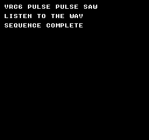
Build command
New-Item -ItemType Directory -Force .\out | Out-Null
.\kitaqfc\kitaqfc.exe .\kitaq-docs\samples\api-examples\fc\sound_vrc6.c -I .\kitaqfc\lib -I .\kitaq-docs\samples -o .\out\fc-vrc6.nes --mapper=vrc6 --nes-chr=.\kitaq-docs\samples\font.chr --no-cache --no-disasmImplementation and source
kitaqfc/lib/vrc6_sound.h:22
Disable pulse 1 by clearing its high timer/enable register.
kitaqfc/lib/vrc6_sound.c:43
void nes_vrc6_pulse1_off(void)
{
VRC6_P1_HI = 0x00;
}nes_vrc6_pulse1_set
Write VRC6 pulse 1 control and its 12-bit timer, then enable the voice.
Syntax
void nes_vrc6_pulse1_set(u8 control, u16 period);Parameters
controlVRC6 pulse control: bit 7 gate, bits 6..4 duty code, low nibble volume 0..15.
period12-bit timer 0..4095; upper bits are discarded. The sample uses pulse 253 and saw 289.
Return value
No return value. Changes sound registers or driver state.
Conditions and limits
Use --mapper=vrc6 (mapper 24) for this register wiring. A cartridge without VRC6 cannot produce these voices. Only the low 12 period bits are used; these helpers do not configure frequency-control register $9003.
Usage example
// Mapper 24: two pulse voices followed by the saw accumulator.
#include "fc_sound_example.h"
#include "vrc6_sound.c"
void main(void) {
// The background font occupies the first four 1 KiB CHR windows.
*((u8*)0xD000)=0; *((u8*)0xD001)=1;
*((u8*)0xD002)=2; *((u8*)0xD003)=3;
sound_begin("VRC6 PULSE PULSE SAW");
nes_vrc6_silence_all();
nes_vrc6_pulse1_set(0x7C,253);
sound_wait(45); nes_vrc6_pulse1_off(); sound_wait(15);
nes_vrc6_pulse2_set(0x3C,253);
sound_wait(45); nes_vrc6_pulse2_off(); sound_wait(15);
nes_vrc6_saw_set(32,289);
sound_wait(45); nes_vrc6_saw_off(); sound_wait(15);
nes_vrc6_silence_all();
sound_end();
}Expected result
Hear VRC6 pulse 1, pulse 2 with a different duty, and saw, each for 45 frames with 15-frame gaps. The three pitches are approximately 440 Hz; all three voices stop at the end.
Build command
New-Item -ItemType Directory -Force .\out | Out-Null
.\kitaqfc\kitaqfc.exe .\kitaq-docs\samples\api-examples\fc\sound_vrc6.c -I .\kitaqfc\lib -I .\kitaq-docs\samples -o .\out\fc-vrc6.nes --mapper=vrc6 --nes-chr=.\kitaq-docs\samples\font.chr --no-cache --no-disasmImplementation and source
kitaqfc/lib/vrc6_sound.h:18
Write pulse-1 control and the low 12 timer bits, then enable the channel.
kitaqfc/lib/vrc6_sound.c:27
void nes_vrc6_pulse1_set(u8 control, u16 period)
{
VRC6_P1_CTRL = control;
VRC6_P1_LO = (u8)period;
VRC6_P1_HI = (u8)(0x80 | ((period >> 8) & 0x0F));
}nes_vrc6_pulse2_off
Stop VRC6 pulse 2 by clearing its high-timer/enable register.
Syntax
void nes_vrc6_pulse2_off(void);Return value
No return value. Changes sound registers or driver state.
Conditions and limits
Use --mapper=vrc6 (mapper 24) for this register wiring. A cartridge without VRC6 cannot produce these voices. Only the low 12 period bits are used; these helpers do not configure frequency-control register $9003.
Usage example
// Mapper 24: two pulse voices followed by the saw accumulator.
#include "fc_sound_example.h"
#include "vrc6_sound.c"
void main(void) {
// The background font occupies the first four 1 KiB CHR windows.
*((u8*)0xD000)=0; *((u8*)0xD001)=1;
*((u8*)0xD002)=2; *((u8*)0xD003)=3;
sound_begin("VRC6 PULSE PULSE SAW");
nes_vrc6_silence_all();
nes_vrc6_pulse1_set(0x7C,253);
sound_wait(45); nes_vrc6_pulse1_off(); sound_wait(15);
nes_vrc6_pulse2_set(0x3C,253);
sound_wait(45); nes_vrc6_pulse2_off(); sound_wait(15);
nes_vrc6_saw_set(32,289);
sound_wait(45); nes_vrc6_saw_off(); sound_wait(15);
nes_vrc6_silence_all();
sound_end();
}Expected result
Hear VRC6 pulse 1, pulse 2 with a different duty, and saw, each for 45 frames with 15-frame gaps. The three pitches are approximately 440 Hz; all three voices stop at the end.
Build command
New-Item -ItemType Directory -Force .\out | Out-Null
.\kitaqfc\kitaqfc.exe .\kitaq-docs\samples\api-examples\fc\sound_vrc6.c -I .\kitaqfc\lib -I .\kitaq-docs\samples -o .\out\fc-vrc6.nes --mapper=vrc6 --nes-chr=.\kitaq-docs\samples\font.chr --no-cache --no-disasmImplementation and source
kitaqfc/lib/vrc6_sound.h:24
Disable pulse 2 by clearing its high timer/enable register.
kitaqfc/lib/vrc6_sound.c:49
void nes_vrc6_pulse2_off(void)
{
VRC6_P2_HI = 0x00;
}nes_vrc6_pulse2_set
Write VRC6 pulse 2 control and its 12-bit timer, then enable the voice.
Syntax
void nes_vrc6_pulse2_set(u8 control, u16 period);Parameters
controlVRC6 pulse control: bit 7 gate, bits 6..4 duty code, low nibble volume 0..15.
period12-bit timer 0..4095; upper bits are discarded. The sample uses pulse 253 and saw 289.
Return value
No return value. Changes sound registers or driver state.
Conditions and limits
Use --mapper=vrc6 (mapper 24) for this register wiring. A cartridge without VRC6 cannot produce these voices. Only the low 12 period bits are used; these helpers do not configure frequency-control register $9003.
Usage example
// Mapper 24: two pulse voices followed by the saw accumulator.
#include "fc_sound_example.h"
#include "vrc6_sound.c"
void main(void) {
// The background font occupies the first four 1 KiB CHR windows.
*((u8*)0xD000)=0; *((u8*)0xD001)=1;
*((u8*)0xD002)=2; *((u8*)0xD003)=3;
sound_begin("VRC6 PULSE PULSE SAW");
nes_vrc6_silence_all();
nes_vrc6_pulse1_set(0x7C,253);
sound_wait(45); nes_vrc6_pulse1_off(); sound_wait(15);
nes_vrc6_pulse2_set(0x3C,253);
sound_wait(45); nes_vrc6_pulse2_off(); sound_wait(15);
nes_vrc6_saw_set(32,289);
sound_wait(45); nes_vrc6_saw_off(); sound_wait(15);
nes_vrc6_silence_all();
sound_end();
}Expected result
Hear VRC6 pulse 1, pulse 2 with a different duty, and saw, each for 45 frames with 15-frame gaps. The three pitches are approximately 440 Hz; all three voices stop at the end.
Build command
New-Item -ItemType Directory -Force .\out | Out-Null
.\kitaqfc\kitaqfc.exe .\kitaq-docs\samples\api-examples\fc\sound_vrc6.c -I .\kitaqfc\lib -I .\kitaq-docs\samples -o .\out\fc-vrc6.nes --mapper=vrc6 --nes-chr=.\kitaq-docs\samples\font.chr --no-cache --no-disasmImplementation and source
kitaqfc/lib/vrc6_sound.h:20
Write pulse-2 control and the low 12 timer bits, then enable the channel.
kitaqfc/lib/vrc6_sound.c:35
void nes_vrc6_pulse2_set(u8 control, u16 period)
{
VRC6_P2_CTRL = control;
VRC6_P2_LO = (u8)period;
VRC6_P2_HI = (u8)(0x80 | ((period >> 8) & 0x0F));
}nes_vrc6_saw_off
Stop the VRC6 saw by clearing its high-timer/enable register.
Syntax
void nes_vrc6_saw_off(void);Return value
No return value. Changes sound registers or driver state.
Conditions and limits
Use --mapper=vrc6 (mapper 24) for this register wiring. A cartridge without VRC6 cannot produce these voices. Only the low 12 period bits are used; these helpers do not configure frequency-control register $9003.
Usage example
// Mapper 24: two pulse voices followed by the saw accumulator.
#include "fc_sound_example.h"
#include "vrc6_sound.c"
void main(void) {
// The background font occupies the first four 1 KiB CHR windows.
*((u8*)0xD000)=0; *((u8*)0xD001)=1;
*((u8*)0xD002)=2; *((u8*)0xD003)=3;
sound_begin("VRC6 PULSE PULSE SAW");
nes_vrc6_silence_all();
nes_vrc6_pulse1_set(0x7C,253);
sound_wait(45); nes_vrc6_pulse1_off(); sound_wait(15);
nes_vrc6_pulse2_set(0x3C,253);
sound_wait(45); nes_vrc6_pulse2_off(); sound_wait(15);
nes_vrc6_saw_set(32,289);
sound_wait(45); nes_vrc6_saw_off(); sound_wait(15);
nes_vrc6_silence_all();
sound_end();
}Expected result
Hear VRC6 pulse 1, pulse 2 with a different duty, and saw, each for 45 frames with 15-frame gaps. The three pitches are approximately 440 Hz; all three voices stop at the end.
Build command
New-Item -ItemType Directory -Force .\out | Out-Null
.\kitaqfc\kitaqfc.exe .\kitaq-docs\samples\api-examples\fc\sound_vrc6.c -I .\kitaqfc\lib -I .\kitaq-docs\samples -o .\out\fc-vrc6.nes --mapper=vrc6 --nes-chr=.\kitaq-docs\samples\font.chr --no-cache --no-disasmImplementation and source
kitaqfc/lib/vrc6_sound.h:28
Disable the saw channel by clearing its high timer/enable register.
kitaqfc/lib/vrc6_sound.c:63
void nes_vrc6_saw_off(void)
{
VRC6_SAW_HI = 0x00;
}nes_vrc6_saw_set
Write the VRC6 saw’s 6-bit accumulator rate and 12-bit timer, then enable it.
Syntax
void nes_vrc6_saw_set(u8 rate, u16 period);Parameters
rateSaw accumulator increment 0..63; only the low six bits are used.
period12-bit timer 0..4095; upper bits are discarded. The sample uses pulse 253 and saw 289.
Return value
No return value. Changes sound registers or driver state.
Conditions and limits
Use --mapper=vrc6 (mapper 24) for this register wiring. A cartridge without VRC6 cannot produce these voices. Only the low 12 period bits are used; these helpers do not configure frequency-control register $9003.
Usage example
// Mapper 24: two pulse voices followed by the saw accumulator.
#include "fc_sound_example.h"
#include "vrc6_sound.c"
void main(void) {
// The background font occupies the first four 1 KiB CHR windows.
*((u8*)0xD000)=0; *((u8*)0xD001)=1;
*((u8*)0xD002)=2; *((u8*)0xD003)=3;
sound_begin("VRC6 PULSE PULSE SAW");
nes_vrc6_silence_all();
nes_vrc6_pulse1_set(0x7C,253);
sound_wait(45); nes_vrc6_pulse1_off(); sound_wait(15);
nes_vrc6_pulse2_set(0x3C,253);
sound_wait(45); nes_vrc6_pulse2_off(); sound_wait(15);
nes_vrc6_saw_set(32,289);
sound_wait(45); nes_vrc6_saw_off(); sound_wait(15);
nes_vrc6_silence_all();
sound_end();
}Expected result
Hear VRC6 pulse 1, pulse 2 with a different duty, and saw, each for 45 frames with 15-frame gaps. The three pitches are approximately 440 Hz; all three voices stop at the end.
Build command
New-Item -ItemType Directory -Force .\out | Out-Null
.\kitaqfc\kitaqfc.exe .\kitaq-docs\samples\api-examples\fc\sound_vrc6.c -I .\kitaqfc\lib -I .\kitaq-docs\samples -o .\out\fc-vrc6.nes --mapper=vrc6 --nes-chr=.\kitaq-docs\samples\font.chr --no-cache --no-disasmImplementation and source
kitaqfc/lib/vrc6_sound.h:26
Mask the saw accumulation rate to six bits, load a 12-bit timer and enable output.
kitaqfc/lib/vrc6_sound.c:55
void nes_vrc6_saw_set(u8 rate, u16 period)
{
VRC6_SAW_RATE = (u8)(rate & 0x3F);
VRC6_SAW_LO = (u8)period;
VRC6_SAW_HI = (u8)(0x80 | ((period >> 8) & 0x0F));
}nes_vrc6_silence_all
Disable all three VRC6 voices and clear pulse controls and saw rate.
Syntax
void nes_vrc6_silence_all(void);Return value
No return value. Changes sound registers or driver state.
Conditions and limits
Use --mapper=vrc6 (mapper 24) for this register wiring. A cartridge without VRC6 cannot produce these voices. Only the low 12 period bits are used; these helpers do not configure frequency-control register $9003.
Usage example
// Mapper 24: two pulse voices followed by the saw accumulator.
#include "fc_sound_example.h"
#include "vrc6_sound.c"
void main(void) {
// The background font occupies the first four 1 KiB CHR windows.
*((u8*)0xD000)=0; *((u8*)0xD001)=1;
*((u8*)0xD002)=2; *((u8*)0xD003)=3;
sound_begin("VRC6 PULSE PULSE SAW");
nes_vrc6_silence_all();
nes_vrc6_pulse1_set(0x7C,253);
sound_wait(45); nes_vrc6_pulse1_off(); sound_wait(15);
nes_vrc6_pulse2_set(0x3C,253);
sound_wait(45); nes_vrc6_pulse2_off(); sound_wait(15);
nes_vrc6_saw_set(32,289);
sound_wait(45); nes_vrc6_saw_off(); sound_wait(15);
nes_vrc6_silence_all();
sound_end();
}Expected result
Hear VRC6 pulse 1, pulse 2 with a different duty, and saw, each for 45 frames with 15-frame gaps. The three pitches are approximately 440 Hz; all three voices stop at the end.
Build command
New-Item -ItemType Directory -Force .\out | Out-Null
.\kitaqfc\kitaqfc.exe .\kitaq-docs\samples\api-examples\fc\sound_vrc6.c -I .\kitaqfc\lib -I .\kitaq-docs\samples -o .\out\fc-vrc6.nes --mapper=vrc6 --nes-chr=.\kitaq-docs\samples\font.chr --no-cache --no-disasmImplementation and source
kitaqfc/lib/vrc6_sound.h:16
Clear channel-enable/high-timer registers and output controls for all VRC6 voices. Requires the VRC6 register layout used by this module. No mapper setup or global frequency-control write is included.
kitaqfc/lib/vrc6_sound.c:16
void nes_vrc6_silence_all(void)
{
VRC6_P1_HI = 0x00;
VRC6_P2_HI = 0x00;
VRC6_SAW_HI = 0x00;
VRC6_P1_CTRL = 0x00;
VRC6_P2_CTRL = 0x00;
VRC6_SAW_RATE = 0x00;
}vrc7_sound.h — VRC7 FM audio
For --mapper=vrc7 (mapper 85). Serialize register-select/data pairs against interrupt writers. The helpers insert no device settling delay. Recordings capture KUROSAKI’s FM model; they do not verify hardware timbre or write timing.
nes_vrc7_channel_set
Configure one FM voice’s frequency, block, key flags, instrument and attenuation.
Syntax
void nes_vrc7_channel_set(u8 channel, u8 instrument, u8 volume, u16 fnum, u8 block, u8 key_flags);Parameters
channelVRC7 channel 0..5; larger values do nothing.
instrumentInstrument 0..15: 0=user patch, 1..15=presets. Only the low nibble is used.
volumeVRC7 attenuation 0..15: 0 is loudest, 15 greatest attenuation. Only the low nibble is used.
fnumFrequency number 0..511; combined with block to determine pitch. Only nine bits are used.
blockOctave block 0..7; only the low three bits are used.
key_flags0x10 key-on, 0x20 sustain flag; other bits are discarded.
Return value
No return value. Changes sound registers or driver state.
Conditions and limits
For --mapper=vrc7 (mapper 85). Serialize register-select/data pairs against interrupt writers. The helpers insert no device settling delay. Recordings capture KUROSAKI’s FM model; they do not verify hardware timbre or write timing.
Instrument 0 is shared by all voices. channel_set writes key/frequency-high before instrument/attenuation. After key_off, the next note must restore frequency-high and block too.
Usage example
// Mapper 85: an FM preset followed by a simple original user instrument.
#include "fc_sound_example.h"
#include "vrc7_sound.c"
__prg_rom u8 patch[8]={0x21,0x21,0x3F,0x00,0xF0,0xF0,0x0F,0x0F};
void main(void) {
// Map the supplied 8 KiB font as eight consecutive 1 KiB CHR windows.
*((u8*)0xA000)=0; *((u8*)0xA010)=1;
*((u8*)0xB000)=2; *((u8*)0xB010)=3;
*((u8*)0xC000)=4; *((u8*)0xC010)=5;
*((u8*)0xD000)=6; *((u8*)0xD010)=7;
sound_begin("VRC7 PRESET AND PATCH");
nes_vrc7_silence_all();
nes_vrc7_channel_set(0,1,3,290,4,VRC7_KEY_ON);
sound_wait(60); nes_vrc7_key_off(0); sound_wait(30);
nes_vrc7_set_user_patch(patch);
nes_vrc7_channel_set(0,0,3,290,4,VRC7_KEY_ON);
sound_wait(60);
// Raw register 30 selects instrument zero and maximum attenuation.
nes_vrc7_write(0x30,0x0F);
nes_vrc7_key_off(0);
nes_vrc7_silence_all(); sound_wait(30);
sound_end();
}Expected result
Compare preset instrument 1 with an original sustained user instrument 0, each for 60 frames at the same pitch. The sequence ends with key-off and maximum attenuation.
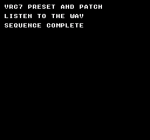
Build command
New-Item -ItemType Directory -Force .\out | Out-Null
.\kitaqfc\kitaqfc.exe .\kitaq-docs\samples\api-examples\fc\sound_vrc7.c -I .\kitaqfc\lib -I .\kitaq-docs\samples -o .\out\fc-vrc7.nes --mapper=vrc7 --nes-chr=.\kitaq-docs\samples\font.chr --no-cache --no-disasmImplementation and source
kitaqfc/lib/vrc7_sound.h:18
Validate channel 0..5, then pack a 9-bit frequency, 3-bit block, key flags, instrument and volume nibbles into its registers. Volume is the raw hardware attenuation field, not a linear loudness value.
kitaqfc/lib/vrc7_sound.c:32
void nes_vrc7_channel_set(u8 channel, u8 instrument, u8 volume, u16 fnum, u8 block, u8 key_flags)
{
u8 reg;
u8 hi;
if (channel >= 6) return;
reg = channel;
hi = (u8)(((fnum >> 8) & 0x01) | ((block & 0x07) << 1) | (key_flags & 0x30));
nes_vrc7_write((u8)(0x10 + reg), (u8)fnum);
// Key/frequency-high is written before instrument/attenuation; this sequence is not an atomic note update.
nes_vrc7_write((u8)(0x20 + reg), hi);
nes_vrc7_write((u8)(0x30 + reg), (u8)(((instrument & 0x0F) << 4) | (volume & 0x0F)));
}nes_vrc7_key_off
Clear the selected voice’s entire frequency-high/block/key register.
Syntax
void nes_vrc7_key_off(u8 channel);Parameters
channelVRC7 channel 0..5; larger values do nothing.
Return value
No return value. Changes sound registers or driver state.
Conditions and limits
For --mapper=vrc7 (mapper 85). Serialize register-select/data pairs against interrupt writers. The helpers insert no device settling delay. Recordings capture KUROSAKI’s FM model; they do not verify hardware timbre or write timing.
Instrument 0 is shared by all voices. channel_set writes key/frequency-high before instrument/attenuation. After key_off, the next note must restore frequency-high and block too.
Usage example
// Mapper 85: an FM preset followed by a simple original user instrument.
#include "fc_sound_example.h"
#include "vrc7_sound.c"
__prg_rom u8 patch[8]={0x21,0x21,0x3F,0x00,0xF0,0xF0,0x0F,0x0F};
void main(void) {
// Map the supplied 8 KiB font as eight consecutive 1 KiB CHR windows.
*((u8*)0xA000)=0; *((u8*)0xA010)=1;
*((u8*)0xB000)=2; *((u8*)0xB010)=3;
*((u8*)0xC000)=4; *((u8*)0xC010)=5;
*((u8*)0xD000)=6; *((u8*)0xD010)=7;
sound_begin("VRC7 PRESET AND PATCH");
nes_vrc7_silence_all();
nes_vrc7_channel_set(0,1,3,290,4,VRC7_KEY_ON);
sound_wait(60); nes_vrc7_key_off(0); sound_wait(30);
nes_vrc7_set_user_patch(patch);
nes_vrc7_channel_set(0,0,3,290,4,VRC7_KEY_ON);
sound_wait(60);
// Raw register 30 selects instrument zero and maximum attenuation.
nes_vrc7_write(0x30,0x0F);
nes_vrc7_key_off(0);
nes_vrc7_silence_all(); sound_wait(30);
sound_end();
}Expected result
Compare preset instrument 1 with an original sustained user instrument 0, each for 60 frames at the same pitch. The sequence ends with key-off and maximum attenuation.
Build command
New-Item -ItemType Directory -Force .\out | Out-Null
.\kitaqfc\kitaqfc.exe .\kitaq-docs\samples\api-examples\fc\sound_vrc7.c -I .\kitaqfc\lib -I .\kitaq-docs\samples -o .\out\fc-vrc7.nes --mapper=vrc7 --nes-chr=.\kitaq-docs\samples\font.chr --no-cache --no-disasmImplementation and source
kitaqfc/lib/vrc7_sound.h:21
Clear the channel's entire frequency-high/block/key register, not just the key-on bit. A later note must restore frequency and block settings.
kitaqfc/lib/vrc7_sound.c:47
void nes_vrc7_key_off(u8 channel)
{
if (channel >= 6) return;
nes_vrc7_write((u8)(0x20 + channel), 0x00);
}nes_vrc7_set_user_patch
Write eight bytes in order to VRC7’s user-instrument registers.
Syntax
void nes_vrc7_set_user_patch(const u8* patch8);Parameters
patch8Eight bytes defining instrument 0. NULL is not checked. Keep the source bank mapped during the call.
Return value
No return value. Changes sound registers or driver state.
Conditions and limits
For --mapper=vrc7 (mapper 85). Serialize register-select/data pairs against interrupt writers. The helpers insert no device settling delay. Recordings capture KUROSAKI’s FM model; they do not verify hardware timbre or write timing.
Instrument 0 is shared by all voices. channel_set writes key/frequency-high before instrument/attenuation. After key_off, the next note must restore frequency-high and block too.
Usage example
// Mapper 85: an FM preset followed by a simple original user instrument.
#include "fc_sound_example.h"
#include "vrc7_sound.c"
__prg_rom u8 patch[8]={0x21,0x21,0x3F,0x00,0xF0,0xF0,0x0F,0x0F};
void main(void) {
// Map the supplied 8 KiB font as eight consecutive 1 KiB CHR windows.
*((u8*)0xA000)=0; *((u8*)0xA010)=1;
*((u8*)0xB000)=2; *((u8*)0xB010)=3;
*((u8*)0xC000)=4; *((u8*)0xC010)=5;
*((u8*)0xD000)=6; *((u8*)0xD010)=7;
sound_begin("VRC7 PRESET AND PATCH");
nes_vrc7_silence_all();
nes_vrc7_channel_set(0,1,3,290,4,VRC7_KEY_ON);
sound_wait(60); nes_vrc7_key_off(0); sound_wait(30);
nes_vrc7_set_user_patch(patch);
nes_vrc7_channel_set(0,0,3,290,4,VRC7_KEY_ON);
sound_wait(60);
// Raw register 30 selects instrument zero and maximum attenuation.
nes_vrc7_write(0x30,0x0F);
nes_vrc7_key_off(0);
nes_vrc7_silence_all(); sound_wait(30);
sound_end();
}Expected result
Compare preset instrument 1 with an original sustained user instrument 0, each for 60 frames at the same pitch. The sequence ends with key-off and maximum attenuation.
Build command
New-Item -ItemType Directory -Force .\out | Out-Null
.\kitaqfc\kitaqfc.exe .\kitaq-docs\samples\api-examples\fc\sound_vrc7.c -I .\kitaqfc\lib -I .\kitaq-docs\samples -o .\out\fc-vrc7.nes --mapper=vrc7 --nes-chr=.\kitaq-docs\samples\font.chr --no-cache --no-disasmImplementation and source
kitaqfc/lib/vrc7_sound.h:14
Copy eight caller-supplied patch bytes into user-instrument registers 0..7.
kitaqfc/lib/vrc7_sound.c:16
void nes_vrc7_set_user_patch(const u8* patch8)
{
const u8* p;
u8 i;
p = patch8;
i = 0;
while (i < 8) {
nes_vrc7_write(i, *p);
p = p + 1;
i = (u8)(i + 1);
}
}nes_vrc7_silence_all
Key off all six voices and select instrument 0 with maximum attenuation.
Syntax
void nes_vrc7_silence_all(void);Return value
No return value. Changes sound registers or driver state.
Conditions and limits
For --mapper=vrc7 (mapper 85). Serialize register-select/data pairs against interrupt writers. The helpers insert no device settling delay. Recordings capture KUROSAKI’s FM model; they do not verify hardware timbre or write timing.
Instrument 0 is shared by all voices. channel_set writes key/frequency-high before instrument/attenuation. After key_off, the next note must restore frequency-high and block too.
Usage example
// Mapper 85: an FM preset followed by a simple original user instrument.
#include "fc_sound_example.h"
#include "vrc7_sound.c"
__prg_rom u8 patch[8]={0x21,0x21,0x3F,0x00,0xF0,0xF0,0x0F,0x0F};
void main(void) {
// Map the supplied 8 KiB font as eight consecutive 1 KiB CHR windows.
*((u8*)0xA000)=0; *((u8*)0xA010)=1;
*((u8*)0xB000)=2; *((u8*)0xB010)=3;
*((u8*)0xC000)=4; *((u8*)0xC010)=5;
*((u8*)0xD000)=6; *((u8*)0xD010)=7;
sound_begin("VRC7 PRESET AND PATCH");
nes_vrc7_silence_all();
nes_vrc7_channel_set(0,1,3,290,4,VRC7_KEY_ON);
sound_wait(60); nes_vrc7_key_off(0); sound_wait(30);
nes_vrc7_set_user_patch(patch);
nes_vrc7_channel_set(0,0,3,290,4,VRC7_KEY_ON);
sound_wait(60);
// Raw register 30 selects instrument zero and maximum attenuation.
nes_vrc7_write(0x30,0x0F);
nes_vrc7_key_off(0);
nes_vrc7_silence_all(); sound_wait(30);
sound_end();
}Expected result
Compare preset instrument 1 with an original sustained user instrument 0, each for 60 frames at the same pitch. The sequence ends with key-off and maximum attenuation.
Build command
New-Item -ItemType Directory -Force .\out | Out-Null
.\kitaqfc\kitaqfc.exe .\kitaq-docs\samples\api-examples\fc\sound_vrc7.c -I .\kitaqfc\lib -I .\kitaq-docs\samples -o .\out\fc-vrc7.nes --mapper=vrc7 --nes-chr=.\kitaq-docs\samples\font.chr --no-cache --no-disasmImplementation and source
kitaqfc/lib/vrc7_sound.h:23
Key off all six voices and set instrument zero with maximum attenuation.
kitaqfc/lib/vrc7_sound.c:54
void nes_vrc7_silence_all(void)
{
u8 i;
i = 0;
while (i < 6) {
nes_vrc7_key_off(i);
nes_vrc7_write((u8)(0x30 + i), 0x0F);
i = (u8)(i + 1);
}
}nes_vrc7_write
Write a register number to VRC7’s select port, then its value to the data port.
Syntax
void nes_vrc7_write(u8 reg, u8 value);Parameters
regVRC7 register number. For channel 0: 0x10 frequency low, 0x20 high/block/key, 0x30 instrument/attenuation.
valueByte to write to the selected VRC7 register.
Return value
No return value. Changes sound registers or driver state.
Conditions and limits
For --mapper=vrc7 (mapper 85). Serialize register-select/data pairs against interrupt writers. The helpers insert no device settling delay. Recordings capture KUROSAKI’s FM model; they do not verify hardware timbre or write timing.
Instrument 0 is shared by all voices. channel_set writes key/frequency-high before instrument/attenuation. After key_off, the next note must restore frequency-high and block too.
Usage example
// Mapper 85: an FM preset followed by a simple original user instrument.
#include "fc_sound_example.h"
#include "vrc7_sound.c"
__prg_rom u8 patch[8]={0x21,0x21,0x3F,0x00,0xF0,0xF0,0x0F,0x0F};
void main(void) {
// Map the supplied 8 KiB font as eight consecutive 1 KiB CHR windows.
*((u8*)0xA000)=0; *((u8*)0xA010)=1;
*((u8*)0xB000)=2; *((u8*)0xB010)=3;
*((u8*)0xC000)=4; *((u8*)0xC010)=5;
*((u8*)0xD000)=6; *((u8*)0xD010)=7;
sound_begin("VRC7 PRESET AND PATCH");
nes_vrc7_silence_all();
nes_vrc7_channel_set(0,1,3,290,4,VRC7_KEY_ON);
sound_wait(60); nes_vrc7_key_off(0); sound_wait(30);
nes_vrc7_set_user_patch(patch);
nes_vrc7_channel_set(0,0,3,290,4,VRC7_KEY_ON);
sound_wait(60);
// Raw register 30 selects instrument zero and maximum attenuation.
nes_vrc7_write(0x30,0x0F);
nes_vrc7_key_off(0);
nes_vrc7_silence_all(); sound_wait(30);
sound_end();
}Expected result
Compare preset instrument 1 with an original sustained user instrument 0, each for 60 frames at the same pitch. The sequence ends with key-off and maximum attenuation.
Build command
New-Item -ItemType Directory -Force .\out | Out-Null
.\kitaqfc\kitaqfc.exe .\kitaq-docs\samples\api-examples\fc\sound_vrc7.c -I .\kitaqfc\lib -I .\kitaq-docs\samples -o .\out\fc-vrc7.nes --mapper=vrc7 --nes-chr=.\kitaq-docs\samples\font.chr --no-cache --no-disasmImplementation and source
kitaqfc/lib/vrc7_sound.h:12
Write register selection followed immediately by data. No explicit device settling delay or cartridge detection is inserted by this wrapper. The caller must arrange device timing and serialize register/data pairs against interrupt writers.
kitaqfc/lib/vrc7_sound.c:8
void nes_vrc7_write(u8 reg, u8 value)
{
VRC7_ADDR = reg;
VRC7_DATA = value;
}Structures, constants and complete headers
audio_vblank.h — Four-channel music driven by NMI
#ifndef NES_AUDIO_VBLANK_H
#define NES_AUDIO_VBLANK_H
#include "core.h"
// Original MIT-licensed NMI sequencer. Channel order follows the physical APU:
// CH1 pulse 1, CH2 pulse 2, CH3 triangle, CH4 noise (indices 0, 1, 2, 3).
// Every record is five bytes: delay, CH1, CH2, CH3, CH4.
// Delay 1..255 holds the new state for that many NMI ticks. Delay 0 ends playback.
// Tonal notes 0..71 are C2..B7, tuned for NTSC. Noise 0..15 selects a long-mode
// period; 16..31 selects short mode. HOLD preserves a channel; STOP silences it.
#define NES_AUDIO_NOISE_ENVELOPE 128
#define NES_AUDIO_HOLD 255
#define NES_AUDIO_STOP 254
#define NES_AUDIO_RECORD_BYTES 5
#define NES_AUDIO_QUEUE_CAPACITY 7
// Reset the queue, feeder and diagnostic counters; silence and initialize the
// APU. Owns the four basic channels and disables DMC and APU frame IRQs.
void nes_audio_vblank_init(void);
// Copy one complete validated record to RAM and publish it atomically last.
// Return 1 on success, 0 for null/invalid/full. Call from one foreground producer.
u8 nes_audio_vblank_enqueue(const u8* record);
// Return queued records (0..7), excluding the record whose delay is in progress.
u8 nes_audio_vblank_queued(void);
// Return available record slots (0..7), not bytes.
u8 nes_audio_vblank_free(void);
// Enable consumption at the next NMI. Does not enable PPU NMI itself.
void nes_audio_vblank_start(void);
// Disable consumption, silence, discard queued records and clear the feeder.
void nes_audio_vblank_stop(void);
// Stop and attach a readable five-byte-record stream; return 0 for null, zero
// count or a count above 13107. Nonzero loop repeats the stream. Does not start.
u8 nes_audio_vblank_set_music(const u8* records,u16 count,u8 loop);
// Copy at most seven records from the attached stream. Return copies accepted.
// A one-shot feeder appends a delay-zero terminator after the last timed record.
// Keep the stream's ROM bank mapped during this foreground call only.
u8 nes_audio_vblank_refill(void);
// Set the stream, prefill the queue and start. Return 0 for invalid setup/data.
u8 nes_audio_vblank_play_music(const u8* records,u16 count,u8 loop);
// Return 1 while the BGM consumer is enabled, including a recoverable queue underrun.
u8 nes_audio_vblank_is_playing(void);
// Saturating count of starvation episodes, cleared by init; END is not starvation.
u8 nes_audio_vblank_underruns(void);
// Configure the next note: pulse bits 7..6 select duty and 3..0 select volume;
// noise uses volume 3..0, or NES_AUDIO_NOISE_ENVELOPE | decay_period (0..15)
// for a one-shot hardware envelope (larger periods decay more slowly). The
// next noise note starts at volume 15; its length permits a full decay.
// Triangle uses zero for silent, nonzero for full level.
// Return 0 for channel >=4. Hardware has no triangle volume control.
u8 nes_audio_vblank_set_timbre(u8 channel,u8 control);
// Any nonzero argument freezes both timelines and mutes immediately. Zero
// resumes from the stored delays and restores held notes on the next NMI.
// BGM is_playing remains enabled during pause. Refill may still fill the queue.
void nes_audio_vblank_pause(u8 on);
// Copy 1..7 timed records. Bits 0..3 select channels temporarily owned by SFX.
// BGM continues underneath and its current notes return when the effect ends.
// Return 1 after copying; 0 for null, invalid count/data or an empty low mask.
// Ignore mask bits 4..7. All fields are validated, even unselected channels.
// Delay zero is not accepted for SFX. Invalid input preserves the current SFX.
// Replacement restarts the effect; the first HOLD starts from a stopped note.
// The source need only stay mapped/readable until this foreground call returns.
u8 nes_audio_vblank_play_sfx(const u8* records,u8 count,u8 mask);
// Release effect ownership at the next NMI, restoring current BGM notes.
// This does not stop or restart the BGM and does not write the APU immediately.
void nes_audio_vblank_stop_sfx(void);
// NMI hook: invoke exactly once per NMI. With a custom handler or a compiler
// without automatic audio-hook linking, call it there. Never call from main
// or call it again if the compiler already inserts the hook.
// Saves A/X/Y, uses no compiler scratch bytes and reads only RAM/fixed ROM.
void __nes_audio_vblank_tick(void);
#endifkitaqfc/lib/audio_vblank.h
zx0.h
#pragma once
#include "core.h"
// Copyright (c) 2026 DAISUKE OBA. MIT License.
// ZX0-compatible forward v2 streams; format designed by Einar Saukas.
#define ZX0_OK 0
#define ZX0_BAD_ARGUMENT 1
#define ZX0_TRUNCATED 2
#define ZX0_BAD_STREAM 3
#define ZX0_OUTPUT_FULL 4
#define ZX0_DISPLAY_ACTIVE 5
// Shared last-call status. These foreground routines are not reentrant.
extern u8 zx0_error;
// Return decoded bytes, or zero on error (possibly after partial writes).
// Source and output must not overlap or cross their current CPU bank windows.
// Capacity and packed_size are byte counts. No prefix/backward/v1 streams.
u16 zx0_decompress(void* dst, u16 capacity, const void* src, u16 packed_size);
// Decode a KQA1 raw/RLE/ZX0 asset produced with --format=auto.
// Empty raw assets return zero with zx0_error==ZX0_OK.
u16 asset_decompress(void* dst, u16 capacity, const void* src, u16 packed_size);
// Decode into caller-owned RAM, then transfer to CHR RAM or nametable memory.
// Rendering must be off. Preserve PPUCTRL; set scroll before enabling rendering.
// The workspace must hold the whole output. No palette upload or CHR ROM writes.
u16 zx0_decompress_vram(u16 ppu_addr,void* workspace,u16 capacity,const void* src,u16 packed_size);kitaqfc/lib/zx0.h
physics3d.h
#pragma once
#include "core.h"
// Lightweight deterministic 3D physics for KITAQFC.
// AABB contacts, acceleration, mass-weighted bounce, and impact state flags.
// The game owns break decisions: the solver records impact speeds but never
// sets this flag or deactivates a body based on break_speed. Positions, extents,
// velocities and acceleration use consistent caller-selected per-step units.
#define KQ3D_BODY_BROKEN ((u8)0x01)
typedef struct {
s16 x;
s16 y;
s16 z;
s16 vx;
s16 vy;
s16 vz;
s16 ax;
s16 ay;
s16 az;
s16 half_x;
s16 half_y;
s16 half_z;
s16 mass_q8; // 256 means mass 1.0.
s16 inv_mass_q8; // 0 means static body.
s16 restitution_q8; // 256 means perfectly elastic.
s16 break_speed; // Reserved for game-side impact thresholds.
s16 last_impact_speed;
u8 active;
u8 flags;
} KQBody3D;
typedef struct {
KQBody3D* bodies;
u8 body_count;
s16 gravity_x;
s16 gravity_y;
s16 gravity_z;
u8 solver_iterations;
s16 max_speed;
} KQWorld3D;
// Borrow the body array without initializing it. Set gravity (0,24,0), four
// contact passes and a per-axis speed limit of 512. Null world is ignored;
// the caller retains ownership and must keep the array alive.
void kq3d_world_init(KQWorld3D* world, KQBody3D* bodies, u8 body_count);
// Initialize an active centered box with zero velocity/acceleration,
// restitution 224, cleared impact/flags and mass set through the weight helper.
// The caller supplies valid half extents. Null body is ignored.
void kq3d_body_init(KQBody3D* body, s16 x, s16 y, s16 z, s16 half_x, s16 half_y, s16 half_z, s16 mass_q8);
// Store the requested mass; nonpositive mass makes the body static.
// For positive mass compute inverse weight as max(1,32767/max(mass,64)).
// The stored mass retains the original input; this is a relative solver weight,
// not an exact Q8 reciprocal. Null body is ignored.
void kq3d_body_set_mass(KQBody3D* body, s16 mass_q8);
// Integrate active dynamic bodies and reset their impact values, then solve
// each active unordered pair for the configured passes (zero means one).
// Static bodies retain previous impact maxima until the game clears them.
// Acceleration persists; flags and break thresholds remain game-owned.
// This discrete solver uses non-reentrant helper scratch and can miss fast crossings.
void kq3d_step(KQWorld3D* world);
// Reset impact for one active dynamic body, add gravity and persistent body
// acceleration, clamp velocity per axis and advance position. Static/inactive
// bodies retain impact state. Null inputs are ignored; no contacts are solved.
// Use a nonnegative speed limit and avoid overflow before clamping.
void kq3d_integrate_body(KQWorld3D* world, KQBody3D* body);
// Test strict overlap on all three axes; face-only contact returns false.
// Valid pointers are required and flags are ignored. Center differences and
// extent sums must fit the signed 16-bit magnitude calculations.
u8 kq3d_overlap_aabb(const KQBody3D* a, const KQBody3D* b);
// Sum three signed products, dividing each by 256 (toward zero) before addition.
// Coefficients are signed bytes scaled by 1/256; the 16-bit sum is not saturated.
s16 kq3d_dot_q8_8(s16 x, s16 y, s16 z, s8 ax, s8 ay, s8 az);kitaqfc/lib/physics3d.h
wire3d_tables.h
// Copyright (c) 2026 DAISUKE OBA. SPDX-License-Identifier: MIT
// Generated from round(64*sin(2*pi*i/32)) and round(64*width/z).
// Depths below 32 are rejected. Saturating 256 to 255 at the largest
// viewport/nearest depth bounds the projection error without a ninth bit.
__prg_rom const s8 w3dfc_sin[32]={
0,12,24,36,45,53,59,63,64,63,59,53,45,36,24,12,
0,-12,-24,-36,-45,-53,-59,-63,-64,-63,-59,-53,-45,-36,-24,-12,
};
#if WIRE3D_FC_WIDTH == 64
__prg_rom const u8 w3dfc_recip[256]={
0,0,0,0,0,0,0,0,0,0,0,0,0,0,0,0,
0,0,0,0,0,0,0,0,0,0,0,0,0,0,0,0,
128,124,120,117,114,111,108,105,102,100,98,95,93,91,89,87,
85,84,82,80,79,77,76,74,73,72,71,69,68,67,66,65,
64,63,62,61,60,59,59,58,57,56,55,55,54,53,53,52,
51,51,50,49,49,48,48,47,47,46,46,45,45,44,44,43,
43,42,42,41,41,41,40,40,39,39,39,38,38,38,37,37,
37,36,36,36,35,35,35,34,34,34,34,33,33,33,33,32,
32,32,32,31,31,31,31,30,30,30,30,29,29,29,29,29,
28,28,28,28,28,27,27,27,27,27,27,26,26,26,26,26,
26,25,25,25,25,25,25,25,24,24,24,24,24,24,24,23,
23,23,23,23,23,23,23,22,22,22,22,22,22,22,22,21,
21,21,21,21,21,21,21,21,20,20,20,20,20,20,20,20,
20,20,20,19,19,19,19,19,19,19,19,19,19,19,18,18,
18,18,18,18,18,18,18,18,18,18,18,17,17,17,17,17,
17,17,17,17,17,17,17,17,17,16,16,16,16,16,16,16,
};
__prg_rom const u8 w3dfc_row_lo[48]={
0,1,2,3,4,5,6,7,64,65,66,67,68,69,70,71,
128,129,130,131,132,133,134,135,192,193,194,195,196,197,198,199,
0,1,2,3,4,5,6,7,64,65,66,67,68,69,70,71,
};
__prg_rom const u8 w3dfc_row_hi[48]={
104,104,104,104,104,104,104,104,104,104,104,104,104,104,104,104,
104,104,104,104,104,104,104,104,104,104,104,104,104,104,104,104,
105,105,105,105,105,105,105,105,105,105,105,105,105,105,105,105,
};
__prg_rom const u8 w3dfc_tile_row[48]={
0,0,0,0,0,0,0,0,8,8,8,8,8,8,8,8,
16,16,16,16,16,16,16,16,24,24,24,24,24,24,24,24,
32,32,32,32,32,32,32,32,40,40,40,40,40,40,40,40,
};
#elif WIRE3D_FC_WIDTH == 96
__prg_rom const u8 w3dfc_recip[256]={
0,0,0,0,0,0,0,0,0,0,0,0,0,0,0,0,
0,0,0,0,0,0,0,0,0,0,0,0,0,0,0,0,
192,186,181,176,171,166,162,158,154,150,146,143,140,137,134,131,
128,125,123,120,118,116,114,112,110,108,106,104,102,101,99,98,
96,95,93,92,90,89,88,87,85,84,83,82,81,80,79,78,
77,76,75,74,73,72,71,71,70,69,68,68,67,66,65,65,
64,63,63,62,61,61,60,60,59,59,58,57,57,56,56,55,
55,54,54,53,53,53,52,52,51,51,50,50,50,49,49,48,
48,48,47,47,47,46,46,46,45,45,45,44,44,44,43,43,
43,42,42,42,42,41,41,41,40,40,40,40,39,39,39,39,
38,38,38,38,37,37,37,37,37,36,36,36,36,36,35,35,
35,35,35,34,34,34,34,34,33,33,33,33,33,33,32,32,
32,32,32,32,31,31,31,31,31,31,30,30,30,30,30,30,
30,29,29,29,29,29,29,29,28,28,28,28,28,28,28,28,
27,27,27,27,27,27,27,27,26,26,26,26,26,26,26,26,
26,25,25,25,25,25,25,25,25,25,25,24,24,24,24,24,
};
__prg_rom const u8 w3dfc_row_lo[64]={
0,1,2,3,4,5,6,7,96,97,98,99,100,101,102,103,
192,193,194,195,196,197,198,199,32,33,34,35,36,37,38,39,
128,129,130,131,132,133,134,135,224,225,226,227,228,229,230,231,
64,65,66,67,68,69,70,71,160,161,162,163,164,165,166,167,
};
__prg_rom const u8 w3dfc_row_hi[64]={
104,104,104,104,104,104,104,104,104,104,104,104,104,104,104,104,
104,104,104,104,104,104,104,104,105,105,105,105,105,105,105,105,
105,105,105,105,105,105,105,105,105,105,105,105,105,105,105,105,
106,106,106,106,106,106,106,106,106,106,106,106,106,106,106,106,
};
__prg_rom const u8 w3dfc_tile_row[64]={
0,0,0,0,0,0,0,0,12,12,12,12,12,12,12,12,
24,24,24,24,24,24,24,24,36,36,36,36,36,36,36,36,
48,48,48,48,48,48,48,48,60,60,60,60,60,60,60,60,
72,72,72,72,72,72,72,72,84,84,84,84,84,84,84,84,
};
#elif WIRE3D_FC_WIDTH == 128
__prg_rom const u8 w3dfc_recip[256]={
0,0,0,0,0,0,0,0,0,0,0,0,0,0,0,0,
0,0,0,0,0,0,0,0,0,0,0,0,0,0,0,0,
255,248,241,234,228,221,216,210,205,200,195,191,186,182,178,174,
171,167,164,161,158,155,152,149,146,144,141,139,137,134,132,130,
128,126,124,122,120,119,117,115,114,112,111,109,108,106,105,104,
102,101,100,99,98,96,95,94,93,92,91,90,89,88,87,86,
85,84,84,83,82,81,80,80,79,78,77,77,76,75,74,74,
73,72,72,71,71,70,69,69,68,68,67,67,66,66,65,65,
64,64,63,63,62,62,61,61,60,60,59,59,59,58,58,57,
57,56,56,56,55,55,55,54,54,54,53,53,53,52,52,52,
51,51,51,50,50,50,49,49,49,48,48,48,48,47,47,47,
47,46,46,46,46,45,45,45,45,44,44,44,44,43,43,43,
43,42,42,42,42,42,41,41,41,41,41,40,40,40,40,40,
39,39,39,39,39,38,38,38,38,38,38,37,37,37,37,37,
37,36,36,36,36,36,36,35,35,35,35,35,35,35,34,34,
34,34,34,34,34,33,33,33,33,33,33,33,33,32,32,32,
};
__prg_rom const u8 w3dfc_row_lo[96]={
0,1,2,3,4,5,6,7,128,129,130,131,132,133,134,135,
0,1,2,3,4,5,6,7,128,129,130,131,132,133,134,135,
0,1,2,3,4,5,6,7,128,129,130,131,132,133,134,135,
0,1,2,3,4,5,6,7,128,129,130,131,132,133,134,135,
0,1,2,3,4,5,6,7,128,129,130,131,132,133,134,135,
0,1,2,3,4,5,6,7,128,129,130,131,132,133,134,135,
};
__prg_rom const u8 w3dfc_row_hi[96]={
104,104,104,104,104,104,104,104,104,104,104,104,104,104,104,104,
105,105,105,105,105,105,105,105,105,105,105,105,105,105,105,105,
106,106,106,106,106,106,106,106,106,106,106,106,106,106,106,106,
107,107,107,107,107,107,107,107,107,107,107,107,107,107,107,107,
108,108,108,108,108,108,108,108,108,108,108,108,108,108,108,108,
109,109,109,109,109,109,109,109,109,109,109,109,109,109,109,109,
};
__prg_rom const u8 w3dfc_tile_row[96]={
0,0,0,0,0,0,0,0,16,16,16,16,16,16,16,16,
32,32,32,32,32,32,32,32,48,48,48,48,48,48,48,48,
64,64,64,64,64,64,64,64,80,80,80,80,80,80,80,80,
96,96,96,96,96,96,96,96,112,112,112,112,112,112,112,112,
128,128,128,128,128,128,128,128,144,144,144,144,144,144,144,144,
160,160,160,160,160,160,160,160,176,176,176,176,176,176,176,176,
};
#endifkitaqfc/lib/wire3d_tables.h
danmaku.h
// Copyright (c) 2026 DAISUKE OBA. SPDX-License-Identifier: MIT
#ifndef KITAQFC_DANMAKU_H
#define KITAQFC_DANMAKU_H
#include "core.h"
#include "intrinsics.h"
#define DANMAKU_MAX 64
// Reserve cartridge PRG RAM 0x6000..0x627F (640 bytes), enabled and writable.
// Bullet centers remain in [8,248) x [24,232). These margins prevent byte
// wraparound even at the largest signed Q4.4 velocity accepted by spawn.
extern u8 dm_x[64];
extern u8 dm_y[64];
extern u8 dm_active[64];
extern u8 dm_grazed[64];
extern u8 dm_count;
extern u8 dm_peak;
extern u8 dm_hit;
extern u8 dm_graze;
extern u8 dm_player_x;
extern u8 dm_player_y;
extern u8 dm_invulnerable;
extern u16 dm_spawned;
extern u16 dm_rejected;
// Reset the pool, counters and rotating OAM priority. Player settings survive.
void danmaku_reset(void);
// Remove all bullets and step events; preserve lifetime/peak counters.
void danmaku_clear(void);
// Allocate a bullet at pixel-center x/y with signed 1/16-pixel velocities.
// Return one on success, zero outside the playfield or when all 64 slots are full.
u8 danmaku_spawn(u8 x, u8 y, s8 vx, s8 vy);
// Emit up to 64 bullets. Angles wrap in 32 steps: 0 right, 8 down, 16 left,
// 24 up. Speed is in 1/16 pixel, clamped to 64. Each failed allocation counts.
void danmaku_fan(u8 x, u8 y, u8 direction, u8 step, u8 count, u8 speed);
// Move all live bullets once. Remove offscreen/hitting bullets. Hit uses a
// +/-3-pixel box; graze uses +/-11, once per bullet. Events describe this step.
// This updates logic only; it neither writes OAM nor calls a game damage handler.
void danmaku_step(void);
// Write up to slots consecutive shadow-OAM entries starting at first_oam.
// Rotate bullet priority by 13 modulo 64 and hide unused entries in that range.
// tile is an 8x8 sprite centered at (4,4). Return the number emitted. DMA is
// caller-owned and belongs in VBlank. Hardware's eight-per-scanline limit remains.
u8 danmaku_draw(u8 first_oam, u8 slots, u8 tile, u8 attributes);
#endifkitaqfc/lib/danmaku.h
wire3d.h
// Copyright (c) 2026 DAISUKE OBA. SPDX-License-Identifier: MIT
#ifndef KITAQFC_WIRE3D_H
#define KITAQFC_WIRE3D_H
#include "core.h"
#include "intrinsics.h"
// Choose a supported viewport before including wire3d.c. Smaller views reduce
// line work and dirty CHR transfers; all use original one-bit line graphics.
#ifndef WIRE3D_FC_WIDTH
#define WIRE3D_FC_WIDTH 64
#endif
#ifndef WIRE3D_FC_HEIGHT
#define WIRE3D_FC_HEIGHT 48
#endif
#if WIRE3D_FC_WIDTH == 64 && WIRE3D_FC_HEIGHT == 48
#define WIRE3D_FC_TILES 48
#elif WIRE3D_FC_WIDTH == 96 && WIRE3D_FC_HEIGHT == 64
#define WIRE3D_FC_TILES 96
#elif WIRE3D_FC_WIDTH == 128 && WIRE3D_FC_HEIGHT == 96
#define WIRE3D_FC_TILES 192
#else
#error Select 64x48, 96x64 or 128x96 for the wireframe viewport
#endif
#define WIRE3D_FC_VERTEX_LIMIT 24
typedef struct Wire3DFC_Vec3 { s8 x; s8 y; s8 z; } Wire3DFC_Vec3;
typedef struct Wire3DFC_Edge { u8 a; u8 b; } Wire3DFC_Edge;
extern u8 wire3d_transfer_frames;
extern u8 wire3d_uploaded_tiles;
// Own both CHR-RAM pattern tables and nametable zero. Requires writable 8 KiB
// CHR RAM and PRG RAM 0x6800..0x70BF; reserves ZP 0x00..0x0A for drawing/transfer.
// Build with --nes-chr-ram and provide cartridge PRG RAM for the stage.
// Center the viewport, clear video memory, select cyan-on-dark colors and turn
// on background rendering with NMI disabled. Do not run another PPU writer.
void Wire3DFC_Init(void);
// Clear the previous staged drawing. The displayed front image remains intact.
void Wire3DFC_BeginFrame(void);
// Draw a connected, inclusive segment. Endpoints must be -512..511. Pixels
// outside the viewport are clipped; completely outside bounding boxes return.
void Wire3DFC_DrawLine2D(s16 ax,s16 ay,s16 bx,s16 by);
// Rotate a small model-space point in Y/X/Z order. Angles wrap in 32 steps.
// Start with components in -63..63; supply three distinct writable pointers.
void Wire3DFC_RotatePoint(s16* x,s16* y,s16* z,u8 rx,u8 ry,u8 rz);
// Project camera-space coordinates using an integer reciprocal table. Require
// x/y within -127..127 and z within 32..255. Return zero without touching outputs
// on invalid input; success returns one and writes unclipped screen coordinates.
u8 Wire3DFC_ProjectPoint(s16 x,s16 y,s16 z,s16* sx,s16* sy);
// Draw when both endpoints pass the projection range. Near-plane crossings
// are rejected, not intersected with the near plane; screen pixels are clipped.
void Wire3DFC_DrawLine3D(s16 ax,s16 ay,s16 az,s16 bx,s16 by,s16 bz);
// Rotate, translate and project up to 24 vertices, then draw indexed edges.
// Invalid edge indices/depth endpoints are skipped. Model data must remain
// readable in the current PRG mapping. This draws all edges, without face culling.
void Wire3DFC_DrawModel(const Wire3DFC_Vec3* vertices,u8 vertex_count,const Wire3DFC_Edge* edges,u8 edge_count,s16 x,s16 y,s16 z,u8 rx,u8 ry,u8 rz);
// Upload changed tiles to the hidden CHR table in bounded VBlank batches and
// swap only after completion. Blocks across as many frames as needed. The two
// counters report this call's upload batches plus swap, and tile count.
void Wire3DFC_EndFrame(void);
#endifkitaqfc/lib/wire3d.h
Consult these headers for non-function macros, structures, array limits, enums and aliases. They reproduce the collected source verbatim, including original comments.
actor.h — Game actor arrays
/*
* Optional declarations for the phase 11 actor helper.
*/
// Callers initialize size and metadata and pass non-null actors.
// attr/flags are retained fields; this helper does not interpret or apply them.
struct NesActor {
unsigned short world_x;
unsigned short world_y;
unsigned char width;
unsigned char height;
unsigned char screen_x;
unsigned char screen_y;
unsigned char attr;
unsigned char flags;
};
// Set the actor's 16-bit world position without updating cached screen coordinates.
void nes_actor_set_world(struct NesActor* actor, unsigned short x, unsigned short y);
// Subtract the camera and retain only the low coordinate bytes. This performs
// wrapping projection, not clipping; callers must hide actors outside the viewport.
void nes_actor_update_screen(struct NesActor* actor, unsigned short camera_x, unsigned short camera_y);
// Draw the byte-stream metasprite at cached screen coordinates and return its
// next OAM index. Actor attr/flags are not applied by this wrapper.
unsigned char nes_actor_draw_metasprite(struct NesActor* actor, unsigned char oam_index, unsigned char* metasprite);
// Test overlap in world coordinates with exclusive right/bottom edges. Keep
// position-plus-size sums within u16; touching edges are not collisions.
// Require positive widths and heights; zero extents are not rejected before the edge tests.
unsigned char nes_actor_collide(struct NesActor* a, struct NesActor* b);kitaqfc/lib/actor.h
asset.h — Asset IDs and data descriptors
#ifndef ASSET_H
#define ASSET_H
#include "core.h"
#include "bank.h"
#define ASSET_TYPE_RAW ((u8)0)
#define ASSET_TYPE_TILES ((u8)1)
#define ASSET_TYPE_MAP ((u8)2)
#define ASSET_TYPE_SONG ((u8)3)
// The descriptor table bank and each payload bank are independent.
// ptr is a CPU-visible address and len counts bytes; type is a tag, not a decoder selection.
typedef __packed struct AssetDesc {
u8 type;
u8 bank;
const u8* ptr;
u16 len;
} AssetDesc;
// Retain a bank-qualified descriptor table; the caller keeps its storage valid.
void asset_set_table(u8 bank, const AssetDesc* table, u8 count);
// Copy a descriptor from its ROM bank into caller storage. Null output or an
// out-of-range ID returns zero without reading the table.
u8 asset_get(u8 asset_id, AssetDesc* out_desc);
// Copy the smaller of the asset length and max_len using a bank-aware transfer.
// Return one for a valid ID even when the payload is truncated.
u8 asset_load_raw(u8 asset_id, void* dst, u16 max_len);
// Switch to the asset bank, upload tile/raw data in chunks of at most 128 bytes,
// then restore the bank recorded by this library. The caller supplies safe PPU timing.
u8 asset_load_tiles(u8 asset_id, u16 vram_dst);
// Return the asset bank or zero on lookup failure; bank zero may also be valid.
u8 asset_get_bank(u8 asset_id);
// Return the stored address without switching banks. Pair it with the descriptor
// bank before reading banked ROM; a failed lookup returns null.
const u8* asset_get_ptr(u8 asset_id);
// Return the descriptor byte length, or zero for an invalid ID.
u16 asset_get_len(u8 asset_id);
#endifkitaqfc/lib/asset.h
attribute.h — Nametable attributes
/*
* KITAQFC phase15 attribute patch helpers.
*/
// Copy 64 already-packed attribute bytes into shadow storage. This does not
// convert one palette ID per tile into NES attribute bitfields.
// The source must expose all 64 packed bytes and stay readable for the duration of this copy.
void nes_attr_shadow_build_from_palette_map(unsigned char* src64);
// Apply a palette to every two-by-two tile quadrant touched by the rectangle.
// Empty or out-of-range rectangles leave the shadow unchanged.
void nes_attr_shadow_fill_rect(unsigned char tile_x, unsigned char tile_y, unsigned char width, unsigned char height, unsigned char pal_index);
// Queue the attribute bytes covering a tile rectangle within 32x30 tiles.
// Empty rectangles succeed; invalid bounds fail without queuing.
// Capacity failure may leave earlier rows queued.
unsigned char nes_attr_queue_rect(unsigned short nt_base, unsigned char tile_x, unsigned char tile_y, unsigned char width, unsigned char height);kitaqfc/lib/attribute.h
audio.h — Music, sound effects and audio control
#ifndef AUDIO_H
#define AUDIO_H
#include "core.h"
// Channel bits form a complete replacement mask for nes_apu_channel_enable.
#define NES_APU_ENABLE_PULSE1 0x01
#define NES_APU_ENABLE_PULSE2 0x02
#define NES_APU_ENABLE_TRIANGLE 0x04
#define NES_APU_ENABLE_NOISE 0x08
#define NES_APU_ENABLE_DMC 0x10
// Disable frame IRQs, enable the four tonal/noise channels and install quiet
// control defaults. DMC remains disabled.
void nes_apu_init(void);
// Replace all five channel-enable bits in APU_STATUS; this is not an additive enable.
void nes_apu_channel_enable(u8 mask);
// Disable every channel and clear volume/DMC output settings used by this helper.
void nes_apu_silence_all(void);
// Enable only pulse 1, disable its sweep and load control, 11-bit timer and
// length-table index. Starting this effect disables the other APU channels.
void nes_sfx_square1(u8 duty_volume, u16 period, u8 length_index);
// Enable only pulse 2 and load its control/timer/length fields, disabling other channels.
void nes_sfx_square2(u8 duty_volume, u16 period, u8 length_index);
// Enable only triangle and load linear-counter, timer and length fields.
void nes_sfx_triangle(u8 linear, u16 period, u8 length_index);
// Enable only noise and load envelope/control, period/mode and length fields.
void nes_sfx_noise(u8 volume, u8 period_mode, u8 length_index);
// Trigger the predefined pulse-1 tick effect; it inherits the exclusive-channel behavior.
void nes_sfx_tick_blip(void);
// Trigger the predefined pulse-1 movement effect.
void nes_sfx_move_blip(void);
// Convert a CPU sample address and byte length to DMC register units. Supply
// an address in 0xC000-0xFFC0 aligned to 64 bytes and a representable length
// 16*n+1 in 1..4081; inputs are narrowed without validation or bank management.
void nes_dmc_config(u8 flags_rate, u8 output_level, u16 sample_addr, u16 sample_len);
// Enable DMC together with all four other channels by replacing the status mask.
void nes_dmc_start(void);
// Disable DMC while leaving all four other channel-enable bits set.
void nes_dmc_stop(void);
// Install sample parameters, then start DMC using the full-channel enable mask.
void nes_dmc_play(u8 flags_rate, u8 output_level, u16 sample_addr, u16 sample_len);
#endifkitaqfc/lib/audio.h
bank.h — Bank-aware code and data access
#ifndef BANK_H
#define BANK_H
#include "core.h"
#include "intrinsics.h"
// Pair a bank selector with its CPU-window address; a near pointer alone cannot select the bank.
typedef __packed struct BankPtr {
u8 bank;
const u8* ptr;
} BankPtr;
extern u8 kq_bank_current;
// Record the bank in the library shadow and invoke the mapper-aware compiler intrinsic.
void bank_switch(u8 bank);
// Read this wrapper's bank shadow; arbitrary mapper writes do not update it.
u8 bank_get_current(void);
// Read one byte from an explicit ROM bank and 16-bit CPU address.
u8 far_data_read8(u8 bank, const void* addr);
// Read a 16-bit value through the bank-aware compiler intrinsic.
u16 far_data_read16(u8 bank, const void* addr);
// Copy len bytes from banked ROM to caller-owned writable storage.
void far_data_read(u8 bank, const void* addr, void* dst, u16 len);
// Store a bank/address pair without reading memory; null output is ignored.
void farptr_make(BankPtr* out, u8 bank, const u8* ptr);
// Read one byte using both the bank and address of the supplied far pointer.
u8 farptr_read8(BankPtr ptr);
// Read a 16-bit value using both components of the far pointer.
u16 farptr_read16(BankPtr ptr);
// Copy len bytes from a far pointer; the caller provides a sufficiently large destination.
void farptr_read(BankPtr ptr, void* dst, u16 len);
// Route a declared zero-argument function through the far-call intrinsic; this is not a general
// callback-pointer dispatcher. Mapper support and fixed-bank call-site rules still apply.
#define far_call(bank, func) __farcall((bank), func)
#endifkitaqfc/lib/bank.h
chain.h — Ring buffers for position history
#ifndef CHAIN_H
#define CHAIN_H
#include "core.h"
typedef __packed struct ChainPoint {
s16 x;
s16 y;
} ChainPoint;
// head identifies the newest point; count grows to capacity, then old points are overwritten.
// Capacity at most 128 keeps every head + age sum within a byte for this implementation.
typedef __packed struct Chain {
ChainPoint* points;
u8 capacity;
u8 count;
u8 head;
} Chain;
// Attach caller-owned ring storage and start with no recorded points.
// The storage must remain valid for the lifetime of the chain.
void chain_init(Chain* chain, ChainPoint* storage, u8 capacity);
// Forget the recorded points without clearing or freeing the backing storage.
void chain_clear(Chain* chain);
// Move the ring head backward and store the newest point. Once full, each push
// replaces the oldest point; zero capacity is a no-op.
void chain_push_head(Chain* chain, s16 x, s16 y);
// Read a point by age, with index zero denoting the newest point. Return zero
// for an invalid request and clear a non-null output first. Keep head + index
// within the 8-bit range: addition is narrowed before the capacity wrap.
u8 chain_get_segment(const Chain* chain, u8 index, ChainPoint* out);
// Return the number of stored points, or zero for a null chain.
u8 chain_get_count(const Chain* chain);
// Return target minus current along the shortest wrapped route.
// Supply size 1..256 and coordinates in 0..size-1; inputs are not normalized.
// Exactly half a field retains the direct displacement sign.
s16 chain_wrap_delta(u8 target, u8 current, u16 size);
// Articulated body: one current pose per joint, including the head at index 0.
// Caller-owned byte arrays keep the inner loop compact on both GB and FC.
// Heading sectors run clockwise: 0=right, 4=down, 8=left, 12=up.
// Coordinates are pixels; each wrapped dimension accepts 1..256 pixels.
typedef __packed struct {
u8* x;
u8* y;
u8* heading;
u8 capacity;
u8 count;
u16 width;
u16 height;
} ChainBody;
// Attach three non-overlapping capacity-byte arrays. Return 1 on success.
// Invalid storage, zero capacity or dimensions outside 1..256 disable the body.
u8 chain_body_init(ChainBody* body, u8* x, u8* y, u8* heading, u8 capacity, u16 width, u16 height);
// Seed count joints in a straight pose behind the head; count includes the head.
// Return 0 without changing the pose if count is zero or exceeds capacity.
// Coordinates wrap to the playfield and headings are masked to 0..15.
u8 chain_body_reset(ChainBody* body, u8 count, u8 head_x, u8 head_y, u8 heading);
// Install the caller's head pose, then pull joints from front to rear.
// Each joint aims four pixels behind its updated predecessor and receives that
// predecessor's OLD heading. Each axis moves 1 pixel, or 2 when error exceeds 4.
// Call once per simulation tick; this does not advance head physics or render.
void chain_body_step(ChainBody* body, u8 head_x, u8 head_y, u8 heading);
// Append a copy of the current tail; later steps separate the new joint.
// Return 1 on growth, or 0 for an empty, disabled or full body.
u8 chain_body_grow(ChainBody* body);
// Remove all joints while retaining caller-owned storage and playfield settings.
void chain_body_clear(ChainBody* body);
#endifkitaqfc/lib/chain.h
collision.h — Rectangle and other collision tests
/*
* Optional declarations for the phase 11 collision helper.
*/
struct NesBox16 {
unsigned short x;
unsigned short y;
unsigned char w;
unsigned char h;
};
// Test two axis-aligned world boxes using exclusive right/bottom edges.
// Coordinate-plus-size sums must fit u16; touching edges return false.
// Both boxes must have positive dimensions; the overlap test has no separate empty-box guard.
unsigned char nes_box16_intersects(struct NesBox16* a, struct NesBox16* b);
// Test a half-open box: left/top edges are included and right/bottom edges
// excluded. Callers provide valid pointers and non-overflowing edge coordinates.
unsigned char nes_box16_contains_point(struct NesBox16* box, unsigned short px, unsigned short py);kitaqfc/lib/collision.h
core.h — Basic integer types
#ifndef CORE_H
#define CORE_H
// Public scalar aliases for the compiler's byte and 16-bit integer types.
typedef unsigned char u8;
typedef unsigned short u16;
typedef signed char s8;
typedef signed short s16;
// Boolean convenience values; API functions returning bit masks need not normalize to TRUE.
#define TRUE 1
#define FALSE 0
#endifkitaqfc/lib/core.h
debug.h — RAM records and assertions
#ifndef DEBUG_H
#define DEBUG_H
#include "core.h"
// Choose 1..255 consistently across units; the valid-entry count is a byte.
#ifndef DEBUG_TRACE_MAX
#define DEBUG_TRACE_MAX 32
#endif
// Names are retained pointers, not copied strings; keep their storage and ROM mapping readable.
typedef __packed struct DebugTraceEntry {
const u8* name;
u16 value;
u16 frame;
} DebugTraceEntry;
extern DebugTraceEntry kq_debug_trace_log[DEBUG_TRACE_MAX];
extern u8 kq_debug_trace_count;
extern u16 kq_debug_frame;
extern u16 kq_debug_last_assert;
// Build the RAM-resident ASSERT label and reset log length, frame tag and last
// assertion code. Old log storage bytes are not erased.
void debug_init(void);
// Choose the frame tag stored in subsequent debug entries.
void debug_set_frame(u16 frame);
// Append a named marker with the reserved marker value 0xFFFF.
void debug_mark_frame(const u8* label);
// Widen a byte value into the trace entry's 16-bit value field.
void debug_trace_u8(const u8* name, u8 value);
// Append a 16-bit value with the current frame tag.
void debug_trace_u16(const u8* name, u16 value);
// Store the assertion code even if the log is full, then attempt an ASSERT
// entry. The helper records failure but does not stop execution.
void debug_assert_fail(u16 code);
// Read the number of valid entries in the fixed trace buffer.
u8 debug_get_trace_count(void);
// Borrow the internal trace array; bound inspection by debug_get_trace_count.
const DebugTraceEntry* debug_get_trace_log(void);
// Read the latest assertion code, initially zero after debug_init.
u16 debug_get_last_assert(void);
#define KITAQGB_TRACE_U8(name, value) debug_trace_u8((const u8*)(name), (u8)(value))
#define KITAQGB_TRACE_U16(name, value) debug_trace_u16((const u8*)(name), (u16)(value))
#define KITAQGB_TRACE(name, value) debug_trace_u16((const u8*)(name), (u16)(value))
#define KITAQGB_MARK_FRAME(label) debug_mark_frame((const u8*)(label))
#define KITAQGB_ASSERT(cond) do { if (!(cond)) debug_assert_fail((u16)1); } while (0)
#define KITAQGB_ASSERT_CODE(cond, code) do { if (!(cond)) debug_assert_fail((u16)(code)); } while (0)
#endifkitaqfc/lib/debug.h
entity.h — Object pools backed by fixed arrays
#ifndef ENTITY_H
#define ENTITY_H
#include "core.h"
// Choose capacity 1..255 consistently across units; counters are bytes and FF is the failure sentinel.
#ifndef ENTITY_MAX
#define ENTITY_MAX ((u8)16)
#endif
// Coordinates, velocities, state and timer have game-defined units.
// The sprite byte is bookkeeping only; releasing a slot does not hide or free its sprite.
typedef __packed struct Entity {
u8 active;
u8 type;
s16 x;
s16 y;
s16 vx;
s16 vy;
u8 state;
u8 timer;
u8 sprite;
} Entity;
// An entity callback receives a slot ID, not a persistent object handle.
// Use a callback in common PRG bank 0, or keep its bank mapped throughout dispatch.
typedef void (*EntityFn)(u8 id);
// Reset every slot before the game starts using the pool.
void entity_init(void);
// Returns a reusable slot ID, or 0xFF if no slot is free.
u8 entity_create(u8 type, s16 x, s16 y);
// Release a valid slot without clearing its payload. Reallocation resets the payload;
// a saved pointer or ID must not be treated as a persistent entity identity.
void entity_destroy(u8 id);
// Returns null for an invalid or inactive ID; the returned pointer aliases reusable pool storage.
Entity* entity_get(u8 id);
// Call fn(id) for each active slot in ascending order. A null callback does nothing.
// Changes to later slots take effect during the same traversal. Do not reenter this traversal.
void entity_update_all(EntityFn fn);
// Call the drawing callback for each active slot, using the same traversal rules as update.
// The callback submits drawing data; the pool does not allocate sprites.
void entity_draw_all(EntityFn fn);
// Count occupied slots without changing entity state.
u8 entity_count_active(void);
// Release every entity and restore deterministic defaults, including the no-sprite sentinel.
void entity_clear_all(void);
#endifkitaqfc/lib/entity.h
fc.h — Umbrella library header
#ifndef FC_H
#define FC_H
// Convenience header collecting FC interfaces. Inclusion provides declarations
// and aliases, not every implementation; link only the source modules required
// by the selected runtime, avoiding alternative helpers with conflicting symbols.
#include "core.h"
#include "intrinsics.h"
#include "system.h"
#include "input.h"
#include "runtime.h"
#include "ppu.h"
#include "ppu_direct.h"
#include "vram_queue.h"
#include "vram.h"
#include "oam.h"
#include "sprite.h"
#include "pad.h"
#include "input_repeat.h"
#include "palette.h"
#include "scroll.h"
#include "tilemap.h"
#include "nametable_asset.h"
#include "attribute.h"
#include "scene.h"
#include "metasprite.h"
#include "actor.h"
#include "entity.h"
#include "collision.h"
#include "fixed.h"
#include "physics2d.h"
#include "physics3d.h"
#include "bank.h"
#include "asset.h"
#include "debug.h"
#include "chain.h"
#include "audio.h"
#include "audio_vblank.h"
#include "fds_sound.h"
#include "vrc6_sound.h"
#include "vrc7_sound.h"
#include "mapper.h"
// This final include adds function-like macros, including zero-argument nes_oam_dma.
// Use selective headers when calling the page-argument runtime API with the same name.
#include "nes_game.h"
#endifkitaqfc/lib/fc.h
fds.h — FDS disk operations
#ifndef FDS_H
#define FDS_H
#include "intrinsics.h"
// Return the compile-time FDS mapper selection as 0 or 1; this is not a hardware probe.
u8 __fds_available(void);
// Return the inverted disk-absent bit from 4032 as 0 or 1; this checks presence, not transfer completion.
u8 __fds_disk_ready(void);
// Return raw status mask 4032 & 04, either 0 or 4. This is not a numbered disk-side identifier.
u8 __fds_side(void);
// Read the entire 4030 status register; this is not a stored BIOS error code.
u8 __fds_error(void);
// Poll disk presence until the absent bit clears. There is no timeout or cancellation path.
void __fds_wait_ready(void);
// Alias the same disk-presence wait as __fds_wait_ready; the call can block indefinitely.
void __fds_wait_insert(void);
#endifkitaqfc/lib/fds.h
fds_file.h — Loading FDS files
#ifndef FDS_FILE_H
#define FDS_FILE_H
#include "intrinsics.h"
// Native FDS32: load a non-boot file at its disk-header address, then memmove
// PRG bytes to dst. Null dst keeps the native destination (also for PPU files).
// Both CPU spans must fit $0200-$07FF or $6000-$DFFF and be owned by the caller.
// Return 0, a BIOS error, $40 for a missing transfer, or $FF for invalid input.
// Call from common code with disk-I/O interrupt/display prerequisites satisfied.
u8 __fds_load_file(u8 id, u8* dst);
// Overwrite the final non-boot PRG slot on its side, preserving its ID/name/load
// address. len must equal its packaged size; src must be a valid CPU RAM span.
// The resolved physical ordinal selects the slot, independently of file ID.
// Return 0, a BIOS error, or $FF before any write for an invalid slot/span/size.
u8 __fds_save_file(u8 id, const u8* src, u16 len);
// Query the compiled --fds-meta/--fds-manifest table, not the inserted disk; return 0 or 1.
u8 __fds_file_exists(u8 id);
// Return the compiled metadata size, or zero if id is absent. No disk directory is read.
u16 __fds_file_size(u8 id);
#endifkitaqfc/lib/fds_file.h
fds_overlay.h — FDS overlay code
#ifndef FDS_OVERLAY_H
#define FDS_OVERLAY_H
#include "intrinsics.h"
// Load disk file id through BIOS, return its error byte and mark bank residency FF (unknown).
u8 __fds_load_overlay(u8 id);
// Load logical bank 1 from its separate boot file, or bank 2+ from overlay-start-id+(bank-2).
// Return zero on success, FF for invalid/unavailable mappings, or the BIOS error.
// A failed BIOS transfer marks residency FF (unknown); a matching valid guard can skip loading.
u8 __fds_load_bank(u8 bank);
// Return zero when the software residency record matches, otherwise call __fds_load_bank.
u8 __fds_require_bank(u8 bank);
// Return the software resident-bank byte, or FF after a failed bank transfer.
// This is not a checksum of overlay memory.
u8 __fds_current_bank(void);
// Compare a valid bank with the software resident-bank byte; FF (unknown) never matches.
u8 __fds_is_bank_resident(u8 bank);
// Return the linker-generated overlay-function count; zero if the table is disabled.
u8 __fds_overlay_function_count(void);
// Evaluate bank once and call the named zero-argument function using its linked bank.
// Restore the caller window before returning; restoration failure stops in common code.
u8 __fds_overlay_farcall(u8 bank, u16 func);
// Same named, zero-argument dispatch as __fds_overlay_farcall; evaluate bank once.
u8 __fds_farcall(u8 bank, u16 func);
#endifkitaqfc/lib/fds_overlay.h
fds_save.h — FDS save declarations
#ifndef FDS_SAVE_H
#define FDS_SAVE_H
// Compatibility include for FDS file/save declarations; this header adds no storage or implementation.
#include "fds_file.h"
#endifkitaqfc/lib/fds_save.h
fds_sound.h — FDS wavetable audio
#ifndef FDS_SOUND_H
#define FDS_SOUND_H
#include "intrinsics.h"
// Write 83 to 4023 and zero to 4089/408A to initialize disk/sound register gates.
void __fds_sound_enable(void);
// Copy exactly 64 readable bytes to wave RAM with wave writes enabled, then set 4089 to zero.
void __fds_wave_load(const u8* wave64);
// Stream 32 readable bytes to 4088; the caller prepares modulation state and write conditions.
void __fds_mod_load(const u8* mod32);
// Write a 12-bit frequency to 4082/4083; upper control bits in 4083 are cleared.
void __fds_freq_set(u16 freq);
// Write (volume & 3F) | 80 to 4080 for direct volume control; masking wraps, rather than clamps.
void __fds_volume_set(u8 vol);
// Write the three raw arguments to 4080, 4084 and 408A in that order.
// The legacy parameter names do not describe three independently packed envelope fields.
void __fds_env_set(u8 speed, u8 gain, u8 mode);
#endifkitaqfc/lib/fds_sound.h
fixed.h — Q8.8 fixed-point arithmetic and rectangles
#ifndef FIXED_H
#define FIXED_H
#include "core.h"
// Signed Q8.8 spans -128 to 127 + 255/256; one integer unit is represented by 256.
typedef s16 fix8;
#define FIX_ONE ((fix8)256)
#define FIX_HALF ((fix8)128)
typedef __packed struct Vec2 {
fix8 x;
fix8 y;
} Vec2;
typedef __packed struct KQRect {
s16 x;
s16 y;
s16 w;
s16 h;
} KQRect;
// Convert an integer to signed 8.8 fixed point by moving it into the high byte.
// The caller must keep the result within the representable 16-bit range.
fix8 fix_from_int(s16 n);
// Discard the eight fractional bits using a signed right shift.
s16 fix_to_int(fix8 x);
// Approximate 8.8 multiplication by discarding four low bits from each operand
// before multiplying. This trades precision for a smaller intermediate product.
fix8 fix_mul(fix8 a, fix8 b);
// Scale the reduced-precision quotient back to 8.8 and return zero for b == 0.
// Callers must also ensure (b >> 4) is nonzero; the explicit check only tests b.
// The intermediate product must fit the compiler's integer arithmetic.
fix8 fix_div(fix8 a, fix8 b);
// Interpolate toward b using a quantized Q0.8 weight. Both shifts discard low
// bits, so small changes may vanish and a weight of 255 need not reach b.
fix8 fix_lerp(fix8 a, fix8 b, u8 t_q8);
// Return the magnitude in s16. The most-negative s16 has no positive s16
// representation and must be excluded by callers needing a nonnegative result.
s16 kq_abs_s16(s16 v);
// Select the smaller signed value.
s16 kq_min_s16(s16 a, s16 b);
// Select the larger signed value.
s16 kq_max_s16(s16 a, s16 b);
// Clamp to an inclusive interval; callers must provide lo <= hi.
s16 kq_clamp_s16(s16 v, s16 lo, s16 hi);
// Test overlap using exclusive right/bottom edges; touching edges do not collide.
// Require positive dimensions and edge sums that fit s16; zero-sized rectangles
// are not explicitly rejected and may be reported as overlapping.
u8 kq_rect_intersect(KQRect a, KQRect b);
// Test a half-open rectangle: left/top edges are included, right/bottom excluded.
// The coordinate-plus-size sums must remain representable as s16.
u8 kq_point_in_rect(s16 x, s16 y, KQRect r);
#endifkitaqfc/lib/fixed.h
input.h — Button state, press, release and repeat
#ifndef INPUT_H
#define INPUT_H
#include "core.h"
#include "intrinsics.h"
// These are shared logical masks, not raw controller-register bit positions.
// input_update translates controller 1 before these masks are applied.
#define BTN_RIGHT ((u8)0x01)
#define BTN_LEFT ((u8)0x02)
#define BTN_UP ((u8)0x04)
#define BTN_DOWN ((u8)0x08)
#define BTN_A ((u8)0x10)
#define BTN_B ((u8)0x20)
#define BTN_SELECT ((u8)0x40)
#define BTN_START ((u8)0x80)
// A new press pulses immediately; the next pulse occurs DELAY + 1 input updates later.
#ifndef INPUT_REPEAT_DELAY
#define INPUT_REPEAT_DELAY ((u8)18)
#endif
// Later pulses occur RATE + 1 updates apart; zero repeats on each held update.
#ifndef INPUT_REPEAT_RATE
#define INPUT_REPEAT_RATE ((u8)5)
#endif
extern u8 kq_input_prev_keys;
extern u8 kq_input_keys;
extern u8 kq_input_press_keys;
extern u8 kq_input_release_keys;
extern u8 kq_input_repeat_keys;
// Clear held/edge/repeat masks and reset each independent repeat countdown.
void input_init(void);
// Read controller 1 through the safe intrinsic, translate its bit order and
// derive press/release edges. Repeat delays count calls to this function, so
// call it once per intended input tick.
void input_update(void);
// Return true when any masked logical button is held.
u8 input_down(u8 mask);
// Return true when any masked button became pressed in the latest input update.
u8 input_pressed(u8 mask);
// Return true when any masked button became released in the latest update.
u8 input_released(u8 mask);
// Return true for a masked initial press or scheduled repeat pulse.
u8 input_repeat(u8 mask);
// Read the complete translated held-button mask.
u8 input_current(void);
// Read the translated held-button mask from before the latest update.
u8 input_previous(void);
#define btn_down input_down
#define btn_pressed input_pressed
#define btn_released input_released
#define btn_repeat input_repeat
#endifkitaqfc/lib/input.h
input_repeat.h — Held-button repeat
/*
* Optional declarations for the phase 9 NES pad repeat helper.
*
* Button bit layout:
* bit0=A bit1=B bit2=Select bit3=Start bit4=Up bit5=Down bit6=Left bit7=Right
*/
extern unsigned char nes_pad_repeat_delay;
extern unsigned char nes_pad_repeat_interval;
extern unsigned char nes_pad1_repeat;
// Set initial/repeat countdowns and clear repeat output. Zero countdowns are
// allowed and cause a repeat on the next held-button step.
// A fresh press emits immediately. Held repeats follow after delay+1 and then interval+1 steps.
// These are call counts, not milliseconds; use one fresh pad poll before each step.
void nes_pad_repeat_config(unsigned char delay, unsigned char interval);
// Generate per-button repeat bits from the most recently polled pad state.
// Poll first, then call once per tick; a countdown reaching zero emits on the
// following step, so an interval N leaves N decrement steps between pulses.
void nes_pad_repeat_step(void);
// Return the requested newly-pressed bits, not a normalized Boolean.
unsigned char nes_pad_trigger(unsigned char mask);
// Return the requested repeat-pulse bits from the latest repeat step.
unsigned char nes_pad_repeat(unsigned char mask);
// Return the requested newly-released bits from the latest pad poll.
unsigned char nes_pad_release(unsigned char mask);
// Return the requested currently-held bits in the NES pad layout.
unsigned char nes_pad_held(unsigned char mask);kitaqfc/lib/input_repeat.h
intrinsics.h — Compiler intrinsics
#ifndef INTRINSICS_H
#define INTRINSICS_H
/*
* FC/NES native intrinsic API.
* This header intentionally does not expose KITAQGB/CGB compatibility stubs.
* The compiler recognizes these names and emits 6502-oriented code or
* calls an internal 6502 helper generated by the backend.
*/
// Direct PPU operations require caller-controlled access timing. Generated helpers share runtime
// argument/scratch storage: do not assume calls are reentrant across NMI or IRQ handlers.
typedef unsigned char u8;
typedef unsigned short u16;
/* memory / bit / math */
// Copy len bytes forward between readable/writable CPU ranges; overlapping copies are not memmove.
// Zero length performs no memory transfer; argument side effects are evaluated before expansion.
void __memcpy(u8* dst, const u8* src, u16 len);
// Fill len CPU bytes with value. Zero length still evaluates argument side effects.
void __memset(u8* dst, u8 value, u16 len);
// Forward copy with an 8-bit length, zero through 255; the dynamic helper promotes it to a word count.
void __memcpy_small(u8* dst, const u8* src, u8 len);
// Fill zero through 255 CPU bytes; this is ordinary RAM access, not a PPU transfer.
void __memset_small(u8* dst, u8 value, u8 len);
// Copy exactly 16 bytes forward; both ranges must be valid and suitably non-overlapping.
void __copy16(u8* dst, const u8* src);
// Copy exactly 32 bytes forward; bank selection and source lifetime belong to the caller.
void __copy32(u8* dst, const u8* src);
// Return 0 or 1 for half-open bounds. Zero extents are empty; coordinates do not wrap across 255.
u8 __xy_in_rect(u8 x, u8 y, u8 rx, u8 ry, u8 rw, u8 rh);
// Return abs(x1-x2)+abs(y1-y2) modulo 256; large distances are not saturated.
u8 __manhattan(u8 x1, u8 y1, u8 x2, u8 y2);
// Return y*width+x as a word without checking coordinates against map dimensions.
u16 __map_index(u8 x, u8 y, u8 width);
// Replace both persistent state bytes. Reusing a seed reproduces the sequence; this is not cryptographic randomness.
void __rng_seed(u16 seed);
// Advance the shared 16-bit LFSR and return the XOR of its two bytes; zero state is reseeded to A55A.
u8 __rng8(void);
// Return base[bit>>3] & (1<<(bit&7)): zero or the bit mask, not a normalized Boolean.
u8 __bit_test(u8* base, u16 bit);
// Set the indexed bit in caller storage without changing the other seven bits in that byte.
void __bit_set(u8* base, u16 bit);
// Clear the indexed bit in caller storage; no bounds check or interrupt exclusion is inserted.
void __bit_clear(u8* base, u16 bit);
// XOR the indexed bit in caller storage; coordinate concurrent writers to avoid lost updates.
void __bit_toggle(u8* base, u16 bit);
// Return the high byte of the unsigned 8-by-8 product, equivalent to floor(a*b/256).
u8 __mul8x8_hi(u8 a, u8 b);
// Return the low word of the unsigned product; overflow wraps without saturation.
u16 __mul16x8(u16 a, u8 b);
// Interpret a and b as signed two's-complement bit patterns and return the low word of their product.
u16 __smul16x8(u16 a, u8 b);
// Return acc+a*b modulo 65536 using unsigned multiplication.
u16 __mac16(u16 acc, u16 a, u8 b);
// Add the signed-pattern product to acc modulo 65536; the API carries the result as u16 bits.
u16 __smac16(u16 acc, u16 a, u8 b);
// FC alias of __smul16x8: signed-pattern raw product, with no Q1.7 scaling shift.
u16 __smul16x8_q1_7(u16 a, u8 b);
// FC alias of __smac16: accumulate a raw signed-pattern product modulo 65536.
u16 __smac16_q1_7(u16 acc, u16 a, u8 b);
// Return a0*b0+a1*b1 modulo 65536. The FC backend inserts no Q8.8 rescaling or rounding.
u16 __dot2_q8_8(u16 a0, u16 a1, u8 b0, u8 b1);
// Sum three unsigned word-by-byte products modulo 65536 without a final scaling shift.
u16 __dot3_q8_8(u16 a0, u16 a1, u16 a2, u8 b0, u8 b1, u8 b2);
// Sum two signed-pattern products modulo 65536; no Q8.8 scaling shift is generated.
u16 __sdot2_q8_8(u16 a0, u16 a1, u8 b0, u8 b1);
// Sum three signed-pattern products modulo 65536; choose operand units explicitly in the caller.
u16 __sdot3_q8_8(u16 a0, u16 a1, u16 a2, u8 b0, u8 b1, u8 b2);
// FC alias of __sdot2_q8_8: two raw signed-pattern products, summed without rescaling.
u16 __sdot2_q1_7(u16 a0, u16 a1, u8 b0, u8 b1);
// FC alias of __sdot3_q8_8: three raw signed-pattern products, summed without rescaling.
u16 __sdot3_q1_7(u16 a0, u16 a1, u16 a2, u8 b0, u8 b1, u8 b2);
/* PRG bank */
// Resolve a symbol or function placement to its byte bank number at compilation time.
u8 __bankof(u16 symbol_or_function);
// Select the mapper-specific PRG bank; the common bank and legal bank range depend on the target board.
void __bankswitch(u8 bank);
// Use the same mapper PRG-switch helper as __bankswitch; retain executable code in a valid mapping.
void __prg_bank_set(u8 bank);
// Call a declared zero-argument function; placement selects its bank and its declared type determines the result.
u8 __farcall(u8 bank, u16 func);
// Switch to the source bank, copy len bytes forward and restore the previous bank.
// Keep destination RAM and helper code accessible throughout; overlapping copies are not memmove.
void __far_memcpy(u8* dst, u8 bank, u16 src, u16 len);
// Temporarily select bank, read one byte at addr and restore the prior bank mapping.
u8 __farpeek8(u8 bank, u16 addr);
// Temporarily select bank and read a little-endian word, then restore the previous mapping.
u16 __farpeek16(u8 bank, u16 addr);
/* PPU / VRAM */
// Invoke the compiler rendering-enable helper; this header contains declarations, not C fallback implementations.
void __ppu_on(void);
// Invoke the compiler rendering-disable helper before bulk direct PPU updates.
void __ppu_off(void);
// Replace PPUMASK with the supplied byte; the caller chooses rendering, clipping and emphasis bits.
void __ppu_mask_set(u8 value);
// Replace PPUCTRL, including NMI enable, pattern-table choices and address increment mode.
void __ppu_ctrl_set(u8 value);
// Read the software PPUCTRL/PPUMASK shadows; use the setters for coherent state.
// Raw writes to $2000/$2001 bypass these shadows. No PPU hardware read occurs.
u8 __ppu_ctrl_get(void);
u8 __ppu_mask_get(void);
// Set the PPU address through the compiler helper; address writes affect the shared scroll/address latch.
void __ppu_addr(u16 ppu_addr);
// Write one PPUDATA byte using the current PPU address and increment mode.
void __ppu_data(u8 value);
// Read PPUSTATUS; the hardware clears VBlank status and resets the shared write latch.
u8 __ppu_read_status(void);
// Read PPUSTATUS to reset the scroll/address write latch; the read also clears VBlank status.
void __scroll_latch_reset(void);
// Save X/Y in runtime shadows, reset the PPU latch and write both scroll bytes immediately.
void __scroll_set(u8 x, u8 y);
// Replace saved X and write an X/Y pair using the retained Y shadow.
void __scroll_x_set(u8 x);
// Replace saved Y and write an X/Y pair using the retained X shadow.
void __scroll_y_set(u8 y);
// Write a byte-counted source range directly; arrange PPU access timing and source-bank visibility.
void __vram_write(u16 ppu_addr, const u8* src, u8 len);
// Write repeated bytes directly; this is not an enqueue operation.
void __vram_fill(u16 ppu_addr, u8 value, u8 len);
// Write one tile directly at 2000+y*32+x; use x<32, y<30 for visible nametable cells.
void __nametable_put(u8 x, u8 y, u8 tile);
// Write one tile in nametable nt&3. Mirroring can alias logical nametables; coordinates are unchecked.
void __nametable_put_nt(u8 nt, u8 x, u8 y, u8 tile);
// Fill rows of nametable zero directly, advancing each row start by 32 bytes.
// Keep the rectangle in bounds and use PPU increment one; this does not enqueue or clip.
void __nametable_rect(u8 x, u8 y, u8 w, u8 h, u8 tile);
// Fill a rectangle in nametable nt&3 with the same unchecked, direct-write row loop.
void __nametable_rect_nt(u8 nt, u8 x, u8 y, u8 w, u8 h, u8 tile);
// Write the entire packed attribute byte at 23C0+(y>>2)*8+(x>>2).
// Use tile coordinates below 32; this does not merge a single palette quadrant.
void __attr_set(u8 x, u8 y, u8 attr);
// Write a whole packed attribute byte in nametable nt&3; other quadrant fields are overwritten.
void __attr_set_nt(u8 nt, u8 x, u8 y, u8 attr);
// Stream exactly 16 source bytes to 3F00. Arrange PPU access timing and increment one.
void __palette_bg_load(const u8* pal16);
// Stream exactly 16 source bytes to 3F10; hardware palette aliases also affect background entries.
void __palette_sp_load(const u8* pal16);
/* NMI VRAM transfer queue. Queue entries are consumed by __vramq_exec(),
* and the default NMI handler calls __vramq_exec() automatically.
*/
// Reset pending intrinsic-queue records; this is separate from runtime.c nes_vram_queue_clear.
void __vramq_clear(void);
// Append one address/value update; use the overflow latch to detect capacity failure.
void __vramq_put(u16 ppu_addr, u8 value);
// Retain the source address for later consumption; keep its storage and bank mapping valid.
void __vramq_copy(u16 ppu_addr, const u8* src, u8 len);
// Append a repeated-byte update; the source value is stored in the record.
void __vramq_fill(u16 ppu_addr, u8 value, u8 len);
// Publish the pending records to the configured consumer. Do not mutate them while consumption can run.
void __vramq_commit(void);
// Execute a ready queue directly; committing and safe PPU timing are caller responsibilities.
void __vramq_exec(void);
// Return encoded bytes currently occupied, not transfer payload bytes or command count.
u8 __vramq_len(void);
// Read the latched capacity failure; reading does not reset it.
u8 __vramq_overflow(void);
// Clear the overflow latch explicitly after handling the failed submission.
void __vramq_clear_overflow(void);
// Return total encoded command-buffer capacity; this is independent of PPU VRAM capacity.
u8 __vramq_capacity(void);
/* NMI / IRQ */
// Spin until the runtime NMI counter changes; the configured handler must advance it. No timeout is emitted.
void __nmi_wait(void);
// Return the current wrapping NMI counter byte, not a Boolean ready flag.
u8 __nmi_ready(void);
// Set bit 7 in the PPUCTRL shadow and write it to hardware, preserving the other shadow bits.
void __nmi_enable(void);
// Clear bit 7 in the PPUCTRL shadow and write it to hardware; CPU IRQ masking is separate.
void __nmi_disable(void);
// Emit SEI to mask CPU IRQs; NMI is unaffected.
void __irq_disable(void);
// Emit CLI to unmask CPU IRQs; the caller must have a valid interrupt handler.
void __irq_enable(void);
// Return the processor-status byte captured before SEI. Pass that byte to __irq_restore.
u8 __irq_save(void);
// Restore processor status with PLP, including arithmetic flags and the saved IRQ mask.
void __irq_restore(u8 state);
/* OAM / input */
// Set OAMADDR to zero and start DMA from CPU page 02; arrange safe PPU timing in the caller.
void __oam_dma(void);
// Set OAMADDR to zero and DMA 256 bytes from page<<8. The source page must remain readable.
void __oam_dma_page(u8 page);
// Hide all 64 page-02 shadow sprites by writing Y=F0; hardware OAM changes only after DMA.
void __oam_clear(void);
// Write Y, tile, attributes and X to one shadow entry. Use indices 0..63; coordinates are raw OAM bytes.
void __sprite_set(u8 index, u8 x, u8 y, u8 tile, u8 attr);
// Replace only shadow X/Y for index 0..63; tile and attribute bytes remain unchanged.
void __sprite_move(u8 index, u8 x, u8 y);
// Replace the selected shadow tile byte; this does not upload tile patterns.
void __sprite_tile(u8 index, u8 tile);
// Replace the selected shadow attribute byte, including palette, priority and flip bits.
void __sprite_attr(u8 index, u8 attr);
// Write F0 to the selected shadow Y byte; issue DMA to make the change visible.
void __sprite_hide(u8 index);
// Expand dx,dy,tile,attr records into page-02 shadow OAM until dx=FF; return the next index.
// Coordinates and the byte OAM cursor wrap; keep the terminated stream within the available slots.
u8 __metasprite_draw(u8 oam_index, u8 base_x, u8 base_y, const u8* metasprite);
// Latch and sample eight D0 bits from port 1; bit order is A,B,Select,Start,Up,Down,Left,Right.
u8 __pad_read1(void);
// Latch and sample eight D0 bits from port 2 in the same NES button order.
u8 __pad_read2(void);
// Repeat pairs of port-1 polls until both bytes match; the retry loop has no fixed limit.
u8 __pad_read1_safe(void);
// Repeat pairs of port-2 polls until both bytes match; this does not populate pad.c globals.
u8 __pad_read2_safe(void);
// Return pad & 0F for A/B/Select/Start; this masks a supplied snapshot and performs no polling.
u8 __pad_buttons(u8 pad);
// Return pad & F0 in the original bit positions; this does not normalize directions to bits 0..3.
u8 __pad_dirs(u8 pad);
/* Famicom/NES expansion input devices.
* D1 readers are for expansion-port controllers/joysticks that expose a
* standard 8-bit joypad stream on data line D1 instead of D0.
* __joypad2p_voice() / __mic_read2p() return the Famicom 2P microphone bit.
*/
// Latch and read an eight-button stream from port-1 data line D1 rather than D0.
u8 __pad_read1_d1(void);
// Latch and read an eight-button stream from port-2 data line D1 rather than D0.
u8 __pad_read2_d1(void);
// Alias the port-1 D1 controller reader; the attached device must use the expected serial protocol.
u8 __exp_pad_read1(void);
// Alias the port-2 D1 controller reader; this is not an expansion-device discovery operation.
u8 __exp_pad_read2(void);
// Return controller-port 4016 bit 2 normalized to 0 or 1; this is a microphone level bit, not PCM audio.
u8 __joypad2p_voice(void);
// Alias the same normalized microphone input bit as __joypad2p_voice.
u8 __mic_read2p(void);
/* Zapper / light gun. The no-suffix names default to the usual port-2/Famicom
* expansion-port mapping. __zapper_light*() returns 1 when light is detected.
*/
// Return raw 4016 & 18, retaining trigger and active-low light bits.
u8 __zapper_raw1(void);
// Return raw 4017 & 18 for the second port.
u8 __zapper_raw2(void);
// Return port-1 trigger bit 4 normalized to 0 or 1.
u8 __zapper_trigger1(void);
// Return port-2 trigger bit 4 normalized to 0 or 1.
u8 __zapper_trigger2(void);
// Invert port-1 bit 3 and normalize: one means light detected.
u8 __zapper_light1(void);
// Invert port-2 bit 3 and normalize: one means light detected.
u8 __zapper_light2(void);
// Default to the port-2 normalized trigger reader.
u8 __zapper_trigger(void);
// Default to the port-2 normalized light reader.
u8 __zapper_light(void);
/* Family BASIC Keyboard. __fkb_scan() writes 18 bytes: 9 rows x 2 columns,
* each byte containing raw $4017 & 0x1E for that row/column.
*/
// Probe selected-row and disabled-matrix bit patterns and return 0 or 1; this is a heuristic detection.
u8 __fkb_detect(void);
// Write 18 raw masked samples (4017 & 1E), two per row, to caller storage; reset 4016 afterward.
void __fkb_scan(u8* dst18);
// Select a matrix row and the low bit of col, then return raw 4017 & 1E.
// Use rows 0..8 for keys; row 9 is used by detection. No row-range validation is emitted.
u8 __fkb_read_row_col(u8 row, u8 col);
/* R.O.B. / Famicom Robot optical flash primitives. These are timing primitives;
* game-specific command sequences should be built on top of __rob_pulse() or
* __rob_send_byte().
*/
// Set PPUMASK and its shadow to 1E or 00, then wait for an NMI-counter change.
// The caller supplies image/palette brightness; rendering enable alone does not create a white screen.
void __rob_flash(u8 bright);
// Run on_frames enabled-mask waits followed by off_frames disabled-mask waits; NMI must advance.
void __rob_pulse(u8 on_frames, u8 off_frames);
// Send eight bits MSB first: one uses 4 on/2 off waits; zero uses 2 on/4 off.
// Requires an advancing runtime NMI counter; 48 waits in total, final PPUMASK=0.
// This raw pattern does not add a robot command preamble or validate reception.
void __rob_send_byte(u8 pattern);
/* Expansion-port TTL serial / MIDI adapter support.
* The low-level serial layer assumes an external adapter that maps OUT0 to TX
* and D4 on $4017 to RX. MIDI helpers bit-bang 8N1 bytes at an approximate
* 31250 bps timing suitable for adapter bring-up and simple music sync.
*/
// Write bit & 1 to 4016, replacing the port output value; coordinate with other port users.
void __serial_tx_bit(u8 bit);
// Read 4017 bit 4 and normalize it to 0 or 1; an external serial adapter supplies the signal.
u8 __serial_rx_bit(void);
// Send start-low, eight least-significant-first bits and stop-high in 57-cycle
// NTSC bit cells (about 31400 bps). Stop DMC DMA and mask IRQ/NMI during transfers;
// PAL timing and electrical adapter compatibility are not established here.
void __midi_out_byte(u8 byte);
// Block for a low start signal and sample eight bits. No timeout, framing check or receive buffer is provided.
u8 __midi_in_byte(void);
// Send 90|(ch&0F), note and velocity. Supply 7-bit data bytes; they are not masked by this helper.
void __midi_note_on(u8 ch, u8 note, u8 velocity);
// Send 80|(ch&0F), note and velocity through the same synchronous serial path.
void __midi_note_off(u8 ch, u8 note, u8 velocity);
// Send B0|(ch&0F), controller and value; both data arguments must be valid 7-bit values.
void __midi_control_change(u8 ch, u8 cc, u8 value);
// Send C0|(ch&0F) followed by the caller-supplied 7-bit program value.
void __midi_program_change(u8 ch, u8 program);
// Transmit the single realtime byte F8 synchronously; this does not schedule future ticks.
void __midi_clock(void);
// Transmit realtime Start (FA) through the serial adapter path.
void __midi_start(void);
// Transmit realtime Continue (FB) through the serial adapter path.
void __midi_continue(void);
// Transmit realtime Stop (FC) through the serial adapter path.
void __midi_stop(void);
/* Mapper */
// Return the low byte of the mapper number selected for this build; no cartridge probe is performed.
u8 __mapper_id(void);
// Select a CNROM bank or MMC3 register 0 bank; unsupported mapper profiles produce a compile error.
void __chr_bank_set(u8 bank);
// Use the same CNROM/MMC3 register 0 selection as __chr_bank_set.
void __chr_bank_set0(u8 bank);
// Select MMC3 register 1, or the same full CNROM bank register; this is mapper-specific banking.
void __chr_bank_set1(u8 bank);
// Emit the selected mapper mirroring operation; available modes and writable control depend on the board.
void __mirroring_set(u8 mode);
// Write the MMC3 IRQ latch and reload registers. This does not enable IRQ delivery.
void __irq_scanline_set(u8 line);
// Alias the MMC3 IRQ latch/reload operation; other mapper profiles are rejected.
void __mapper_irq_set(u8 scanline);
// Write MMC3 E001. The CPU IRQ mask and a valid handler are separate caller responsibilities.
void __mapper_irq_enable(void);
// Write MMC3 E000 to disable and acknowledge mapper IRQs.
void __mapper_irq_disable(void);
// Use the same E000 write as disable; explicitly re-enable when another interrupt is needed.
void __mapper_irq_ack(void);
// Wait for the current hit flag to clear, then for a new hit. No timeout is provided.
void __sprite0_wait_hit(void);
// Wait for a new sprite-zero hit, reset the PPU latch and write X/Y scroll; requires a visible hit setup.
void __split_scroll_sprite0(u8 x, u8 y);
/* FDS. Status and sound primitives are emitted on --mapper=fds.
* File/overlay APIs use the FDS BIOS direct-pointer routines. __fds_load_file()
* and __fds_load_overlay() load to the destination encoded in the disk file
* header. __fds_file_exists() and __fds_file_size() are side-effect-free when
* a disk-builder manifest is supplied with --fds-meta / --fds-manifest.
*/
// Return the compile-time FDS mapper selection as 0 or 1; this is not a hardware probe.
u8 __fds_available(void);
// Return the inverted disk-absent bit from 4032 as 0 or 1; this checks presence, not transfer completion.
u8 __fds_disk_ready(void);
// Return raw status mask 4032 & 04, either 0 or 4. This is not a numbered disk-side identifier.
u8 __fds_side(void);
// Read the entire 4030 status register; this is not a stored BIOS error code.
u8 __fds_error(void);
// Poll disk presence until the absent bit clears. There is no timeout or cancellation path.
void __fds_wait_ready(void);
// Alias the same disk-presence wait as __fds_wait_ready; the call can block indefinitely.
void __fds_wait_insert(void);
// Native FDS32: load a non-boot file at its disk-header address, then memmove
// PRG bytes to dst. Null dst keeps the native destination (also for PPU files).
// Both CPU spans must fit $0200-$07FF or $6000-$DFFF and be owned by the caller.
// Return 0, a BIOS error, $40 for a missing transfer, or $FF for invalid input.
// Call from common code with disk-I/O interrupt/display prerequisites satisfied.
u8 __fds_load_file(u8 id, u8* dst);
// Overwrite the final non-boot PRG slot on its side, preserving its ID/name/load
// address. len must equal its packaged size; src must be a valid CPU RAM span.
// The resolved physical ordinal selects the slot, independently of file ID.
// Return 0, a BIOS error, or $FF before any write for an invalid slot/span/size.
u8 __fds_save_file(u8 id, const u8* src, u16 len);
// Load disk file id through BIOS, return its error byte and mark bank residency FF (unknown).
u8 __fds_load_overlay(u8 id);
// Load logical bank 1 from its separate boot file, or bank 2+ from overlay-start-id+(bank-2).
// Return zero on success, FF for invalid/unavailable mappings, or the BIOS error.
// A failed BIOS transfer marks residency FF (unknown); a matching valid guard can skip loading.
u8 __fds_load_bank(u8 bank);
// Return zero when the software residency record matches, otherwise call __fds_load_bank.
u8 __fds_require_bank(u8 bank);
// Return the software resident-bank byte, or FF after a failed bank transfer.
// This is not a checksum of overlay memory.
u8 __fds_current_bank(void);
// Compare a valid bank with the software resident-bank byte; FF (unknown) never matches.
u8 __fds_is_bank_resident(u8 bank);
// Return the linker-generated overlay-function count; zero if the table is disabled.
u8 __fds_overlay_function_count(void);
// Evaluate bank once and call the named zero-argument function using its linked bank.
// Restore the caller window before returning; restoration failure stops in common code.
u8 __fds_overlay_farcall(u8 bank, u16 func);
// Same named, zero-argument dispatch as __fds_overlay_farcall; evaluate bank once.
u8 __fds_farcall(u8 bank, u16 func);
// Query the compiled --fds-meta/--fds-manifest table, not the inserted disk; return 0 or 1.
u8 __fds_file_exists(u8 id);
// Return the compiled metadata size, or zero if id is absent. No disk directory is read.
u16 __fds_file_size(u8 id);
// Write 83 to 4023 and zero to 4089/408A to initialize disk/sound register gates.
void __fds_sound_enable(void);
// Copy exactly 64 readable bytes to wave RAM with wave writes enabled, then set 4089 to zero.
void __fds_wave_load(const u8* wave);
// Stream 32 readable bytes to 4088; the caller prepares modulation state and write conditions.
void __fds_mod_load(const u8* mod);
// Write a 12-bit frequency to 4082/4083; upper control bits in 4083 are cleared.
void __fds_freq_set(u16 freq);
// Write (volume & 3F) | 80 to 4080 for direct volume control; masking wraps, rather than clamps.
void __fds_volume_set(u8 volume);
// Write the three raw arguments to 4080, 4084 and 408A in that order.
// The legacy parameter names do not describe three independently packed envelope fields.
void __fds_env_set(u8 a, u8 b, u8 c);
#endifkitaqfc/lib/intrinsics.h
keyboard.h — Keyboard scanning
#ifndef KEYBOARD_H
#define KEYBOARD_H
#include "intrinsics.h"
// Probe selected-row and disabled-matrix bit patterns and return 0 or 1; this is a heuristic detection.
u8 __fkb_detect(void);
// Write 18 raw masked samples (4017 & 1E), two per row, to caller storage; reset 4016 afterward.
void __fkb_scan(u8* dst18);
// Select a matrix row and the low bit of col, then return raw 4017 & 1E.
// Use rows 0..8 for keys; row 9 is used by detection. No row-range validation is emitted.
u8 __fkb_read_row_col(u8 row, u8 col);
#endifkitaqfc/lib/keyboard.h
mapper.h — Mapper banks and IRQs
#ifndef MAPPER_H
#define MAPPER_H
#include "intrinsics.h"
// Resolve a symbol or function placement to its byte bank number at compilation time.
u8 __bankof(u16 symbol_or_function);
// Select the mapper-specific PRG bank; the common bank and legal bank range depend on the target board.
void __bankswitch(u8 bank);
// Use the same mapper PRG-switch helper as __bankswitch; retain executable code in a valid mapping.
void __prg_bank_set(u8 bank);
// Invoke the compiler banked-call path; target placement and calling convention must match the selected mapper.
u8 __farcall(u8 bank, u16 func);
// Switch to the source bank, copy len bytes forward and restore the previous bank.
// Keep destination RAM and helper code accessible throughout; overlapping copies are not memmove.
void __far_memcpy(u8* dst, u8 bank, u16 src, u16 len);
// Temporarily select bank, read one byte at addr and restore the prior bank mapping.
u8 __farpeek8(u8 bank, u16 addr);
// Temporarily select bank and read a little-endian word, then restore the previous mapping.
u16 __farpeek16(u8 bank, u16 addr);
// Return the low byte of the mapper number selected for this build; no cartridge probe is performed.
u8 __mapper_id(void);
// Select a CNROM bank or MMC3 register 0 bank; unsupported mapper profiles produce a compile error.
void __chr_bank_set(u8 bank);
// Use the same CNROM/MMC3 register 0 selection as __chr_bank_set.
void __chr_bank_set0(u8 bank);
// Select MMC3 register 1, or the same full CNROM bank register; this is mapper-specific banking.
void __chr_bank_set1(u8 bank);
// Emit the selected mapper mirroring operation; available modes and writable control depend on the board.
void __mirroring_set(u8 mode);
// Write the MMC3 IRQ latch and reload registers. This does not enable IRQ delivery.
void __irq_scanline_set(u8 line);
// Alias the MMC3 IRQ latch/reload operation; other mapper profiles are rejected.
void __mapper_irq_set(u8 scanline);
// Write MMC3 E001. The CPU IRQ mask and a valid handler are separate caller responsibilities.
void __mapper_irq_enable(void);
// Write MMC3 E000 to disable and acknowledge mapper IRQs.
void __mapper_irq_disable(void);
// Use the same E000 write as disable; explicitly re-enable when another interrupt is needed.
void __mapper_irq_ack(void);
// Wait for the current hit flag to clear, then for a new hit. No timeout is provided.
void __sprite0_wait_hit(void);
// Wait for a new sprite-zero hit, reset the PPU latch and write X/Y scroll; requires a visible hit setup.
void __split_scroll_sprite0(u8 x, u8 y);
#endifkitaqfc/lib/mapper.h
math_fast.h — Fast integer arithmetic
#ifndef MATH_FAST_H
#define MATH_FAST_H
#include "intrinsics.h"
/*
* Fast math primitives are compiler intrinsics. These declarations are kept
* here so game code can include a game-facing math header instead of the full
* intrinsic surface.
*/
// Return abs(x1-x2)+abs(y1-y2) modulo 256; large distances are not saturated.
u8 __manhattan(u8 x1, u8 y1, u8 x2, u8 y2);
// Return 0 or 1 for half-open bounds. Zero extents are empty; coordinates do not wrap across 255.
u8 __xy_in_rect(u8 x, u8 y, u8 rx, u8 ry, u8 rw, u8 rh);
// Return y*width+x as a word without checking coordinates against map dimensions.
u16 __map_index(u8 x, u8 y, u8 width);
// Advance the shared 16-bit LFSR and return the XOR of its two bytes; zero state is reseeded to A55A.
u8 __rng8(void);
// Replace both persistent state bytes. Reusing a seed reproduces the sequence; this is not cryptographic randomness.
void __rng_seed(u16 seed);
#endifkitaqfc/lib/math_fast.h
math_fixed.h — Fixed-point intrinsic interface
#ifndef MATH_FIXED_H
#define MATH_FIXED_H
#include "intrinsics.h"
/* Fixed-point helpers are compiler-recognized intrinsic entry points. */
// Return the high byte of the unsigned 8-by-8 product, equivalent to floor(a*b/256).
u8 __mul8x8_hi(u8 a, u8 b);
// Return the low word of the unsigned product; overflow wraps without saturation.
u16 __mul16x8(u16 a, u8 b);
// Interpret a and b as signed two's-complement bit patterns and return the low word of their product.
u16 __smul16x8(u16 a, u8 b);
// Return acc+a*b modulo 65536 using unsigned multiplication.
u16 __mac16(u16 acc, u16 a, u8 b);
// Add the signed-pattern product to acc modulo 65536; the API carries the result as u16 bits.
u16 __smac16(u16 acc, u16 a, u8 b);
// Return a0*b0+a1*b1 modulo 65536. The FC backend inserts no Q8.8 rescaling or rounding.
u16 __dot2_q8_8(u16 a0, u16 a1, u8 b0, u8 b1);
// Sum three unsigned word-by-byte products modulo 65536 without a final scaling shift.
u16 __dot3_q8_8(u16 a0, u16 a1, u16 a2, u8 b0, u8 b1, u8 b2);
// Sum two signed-pattern products modulo 65536; no Q8.8 scaling shift is generated.
u16 __sdot2_q8_8(u16 a0, u16 a1, u8 b0, u8 b1);
// Sum three signed-pattern products modulo 65536; choose operand units explicitly in the caller.
u16 __sdot3_q8_8(u16 a0, u16 a1, u16 a2, u8 b0, u8 b1, u8 b2);
#endifkitaqfc/lib/math_fixed.h
math_lut.h — Lookup tables
#ifndef MATH_LUT_H
#define MATH_LUT_H
// Nominal legacy extent; math_lut.c actually supplies 254 initializer bytes.
// This declaration alone does not supply missing samples at indices 254 and 255.
extern unsigned char MATH_SIN[256];
#endifkitaqfc/lib/math_lut.h
metasprite.h — Images composed of several sprites
/*
* Optional declarations for the phase 10 NES metasprite helper.
*
* Metasprite data layout:
* [dx, dy, tile, attr] repeated, terminated by dx=0xFF
*/
// Read four-byte records [dx,dy,tile,attr] until dx=0xFF, writing them to
// shadow OAM. Coordinates and destination offsets wrap as bytes. The caller
// must supply a terminator and enough unused slots; there is no capacity guard.
// Return the next slot index derived from the final wrapped byte offset.
unsigned char nes_metasprite_draw(unsigned char oam_index, unsigned char base_x, unsigned char base_y, unsigned char* metasprite);
// Compiler intrinsic counterpart; this declaration does not route through the C function above.
unsigned char __metasprite_draw(unsigned char oam_index, unsigned char base_x, unsigned char base_y, const unsigned char* metasprite);
// Hide consecutive shadow slots by setting Y to 0xF8. Keep the requested
// range within 64 slots to avoid wrapping and hiding earlier entries.
void nes_metasprite_hide_from(unsigned char oam_index, unsigned char sprite_count);kitaqfc/lib/metasprite.h
mic.h — Microphone input
#ifndef MIC_H
#define MIC_H
#define VOICE_H
#include "intrinsics.h"
// Return controller-port 4016 bit 2 normalized to 0 or 1; this is a microphone level bit, not PCM audio.
u8 __joypad2p_voice(void);
// Alias the same normalized microphone input bit as __joypad2p_voice.
u8 __mic_read2p(void);
#endifkitaqfc/lib/mic.h
midi.h — MIDI input and output interface
#ifndef MIDI_H
#define MIDI_H
#include "intrinsics.h"
// Write bit & 1 to 4016, replacing the port output value; coordinate with other port users.
void __serial_tx_bit(u8 bit);
// Read 4017 bit 4 and normalize it to 0 or 1; an external serial adapter supplies the signal.
u8 __serial_rx_bit(void);
// Send start-low, eight least-significant-first bits and stop-high using fixed NOP delays.
// Instruction and interrupt overhead is additional; the emitted loop does not establish a verified MIDI baud rate.
void __midi_out_byte(u8 byte);
// Block for a low start signal and sample eight bits. No timeout, framing check or receive buffer is provided.
u8 __midi_in_byte(void);
// Send 90|(ch&0F), note and velocity. Supply 7-bit data bytes; they are not masked by this helper.
void __midi_note_on(u8 ch, u8 note, u8 velocity);
// Send 80|(ch&0F), note and velocity through the same synchronous serial path.
void __midi_note_off(u8 ch, u8 note, u8 velocity);
// Send B0|(ch&0F), controller and value; both data arguments must be valid 7-bit values.
void __midi_control_change(u8 ch, u8 cc, u8 value);
// Send C0|(ch&0F) followed by the caller-supplied 7-bit program value.
void __midi_program_change(u8 ch, u8 program);
// Transmit the single realtime byte F8 synchronously; this does not schedule future ticks.
void __midi_clock(void);
// Transmit realtime Start (FA) through the serial adapter path.
void __midi_start(void);
// Transmit realtime Continue (FB) through the serial adapter path.
void __midi_continue(void);
// Transmit realtime Stop (FC) through the serial adapter path.
void __midi_stop(void);
#endifkitaqfc/lib/midi.h
nametable_asset.h — Nametable assets and placement
/*
* Optional declarations for phase12 nametable / attribute asset helpers.
*/
extern unsigned char nes_attr_shadow[64];
// Mask the index to the four logical nametables and return its PPU base.
// Physical storage still depends on the cartridge's mirroring configuration.
unsigned short nes_nt_base_from_index(unsigned char index);
// Locate the 64-byte attribute table at offset 0x03C0 from a nametable base.
unsigned short nes_attr_base_from_nt(unsigned short nt_base);
// Fill all 64 shadow bytes with an already-packed attribute value.
void nes_attr_shadow_clear(unsigned char value);
// Copy an entire packed attribute table into shadow RAM without writing the PPU.
void nes_attr_shadow_copy(unsigned char* src64);
// Replace only the chosen quadrant's palette bits, preserving its neighbors.
// Palette IDs are masked to two bits; tile coordinates must fit the shadow table.
void nes_attr_shadow_set_quad(unsigned char tile_x, unsigned char tile_y, unsigned char pal_index);
// Upload all attribute shadow bytes immediately; the caller provides safe PPU timing.
void nes_attr_apply_now(unsigned short nt_base);
// Copy all shadow attribute bytes into the runtime queue and return its admission result.
unsigned char nes_attr_queue_all(unsigned short nt_base);
// Write one complete 32-tile row directly. The caller validates the row and PPU timing.
void nes_nt_stream_row(unsigned short nt_base, unsigned char row, unsigned char* src32);
// Copy one complete nametable row into the runtime queue.
unsigned char nes_nt_queue_row(unsigned short nt_base, unsigned char row, unsigned char* src32);
// Write each rectangle row immediately, advancing source by pitch rather than
// width. Caller-provided coordinates, storage and timing are not clipped or checked.
void nes_nt_stream_rect(unsigned short nt_base, unsigned char tile_x, unsigned char tile_y, unsigned char width, unsigned char height, unsigned char pitch, unsigned char* src);
// Copy rows into the runtime queue until complete or full. Failure leaves
// earlier rows queued; it does not roll back a partially admitted rectangle.
// Widths must respect the queue literal-record limit.
// Pitch is source bytes per row. Each copied literal record costs width+3 queue bytes;
// check total admission needs when partial updates are unacceptable.
unsigned char nes_nt_queue_rect(unsigned short nt_base, unsigned char tile_x, unsigned char tile_y, unsigned char width, unsigned char height, unsigned char pitch, unsigned char* src);
// Queue one fill record per row, stopping on failure while retaining previously
// queued rows. The runtime fill-length and rectangle bounds requirements apply.
unsigned char nes_nt_queue_fill_rect(unsigned short nt_base, unsigned char tile_x, unsigned char tile_y, unsigned char width, unsigned char height, unsigned char value);
// Upload 960 tile bytes followed by 64 attribute bytes. This bulk operation
// does not disable rendering or wait for VBlank on its own.
void nes_nametable_apply_now(unsigned short nt_base, unsigned char* nam960, unsigned char* attr64);kitaqfc/lib/nametable_asset.h
nes_game.h — Game-oriented operation macros
#ifndef NES_GAME_H
#define NES_GAME_H
#include "core.h"
#include "intrinsics.h"
/*
* AI-friendly NES operation aliases.
*
* These names intentionally describe gameplay-side operations. They are thin
* aliases over KITAQFC intrinsics so the compiler can still record the exact
* NES action for diagnostics and KUROSAKI metadata.
*/
// These aliases use the compiler intrinsic queue. They do not select the separate C runtime queue.
#define nes_vram_put(addr, value) __vramq_put((addr), (value))
#define nes_vram_copy(addr, src, len) __vramq_copy((addr), (src), (len))
#define nes_vram_fill(addr, value, len) __vramq_fill((addr), (value), (len))
#define nes_vram_commit() __vramq_commit()
#define nes_vram_clear_queue() __vramq_clear()
#define nes_oam_clear() __oam_clear()
// This zero-argument macro hides the same-named page-argument C runtime function in included code.
#define nes_oam_dma() __oam_dma()
#define nes_sprite_set(i,x,y,t,a) __sprite_set((i),(x),(y),(t),(a))
#define nes_sprite_move(i,x,y) __sprite_move((i),(x),(y))
#define nes_sprite_hide(i) __sprite_hide((i))
// Select the compiler intrinsic implementation even when the C metasprite header is also included.
#define nes_metasprite_draw(i,x,y,data) __metasprite_draw((i),(x),(y),(data))
#define nes_pad1() __pad_read1_safe()
#define nes_pad2() __pad_read2_safe()
#define nes_mapper_irq_set(scanline) __mapper_irq_set((scanline))
#define nes_mapper_irq_enable() __mapper_irq_enable()
#define nes_mapper_irq_disable() __mapper_irq_disable()
#define nes_mapper_irq_ack() __mapper_irq_ack()
#define nes_split_scroll_sprite0(x,y) __split_scroll_sprite0((x),(y))
#define nes_fds_wave_load(wave64) __fds_wave_load((wave64))
#define nes_fds_load_bank(bank) __fds_load_bank((bank))
#define nes_fds_farcall(bank, func) __fds_overlay_farcall((bank), (func))
#endifkitaqfc/lib/nes_game.h
oam.h — OAM shadow operations
#ifndef OAM_H
#define OAM_H
#include "intrinsics.h"
// Set OAMADDR to zero and start DMA from CPU page 02; arrange safe PPU timing in the caller.
void __oam_dma(void);
// Set OAMADDR to zero and DMA 256 bytes from page<<8. The source page must remain readable.
void __oam_dma_page(u8 page);
// Hide all 64 page-02 shadow sprites by writing Y=F0; hardware OAM changes only after DMA.
void __oam_clear(void);
// Write Y, tile, attributes and X to one shadow entry. Use indices 0..63; coordinates are raw OAM bytes.
void __sprite_set(u8 index, u8 x, u8 y, u8 tile, u8 attr);
// Replace only shadow X/Y for index 0..63; tile and attribute bytes remain unchanged.
void __sprite_move(u8 index, u8 x, u8 y);
// Replace the selected shadow tile byte; this does not upload tile patterns.
void __sprite_tile(u8 index, u8 tile);
// Replace the selected shadow attribute byte, including palette, priority and flip bits.
void __sprite_attr(u8 index, u8 attr);
// Write F0 to the selected shadow Y byte; issue DMA to make the change visible.
void __sprite_hide(u8 index);
#endifkitaqfc/lib/oam.h
oam_fair.h — Sprite rotation with priorities
#ifndef KQ_OAM_FAIR_H
#define KQ_OAM_FAIR_H
#include "core.h"
/* 64-entry software sprite pool. Define the five arrays/cursor declared below
* and include oam_fair_impl.h in ONE translation unit, in a fixed PRG bank.
* X/Y are center coordinates, ACTIVE is a byte array. OAM is a 256-byte
* DMA shadow; USED is its byte cursor. Entries already in OAM stay first.
* The odd stride selects every starting entry over 64 calls. Hardware still
* has a 64-sprite / 8-sprite-per-scanline limit: this distributes flicker.
* Call only from the main loop; commit the completed OAM in VBlank.
*/
extern u8 oam_fair_phase;
extern u8 oam_fair_x[64];
extern u8 oam_fair_y[64];
extern u8 oam_fair_active[64];
extern u8 oam_fair_shadow[256];
extern u8 oam_fair_used;
extern u8 oam_fair_limit;
extern u8 oam_fair_tile;
extern u8 oam_fair_attr;
extern u8 oam_fair_drawn;
// Append active pool entries using the configured common tile/attributes. The emitter stops at byte cursor 252,
// leaving slot 63 unused to avoid cursor wrap. Hide unused trailing OAM entries separately before DMA.
void OAM_FairDraw(void);
#endifkitaqfc/lib/oam_fair.h
oam_fair_impl.h — Sprite rotation implementation
#include "oam_fair.h"
u8 oam_fair_phase;
u8 oam_fair_limit;
u8 oam_fair_tile;
u8 oam_fair_attr;
u8 oam_fair_drawn;
u8 oam_fair_scanned;
// Rotate the starting pool entry by 13 modulo 64, then append active sprites
// until the caller's draw limit or OAM byte cursor limit is reached. Coordinates
// describe 8x8 centers: subtract four for X and five for raw OAM Y. Include once
// and invoke it from the main loop with a four-byte-aligned used cursor.
void OAM_FairDraw(void) {
__asm {
LDA oam_fair_phase
CLC
ADC #13
AND #63
STA oam_fair_phase
TAX
LDY oam_fair_used
LDA #0
STA oam_fair_drawn
STA oam_fair_scanned
// Visit each pool entry at most once, preserving already-written OAM entries
// and sharing the configured tile/attribute values across emitted sprites.
kq_fair_loop:
LDA oam_fair_active,X
BEQ kq_fair_next
LDA oam_fair_drawn
CMP oam_fair_limit
BCS kq_fair_done
// Reserve the final four-byte slot so advancing this byte cursor cannot wrap to zero.
CPY #252
BCS kq_fair_done
// Convert the 8x8 center to raw OAM coordinates; Y also needs the hardware minus-one bias.
LDA oam_fair_y,X
SEC
SBC #5
STA oam_fair_shadow,Y
LDA oam_fair_tile
STA oam_fair_shadow+1,Y
LDA oam_fair_attr
STA oam_fair_shadow+2,Y
LDA oam_fair_x,X
SEC
SBC #4
STA oam_fair_shadow+3,Y
INY
INY
INY
INY
INC oam_fair_drawn
// Advance cyclically and stop after returning to this frame's starting entry.
kq_fair_next:
TXA
CLC
ADC #1
AND #63
TAX
CPX oam_fair_phase
BNE kq_fair_loop
// Publish the updated byte cursor for later OAM writers and the VBlank DMA path.
kq_fair_done:
STY oam_fair_used
}
}kitaqfc/lib/oam_fair_impl.h
pad.h — NES controller input
/*
* Optional declarations for the phase 8 NES pad runtime.
*
* Button bit layout in nes_pad1_cur / pressed / released:
* bit0=A bit1=B bit2=Select bit3=Start bit4=Up bit5=Down bit6=Left bit7=Right
*/
extern unsigned char nes_pad1_cur;
extern unsigned char nes_pad1_prev;
extern unsigned char nes_pad1_pressed;
extern unsigned char nes_pad1_released;
// Latch controller input with a 1-to-0 strobe and shift eight controller-1 bits
// into held/pressed/released masks. This direct path does not perform repeated
// reads for DMC interference; the final JOY2 read does not populate player-2 state.
void nes_pad_poll(void);kitaqfc/lib/pad.h
palette.h — NES palettes
/*
* Optional declarations for the phase 11 NES palette helper.
*/
extern unsigned char nes_palette_shadow[32];
// Copy exactly 32 palette bytes to the fixed shadow buffer without writing the PPU.
void nes_palette_copy(unsigned char* src32);
// Replace shadow palette data and upload all 32 bytes immediately. The caller
// provides a safe PPU access period; this helper does not wait for VBlank.
void nes_palette_apply_now(unsigned char* src32);
// Upload the current palette shadow directly, with timing controlled by the caller.
void nes_palette_apply_shadow_now(void);
// Update the shadow and copy all colors into the runtime queue. A queue
// failure leaves the new shadow contents in place.
// Return one if the runtime queue accepted the copied payload, zero if it was full.
// Admission does not mean the NMI consumer has already updated the PPU.
unsigned char nes_palette_queue_all(unsigned char* src32);
// Update and queue four background palette bytes. pal_index must be 0..3;
// there is no range check before writing the shadow.
unsigned char nes_palette_queue_bg4(unsigned char pal_index, unsigned char* src4);
// Update and queue four sprite palette bytes at the 0x3F10 region. The
// caller supplies pal_index 0..3; NES palette mirroring still applies.
unsigned char nes_palette_queue_sprite4(unsigned char pal_index, unsigned char* src4);kitaqfc/lib/palette.h
physics2d.h — 2D motion and collision
#pragma once
// Position and velocity use caller-selected integer units with one integration
// step per call; no hidden pixel or time conversion occurs. Keep intermediate
// signed arithmetic in range. World/body storage is owned by the caller.
#include "fixed.h"
// Lightweight deterministic 2D physics for KITAQFC.
// Integer pixels per step are one possible unit convention; inv_mass is Q8.
typedef struct {
s16 x;
s16 y;
s16 vx;
s16 vy;
s16 half_x;
s16 half_y;
s16 inv_mass_q8; // 0 means static body.
s16 restitution_q8; // 0..255 (reserved for future tuning).
u8 active;
} KQBody2D;
typedef struct {
KQBody2D* bodies;
u8 body_count;
s16 gravity_x;
s16 gravity_y;
u8 solver_iterations;
s16 max_speed;
} KQWorld2D;
// Retain the caller-owned body array without initializing its elements.
// Set gravity to (0,32), four contact iterations and a per-axis speed limit of 512.
// A null world is ignored; the array must outlive subsequent world operations.
void kq2d_world_init(KQWorld2D* world, KQBody2D* bodies, u8 body_count);
// Advance active dynamic bodies, then visit each active unordered pair for
// the configured contact passes (zero means one). Static bodies still participate
// as obstacles. The world borrows its array and uses non-reentrant helper scratch.
// This is discrete integration; fast bodies can pass through thin obstacles.
void kq2d_step(KQWorld2D* world);
// For one active dynamic body, add gravity, clamp each velocity axis and then
// add velocity to position. Null inputs are ignored; no contacts are solved.
// Use a nonnegative speed limit and keep additions in signed 16-bit range.
void kq2d_integrate_body(KQWorld2D* world, KQBody2D* body);
// Test strict overlap of two centered boxes; touching edges return false.
// Both pointers must be valid. Active/mass flags are ignored, and coordinate
// differences and extent sums must fit the signed 16-bit calculations.
u8 kq2d_overlap_aabb(const KQBody2D* a, const KQBody2D* b);
// Initialize an active unit-inverse-mass body at the supplied center and half
// extents, with zero velocity and reserved restitution set to zero. Null is ignored.
void kq2d_body_init(KQBody2D* body, s16 x, s16 y, s16 half_x, s16 half_y);
// Replace the center without altering velocity, extents or activity. Null is ignored.
void kq2d_body_set_pos(KQBody2D* body, s16 x, s16 y);
// Replace velocity without clamping or checking activity/mass. Null is ignored.
void kq2d_body_set_velocity(KQBody2D* body, s16 vx, s16 vy);
// Add gravity and clamp each velocity axis separately for an active dynamic
// body. Null, inactive and static bodies are ignored. Supply a nonnegative limit
// and avoid overflow in the additions before clamping; position is unchanged.
void kq2d_body_apply_gravity(KQBody2D* body, s16 gravity_x, s16 gravity_y, s16 max_speed);
// Scale both velocities by a signed eight-bit coefficient divided by 256.
// Despite the unsigned parameter, values 128..255 become negative coefficients;
// this is not a full-range unsigned Q8 damping helper. Null is ignored.
void kq2d_body_apply_friction(KQBody2D* body, u8 friction_q8);
// Delegate strict rectangle overlap to the fixed-point utility; edge-only
// contact is false. Coordinate-plus-size sums must remain representable as s16.
u8 kq2d_rect_intersect(KQRect a, KQRect b);
// Delegate the half-open point test: include left/top and exclude right/bottom.
// Coordinate-plus-size sums must remain representable as s16.
u8 kq2d_point_in_rect(s16 x, s16 y, KQRect r);
// Opt-in surface solver. Velocities/threshold/kick share the caller's units.
// Normal must be unit length in Q8; coefficients are 0..255.
typedef struct {
s16 nx_q8;
s16 ny_q8;
s16 vx;
s16 vy;
s16 bounce_threshold;
s16 kick;
u8 restitution_q8;
u8 friction_q8;
} KQSurface2D;
// Truncates toward zero, including negative values; coefficient is -256..256.
s16 kq2d_scale_q8(s16 value, s16 coefficient);
// Conservative circular bound, with a shared Q8 scale for both components.
// Quantizes toward zero; very small limits relative to input may yield zero.
// Components and positive max_speed must be <= 16383 in magnitude.
void kq2d_body_limit_speed(KQBody2D* body, s16 max_speed);
// Kinematic surface response; returns incoming normal speed, or zero if separating.
// Caller resolves penetration separately. Relative components must fit +/-8191.
s16 kq2d_body_resolve_surface(KQBody2D* body, const KQSurface2D* surface);
// Linear crossing time in Q8 (0..256); positive separation is outside.
// Returns 0 for initial overlap, 256 for no crossing. Gaps must fit +/-8191.
u16 kq2d_surface_toi_q8(s16 start_gap, s16 end_gap);
// Optional byte-sized eighth-pixel channels for small custom update loops.
#define KQ2D_SUBPIXEL_BITS ((u8)3)
#define KQ2D_SUBPIXEL_ONE ((u8)8)
#define KQ2D_SUBPIXEL_MASK ((u8)7)
// Optional byte-channel identifiers for application-specific movement.
#define KQ2D_DRAG_BRAKE ((u8)1)
#define KQ2D_DRAG_STUN ((u8)2)
#define KQ2D_DRAG_COAST ((u8)3)
#define KQ2D_DRAG_THRUST ((u8)4)
#define KQ2D_DIR_NONE ((u8)0)
#define KQ2D_DIR_NEGATIVE ((u8)1)
#define KQ2D_DIR_POSITIVE ((u8)2)
/*
* Byte-sized Q5.3 channels for KITAQFC.
*
* Keep the channels as flat game-state fields in a hot loop. That avoids
* aggregate/pointer call traffic while retaining eighth-pixel integration.
*/
// Store integer pixel position separately from the 0..7 fractional remainder.
// Speed is an unsigned eighth-pixel magnitude; direction is a separate channel.
typedef u8 KQ2DPosition;
typedef u8 KQ2DFraction;
typedef u8 KQ2DSpeed;
typedef u8 KQ2DDirection;kitaqfc/lib/physics2d.h
ppu.h — PPU display declarations
#ifndef PPU_H
#define PPU_H
// Link ppu.c. Bulk palette/nametable transfers require rendering to be disabled.
// Disable background and sprite rendering, preserving other PPUMASK bits.
void nes_ppu_screen_off(void);
// Set scroll to (0,0), then apply the requested PPUCTRL and PPUMASK values.
void nes_ppu_screen_on(unsigned char ctrl, unsigned char mask);
// Copy 32 bytes into $3F00..$3F1F with increment one; preserve PPUCTRL.
// Null is ignored. Hardware palette mirrors apply; source bank must stay mapped.
void nes_ppu_load_palette(unsigned char* pal32);
// Fill 960 tiles and 64 packed attributes; preserve PPUCTRL.
// Accept exactly $2000/$2400/$2800/$2C00; invalid bases are ignored.
void nes_ppu_clear_nt(unsigned short nt_base, unsigned char tile, unsigned char attr);
// Address-byte variants reset the latch and coexist with runtime.c's word seek.
void nes_ppu_seek_bytes(unsigned char hi, unsigned char lo);
// Direct transfers follow the current PPUCTRL increment; count is 0..255.
void nes_ppu_write_bytes(unsigned char hi, unsigned char lo, const unsigned char* src, unsigned char count);
void nes_ppu_fill(unsigned char hi, unsigned char lo, unsigned char value, unsigned char count);
#endifkitaqfc/lib/ppu.h
ppu_direct.h — Direct PPU operations
#ifndef PPU_DIRECT_H
#define PPU_DIRECT_H
#include "intrinsics.h"
/* Direct PPU access. Use only during vblank or when rendering is disabled. */
// Invoke the compiler rendering-enable helper; this header contains declarations, not C fallback implementations.
void __ppu_on(void);
// Invoke the compiler rendering-disable helper before bulk direct PPU updates.
void __ppu_off(void);
// Replace PPUMASK with the supplied byte; the caller chooses rendering, clipping and emphasis bits.
void __ppu_mask_set(u8 value);
// Replace PPUCTRL, including NMI enable, pattern-table choices and address increment mode.
void __ppu_ctrl_set(u8 value);
// Set the PPU address through the compiler helper; address writes affect the shared scroll/address latch.
void __ppu_addr(u16 ppu_addr);
// Write one PPUDATA byte using the current PPU address and increment mode.
void __ppu_data(u8 value);
// Read PPUSTATUS; the hardware clears VBlank status and resets the shared write latch.
u8 __ppu_read_status(void);
// Write a byte-counted source range directly; arrange PPU access timing and source-bank visibility.
void __vram_write(u16 ppu_addr, const u8* src, u8 len);
// Write repeated bytes directly; this is not an enqueue operation.
void __vram_fill(u16 ppu_addr, u8 value, u8 len);
#endifkitaqfc/lib/ppu_direct.h
rob.h — ROB control
#ifndef ROB_H
#define ROB_H
#include "intrinsics.h"
// Set PPUMASK and its shadow to 1E or 00, then wait for an NMI-counter change.
// The caller supplies image/palette brightness; rendering enable alone does not create a white screen.
void __rob_flash(u8 bright);
// Run on_frames enabled-mask waits followed by off_frames disabled-mask waits; NMI must advance.
void __rob_pulse(u8 on_frames, u8 off_frames);
// The intended sequence uses MSB-first 4/2 or 2/4 frame pulses.
// The current backend reuses X in its nested pulse helper without preserving the outer bit count;
// this entry point is not a verified eight-bit transmission routine.
void __rob_send_byte(u8 pattern);
#endifkitaqfc/lib/rob.h
runtime.h — C helpers for NMI, OAM and PPU transfer
/*
* Core NES runtime declarations.
*
* Declare frame waits, direct PPU transfers, OAM DMA and the copied-payload VRAM queue.
*/
// The four-byte record follows hardware OAM byte order: Y, tile, attributes, X.
struct NesSprite4 {
unsigned char y;
unsigned char tile;
unsigned char attr;
unsigned char x;
};
extern unsigned char nes_nmi_counter;
extern unsigned char nes_oam_shadow[256];
// This counter measures the separate 192-byte copied-payload runtime queue, not the compiler intrinsic queue.
extern unsigned char nes_vram_queue_used;
extern unsigned char nes_vram_queue_overflow;
// Wait until the NMI handler advances its counter. NMI must already be enabled
// and able to execute; this polling loop has no timeout.
void nes_wait_nmi(void);
// Wait for the current VBlank to end, then for the next one to begin. Each
// PPUSTATUS read has hardware side effects, including clearing the VBlank flag.
void nes_vblank_wait(void);
// Reset the PPU address latch with a status read, then write the high/low address bytes.
void nes_ppu_seek(unsigned short ppu_addr);
// Write len source bytes directly through PPUDATA. Call only during an appropriate
// PPU access period; the address increment mode comes from the current PPUCTRL.
void nes_ppu_stream_write(unsigned short ppu_addr, unsigned char* src, unsigned short len);
// Write value repeatedly through PPUDATA, using the current PPU address increment
// mode. This routine does not wait for VBlank or disable rendering.
void nes_ppu_stream_fill(unsigned short ppu_addr, unsigned char value, unsigned short len);
// Reset the OAM destination and DMA one 256-byte CPU page. The hardware stalls
// the CPU during transfer; page is the source address high byte.
void nes_oam_dma(unsigned char page);
// Discard pending VRAM commands and clear the overflow latch; no PPU writes occur.
void nes_vram_queue_clear(void);
// Copy a literal payload into the queue and publish its new used length last.
// Accept lengths 0..127; reject larger lengths and latch overflow without changing the queue.
// The caller must ensure queue production cannot race its NMI consumer.
unsigned char nes_vram_queue_try_write(unsigned short ppu_addr, unsigned char* src, unsigned char len);
// Queue a four-byte fill record: address high/low, length with bit 7 set, value.
// Reject lengths above 127 and latch overflow on any capacity/format failure.
unsigned char nes_vram_queue_try_fill(unsigned short ppu_addr, unsigned char value, unsigned char len);
// Consume complete records in order during a safe PPU access period. Reading
// PPUSTATUS resets the shared address latch before each address pair. The caller
// is responsible for ensuring the transfer fits its NMI/VBlank time budget.
void nes_vram_queue_nmi_flush(void);kitaqfc/lib/runtime.h
scene.h — Scene registration, changes and updates
#ifndef SCENE_H
#define SCENE_H
#include "core.h"
typedef void (*SceneFunc)(void);
typedef __packed struct SceneDef {
SceneFunc enter;
SceneFunc update;
SceneFunc draw;
SceneFunc exit;
} SceneDef;
// One shared in-flight transfer. remaining counts source bytes not yet copied into the queue.
// An inactive stream may still have commands awaiting the NMI consumer.
struct NesSceneStreamState {
unsigned char* src;
unsigned short ppu_addr;
unsigned short remaining;
unsigned char chunk;
unsigned char active;
};
extern struct NesSceneStreamState nes_scene_stream_state;
// Attach the caller-owned scene table and clear current-scene state without invoking callbacks.
void scene_init(const SceneDef* scenes, u8 count);
// Replace the table by resetting scene state; this does not call the old scene's exit handler.
void scene_set_table(const SceneDef* scenes, u8 count);
// Ignore invalid IDs; otherwise exit the current scene and enter the requested one.
// Selecting the current ID still performs exit/enter. Callbacks run synchronously.
void scene_change(u8 scene_id);
// Clear the change flag before calling the active scene's update handler, so a
// transition made during that handler is visible afterward.
void scene_update();
// Call the active scene's draw handler if one exists; no current scene is a no-op.
void scene_draw();
// Return the stored scene ID; zero is also returned before the first transition.
u8 scene_get_current();
// Read the transition flag, which is cleared at the start of an active scene update.
u8 scene_was_changed();
// Replace the single active transfer and retain its source pointer. Keep the
// source storage and any required ROM bank readable until all bytes are queued.
void nes_scene_stream_begin(unsigned short ppu_addr, unsigned char* src, unsigned short len, unsigned char chunk);
// Prepare the 960-byte tile portion of a nametable using 32-byte queue records.
void nes_scene_stream_begin_nametable(unsigned short nt_base, unsigned char* src960);
// Prepare the 64-byte attribute table at nametable base + 0x03C0.
void nes_scene_stream_begin_attr(unsigned short nt_base, unsigned char* src64);
// Prepare a 32-byte palette transfer to PPU address 0x3F00.
void nes_scene_stream_begin_palette(unsigned char* src32);
// Queue as many chunks as available capacity allows, capped at 127 bytes each.
// Return one when queue exhaustion requires a later retry, zero when all data has
// been queued. Zero does not mean the NMI consumer has already written the PPU.
unsigned char nes_scene_stream_step(void);
#endifkitaqfc/lib/scene.h
scroll.h — Background, window and split scrolling
/*
* Optional declarations for the phase 9 NES scroll helper.
*/
extern unsigned char nes_scroll_ctrl_base;
extern unsigned short nes_scroll_camera_x;
extern unsigned short nes_scroll_camera_y;
// Store PPUCTRL bits other than the two nametable-selection bits for later application.
void nes_scroll_set_base_ctrl(unsigned char ctrl);
// Store camera coordinates without touching hardware registers.
void nes_scroll_set(unsigned short camera_x, unsigned short camera_y);
// Combine bit 8 of each camera coordinate with base PPUCTRL, reset the latch
// by reading PPUSTATUS, and write low-byte X/Y scroll. This uses 256-unit
// wrapping on both axes rather than normalizing Y to a 240-pixel nametable height.
// Initialize base control to the intended PPUCTRL value, including NMI enable, before applying.
// Only coordinate bits 0..8 are used; arrange safe PPU timing in the caller.
void nes_scroll_apply(void);
// Subtract the screen anchor from the world point into unsigned camera
// coordinates. Underflow wraps; world-edge clamping belongs to the game.
void nes_camera_follow_center(unsigned short target_x, unsigned short target_y, unsigned char center_x, unsigned char center_y);kitaqfc/lib/scroll.h
sprite.h — OBJ allocation, positioning, metasprites and animation
#ifndef SPRITE_H
#define SPRITE_H
#include "core.h"
#include "intrinsics.h"
// Keep this value within 1..64; tracking arrays and hardware OAM contain exactly 64 slots.
#ifndef SPRITE_MAX
#define SPRITE_MAX ((u8)64)
#endif
#define SPRITE_FLAG_PAL1 ((u8)0x01)
#define SPRITE_FLAG_PAL2 ((u8)0x02)
#define SPRITE_FLAG_PAL3 ((u8)0x03)
#define SPRITE_FLAG_PRIORITY ((u8)0x20)
#define SPRITE_FLAG_XFLIP ((u8)0x40)
#define SPRITE_FLAG_YFLIP ((u8)0x80)
// Signed per-part offsets are added modulo 256. This struct API has an explicit count,
// unlike the FF-terminated byte-stream API in metasprite.h.
typedef struct MetaSpritePart {
s8 dx;
s8 dy;
u8 tile;
u8 flags;
} MetaSpritePart;
// Initialize frame/ticks to valid values. Returned tile IDs advance by one regardless of hardware sprite size.
typedef struct SpriteAnim {
u8 first_tile;
u8 frame_count;
u8 frame;
u8 ticks;
u8 ticks_per_frame;
} SpriteAnim;
extern u8 kq_sprite_active[64];
extern u8 kq_sprite_used;
extern u8 kq_sprite_height;
// Reset allocation/position state and hide each OAM slot through the intrinsic.
// The software height defaults to eight; hardware sprite size is configured elsewhere.
void sprite_init(void);
// Claim and hide the first free slot, or return 0xFF if all slots are active.
u8 sprite_alloc(void);
// Release an active valid slot and hide it; invalid/repeated frees are ignored.
void sprite_free(u8 id);
// Update software coordinates and the intrinsic OAM position for a valid slot.
void sprite_set_pos(u8 id, u8 x, u8 y);
// Replace the tile byte of a valid OAM slot without changing allocation state.
void sprite_set_tile(u8 id, u8 tile);
// Replace the hardware attribute byte of a valid OAM slot.
void sprite_set_flags(u8 id, u8 flags);
// Mark the software position off screen and hide its OAM entry without freeing it.
void sprite_hide(u8 id);
// Transfer intrinsic shadow OAM immediately; this wrapper does not wait for VBlank.
void sprite_flush_oam_now(void);
// Wait for NMI before requesting OAM DMA.
void sprite_flush_oam(void);
// Return the number of active slots, including slots activated by metasprite_draw.
// Hidden allocated slots remain active until sprite_free releases them.
u8 sprite_count_used(void);
// Flag software overlap estimates above eight sprites on one scanline.
u8 sprite_warn_scanline_overflow(void);
// Estimate peak overlap across 240 lines from software Y/height values.
// This does not model pixel transparency, OAM priority or every hardware overflow quirk.
u8 sprite_max_scanline_count(void);
// Place consecutive parts, counting each newly activated slot once. Existing
// active slots are overwritten without increasing the allocation count. Return
// the number written; an invalid first slot or zero count writes nothing.
u8 metasprite_draw(u8 first_id, u8 x, u8 y, const MetaSpritePart* parts, u8 count);
// Advance animation ticks and wrap the frame index, returning the selected tile.
// Zero ticks-per-frame freezes advancement; null state returns zero.
u8 anim_update(SpriteAnim* anim);
#endifkitaqfc/lib/sprite.h
system.h — Startup, frame counts, waits and interrupts
#ifndef SYSTEM_H
#define SYSTEM_H
#include "core.h"
#include "intrinsics.h"
// A synchronous callback invoked after the software frame count is incremented.
typedef void (*SystemCallback)(void);
extern u16 kq_system_frame;
// Reset the software frame counter and callback storage, then enable NMI.
void system_init(void);
// Wait for NMI, count the completed wait, then invoke the registered callback.
void system_wait_vblank(void);
// Replace the per-wait callback; null disables callback dispatch.
void system_set_vblank_callback(SystemCallback callback);
// Return the wrapping 16-bit count of completed waits through this wrapper.
u16 system_get_frame(void);
// Return the low byte of the software frame counter.
u8 system_get_frame8(void);
// Enable maskable CPU IRQs through the intrinsic; NMI is controlled separately.
void system_enable_interrupts(void);
// Disable maskable CPU IRQs; this does not disable the PPU's NMI source.
void system_disable_interrupts(void);
#define fc_init system_init
#define fc_wait_vblank system_wait_vblank
#define fc_set_vblank_callback system_set_vblank_callback
#define fc_frame_count system_get_frame
#define gb_init system_init
#define gb_wait_vblank system_wait_vblank
#define gb_set_vblank_callback system_set_vblank_callback
#define gb_frame_count system_get_frame
#endifkitaqfc/lib/system.h
tilemap.h — Rectangular tilemap operations
/*
* Optional declarations for the phase 11 tilemap helper.
*/
// The map borrows row-major tile bytes; keep width*height bytes readable in the active CPU mapping.
// solid_from is a tile-ID threshold, not an independent collision bitmap.
struct NesTilemap {
unsigned char* tiles;
unsigned char width;
unsigned char height;
unsigned char solid_from;
};
// Compute a row-major byte offset by adding the row stride ty times. This
// internal arithmetic helper does not validate coordinates.
unsigned short nes_tilemap_index(struct NesTilemap* map, unsigned char tx, unsigned char ty);
// Return a tile byte, or 0xFF when coordinates exceed map dimensions. The
// map/storage pointers must be valid; 0xFF may also be an actual stored tile.
unsigned char nes_tilemap_get(struct NesTilemap* map, unsigned char tx, unsigned char ty);
// Treat out-of-bounds/0xFF tiles as solid, then compare other tile IDs with
// the map's solid_from threshold.
unsigned char nes_tilemap_point_solid(struct NesTilemap* map, unsigned char tx, unsigned char ty);
// Convert pixels to eight-pixel tile X and narrow to a byte. Keep world X
// below 2048 when wraparound is not intended.
unsigned char nes_world_to_tile8_x(unsigned short world_x);
// Convert pixels to eight-pixel tile Y with the same byte-coordinate limit.
unsigned char nes_world_to_tile8_y(unsigned short world_y);
// Convert a world point to tile coordinates and apply the tile solidity rule.
unsigned char nes_tilemap_world_point_solid(struct NesTilemap* map, unsigned short world_x, unsigned short world_y);
// Test only the four corners of a nonempty world box. Interior/edge tiles
// between the corners are not scanned, so large boxes can miss obstacles.
// Width/height must be nonzero and endpoint arithmetic must not overflow.
unsigned char nes_tilemap_world_box_solid(struct NesTilemap* map, unsigned short world_x, unsigned short world_y, unsigned char width, unsigned char height);kitaqfc/lib/tilemap.h
vram.h — Queued VRAM updates and transfer
#ifndef VRAM_H
#define VRAM_H
#include "core.h"
#include "intrinsics.h"
// Coordinates use 32-byte nametable rows. These wrappers do not clip to the 32x30 visible tile area.
#ifndef VRAM_NT_BASE
#define VRAM_NT_BASE ((u16)0x2000)
#endif
// Clear the intrinsic queue and its overflow latch.
void vram_init(void);
// Discard queued commands and explicitly reset the overflow latch.
void vram_clear_queue(void);
// Queue one tile at the default nametable base. Return the current overflow
// status, which may include a failure from an earlier operation.
u8 vram_queue_bg_tile(u8 x, u8 y, u8 tile);
// Alias the queued background-tile operation.
u8 vram_queue_tile(u8 x, u8 y, u8 tile);
// Queue one fill per row. This is not transactional: capacity exhaustion can
// leave earlier rows queued, and the loop continues attempting later rows.
u8 vram_queue_bg_rect(u8 x, u8 y, u8 w, u8 h, u8 tile);
// Queue each tightly packed source row as a pointer-based copy record. Keep
// source storage and its ROM bank accessible until queue execution finishes;
// partial queuing remains possible on overflow.
u8 vram_queue_bg_block(u16 base, u8 x, u8 y, u8 w, u8 h, const u8* src);
// Split a byte transfer into copy records of at most 127 bytes. The runtime
// retains source pointers rather than copying payloads into the queue. Return
// the overflow latch state after all records have been attempted.
u8 vram_queue_memcpy(u16 dst, const void* src, u16 len);
// Alias the byte-copy queue helper; len remains a byte count, not a tile count.
u8 vram_queue_tiles(u16 dst, const void* src, u16 len);
// Queue fills of at most 127 bytes each. Overflow can leave a partially queued
// transfer; no rollback is performed.
u8 vram_queue_memset(u16 dst, u8 value, u16 len);
// Invoke the queue executor directly. Its ready flag must already be set by
// commit, and the caller supplies appropriate PPU timing.
void vram_flush_now(void);
// Commit queued records for consumption and wait for the NMI path.
void vram_flush(void);
// Return the encoded queue length in bytes, not the number of commands.
u8 vram_get_queue_used(void);
// Return the remaining command-buffer capacity in bytes. A command requires
// space for its complete encoded record, including its address and metadata.
// Read before committing: NMI may consume a committed queue asynchronously.
u8 vram_get_queue_free(void);
// Return the queue's total capacity in bytes, independent of its current usage.
// This describes the command buffer, not free space in PPU VRAM.
u8 vram_get_queue_capacity(void);
// Read the overflow latch without clearing it.
u8 vram_get_overflowed(void);
#endifkitaqfc/lib/vram.h
vram_queue.h — VRAM queues processed by NMI
#ifndef VRAM_QUEUE_H
#define VRAM_QUEUE_H
#include "intrinsics.h"
/* Safe frame-time VRAM queue. These names are compiler intrinsic entry points. */
// Reset pending intrinsic-queue records; this is separate from runtime.c nes_vram_queue_clear.
void __vramq_clear(void);
// Append one address/value update; use the overflow latch to detect capacity failure.
void __vramq_put(u16 ppu_addr, u8 value);
// Retain the source address for later consumption; keep its storage and bank mapping valid.
void __vramq_copy(u16 ppu_addr, const u8* src, u8 len);
// Append a repeated-byte update; the source value is stored in the record.
void __vramq_fill(u16 ppu_addr, u8 value, u8 len);
// Publish the pending records to the configured consumer. Do not mutate them while consumption can run.
void __vramq_commit(void);
// Execute a ready queue directly; committing and safe PPU timing are caller responsibilities.
void __vramq_exec(void);
// Return encoded bytes currently occupied, not transfer payload bytes or command count.
u8 __vramq_len(void);
// Read the latched capacity failure; reading does not reset it.
u8 __vramq_overflow(void);
// Clear the overflow latch explicitly after handling the failed submission.
void __vramq_clear_overflow(void);
// Return total encoded command-buffer capacity; this is independent of PPU VRAM capacity.
u8 __vramq_capacity(void);
#endifkitaqfc/lib/vram_queue.h
vrc6_sound.h — VRC6 expansion audio
#ifndef VRC6_SOUND_H
#define VRC6_SOUND_H
#include "core.h"
// Retained names for raw control codes 0..3; their numeric suffixes are not measured duty percentages.
// The KUROSAKI pulse model uses (code+1)/16 for these codes. Combine with a low volume nibble.
#define VRC6_PULSE_DUTY_12 0x00
#define VRC6_PULSE_DUTY_25 0x10
#define VRC6_PULSE_DUTY_50 0x20
#define VRC6_PULSE_DUTY_75 0x30
#define VRC6_PULSE_GATE 0x80
// Clear channel-enable/high-timer registers and output controls for all VRC6 voices.
// Requires the VRC6 register layout used by this module. No mapper setup or global frequency-control write is included.
void nes_vrc6_silence_all(void);
// Write pulse-1 control and the low 12 timer bits, then enable the channel.
void nes_vrc6_pulse1_set(u8 control, u16 period);
// Write pulse-2 control and the low 12 timer bits, then enable the channel.
void nes_vrc6_pulse2_set(u8 control, u16 period);
// Disable pulse 1 by clearing its high timer/enable register.
void nes_vrc6_pulse1_off(void);
// Disable pulse 2 by clearing its high timer/enable register.
void nes_vrc6_pulse2_off(void);
// Mask the saw accumulation rate to six bits, load a 12-bit timer and enable output.
void nes_vrc6_saw_set(u8 rate, u16 period);
// Disable the saw channel by clearing its high timer/enable register.
void nes_vrc6_saw_off(void);
#endifkitaqfc/lib/vrc6_sound.h
vrc7_sound.h — VRC7 FM audio
#ifndef VRC7_SOUND_H
#define VRC7_SOUND_H
#include "core.h"
#define VRC7_KEY_ON 0x10
#define VRC7_SUSTAIN 0x20
// Write register selection followed immediately by data. No explicit device
// settling delay or cartridge detection is inserted by this wrapper.
// The caller must arrange device timing and serialize register/data pairs against interrupt writers.
void nes_vrc7_write(u8 reg, u8 value);
// Copy eight caller-supplied patch bytes into user-instrument registers 0..7.
void nes_vrc7_set_user_patch(const u8* patch8);
// Validate channel 0..5, then pack a 9-bit frequency, 3-bit block, key flags,
// instrument and volume nibbles into its registers. Volume is the raw hardware
// attenuation field, not a linear loudness value.
void nes_vrc7_channel_set(u8 channel, u8 instrument, u8 volume, u16 fnum, u8 block, u8 key_flags);
// Clear the channel's entire frequency-high/block/key register, not just the
// key-on bit. A later note must restore frequency and block settings.
void nes_vrc7_key_off(u8 channel);
// Key off all six voices and set instrument zero with maximum attenuation.
void nes_vrc7_silence_all(void);
#endifkitaqfc/lib/vrc7_sound.h
zapper.h — Light-gun input interface
#ifndef ZAPPER_H
#define ZAPPER_H
#include "intrinsics.h"
// Return raw 4016 & 18, retaining trigger and active-low light bits.
u8 __zapper_raw1(void);
// Return raw 4017 & 18 for the second port.
u8 __zapper_raw2(void);
// Return port-1 trigger bit 4 normalized to 0 or 1.
u8 __zapper_trigger1(void);
// Return port-2 trigger bit 4 normalized to 0 or 1.
u8 __zapper_trigger2(void);
// Invert port-1 bit 3 and normalize: one means light detected.
u8 __zapper_light1(void);
// Invert port-2 bit 3 and normalize: one means light detected.
u8 __zapper_light2(void);
// Default to the port-2 normalized trigger reader.
u8 __zapper_trigger(void);
// Default to the port-2 normalized light reader.
u8 __zapper_light(void);
#endifkitaqfc/lib/zapper.h